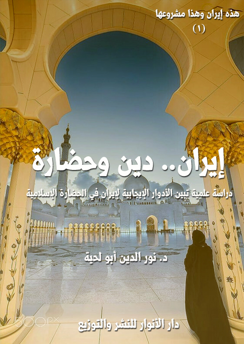

الكتاب: إيران.. دين وحضارة
المؤلف: أ.د. نور الدين أبو لحية
الناشر: مؤسسة العرفان للثقافة الإسلامية
الطبعة: الأولى، 1439 هـ
عدد الصفحات: 416
ISBN: 978-620-3-85917-1
لمطالعة الكتاب من تطبيق مؤلفاتي المجاني وهو أحسن وأيسر: هنا

التعريف بالكتاب
أولا ـ بيان أن الإيرانيين مسلمون منذ الفتح الأول، لم يتزحزحوا عن إسلامهم شعرة واحدة، وأن إسلامهم كان صادقا كما أخبر رسول الله صلى الله عليه وآله وسلم، وأنهم لم يتآمروا على الإسلام بتحريف أحكامه، ولا على المسلمين بإعلان الحرب عليهم، كما يزعم المغرضون.
وذكرنا في الكتاب الكثير من التجليات والشواهد والبراهين الدالة على ذلك، ابتداء من اهتمامهم بالقرآن الكريم قراءة وتفسيرا وتفعيلا في كل جوانب الحياة.. ومثله اهتمامهم بسنة رسول الله صلى الله عليه وآله وسلم بحسب ما وصلت إليهم نصوصها، وأنهم لأجل ذلك مؤمنون بعقائد الإسلام، ومنفذون لشرائعه، ومتحلون بقيمه الأخلاقية والروحية والحضارية، ما استطاعوا إلى ذلك سبيلا.
ثانيا ـ بيان أن إيران لم تتمسك بدينها تمسكا أنانيا، احتكرته لنفسها، وإنما راحت تستعمل كل الوسائل لخدمة الإسلام والمسلمين ابتداء من القرن الأول، حيث كانت أرضها منبعا لكل العلوم الإسلامية، ومحلا لتدريسها والكتابة فيها.
ففيها ظهرت أكبر تفاسير القرآن الكريم، وأكثر مجامع السنة النبوية، ومعظم ما كتب في العقيدة والفقه والأخلاق والعرفان، وكل العلوم العقلية والكونية.
وفيها كانت المدارس التي نشأ فيها كبار العلماء، وتتلمذت فيها أجيال طويلة من المسلمين، الذين استقر بهم الإسلام، وامتد في الأرض، لينشر هداية الله، ويلبس في كل عصر اللباس الذي يتناسب معه.
إيران.. دين وحضارة (7)
يخطئ الكثير من الناس حين يتصورون أن مطامع أعداء الأمة الإسلامية محصورة فقط في فلسطين أو في القدس أو في بعض تلك المدن التي كانت ولا تزال قبلة للأحرار في العالم.
فالجشع الاستعماري والحقد الغربي لا يكتفي بتلك الدولة، ولا بتلك المدن التي تتشكل منها، وإنما يمد يد مطامعه وأحقاده إلى جميع بلاد العالم الإسلامي، ليلتهمها دولة دولة، ومدينة مدينة، وشارعا شارعا.
وهو يستعمل لكل دولة أو مدينة أسلوبه ووسائله وذرائعه الخاصة.. فقد ضرب بغداد التي كانت عاصمة الحضارة والثقافة الإسلامية لقرون عديدة، عبر استعداء إخوانها من المدن العربية، ومن خلال قواعده فيها نشر الخراب والدمار، ولا يزال ينشر الفتنة، وبأياد وأموال عربية تكذب على نفسها حين تتصور أنها مع فلسطين والقدس، ويستحيل أن يكون مع فلسطين والقدس من لم يكن مع العراق وبغداد والنجف وكربلاء، وكل تلك المدن المضمخة بعطر العلم والإيمان والحضارة.
وهكذا ضُربت سورية بأموال عربية، وبمرتزقة عرب، يتوهمون أنهم مع قضايا الأمة، مع كونهم أشد أعدائها، شعروا بذلك أو لم يشعروا.. حتى الإسلاميون الذين يشنعون على العدو الصهيوني ضربه لغزة والضفة الغربية، راحوا يباركون له ولأمريكا وكل الدول الإمبريالية الغربية ضربها لدمشق وحلب وحمص، تلك المراكز الكبرى للحضارة الإسلامية، ولقرون طويلة.
وهكذا نجد أعداء الأمة يستخدمون أولئك المغفلين من العرب والمسلمين لينهشوا كل مرة قطعة جديدة من أرض العالم الإسلامي، ويركزون بصورة خاصة على العواصم الحضارية التي كانت بمثابة المنارات التي أضاءت للبشرية قرونا طويلة، ولذلك يريدون أن تنكس أعلام
إيران.. دين وحضارة (8)
تلك المنارات، حتى لا يمتد ضياؤها أو يعود لها بريقها وإشعاعها.
ومن تلك الدول التي لا يمكن لأحد أن يستبعد دورها المهم في التاريخ والحضارة الإسلامية (الجمهورية الإسلامية الإيرانية).. تلك الدولة التي لا تحوي مركزا واحدا فقط من مراكز الحضارة، بل تحوي مراكز كثيرة جدا.. فهي البلاد التي تضم أصفهان وشيراز وقم ومشهد ونيسابور وطهران وكاشان والكثير من المدن التي يتربع في كل شبر منها فقيه أو محدث أو مفسر أو أديب أو طبيب أو فلكي أو كيميائي.. ويتربع في كل قطعة منها أثر من آثار الحضارة الإسلامية، والقيم العظيمة المرتبطة بها.
ولذلك كانت الحملات الشديدة عليها، لا من أمريكا أو إسرائيل وحدهما، وإنما من أولئك العرب المغفلين الذين راحوا يشوهون إيران، ويدعون المتآمرين لضربها، ولم يكتفوا بذلك، بل راحت كل وسائل إعلامهم تشيطنها بدل أن تشيطن أمريكا، أو العدو الصهيوني.
وإن نسينا فلن ننسى أبدا ذلك الموقف الذي وقفه السلفيون والحركيون، حين عقدت بعض الاتفاقات في مصر لفتح المجال للزيارات السياحية المشتركة بين طهران والقاهرة، حينها راح السلفيون من معهم من الحركيين يدعون إلى الذهاب إلى المطارات، ومنع كل سائح إيراني من الدخول إلى مصر، في نفس الوقت الذي يدخل فيه الإسرائليون والأمريكيون، وعبدة الشياطين والهييز.. وكل من هب ودب.
ولن ننسى أبدا تلك القنوات التي لا هم لها إلا تصوير إيران بكونها شيطانا أكبر، وأنه لا غرض لها إلا هدم الأمة، وتفريق صفها، واستعمار أرضها، والهيمنة على خيراتها، في نفس الوقت الذي نرى فيه تلك الخيرات توهب هكذا مجانا، وبمئات الملايير من الدولارات لترامب وزوجته وابنته.. وكل المقربين أو المبعدين منه.
وقد بدأت هذه الحملة منذ لبست إيران لقب (الجمهورية الإسلامية)، حينها فقط تحولت إلى مشروع مجوسي وصفوي وفارسي، أما قبل ذلك، فقد كانوا مقربين جدا منها
إيران.. دين وحضارة (9)
يستقبلون الشاهنشاهات بالأحضان، ويرفضون أي إساءة لهم، لسبب بسيط هو أن أولئك الشاهنشات كانوا أصدقاء لأمريكا وإسرائيل والغرب.
ولذلك كان الواجب على كل مسلم أن يقف في وجه هذه المؤامرات الموجهة للعالم الإسلامي، ولمراكز الحضارة فيه، فالغرب لا يستهدف فقط ديننا وقيمنا، وإنما يستهدف كذلك أرضنا، ويستعمل بعضنا بعضا وسيلة لتحقيق ذلك.
وبناء على هذا حاولت في هذه السلسلةأن أقوم بواجبي الشرعي في الذب عن هذه القطعة المباركة، التي لا يمكن أن أنكر دورها العظيم علي وعلى جميع المسلمين.. فأكثر التراث الإسلامي الفقهي والأدبي واللغوي والصوفي جاءنا منها.
وأذكر أن من أوائل كتب الأدب التي شغفت بها كتاب (الأغاني)، لأبي فرج الأصفهاني، وهو من أصفهان الإيرانية.. وهكذا كان من أوائل الشخصيات التي قرأت كل كتبها، وامتلأت تعظيما لها، وأنا لا أزال شابا يافعا، أبو حامد الغزالي، وهو من طوس، وقبره قريب من مقام الإمام الرضا في مشهد... ومثله الفيض الكاشاني، وهو من كاشان، ومثلهما فريد الدين العطار وأشعاره الجميلة، وهو من نيسابور.. وهكذا كان أكثر الأعلام الذين تتلمذنا على أيديهم من صوفية وفقهاء وشعراء ومحدثين ومفسرين من تلك البلاد الممتلئة بالجمال والقيم الرفيعة.
لكن مع ذلك كله، وفجأة، ومن غير مقدمات تحولت إيران من تلك البلاد التي تضم أكبر مراكز الحضارة، وأكثر محاضن العلم والمعرفة، ومهد المدارس الإسلامية بجميع تفرعاتها، إلى بلد المؤامرات على الإسلام والمسلمين، وطيلة تاريخها.
حيث حولتها الكثير من الأقلام المأجورة، ومعها المؤسسات الإعلامية الضخمة، ومعهما سيل كبير من المغفلين الطائفيين الذين أعمتهم الأحقاد عن أن يبصروا الحقائق؛ فراحوا يشككون في إسلام إيران، ويطرحون بين عوام الناس وخواصهم أن الإيرانيين ليسوا سوى مجوس تستروا بالإسلام ليقضوا عليه.
إيران.. دين وحضارة (10)
وراحوا يبتدعون في سبيل ذلك الكثير من المصطلحات الغريبة التي لم نسمع بها طيلة التاريخ الإسلامي من أمثال: (المشروع الصفوي)، و(الإمبراطورية الفارسية) و(الفرس المجوس) و(الخطرالفارسي) و(جاء دور المجوس)، وغيرها، وهي من الكثرة بحيث لا تحتاج أي توثيق، لأن الجميع صار يسمعها ويرددها من غير أن يحاول التأكد منها، أو التثبت من معانيها، ذلك أنه يسمعها من كبار رجال العلم والدين في الأمة، ومن كبار الحركيين والقيادات الاجتماعية فيها.
والطامة الكبرى، والتي لا يمكن تفسيرها هي أن أكبر من حمل لواء العداء لإيران، وفي ثوبها الإسلامي، هم أولئك الإسلاميون الذين يدعون أنهم يطمحون إلى تحقيق المشروع الإسلامي على أرض الواقع، ليستعيدوا بذلك أمجاد الإسلام، ويحققوا قيمه في البلاد الإسلامية، ويحققوا معها معاني الحاكمية التي جاءت النصوص المقدسة بالدعوة إليها في كل مجالات الحياة.
لكنهم، وبعد فترة قصيرة من نجاح الثورة الإسلامية الإيرانية، راحوا يخونون ويشيطنون نظام (ولاية الفقيه)، الذي اعتمده الشعب الإيراني، وصوت عليه، وقبله نظاما لحكمه، وهو نظام يدعو إلى (الحاكمية لله)، وينفذها في الواقع بطريقة علمية سمحة ممتلئة بكل القيم الحضارية، مع مراعاة حقوق الشعب في اختيار قادته ونوابه.
وكان المنتظر من الإسلاميين أن يفرحوا بذلك، وأن يساندوه باعتباره المشروع الذي ظلوا طول أعمارهم ينادون به، لكنهم بدل ذلك راحوا يسبون الفقيه، ويكفرونه، ويعتبرونه متآمرا على الإسلام.. وراحوا يمدون أيديهم لجميع أعداء الأمة التي تخلت عن كل مشاريعها، لتجعل هدفها الوحيد والأكبر هو صد ذلك الزحف من الوعي الذي مثلته الجمهورية الإسلامية بوقوفها مع جميع القضايا العادلة.
ولأجل هذا حاولنا في هذه السلسلةأن نجمع كل تلك الشبهات التي استعملها
إيران.. دين وحضارة (11)
الإسلاميون وغيرهم لضرب الجمهورية الإسلامية الإيرانية وتشويهها وشيطنتها، لاعتقادنا أن ذلك من الواجبات الكبرى التي لا يجوز لنا السكوت عنها، فالشبهات التي تطال الإسلام لا تكتفي فقط بالشبه المرتبطة بتصوراته العقدية، أو أحكامه الفقهية، أو قيمه السلوكية.. بل هي تتعدى ذلك إلى الشبهات التي تطال شعوبه وبلاده وتاريخه وحضارته.. ذلك أن تشويه تلك الشعوب، ليس سوى تفريغ للإسلام من كل المنتسبين إليه.
وهو يدخل ضمن ما أُمرنا به من الذب عن إخواننا المسلمين والانتصار لهم، ورد الظلم عنهم؛ فلا يجوز لمسلم يسمع من يكفر إخوانه المؤمنين الطيبين في إيران أو في أي مكان، ويرميهم بالعظائم، ثم يظل ساكتا لا يتحرك للدفاع عنهم، لأنه يكون بذلك شريكا للمتآمرين الظالمين.
وقد أشار القرآن الكريم إلى هذا الواجب الشرعي في قوله تعالى: {إِنَّ الَّذِينَ آمَنُوا وَهَاجَرُوا وَجَاهَدُوا بِأَمْوَالِهِمْ وَأَنْفُسِهِمْ فِي سَبِيلِ اللَّهِ وَالَّذِينَ آوَوْا وَنَصَرُوا أُولَئِكَ بَعْضُهُمْ أَوْلِيَاءُ بَعْضٍ وَالَّذِينَ آمَنُوا وَلَمْ يُهَاجِرُوا مَا لَكُمْ مِنْ وَلَايَتِهِمْ مِنْ شَيْءٍ حَتَّى يُهَاجِرُوا وَإِنِ اسْتَنْصَرُوكُمْ فِي الدِّينِ فَعَلَيْكُمُ النَّصْرُ إِلَّا عَلَى قَوْمٍ بَيْنَكُمْ وَبَيْنَهُمْ مِيثَاقٌ وَاللَّهُ بِمَا تَعْمَلُونَ بَصِيرٌ} (لأنفال:72)
ففي هذه الآية الكريمة حض على نصر المؤمنين بعضهم بعضا؛ فلا يصح أن ينعم المسلم بالأمن والعافية والسمعة الطيبة والثناء العريض، في الوقت الذي يصاب إخوانه في إيران بكل أنواع البلاء، من الحصار الجائر، والحرب الضروس الظالمة، ومعهما كل تلك المكاييل التي لا عد لها من السباب والشتائم والتكفير والتبديع.
وهكذا دعانا رسول الله صلى الله عليه وآله وسلم أن نبرهن على إسلامنا بنصرة إخواننا في أي مكان تعرضوا له لأي أذى، ففي الحديث قال صلى الله عليه وآله وسلم: (المسلم أخو المسلم، لا يظلمه، ولا يسلمه، من كان في حاجة أخيه كان الله في حاجته، ومن فرج عن مسلم كربة فرج الله عنه كربة من كرب يوم القيامة، ومن ستر مسلما ستره الله يوم القيامة.. بحسب امرئ من الشر أن يحقر أخاه المسلم،
إيران.. دين وحضارة (12)
كل المسلم على المسلم حرام: دمه، وعرضه، وماله) (1)
وهكذا نجد النصوص المقدسة تدعونا إلى نصرة إخواننا في كل أرض، وفي كل حال، ففي الحديث قال رسول الله صلى الله عليه وآله وسلم: (انصر أخاك ظالماً أو مظلوماً)، قيل: يا رسول الله! أنصره مظلوماً، فكيف أنصره ظالما؟)، قال: (تمنعه من الظلم؛ فذلك نصرك إياه) (2)
وهكذا نص جميع العلماء من جميع المذاهب الإسلامية على أنه لا يجوز للمسلم أن يسكت عن الذب عن غرض إخوانه إذا ما انتهك، حتى لا يكون شريكا للمنتهكين، يقول الغزالي عند تعديده لحقوق الأخوة الإسلامية (ذب الأخ عن أخيه في غيبته مهما قصد بسوء أو تعرض لعرضه بكلام صريح أو تعريض، فحق الأخوة التشمير في الحماية والنصرة وتبكيت المتعنت وتغليظ القول عليه، والسكوت عن ذلك موغر للصدر ومنفر للقلب وتقصير في حق الأخوة.. فأخسس بأخ يراك والكلاب تفترسك وتمزق لحومك وهو ساكت لا تحركه الشفقة والحمية للدفع عنك وتمزيق الأعراض أشد على النفوس من تمزيق اللحوم ولذلك شبهه الله تعالى بأكل لحوم الميتة فقال: {أَيُحِبُّ أَحَدُكُمْ أَنْ يَأْكُلَ لَحْمَ أَخِيهِ مَيْتاً} (الحجرات: 12)) (3)
ولهذا، فإنا في هذه السلسلةنحاول أن نطبق بقدر المستطاع هذه الواجبات الشرعية التي تحرم علينا أن نسكت عن الظلم الموجه لعشرات الملايين من إخواننا الذين يغتابهم في كل لحظة الإعلام المغرض، والأقلام المأجورة، والخطباء المغفلون، والسياسيون المتلاعبون..
وقد التزمت في هذه المقالات الحياد المطلق، والموضوعية التامة، فلم أذكر أي مسألة إلا مشفوعة بأدلتها والوثائق التي تثبتها، ذلك أن الشريعة التي أمرتنا بنصرة إخواننا والذب عنهم، هي نفسها التي أمرتنا بأن نكون موضوعيين وعلميين، وألا نتبع الهوى، فالحق أحق أن يتبع،
__________
(1) رواه البخاري 9/ 171، ومسلم رقم (2563).
(2) رواه البخاري 5/ 70، والترمذي رقم (2256).
(3) إحياء علوم الدين (2/ 181)
إيران.. دين وحضارة (13)
وقد قال الله تعالى: {وَلَا تَقْفُ مَا لَيْسَ لَكَ بِهِ عِلْمٌ إِنَّ السَّمْعَ وَالْبَصَرَ وَالْفُؤَادَ كُلُّ أُولَئِكَ كَانَ عَنْهُ مَسْئُولًا} (الإسراء: 36)، وقال: {يَاأَيُّهَا الَّذِينَ آمَنُوا كُونُوا قَوَّامِينَ لِلَّهِ شُهَدَاءَ بِالْقِسْطِ وَلَا يَجْرِمَنَّكُمْ شَنَآنُ قَوْمٍ عَلَى أَلَّا تَعْدِلُوا اعْدِلُوا هُوَ أَقْرَبُ لِلتَّقْوَى وَاتَّقُوا اللَّهَ إِنَّ اللَّهَ خَبِيرٌ بِمَا تَعْمَلُونَ} (المائدة: 8)
ولهذا نحن نسعد بكل من ينتقدنا، أو يصحح ما قد نورده من معلومات يرى خطأها، ذلك أننا لم ندع عصمة إيران، ولا الشعب الإيراني، كما لم ندع عصمة أي دولة أو أي شعب من الشعوب.. لكن نريد فقط من الذي ينتقد أو يرد أن ينتقد بعلم، وبموضوعية، وبحياد تام، وبما هو ظاهر.. لأن الكثير للأسف يدخل تخميناته وحدسه وكشفه الباطن في هذا المجال..
حيث يذكرون لنا أن إيران وأمريكا وإسرائيل يشكلون حلفا مشتركا لمواجهة الأمة، وتخريبها.. فإذا ما طالبتهم بالدليل ذكروا لك أن ذلك يجري في الخفاء، ومن وراء الكواليس، وما تحت الطاولة..
فإذا سألتهم عن مصدر تلك المعلومات الخطيرة لم يجيبوك بشيء، لأنهم يتوهمون أن أوهامهم وحدسهم وكشفهم الباطن وحدها الدليل على تلك الادعاءات العريضة التي يدل كل شيء على نقيضها.
ولهذا لا نحترم أمثال تلك الدعاوى لأن الله تعالى نهانا أن نرجم بالغيب، أو نبني أحكامنا على سوء الظن، بل طولبنا بأن نتعامل بالظاهر، وأن نكل إلى الله النيات والسرائر، وقد قال رسول الله صلى الله عليه وآله وسلم: (إياكم والظن، فإن الظن أكذب الحديث، ولا تجسسوا ولا تنافسوا، ولا تدابروا ولا تباغضوا، وكونوا عباد الله إخوانا) (1)
وقبله قال الله تعالى: {يَاأَيُّهَا الَّذِينَ آمَنُوا اجْتَنِبُوا كَثِيرًا مِنَ الظَّنِّ إِنَّ بَعْضَ الظَّنِّ إِثْمٌ} (الحجرات: 12)، بل اعتبر أن أكبر حجاب وقع فيه المنحرفون عن الأنبياء هو سوء ظنهم
__________
(1) رواه أحمد (2/ 482)
إيران.. دين وحضارة (14)
بأنبيائهم، كما قال تعالى: {وَإِنْ تُطِعْ أَكْثَرَ مَنْ فِي الْأَرْضِ يُضِلُّوكَ عَنْ سَبِيلِ اللَّهِ إِنْ يَتَّبِعُونَ إِلَّا الظَّنَّ وَإِنْ هُمْ إِلَّا يَخْرُصُونَ} (الأنعام: 116)
ولهذا، فإن عقولنا لا تستطيع أن تصدق تلك الأراجيف والوساوس، في نفس الوقت الذي ترى فيه الجمهورية الإسلامية الإيرانية تدفع الغالي والنفيس في صراعها مع جميع قوى الاستكبار العالمي من أجل مواقفها الشجاعة والصادقة من القضية الفلسطينية، ومن الحروب الناعمة والصلبة التي تسلط على العالم الإسلامي.
إيران.. دين وحضارة (15)
يحاول هذا الكتاب الذي جعلناه الجزء الأول من هذه السلسلة التعريف بجانبين مهمين في إيران تاريخا وواقعا، وهما:
أولا ـ بيان أن الإيرانيين مسلمون منذ الفتح الأول، لم يتزحزحوا عن إسلامهم شعرة واحدة، وأن إسلامهم كان صادقا كما أخبر رسول الله صلى الله عليه وآله وسلم، وأنهم لم يتآمروا على الإسلام بتحريف أحكامه، ولا على المسلمين بإعلان الحرب عليهم، كما يزعم المغرضون.
وذكرنا في الكتاب الكثير من التجليات والشواهد والبراهين الدالة على ذلك، ابتداء من اهتمامهم تاريخا وواقعا بالقرآن الكريم قراءة وتفسيرا وتفعيلا في كل جوانب الحياة.. ومثله اهتمامهم بسنة رسول الله صلى الله عليه وآله وسلم بحسب ما وصلت إليهم نصوصها، وأنهم لأجل ذلك مؤمنون بعقائد الإسلام، ومنفذون لشرائعه، ومتحلون بقيمه الأخلاقية والروحية والحضارية، ما استطاعوا إلى ذلك سبيلا.
ثانيا ـ بيان أن إيران لم يكن تمسكها بدينها تمسكا أنانيا، احتكرته لنفسها، وإنما راحت تستعمل كل الوسائل لخدمة الإسلام والمسلمين ابتداء من القرن الأول، حيث كانت أرضها منبعا لكل العلوم الإسلامية، ومحلا لتدريسها والكتابة فيها.
ففيها ظهرت أكبر تفاسير القرآن الكريم، وأكثر مجامع السنة النبوية، ومعظم ما كتب في العقيدة والفقه والأخلاق والعرفان وكل العلوم العقلية والكونية.
وفيها كانت المدارس التي نشأ فيها كبار العلماء، وتتلمذت فيها أجيال طويلة من المسلمين، الذين استقر بهم الإسلام، وامتد في الأرض، لينشر هداية الله، ويلبس في كل عصر اللباس الذي يتناسب معه.
وقد حاولنا في هذا الكتاب كذلك أن نبين أن المشروع الحالي لإيران ليس سوى امتداد
إيران.. دين وحضارة (16)
لمشروعها القديم في خدمة الإسلام، بل إن هذا المشروع حاول أن يستفيد من كل ما حصل في التاريخ من عبر، ليؤسس من خلالها دولة إسلامية قوية، تحمل هم طرح القيم الإسلامية بحسب ما هي عليه، بعيدة عن كل التحريفات التي وقعت عبر التاريخ.
وحاولنا أن نفند عند ذكرنا لهذا المشروع كل الشبه التي يذكرها المغرضون، والتي على أساسها حولوا من إيران دولة العداء للإسلام، بدل أن تكون دولة الخدمة للإسلام، وقد استندنا في ذلك إلى ما ذكره القادة الفكريون لهذا المشروع من خلال كتاباتهم وطروحاتهم المختلفة.
وقد قسمنا الكتاب إلى سبعة فصول، كما يلي:
أولا ـ إيران.. والقرآن الكريم: وذكرت فيه تعلق الإيرانيين بالقرآن الكريم قراءة وتدبرا وتفسيرا وحفظا، ورددت فيه بتفصيل على تلك الشبه المغرضة التي تصور أن لإيران قرآنا غير قرآن المسلمين، وبينت أن مشروع إيران الحديث ليس سوى محاولة لتطبيق القرآن الكريم في الواقع بجميع مجالاته.
ثانيا ـ إيران.. والسنة النبوية: ورددت فيه على تلك المغالطات التي يستعملها المغرضون، ليشوهوا بها إيران من خلال تصويرهم لها بأنها بلد البدعة والضلالة، وأنه لا علاقة لها بسنة رسول الله صلى الله عليه وآله وسلم، وقد ذكرت فيه أن إيران ليست متمسكة بسنة رسول الله صلى الله عليه وآله وسلم في واقع حياتها فقط، وإنما هي أكبر من خدم رسول الله صلى الله عليه وآله وسلم، وفي جميع مراحل التاريخ، فأكثر كتب السنة رواية ودراية كتبت من طرف أعلامها الكبار.
ثالثا ـ إيران.. والعقيدة الإسلامية: وقد بينت فيه بالأدلة الكثيرة مدى التزام الإيرانيين بالعقيدة الإسلامية ونصرتها من خلال من ظهر فيها من المتكلمين الذين لم يظهر مثلهم في جميع بلاد العالم الإسلامي، كما رددت فيه على تلك الشبه التي يذكرها المغرضون، والتي يحاولون من خلالها شيطنة إيران وتكفيرها.
إيران.. دين وحضارة (17)
رابعا ـ إيران.. والشريعة الإسلامية: وبينت فيه من خلال الأدلة الكثيرة مدى اهتمام الإيرانيين بتطبيق بالشريعة الإسلامية في جميع مجالات حياتهم، وأن المشروع الحالي الذي أُعلن الحرب عليها بسببه ليس سوى تجسيد للنظام الإسلامي الذي استنطبه الفقهاء من المصادر المقدسة المعصومة.. بالإضافة إلى ذلك ذكرت مدى اهتمام الإيرانيين بخدمة الشريعة الإسلامية، والكتابة في فقهها وأصولها، وضمن الرؤى المختلفة للمذاهب الإسلامية.
خامسا ـ إيران.. والقيم الروحية: وبينت فيه ـ من خلال الأدلة الكثيرة ـ مدى تمسك الإيرانيين بالدين من خلال التزامهم بشعائره التعبدية، وما تنطوي عليه من سمو روحي، بالإضافة إلى ذكر الكثير من مساهماتهم في خدمة هذا الجانب، من خلال كبار الروحانيين الذين عاشوا فيها، وكتبوا في التصوف والعرفان والحياة الروحية.
سادسا ـ إيران.. والقيم الأخلاقية: وبينت فيه مدى اهتمام الإيرايين بالسلوك الأخلاقي، والدوافع التي دفعتهم لذلك، كما بينت مدى اهتمام المشروع الإسلامي الحديث بتنمية هذا الجانب في الواقع الاجتماعي والسياسي والاقتصادي والثقافي وكل المجالات.
كما ذكرت فيه مساهمات الإيرانيين في التأسيس لعلم الأخلاق، والكتابة فيه، وهي المجال الذي كانت لهم الريادة فيه بجدارة.
سابعا ـ إيران.. والقيم الحضارية: وبينت فيه مدى تمسك الإيرانيين بالحضارة، وعراقتهم فيها، وفي القيم المرتبطة بها، وذكرت ـ من خلال الأدلة الكثيرة ـ أن مشروعها للأمة ليس مشروعا استعماريا، ولا تسلطيا، ولا مشروع هيمنة، وإنما هو مشروع حضاري راق، يريد أن يخرج الأمة من تبعيتها لتبني حياتها وفق الرؤية الإسلامية الحضارية التي جاء الأنبياء جميعا لتحقيقها في أرض الواقع.
هذه هي الفصول الكبرى التي قسمنا على أساسها مباحث الكتاب، والتي اعتمدنا في كتابتها على مصادر تاريخية وفكرية كثيرة، ومن المدارس المختلفة، وقد وثقنا كل ذلك بحسب
إيران.. دين وحضارة (18)
ما أطقنا، حتى يتمكن القارئ من العودة إلى المصادر والتأكد بنفسه.
ونحب أن نبين أننا ـ لصعوبة الإحصاء ـ اكتفينا بذكر النماذج من كل قضية نطرحها، ذلك أنه من الصعب أن نؤرخ في هذا الكتاب المختصر لكل المفسرين والمحدثين والفقهاء والمتصوفة وعلماء الفلك والطب والفلاسفة وغيرهم.. ولذلك اكتفينا بذكر نماذج عنهم، وعن كبارهم الذين أسسوا للمعارف، أو كانت لهم إسهاماتهم الكبرى فيها.
ومثل ذلك لم نفصل كثيرا في ذكر النواحي المختلفة المرتبطة بالمشروع الحضاري الجديد، ذلك أننا خصصنا بالكتاب الثاني من هذه السلسة، والذي عنوناه بـ[إيران.. نظام وقيم]، والذي تناولنا فيه الشبهات بالمزيد من الردود العلمية المفصلة، كما وضحنا فيه القيم التي يتبناها هذا النظام ومدى شرعيتها.
ونحن وإن كنا بذلنا جهدا كبيرا في البحث والتحقيق إلا أننا لا ندعي العصمة، ولذلك يسرنا أن نجد من يوجهنا أو يصحح أخطاءنا، على أساس النصح والنقد البناء الذي ينهض بأمتنا، لأنا عند حديثنا عن إيران، لم نتحدث إلا عن قطعة كريمة من بلاد الإسلام، وتكريمها لا يعني تحقير غيرها، ولا التهوين من شأنه.
وإنما خصصناها بالحديث، ردا للظلم الذي يطالها، والذي أمرنا بالوقوف في وجهه، فالعقل والشرع والأخلاق الرفيعة تدعونا للنهوض لنصرة المظلوم، والدفاع عنه، وهذا ما حاولنا فعله في هذا الكتاب، ونستغفر الله من التقصير في أداء الواجب.
إيران.. دين وحضارة (19)
لعل الخاصية الأبرز التي تميز بها المشروع الحضاري الإيراني في طبعاته القديمة، وطبعته الحديثة هو ذلك التعلق بالقرآن الكريم، والذي يصل إلى حد العشق والهيام.. وذلك وحده كاف لصد كل التهم التي ينشرها الإعلام المغرض، وينشرها معه دعاة الفتنة والطائفية.
فالإيرانيون جميعا عامتهم وخاصتهم، يقرؤون القرآن الكريم باللغة العربية، مع مراعاة مخارج الحروف، وأحكام الترتيل قدر المستطاع، وذلك وحده كاف للرد على اتهامهم بالشعوبية الفارسية، ذلك أنه في إمكانهم أن يقرؤوا القرآن الكريم مترجما كما تفعل الكثير من الشعوب، ويكتفوا بذلك، ويجدون الرخص من الفقهاء التي تتيح لهم ذلك..
لكنهم لا يفعلون.. بل يقرؤون القرآن الكريم في صلاتهم، أو في المصاحف، باللغة العربية، التي يحاولون تعديل ألسنتهم عليها لتقرأ القرآن غضا طريا، كما يقرؤه إخوانهم من العرب.. بل إن علماءهم، وأثناء تدريسهم لعوام الناس، الذين لا يعرفون العربية، إذا مروا بالآيات القرآنية أثناء دروسهم، ينطقون بها أولا بالعربية، ثم يترجمونها بعد ذلك للفارسية.
وهكذا فإن المصاحف المطبوعة في إيران، والموزعة على جميع مدنها وقراها وأريافها، وحدها كافية للرد على تلك الشبهة التي يحرص المغرضون على نشرها لتشويه إيران وتشويه شعبها المسلم، وهي ادعاؤهم أن لإيران أو للشيعة مصاحفهم الخاصة، وذلك كذب وبهتان عظيم.
فالمصاحف المنتشرة في كل مقاطعات إيران هي نفس المصاحف الموجودة في كل بلاد العالم الإسلامي، وأنا أتحدى أن يجد أحد من الناس هذا المصحف الخاص، الذي يصوره الإعلام، ويصوره دعاة الفتنة.
ولا يحتاج أحد من الناس للتنقل للتأكد من ذلك، ففي إمكان أي كان أن يفتح أي قناة
إيران.. دين وحضارة (20)
فضائية إيرانية، أو أي إذاعة محلية تابعة لها ليسمع القرآن الكريم، وبقراءات جميلة جدا، لا تختلف عن تلك القراءات التي يقرؤه بها إخوانهم من العرب.
وفوق هذا كله نجد الإيرانيين، ومنذ بداية الإسلام، يهتمون بتفسير القرآن الكريم، ويعقدون المجالس لذلك، وقد استمروا على ذلك النهج إلى اليوم.. ولذلك نرى في المكتبات الورقية والالكترونية ثروة كبيرة من كتب التفسير والعلوم المرتبطة بالقرآن الكريم.. وهي ثروة لا يمكن تجاهلها، ولا الاستهانة بها، بل إننا لن نبالغ إن قلنا بأن المصادر الكبرى للتفسير بأنواعه المختلفة كانت من تأليف إيرانيين، كما سنرى.
ولم يكتف الإيرانيون بهذا، بل راحوا يبنون مشروعهم الحضاري الجديد على القرآن الكريم، باعتبار قداسته أولا، ولاعتقادهم أنه صالح لكل زمان ومكان، وأن فيه الحلول لكل المشكلات، أو كما عبر عن ذلك قائدهم الأكبر الإمام الخميني بقوله في رسالة وجهها إلى الحجيج: (يجب أن نعلم أن الحكمة هي أن هذا الكتاب الخالد الأبدي إنما هو لأجل هداية وإرشاد البشرية من أي لون أو قومية، وفي أي قطب أو قطر وحتى قيام الساعة، وأن تبقى المسائل الحياتية المهمة حية سواء فيما يخص المعنويات أو فيما يتعلق بنظام الملكية، وإفهام الناس أن مسائل القرآن ليست لعصرٍ وجهةٍ خاصة، ولا يظن أن هدف إبراهيم وموسى ومحمد عليهم وعلى آلهم السلام يختص بزمان خاص) (1)
ويقول في نفس الرسالة: (وينبغي على الحجّاج لبيت الله الحرام المحترمين لأي قومية انتموا أن يرضخوا لأحكام القرآن الكريم، ويقفوا في مواجهة سيل الشياطين الذين يريدون اقتلاع الإسلام الذي طهر الشرق والغرب وعملاءهم الذين لا إرادة لهم، ويمدوا يد الأخوة الإسلامية لبعضهم البعض وينتبهوا للآيات الكريمة التي تدعوهم إلى الاعتصام بحبل الله، وتنهاهم عن الاختلاف والتفرقة، وينبغي الاستفادة أكثر عضوياً وسياسياً من هذه الفريضة
__________
(1) أبعاد الحج، الإمام الخميني، سلسلة الفكر والنهج الخميني، ص 14.
إيران.. دين وحضارة (21)
العبادية السياسية الإسلامية، في تلك الأمكنة الشريفة التي شيّدت بحق لأجل مصالح الموحدين والمسلمين في العالم، والالتفات إلى سر التضحية والفداء الإبراهيمي ـ الإسماعيلي، حيث يجب الوقوف في سبيل الله إلى حد التضحية والفداء بأعز وأغلى ثمرة وجوده والدفاع عن الأهداف الإلهية) (1)
وهكذا نجد الدعوات الكثيرة من جميع قادة المشروع الحضاري الإيراني القديم والحديث منه إلى الاهتمام بالقرآن الكريم قراءة وتدبرا وانفعالا في جميع مجالات الحياة، أو كما عبر عن ذلك أبو حامد الغزالي الابن الإيراني الأصيل، تعليقا على قوله تعالى: {يَايَحْيَى خُذِ الْكِتَابَ بِقُوَّةٍ} (مريم: 12): (أي بجد واجتهاد، وأخذه بالجد أن يكون متجردا له عند قراءته منصرف الهمة إليه عن غيره، وقيل لبعضهم (إذا قرأت القرآن تحدث نفسك بشيء، فقال: أو شيء أحب إلي من القرآن حتى أحدث به نفسي).. وهذه الصفة تتولد من التعظيم فإن المعظم للكلام الذي يتلوه يستبشر به ويستأنس ولا يغفل عنه، ففي القرآن ما يستأنس به القلب إن كان التالي أهلا له؛ فكيف يطلب الأنس بالفكر في غيره وهو في متنزه ومتفرج، والذي يتفرج في المتنزهات لا يتفكر في غيرها، فقد قيل: إن في القرآن ميادين وبساتين ومقاصير وعرائس وديابيج ورياضا وخانات.. فإذا دخل القارئ الميادين، وقطف من البساتين، ودخل المقاصير، وشهد العرائس، ولبس الديابيج، وتنزه في الرياض، وسكن غرف الخانات، استغرقه ذلك وشغله عما سواه فلم يعزب قلبه ولم يتفرق فكره) (2)
بناء على هذا سنحاول في هذا المقال إثبات أهم تجليات اهتمام الإيرانيين بالقرآن الكريم طيلة تاريخهم المشرق، وكونه السبب في تلك الروح الإيمانية التي صحبتهم قديما، ولا تزال تصحبهم حديثا.
__________
(1) أبعاد الحج، الإمام الخميني، سلسلة الفكر والنهج الخميني، ص 17.
(2) إحياء علوم الدين (1/ 281)
إيران.. دين وحضارة (22)
أولا ـ تقديس القرآن الكريم والتأثر به
وهي أول ميزة يمكن اكتشافها بسهولة لمن يرى الإيرانيين وتعاملهم مع القرآن الكريم، فالكثير من عاداتهم وتقاليدهم تولي المصاحف اهتماما خاصا، وتعطيها قداسة لا تعطيها لشيء آخر.. فهم يقبلونه بمجرد لمسه، ثم يضعونه على جباههم تكريما له.
وهم إذا ما دخلوا أي محل أو غادروه جعلوا المصاحف فوق رؤوسهم، ثم ساروا أسفل منها تيمنا منهم بأن يكونوا في كلاءته وحفظه.
وهكذا هو حالهم عند قراءته أو سماعه؛ فهم ينفعلون عندها، ويتأثرون، وربما تنهمر الدموع الصادقة الخاشعة من عيونهم، مثل حالهم عند سماع الأدعية الواردة عن رسول الله صلى الله عليه وآله وسلم أو عن أهل بيت النبوة، والتي يرددونها كل حين.
ولعل ذلك ما أشار إليه قوله صلى الله عليه وآله وسلم، وهو يتحدث عن فارس، وصدقها في إيمانها: (لو كان الإيمان عند الثريا لناله رجال -أو رجل-من هؤلاء) (1)، وأشار إلى سلمان الفارسي.
ولا يمكنني أن أذكر سبب ذلك الانفعال، وتلك الروحانية، ولكني موقن أنها ليست مرتبطة بالعرق ـ كما يذكر بعض الباحثين ـ عندما يعلل ظهور أكثر الكتابات العرفانية والصوفية من تلك المناطق، ذلك أني مؤمن بأن الله تعالى خلق الخلق جميعا من طينة واحدة، ومؤمن كذلك أن سلوك الإنسان هو الذي يحدد وجهته، وطريقة تعامله مع الأشياء.
ولذلك فإن السبب الحقيقي لذلك التقديس وما يصحبه من الانفعال والتأثر يعود لتلك التعاليم المقدسة التي يسمعها الإيرانيون ـ سنتهم وشيعتهم ـ في المواعظ والمجالس العلمية كل حين عن رسول الله صلى الله عليه وآله وسلم وعن ورثته من آل بيت النبوة الذين شغفوا بهم.
فقد أوصى رسول الله صلى الله عليه وآله وسلم بالقرآن الكريم واعتبره الثقل الأكبر الذي لا تنجو الأمة إلا
__________
(1) رواه مسلم، والترمذي، والنسائي.
إيران.. دين وحضارة (23)
بالتمسك به، فقال: (إني تركت فيكم ما إن تمسكتم بهما لن تضلوا بعدي، الثقلين وأحدهما أكبر من الآخر: كتاب الله حبل ممدود من السماء إلى الأرض، وعترتي أهل بيتي. ألا وإنهما لن يفترقا حتى يردا علي الحوض) (1)
والإمام علي الذي يقدسه الإيرانيون، ويحفظون تعاليمه، ويرددونها في كل المحال، ويعلقونها كشعارات في شوارعهم ومدارسهم ومساجدهم، باعتباره الإمام الأول بعد رسول الله صلى الله عليه وآله وسلم يقول: (الله الله في القرآن، لا يسبقكم بالعمل به غيركم) (2)، ويقول: (كتاب الله تبصرون به، وتنطقون به، وتسمعون به، وينطق بعضه ببعض، ويشهد بعضه على بعض، ولا يختلف في الله، ولا يخالف بصاحبه عن الله) (3)، ويقول: (تعلموا كتاب الله تبارك وتعالى فإنه أحسن الحديث وأبلغ الموعظة، وتفقهوا فيه فإنه ربيع القلوب، واستشفوا بنوره فإنه شفاء لما في الصدور، وأحسنوا تلاوته فإنه أحسن القصص) (4)، ويقول: (اعلموا أنه ليس على أحد بعد القرآن من فاقة، ولا لأحد قبل القرآن من غنى، فاستشفوه من أدوائكم، واستعينوا به على لأوائكم) (5)
وهكذا يسمعون كل حين، وفي كل مناسبة قول الإمام الحسن: (إن هذا القرآن فيه مصابيح النور وشفاء الصدور، فليجل جال بضوئه، وليلجم الصفة، فإن التلقين حياة القلب البصير كما يمشى المستنير في الظلمات بالنور) (6)
ومثله قول الإمام زين العابدين الذي عبر عن علاقته الروحية بالقرآن الكريم، بقوله:
__________
(1) رواه أبو داود وغيره.
(2) نهج البلاغة: الكتاب 47.
(3) نهج البلاغة: الخطبة 133
(4) تحف العقول: 150
(5) نهج البلاغة: الخطبة 176، شرح نهج البلاغة لابن أبي الحديد: 10/ 18
(6) البحار: 78/ 112 / 6
إيران.. دين وحضارة (24)
(لو مات من بين المشرق والمغرب لما استوحشت بعد أن يكون القرآن معي) (1)
وهكذا كان لتلك الكلمات النورانية وغيرها كثير تأثيره الهائل في نفوس الإيرانيين، مما وفر لهم القابلية لاستقبال تعاليم قادة المشروع الحضاري الجديد، والذين حاولوا أن يستنهضوا الهمم من خلال تلك المشاعر الجياشة تجاة القرآن الكريم، وتجاه أهل بيت النبوة.
حيث نجد أحاديث الإمام الخميني، وفي عز الأزمات التي مرت بها إيران، يذكر بالقرآن الكريم، ويتحدث عنه حديث العارفين المحققين، الذين يدعون إلى تذوق معانيه، والعروج من خلالها إلى الله، وعدم الاكتفاء بكسوة الألفاظ والحروف.
ومن كلماته في هذا المجال قوله في بعض خطبه: (نحن نفخر، ويفخر شعبنا المتمسك بالإسلام والقرآن بأننا أتباع مذهب يهدف إلى إنقاذ حقائق القرآن الممتلئة دعوة إلى الوحدة بين المسلمين، بل البشرية باعتبارها أنجع علاج منقذ للإنسان من القيود المكبلة لرجليه ويديه وقلبه وعقله، والسائقة له إلى الفناء والعدم والرق والعبودية للطواغيت) (2)
ويقول في وصاياه لبعض أولئك الملتفين به، والذين قدموا الغالي والنفيس في سبيل تنفيذ تعاليمه: (اعلم أيها العزيز أن عظمة كل كلام وكل كتاب إما بعظمة متكلمة وكاتبه، وإما بعظمة مطالبه ومقاصده، وإما بعظمة نتائجه وثمراته، وإما بعظمة الرسول والواسطة، وإما بعظمة المرسل إليه وحامله، وإما بعظمة حافظه وحارسه، وإما بعظمة شارحه ومبيّنه، وإما بعظمة وقت إرساله وكيفية إرساله. وبعض هذه الأمور دخيل في العظمة ذاتاً وجوهرا وبعضها عرضاً وبالواسطة، وبعضها كاشف عن العظمة) (3)
ثم يذكر أن هذه المعاني جميعا متوفرة في القرآن الكريم، باعتباره حوى العظمة في جميع
__________
(1) الكافي: 2/ 602 / 13.
(2) القرآن في كلام الإمام الخميني، ص 17.
(3) منهجية الثورة الإسلامية - صفحة 79.
إيران.. دين وحضارة (25)
جوانبها، فيقول: (وجميع هذه الأمور التي ذكرناها موجودة في هذه الصحيفة النورانية بالوجه الأعلى والأوفى، بل هي من مختصّاته بحيث أن أي كتاب اخر إما ألاَّ يشترك معه في شي ء منها أصلاً، أو لا يشترك معه في جميع المراتب)
ثم راح يفصل نواحي العظمة التي تستدعي التقديس المطلق له، وابتدأ بعظمه المتكلم به، فقال: (أما عظمة متكلمه ومنشئه وصاحبه، فهو العظيم المطلق الذي جميع أنواع العظمة المتصورة في الملك والملكوت، وجميع أنواع القدرة النازلة في الغيب والشهادة رشحة من تجليات عظمة فعل تلك الذات المقدسة، ولا يمكن أن يتجلّى الحق تعالى بالعظمة لأحدٍ وإنما يتجلى بها من وراء الاف الحجب والسرادقات)
وتحدث عن عظمة محتوياته، فقال: (وأما عظمته بواسطة محتوياته ومقاصده ومطالبه فيستدعي ذلك عقد فصل على حدة، بل فصول وأبواب، ورسالة مستقلة، وكتاب مستقل حتى يسلك نبذة منها في سلك البيان والتحرير)، وهو يشير بذلك إلى ما ألفه حول عظمة محتويات القرآن الكريم، والتي تناولها من جميع جوانبها العرفانية والسلوكية والاجتماعية والسياسية وكل جوانب الحياة، كما سنرى.
وتحدث عن عظمة الرسول الذي أنزل عليه، بلغة ذوقية عرفانية، فقال: (وأما عظمة المرسل إليه ومتحمّله، فهو القلب التقي النقي الأحمدي الأحدي الجمعي المحمدي الذي تجلى له الحق تعالى بجميع الشؤون الذاتية والصفاتية والأسمائية والأفعالية، وهو صاحب النبوة الختمية، والولاية المطلقة، وهو أكرم البرية، وأعظم الخليقة وخلاصة الكون، وجوهرة الوجود، وعصارة دار التحقق، واللبنة الأخيرة، وصاحب البرزخية الكبرى، والخلافة العظمى)
وتحدث عن الحراسة الإلهية له من التحريف، على عكس ما يذكر المغرضون والطائفيون، فقال: (وأما حافظه وحارسه، فهو ذات الحق جلّ جلاله، كما قال في الآية الكريمة
إيران.. دين وحضارة (26)
المباركة: {إِنَّا نَحْنُ نَزَّلْنَا الذِّكْرَ وَإِنَّا لَهُ لَحَافِظُونَ} (الحجر: 9))
وهكذا تحدث عن سائر نواحي العظمة في القرآن الكريم، والتي تستدعي التقديس المطلق له، والانفعال المطلق لمعانيه، باعتبارها تمثل الحقائق الكبرى للوجود، وتشمل القيم الكبرى للسلوك.
وهكذا نرى كل القادة والعلماء الذين أسسوا لهذا المشروع الحضاري الجديد، يشيدون بالقرآن الكريم، ويدعون إلى قراءته قراءة روحية، وعدم الاكتفاء فقط بتجويده وترتيله والاهتمام بمخارج حروفه.
وذلك لا يعني عدم اهتمامهم بهذا الجانب، فالإيرانيون يحبون تجويد القرآن الكريم، ومولعون بصفة خاصة ببعض القراء المصريين كالشيخ عبد الباسط عبد الصمد وغيره، وهم يقلدونه كثيرا في قراءتهم، وهو دليل كبير على انفتاحهم على العالم الإسلامي، وعدم شعورهم بأي فوارق بينهم وبين سائر إخوانهم من المسلمين، ولذلك يستقبلون كل حين القراء من مصر وغيرها، وتعقد المجالس العامة لهم، ليستمع الناس إلى قراءتهم مع تتبعها في المصاحف.
ونحب أن نذكر نموذجا لذلك الولع بالقرآن الكريم بشخص قائدهم الحالي السيد علي الخامنئي، الذي تحدث عن نفسه وعن بداية عشقه للقرآن الكريم، فقال (1): (أوّل نغمات القرآن العذبة قد سمعتها من والدتي.. كناّ نجتمع حولها، نجلس، لتقرأ بدورها القرآن لنا بصوت عذب جدّاً ومؤثّر، وتشرح لنا بعض آياته)
ثم ذكر كيف كانت والدته تحكي لهم قصص أنبياء الله، وقصص القرآن، وكيف كانت تحرص على أن تقصّها تماماً كما يحكيها القرآن الكريم.
ثم ذكر كيف أخذه والده السيّد جواد هو وأخوه إلى الكتاب حيث تعلما القرآن الكريم
__________
(1) انظر هذه النصوص من كتاب [سيرة حياة آية الله السيد علي الحسيني الخامنئي]، طهران: مركز الدراسات والأبحاث السياسيّة، ص 24.
إيران.. دين وحضارة (27)
على الطريقة التي يدرس بها في سائر بلاد العالم الإسلامي، فقد (كان التلامذة يجلسون خلف الأرجل الموزّعة بشكل دائري داخل الغرفة، وجميع الحاضرين كانوا يقرأون القرآن، وكان كلّ واحد يقرأ نصف صفحة)
ثم يذكر كيف شغف في شبابه الباكر بتلاوة القراء المصريين، فقال: (لقد تعرفت على قراءة القرّاء المصريّين ورأيت بعدها أنّي نعم، ينقصني الكثير من ناحية القراءة وعندها كمّلت ما ينقصني)
ويذكر كيف كان يجتهد في التقاط موجة الإذاعة المصريّة في مشهد من أجل الاستمتاع بقراءة القراء المصريين، وكيف كان يفرح فرحا شديدا عندما يتاح له التقاط موجاتها بدقة، أو عندما تتاح له أشرطة الكاسيت، التي يحضرها من يذهب إلى مصر.
وقد كان من المشايخ الذين تأثر بهم هو وجيله ـ كما يذكر ـ الشيخ مصطفى إسماعيل، وهو أحد كبار القراء في ذلك الحين، وقد برر إيثاره لقراءته بقوله: (إن مصطفى إسماعيل يقرأ بالالتفات إلى المعانى والمفاهيم.. بعض القرّاء يقرأ بالاعتماد فقط على الصوت، ويكون هدفهم أداء لحن جميل وشَغْل الناس، أمّا مصطفى إسماعيل ففي الوقت الذي يقرأ فيه قراءة جميلة، يلفت الناس إلى المعنى)
ويذكر كيف كان القرآن الكريم هو المؤنس له ولرفاقه أيام المحن التي مروا بها في سجون الشاه، وقد ذكر أنه في الاعتقال الأوّل، عندما نُقل إلى السجن العسكري في مشهد، وجُرّد من جميع وسائله، طلب منهم أن يتركوا القرآن بحوزته، فوافقوا.
ويذكر مدى التخفيف والمواساة التي كانت تحدثها قراءة القرآن الكريم لهم، وهم في السجون والمعتقلات، ومن ذلك أنه في الاعتقال الخامس له عندما قام موظّفو السافاك بتعذيب العالم المجاهد السيّد عباس الموسوي القوتشاني، يذكر السيد علي الخامنئي أن عزاءه الوحيد كان في قراءته للقرآن، يقول في ذلك: (الشيء الوحيد الذي كان في هذا السجن مصدر عزاء
إيران.. دين وحضارة (28)
للسيّد الموسوي، هو أنّه عندما عاد بعد إنهاء التعذيب من زنزانته الانفراديّة، كان يستمع إلي قراءتي للقرآن. وقد انتقيت بدوري آيات خاصّة من قبل، وقرأتها على مسمعه لتكون بلسماً لجراحه وراحةً لنفسه، ومقوّية لعزيمته)
وهكذا يذكر كيف كان الثوار حينها يستعملون القرآن الكريم وسيلة لاستنهاض الهمم، ومواجهة الاستبداد والظلم الذي يقوم به الشاه، ومخابراته.
ومن الأمثلة على ذلك أنهم ـ كما يذكر ـ كانوا يدرسون سورة البقرة، وما جرى مع بني إسرائيل، ليوصلوا من خلالها رسائلهم الثورية، ويصف كيفية ذلك، فيذكر أنهم بعد شرح تفسير الآيات القرآنية يطلب من القارئ أن يقرأ الآيات المفسّرة بصوته الجميل لتستقر في النفس أكثر، ويقول: (الآن وقد فهمتم معنى هذه الآيات، فليأتِ قارئنا العزيز ويتلوها بلحن وصوت حسن لتلتذّوا بها أكثر، لأنّ الناس كانوا قد فهموا معنى القرآن، كانوا يرتبطون به بنحو أسهل)
هذا نموذج بسيط عن مدى اهتمام الإيرانيين وخاصة في مشروعهم الحضاري الجديد بالقرآن الكريم قراءة وانفعالا وتأثرا، وهو ما أفادهم ذلك الانتصار الكبير.
ولذلك أولوا ـ بعد انتصار الثورة الاسلاميّة ـ عناية خاصة بالقرآن الكريم قراءة ودراسة وتدبرا؛ فأسست أول إذاعة للقرآن الكريم بعد الانتصار مباشرة، ثم شكل مجلس أعلى للقرآن في مؤسّسة الإذاعة والتلفزيون، وطورت جلسات التلاوة من خلال مشاركة القرّاء من خارج البلاد وخاصّة القرّاء المصريّين.
وهكذا كانت تعقد المجالس الكثيرة للقرآن الكريم في جميع أنحاء البلاد، وفي المؤسسات التربوية المختلفة، ليشب النشأ على حب القرآن، وتنشر من خلال ذلك الثقافة والقيم القرآنيّة.
وقد كان السيد على الخامنئي، حريصا على الحضور لتلك المجالس، وخاصة تلك التي تعقد في شهر رمضان، أو أثناء المسابقات الخاصة بالترتيل والتجويد، وكان يدلي بتوجيهاته أثناء
إيران.. دين وحضارة (29)
تلك القراءات ليزداد الشعب تمسكا بها.
ومن أمثلة تلك التوجيهات قوله ـ مخاطبا الشعب الإيراني ـ: (اسعو جهدكم أن لا تقطعوا صلتكم بالقرآن.. اقرأوا القرآن كلّ يوم ولو نصف صفحة؛ فهذه جميعاً تقرّب الإنسان إلى الله؛ وهذه الأمور نفسها هي التي تجلب للانسان صفاء الروح والانشراح والفتوحات المعنويّة)
وومن أمثلتها قوله في لقائه الأوّل مع أعضاء حكومة من الحكومات الجديدة: (أيّها الإخوة والأخوات الأعزّاء.. حملكم ثقيل وعملكم صعب.. فمن أجل أن تتمكّنوا من عبور هذا الطريق بسلام، وتمضوا الـ 1450 يوماً التي أمامكم بنحو جيّد، عليكم أن ترتبطوا بالله. حتماً، اقرأوا القرآن يوميّاً؛ قدر ما تستطيعون واجعلوا هذا عادةً حتميّة لكم)
وكان يهدي الوزراء في أول توليهم لوظائفهم، نسخةً من القرآن الكريم تذكيرا لهم به، ودعوة لهم لرعايته أثناء أدائهم للمسؤوليات المناطة بهم.
وهو يعتبر كل ذلك مقدمة لتحقيق الانفعال الكامل بالقرآن الكريم، فيقول: (من بركات الثورة الاسلاميّة، أنّ شبابنا ذوي الصوت والذوق وفنّ التلاوة، والموهوبين والمستعدّين للتعلّم، قد وردوا ـ بحمد الله ـ هذا الميدان وحقّقوا نجاحات، ولكن هذه جميعاً مقدّمات؛ مقدّمات لفهم القرآن والتخلّق بأخلاق القرآن)
ويقول مخاطبا الجموع في جلسة من جلسات القرآن: (المسألة الأسمى، هي التخلّق بالأخلاق القرآنيّة؛ جعل طريقة الحياة متطابقة مع القرآن)
هذه مجرد شذرات تدل على مدى تقديس الإيرانيين للقرآن الكريم، وحبهم له، سواء كانوا عامة بسطاء، أو كانوا أصحاب مسؤوليات ضخمة.
إيران.. دين وحضارة (30)
من أهم تجليات اهتمام الإيرانيين بالقرآن الكريم من لدن سلفهم الأول إلى اليوم ذلك الاهتمام بتفسير القرآن الكريم، وبالصيغ المختلفة، ولا نبالغ إن ذكرنا بأن أهم كتب التفسير بأنواعه المختلفة كانت إيرانية المنشأ، وإيرانية السبق.. وسنحاول هنا ـ باختصار ـ إثبات ذلك من خلال ذكر بعض أهم ما ألفه الإيرانيون، وكان لهم السبق فيه.
ونبدأ بأول نوع من أنواع التفسير وأهمها، وهو التفسير بالمأثور، ذلك التفسير الذي يعتمد (على ما ورد فى القرآن الكريم نفسه من البيان والتفصيل لبعض آياته، بالإضافة إلى ما نُقل عن الرسول صلى الله عليه وآله وسلم، أو عن الصحابة والتابعين) (1)
حيث نجد أهم كتاب في هذا النوع من التفسير، بل أهم مرجع ترجع إليه جميع التفاسير ـ باتفاق جميع المؤرخين ـ كتاب (جامع البيان في تأويل القرآن) لابن جرير الطبري (224 هـ - 310 هـ)، فهو الجامع لأكبر قدر من الروايات التفسيرية، وصاحبه إيراني من آمل التابعة لمحافظة مازندران (2).
وقد قال الذهبي مبينا أهمية تفسيره، وتأثيره فيما بعده من التفاسير: (يعتبر تفسير ابن جرير من أقوم التفاسير وأشهرها، كما يعتبر المرجع الأول عند المفسِّرين الذين عنوا بالتفسير النقلى، وإن كان فى الوقت نفسه يُعتبر مرجعاً غير قليل الأهمية من مراجع التفسير العقلى، نظراً لما فيه من الاستنباط، وتوجيه الأقوال، وترجيح بعضها على بعض، ترجيحاً يعتمد على النظر العقلى، والبحث الحر الدقيق.. ولو أننا تتبعنا ما قاله العلماء فى تفسير ابن جرير، لوجدنا أن الباحثين فى الشرق والغرب قد أجمعوا الحكم على عظيم قيمته، واتفقوا على أنه مرجع لا غِنَى
__________
(1) التفسير والمفسرون (1/ 112).
(2) آمل هي مدينة في محافظة مازندران في إيران وهي من أكبر مدن المحافظة ويبلغ عدد سكانها 197470 نسمة (عام 2005). ترتفع آمل 76 متراً عن سطح البحر، ويبعد مركز آمل عن شاطيء بحر قزوين 18 كم وعن أقدام سلسلة جبال البرز حوالي 6 كم. كما تبعد آمل حوالي 180 كم شمال شرق مدينة طهران. كما تتمتع آمل بموقع مهم فهي المدخل لعدة مدن في محافظة مازندران. تتبع مدينة آمل العديد من القرى ذات الطبيعة الجميلة كما يمكن رؤية قمة جبل دماوند من مدينة آمل.
إيران.. دين وحضارة (31)
عنه لطالب التفسير) (1)
وذكر أسبقيته لجميع كتب التفسير، فقال: (ونستطيع أن نقول: إن تفسير ابن جرير هو التفسير الذى له الأوَّلية بين كتب التفسير، أوَّلية زمنية، وأوَّلية من ناحية الفن والصناعة.. أما أوَّليته الزمنية، فلأنه أقدم كتاب فى التفسير وصل إلينا، وما سبقه من المحاولات التفسيرية ذهبت بمرور الزمن، ولم يصل إلينا شئ منها، اللَّهم إلا ما وصل إلينا منها فى ثنايا ذلك الكتاب الخالد الذى نحن بصدده.. وأما أوَّليته من ناحية الفن والصناعة، فذلك أمر يرجع إلى ما يمتاز به الكتاب من الطريقة البديعة التى سلكها فيه مؤلفه، حتى أخرجه للناس كتاباً له قيمته ومكانته.) (2)
ونقل عن السيوطى قوله: (وكتابه - يعنى تفسير محمد بن جرير - أجَّل التفاسير وأعظمها، فإنه يتعرض لتوجيه الأقوال، وترجيح بعضها على بعض، والإعراب، والاستنباط، فهو يفوق بذلك على تفاسير الأقدمين)
وقال النووى: (أجمعت الأُمة على أنه لم يُصنَّف مثل تفسير الطبرى)، وقال أبو حامد الإسفرايينى: (لو سافر رجل إلى الصين حتى يحصل على كتاب تفسير محمد بن جرير لم يكن ذلك كثيراً)
وقد شاء الله أن تكون المدينة التي ولد فيها الطبري هي نفسها المدينة التي نشأ فيها أكبر أعلام المفسرين في هذا العصر الشيخ عبد الله الجوادي الآملي (ولد في 1932) الفيلسوف، والمفسر والمرجع، وأحد أبرز العلماء الإيرانيين المعاصرين، وهو من تلامذة المفسر والفيلسوف الكبير محمد حسين الطباطبائي، وللشيخ عبد الله الجوادي الآملي بالإضافة إلى تفسيره الكبير الكثير من الكتب حول المعارف القرآنية من أمثال (تسنيم في تفسير القرآن)، (معارف القرآن
__________
(1) التفسير والمفسرون (1/ 149)
(2) التفسير والمفسرون (1/ 150).
إيران.. دين وحضارة (32)
من خلال الحواميم السبع)، و(نظرية المعرفة في القرآن الكريم)، و(العقيدة من خلال الفطرة في القرآن الكريم)
وهكذا نجد من أوائل من اهتم بالبلاغة القرآنية، بل يمكن اعتباره المؤسس لها، عالم كان يسكن قريبا من تلك المدينة، وهو أبو بكر عبد القاهر بن عبد الرحمن الجرجاني (1) (400 - 471 هـ) المنتسب لمدينة (جرجان) (2) الإيرانية، وهو أحد اللذًين قيل عنهما: (لم يفهم القرآن إلا أعرجان أحدهما في زمخشر، والآخر في جرجان)
ويعتبر ـ بشهادة كل المؤرخين ـ مؤسس علم البلاغة، ويعد كتاباه: (دلائل الإعجاز) و(أسرار البلاغة) من أهم ما ألف في هذا المجال، وقد كان هدفه منهما هو إعجاز القرآن الكريم وفضله على النصوص الأخرى من شعر ونثر، بالإضافة إلى ذلك ألف رسالة في إعجاز القرآن الكريم بعنوان (الرسالة الشافية في إعجاز القرآن)، وهي من أفضل ماكُتِب في الإعجاز القرآني، وقد نفى فيها الجرجاني القول بالصرفة، الذي حاول البعض من خلاله نفي البحث عن مدارك الإعجاز القرآني.
وقريب من تلك المدن التي ولدت فيها المؤلفات المرتبطة بالتفسير بالمأثور والبلاغة القرآنية ولد أكبر من صنّف في التفسير بالرأي الشيخ فخر الدين الرازي، ابن خطيب الري، وهو من العلماء الذين جمعوا بين تخصصات مختلفة، فهو مفسر وفقيه وأصولي، وباحث في الفيزياء، والرياضيات، والطب، والفلك.
ويعتبر كتابه (التفسير الكبير) الذي سماه (مفاتيح الغيب) من أكثر كتب التفسير تحقيقا وبحثا في المعاني القرآنية، وما يرتبط بها من العلوم المختلفة، وقد قال محمد السيد حسين الذهبي
__________
(1) وفيات الأعيان 1: 298 وطبقات السبكي 3: 238.
(2) أو كركان (بالفارسية: گرگان)، وكانت تسمّى قديماً أستراباذ أو أستراباد، وهي إحدى المدن الشهيرة في إيران. وتقع في شمالي إيران حالياً، وكانت جرجان مركز منطقة استرآباد.. وإليها ينتسب الشريف الجرجاني والميرداماد الحسيني الفيلسوف والمير فندرسكي واللغوي النحوي علي الفصيحي وكذلك الأمين الأسترابادي.
إيران.. دين وحضارة (33)
عنه: (إن تفسير الفخر الرازى ليحظى بشهرة واسعة بين العلماء، وذلك لأنه يمتاز عن غيره من كتب التفسير، بالأبحاث الفيَّاضة الواسعة، فى نواح شتَّى من العلم، ولهذا يصفه ابن خلكان فيقول: (إن الفخر الرازى جمع فيه كل غريب وغريبة) (1)
وهكذا نجد ناصر الدين البيضاوي (ت 691 هـ) صاحب تفسير (أنوار التنزيل وأسرار التأويل)، وهو من أشهر التفاسير التي اعتمدها المتأخرون لسهولتها، من إيران من مدينة البيضاء، قرب شيراز، وتوفي في تبريز، وتفسيره يعتبر نموذجا للكتب الدراسية المقررة التي تعتمد التلخيص والتبسيط.
وهكذا نجد أكبر من اهتم باللغة القرآنية وتحرير مفرداتها ومصطلحاتها علم كبير من أعلام إيران في التفسير وغيره، وهو الراغب الأصفهاني (ت 502 هـ)، وهو من أهل (أصفهان)، وقد كتب في اللغة القرآنية والتفسير الكتب التي لا تزال مراجع في بابها، ولم يسبق لمثلها، ومن أهمها كتابه (المفردات في غريب القرآن) و(حل متشابهات القرآن) و(جامع التفاسير)، بالإضافة إلى كتبه في الأخلاق والآداب من أمثال (الذريعة إلى مكارم الشريعة) و(الأخلاق) ويسمى (أخلاق الراغب) و(تفصيل النشأتين) في الحكمة وعلم النفس، وغيرها من الكتب.
وعلى هذا المنوال نجد أقدم كتب التفسير الإشاري الصوفي كتاب سهل بن عبد الله التستري (المتوفى: 283 هـ)، وهو من (تستر) إحدى مدن محافظة خوزستان الموجودة في إيران، وكان سهل التستري أحد أكبر أئمة الصوفية وعلمائهم المتكلمين في علوم الإخلاص والرياضيات وعيوب الأفعال، وقد قال عنه أبو نعيم الأصفهاني في كتابه (حلية الأولياء): (عامة كلام سهل في تصفية الأعمال، وتنقية الأحوال عن المعايب والأعلال)
وهكذا نجد أقدم كتب التفسير الفقهي كتاب (أحكام القرآن) لأبي بكر أحمد بن علي
__________
(1) التفسير والمفسرون (1/ 208)
إيران.. دين وحضارة (34)
الرازي الجصاص ((305 - 370 هـ)، ويعد من أفضل وأسبق ما كتب في أحكام القرآن، ويقع في ثلاثة مجلدات، وهو رازي منسوب إلى الري، وهي جزء من مدينة طهران في إيران المعاصرة (1).
ومن التفاسير الكبرى التي ألفها إيرانيون، وكانت مصادر كبرى للتفسير في جميع العالم الإسلامي، ولفترات طويلة تفسير (غرائب القرآن ورغائب الفرقان)، المعروف بتفسير النيسابوري الذي ألفه العلامة نظام الدين حسن بن محمد بن حسين القمي النيسابوري، إمام المفسرين في عصره، وهو ينتسب إلى عاصمتين من عواصم الحضارة في إيران نيسابور، ومدينة قم.
ومنها تفسير ابن أبي حاتم الرازي (240 - 327 هـ)، وهو من أقدم التفاسير بالمأثور، وعليه وعلى تفسير الطبري يعتمد هذا النوع من التفسير، وهو كما تدل عليه نسبته من مدينة الري، الموجودة حاليا في طهران.
ومؤلفه هو أبو محمد عبد الرحمن بن محمد بن أبي حاتم الحنظلي (2) الرازي (3) (240 - 327 هـ)، وهو من كبار حفاظ الحديث، رحل في طلب الحديث إلى البلاد مع أبيه وبعده، وأدرك الأسانيد العالية، كان إماما في معرفة الرجال. قال أبو الوليد الباجي: ابن أبي حاتم ثقة حافظ.
ومن مؤلفاته: (الجرح والتعديل)، والتفسير، في عدة مجلدات، كما صنف في الفقه واختلاف الصحابة والتابعين.
__________
(1) الري (بالفارسية: شهر ري) هي مدينة تاريخية أضحت اليوم جزءً من الجنوب الشرقي لمدينة طهران في إيران، وإليها ينسب الكثير من الأعلام من أمثال قطب الدين الرازي (694 - 766 هـ) الفيلسوف وعالم المنطق، ونجم الدين الرازي (573 - 654 هـ) الصوفي المعروف، و.
(2) الحنظلي نسبة إلى درب حنظلة بالري.
(3) تذكرة الحفاظ 3/ 46؛ وطبقات الحنابلة 2/ 55؛ والأعلام للزركلي 4/ 99
إيران.. دين وحضارة (35)
بالإضافة إلى هذه الكتب السنية، والتي كان لها السبق على غيرها في هذا المجال، نجد كبار كتب التفسير الشيعية تخرج من المدن الإيرانية، بل من نفس المدن التي صدرت منها تلك الكتب السنية، وهو دليل على الأخوة التي كانت تربط بين جميع سكان إيران سنتهم وشيعتهم.
ومن الأمثلة على ذلك أشهر كتاب شيعي في التفسير، تفسير (مجمع البيان لعلوم القرآن)، لأبي علي الفضل بن الحسن بن الفضل الطبرسى المشهدى، العالِم، المفسِّر، الفقيه، المحدِّث.
وميزته أنه من التفاسير التي تجد رواجا وقبولا عند كل من الشيعة والسنة، بل اعتبره الفريقان من أقدم المصادر التفسير ية، وقد اعتمد فيه منهجية علمية مميزة، حيث يعتمد على اللغة، ثم الإعراب، ثم الحجة، ثم القراءة، ثم المعنى، ولا يقتصر على آراء مذهب دون آخر، بل يذكر آراء جميع المذاهب الإسلامية، ولذلك صار هذا التفسير مميزاً عن سائر التفاسير، ومعترفاً به من قبل الأمة الإسلامية قاطبة.
وقد نقل الذهبي في (التفسير والمفسرون) عن بعضهم قولهم عنه: (إن عمدة المفسِّرين، أمين الدين، ثقة الإسلام، أبو علىّ الفاضل بن الحسن بن الفضل الطبرسى، كان من نحارير علماء التفسير، وتفسيره الكبير الموسوم بمجمع البيان، بيان كاف ودليل واف لجامعيته لفنون الفضل والكمال، ثم لما وصل إليه بعد هذا التأليف كتاب الكشاف واستحسن طريقته، ألَّف تفسيراً آخر مختصراً، شاملاً لفوائد تفسيره الأول ولطائف الكشاف، وسماه الجوامع، وله تفسير ثالث أيضاً أخصر من الأولين، وتصانيف أخرى فى الفقه والكلام) (1)
وقد أشاد بهذا التفسير جميع رواد التقريب بن المذاهب الإسلامية، ومن بينهم الشيخ محمود شلتوت شيخ جامع الأزهر الذي قال في مقدمته لإحدى طبعاته: (إنّ تفسير مجمع البيان بما فيه من مزايا يفضل على جميع تفاسير القرآن المؤلفة من قبل علماء الإسلام على اختلاف
__________
(1) التفسير والمفسرون (2/ 74).
إيران.. دين وحضارة (36)
مسالكهم ومذاهبهم طوال مئآت السنين) (1)
وقال عنه الشيخ عبد المجيد سليم، شيخ الجامع الأزهر آنذاك ووكيل جماعة التقريب: (هو كتاب جليل الشأن غزير العلم كثير الفوائد وحسن الترتيب، لا أحسبني مبالغاً إذا قلت إنه في مقدمة كتب التفسير التي تعد مراجع لعلومه وبحوثه، وجدت صاحبه عميق التفكر عظيم التدبر، متمكنا من علمه، قويا في أسلوبه وتعبيره، شديد الحرص على أن يجلى للنّاس كثيرا من المسائل التي يفيدهم علمها)
ومن التفاسير الشيعية المؤلفة في إيران (تفسير الصافى) لمؤلفه ملا محسن الفيض الكاشاني، ومؤلفه من (كاشان) المدينة الإيرانية المعروفة (2)، وتفسيره من التفاسير الروائية (أي: تفسير الآيات بناء على ما ورد في الروايات)، وهو تفسير مختصر وشامل، وكان موضع اهتمام المفسرين الذين جاؤوا بعده، فقد كان السيد محمد الحسين الطباطبائي يستشهد كثيرا بأقوال مؤلفه في تفسيره الميزان، وكان محمد هادي معرفة يقول عنه: (وهذا التفسير – على جملته – من نفائس التفاسير الجامعة لجُلّ المرويات عن أئمة أهل البيت إن تفسيراً أو تأويلاً. وإن كان فيه بعض الخلط بين الغثّ والسمين) (3)، ويقول عنه محمد علي أيازي: هذا التفسير - بالنسبة إلى التفاسير الأخرى - تفسير مختصر للقرآن الكريم، وكان في السابق موضع اهتمام أهل العلم والبحث في الحوزات العلمية حتى تم تدريسه للطلبة في الحوزة.
هذه نماذج عن بعض التفاسير القرآنية القديمة التي ألفت في إيران، ومن علماء إيرانيين، كان لهم السبق في المجالات التي كتبوا فيها..
__________
(1) الطبرسي، مجمع البيان لعلوم القرآن، المقدمة.
(2) وهي رابع أهم مدينة إيرانية من حيث وجود الآثار التاريخية فيها بعد أصفهان وشيراز ويزد، فهي عريقة في التاريخ في الفن المعماري الإيراني. كما أن كاشان تُعرف عالمياً بسجّادها الذي تصنعه أنامل نسائها في أغلب بيوتها، فضلاً عن مصانع السجّاد الحديثة الموجودة في هذه المدينة..
(3) التفسير والمفسرون، ج 2، ص 336.
إيران.. دين وحضارة (37)
أما إيران المعاصرة، فقد أولت التفسير القرآني أهمية لا يضاهيها فيها كل ما ألف في العصور السابقة، حيث نجد الكثير من المفسرين الذين ألفوا التفاسير البديعة المتقنة، والتي حاولت أن تتجاوز المذاهب والطوائف الإسلامية.
ولعل من أهم تلك التفاسير ما ألفه العلامتان الكبيران الشيخ جعفر السبحاني، والشيخ ناصر مكارم الشيرازي:
أما أولهما، فهو العلامة الكبير الشيخ جعفر بن محمد حسين السبحاني الخياباني التبريزي، العالم الإيراني الكبير صاحب التآليف الكثيرة في علم الكلام والتفسير والفلسفة (1)، والذي لم تمنعه فارسيته من التبحر في اللغة العربية وتذوقها، وقد قال عنه الشيخ محمد تقي التستري في تقريضه لبعض كتبه: (والعجب أنكم رغم نشأتكم في إيران أخذتم بناصية اللغة العربية كأديب مصري أو بغدادي، فأتيتم بتعابير عصرية رائجة) (2)
وقد كان من أبرز تلامذة قائد الثورة الإسلامية الإمام الخميني، حيث حضر درسه الأصولي لسبع سنوات، وقرر أبحاثه الاصولية التي طبعت تحت عنوان (تهذيب الأصول) في ثلاثة أجزاء، سنة 1955 م.
وقد كان من أهم المجالات التي أولاها اهتمامه الكبير تفسير القرآن الكريم والدراسات المرتبطة به، وقد عبر عن ذلك في بعض كتبه بقوله: (ثم من فضل الله ومنته على عبده الفقير هو أني عشت مع القرآن الكريم قراءة وتفسيراً، مدة مديدة من عمري، منذ شبابي إلى هرمي، وقد ألفت في تفسير القرآن موسوعتين باللغة العربية والفار سية، كما فسرت عددا كبيرا من سور القرآن الكريم، وأما الآن فإني عازم بما يسنح به العمر على تفسير أجزاء القرآن الكريم)
__________
(1) وهو مؤسس مؤسسة الإمام الصادق والمشرف عليها، وهي من المؤسسات الثقافية الإسلامية الكبيرة في قم، وتتبعها مؤسسات ومراكز فرعية أخرى..
(2) انظر مقالا بعنوان: منية الطالبين في تفسير القرآن المبين عصارة خبرة علمية وثمرة مسيرة حافلة، الشيخ حسن الصفار، مجلة البصائر 9/ 11 / 2015 م..
إيران.. دين وحضارة (38)
وكان الشيخ السبحاني رائدا التفسير الموضوعي للقرآن الكريم، حيث أصدر فيه كتابه الكبير (مفاهيم القرآن)، والذي لا نجد نظيرا له للأسف في سائر المدارس الإسلامية، حيث تناول فيه الكثير من المواضيع والقضايا الأساسية في القرآن الكريم كالتوحيد والصفات الالهية والنبوة والإمامة والمعاد والحكومة الاسلامية وغيرها.
بالإضافة إلى هذا نجد في قائمة مؤلفات الشيخ السبحاني التي تنوف على (250) كتاباً عشرات الكتب العلمية حول القرآن الكريم، ومعالجة موضوعاته المختلفة.
وقد أشار الشيخ حسن الصفار إلى أهمية كتابات الشيخ السبحاني في التفسير عند عرضه لأحد تفاسيره، وهو (منية الطالبين في تفسير القرآن المبين) بقوله: (إن الساحة الفكرية الاسلامية تستقبل الآن مشروعا قرآنيا واعداً، يوفر فرصة رائعة لأبناء هذا الجيل من الأمة، في التعرف على معاني آيات القرآن الكريم، واستشفاف مضامينها، بما يواكب تطورات الحياة المعاصرة، ويستجيب للتحديات الفكرية القائمة، بلغة واضحة، وأسلوب جذاب، بعيدا عن الإسهاب الممل، والاختصار المخل.. وسيجد من يطلع على الأجزاء الصادرة من هذا التفسير المميّز، كيف يوظّف الشيخ السبحاني خبرته وتجربته العلمية في مختلف حقول المعرفة، للغوص في اعماق معاني الآيات الكريمة، من أجل تقديم لآلئ مضامينها ناصعة مشرقة بين يدي القارئ الكريم)
ثم وصف طريقته في التفسير، فقال: (فحينما تستبطن الآية معنى عقدياً، يبرزه ويجلّيه بدقة ووضوح.. وحين تشير الآية إلى حدث تاريخي، يسلط عليه الأضواء بما يخدم هدف الآية من أخذ العبرة والدروس.. وإذا تضمنت الآية حكما تشريعيا، ناقش اختلاف المذاهب والفقهاء في تشخيص ذلك الحكم.. وعندما تعالج الآية بعداً تربوياً أخلاقياً، يتناول مقاصدها في تزكية النفس وتقويم السلوك.. وهكذا يجد القارئ الكريم نفسه امام بحوث علمية مركّزة،
إيران.. دين وحضارة (39)
وطرح معرفي مكثّف، بلغة عصرية واضحة مشرقة) (1)
أما الثاني، فهو العلامة الكبير ناصر مكارم الشيرازي، أحد أكبر العلماء المعاصرين، والذي كان من المشاركين الكبار في قيام الثورة الإسلامية في إيران، وقد تعرض للنفي عدة مرات، ويعد اليوم من أبرز القيادات الدينية في إيران.
ومن كتبه في التفسير (تفسير الأمثل)، وقد كتبه في البداية باللغة الفارسية، وصدر في سبعة وعشرين مجلَّدًا ثمَّ ترجم بعدها إلى العربية، وقد استغرق العمل فيه قرابة الخمسة عشر عامًا امتدَّت من 1396 هـ ولغاية 1410 هـ.
ومن مزايا هذا التفسير كونه وضع بعبارات سلسة، قابلة للفهم من قبل العوام والخواص، لأن الهدف من كتابته كان ـ كما يذكر صاحبه ـ ألا يستعصي فهمه على الناس، حتى يتمكنوا من فهم وتدبُّر معاني القرآن العظيم، ولذلك نراه يبتعد عن التعقيدات في طرح المطالب العلمية والمصطلحات الغامضة.
وقد ذكر في مقدمة التفسير دوافعه لتأليفه، فقال: (واجهنا دومًا أسئلة وردت إلينا من مختلف الفئات -وخاصة الشباب المتعطِّش إلى نبع القرآن- عن التفسير الأفضل. هذه الأسئلة تنطوي ضمنيًا على بحث عن تفسير يبيِّن عظمة القرآن عن تحقيق ولا عن تقليد ويجيب على ما في الساحة من احتياجات وتطلُّعات وآلام وآمال.. تفسير يجدي كلّ الفئات، ويخلو عن المصطلحات العلمية المعقَّدة، وهذا التفسير دوّن على أساس هذين الهدفين) (2)
ومن مزايا هذا التفسير كونه من التفاسير التي راعت التقريب بين المذاهب الإسلامية، حيث نجده يشتمل على تحقيقات مهمة من المدارس الإسلامية المختلفة، فهو يرجع لتفسير
__________
(1) انظر مقالا بعنوان: منية الطالبين في تفسير القرآن المبين عصارة خبرة علمية وثمرة مسيرة حافلة، الشيخ حسن الصفار، مجلة البصائر 9/ 11 / 2015 م..
(2) الأمثل في تفسير كتاب الله المنزل ج 1 - ص 5..
إيران.. دين وحضارة (40)
مجمع البيان للطبرسي، والجامع لأحكام القرآن، والميزان في تفسير القرآن للطباطبائي، والمنار، وتفسير نور الثقلين للحويزي، والتفسير الكبير للفخر الرازي، وظلال القرآن لسيد قطب، وتفسير المراغي وغيرها من الكتب، ويصيغ عباراتها بلغة سلسلة مبسطة، يمكن فهمها لعوام الناس وخواصهم.
هذه مجرد نماذج عن اهتمام الإيرانيين بتفسير القرآن الكريم وفهمه والتدبر فيه، والتي لم تكتف بالعلماء والأساتذة المتفرغين، وإنما شملت أيضا كبار القادة الذين أنيطت بهم أكبر المهمات إبان الثورة الإسلامية.
ومنهم الإمام الخميني الذي كان له اهتمام كبير بتفسير القرآن الكريم، فقد كان يفسره في مجالسه المختلفة، وقد جمعت تلك المجالس في تفسير خاص، سمي (تفسير القرآن الكريم المستخرج من آثار الإمام الخميني)، وقد نشره قسم الشؤون الدولية في مؤسسة تنظيم ونشر تراث الإمام الخميني في خمسة مجلدات.
ثالثا ـ الاهتمام بتفعيل القرآن الكريم في الحياة
من مظاهر الاهتمام التي يوليها الإيرانيون للقرآن الكريم، تلك الدعوات الكثيرة لتفعيله في الحياة، فهو الكتاب الذي يحوي جميع القيم الإيمانية والأخلاقية والحضارية، وهو الكتاب الذي جعله الله حبله الممدود لإنقاذ البشرية وتخليصها من الأهواء والاستبداد وكل أنواع الفتن، كما قال الإمام الصادق: (من لم يعرف الحق من القرآن لم يتنكب الفتن) (1)
وسر ذلك كما عبر عنه هو (أن الله تبارك وتعالى لم يجعله لزمان دون زمان، ولا لناس دون ناس، فهو في كل زمان جديد، وعند كل قوم غض إلى يوم القيامة) (2)
__________
(1) المحاسن: 1/ 341 / 702.
(2) البحار: 92/ 15 / 8
إيران.. دين وحضارة (41)
ولذلك حمل الإيرانيون من سالف الزمان هذا النوع من الاهتمام، وكيف لا يفعلون ذلك، وقد سمعوا صيحات الإمام الرضا فيهم، وهو يخاطبهم من مشهد، واصفا القرآن الكريم بقوله: (هو حبل الله المتين، وعروته الوثقى، وطريقته المثلى، المؤدي إلى الجنة، والمنجي من النار، لا يخلق على الأزمنة، ولا يغث على الألسنة، لأنه لم يجعل لزمان دون زمان، بل جعل دليل البرهان، والحجة على كل إنسان، لا يأتيه الباطل من بين يديه ولا من خلفه تنزيل من حكيم حميد) (1)
وسمعوا بعده الإمام الجواد، وهو يحذرهم من نبذ القرآن الكريم، أو تحريف معانيه وقيمه، ويقول لهم: (كل أمة قد رفع الله عنهم علم الكتاب حين نبذوه وولاهم عدوهم حين تولوه، وكان من نبذهم الكتاب أن أقاموا حروفه وحرفوا حدوده، فهم يروونه ولا يرعونه، والجهال يعجبهم حفظهم للرواية، والعلماء يحزنهم تركهم للرعاية) (2)
وبناء على تلك الدعوات وغيرها، سار الكثير من المجددين ودعاة الإحياء الذين أنجبتهم إيران طيلة تاريخها، والذين كان لهم الأثر البالغ على العالم الإسلامي جميعا.
ولبيان هذا وتأكيده، نحب أن نقتصر هنا على مثالين من المشروع الحضاري الإيراني القديم، ومثالين من المشروع الحضاري الجديد.
أما المثال الأول من المشروع الحضاري الإيراني القديم، فهو أبو حامد الغزالي الذي عاش وتربى في مشهد، تلك المدينة التي تشرفت بالإمام الرضا، وكانت تعاليمه لا تزال تؤثر فيها، والذي لا يشك أحد في كونه حلقة مهمة في تاريخ الإحياء والتجديد الإسلامي.
وقد كان من أهم ما تركزت عليه دعوة الغزالي الإحيائية، العودة إلى القرآن الكريم، وعدم الاكتفاء بقراءته قراءة مجردة عن أي تأثير واقعي، وقد وضع في ذلك كتابه المعروف
__________
(1) عيون أخبار الرضا: 2/ 130 / 9
(2) الكافي: 8/ 53 / 16
إيران.. دين وحضارة (42)
(جواهر القرآن) الذي بين فيه مناهج تدبر القرآن، والاستفادة من حقائقه في جميع مناحي الحياة، وقد ذكر في مقدمته غرضه من تأليفه، فقال: (إِني أُنَبِّهك على رَقْدَتك، أيُّها المُستَرسِلُ في تِلاوَتِك، المُتَّخِذُ دراسة القرآن عملاً، المُتَلقِّفُ من معانيه ظواهر وجُمَلاً، إلى كم تطوف على ساحل البحر مُغَمَّضاً عينيك عن غرائبها؟ أَوَمَا كان لك أن تركب مَتْنَ لُجَّتِها لِتُبْصِرَ عجائبَها؟ وتسافَر إلى جزائرها لآِجتِنَاء أطَايِبِها؟ وتغوصَ في عمقها فتستغني بِنَيْلِ جواهِرها؟ أوَما تُعَيِّر نفسكَ في الحرمان عن دُرَرِها وجواهرها بإدمان النظر إلى سواحلها وظواهرها؟ أوَما بَلغك أن القرآن هو البحر المحيط؟ ومنه يتشعَّب علمُ الأَوَّلينَ والآخرِينَ كما يتشعب عن سواحل البحر المحيط أنهارُها وجداوِلُها؟ أوَما تَغْبِطُ أقواماً خاضوا في غَمرة أمواجها فظفروا بالكبريت الأحمر؟ وغاصوا في أعماقها فاستخرجوا الياقوتَ الأحمرَ، والدُرَّ الأزهَرَ، والزَّبَرْجَدَ الأخضر؟.. وها أنا أُرشدك قاضِياً حقَّ إخائِك، ومُرتَجياً بَرَكة دعائك إلى كيفية سياحتهم وغَوْصهم وسباحتهم) (1)
ونجد أمثال هذه الدعوة في كل كتبه، وخاصة في (إحياء علوم الدين) الذي دعا فيه إلى العبور إلى حقائق القرآن، وعدم الاكتفاء بظاهر التلاوة، وقد كانت تلك الآداب من أحسن ما كتب في التعامل الإيماني مع القرآن الكريم، ولا يمكن لأحد أن يقرأها، وينفعل لها دون أن يتأثر بذلك، وتتغير قراءته للقرآن الكريم تغيرا جذريا.
ومما له علاقة كبرى بتفعيل القرآن الكريم في الحياة ذلك الأدب الرفيع الذي سماه الغزالي (التخصيص)، ويعني به أن يقدر قارئ القرآن أثناء قراءته أنه المخصوص بكل خطاب فيه، فإن سمع أمرا أو نهيا قدر أنه المنهي والمأمور، وإن سمع وعدا أو وعيدا فمثل ذلك، (وكيف لا يقدر هذا، والقرآن ما أنزل على رسول الله صلى الله عليه وآله وسلم لرسول الله صلى الله عليه وآله وسلم خاصة، بل هو شفاء ورحمة ونور
__________
(1) جواهر القرآن (ص: 21)
إيران.. دين وحضارة (43)
للعالمين) (1)
ونتيجة ذلك ـ كما يرى الغزالي ـ أن لا تتخذ دراسة القرآن عملا، بل يقرؤه كما يقرأ العبد كتاب مولاه الذي كتبه إليه ليتأمله، ويعمل بمقتضاه، وينقل الغزالي في ذلك عن مالك بن دينار قوله: (ما زرع القرآن في قلوبكم يا أهل القرآن؟.. إن القرآن ربيع المؤمن، كما أن القرآن ربيع الأرض) (2)
ولا يكون ذلك ـ كما يرى الغزالي ـ إلا بالتعامل الجدي مع القرآن الكريم، واعتبار كل ما فيه حكمة وفائدة في حق كل شخص بعينه، فليست قصصه ـ مثلاـ سمرا غير مقصود، وإنما هي عبر وتثبيت لمن تأملها، ولأجل هذا أمر الله تعالى الكافة بشكر نعمة القرآن الكريم باعتبار نزوله غير مختص به صلى الله عليه وآله وسلم، بل هو متعلق بكل مكلف، فقد قال تعالى: {وَاذْكُرُوا نِعْمَتَ اللَّهِ عَلَيْكُمْ وَمَا أَنْزَلَ عَلَيْكُمْ مِنَ الْكِتَابِ وَالْحِكْمَةِ يَعِظُكُمْ بِهِ} (البقرة:231) (3)
هذا المثال الأول، ولا يشك أحد في تأثيره في العالم الإسلامي، ولفترات طويلة جدا، بل لا نكون مبالغين إن زعمنا أن تأثيره لا يزال ساريا إلى اليوم، وفي كل المدارس الإسلامية، ذلك أن كتابه (إحياء علوم الدين) قد تناوله الفيض الكاشاني بالتهذيب، ونقله إلى المدرسة الشيعية، لتصبح القيم التي ذكرها فيه مصدرا من مصادر الوحدة الإسلامية.
أما المثال الثاني، فهو باعث النهضة في العصر الحديث، والذي كان له التأثير الفاعل في كل الدعاة والمفكرين الذين جاءوا بعده (جمال الدين الأسد أبادي) والذي اشتهر بلقب بالأفغاني مع كونه كان إيرانيا، ولم يكن أفغانيا، ولكن المصلحة والتقية دعته لأن يلقب بذلك اللقب خوفا على دعوته من أن تغتال إذا علمت السلطات العثمانية خصوصا بأصله (4).
__________
(1) إحياء علوم الدين: 1/ 284.
(2) إحياء علوم الدين: 1/ 285.
(3) إحياء علوم الدين: 1/ 285.
(4) قال مرزا لطف الله أسد آبادي ابن اخت جمال الدين المشهور بالأفغاني في كتابه [جمال الدين الأسدابادي، ص 34]: (وكان كشف حقيقة جمال الدين أمام السلطان عبد الحميد ضربة قاضية وجَّهها مظفر الدين شاه إلى جمال الدين بوثيقة سلمها علاء الملك سفير إيران في تركيا إلى الحكومة التركية تثبت بالأدلة القاطعة أن جمال الدين إيراني شيعي يختفي في ثياب الأفغاني، ويتّخذ المذهب السني ستاراً يحتمي به).
إيران.. دين وحضارة (44)
وقد كان جوهر دعوة جمال الدين ينطلق من العودة إلى القرآن الكريم، وتفعليه في جميع مناحي الحياة، أو كما عبر عن ذلك بقوله: (على العلماء والخطباء والأئمة في جميع زوايا الإسلام أن يتواصلوا ويتحاوروا مع بعضهم البعض، وأن ينشؤوا مراكز لهم في أنحاء الأرض المختلفة، يجتمعوا فيها ليبحثوا قضايا الوحدة ويرشدوا العامة إلى تعاليم القرآن الكريم والحديث الشريف، ويجمعوا الشتات في الأماكن المقدسة، وأيّ مكان أقدس من بيت الله الحرام، ينهلوا من فيوضاته الرحمانية، فيمتلؤوا عزيمة وثباتاً بوجه المعتدين، ويقفوا على احتياجات الناس، وفي هذا العمل نشر للعلوم وحماية للدين وكذلك طردٌ للبدع وتنوير للأذهان، وتنظيم هذه العملية سيحدّد المدارج العلمية ومسؤوليات كل فرد ويسدّ باب البدع، وحتى لو ظهرت البدعة، فإنّ تواصل هذه الشرائح مع بعضها سيتيح وأدها في مهدها لئلا تنتشر بين الناس) (1)
وهو يرجع جميع أنواع البلاء والتخلف والفقر والاستعمار التي حصلت للمسلمين إلى ابتعادهم عن القرآن الكريم، ويستدل لذلك بقوله تعالى: {وَما كانَ رَبُّكَ لِيُهْلِكَ الْقُرى بِظُلْمٍ وَأَهْلُها مُصْلِحُونَ} (هود: 117)، ويستخرج منها أسباب الخلل الذي حصل للأمة الإسلامية، ويتساءل متعجبا: (كيف أتيح للكفار أن يظهروا على المسلمين؟ ما الذي جرى؟ كيف وصلت الحضارة الإسلامية إلى ما وصلت إليه من الضعف والانحلال والوهن بعد عصر طويل من الازدهار والغلبة؟ كيف أضاع المسلمون جميع تلك الإمكانات والنعم؟)
ثم يطرح الحل من خلال القرآن الكريم نفسه، ومن خلال قوله تعالى: {إِنَّ اللَّهَ لا يُغَيِّرُ ما بِقَوْمٍ حَتَّى يُغَيِّرُوا ما بِأَنْفُسِهِمْ} (الرعد: 11)) (2)
__________
(1) الأفغاني، الجمود وانحطاط المسلمين، مقالات العروة الوثقى: 45 ـ 46.
(2) انظر: الأفغاني، القضاء والقدر: 64 ـ 75، مقالات العروة الوثقي.
إيران.. دين وحضارة (45)
فهذه الآية الكريمة ـ كما يذكر جمال الدين ـ هي التي تصف للأمة طريق الخروج من أزماتها، وهي نفس الآية التي استند إليها كل المصلحين الذين جاءوا بعده، وقد قال معبرا عن معناها: (إنّ الحكيم المبدع لهذا الكون قد وضع للأشياء عللاً وأسباباً، ومن ثمّ لكل حادث علله ونتائجه الخاصة به، والآيات القرآنية بدورها تصرّح بهذه الحقيقة، وهي أنّ نظام الكون تحكمه قوانين دقيقة وثابتة اصطلح عليها بالسنن الإلهية، وأنّ التزامها والتقيّد بها يعني السير في طريق الخير والفلاح، والحيد عنها يوجب الضلال والخسران) (1)
وقد ذكر جمال الدين إدراك المستعمر لهذه الحقائق، ولهذا كان يحارب كل من يدعو إلى العودة إلى القرآن الكريم، ويقول في ذلك: (حَسْبُ رجل الدين أن يقول: إنّه مؤمن بالقرآن وآياته؛ لينفيه الاستعمار إلى جزيرة اندومان) (2)
هذه بعض النماذج عن طروحات جمال الدين الأسد آبادي، والتي يمكن لمن شاء أن يرجع إليها، ويتأكد منها ليتبين له أنها كلها تنطلق من القرآن الكريم، وأنها فوق ذلك كانت الأسس الكبرى التي قام عليها الإصلاح والتجديد في العصر الحديث.
أما المشروع الحضاري الجديد للجمهورية الإسلامية الإيرانية؛ فيمكننا اعتباره قائما على القرآن الكريم باتفاق جميع قادته ومفكريه وزعمائه السياسيين وغير السياسيين، فكلهم دعوا إلى تفعيل القرآن الكريم في جميع مظاهر الحياة الاجتماعية والاقتصادية والسياسية، واعتباره الدستور الأعلى الذي يقوم عليه النظام الإسلامي في جميع جوانبه.
وأول من دعا إلى هذا، ونشره، واهتم بالدعوة إليه قائد المشروع الحضاري الجديد في إيران الإمام الخميني، والذي لم يكن يدع مناسبة شعبية أو خاصة إلا ودعا فيها إلى تفعيل القرآن الكريم في جميع مظاهر الحياة، باعتباره الوصية الكبرى لرسول الله صلى الله عليه وآله وسلم.
__________
(1) انظر: الأفغاني، أسباب حفظ الملك: 148 ـ 157، العروة الوثقي.
(2) الأفغاني، العروة الوثقى وجرائد الإنجليز، مقالات العروة الوثقى: 206.
إيران.. دين وحضارة (46)
ومن الأمثلة على ذلك قوله تعليقا على حديث الثقلين (1)، وتفريط الأمة في وصية النبي صلى الله عليه وآله وسلم: (فهذا الحديث حجة بالغة على البشرية جمعاء، ولا سيما المسلمين بمختلف مذاهبهم، فهم مسؤولون جميعاً عن ذلك بعد أن تمّت الحجة عليهم، وإن كان هناك من عذر للعامة بسبب جهلهم وعدم اطلاعهم، فلا عذر لعلماء المذاهب.. ولنر الآن ما جرى على القرآن هذه الوديعة الإلهية، وتركة رسول الإسلام صلى الله عليه وآله وسلم لقد شرعت نوائب مفجعة حرية أن يُبكى منها دماً.. فقد استغل عباد الأنا والطواغيت القرآن الكريم، واتخذوه وسيلة للحكومات المعادية للقرآن، وأبعدوا مفسري القرآن الحقيقيين والعارفين بالحقائق الحقة ممن تعلموا القرآن كله من الرسول الأكرم صلى الله عليه وآله وسلم أبعدوهم بذرائع شتى)
ثم ذكر بعض مظاهر ذلك الإبعاد، فقال: (لقد أخرجوا القرآن الذي كان وما يزال الدستور الأعظم لحياة البشر وشؤونهم المادية والمعنوية حتى يرِدوا الحوض من الميدان، وأبطلوا حكومة العدل الإلهي، وهي أحد أهداف هذا الكتاب المقدس، وأسسوا أسس الانحراف عن دين الله وكتابه والسنّة الإلهية، فبلغ الأمر حداً يخجل القلم عن تبيانه، وكلما ارتفع هذا البنيان المنحرف ازداد الانحراف، فقد عطلوا القرآن الكريم إلى حد بدا، وكأنه لا دور له في الهداية، وهو الكتاب الذي تنزل هدى للعالمين، ومحوراً لجميع المسلمين كافة، بل وعموم الأسرة البشرية، والسمو بها إلى ما يجب أن تسمو إليه، وإنقاذها من شرور الشياطين والطغاة) (2)
ثم ذكر متألما الأدوار السلبية التي قام بها علماء السوء من أجل إرضاء السلاطين، فقال: (وبلغ الانحراف درجة أن الحكومات الجائرة والخبثاء من فقهاء البلاط، وهم أسوأ من الطغاة اتخذوا القرآن وسيلة للظلم وترويج الفساد وتسويغ أعمال الظلمة والمعاندين لإرادة الحق تعالى)
__________
(1) وهو قوله (: (إني تارك فيكم الثقلين، كتاب الله وعترتي أهل بيتي، فإنهما لن يفترقا حتى يردا عليّ الحوض).
(2) القرآن في كلام الإمام الخميني، ص 14.
إيران.. دين وحضارة (47)
وذكر من مظاهر الإفساد التي استغل القرآن الكريم لترويجها من طرف علماء السوء، فقال: (وواأسفاه أن القرآن، وهو كتاب الهداية لم يعد له من دور سوى في المقابر والمآتم، بسبب الأعداء والمتآمرين والجهلة من الأصدقاء، كان الحال كذلك وما زال، فأصبح الكتاب الذي ينبغي أن يكون وسيلة لتوحيد المسلمين والعالمين، ودستوراً لحياتهم أصبح وسيلة للتفرقة وإثارة الخلاف، أو عُطّل دوره كليّاً، وقد رأينا كيف يُعتبر مرتكباً لكبرى الكبائر من ينادي بالحكومة الإسلامية ويتحدث بالسياسة. في حين أن سيرة الرسول الأعظم صلى الله عليه وآله وسلم، والقرآن والسنة ملأى بالنصوص المعنية بدور الإسلام الكبير في الشؤون السياسية، وأصبح وصف عالم الدين بالسياسي مرادفاً لوصفه بعدم الدين وما زال هذا الوصف موجوداً. وأخيراً آل الحال إلى أن تعمد القوى الشيطانية الكبرى ابتغاء محو القرآن وحفظ مطامعها الشيطانية إلى طبع القرآن بخط جميل، وتوزيعه على نطاق واسع، وتنفذ ذلك بأيدي الحكومات المنحرفة التي تتظاهر بالإسلام زيفاً، وهي بعيدة عن تعاليمه، وبهذا المكر الشيطاني تعطّل القرآن) (1)
وهو لا يكتفي بذلك الأسف والحسرة، وإنما يضع المنهج الذي من خلاله يفعّل القرآن الكريم في الحياة جميعا، ابتداء بالإنسان نفسه، فالحضارة لا يمكن أن تقوم بمعزل الإنسان.
ولأجل هذا، نراه يعيد بطريقة معاصرة ما ذكره الغزالي من ضرورة تطهير النفس وتربيتها وتهذيبها حتى ترتقي لفهم الحقائق القرآنية، وتنفعل لها؛ فيقول: (لو لم تكن التزكية لما أمكن تعليم كتاب الحكمة، يجب تزكية النفوس وتطهيرها من جميع الأدران، وأعظم الأدران هي النفس الإنسانية والأهواء النفسية، فما دام الإنسان في حجاب نفسه، فإنه لا يستطيع أن يدرك القرآن الذي هو نور، كما يعبر القرآن عن نفسه، فالذين يقفون خلف حجب عديدة لا يمكنهم أن يدركوا النور، ويظنون أنهم يستطيعون دركه، لكنهم لا يقدرون على ذلك. ما دام الإنسان لم يخرج من حجاب نفسه المظلم جداً، وطالما أنه مبتلى بالأهواء النفسية، وطالما أنه مبتلى
__________
(1) المرجع السابق، ص 16.
إيران.. دين وحضارة (48)
بالعجب، طالما أنه مبتلى بالأمور التي أوجدها في باطن نفسه، وتلك الظلمات التي بعضها فوق بعض، فإنّه لا يكون مؤهلاً لانعكاس هذا النور الإلهي في قلبه) (1)
والوصفة المناسبة ـ كما يذكر الخميني ـ لكل (الذين يريدون فهم القرآن ومحتواه، لا صورته النازلة المحدودة، بل يفهموا محتواه ويزدادون سمواً ورقياً كلما قرأوه، ويقتربون من مصدر النور والمبدأ الأعلى كلما قرأوه، فإن هذا لا يتحقق إلاَّ أن تزول الحجب.. لذا يجب رفع هذه الحجب حتى تتمكن من رؤية هذا النور كما هو، وكما يليق بالإنسان أن يدركه، فأحد الأهداف هو تعليم الكتاب بعد التزكية، وتعليم الحكمة بعد التزكية) (2)
ولذلك اهتم الإمام الخميني في كتبه جميعا بالدعوة إلى تزكية النفس، وتطهيرها لتسمو لفهم الحقائق القرآنية، وتنفعل لها، وقد كانت تلك الدعوات هي السبب في توفير القابلية للكثير من الشعب الإيراني الذي سار خلفه، واستطاع أن يتحمل جميع أنواع الحروب التي حورب بها، ولولا ذلك الإيمان، وتلك التزكية لما استطاع أن يتحمل ذلك.
والمثال الثاني في المشروع الجديد هو قائد الثورة الإسلامية الحالي، والذي استمر على نفس نهج أستاذه الإمام الخميني في الدعوة لتفعيل القرآن الكريم في جميع مناحي الحياة، فلا يكاد يخلو مجلس من مجالسه إلا ويذكر بذلك، وقد جمع له في هذا كتاب كبير الحجم بعنوان: (الفكر الإسلامي على ضوء القرآن الكريم)
ومن تصريحاته فيه قوله ـ متأسفا ـ: (صحيح أننا نجد القرآن ومنذ الخطوات الأولى التي تلت تحوّل الخلافة الإسلامية إلى السلطنة الطاغوتية، وقد تحوّل في الواقع إلى زائدة كمالية، وخرج بشكل رسمي وإن لم يكن ذلك بشكل اسمي عن المجال الحياتي للمسلمين، إلاّ أن ما حدث في جاهلية القرن العشرين من خلال عمل الأجهزة السياسية والاعلامية المعقدة، يعدُّ
__________
(1) منهجية الثورة الإسلامية، ص 90.
(2) المرجع السابق.
إيران.. دين وحضارة (49)
أخطر من ذلك بمراتب، وأكثر بعثاً على القلق بلا ريب) (1)
وذكر أن السبب الأكبر فيما حصل للمسلمين وعزل الإسلام عن حياتهم هو هجر القرآن الكريم، فقال: (ولكي يُعزل الإسلام عن الحياة، فإنّ أكبر وسيلة وأكثرها أثراً هي إخراج القرآن عن المجال الذهني والقلبي والعملي للأُمة الإسلامية، وهذا بالتأكيد ما عمل له المتسلطون الأجانب والعملاء الداخليون لهم، سالكين هذه السبيل عبر الاستعانة بشتى الأنماط والوسائل) (2)
وللاستدلال على هذا، ذكر أن القرآن الكريم استطاع أن يحدث تغييرا كبيرا في الذين طبقوه في حياتهم، ولم يكتفوا بقراءته قراءة مجردة، وقد قال معبرا عن هذا: (إنّ القرآن هو الكتاب المقدس، والنور، والهدى، والفرقان بين الحق والباطل، والحياة، والميزان والشفاء، والذكر، لا تتم له هذه الخصال بشكلٍ عملي إلاّ إذا تمّ قبل كل شي ء استيعابه فهماً، وتطبيقه عملاً.. لقد كان القرآن في عصر الحكم الاسلامي في الصدر الأول، هو القول الفصل والكلمة الأخيرة، وحتى كلام الرسول صلى الله عليه وآله وسلم فإنه يجب أن يعرض عليه، وكان حَمَلَة القرآن، يتمتعون بمكانة مرموقة في المجتمع بعد أن كان الرسول صلى الله عليه وآله وسلم قد أعطى الأمة التعليم القائل: (أشراف أُمتي، أصحاب اللّيل وحَمَلَة القرآن)، لقد كان استيعاب القرآن علماً وعملاً، يشكل قيمة واقعية. فللعثور على حلٍّ لكل مشكلة حياتية يجب الرجوع إلى القرآن، ولقد كان القرآن ملاك قبول أيّ حديث، أو أسلوب، أو مدّعى، ومعياره، كان عليهم أن يعرفوا الحق والباطل من وجهة نظر القرآن ليشخصوا نماذجهما ومصاديقهما في ميدان الحياة) (3)
ثم ذكر ما آل إليه الأمر بعد ذلك، فقال: (ومنذ فقدت القوى الحاكمة على المجتمعات
__________
(1) الفكر الإسلامي على ضوء القرآن الكريم، السيد علي الخامنئي.
(2) المرجع السابق.
(3) المرجع السابق.
إيران.. دين وحضارة (50)
المسلمة القيم الإسلامية، واغتربت عنها، ورأت في القرآن وهو الناطق بالحق وفرقان الحق والباطل عقبة في سبيلها، بدأ السعي الحثيث لإبعاد كلام الله عن ميدان الحياة، ووُجد عقيب ذلك الفصل بين الدين والحياة الإجتماعية، والتفريق بين الدنيا والآخرة، والتقابل بين المتدينين الواقعيين وأهل الدنيا المقتدرين، وأُبعد الاسلام عن مركز إدارة مجالات الحياة الاجتماعية للمجتمعات المسلمة، ليقتصر على المساجد والمعابد والبيوت وزوايا القلوب، وهكذا وُجد الفصل بين الدين والحياة بكل ما عاد به من خسارة وعلى المدى الطويل) (1)
وهو عند تعديده لأسباب ما حصل للمسلمين من هجر للقرآن الكريم، وعدم تطبيقه في جميع مناحي الحياة لا يذكر الأسباب الداخلية فقط، بل يذكر أن للأسباب الخارجية دورها الكبير أيضا، يقول في ذلك: (ومن الطبيعي أن القرآن قبل أن يتمّ الهجوم الواسع للمتسلّطين الغربيين الصليبيّين والصهاينة وإن لم يكن موجوداً في المجال الحياتي بالمعنى الحقيقي إلاّ أنه كان يحتل مكانة في أذهان المسلمين وقلوبهم على تفاوت بينهم في ذلك غير أن الهجوم الصليبي الصهيوني في القرن التاسع عشر لم يستطع أن يتحمّل حتى هذا القدر أيضاً، إنهم لا يستطيعون أن يتحمّلوا وجود القرآن الذي يصدر بكل وضوح أمر: {وَأَعِدُّوا لَهُمْ مَا اسْتَطَعْتُمْ مِنْ قُوَّةٍ وَمِنْ رِبَاطِ الْخَيْلِ} (الأنفال: 60) ويصدح بقول: {وَلَنْ يَجْعَلَ اللَّهُ لِلْكَافِرِينَ عَلَى الْمُؤْمِنِينَ سَبِيلًا} (النساء: 141)، القرآن الذي يريد للمؤمنين أن يكونوا إخوة فيما بينهم، أشداء غضاباً على أعدائهم، مثل هذا القرآن لا يمكن أن يتحمّله المتسلطون الساعون للسيطرة على أزمّة أُمور المسلمين، ونهب كل شي ء لديهم) (2)
ثم ذكر بأسف كيف استطاعت تلك المؤامرات الغربية والصهيونية إبعاد المسلمين عن القرآن الكريم، بل حذفه تماما من حياتهم، فيقول: (إنّ هؤلاء المتسلطين أدركوا بكل وضوح
__________
(1) المرجع السابق.
(2) المرجع السابق.
إيران.. دين وحضارة (51)
أن القرآن رغم هذا الحضور غير الكامل في حياة الأمة، لن يسمح لتسلُّطهم ونفوذهم أن يسلكا سبيلهما المنشودين، لذا فقد وضعوا خطة حذف القرآن بشكل كامل، وطبيعي أن لا تمتلك ولن تمتلك هذه الخطة تطبيقاً عملياً، ذلك أن اللَّه تعالى قد وعد الأُمة الإسلامية بحفظ القرآن دائماً على أننا لا نستطيع أن نغض النظر عن نتائج ذلك السعي الواسع الأبعاد الذي تمّ من قبلهم بهذا الصدد)
ثم خاطب جميع المسلمين متسائلا: (ألقوا اليوم نظرة على ميدان حياة المسلمين، فأين تجدون القرآن؟ هل تجدونه في أجهزة الحكومات؟ أو في النظم الإقتصادية؟ أو في تنظيم العلاقات والمناسبات بين الناس بعضهم مع البعض الآخر؟ أو في المدارس والجامعات؟ أو في السياسة الخارجية والعلاقات بين الدول؟ أو في تقسيم الثروات الوطنية بين فئات الشعب؟ أو في أخلاقية المسؤولين في المجتمعات الإسلامية وكل فئات الشعوب التي تتأثّر بهم قليلاً أو كثيراً؟ أو في السلوك الفردي للحكام المسلمين؟ أو في العلاقات بين الرجل والمرأة؟ أو في الأرصدة المصرفية؟ أو في أنماط المعاشرة؟ أو في أي مكان من الحركة العامة والإجتماعية للناس؟ ولنستثنِ من كل هذه الميادين الحياتية المساجد والماذن وأحياناً بعد البرامج التي لا تُعد شيئاً من الإذاعات رياءً وخداعاً لعامة الناس. ولكن هل جاء القرآن لهذا فقط؟)
ثم راح يردد ما ذكره جمال الدين الأسد آبادي بقوله: (لقد كان السيد جمال قبل مئة سنة يَبكي ويُبكي لهذا الأمر، حيث عاد القرآن يقتصر على الإهداء والتزيين والتلاوة في المقابر والوضع على الرفوف.. ولكن ماذا حدث في المئة سنة هذه؟ ترى ألا يبعث وضع القرآن لدى الأُمة الإسلامية على القلق؟) (1)
ثم أجاب مبينا حقيقة دور القرآن الكريم، فيقول: (إنّ الحديث كلّه يتركز على أن القرآن، كتاب حياة الإنسان، إنسان اللانهاية، الإنسان المتكامل، الإنسان ذي الأبعاد، الإنسان الذي لا
__________
(1) المرجع السابق.
إيران.. دين وحضارة (52)
حدّ لتكامله، إنّ هذا الهادي والمعلم للإنسان قادر على أن يرعاه في كل العصور، وأن نظام الحياة اللائق بالانسان، إنما يتعلّمه الإنسان من القرآن لا غير، وأن الأساليب التي يجب أن يتبعها ليرفع عن كاهله أنواع الظلم، والتفرقة والفساد، والجهل، والطغيان، والانحراف، والدناءة، والخيانة التي ابتلي بها خلال تاريخه الطويل فكانت عقبة في سبيل رشده وتعاليه، كل هذه الأساليب إنّما يمكن أن تكون عملية في ظل الهداية القرآنية والمخطط الذي طرحه الكتاب السماوي للحياة الإنسانية) (1)
ثم ذكر مرغبا الفوائد التي يجنيها المؤمنون إن هم عادوا إلى كتاب ربهم، وطبقوه في جميع نواحي حياتهم قائلا: (إنّ العودة الى القرآن، هي عودة إلى الحياة التي تليق بالإنسان، وهي المهمة الملقاة على عاتق المؤمنين بالقرآن، وفي طليعتهم العارفون به، والعلماء والمبلغون الدينيُّون.. وإنّ العودة الى القرآن، شعار لو يطرح بشكل حقيقي وجدّي، لاستطاع أن يقدِّم الفارق بين الحق والباطل، كما يجب أن لا تتحمّل الشعوب الإسلامية وجود تلك القوى التي لا تريد أن تقبل مسألة العودة الى القرآن) (2)
لكنه ومع كل ذلك الألم الذي اعتراه حين صور واقع هجر المسلمين للقرآن الكريم، وما فعله الأعداء في سبيل تحقيق ذلك، لم ينس أن ينشر الأمل في المسلمين عبر ذكر بعض مظاهر التجربة التي مارستها الجمهورية الإسلامية الإيرانية في سبيل إعادة تفعيل القرآن الكريم في الجياة بجميع جوانبها، فقال: (إننا بعد أن ابتلينا كذلك بالبعد عن القرآن، وأُصبنا بآثار التآمر ضد القرآن من قبل الأعداء العالميين، قد ذقنا طعم العودة الى القرآن، وإن انتصار الثورة الإسلامية العظيمة في إيران، وإقامة نظام الجمهورية الإسلامية، ليعدّان من الآثار المباركة الكبرى لهذه العودة.. إنّ هذا الشعب ليشاهد اليوم في أُفق حياته، وفي علاقاته الإجتماعية، وفي
__________
(1) المرجع السابق.
(2) المرجع السابق.
إيران.. دين وحضارة (53)
شكل حكومته ومحتواها، وفي مناقبية قادته، وفي سياسته الخارجية، وفي نظام التعليم والتربية لديه، يشاهد في كل ذلك لمعات من التعليم القرآني... إنّ الذي هبَّ علينا لحد الان إنما هو نسيم في جنة القرآن.. إلاّ أن الطريق أمام السعي والحركة، ما زال مفتوحاً للوصول إلى بحبوحة هذه الجنَّة الواقعية) (1)
وبذلك، فإن المستقبل الذي يرسمه السيد علي الخامنيئ للجمهورية الإسلامية الإيرانية هو المزيد من التحقق بالقرآن الكريم في الواقع، حتى تتنزل البركات التي وعد الله بها من يقيم كتبه، ويحفظ عهده ووصاياه.
هذا مجرد نموذج عن بعض كلماته التي يخاطب بها الأمة، ويدعوها فيها إلى العودة إلى القرآن الكريم، ومن تأمل توجيهاته في هذا المجال، وخصوصا في المجالس القرآنية أو غيرها يجد الكثير من الدرر والحكمة التي تبين مدى تعظيم الإيرانيين للقرآن الكريم.
ففي حفل اختتام الدورة الثامنة والعشرين من مسابقات القرآن الكريم ألقى السيد علي الخامنئي خطابا راقيا ممتلئا بالتوجيهات السامية قال فيه: (أنا سعيد جداً لأن الله تعالى وفقنا، وله الحمد لأن نبقى أحياء ونشهد مرة أخرى هذه الجلسة القرآنية الطيبة المحببة. استفدنا من التلاوات التي قدمها الإخوة الأعزاء. نسأل الله أن يحشر جميع هؤلاء الأعزاء ويحشركم جميعاً ويحشرنا جميعاً مع القرآن في الدنيا والآخرة، وأن نعيش بالقرآن، ونتنفس بالقرآن، ويكون القرآن شفيعنا في الآخرة وفي يوم القيامة ولا يشتكينا إلى الله.. هذا هو أملنا)
ثم ذكر دور القرآن الكريم في الوحدة الإسلامية، فقال: (ما يمثل أمام أنظار المرء في هذه المسابقات العالمية هو أن القرآن عامل اجتماع ووحدة، لدينا نحن المسلمين عوامل اتحاد عديدة أحدها وربما أهمها القرآن الكريم. جميع المسلمين وكل الشعوب المسلمة خاضعة أمام القرآن الكريم، وتستلهم الدروس منه، وتروم الاقتراب منه، هذه فرصة على جانب كبير من
__________
(1) المرجع السابق.
إيران.. دين وحضارة (54)
الأهمية، لقد حاول أعداء الإسلام وأعداء القرآن الكريم إبعاد الشعوب المسلمة عن بعضها وفصلها، بل وجعلها تتواجه وتتعادى فيما بينها بعض الأحيان. هذا ناجم عن الغفلة عن القرآن. حينما تكون جميع الشعوب المسلمة مؤمنة بهذا الكتاب السماوي وهذه الرسالة السماوية وهذه الهدية الإلهية العظيمة فما سيكون أفضل منها وسيلة للاجتماع والاتحاد؟ لنجلس جميعنا على هذه المائدة المعنوية ونتزوّد منها فهذا من أسباب العزة والقدرة الإسلامية والإلهية)
ثم ذكر سبب ذلك، فقال: (لدينا غفلتان: إحداهما الغفلة عن أن القرآن الكريم وسيلة لاجتماع المسلمين، والثانية الغفلة عن الاعتقاد بالمفاهيم القرآنية والاعتراف بما وعدنا الله تعالى به في القرآن الكريم. يجب أن نؤمن بالوعود الإلهية. إذا آمنا بالوعود الإلهية فسينفتح الطريق أمام الأمة الإسلامية نحو العزة والوحدة والاقتدار وتتخلص من التخلف)
ثم راح يستعرض ما قرئ من آيات قرآنية في ذلك المجلس، ويعقب عليه، ومن أمثلة ذلك قوله: (الآيات التي تلاها الآن هذا الأستاذ المصري المحترم: {إِن يَنصُرْكُمُ اللّهُ فَلاَ غَالِبَ لَكُمْ}. إذا نصركم الله فلن تستطيع أية قدرة الانتصار عليكم. {وَإِن يَخْذُلْكُمْ فَمَن ذَا الَّذِي يَنصُرُكُم مِّن بَعْدِهِ}. إذا لم ينصركم الله ولم يمدد لكم يد العون فمن سيعينكم؟ إنه سطر مشرق متألق. لتكتب الشعوب هذا السطر وترفعه راية تضعها أمام أنظارها وفوق رؤوسها. {إِن يَنصُرْكُمُ اللّهُ فَلاَ غَالِبَ لَكُمْ}. إذا نصركم الله فلن تقدر أية قوة على أن تتغلب عليكم. فما نفعل حتى ينصرنا الله؟ هذه مسألة. ماذا يجب أن نفعل حتى تشملنا النصرة الإلهية؟ هذا أيضاً يذكره لنا القرآن الكريم: {إِن تَنصُرُوا اللَّهَ يَنصُرْكُمْ}، {وَلَيَنصُرَنَّ اللَّهُ مَن يَنصُرُهُ})
وفي مجلس آخر من جلسات الأنس بالقرآن الكريم، قال: (لقد كانت جلستنا اليوم في غاية العذوبة، جلسة حلوة ومنشودة. فقد انتهلنا من بركات التلاوات والعروض الفنية القرآنية التي ألقاها رجالنا وشبابنا الأعزاء)
ثم ذكر بعض فوائد تلك الجلسات التي تقام في جميع بلدات وقرى الجمهورية الإسلامية
إيران.. دين وحضارة (55)
الإيرانية: (إن إحدى المحاسن الكبرى لهذه الجلسات والمسابقات القرآنية، هي الأنس المتبادل بين الإخوة المسلمين من مختلف البلدان مع بعضهم الآخر. فإن السياسات الاستكبارية المختلفة تسعى جاهدة لإثارة الشقاق فيما بيننا والعمل على إقصاء الشعوب المسلمة بعضها عن الآخر، بل وتأليب بعضها ضدّ الآخر. وعلى الشعوب الإسلامية أن تعمل بعكس ذلك تماماً، وأن توطّد الأنس فيما بينها بكل ما أوتيت من قوة وبما أتيح لها من سبيل.. وواحدة من هذه السُبُل، هي إقامة مثل هذه الجلسات. فإن القرآن هو المحور المشترك والنعمة الإلهية الكبرى للمسلمين كافة. وعلى الجميع أن ينتهلوا معاً من بركات هذه المائدة المعنوية الإلهية. وهذه الجلسات والمسابقات القرآنية، توفّر للجميع الفرصة للنهوض بهذا العمل)
ثم دعا كعادته إلى العودة إلى القرآن الكريم والتفاعل مع كل ما يدعو إليه، فقال: (إنّ من البركات الأخرى لهذه الجلسات، تعزيزُ الأنس بالقرآن لدى شبابنا ومختلف أبناء الشعب والشرائح. وهذه حقيقة: أننا بعيدون عن القرآن، والأمة الإسلامية بعيدة عن القرآن، وهناك بونٌ شاسع بين واقع حياتنا والحقائق القرآنية! وما علينا إلا أن نقرّب أنفسنا منه، وإن سعادة الأمة الإسلامية مرهونة بأن تقترب بنفسها من القرآن ومفاهيمه ومعارفه ودروسه)
والمنهج الذي ذكره لتحقيق ذلك هو ـ كما يذكر ـ (تعزيزُ الأنس بالقرآن لدى الشباب وأبناء الشعب نساءً ورجالاً.. فلو تمسّكنا بالقرآن وبهديِهِ، لكان بمقدورنا التغلّب على هذه المؤامرات، ولو واصلنا طريق الجهاد، لكان النصر حليفنا لا محالة. فلا بد من التمسّك بالقرآن، والعالم الإسلامي بحاجة إلى التمسّك بحبل الله، وإرساء دعائمه، وتعزيز ثباته وصموده.. هذا ما يحتاج إليه العالم الإسلامي في الوقت الراهن)
هذه أمثلة قصدنا ذكرها بطولها حتى نرد على تلك الدعاوى التي تصور الإيرانيين بكونهم مجوسا، وكون دعوتهم دعوة مجوسية، وهل يمكن عقلا لمجوسي أن يدعو إلى القرآن الكريم بكل هذا الحماس، وهل هناك أي رئيس أو أي زعيم من أي دولة مسلمة تحدث بمثل
إيران.. دين وحضارة (56)
هذه الحماسة عن القرآن الكريم وتفعيله في الحياة؟
لا يمكن لعاقل أن يقبل ذلك إلا بشرط واحد، وهو أن يعتبر القرآن الكريم كتابا للمجوس، وليس للمسلمين.. حينها فقط يمكن أن نعتبر الجمهورية الإسلامية الإيرانية جمهورية مجوسية، ومشروعها مشروعا مجوسيا..
رابعا ـ الاهتمام برد الشبهات عن القرآن الكريم
تعرض القرآن الكريم في كل فترة من الفترات التاريخية لهجمات متعددة ارتبطت بحقيقته ومصدره وقيمته وأثره في الحياة.. وقد استدعى كل ذلك وجود العلماء الربانيين الذين يفندون الحجج، وينشرون الإيمان، ويردون على الشبه.
وقد كان من أكابر الذين تولوا هذه الوظيفة في الأمة رجال كثيرون من إيران، أثبتوا بالبراهين الجليلة كون القرآن الكريم هو رسالة الله الخاتمة إلى عباده، ولذلك فإن كل ما ورد فيه حقائق مطلقة لا تحتمل الجدل، ولا المناقشة.. بل هي معصومة عصمة مصدرها ومرسلها والمرسلة إليه.
وبما أن هذه المسألة مرتبطة بنصرة العقيدة الإسلامية، فإننا سنتحدث عنها بتفصيل عند الحديث عن كبار أعلام المناصرين للإسلام وعقائده وشرائعه في الفصول الخاصة بذلك.
ونكتفي هنا بذكر ما أورده الشيخ الشهيد مرتضى مطهّري (1919 - 1979)، والذي يعتبر من كبار القادة الفكريين المؤسسين للجمهورية الإسلامية الإيرانية (1)، فقد تحدث كثيرا
__________
(1) هو العضو المؤسس في شورى الثورة الإسلامية في إيران إبان الأيام الأخيرة من سقوط نظام الشاه، ومن المنظرين جمهورية الإسلامية الإيرانية، وهوأحد أبرز تلامذة المفسر والفيلسوف الإسلامي محمد حسين الطباطبائي وروح الله الخميني، بالإضافة إلى ذلك، فهو صاحب المؤلفات التأصيلية والعقائدية والفلسفية الإسلامية، من أهم مميزاته بيان تعاليم الإسلام والتشيع بعبارات سهلة، وواضحة وسهلة، للجيل الصاعد في ذلك الوقت، له مؤلفات كثيرة، في فروع العلوم الإسلامية المختلفة، وقد ترجمت إلى لغات مختلفة، ويعدمطهري من أفراد الثورة الإسلامية في إيران وقادتها المؤثرين.
إيران.. دين وحضارة (57)
في كتبه عن القرآن الكريم بلغة علمية عقلية فلسفية تناسب هذه الأجيال.
ومن ذلك ما كتبه في كتابه (دراسات عقائدية) عند الحديث عن الإعجاز العلميّ والفكريّ للقرآن بقوله: (لو أخذنا بعض الموضوعات التي تطرَّق لها القرآن، كالتوحيد مثلاً، فسنرى أنَّ مقاربة القرآن لها كانت بنحوٍ يفوق بكثيرٍ ما كان سائداً ومألوفاً في العالم برمّته، حتّى ما كان سائداً عند اليونان والرومان، وهذا خيرُ دليلٍ على إعجازه، ولا سيّما أنَّه صدر عن رجلٍ عربيٍّ أُمِّيٍّ.. وهكذا هو الحال في المسائل الأخرى، كالأخلاق، والتربية، والتعاليم، والقوانين، فهي في القرآن الكريم بمستوى يفوق كلّ مستوى كانت أو تكون عليه، حتّى إنَّه يُلحظ أنَّ ما جاء في القرآن حول هذه المواضيع أرقى وأسمى ممّا جاء في الروايات والفقه الإسلامِيّ حولها، وذلك لتواتر القرآن وبقائه محفوظاً من التحريف، بينما تدخلت الأيدي البشرِيَّة في الروايات والفقه.. فكيف تكون مقاربةُ هذه الموضوعات بهذا الرقيّ وهي صادِرةٌ من رجلٍ أُمِّيٍّ؟!.. وقد ذكر القرآن الكريم مسائل عديدة في مجال الطبيعة، كالذي ذكره حول الريح، والمطر، والأرض، والسماء، والحيوانات. ولا يزال العلم يصل بين فترةٍ وأخرى إلى حقائق قد أثبتها القرآن منذ 1400 سنة، ولكنَّها لم تكن مفهومةً آنذاك، وكانت تُعتَبَر من الموارِد المتشابِهات.. وقابلِيّةُ الكشف هذه في القرآن الكريم قد وردت في كلام النبِيّ صلى الله عليه وآله وسلم والأئمّة، الذين ذكروا أنَّ القرآن معجِزٌ بلفظه ومعناه، وأنَّه جديدٌ على الدوام لا يبلى، وأنَّه لا يختصُّ بزمان دون زمان) (1)
ومن الشبه التي اهتم الإيرانيون، وخاصة في مشروعهم الحضاري الجديد بالرد عليها تلك النزعة التي تحاول أن تجعل من القرآن الكريم كتابا غريبا عن الواقع، وأنه لا يمكن فهمه ولا تطبيقه إلا من طرف المعصومين، أو تجعل منه مجموعة طلسمات، لا يفكها إلا الذين انصرفوا عن الدنيا، وصاروا يتلقون الكشف والإلهام.
ومن أبرز الذين فندوا هذه الشبهة، وأعادوا للقرآن الكريم واقعية فهمه وتطبيقه وتأثيره
__________
(1) دراسات عقائدية، الشهيد مطهري، ص 266.
إيران.. دين وحضارة (58)
الإمام الخميني الذي تصدى بشدة للمنهج الباطني، الذي يرى أن القرآن الكريم لا يدركه إلا المكاشفون.. كما تصدى للمدرسة الإخبارية التي تعطل فهم القرآن مباشرة، معتمدة على التفسير بالمأثور عن الأئمة.
ولهذا نراه يصرح كل حين بأن القرآن الكريم كتاب يمكن فهمه لجميع المسلمين كل بحسبه، ومن ذلك قوله: (إن هذا الكتاب وهذه المائدة الممتدة في الشرق والغرب، منذ زمان الوحي حتى القيامة، يستفيد منها الناس جميعا العامي والعالم والفيلسوف والعارف والفقيه.. وإن الإنسان يستفيد منه على قدر استعداده، فثم مسائل يستفيد منها الفلاسفة وحكماء الإسلام، وهناك مسائل يستفيد منها عرفاء الإسلام، ومسائل يستفيد منها الفقهاء، فهذه المائدة عامة للجميع، وكما أن هذه الطوائف تستفيد من القرآن، فإن فيه -أيضا- المسائل السياسية والاجتماعية والثقافية) (1)
وهو يرد على الذين تصوروا الصراع بين الظاهر والباطن، فيقول: (.. وبناء على هذه النظرة، فمن تمسك بالظاهر ووقف على بابه قصر وعطل، وترده الآيات والروايات المتكاثرة الدالة على تحسين التدبر في آيات الله، والتفكر في كتبه وكلماته، ومن سلك طريق الباطن بلا نظر إلى الظاهر ضل وأضل عن الطريق المستقيم، ومن أخذ الظاهر وتمسك به للوصول إلى الحقائق، ونظر إلى المرآة لرؤية جمال المحبوب فقد هدي إلى الصراط المستقيم، وتلا الكتاب حق تلاوته)
وبناء على ذلك ذكر المحاور الكبرى التي يدور حولها القرآن الكريم، وهي لا تختلف كثيرا عن تلك المحاور التي ذكرها الغزالي، وأهمها دعوة القرآن (إلى معرفة الله، وبيان المعارف الإلهية من الشئون الذاتية والأسمائية والصفاتية والأفعالية، وأهمها في هذا المقصد توحيد الذات والأسماء والأفعال، وللتوحيد مدلولات اجتماعية وسياسية وسلوكية جمة ينبغي استكشافها وتفعيلها، ومن يركز على التوحيد كمقصد أقصى لا ينبغي مطلقا تجميد آثاره العملية في المجتمع
__________
(1) انظر مقالا بعنوان: شروط فهم القرآن، الإمام الخميني، موقع هدى القرآن.
إيران.. دين وحضارة (59)
والسياسة والاقتصاد وبقية مرافق الحياة)
وهكذا يسترسل في ذكر جميع المقاصد القرآنية، ويجمع فيها بين الرؤية العرفانية الذوقية، والمنهج العقلي الكلامي، والاستنباطات الفقهية.. لا يرى أن أي أحد منها يزاحم الآخر أو يرفضه.
وبناء على ذلك قسم التعامل مع القرآن الكريم إلى ثلاث مناطق، اثنتين منهما مقبولة، وهي (منطقة التفسير)، التي يتحرى فيها المفسر الكشف عن مقاصد القرآن وبيانها وشرحها، فهذه هي مهمة التفسير التي يضطلع بها المفسرون.. و(منطقة التفكير والتدبر) واستفادة المعاني والعظات الأخلاقية والتربوية والإيمانية، وكذلك المفاهيم والدروس السياسية والاجتماعية، ووعي السنن، وما شابه ذلك، وهذه منطقة واسعة تشمل لوازم الكلام ومصاديق المفاهيم، ومراتب الحقائق والمعاني، وما قام عليه البرهان العقلي أو العرفاني..
أما المنطقة الثالثة المرفوضة فهي (منطقة التفسير بالرأي الممنوع)، بناء على ما ورد في الروايات من أن (من فسر القرآن برأيه إن أصاب لم يؤجر، وإن أخطأ خر (هوى) أبعد من السماء)
ومن الشبه التي اهتم العلماء الإيرانيون منذ العصور الأولى بالرد عليها تلك الشبهة التي يثيرها المغرضون، والتي يذكرون فيها أن الشيعة يقولون بتحريف القرآن، وليس لهم من سند في ذلك سوى ما كتبه بعض الإخباريين ممن أغرموا بالجمع دون التحقيق، وممن لا أثر لهم في جميع المجتمعات الشيعية العربية وغير العربية، والتي يطغى عليها الطابع التحقيقي التأصيلي، لا الطابع الإخباري.
ومن أوائل من رد على هذه الشبهة من قدامى الإيرانيين الشيخ محمد بن علي بن بابويه القمي (305 هـ - 381 هـ) المعروف بـ (الشيخ الصدوق) صاحب كتاب (من لا يحضره الفقيه)، وهو من الكتب الأربعة الكبرى لدى الشيعة، والذي رد على هذه الشبهة بقوله:
إيران.. دين وحضارة (60)
(اعتقادنا في القرآن الكريم الذي أنزله الله تعالى على نبيّه محمد صلى الله عليه وآله وسلم هو ما بين الدفتين، وهو ما في أيدي الناس ليس بأكثر من ذلك، ومن نسب إلينا أنّا نقول أنّه أكثر من ذلك فهو كاذب) (1)
ومنهم الشيخ أبو علي الطبرسي الملقب بأمين الإسلام (توفي 548 هـ)، والذي قال: (.. ومن ذلك الكلام في زيادة القرآن ونقصانه فإنه لا يليق بالتفسير فأما الزيادة فمجمع على بطلانها، وأمّا النقصان منه فقد روى جماعة من أصحابنا وقوم من حشوية العامة: إن في القرآن تغييراً ونقصاناً... والصحيح من مذهب أصحابنا خلافه، وهو الذي نصره المرتضى – قدّس الله روحه – واستوفى الكلام فيه غاية الاستيفاء في جواب المسائل الطرابلسيات) (2)
وهو يشير بوقوع الخلاف إلى ما ورد في الروايات من كتب السنة والشيعة مما يسمى بالمنسوخ تلاوة، والذي لم يقبله إلا الإخباريون من المدرستين، والذين أطلق عليهم الشيخ الطبرسي لقب (الحشوية) أي الذين يهتمون بالجمع دون التحقيق (3).
__________
(1) الاعتقادات في دين الامامية ص 48.
(2) مجمع البيان ج 1 ص 15..
(3) من الأمثلة على ذلك، والتي يتغاضى عنها للأسف من يرمون الشيعة بتحريف القرآن، ما رووه عن عمر بن الخطاب أنه قال ـ وهو يخطب الناس على المنبر ـ (ثم إنا كنا نقرأ فيما نقرأ من كتاب الله: (أن لا ترغبوا عن آبائكم، فإنه كفر بكم أن ترغبوا عن آبائكم، أو إن كفرا بكم أن ترغبوا عن آبائكم) رواه البخاري (6830) ومسلم (1691)
ومنها: (ألا بلغوا عنا قومنا بأنا قد لقينا ربنا فرضي عنا وأرضانا) [رواه البخاري (3064)]
ومنها ما رووه من أن سورة طويلة نزلت، ثم نسخت، ولم يبق من آياتها إلا (لو كان لابن آدم واديان من مال لابتغى واديا ثالثا)، واستدلوا لذلك بأن أبا موسى الأشعري أرسل إلى قراء أهل البصرة، فدخل عليه ثلاث مائة رجل قد قرؤوا القرآن، فقال: (أنتم خيار أهل البصرة وقراؤهم، فاتلوه، ولا يطولن عليكم الأمد فتقسو قلوبكم كما قست قلوب من كان قبلكم، وإنا كنا نقرأ سورة كنا نشبهها في الطول والشدة ببراءة فأنسيتها، غير أني قد حفظت منها: (لو كان لابن آدم واديان من مال لابتغى واديا ثالثا، ولا يملأ جوف ابن آدم إلا التراب)، وكنا نقرأ سورة كنا نشبهها بإحدى المسبحات فأنسيتها، غير أني حفظت منها: (يا أيها الذين آمنوا لم تقولون ما لا تفعلون) فتكتب شهادة في أعناقكم فتسألون عنها يوم القيامة) رواه مسلم (1050).. وغيرها من الروايات الكثيرة التي لا تختلف عن الروايات التي يوردها أمثالهم من إخباريي الشيعة، مع فارق خطير وهو أن جميع محققي الشيعة يرفضون تلك الروايات، بينما أكثر محققي السنة يقبلونها.
إيران.. دين وحضارة (61)
ومنهم الشيخ الطوسي الملقب بشيخ الطائفة (توفي 460 هـ)، والذي قال: (وأما الكلام في زيادة القرآن ونقصه فمما لا يليق به، لأن الزيادة فيه مجمع على بطلانها، وأما النقصان فالظاهر من مذهب المسلمين خلافه وهو الأليق بالصحيح من مذهبنا، وهو الذي نصره المرتضى وهو الظاهر من الروايات) (1)
ولم يقتصر الرد على هذه الشبهة من الأصوليين الشيعة فقط، بل كان للإخباريين الكبار أيضا سهم في ردها، ومنهم المحدث الكبير الفيض الكاشاني صاحب كتاب (الوافي) الذي يعد من الجوامع الحديثية المتأخرة (توفي 1091 ه) الذي استدل بقوله تعالى: {وَإِنَّهُ لَكِتَابٌ عَزِيزٌ (41) لَا يَأْتِيهِ الْبَاطِلُ مِنْ بَيْنِ يَدَيْهِ وَلَا مِنْ خَلْفِهِ تَنْزِيلٌ مِنْ حَكِيمٍ حَمِيدٍ} (فصلت: 41، 42)، وقوله: {إِنَّا نَحْنُ نَزَّلْنَا الذِّكْرَ وَإِنَّا لَهُ لَحَافِظُونَ} (الحجر: 9) على عدم وقوع التحريف، وعلق عليهما بقوله: (عندئذ كيف يتطرق إليه التحريف والتغيير.. مع أن خبر التحريف مخالف لكتاب الله، مكذب له فيجب رده والحكم بفساده وتأويله) (2)
ومنهم محمد باقر المجلسي (3) (1037 هـ ـ)، والذي يمنعه كونه من المحدثين الكبار، بل من الذين أوردوا روايات التحريف نفسها أن ينص على عدم صحتها، وأن القرآن يستحيل تحريفه، وقد قال معبرا عن ذلك: (فإن قال قائل كيف يصحّ القول بأن الّذي بين الدفتين هو كلام الله تعالى على الحقيقة من غير زيادة ولا نقصان وأنتم تروون عن الأئمة عليهم السلام أنّهم قرأوا (كنتم خير أئمة أخرجت للناس) وكذلك (جعلناكم أئمة وسطا...) وهذا بخلاف ما في المصحف الذي في أيدي الناس؟ قيل له: قد مضى الجواب عن هذا، وهو أنّ الأخبار التي
__________
(1) مقدمة تفسير التبيان ص 3..
(2) عنه مفاهيم القرآن (العدل والإمامة)، الشيخ جعفر السبحاني – ج 10 – ص 441..
(3) ولد في مدينة أصفهان التي كانت آنذاك من المراكز العلمية المعروفة في العالم الإسلامي، وكان والده المولى محمد تقي المجلسي من مفاخر علماء الشيعة، له مؤلفات كثيرة في شتى المجالات ينتهي نسبه إلى الحافظ أبي نعيم المتوفى عام 430 هـ صاحب الكتاب المعروف بـ حلية الاولياء في طبقات الاصفياء..
إيران.. دين وحضارة (62)
جاءت بتلك أخبار آحاد لا يقطع على الله تعالى بصحتها؛ فلذلك وقفنا فيها، ولم نعدل عمّا في المصحف الظاهر على ما أمرنا به حسب ما بيّناه) (1)
أما المعاصرون، فقد ألفوا الكتب الكثيرة في الرد على هذه الشبهة خاصة بعدما ألف الإخباري النوري (ت 1320 هـ)، كتابه (فصل الخطاب في تحريف كتاب رب الأرباب) معتمدا على مجموعة من الروايات ضعيفة السند، أو مكذوبة على الأئمة.
ومن تلك الكتب (كشف الارتياب في عدم تحريف كتاب رب الأرباب) للطهراني (ت 1313 هـ)، ومنها (حفظ الكتاب الشريف على شبهة القول بالتحريف) للسيد هبة الدين الشهرستاني (ت 1315 هـ)، ومنها (الحجة على فصل الخطاب في إبطال القول بتحريف الكتاب) لعبد الرحمن الهيدجي (1372 هـ)، ومنها (البرهان على عدم تحريف القرآن) للميرزا البروجردي (1374 هـ - 1954 م)، ومنها (آلاء الرحمن في الرد على تحريف القرآن) للميرزا عبد الرحيم المدرس الخياباني (1318 هـ)، ومنها (بحر الفوائد في شرح الفرائد)، للميرزا الأشتياني (ت 1319 هـ)،وغيرها كثير.
وأحب أن أرد هنا على أولئك المغرضين الذين يزعمون أن الشيعة رضوا بكتاب النوري، وأنهم لم يقفوا منه أي موقف، بأن ذلك خطأ، بل خطيئة علمية، فقد ذكر الشيخ جعفر السبحاني ردة الفعل الشديدة التي قامت على الكتاب وصاحبه من الحوزات العلمية، فقال: (وقد تمّ تأليف (فصل الخطاب) على يد مؤَلفه النوري سنة 1292، وطبع سنة 1298، وقد وَجَدَ المحدّث النوري منذ نشر كتابه نفسه في وحشة العزلة وفي ضوضاء من نفرة العلماء والطلبة في حوزة سامراء العلمية آن ذاك. وقد قامت ضدّه نعرات، تتبعها شتائم وسبّات من نبهاء الأُمّة في جميع أرجاء البلاد الشيعيّة، ونهض في وجهه أصحاب الأَقلام من ذوي الحميّة على الإِسلام، ولا يزال في متناوش أهل الإِيمان، يسلقونه بألسنة حداد، على ما جاء في وصف
__________
(1) بحار الأنوار ج 92 ص 75.
إيران.. دين وحضارة (63)
العلّامة السيد هبة الدين الشهرستاني، عن موضع هذا الكتاب ومؤَلفه وناشره، يوم كان طالباً شابّاً في حوزة سامراء) (1)
ثم ذكر ثناء علماء الشيعة على الكتب والرسائل التي ردت على النوري، ومنها رسالة بعثها السيد هبة الدين الشهرستاني تقريظاً على رسالة (البرهان) التي كتبها الميرزا مهدي البروجردي بقم 1373 هـ يقول فيها: (كم أنت شاكر مولاك إذ أولاك بنعمة هذا التأليف المنيف، لعصمة المصحف الشريف عن وصمة التحريف، تلك العقيدة الصحيحة التي آنستُ بها منذ الصغر أيّام مكوثي في سامرّاء، مسقط رأسي، حيث تمركز العلم والدين تحت لواء الامام الشيرازي الكبير، فكنت أراها تموج ثائرة على نزيلها المحدّث النوري، بشأن تأليفه كتاب (فصل الخطاب) فلا ندخل مجلساً في الحوزة العلمية إلّا ونسمع الضجّة والعجّة ضدّ الكتاب ومؤَلّفه وناشره، يسلقونه بالسنة حداد) (2)
ثم يعلق السبحاني على هذا التقريظ بقوله: (و هكذا هبّ أرباب القلم يسارعون في الردّ عليه ونقض كتابه بأقسى كلمات وأعنف تعابير لاذعة، لم يدعوا لبثّ آرائه ونشر عقائده مجالًا ولا قيد شعرةٍ، وممّن كتب في الردّ عليه من معاصريه، الفقيه المحقّق الشيخ محمود بن أبي القاسم الشهير بالمعرّب الطهراني (المتوفّى 1313) في رسالة قيّمة أسماها (كشف الارتياب في عدم تحريف الكتاب) فرغ منها في (17 ج 2 1302) تقرب من أربعة آلاف بيت في 300 صفحة، وفيها من الاستدلالات المتينة والبراهين القاطعة، ما ألجأ الشيخ النوري إلى التراجع عن رأيه بعض الشي ء، وتأثّر كثيراً بهذا الكتاب) (3)
وقال: (كتب في الردّ عليه معاصره العلّامة السيد محمد حسين الشهرستاني (المتوفّى
__________
(1) موسوعة طبقات الفقهاء، ج 1، ص: 77.
(2) المرجع السابق، ص 87.
(3) المرجع السابق، ص 87.
إيران.. دين وحضارة (64)
1315) في رسالة أسماها (حفظ الكتاب الشريف عن شبهة القول بالتحريف)، وقد أحسن الكلام في الدلالة على صيانة القرآن عن التحريف وردّ شبهات المخالف ببيان وافٍ شافٍ، والرسالة في واقعها ردّ على فصل الخطاب، ولكن في أُسلوب ظريف بعيد عن التعسّف والتحمّس المقيت) (1)
أما القادة الفكريين والسياسيين للجمهورية الإسلامية الإيرانية، فقد وقفوا بشدة ضد تلك الشبهات، لأنها تتناقض مع مشروعهم في إعادة تطبيق القرآن الكريم في الحياة.
ومن هؤلاء الإمام الخميني الذي لم يكن يدع مناسبة إلا ويذكر فيها بسلامة القرآن الكريم من التحريف، ومن ذلك قوله: (إن الواقف على عناية المسلمين بجمع القرآن وحفظه وضبطه قراءةً وكتابةً يقف على بطلان تلك المزعومة – التحريف – وما ورد فيها من أخبار – حسبما تمسكوا – إما ضعيف لا يصلح الاستدلال به أو مجعول تلوح عليه أمارات الجعل أو غريب يقضي بالعجب أما الصحيح منها فيرمي إلى مسألة التأويل والتفسير وإن التحريف إنما حصل في ذلك لا في لفظه وعباراته) (2)
وهو يشير بذلك إلى التحريف في معاني القرآن بتأويلها أو صرفها عن معانيها، وهو مما اتفقت عليه الأمة جميعا، بل أخبر رسول الله صلى الله عليه وآله وسلم عن وقوعه، فعن أبي سعيد الخدري قال: كنا جلوسا ننتظر رسول الله صلى الله عليه وآله وسلم فخرج إلينا قد انقطع شسع نعله، فرمى به إلى علي، فقال: (إن منكم رجلا يقاتل الناس على تأويل القرآن، كما قاتلت على تنزيله، قال أبو بكر: أنا، قال: لا، قال عمر: أنا، قال: لا، ولكن خاصف النعل) (3)
ومثل ذلك نص أئمة أهل البيت على إمكانية وقوع مثل هذا النوع من التحريف
__________
(1) المرجع السابق، ص 89.
(2) تهذيب الأصول ج 2 ص 165 تقريرات درس الإمام الخميني.
(3) رواه النسائي في الخصائص، انظر: تهذيب الخصائص ص 88..
إيران.. دين وحضارة (65)
وحذروا منه، كما قال الإمام علي: (إلى الله أشكو من معشر يعيشون جهّالاً، ويموتون ضلّالاً ليس فيهم سلعة أبور من الكتاب إذا تلي حقّ تلاوته، ولا سلعة أنفق بيعاً ولا أغلى ثمناً من الكتاب، إذا حرِّف عن مواضعه) (1)
وقال الإمام الباقر: (وكان من نبذهم الكتاب: أن أقاموا حروفه، وحرّفوا حدوده، فهم يروونه ولا يرعونه، والجهّال يعجبهم حفظهم للرواية، والعلماء يحزنهم تركهم للرعاية) (2)
ولم يكتف الإمام الخميني بالرد المجمل على تلك الشبهة، بل راح يناقش تلك الروايات التي اعتمدها الإخباريون، ويفندها، وقد قسمها إلى ثلاثة أقسام: (الروايات الضعيفة التي لا يمكن الاستفادة منها والأخذ بها أبدا.. والروايات المختلقة التي تظهر عليها علامات الوضع والاختلاق.. والروايات الصحيحة)
وعلق عليها بقوله: (لو تأملنا فيها بدقة فسيتضح أن المقصود منها ليس هو التحريف اللفظي (أي الزيادة والنقصان)، بل هو تحريف تفسيرها وشرحها)
وقد رد بشدة على الميرزا النوري، معتبرا إياه مثل الكثير من المحدثين الذين يهتمون بجمع الروايات دون التحقيق في معانيها وأسانيدها، يقول في ذلك: (إنّه لو كان الأمر كما توّهم صاحب فصل الخطاب (الميرزا النوري)، الذي كان كتبه لا يفيد علماً ولا عملاً، وإنّما هو إيراد روايات ضعاف أعرض عنها الأصحاب، وتنزّه عنها أولو الألباب، من قدماء أصحابنا، كالمحمّدين الثلاثة المتقدّمين (الصدوق والكليني والطوسي (رحمهم الله)، هذا حال كتب روايته غالباً، كالمستدرك، ولا تسأل عن سائر كتبه المشحونة بالقصص والحكايات الغريبة التي غالبها بالهزل أشبه منه بالجدّ، وهو شخص صالح متتبّع، إلا أنّ اشتياقه لجمع الضعاف والغرائب والعجائب وما لا يقبلها العقل السليم والرأي المستقيم، أكثر من الكلام النافع.
__________
(1) الشريف الرضي، نهج البلاغة، شرح محمد عبده، الخطبة 17، ص 54.
(2) الشيخ الكليني، الكافي، ج 8، كتاب الروضة، ح 16، ص 53.
إيران.. دين وحضارة (66)
والعجب من معاصريه من أهل اليقظة كيف ذهلوا وغفلوا، حتى وقع ما وقع ممّا بكت عليه السماوات، وكادت تتدكدك على الأرض؟!) (1)
وقد اعتمد الخميني في رد هذه الشبهة الخطيرة على إجماع المسلمين على سلامة القرآن من التحريف، وقد قال معبرا عن ذلك: (فلو كان الأمر، كما ذكره هذا وأشباهه، من كون الكتاب الإلهي مشحوناً بذِكر أهل البيت عليهم السلام وفضلهم، وذِكْر أمير المؤمنين عليه السلام وإثبات وصايته وإمامته، فلِمَ لَمْ يحتجّ بواحد من تلك الآيات النازلة والبراهين القاطعة من الكتاب الإلهي كلّ من: أمير المؤمنين، وفاطمة، والحسن، والحسين، وسلمان، وأبو ذر، والمقداد، وعمار، في صدد إثبات خلافته عليه السلام؟! ولِمَ تشبّث عليه السلام بالأحاديث النبوية، والقرآن بين أظهرهم؟! ولو كان القرآن مشحوناً باسم أمير المؤمنين وأولاده المعصومين وفضائلهم وإثبات خلافتهم، فبأيّ وجه خاف النبي صلى الله عليه وآله وسلم في حجّة الوداع آخر سنين عمره الشريف، وأخيرة نزول الوحي الإلهي، من تبليغ آية واحدة مربوطة بالتبليغ، حتى ورد أنّ {وَاللّهُ يَعْصِمُكَ مِنَ النَّاسِ}. ولِمَ احتاج النبي صلى الله عليه وآله وسلم إلى دواة وقلم حين موته للتصريح باسم علي؟! فهل رأى أنّ لكلامه أثراً فوق أثر الوحي الإلهي؟!) (2)
هذه مجرد نماذج عن مواقف الإيرانيين المتشددة من كل المقولات التي تريد أن تصرف القرآن الكريم عن الواقع إما بحجة عدم فهمه إلا للمعصومين، أو بحجة وقوع التحريف فيه، أو بحجة إثارة الشبه حوله.
والكتب المؤلفة في ذلك كثيرة جدا، لا يمكن التعريف بها هنا جميعا، ولذلك اكتفينا بما ذكره الإمام الخميني للرد على تلك الطروحات التي يطرحها من لا يخاف الله، ولا يتورع في مواقفه حين يرمي هذا العملاق من عمالقة التجديد الإسلامي بكونه يقول بتحريف القرآن،
__________
(1) انظر مقالا بعنوان: الخميني والتفسير وقضية التحريف، د. حسان عبد الله.
(2) انظر: الإمام الخميني، أنوار الهداية، ج 1، ص 244 - 247.
إيران.. دين وحضارة (67)
مع كونه قضى حياته جميعا في الدعوة إليه ورد الشبه عنه، ولكن عين السخط لا تبدي المساوئ فقط، بل تصنعها أيضا.
إيران.. دين وحضارة (68)
من المغالطات التي يستعملها المغرضون، ليشوهوا بها تلك القطعة الكريمة من بلاد المسلمين تصويرهم لها بأنها بلد البدعة والضلالة، وأنه لا علاقة لها بسنة رسول الله صلى الله عليه وآله وسلم، كما لا علاقة لها بالقرآن الكريم..
وهم يستعملون في ذلك ما شاع تاريخيا من اعتبار السنة حكرا على تلك الطائفة الكريمة من طوائف المسلمين، والمتمثلة في أصحاب المذاهب الأربعة، وهذا خطأ كبير، وهو إن صلح التعبير به سياسيا وتاريخيا، فإنه لا يصلح التعبير به دينيا، فسنة رسول الله صلى الله عليه وآله وسلم أعظم من أن يحتكرها أحد من الناس، ورسول الله صلى الله عليه وآله وسلم الذي أرسله الله رحمة للعالمين أعظم من أن يكتفي باتباعه طائفة من الطوائف.
فكل المسلمين مهما اختلفت طوائفهم يعرفون السنة، ويحترمونها، ويتبعونها، وإن كانت مصادرهم لها مختلفة، ورواياتهم لها متباينة.. فلكل قوام رواتهم ومحدثوهم ورجالهم، ولا يصح أن تفرض طائفة من الطوائف ثقاتها ورواتها ورجالها على غيرها من الطوائف، لتستبعدها عن نبيها، وهديه.
وبناء على هذا المفهوم للسنة النبوية، والذي ينسجم مع عدالة الإسلام وشموليته وعالميته، نحاول في هذا الفصل أن نذكر بعض تجليات اهتمام الإيرانيين بالسنة النبوية، والتي رأينا انحصارها في ثلاثة مظاهر كبرى:
المظهر الأول: ذلك التعلق الشديد برسول الله صلى الله عليه وآله وسلم، باعتباره خاتم الرسل، وخير خلق الله كلهم، وأنه يمثل الهداية الإلهية بأسمى صورها، وأنه القرآن الناطق، والأسوة الحسنة، التي ينهل منها جميع الورثة، كما ينهل منها جميع الأمة.
وهذا متفق عليه عند الإيرانيين بمختلف مذاهبهم وطوائفهم، فهم لا يكتفون بأداء
إيران.. دين وحضارة (69)
السنن، وإنما ينطلقون فيها من ذلك التعلق بصاحبها صلى الله عليه وآله وسلم، فالتعلق به ومحبته هي الأساس الذي تبنى عليه كل الممارسات التي دعانا رسول الله صلى الله عليه وآله وسلم إلى فعلها والاقتداء به فيها.
لكن المغرضين يوهمون عوام الناس وبسطاءهم أن الإيرانيين الشيعة لا علاقة لهم برسول الله صلى الله عليه وآله وسلم، وأن علاقتهم محصورة بأئمتهم، وهم واهمون في ذلك، فأساس تعلق الشيعة بأئمتهم هو ارتباطهم برسول الله صلى الله عليه وآله وسلم، ولولا ذلك الارتباط، وتلك الوصية لما تعلقوا بهم.
فهم إنما تعلقوا بالإمام الحسين لقوله صلى الله عليه وآله وسلم فيه:: (حسين مني، وأنا من حسين) (1)، ولذلك يرون أن اتباع الحسين، ومحبته وتعظيمه هو نفس تعظيم رسول الله صلى الله عليه وآله وسلم.
وهكذا سائر الأئمة الذين اتفق على صلاحهم وعلمهم وتقواهم وانتسابهم لرسول الله صلى الله عليه وآله وسلم جميع السنة والشيعة.
أما ما يدعيه المغرضون من أن الشيعة يفضلون الإمام عليا أو غيره من الأئمة على رسول الله صلى الله عليه وآله وسلم، فوهم كبير، وهو ناتج من ذلك التعالي عن سؤال أهل العلم منهم، أو مطالعة تراثهم المحقق، والذي يجدون فيه أمثال هذه الرواية التي سئل فيها الإمام علي بن أبي طالب من بعض الأحبار ـ بعد أن سمع كلامه العجب ـ: (يا أمير المؤمنين أفنبي أنت؟)، فقال له الإمام علي: (ويلك، إنما أنا عبد من عبيد محمد صلى الله عليه وآله وسلم) (2)
المظهر الثاني: اهتمام الإيرانيين سنتهم وشيعتهم بجمع السنة النبوية والتحقيق فيها، والتعامل معها رواية ودراية، ولذلك ظهر فيهم محدثون كثيرون، وظهرت معهم أسفار حديثية كثيرة لا يمكن إلغاؤها، أو التهوين منها، ذلك أنها ركن أصيل في كلا المدرستين.
وفي هذا أكبر رد على أولئك المغرضين الذين يذكرون عن الإيرانيين أنهم لم يدخلوا الإسلام اقتناعا ومحبة، وإنما دخلوه ليشوهوه؛ فإن كان الأمر كذلك، فإن الثقة ترفع عن كل
__________
(1) التوحيد: 174/ 3.
(2) رواه الترمذي (3775) وابن ماجه (144) وأحمد (17111)
إيران.. دين وحضارة (70)
تلك الكتب التي جمعت فيها الأحاديث، والتي تعتبر مراجع أساسية لكلا المدرستين، ومنها صحاح وسنن ومسانيد ومستخرجات ومعاجم.. ولو ألغيناها لألغينا معها ثروة حديثية كبيرة، وسننا نبوية عظيمة.
المظهر الثالث: اهتمام الإيرانيين بمختلف مذاهبهم بتطبيق السنة النبوية المطهرة في جميع مناحي الحياة؛ فلم يظهر فيهم أولئك المتكبرون عليها، الذين يتوهمون أنهم يمكنهم الاكتفاء بالقرآن الكريم بدلها، وإن ظهر فيهم أمثالهم فهم محدودون جدا، ولا يهتم بهم الإعلام، ولا الشعب الإيراني، ذلك أنهم يصطدمون مع تعلقهم بأهل بيت النبوة الذين اعتبرهم الإيرانيون سفينة نجاتهم التي يتخلصون بها من الأهواء والبدع والضلالات.
ونحب أن نشير هنا إلى ما ذكرناه في مناسبات كثيرة من أن تطبيق السنة النبوية ليس محصورا في تلك المظاهر البسيطة المحترمة، بل هو يشمل مناحي الحياة جميعا، فتطبيق السنة في السياسة هي تحقيق السيادة، والوقوف مع المستضعفين وجميع قضايا الأمة، والحرص على الوحدة الإسلامية.. وللسياسة الإيرانية الحظ الكبير من هذه السنة.
والسنن الاجتماعية تنطلق من الحرص على التآلف والمودة والتناصر والتكافل بين المسلمين جميعا بغض النظر عن مذاهبهم وطوائفهم، بل حتى مع غير المسلمين الذين أمرنا أن نؤلف قلوبهم، ونحترم مقدساتهم.. وهذه سنة عظيمة، وللمجتمع الإيراني حظه الكبير منها.
وهكذا نجد السنن النبوية تتغلغل في جميع مناحي الحياة لتمتد حتى لطريقة أكلنا ونومنا ولباسنا وكل حركاتنا لتضبطها بآداب النبوة.. وكل ذلك موجود في المجامع الحديثية السنية والشيعية، والتي لا تختلف المسافات بينها كثيرا في هذا المجال.. وإن كان هناك اختلاف فهو اختلاف مبرر باختلاف المواقف من الرواة، لا بسبب رفض السنة نفسها، فهي أعظم من أن يرفضها مسلم.
بناء على هذا سنحاول في هذا الفصل البرهنة على هذه التجليات الثلاثة لتعلق الإيرانيين
إيران.. دين وحضارة (71)
بالسنة النبوية، وكون ما يشاع عنهم إشاعة ظالمة، تنطلق من الحقد الأعمى، لا من البحث العلمي الموضوعي الرصين.
أولا ـ تعظيم الإيرانيين لرسول الله صلى الله عليه وآله وسلم
وهذا مظهر لا يمكن أن يجادل فيه إلا مغرض، فمن زار إيران، أو رأى مسلسلاتها وأفلامها، فسيشاهد الناس جميعا يصلون على رسول الله صلى الله عليه وآله وسلم، وبأصوات عالية جماعية لمناسبة ولغير مناسبة، بل يكفي أن يصيح أحد في الشارع، ليقول لهم: طلبا لشفائي، صلوا على رسول الله صلى الله عليه وآله وسلم، فإذا بكل من سمعه يردد بصوت عال: اللهم صل على محمد وآل محمد.. وهكذا تبدأ سلسلة الصلوات، حيث يذكر كل أحد طلبه، ويشفعه بطلب الصلاة على رسول الله صلى الله عليه وآله وسلم.
وهذا شاهد واحد من عشرات الشواهد على ذلك التعظيم الذي يوليه الإيرانيون لرسول الله صلى الله عليه وآله وسلم، وكيف لا يولونه له، وهم يدينون له بالإسلام والتبعية، ويدينون لأهل بيته بالولاء والنصرة، وهل يمكن أن يوالي شخص أبناء رجل، ثم لا يوالي والدهم؟
ومن مشاهد تلك المحبة بالإضافة للصلوات، إحياؤهم للمناسبات المختلفة المرتبطة بميلاد رسول الله صلى الله عليه وآله وسلم، وبعثته والإسراء به.. وغيرها من المناسبات الكثيرة، وهي احتفالات رسمية تمتلئ بها إيران جميعا بالمحاضرات والمسابقات الخاصة بالتعريف برسول الله صلى الله عليه وآله وسلم.
وقد شاء الإمام الخميني، حتى يرفع الخلاف بين السنة والشيعة في تحديد موعد الاحتفال بالمولد النبوي الشريف أن يجعله أسبوعا كاملا، وهو نفسه أسبوع الوحدة الإسلامية، حيث أن المدرسة السنية ترى أن الميلاد كان في 12 ربيع الأول، بينما ترى المدرسة الشيعية أنه كان في 17 من نفس الشهر.. ولم يشأ الإمام الخميني أن يميل لأحد الجانبين؛ فجعل جميع المدة بينهما احتفالا، وسماه (أسبوع الوحدة الإسلامية) (1)
__________
(1) يذكر السيد علي الخامنئي سبب طرح فكرة أسبوع الوحدة بقوله: (أنا شخصياً كنت منفيّاً إلى بلوشستان. لم تكن الأجهزة الأمنية تريد أن نمارس أي مسعى؛ لكن في الوقت ذاته قلنا فلنَقُم بعمل نظهر من خلاله الوحدة بين الشيعة والسنّة في هذه المدينة؛ فخطرت على بالنا قضية أسبوع الوحدة - ولادة النبي الأكرم في 12 ربيع الأول حسب رواية أهل السنّة وفي 17 ربيع الأول حسب رواية الشّيعة- وقُمنا بإجرائها بشكل عملي في إيران شهر؛ أي أنّنا احتفلنا من الثاني عشر حتى السابع عشر من ربيع الأول. لقد كان هذا فكراً عميقاً، ليس وليد اليوم والبارحة) [إطلاق (أسبوع الوحدة) خلال أيام النفي إلى إيرانشهر، موقع مكتب السيد علي خامنئي، 17 أكتوبر 2010]، وبعد انتصار الثورة الإسلامية في إيران طرحت هذه القضية من قبل الجمهورية الإسلامية في إيران وتم اتخاذ القرار بإقامة مؤتمر الوحدة الإسلامية في هذا الأسبوع.
إيران.. دين وحضارة (72)
ومن مشاهد تلك المحبة بالإضافة إلى ذلك كله ما يحرص عليه الإيرانيون كثيرا، ويسمونه بالزيارات، وهي زيارات يؤدونها من بيوتهم ومحالهم المختلفة لرسول الله صلى الله عليه وآله وسلم وأهل بيته، وهي تتوزع على الأيام والمناسبات، لتبقى ذكراهم دائما عطرة في قلوبهم.
وعند التأمل في تلك الزيارات التي أوردها العلم الكبير الشيخ عباس القمي في كتابه (مفاتيح الجنان)، الممتلئ بالأدعية والصلوات، نجد أنه لا تكاد تخلو زيارة ولا دعاء من الصلاة على رسول الله صلى الله عليه وآله وسلم، والثناء عليه.
ومن تلك الزيارات المهمة والجميلة في ألفاظها ومعانيها الزيارة الخاصة بيوم السبت، والتي تردد في المساجد والبيوت الإيرانية كل سبت، وباللغة العربية، وهي تحوي معاني سامية في التعريف برسول الله صلى الله عليه وآله وسلم.
وسنذكر نصها هنا لأولئك الذين يتصورون الإيرانيين أعداء لرسول الله صلى الله عليه وآله وسلم، أو لأمته ودينه، وأسألهم: هل يفعلون مثلها، أو ما هو دونها، حتى يرموا غيرهم بما يرمونه به من تهم؟
وكيفية تلك الزيارة التي تعتبر لوحدها وثيقة كافية في الدلالة على مبلغ التعلق والتعظيم لرسول الله صلى الله عليه وآله وسلم، هي أن يستشعر المؤمن ـ كما يذكرون ـ رسول الله صلى الله عليه وآله وسلم، وكأنه بين يديه، ثم يقول له: أشهد أن لا إله إلا الله وحده لا شريك له، وأشهد أنك رسوله، وأنك محمد بن عبد الله، وأشهد أنك قد بلغت رسالات ربك، ونصحت لأمتك، وجاهدت في سبيل الله بالحكمة والموعظة الحسنة، وأديت الذى عليك من الحق، وأنك قد رؤفت بالمؤمنين، وغلظت على
إيران.. دين وحضارة (73)
الكافرين، وعبدت الله مخلصا حتى أتاك اليقين، فبلغ الله بك أشرف محل المكرمين، الحمد لله الذي استنقذنا بك من الشرك والضلال، اللهم صل على محمد وآله، واجعل صلواتك وصلوات ملائكتك المقربين وأنبيائك المرسلين وعبادك الصالحين وأهل السماوات والأرضين ومن سبح لك يا رب العالمين من الأولين والآخرين على محمد عبدك ورسولك ونبيك وأمينك ونجيبك وحبيبك وصفيك وصفوتك وخاصتك وخالصتك وخيرتك من خلقك، وأعطه الفضل والفضيلة والوسيلة والدرجة الرفيعة، وابعثه مقاما محمودا يغبطه به الأولون والآخرون)
ثم يطأطئ رأسه تواضعا أمام رسول الله صلى الله عليه وآله وسلم، ليسأل حاجته، ويتوسل به إلى الله قائلا: (اللهم إنك قلت {وَلَوْ أَنَّهُمْ إِذْ ظَلَمُوا أَنْفُسَهُمْ جَاءُوكَ فَاسْتَغْفَرُوا اللَّهَ وَاسْتَغْفَرَ لَهُمُ الرَّسُولُ لَوَجَدُوا اللَّهَ تَوَّابًا رَحِيمًا} (النساء: 64)، إلهي فقد أتيت نبيك مستغفرا تائبا من ذنوبي، فصل على محمد وآله واغفرها لي، يا سيدنا أتوجه بك وبأهل بيتك الى الله تعالى ربك وربي ليغفر لي)
ثم يتذكر فقده، ويتألم لذلك، ويقول مخاطبا له ثلاثا: (إنا لله وإنا اليه راجعون)، ثم يقول: (أصبنا بك يا حبيب قلوبنا، فما أعظم المصيبة بك حيث انقطع عنا الوحي، وحيث فقدناك فإنا لله وإنا اليه راجعون، يا سيدنا يا رسول الله صلوات الله عليك وعلى آل بيتك الطاهرين، هذا يوم السبت، وهو يومك، وأنا فيه ضيفك وجارك، فأضفني وأجرني فإنك كريم تحب الضيافة ومأمور بالإجارة، فأضفني وأحسن ضيافتي وأجرنا وأحسن إجارتنا بمنزلة الله عندك وعند آل بيتك وبمنزلتهم عنده وبما استودعكم من علمه فإنه أكرم الأكرمين)
وهكذا يروون أن أسلافهم سألوا الإمام الرضا، إمامهم الثامن، الذي يعتبرونه ملكهم والحاكم الحقيقي عليهم، قائلين: كيف يصلى على النبي صلى الله عليه وآله وسلم ويسلم عليه بعد الصلاة؟ فأجاب: (السلام عليك يا رسول الله ورحمة الله وبركاته، السلام عليك يا محمد بن عبد الله، السلام عليك يا خيرة الله، السلام عليك يا حبيب الله، السلام عليك يا صفوة الله، السلام عليك يا
إيران.. دين وحضارة (74)
أمين الله، أشهد أنك رسول الله، وأشهد أنك محمد بن عبد الله، وأشهد أنك قد نصحت لأمتك، وجاهدت في سبيل ربك وعبدته حتى أتاك اليقين، فجزاك الله يا رسول الله أفضل ما جزى نبيا عن أمته، اللهم صل على محمد وآل محمد أفضل ما صليت على إبراهيم وآل إبراهيم إنك حميد مجيد)
وهكذا نجد الكثير من الصلوات في الصحيفة السجادية، وهي الصحيفة المنسوبة للإمام زين العابدين السجاد، ابن الإمام الحسين، وهي مملوءة بالأدعية والمناجيات، وفي كل مقطع منها نرى الصلوات على رسول الله صلى الله عليه وآله وسلم، وبالصيغ المختلفة.
ومن تلك الصلوات الواردة فيها، والخاصة برسول الله صلى الله عليه وآله وسلم، والحاوية للمعارف الكثيرة المرتبطة به صلى الله عليه وآله وسلم، لتملأ القلوب محبة له وشوقا إليه: (الحمد الله الذي من علينا بمحمد نبيه صلى الله عليه وآله دون الأمم الماضية والقرون السالفة، بقدرته التي لا تعجز عن شئ وإن عظم، ولا يفوتها شئ وإن لطف، فختم بنا على جميع من ذرأ، وجعلنا شهداء على من جحد، وكثرنا بمنه على من قل. اللهم فصل على محمد أمينك على وحيك، ونجيبك من خلقك، وصفيك من عبادك، إمام الرحمة، وقائد الخير، ومفتاح البركة، كما نصب لأمرك نفسه، وعرض فيك للمكروه بدنه وكاشف في الدعاء إليك حامته، وحارب في رضاك أسرته، وقطع في إحياء دينك رحمه، وأقصى الأدنين على جحودهم، وقرب الأقصين على استجابتهم لك، ووالى فيك الأبعدين، وعادى فيك الأقربين. وأدأب نفسه في تبليغ رسالتك، وأتعبها بالدعاء إلى ملتك وشغلها بالنصح لأهل دعوتك، وهاجر إلى بلاد الغربة، ومحل النأي..) (1)
إلى آخر الصلاة التي يحرص الإيرانيون على أدائها في المناسبات المختلفة.. وهي مجرد نموذج ومثال عن صلوات كثيرة، يرددونها، وكلها ـ وبحسب اطلاعي الدقيق عليها ـ تحوي من المعارف والأشواق ما لم أره في أي دواوين أخرى من دواوين الزيارات أو الصلوات على
__________
(1) الصحيفة السجادية، ص 31.
إيران.. دين وحضارة (75)
رسول الله صلى الله عليه وآله وسلم المتداولة لدى الصوفية في المدرسة السنية، بالإضافة إلى لغتها الجميلة الممتلئة بالبلاغة، وكيف لا تكون كذلك، وكلها من صياغة أبناء الإمام علي، وأحفاد رسول الله صلى الله عليه وآله وسلم.
وقد كان لذلك كله أثره البالغ في التحقق بالسنة النبوية المطهرة، ذلك أن السنة تنبني على المحبة، فلا يمكن أن نتبع من لا نحب، ولا يمكن أن نحب من لا نعرف.
ولهذا نجد في التراث الذي تركه علماء السلوك الإيرانيين الكثير من الكتب التي تعرف برسول الله صلى الله عليه وآله وسلم، وتجعل ذلك مقدمة للدعوة للاستنان بسنته.
ولعل من أقرب أمثلتها، وأكثرها انتشارا في العالم الإسلام كله، ذلك الكتاب الذي ألفه الغزالي الطوسي الإيراني، وجعله من جملة كتب إحياء علوم الدين، وسماه (آداب المعيشة وأخلاق النبوة)، وهو نفسه المتداول في المدرسة الشيعية ضمن كتب (المحجة البيضاء في تهذيب الإحياء)، فقد حوى هذا الكتاب باختصار شديد تعريفا برسول الله صلى الله عليه وآله وسلم، ودستورا للتحقق بسنته.
وقد بدأه الغزالي بهذه الديباجة المعبرة: (الحمد للَّه الذي خلق كل شي ء فأحسن خلقه وترتيبه وأدّب نبيه محمّدا صلى الله عليه وآله وسلم فأحسن تأديبه، وزكى أوصافه وأخلاقه ثم اتخذه صفيه وحبيبه، ووفق للاقتداء به من أراد تهذيبه، وحرم عن التخلق بأخلاقه من أراد تخييبه) (1)
ثم ذكر غرضه من الكتاب بقوله: (رأيت أن أقتصر في هذا الكتاب على ذكر آداب رسول اللّه صلى الله عليه وآله وسلم، وأخلاقه المأثورة عنه بالإسناد فأسردها مجموعة فصلا فصلا، محذوفة الأسانيد، ليجتمع فيه مع جميع الآداب تجديد الإيمان وتأكيده بمشاهدة أخلاقه الكريمة التي شهد آحادها على القطع بأنه أكرم خلق اللّه تعالى وأعلاهم رتبة، وأجلهم قدرا، فكيف مجموعها، ثم أضيف إلى ذكر أخلاقه ذكر خلقته، ثم ذكر معجزاته التي صحت بها الأخبار ليكون ذلك معربا عن مكارم الأخلاق والشيم، ومنتزعا عن آذان الجاحدين لنبوته صمام الصمم، واللّه تعالى ولى التوفيق،
__________
(1) إحياء علوم الدين، ج 3، ص: 96.
إيران.. دين وحضارة (76)
للاقتداء بسيد المرسلين في الأخلاق، والأحوال وسائر معالم الدين، فإنه دليل المتحيرين، ومجيب دعوة المضطرين) (1)
ويمكن اعتبار هذا الكتاب مع صغر حجمه متنا في التعريف برسول الله صلى الله عليه وآله وسلم، ومن مزاياه الكبرى كونه يجمع بين المدرستين، فهو يردد في المحافل السنية، كما يردد في المحافل الشيعية، ولا يتوقف عن ترديده إلا أعداء المدرستين الذين يكفرون الشيعة، بسبب تشيعهم، ويكفرون الغزالي بسبب تصوفه، وأشعريته.
وهكذا كان المشروع الحضاري القديم لإيران ممتلئا بالمعرفة والمحبة لرسول الله صلى الله عليه وآله وسلم، ومنطلقا منها، وهو ما يزيف تلك المقولات التي تتهم الشيعة بالولاء لزرادشت بدل الولاء لرسول الله صلى الله عليه وآله وسلم مع أننا لا نجد قصيدة واحدة في مدح زرادشت، ولا ديانته في نفس الوقت الذي نجد فيه الدواوين الكثيرة التي ألفها إيرانيون في مدح رسول الله صلى الله عليه وآله وسلم.
ولعل من أشهرها ما كتبه أكبر وأشهر شاعر إيراني يعرفه العامة والخاصة، ويرددون أشعاره، وينشدونها كل حين، وهو الشاعر المعروف سعدي الشيرازي (2) الذي نظم الشعر بالفارسية والعربية، ومن قصائده المترجمة في مدح رسول الله صلى الله عليه وآله وسلم، والتي لا يزال الإيرانيون يرددونها، ويغنونها:
كريم السجايا، جميل الشِّيم... نبيّ البرايا، شفيع الأمم
هو إمام الرسل، هادي السبيل... وأمين الله، مهبط جبريل
إنه اليتيم، الذي لم يعرف القراءة... لكنه نسخ كتباً كثيرة
وحين سلَّ عزمهُ سيف الرهبة... انشق القمر نصفين إعجازاً لهُ
وحين تردد اسمه في أفواه الدنيا... تصدع ديوان كسرى
إنهُ حطم اللات، بكلمة لا... ومحا الدين العزيز مكانة العُزى
لم يحطم اللات والعُزى، فحسب... بل نسخ التوراة والإنجيل والكتب
ركب ليلة القدر، فجاوز الفَلَك... ومضى بالتمكين، والجاه، من المَلَك
وجدَّ في تيه القُربى، من الله... حتى تخلف عنه جبريل في سدرة المنتهى
أثنى عليك الله، ومنحك التبجيل... وقبل الأرض تقديراً لك جبريل
خجلت أمام قدرتك، السماء العلى... أنت مخلوق، وآدم لا يزال طيناً، وماء
إلى آخر القصيدة الجميلة التي ذكرناها لأجل معانيها، لا لأجل ألفاظها، فهي مترجمة، وليست موزونة، ولا مقفاة، كما في لغتها الأصلية.
وقد كان كل ذلك أرضية صالحة للمشروع الحضاري الجديد الذي تبناه الشعب الإيراني لتوافقه مع طبيعته الروحانية، ولهذا نجد كل القادة الفكريين والسياسيين يذكرون رسول الله صلى الله عليه وآله وسلم كل حين، ويشيدون بمكانته عند الله، وبكون الإنسان الكامل الذي لا يمكن التحقق بالإنسانية من دون التواصل معه، والاستنان بسنته.
والأمثلة على ذلك من خطاباتهم وكتاباتهم كثيرة جدا، لكنا سنقتصر هنا على بعض النماذج منها، وخاصة من تلك الشخصيات التي أساء إليها المغرضون والطائفيون دون أن يكلفوا أنفسهم بالتعرف عليها، ولا بقراءة كتاباتها.
ومنهم الشيخ مرتضى مطهري، الذي ألقى محاضرة مهمة عن رسول الله صلى الله عليه وآله وسلم بأسلوبه العقلاني الجميل، في تلك الفترة التي كان يحضر فيها للمشروع الحضاري الجديد، وقد نشرت تحت عنوان (الإنسان الكامل)، حدد فيها بعض مناحي الكمال في شخصية رسول الله صلى الله عليه وآله وسلم،
__________
(1) إحياء علوم الدين، ج 3، ص: 96.
(2) سعدي الشيرازي (القرن السابع الهجري) هو شاعر ومتصوف فارسي، تميزت كتاباته بأسلوبها الجزل الواضح وقيم أخلاقية رفيعة، مما جعله أكثر كُتاب الفرس شعبية، فتخطت سمعته حدود البلدان الناطقة بالفارسية إلى عدد من مناطق وأقاليم العالم الإسلامي، وبلغت الغرب أيضاً، حيث صنف كأحد أبرز الشعراء الكلاسيكيين.. ومن أشهر آثاره: (الگلستان) و(البوستان). وكان من شدة تأثر سعدي باللغة العربية أن اعتبره بعض النقاد الأدبيين أحد أبرز المؤثرين بالقصيدة العربية من ناحية ما أدخلته أشعاره من نظم موسيقية جديدة عبر اقتباس النظم العروضية الفارسية.
إيران.. دين وحضارة (77)
والتي جعلته محل عناية إلهية خاصة، كما جعلته سراجا منيرا للبشرية جميعا.
ومما جاء فيها قوله: (إنّ معرفة الإنسان الكامل، أو الإنسان النموذجيّ أو الأسمى واجبة علينا كمسلمين، لأنّه بحكم المثال والقدوة الّتي ينبغي أن يُقتدى بها، وليس بحثنا هذا مجرّد بحث علمّي بحت وإنّما له فائدة عمليّة كبيرة، إذ من خلاله نستطيع أن نشخّص الطريق الّذي أراد الإسلامُ من الإنسان والأمّة أن يسلُكاه للوصول إلى الإنسان الكامل الّذي يريده الإسلام) (1)
وانطلاقا من هذا المعنى المتفق عليه راح يعرض كيفية التعرف على الإنسان الكامل، وهو كما يذكر طريقان:
أولهما ـ كما يذكر مطهري ـ هو (الرجوع إلى القرآن الكريم والسنّة النبويّة، لِنرى الأوصاف الّتي ذكرها للإنسان الكامل، ولو بتعبير المسلم أو المؤمن الكامل، إذ المراد منهما هو الإنسان الّذي يصل إلى الكمال على ضوء تعاليم الإسلام. وفي المقام يوجد الكثير من النّصوص الّتي يمكن الاستفادة منها،)
وثانيهما ـ كما يذكر ـ هو الرجوع للنماذج الذي تمثل فيها الكمال الإنساني في أرقى درجاته، ولم يتمثل ذلك إلا في رسول الله صلى الله عليه وآله وسلم، وفي ورثته الذين ورثوا أخلاقه، كما ورثوا سنته.
ثم يحدد الكيفية التي نتعرف بها على شخصيّة الإنسان الكامل، والتي يمكنها أن تؤثر في حياتنا، فيذكر أنها (لا تعني دراسة هويّته فقط، كمعرفة نسبه وتاريخ ولادته، وإنّما تعني ما هو أعمق من ذلك بكثير، تعني التعرّف على حقيقة شخصيّته لنستطيع من خلال ذلك تشخيص القدوة، ونكون بالتالي قادرين على الاقتداء بها.. وبهذا الاقتداء نكون مستحقّين للاتصاف بأنّنا أتباع محمّد صلى الله عليه وآله وسلم)
وهكذا راح يتدرج بالمستمعين والقراء بطريقته المنهجية التي تختلط فيها الفلسفة
__________
(1) انظر: الإنسان الكامل، مرتضى مطهري، نشر: جمعية المعارف الإسلامية الثقافية، مركز نون للتأليف والترجمة، ص.
إيران.. دين وحضارة (78)
بالروحانية إلى الدرجة التي يقتنع فيها القارئ والمستمع أنه لا مناص له من اتباع رسول الله صلى الله عليه وآله وسلم لا لينال أجور الآخرة فقط، وإنما ليتحقق بإنسانيته أيضا.
وهكذا نجد نفس الخطاب الممتزج بالعقلانية والروحانية يردد لدى جميع القادة الروحيين والسياسيين في الجمهورية الإسلامية الإيرانية، ومن بينهم الإمام الخميني الذي كتب الكثير عن رسول الله صلى الله عليه وآله وسلم، وقد جمعت بعض خطاباته في هذا المجال في كتاب بعنوان (الرسول الأكرم صلى الله عليه وآله وسلم في فكر الإمام الخميني)
ومن ذلك قوله عند الحديث عن عبودية رسول الله صلى الله عليه وآله وسلم لله، وكونها أشرف مراتب الكمال الإنساني: (لا بدّ من الإشارة إلى أنّ العبوديّة المطلقة هي من أعلى مراتب الكمال ومن أرفع مقامات الإنسانيّة، ولا نصيب لأحد من البشر منها سوى أكمل خلق الله محمّد صلى الله عليه وآله وسلم أصالة وسائر الأولياء الكُمّل عليهم السلام تبعاً له، أمّا من سواهم فقدم عبوديّتهم عوجاء وعبادتهم وعبوديّتهم معلّلة بأسباب أخرى) (1)
ومن خلال هذا المعنى يفسر المعراج الذي حصل لرسول الله صلى الله عليه وآله وسلم، فيقول: (ولمّا كان من غير الممكن الوصول إلى المعراج الحقيقيّ المطلق إلّا بقدم العبوديّة، نرى أنّ قدم العبوديّة وجذبة الربوبيّة هي الّتي أسْرَت بتلك الذات المقدّسة إلى معراج القرب والوصول، لذا قال تعالى: {سُبْحَانَ الَّذِي أَسْرَى بِعَبْدِهِ... }، ولهذا أيضاً كان تأكيد العبوديّة قبل الرسالة في تشهّد الصلاة الّذي يمثّل الرجوع من الفناء المطلق المتحقّق في السجدة. ولعلّ في ذلك أيضاً إشارة إلى أنّ مقام الرسالة بالنتيجة هو ثمرة لجوهرة العبوديّة) (2)
وهكذا يتحدث الإمام الخميني عن رسول الله صلى الله عليه وآله وسلم مبينا مدى صلته بالله، من خلال تلك القابليات التي لم يطقها غيره، وهو يذكر أن تلك القابليات أصيلة في رسول الله صلى الله عليه وآله وسلم، بينما هي
__________
(1) سرّ الصلاة، الإمام الخمينيّ، ص 89 ـ 90..
(2) آداب الصلاة، الإمام الخمينيّ، ص 10..
إيران.. دين وحضارة (79)
تبعية في غيره بمقدار صلته برسول الله صلى الله عليه وآله وسلم.
وهذه المقولة، أو هذا التعريف أكبر رد على تلك الفرية التي ينسبها المغرضون للإمام الخميني، والتي تمتلئ بها المواقع والكتب، وكأنها الكفر البواح، وهي قوله ـ في خطاب له عن الإمام المهدي ـ: (لقد جاء الأنبياء جميعا من أجل إرساء قواعد العدالة في العالم، لكنهم لم ينجحوا، حتى النبي محمد صلى الله عليه وآله وسلم خاتم الأنبياء الذي جاء لإصلاح البشرية وتنفيذ العدالة لم ينجح في ذلك) (1)، وهم يتصورون أنه بقوله هذا فضل الإمام المهدي على رسول الله صلى الله عليه وآله وسلم، مع أن الأمر ليس كذلك.
فالنصوص المقدسة كلها تدل على ما ذكره؛ فرسول الله صلى الله عليه وآله وسلم بلغ الدين كاملا، وأدى الرسالة، لكن الواقع لم يكن يسمح بانتشار الدين ولا العدالة في عهده في الأرض جميعا، مثلما سيحصل زمن الإمام المهدي، وذلك بسبب عدم توفر القابلية في تلك المجتمعات، لا في تقصير الرسول صلى الله عليه وآله وسلم.
وقد أشار رسول الله صلى الله عليه وآله وسلم إلى هذا المعنى في الحديث المعروف، الوارد في الصحاح، والذي شكا فيه رسول الله صلى الله عليه وآله وسلم لأم المؤمنين عائشة قومه، وأنه كان ينوي إجراء بعض التعديلات في الكعبة، لكن خشيته منهم ومن ارتدادهم، جعله يتركها، حيث قال لها صلى الله عليه وآله وسلم: (يا عائشة لولا أن قومك حديث عهد بجاهلية لأمرت بالبيت فهدم، فأدخلت فيه ما أخرج منه وألزقته بالأرض، وجعلت له بابين بابا شرقيا وبابا غربيا فبلغت به أساس إبراهيم) (2)
وقد علق ابن حجر على هذا الحديث بقوله: (خشي رسول الله صلى الله عليه وآله وسلم أن يظنوا لأجل قرب عهدهم بالإسلام أنه غير بناءها لينفرد بالفخر عليهم في ذلك، فيستفاد منه ترك المصلحة لأمن
__________
(1) من خطبة القاها بمناسبة ذكرى مولد المهدي في 15/شعبان /1400 هـ، انظر كتاب نهج خميني ص 46.
(2) البخاري ح (1586)، ومسلم ح (1333)، والترمذي ح (875)، والنسائي ح (2900)، وابن ماجه ح (2955)
إيران.. دين وحضارة (80)
الوقوع في المفسدة، وترك إنكار المنكر خشية الوقوع في أنكر منه) (1)
ولذلك نرى أن القابلية لو توفرت كاملة في ذلك الجيل الذي عاش فيه رسول الله صلى الله عليه وآله وسلم لألغى الرق، وألغى معه الكثير من المظاهر السلبية التي جاء الإسلام للتنفير منها، لكن لم يتسن تنفيذها في ذلك الحين، بسبب عدم توفر القابلية الكافية.
وبناء على هذا، فإن كلام الإمام الخميني ينصب في هذا الاتجاه، ويفسر على هذا المحمل، بل قد أشار إليه رسول الله صلى الله عليه وآله وسلم حين تحدث عن الأنبياء، فقال: (عرضت علي الأمم، فرأيت النبي ومعه الرهيط، والنبي ومعه الرجل والرجلان، والنبي وليس معه أحد) (2)
وقد علق بعض أولئك الذين يتهمون الإمام الخميني بسبب ذلك الخطاب على هذا الحديث بقوله: (فتصور هذا النبي يأتي ومعه رهيط، تصغير لقلة عددهم، فهذا النبي لا ينقصه إخلاص، ولا ينقصه علم، ولا ينقصه تأييد من الله تبارك وتعالى، ولا ينقصه معرفة بوسائل الدعوة، وطرق التأثير في الناس، فهذه الأمور الأنبياء عليهم الصلاة والسلام، هم أكمل الناس فيها، ومع ذلك يأتي ومعه الرهيط، ومن هذا نأخذ فائدة مهمة، وهي: أن الهداية بيد الله عز وجل، وأن القلوب بيده، فالأنبياء يأتون إلى أقوامهم فما تفتح تلك القلوب، ليس نقصاً في ذلك النبي، ولا في أسلوبه، وإنما هؤلاء أعماهم الله عز وجل وأذلهم وأخزاهم، فحجبهم عن هذا النور، وعن هذا الهدى) (3)
ولو أنه وغيره طبق هذا الخطاب على تلك المقولة التي قالها الإمام الخميني لأجاب نفسه بنفسه، ولكن المشكلة ليست في العقول التي لا تعي، وإنما في النفوس الممتلئة بالدنس الذي يعميها عن تبصر الحقائق، أو الاعتراف بها.
__________
(1) فتح الباري (1/ 225)
(2) الجمع بين الصحيحين (2/ 54)
(3) انظر: شرح كتاب رياض الصالحين، د. خالد بن عثمان السبت.
إيران.. دين وحضارة (81)
ثانيا ـ اهتمام الإيرانيين بسنة رسول الله صلى الله عليه وآله وسلم
من أهم تجليات اهتمام الإيرانيين بالسنة النبوية المطهرة رواية ودراية وشرحا تلك المصنفات الكثيرة التي ألفها رجال ينتسبون لكل مدينة من مدن إيران.. ولو أننا طبقنا تلك المقولة التي يرددها المغرضون عن موقف الإيرانيين من الإسلام ومن سنة رسول الله صلى الله عليه وآله وسلم لفقدنا ثروة حديثية كبيرة لا يمكن تعويضها.
ذلك أن عصر الاهتمام بالحديث من لدن الإيرانيين ابتدأ منذ العهد الأول، أي من عهد الرواية، ثم نشط في عهد التدوين، وبقي نشيطا طيلة العهود الإسلامية المختلفة إلى العصر الحاضر.
ونحب أن نذكر هنا إلى أن علم الحديث نفسه ـ كعلم مستقل ـ أسس في إيران، ومن طرف اثنين من علمائها الكبار، أما أولهما، فهو الإمام الحافظ أبو محمد الحسن بن عبد الرحمن بن خلاد الرامهرمزي (1) (265 هـ ـ 360 هـ)، وذلك في كتابه الذي يعد أول كتاب ظهر في هذا العلم الجليل كتاب (المحدث الفاصل بين الراوي والواعي)
وقد نوه العلماء كثيراً بكتابه (المحدث الفاضل)، وصرحوا بانه أول كتاب جامع في أصول الحديث، وباحتوائه على كثير من مسائل الفن صار أساسا لما صنف بعده من الكتب في أصول الحديث، قال الذهبي عنه: (كان الإمام الرامهرمزي من أئمة هذا الشأن (يقصد به علوم الحديث) ومن تأمل كتابه في علوم الحديث لاح له ذلك. وذكره الثعالبي في يتيمة الدهر: وتبين لنا من آثار ابن خلاد العلمية ومن اقوال العلماء وأصحاب التراجم في وصفه ووصف مصنفاته، وقد جمع بين العلم والأدب ونبغ في الحديث والشعر وبرع في الرواية والتأليف) (2)
وقد ذكر في مقدمة الكتاب، فضل علم الحديث ورجاله، ومنزلتهم الرفيعة، ثم ابتدأ
__________
(1) وهو من رامهرمز وهي مدينة في محافظة خوزستان، وتنتهي من الجهة الغربية إلى مدينة أهواز مركز المحافظة المذكورة..
(2) تذكرة الحفاظ = طبقات الحفاظ للذهبي (3/ 81)
إيران.. دين وحضارة (82)
الكتاب باب فضل الناقل لسنة رسول الله صلى الله عليه وآله وسلم ثم باب فضل الطالب لسنة رسول الله صلى الله عليه وآله وسلم والراغب فيها والمستن بها، ثم باب النية في طلب الحديث، ثم بباب أوصاف الطالب وآدابه، وختمه بباب المصنفون من رواة الفقه في الأمصار.
أما الكتاب الثاني، فهو بعنوان [معرفة علوم الحديث]، وهو للحاكم النيسابوري، (321 - 405 هـ)، وهو أوسع من كتاب الرامهرمزي بالنسبة لعدد الأنواع.
ولم يكتف الإيرانيون بذلك التأصيل لعلم الحديث، وإنما دخلوا باب الرواية والدراية من بابها الواسع، وما على من يريد أن يتحقق من ذلك، ويتثبت منه سوى الذهاب إلى كتب الطبقات والرجال، ليرى بنفسه ذلك الكم الكبير من المحدثين والحفاظ الذين ولدوا في إيران، وانتسبوا إلى مدنها، ليرى ماذا سيبقى لو أزيلت أسماؤهم وكتبهم من دواوين أهل الحديث.
وحتى نريح القارئ من عناء ذلك البحث، أو من المنهج المتبع فيه، فسنذكر هنا باختصار نماذج محدودة جدا عن رجال من كبار المحدثين الإيرانيين بحسب المدن التي ينتسبون إليها، ومن شاء المزيد من ذلك، فما عليه سوى أن يكتب اسم المدينة الإيرانية، ثم يبحث في كتب الطبقات والتاريخ، ليرى بعينه حقيقة ذلك الاهتمام الذي يفند جميع شبهات المغرضين، الذين يصورون الإيرانيين بصورة المتآمرين، لا بصورة الذين بذلوا كل ما لديهم لخدمة الإسلام.
تعتبر نيسابور من مراكز الحضارة الإسلامية الكبرى لا في إيران وحدها، بل في العالم الإسلامي أجمع، وهي مشهورة بكثرة محدثيها، واهتمامهم خصوصا بجمع الأحاديث الصحيحة، ولذلك اجتمع فيها كبار المحدثين الذين جمعوا الصحيح كمسلم وابن حبان وابن خزيمة والحاكم وغيرهم.
وقد اهتم أهلها بجمع الحديث من العصور الأولى للإسلام، ولذلك أُفرد رجالها
إيران.. دين وحضارة (83)
وتاريخها بالتأليف، كما سنرى في الفصل المخصص لمراكز الحضارة الإسلامية في إيران، وقد عبر بعضهم عن ذلك بقوله: (وقد نبغ فيها جماعة من العلماء في كل فن ما لا يحصي عددهم في القرون الأولي الإسلامية، لا سيما في فن الحديث والفقه، حتي فاقت نظاميةُ نيسابور نظاميةَ بغداد. فقد قيل بلغ عدد محدثيها ورجالها العلمية في القرون الأربعة الأولي إلي 3000 عالماً) (1)
وممن أفرد تاريخها ورجالها بالتأليف، مما يرتبط بالحديث وعلومه ما كتبه الإمام الحافظ الحاكم (321 - 405 هـ)، صاحب كتاب المستدرك على الصحيحين، وقد ذكر البيهقي في (تاريخ بيهق) أنه يتألّف من (12) جزءا مرتبا على حروف المعجم، ويضم تراجمَ للشخصيات البارزة في نيسابور إلى سنة 380 هـ، وله تكملة فيها ذكر للشيوخ الذين ماتوا بعد سنة 388 هـ.
ومن المحدثين الكبار في نيسابور، والذين لا يمكن الاستغناء عن أحاديثهم في المدرسة السنية مسلم بن الحجاج النيسابوري (206 هـ - 261 هـ)، صاحب كتاب (الصحيح)، أو (الجامع الصحيح) (2) الذي يعتبر أحد أهم كتب جوامع الحديث النبوي عند المسلمين في المدرسة السنية، بل إنهم يعتبرونه ثالث أصحّ الكتب على الإطلاق بعد القرآن الكريم، وصحيح البخاري.
بل إن هناك، وخصوصا من المغاربة، من يفضله على صحيح البخاري، وذلك بسبب المنهجية التي اتبعها في تصنيفه، فهو يسرد الاحاديث بأكملها دون تقطيع، لا كما صنع البخارى، ومنها سرده أسانيد الحديث قبل ذكره لها، ومنها الاهتمام بدقة الألفاظ، وخصوصا تلك التي وقع فيها الخلاف.
__________
(1) خراسان قديمي ترين پايگاه علوم اسلامي، مولوي عبد الحميد.
(2) لم ينص مسلم -في كتابه الصحيح- على تسميته ولذلك وقع الاختلاف في اسمه، فذُكرت له عدة تسميات، منها [الجامع]: ذكره الفيروزآبادي وابن حجر العسقلاني وحاجي خليفة والقنوجي وغيرهم، ومنها [المسند الصحيح]: هكذا سمّاه الإمام مسلم، ومنها [المسند الصحيح المختصر من السنن بنقل العدل عن العدل عن رسول الله (] وغيرها..
إيران.. دين وحضارة (84)
وقد ذكر ابن حجر العسقلاني سبب ذلك التفضيل، فقال: (حصل لمسلم في كتابه حظ عظيم مفرط لم يحصل لأحدٍ مثله بحيث أن بعض الناس كان يفضله على صحيح محمد بن إسماعيل، وذلك لما اختص به من جميع الطرق وجودة السياق والمحافظة على أداء الألفاظ كما هي من غير تقطيع ولا رواية بمعنى، وقد نسج على منواله خلق عن النيسابوريين فلم يبلغوا شأوه وحفظت منهم أكثر من عشرين إماما ممن صنف المستخرج على مسلم فسبحان المعطي الوهّاب) (1)
ولذلك أجمع العلماء على فضله، فقد قال فيه أبو علي النيسابوري: (ما تحت أديم السماء أصح من كتاب مسلم بن الحجاج في علم الحديث)، وقال مسلمة بن القاسم القرطبي: (مسلم بن الحجاج النيسابوري جليل القدر ثقة من أئمة المحدثين له كتاب في الصحيح، لم يضع أحد مثله)، وقال الذهبي: (كتاب نفيس كامل في معناه، فلما رآه الحفاظ أعجبوا به)، وقال النووي: (ومن حقق نظره في صحيح مسلم رحمه الله واطلع على ما أودعه في أسانيده وترتيبه وحسن سياقته وبديع طريقته من نفائس التحقيق وجواهر التدقيق وانواع الورع والاحتياط والتحري في الرواية وتلخيص الطرق واختصارها وضبط متفرقها وانتشارها وكثرة اطلاعه واتساع روايته وغير ذلك ما فيه من المحاسن والأعجوبات واللطائف الظاهرات والخفيات عَلِمَ أنه إمامٌ لا يلحقه من بعد عصره وقل من يساويه بل يدانيه من أهل وقته ودهره وذلك فضل الله يؤتيه من يشاء) (2)
ومن المحدثين الكبار بنيسابور الحافظ محمد بن اسحاق بن خزيمة النيسابوري (223 - 311 هـ) الملقب بشيخ الإسلام، وإمام الأئمة، وصاحب كتاب صحيح ابن خزيمة، والذي
__________
(1) تهذيب التهذيب، ابن حجر العسقلاني، ج 10 ص 127.
(2) انظر هذه النصوص وغيرها في: صيانة صحيح مسلم من الإخلال والغلط وحمايته من الإسقاط والسقط - عثمان بن عبد الرحمن، أبو عمرو، تقي الدين المعروف بابن الصلاح (طبعة دار الغرب الإسلامي: ج 1 ص 62)
إيران.. دين وحضارة (85)
قال فيه أبو حاتم بن حبان: (ما رأيت علي وجه الأرض من يحسن صناعة السنن ويحفظ ألفاظها الصحاح وزياداتها حتي كان السنن كلها بين عينيه إلا ابن خزيمة) (1)
وقال السبكي عنه في ترجمته: (المجتهد المطلق، البحر العجاج جمع أشتات العلوم، وهو إمام الأئمة) (2)
وقال عنه ابن كثير: (هو من المجتهدين في دين الإسلام) (3)
وقال عنه الذهبي: (الحافظ الكبير، انتهت إليه الإمامة والحفظ في عصره بخراسان) (4)
وغيرها من المقولات التي يتبناها السلفيون خصوصا، فابن تيمية يشيد كثيرا بابن خزيمة، ولست أدري كيف يوفقون بين ذلك، وبين اتهامهم للإيرانيين بكونهم مؤامرة على الإسلام، وأنهم ما دخلوا الإسلام إلا ليشوهوه؟
ومن كبار المحدثين بنيسابور: محمد بن عبد الله المشهور بـ (الحاكم النيسابوري) (321 - 405 هـ)، الذي يلقب بـ (الإمام، الحافظ، الناقد، العلامة، شيخ المحدثين، صاحب التصانيف)، وقيل فيه: (أدرك الأسانيد العالية بخراسان، والعراق، وما وراء النهر، وسمع من نحو ألفي شيخ. صنّف وخرَّج ورجَّح وصحَّح وعدَّل، وكان من بحور العلم. كان إمام عصره في الحديث، العارف به حق معرفته، صالحاً ثقة) (5)
وهو صاحب (المستدرك على الصحيحين)، و(تاريخ نيسابور)، و(علوم الحديث)، وكتبه لا تزال تعتمد في الرواية والدراية، ولا يمكن لمن يدرس علوم الحديث أن يستغنى عن كتبه فيها، ذلك أنها كانت من أوائل ما كتب في الموضوع.
__________
(1) سير أعلام النبلاء 14/ 372.
(2) طبقات الشافعية، (3/ 109).
(3) الثقات لإبن حبان، 9/ 156.
(4) تذكرة الحفاظ، 2/ 720.
(5) سير أعلام النبلاء 17/ 163).
إيران.. دين وحضارة (86)
وقد قال الشيخ أحمد شاكر عن كتابه المستدرك: (صحيح ابن خزيمة وصحيح ابن حبان والمستدرك علي الصحيحن للحاكم، هذه الكتب الثلاثة هي أهم الكتب التي ألفت في الصحيح المجرد بعد الصحيحين للبخاري ومسلم) (1)، ومن العجيب أن هؤلاء الثلاثة الذين ذكرهم كلهم من نيسابور، بالإضافة لمسلم، وإن شئنا أضفنا البخاري، فقد كان كثير التردد على نيسابور، في حال تلمذته، وحال أستاذيته (2).
ومن كبار المحدثين بنيسابور: الإمام ابن حبان (270 هـ — 354 هـ)، صاحب الصحيح، وهو الذي وصف بأنه (الإمام العلامة الحافظ، المحدّث، المؤرخ، القاضي، شيخ خراسان، من كبار أئمة علم الحديث والجرح والتعديل) (3)
وهو الذي قال فيه قال أبو سعد عبد الرحمن بن أحمد الإدريسي: (أبو حاتم كان من فقهاء الناس، وحفّاظ الآثار، المشهورين في الأمصار والأقطار، عالما بالطب والنجوم وفنون العلوم، ألّف المسند الصحيح، والتاريخ، والضعفاء، والكتب المشهورة في كل فنّ)
وقال ياقوت الحموي في معجم البلدان: (كان ابن حبان مكثرا من الحديث والرّحلة والشيوخ، عالما بالمتون والأسانيد، أخرج من علوم الحديث ما عجز عنه غيره، ومن تأمّل تصانيفه تأمّل منصف، علم أن الرجل كان بحرا في العلوم)
وقال عنه ابن حجر العسقلاني: (كان من أئمة زمان، وطلب الحديث على رأس سنة ثلاث مئة.. وكان عارفا بالطب والنجوم والكلام والفقه، رأسا في معرفة الحديث، صاحب فنون، وذكاء مفرط، وحفظ واسع إلى الغاية)
__________
(1) مقدمة صحيح ابن حبان ص 6 - 7.
(2) قال الحاكم النيسابوري: (أول ما ورد البخاري نيسابور سنة تسع ومائتين، ووردها في الأخير سنة خمسين ومائتين، فأقام بها خمس سنين يحدث على الدوام) [تاريخ الإسلام ووفيات المشاهير والأعلام - شمس الدين أبو عبد الله محمد بن أحمد بن عثمان بن قَايْماز الذهبي (طبعة دار الغرب الإسلامي: ج 6 ص 140)]
(3) سير أعلام المحدثين ص 298.
إيران.. دين وحضارة (87)
ومن كبار المحدثين بنيسابور: الحافظ أحمد بن حسين البيهقي (1) (384 - 458)، والذي وصف بأنه (الحافظ الكبير الفقيه الأصولي الناقد)، وهو صاحب مراجع كبرى في الحديث وعلومه لا يمكن الاستغناء عنها، منها (السنن الكبري)، و(المدخل إلي السنن الكبري)، و(معرفة السنن والآثار)، والذي قال عنه السبكي: (هذا كتاب لا يستغني عنه فقيه شافعي) (2)
ومن أهم كتبه في نظري كتابين تميز بهما، الأول (دلائل النبوة)، وهو من أجمع وأفضل ما كتب في براهين النبوة، وقد قال عنه ابن كثير: (دلائل النبوة لأبي بكر البيهقي من عيون ما صنّف في السيرة والشمائل)
والثاني (الأسماء والصفات)، والذي قال عنه السبكي: (لا أعرف له نظيراً)
وقد أشاد بالبيهقي كل من ترجموا له، قال الذهبي عنه: (كان البيهقي أوحد زمانه وفرد أقرانه وحافظ أوانه)، وقال عنه: (لو شاء الذهبي أن يعمل لنفسه مذهبا يجتهد فيه لكان قادرا على ذلك لسعة علومه، ومعرفته بالاختلاف) (3)
وقال عنه إمام الحرمين الجويني: (ما من شافعي إلا وللشافعي في عنقه منة إلا البيهقي فإن له علي الشافعي منة لتصانيفه ونصرته لمذهبه وأقاويله) (4)
وقال عنه ابن خلكان: (الفقيه الشافعي الحافظ الكبير المشهور، واحد زمانه، وفرد أقرانه في الفنون، من كبار أصحاب الحاكم أبي عبد الله البيع في الحديث، ثم الزائد عليه في أنواع العلوم) (5)
وقال ابن كثير: (كان أوحد زمانه في الإتقان، والحديث، والفقه، والتصنيف، وكان
__________
(1) بيهق من نواحي نيسابور، قد خرج منها ـ كما يذكر المؤرخون ـ ما لا يحصي من الفضلاء المحدثين والأدباء الفقهاء..
(2) السبكي في الطبقات 4/ 9.
(3) سير أعلام النبلاء 18/ 163.
(4) انظر: طبقات الشافعية الكبري 4/ 10 - 11، سير أعلام النبلاء 18/ 168.
(5) دلائل النبوة للبيهقي محققا (المقدمة/ 5).
إيران.. دين وحضارة (88)
فقيها محدثا، أصوليا.. وجمع أشياء كثيرة نافعة، لم يسبق إلى مثلها، ولا يدرك فيها، وكان فاضلا من أهل الحديث، مرضي الطريقة) (1)
بالإضافة إلى هؤلاء نجد الكثير من الرواة المتقدمين الذين اعتمد على رواياتهم أهل الحديث، وخصوصا أصحاب الصحاح منهم، ومنهم يحيي بن يحيي أبوبكر بن عبد الرحمن أبو زكريا النيسابوري الحافظ (142 هـ ـ). الذي تتلمذ على يديه البخاري ومسلم والدارمي وبن بشار والذهلي والبيهقي والآخرون.. وقد قال عنه إسحاق بن راهويه: (ما رأيت مثل يحيي بن يحيي، ولا أحسب أنه رأي مثل نفسه)، وقال: (أصبح يحيي بن يحيي إمام أهل الشرق والغرب)، وقال: (مات يحيى بن يحيى يوم مات وهو إمام لأهل الدنيا)، وقال عنه عبد الله بن أحمد بن حنبل: (سمعت أبي يذكر يحيي بن يحيي فأثني عليه خيراً وقال: ما أخرجت خراسان بعد ابن مبارك مثله) (2)
هذه مجرد نماذج عن كبار المحدثين من أهل نيسابور، والذين لا يمكن بحال من الأحوال أن نستغني عن جهودهم في خدمة السنة النبوية، ونحن نطلب من أولئك الذين يشككون في إيران، وإسلام أهلها، أن يتركوا العودة لهذه المصادر، لأنه لا يستقيم أن يأخذوا أحاديثهم من الفرس المتآمرين على الإسلام، أو من المجوس الذين لا حظ لهم في الإسلام.
تعتبر أصفهان من مراكز الحضارة الإسلامية الكبرى، وقد كانت مقصد الكثير من العلماء وطلبة العلم، وخاصة علم الحديث ابتداء من العصور الأولى للإسلام، ولذلك أتيح لها أن تنجب كبار المحدثين بالإضافة لكبار الأدباء والفقهاء والمؤرخين وغيرهم، والذين سنذكر بعضهم في الفصول التالية من هذا الكتاب.
__________
(1) دلائل النبوة للبيهقي محققا (المقدمة/ 6).
(2) سير أعلام النبلاء 10/ 512.
إيران.. دين وحضارة (89)
ومن المحدثين الكبار الذين أنجبتهم أصفهان أبو نعيم الأصفهاني (336 هـ - 430 هـ) المؤرخ الرحالة، وصاحب المؤلفات المهمة جدا في الحديث وغيره، ومنها: حلية الأولياء، والمستخرج على البخاري، ودلائل النبوّة، وتاريخ أصفهان، ومعجم الصحابة.
ويعد كتابه (حلية الأولياء) من أجمع ما كتب في بابه، حتى أن الكثير من الكتب التي أتت بعده كانت عيالا عليه، فقد جمع فيه أسامي جماعة كبيرة من العلماء والمحدثين والنساك وغيرهم ابتداء من قرن الصحابة والتابعين وتابعيهم ومن بعدهم، وقد اشتمل على زهاء 800 ترجمة، وقد قال عنه الحافظ الذهبي: (لم يصنف مثل حلية الأولياء)
ومن المحدثين الكبار الذين أنجبتهم أصفهان إسماعيل بن محمد الأصفهاني، الملقب بقوام السنة (457 - 535 هـ)، وكان من أعلام الحفاظ، ومن كتبه (الجامع) في التفسير، ثلاثون مجلدة، و(الإيضاح) في التفسير، أربع مجلدات، وتفسيران آخران، وتفسير بالفارسية، عدة مجلدات، و(دلائل النبوة) و(التذكرة) نحو 30 جزءا، و(سير السلف) في تراجم الصحابة والتابعين، و(الترغيب والترهيب) و(شرح الصحيحين) و(الحجة في بيان المحجة) و(إعراب القرآن) و(المبعث والمغازي) (1)
وقد قال عنه تلميذه أبو سعد السمعاني: (كان إمامًا في فنون العلم في التفسير والحديث واللغة والأدب حافظًا متقنًا، كبير الشأن، جليل القدر، عارفًا بالمتون والأسانيد، سمع الكثير بنفسه ونسخ، ووهب أكثر أصوله في آخر عمره، وأملى بجامع أصفهان قريبًا من ثلاثة آلاف مجلس، وكان يحضر مجلسه جماعة من الشيوخ والشبان ويكتبون، ووقت مقامي ما فاتني من أماليه شيء، وكان يملي عليّ في كل أسبوع يومًا مجلسًا خاصًا في داره وأقرأ عليه في كل أسبوع يومين... كتبت عنه الكثير واستفدت منه، وهو من شيوخ والدي رحمه الله) (2)
__________
(1) انظر: تذكرة الحفاظ للذهبي (ج 4 ص 51)؛ سير أعلام النبلاء أيضا للذهبي (ج 20 ص 81)
(2) الأنساب للسمعاني (ج 2 ص 120)
إيران.. دين وحضارة (90)
وقال: (كان والدي يقول: ما رأيت بالعراق من يعرف الحديث ويفهمه غير اثنين: إسماعيل الجوزي بأصفهان، والمؤتمن بن أحمد ببغداد) (1)
وقال أبو موسى المديني في معجمه: (أبو القاسم الحافظ إمام أئمة وقته، وأستاذ علماء عصره، وقدوة أهل السنة في زمانه، حدثنا عنه غير واحدٍ من مشايخنا في حال حياته بمكة، وبغداد، وأصفهان... ولا أعلم أحدًا عاب عليه قولا ولا فعلا، ولا عانده أحد إلا ونصره الله، وكان نزه النفس عن المطامع، ولا يدخل على السلاطين ولا على المتصلين بهم، قد أخلى دارًا من ملكه لأهل العلم مع خفة ذات يده، ولو أعطاه الرجل الدنيا بأسرها لم يرتفع عنده، أملى ثلاثة آلاف وخمسمائة مجلس، وكان يُملي على البديهة)
وقال: (وقد قرأ عدة ختمات بقراءات على جماعة، وأما علم التفسير، والمعني، والإعراب، فقد صنف فيه كتابًا بالعربية والفارسية، وأما علم الفقه فقد شهرت فتاويه في البلد والرساتيق، بحيث لم ينكر أحدٌ شيئا من فتاويه في المذهب، وأصول الدين، والسنة) (2)
وقال عنه ابن كثير: (الإمام الحافظ الفقيه الكبير، أبو القاسم التميمي الطلحي الأصفهاني الجوزي الملقب بقوام السنة، أحد أئمة الشافعية وجهابذة الحديث ونقادهم) (3)
ومن المحدثين الكبار الذين أنجبتهم أصفهان أبو الشيخ الأصفهاني (274 - 369 هـ)، الذي وصفه الذهبي في (السير) بأنه (الإمام، الحافظ، الصادق، محدث أصفهان)، وقال: (سمع في سنة أربع وثمانين وهلم جرا، وكتب العالي والنازل، ولقي الكبار)، وقال: (قد كان أبو الشيخ من العلماء العاملين صاحب سنة واتباع لولا ما يملأ تصانيفه بالواهيات)، وقال: (ويروي عنه أنه قال: ما عملت فيه حديثا إلا بعد أن استعملته)، وقال: (عن بعض الطلبة قال: ما دخلت
__________
(1) التقييد لابن نقطة (ج 1 ص 252)
(2) تاريخ الإسلام للذهبي (ج 36 ص 368 و371)، وتذكرة الحفاظ له (ج 4 ص 51)
(3) طبقات الفقهاء الشافعيين لابن كثير (ج 2 ص 591)
إيران.. دين وحضارة (91)
على أبي القاسم الطبراني إلا وهو يمزح أو يضحك، وما دخلت على أبي الشيخ إلا وهو يصلي)
ومن مصنفاته التي لا تزال منتشرة ومشتهرة: (السنة)، و(العظمة)، و(السنن)، و(التفسير)، و(ثواب الأعمال)، و(أخلاق النبي)، و(التوبيخ والتنبيه)، و(الفوائد)، و(التاريخ)، و(طبقات المحدثين بأصفهان)
بالإضافة إلى هؤلاء نجد الكثير من المحدثين من غير أهل أصفهان الذين أقاموا بها مدة طويلة، وتخرج على أيديهم الكثير من طلبة العلم، ومنهم أبو سعيد الرازي الذي أقام باصفهان 45 سنة ثم رحل إلي العراق، ثم راجع منها إلي أصفهان واستوطنها، وهو صاحب المسند وغيره من كتب الحديث.
ومنهم الحافظ أبوبكر عبد الله بن أبي داود السجستاني صاحب السنن، الذي قدم أصفهان، فقال: (حدثت من حفظي بإصفهان ستة وثلاثين ألفاً ألزموني الوهم فيها في سبعة أحاديث، فلما انصرفت وجدت في كتابي خمسة منها علي ما كنت حدثتهم به) (1)، وهذا يدل على مبلغ اهتمام الاصفهانيين بالسنة النبوية الشريفة.
هذا من المدرسة السنية، أما المدرسة الشيعية، فقد كان في أصفهان الكثير من المحدثين، لعل من أشهرهم، وأكثرهم جمعا للحديث محمد باقر المجلسي (1037 هـ ـ 1111)، صاحب المؤلفات الروائية الكثيرة، ومنها (مرآة العقول في شرح أخبار آل الرسول) في شرح كتاب الكافي لمحمد بن يعقوب الكليني في 26 مجلَّداً.
ومنها (ملاذ الأخيار في فهم تهذيب الأخبار) شرح على كتاب (تهذيب الأحكام) لمحمد بن الحسن الطوسي، يقع في 16 مجلَّداً بطبعته الجديدة.
ومن أشهرها (بحار الأنوار الجامعة لدرر أخبار الأئمة الأطهار)، والذي يعد بحق من أكبر الموسوعات الحديثيَّة عند الشيعة، بل عند المسلمين جميعا، إذ تتجاوز عدد مجلَّداته 100
__________
(1) تذكرة الحفاظ 3/ 915.
إيران.. دين وحضارة (92)
مجلد، وترجمت كثير من مجلَّداته إلى الفارسيَّة والأردويَّة والإنگليزيَّة، ونحب أن ننبه هنا إلى أن غرضه من كتابه هذا هوجمع أكبر قدر من الأحاديث والروايات من المصادر المختلفة حرصا على الحفظ عليها، ولذلك لا يعني أن كل ما فيه صحيح، على عكس ما يفعل السلفيون والطائفيون حين يعمدون إلى الروايات الواردة فيها ويرمون بها الشيعة من غير نظر في موقفهم منها.
وأحب أن أشيد هنا بالدور التصحيحي الذي تقوم به الجمهورية الإسلامية الإيرانية في تنقيح التراث الشيعي، ومن بينها هذه الموسوعة التي يستثمرها الطائفيون في التفريق بين المسلمين.
وقد ذكرت وكالة (تسنيم للأنباء) أن العلامة ناصر مكارم شيرازي، طلب من رئيس وخبراء مركز الأبحاث الإسلامية في مدينة قم، ضرورة تجميع المصادر الشيعية وصيانتها، وقال إنهم قد بدأوا مشروعاً مهماً لغربلة كتاب (بحار الأنوار) واستخلاصه، وأكد أنهم في حوزة قم يعملون بشكل جاد على تدوين (طبعة جديدة) من كتاب (بحار الأنوار) خالية من التحريف والأحاديث الموضوعة.
وأوضح أنهم ومن خلال هذا المشروع الكبير يحاولون غربلة الأحاديث والروايات الضعيفة والزائفة، وأنهم انتهوا من طباعة 6 مجلدات من أصل 110 مجلدات من هذا الكتاب العملاق.
ولفت العلامة الشيرازي إلى أن (الطبعة الجديدة) لكتاب (بحار الأنوار) ستحل العديد من المشاكل الحالية، كما شدد على ضرورة تعديل العديد من مصادر الفقه الشيعي والكتب الأخرى في هذا المجال وفق متطلبات العصر الحاضر.
وما ذكرته الوكالة دليل على أن الجهود الكبيرة التي تقوم بها الجمهورية الإسلامية الإيرانية في مشروعها الحضاري الجديد لا تقتصر على تلك الجوانب السياسية، بل تتعداها إلى
إيران.. دين وحضارة (93)
التصحيح الديني نفسه، بتنقيته من التحريف والتبديل والتغيير الذي اعتراه عبر العصور المختلفة.
قد يتصور البعض أنه لا يوجد علماء ولا حضارة قديمة في طهران بسبب قلة وجود النسبة إليها في معاجم الرجال، مثلما توجد النسبة للنيسابوري والأصفهاني والطوسي وغيرها.
وسبب ذلك هو أن طهران الحالية لم تكن قديما سوى قرية صغيرة من قرى مدينة الري، ولذلك فإن من شاء أن يبحث في حضارة طهران، فعليه أن يبحث في حضارة الري، ومن شاء أن يعرف علماءها ورجالها الكبار، فعليه أن يبحث في النسبة المعروفة بـ[الرازي]، وهي نسبة مشهورة جدا في كتب التاريخ والرجال، وتدل على مبلغ الحضارة التي بلغتها.
وقد اهتمت الري، أو طهران الحالية، بعلم الحديث اهتماما بالغا، أشار إليه السمعاني بقوله: (أقمت بها قريباً من أربعين يوماً في انصرافي من العراق، وكتبت بها عن جماعة من الرازية تقرب من الثلاثين نفساً) (1)، وهو عدد هائل مقارنة بمدة إقامته.
ومن كبار المحدثين فيها أبو حاتم الرازي (195 - 277 هـ)، الذي وصف بأنه (حافظ للحديث، من أقران البخاري ومسلم)، ومن كتبه (طبقات التابعين) وكتاب (الزينة) و(تفسير القرآن العظيم) و(أعلام النبوة)
ومنهم أبوزرعة عبيدالله بن عبدالكريم الرازي (200 – 264 هـ)، وقد وصف بأنه (كان اماماً ربانياً متقناً حافظاً مكثراً صادقاً، قدم بغداد غير مرة، وجالس أحمد بن حنبل وذاكره وكثرت الفوائد في مجلسها) (2)
ومن مؤلفاته التي كانت مصادر للمحدثين منذ تأليفها إلى اليوم: فوائد الرازيين،
__________
(1) الأنساب (3/ 25)
(2) (الانساب للسمعاني 3/ 26.
إيران.. دين وحضارة (94)
الفوائد، الفضائل، أعلام النبوة، أو دلائل النبوة، كتاب السير، كتاب المختصر، كتاب الزهد، كتاب الأطعمة، كتاب الفرائض، كتاب الصوم، كتاب الآداب، كتاب الوضوء، كتاب الشفعة، كتاب الأفراد، كتاب العلل، كتاب الجرح والتعديل، كتاب بيان خطأ البخاري في تاريخه، التفسير، أجوبته على أسئلة البرذعي في الضعفاء، أجوبته على أسئلة البرذعي في الثقات، كتاب أسماء الضعفاء، كتاب الصحابة، كتاب المسند.
وقد اتفق جميع المحدثين على حفظه وإتقانه (1)، فقد روى محمد بن جعفر قال: سئل أبو زرعة عن رجل حلف بالطلاق: أن أبا زرعة يحفظ مائتي ألف حديث، هل حنث؟ فقال: لا. ثم قال أبو زرعة: أحفظ مائتي ألف حديث كما يحفظ الإنسان {قل هو الله أحد}، وفي المذاكرة ثلاثمائة ألف حديث.
وقال صالح بن محمد: سمعت أبا زرعة يقول: كتبت عن رجلين مائتي ألف حديث، كتبت عن إبراهيم الفراء مائة ألف حديث، وعن ابن أبي شيبة: عبد الله مائة ألف حديث.
ولهذا قال ابن راهويه: (كل حديث لا يعرفه أبو زرعة فليس له أصل)، وقال عبد الله بن أحمد: (لما قدم أبو زرعة نزل عند أبي، فكان كثير المذاكرة له، فسمعت أبي يوماً يقول: ما صليت غير الفرض؛ استأثرت بمذاكرة أبي زرعة على نوافلي)
وقال أبو يعلى الموصلي: (ما سمعنا بذكر أحد في الحفظ إلا كان اسمه أكبر من رؤيته، إلا أبا زرعة الرازي؛ فإن مشاهدته كانت أعظم من اسمه، وكان قد جمع حفظ الأبواب والشيوخ والتفسير، كتبنا بانتخابه بواسط ستة آلاف حديث)
وقال يونس بن عبد الأعلى: (إن أبا زرعة أشهر في الدنيا من الدنيا)
وقال الذهبي: (يعجبني كثيراً كلام أبي زرعة في الجرح والتعديل؛ يبين عليه الورع والمخبرة، بخلاف رفيقه أبي حاتم؛ فإنه جراح)
__________
(1) انظر: الجرح والتعديل لابن أبي حاتم، وسير أعلام النبلاء للذهبي.
إيران.. دين وحضارة (95)
ومن كبار المحدثين في الري محمد بن حميد الرازي [160 – 248 هـ]، وكان من الرواة الكبار أصحاب الأسانيد العالية، وقد قال عنه أبو زرعة: (من فاته محمد بن حميد، يحتاج أن ينزل في عشرة آلاف حديث)، قال عبد الله بن أحمد بن حنبل: (سمعت أبي يقول لا يزال بالري علم ما دام محمد بن حميد حيا)، وقال أبو قريش الحافظ: (قلت لمحمد بن يحيى ما تقول في محمد بن حميد فقال ألا تراني أحدث عنه) (1)
ومنهم أبو عبدالله جرير الرازي (توفي 188 هـ)، وقد روى عنه كبار المحدثين من أمثال عبدالله بن المبارك، وأبوداود الطيالسي، وأحمد بن حنبل ويحيي بن معين وعلي ابن المديني وغيرهم من مشاهير الأئمة والأعلام (2).
ومنهم إسماعيل بن علي بن حسين الرازي المعروف بالسمّان الحافظ، كان من المكثرين من الحديث، سمع من نحو 4000 شيخ، روي عنه الخطيب ومحمد بن عبدالله بن جعفر بن عبدالله بن الجنيد ابو الحسين الرازي، ووصف بأنه (كان حافظاً ثقة مكثراً)، قال الكنائي عنه: (توفي شيخنا وأستاذنا تمام الرازي وكان ثقة مأموناً حافظاً لم أر أحفظ منه حديث الشاميين)
وقال أبوبكر الحداد: (مالقينا مثله في الحفظ والخبر)، وال أبو الأهوازي: (كان عالماً بالحديث ومعرفة الرجال وما رأيت مثله في معناه) (3)
هذه بعض النماذج عن المحدثين المنتسبين للري أو طهران الحالي من المدرسة السنية، أما المحدثون من الشيعة، فهم لا يقلون عنهم، ومن أشهرهم الشيخ محمد بن يعقوب بن إسحاق الكليني الرازي (255 ـ 329 هـ)، وهو ـ باتفاق المؤرخين ـ من كبار فقهاء ومحدثي الشيعة، وهو صاحب كتاب الكافي الذي يعدّ من أهم المصادر الحديثية الأربعة عند الشيعة، وهو أوّل
__________
(1) انظر ترجمته بتفصيل في: سير اعلام النبلاء الرقم 2073، 8/ 292.
(2) الأنساب 3/ 26.
(3) معجم البلدان 3/ 121.
إيران.. دين وحضارة (96)
من لقّب بـ (ثقة الإسلا)،م وكان الناس يرجعون إليه في مسائلهم الإجتماعية والفقهية لفضله وعلمه وتقواه (1).
قال فيه ابن الأثير: (أبو جعفر محمد بن يعقوب الرازي، الفقيه، الإمام على مذهب أهل البيت عليهم السلام، عالم في مذهبه، كبير، فاضل عندهم، مشهور)، وقال الذهبي: (عالم الإمامية وصاحب المؤلفات المعروفة)
وقد اتفق جميع علماء الشيعة على الثناء عليه، فقد قال الشيخ الطوسي: (محمد بن يعقوب الكليني، يكنّى أبا جعفر، ثقة، عارف بالأخبار)، وقال في رجاله: (يكنى أبا جعفر الأعور، جليل القدر، عالم بالأخبار، وله مصنفات منها كتاب الكافي) (2)، وقال النجاشي: (أبو جعفر الكلينيشيخ أصحابنا في وقته بالري ووجههم، وكان أوثق الناس في الحديث وأثبتهم صنّف الكتاب الكبير المعروف بالكافي، في عشرين سنة) (3)
ويعتبر كتابه (الكافي)، من مصادر الحديث لدى المدرسة الشيعية، وأكثر الكتب الأربعة اعتبارا بأقسامه الثلاثة أصول الكافي، وفروع الكافي، وروضة الكافي.
وقد قال عنه الشيخ المفيد: (إن كتاب الكافي من أجل كتب الشيعة وأكثرها فائدة) (4)، وقال الشهيد الأول: (كتاب الكافي في الحديث، الذي لم يعمل للإمامية مثله) (5)
وأحب أن أنبه هنا كما نبهت سابقا إلى أن ثناء العلماء عليه، لا يعني صحته صحة مطلقة، أو أنهم لا ينتقدون أحاديثه، فليس عند الشيعة ما يطلقون عليه الصحيح المجرد، حتى لا يضاهون ما يكتبه البشر بكتاب الله تعالى.
__________
(1) انظر ترجمته والثناء عليه في: الكليني والكافي، ص 264 - 267..
(2) الطوسي، رجال الطوسي، ص 429.
(3) النجاشي، رجال النجاشي، ص 377..
(4) اعتقادات الامامية، ص 70.
(5) الكافي، ج 1، ص 27.
إيران.. دين وحضارة (97)
وقد قال بعضهم في ذلك: (أما تضعيف العلماء المتأخرين لجملة من مروياته فلا يقدح في مكانته أو التقليل من شأنه، إذ ينبغي الملاحظة أن للتضعيف والتصحيح معنيان عند الإمامية ـ أحدهما عند المتقدمين ـ ويمثلهم الشيخ الكليني ومن في طبقته، والثاني عند المتأخرين ـ ويمثلهم العلامة الحلي ومن في طبقته ـ ومعنى الصحيح عند المتقدمين هو القبول بالحديث والعمل به لاحتفائه بقرائن تدل على صحة صدوره، وهذا عندهم بغض النظر عن وثاقة رواة السند.. أما المتأخرون فهم لا يرون الحديث صحيحاً إلا إذا ثبت عندهم وثاقة رواته بالخصوص.. والسر في ذلك هو الابتعاد زمناً عن عصر صدور النص، إضافة إلى غياب القرائن التي يمكن لها أن تفيد الاطمئنان بالصدور في قبول الحديث وعدمه، لذا فإن ما سمعتموه من التضعيف لاحاديث الكافي إنما كان باصطلاح المتأخرين دون المتقدمين، الذين كتب الشيخ الكليني كتابه على منوالهم وصرّح في بداية كتابه بأنه ذكر فيه الآثار الصحيحة عن الصادقين (عليهم السلام) ليعمل بها)
وردا على الشبهة المقابلة لهذه، والتي يوردها بعض السلفية خصوصا في رمي الشيعة بأنه ليس عندهم كتاب في الصحيح المجرد، قال: (ودعوى المحاور السني أن الشيعة ليس عندهم كتاب صحيح لا تعد قدحاً، وإنما هي ميزة علمية عالية امتاز بها اتباع أهل البيت في أخذهم للعقيدة والفقه الصحيح المبرئ للذمة أمام الله عز وجل، فلم يرضوا لأنفسهم الاعتماد على رأي شخص واحد غير معصوم كالكليني أو الصدوق مثلاً أو حتى عالم من علماء الرجال بالحكم بصحة كتابه والأخذ به مطلقا، كما هو الحال عند إخواننا أهل السنة في أخذهم للحديث من كتابي البخاري ومسلم، فهذا من التقليد غير المبرئ للذمة، ولو نظرنا إلى المسألة نظرة علمية منصفة، فالشيعة لا يقرون بتواتر كتاب وصحته من الغلاف إلى الغلاف سوى كتاب الله عز وجل) (1)
__________
(1) موسوعة الاسئلة العقائدية، مركز الأبحاث العقائدية، (بتصرف)
إيران.. دين وحضارة (98)
وما ذكره هذا الباحث الفاضل لا ينطبق على المدرسة السنية جميعا؛ بل لا ينطبق حتى على المدرسة السلفية نفسها، ذلك أن الكثير من المحدثين نقد بعض أحاديث الصحيحين، سواء كانوا من المتقدمين أو المتأخرين، وقد قال الشيخ الألباني مبررا نقده لبعض أحاديث الصحيحين: (إن انتقاد أحاديث الصحيحين لم يغلق بابه، فكما أنه جاز للدارقطني أن ينتقد، وكذلك يجوز لمن تأهل بعده أن ينتقد) (1)
وقال المحدث الكبير جمال الدين القاسمي في تبرير لرد حديث السحر الوارد في الصحاح: (ولا غرابة في أن لا يقبل هذا الخبر لما برهن عليه، وإن كان مخرَّجاً في الصحاح؛ وذلك لأنه ليس كل مخرج فيها سالماً من النقد، سنداً أو معنى، كما يعرفوه الراسخون. على أن المناقشة في خبر الآحاد معروفة من عهد الصحابة) (2)
تعتبر قزوين (3) بسبب موقعها الاستراتيجي، ومناخها الطيب، وتضاريسها الجميلة، مركزا من مراكز الحضارة والعلم في إيران منذ بداية الإسلام إلى اليوم.
وقد ظهر فيها الكثير من المحدثين.. ومن أشهرهم الحافظ الكبير محمد بن يزيد بن ماجة القزويني (209 هـ ـ 273 هـ)، صاحب كتاب السنن، المعروف بـ (سنن ابن ماجة)، وهو سادس الكتب الستة التي هي أصول السنة النبوية في المدرسة السنية.
ومنهم عمرو بن رافع البجلي القزويني (توفي 237 هـ) وهو من الطبقة العاشرة من
__________
(1) منهم أبو الحسن الدارقطني، وأبو علي النيسابوري، وأبو الفضل بن عمار، وأبو علي الغساني، وأبو الحسين العطار، وأبو مسعود الدشقي وأبو عبد الله الذهبي، انظر: كتاب الإلزامات والتتبع لأبي الحسن الدارقطني، ميزان الاعتدال (4/ 39 - 40)، مقدمة الفتح (344)، شرح مسلم للنووي (1/ 27)، سلسلة الأحاديث الضعيفة (1/ 142) (2/ 471 - 475) (5/ 218)
(2) محاسن التأويل (9/ 577)
(3) قزوين هي عاصمة محافظة قزوين، بإيران، وأكبر مدنها. تبعد حوالي 130 كيلومتراً غرب مدينة طهران، لها مناخ بارد وجاف، بها أكثر من 2000 معلم معماري تاريخي.
إيران.. دين وحضارة (99)
كبارالآخذين عن تبع الأتباع، قال عنه أبو حاتم ـ أحد أئمة الجرح والتعديل ـ: (سمعت ابراهيم بن موسى يقول: ما بقي أحد ممن كان يطلب معنا العلم غير عمرو بن رافع). وقال أيضا: (قل من كتبنا عنه أصدق لهجة وأصح حديثا منه)،
ومنهم محمد بن سعيد أبو سعيد الرازي ثم القزويني، (توفي 216 هـ)، وهو أيضا من الطبقة العاشرة من كبار الآخذين عن تبع الأتباع، وقد وصف بأنه (المحدث الراوي الثبت الثقة)، روى عن عمرو بن ابي قيس وابي جعفر الرازي ويعقوب بن عبد الله القمي، وروى عنه أبو زرعة ومحمد بن مسلم بن وارة ويحيى بن عبدك وكثير بن شهاب وأبو داود والنسائي، وغيرهم.
ومنهم هارون بن موسى بن حيان القزويني (توفي 248 هـ)، وهو من الطبقة الحادية عشرة من أوساط الآخذين عن تبع الأتباع، روى عنه الكثير من المحدثين منهم ابن ماجة وابنه موسى بن هارون القزويني وسعيد بن عمرو البردعي ومحمد ابن مسعود الأسدي وأبو زرعة، وغيرهم.
ومنهم الخليل بن عبد الله أبو يَعلى القزويني (توفي 405 هـ) وقد وصف بأنه (حافظ جليل، كان يحدث كثيراً من حفظه، سمع أصحاب البغوي وغيره)، ومما قيل فيه: (كان فهماً حافظاً ذكيا فريد عصره في الفَهْم والذكاءِ)
ومنهم أبو الخير أحمد بن إسماعيل الملقب برضي الدين (توفي 590 هـ)، وقد وصف بأنه (الشيخ الإمام، العلامة، الواعظ، ذو الفنون، الفقيه الشافعي، له تصانيف في الحديث وغيره)
وغيرهم كثير، بالإضافة إلى أعلامها في المجالات العلمية الأخرى، والذين سنعرض لهم في الفصول الخاصة بهم في هذا الكتاب.
وهي من المدن التاريخية الأثرية بإيران، وتسمى اليوم (مشهد الرضا)، وقد كانت
إيران.. دين وحضارة (100)
عاصمة من عواصم الحضارة الإسلامية، بسبب كثرة علمائها في جميع المجالات.
أما المحدّثون منهم، فكثيرون، منهم تميم بن محمد أبو عبد الرحمن الطوسي (توفي 255 هـ) صاحب المسند الكبير، قال عنه الحاكم: (تميم بن محمد بن طمغاج أبو عبد الرحمن الطوسي محدث ثقة كثير الحديث والرحلة والتصنيف جمع (المسند الكبير) ورأيتُه عند جماعة من مشايخنا) (1)
وقال الذهبي: (طوف، وسمع من: شيبان بن فروخ، وهدبة بن خالد، وأحمد بن حنبل، وإسحاق بن راهويه، وعلي بن حجر، وإبراهيم بن الحجاج السامي، ومحمد بن رمح، وحرملة، وعيسى بن حماد، وأبي الربيع الرشديني، والحارث بن مسكين، وسليمان بن سلمة الخبائري، وطبقتهم بخراسان والحجاز ومصر والشام والعراق، وحدث عنه: الحسن بن سفيان رفيقه، وعلي بن حمشاذ، وأبو عبد الله بن الأخرم، نعم سهوت، وإنما حدث الحسن بن سفيان عن ولده أبي بكر بن الحسن، عن تميم) (2)
ومنهم زياد بن أيوب بن زياد الطوسى البغدادى (166 هـ ـ 252 هـ)، وقد وصف بأنه (أحد الحفاظ الثقاة وهو من طبقة كبار الأخذين عن تبع الأتباع روى له البخاري وأبو داود والترمذي والنسائي)
ومنهم أبو النضر محمد بن محمد بن يوسف الطوسي الشافعي، (250 ـ 344 هـ) والذي وصف بأنه (الإمام الحافظ الفقيه العلامة القدوة شيخ الإسلام شيخ المذهب بخراسان) (3)
ومن أهم مصنفاته في الحديث (المستخرج على صحيح مسلم]، قال الحاكم: (رحلت إليه إلى طوس مرتين، وسألته متى تتفرغ للتصنيف مع هذه الفتاوى الكثيرة، فقال: جزأت
__________
(1) انظر: تذكرة الحفاظ 2/ 536، وتهذيب التهذيب 6/ 60.
(2) سير أعلام النبلاء (10/ 41)
(3) انظر في ترجمته: ترجمته في الأنساب للسمعاني 8/ 264، والمنتظم لابن الجوزي 6/ 379، وتذكرة الحفاظ 3/ ترجمة رقم 861، والعبر 2/ 264، والنجوم الزاهرة لابن تغري بردي 3/ 313، وشذرات الذهب لابن العماد 2/ 368.
إيران.. دين وحضارة (101)
الليل أثلاثا؛ فثلث أصنف، وثلث أنام، وثلث أقرأ القرآن)
وقال: (وكان إماما عابدا بارع الأدب، ما رأيت في مشايخي أحسن صلاة منه، وكان يصوم الدهر، ويقوم ويتصدق بما فضل من قوته، وكان يأمر بالمعروف وينهى عن المنكر.. سمعت أحمد بن منصور الحافظ يقول: أبو النضر يفتي الناس من سبعين سنة أو نحوها، ما أخذ عليه في فتوى قط)
ثم قال الحاكم: (دخلت طوس وأبو أحمد الحافظ على قضائها، فقال لي: ما رأيت قط في بلد من بلاد الإسلام مثل أبي النضر)
ومنهم عبد الله بن هاشم الطوسى الراذكانى (توفي 159 هـ) وهو من الطبقة العاشرة من كبارالآخذين عن تبع الأتباع، وقد روى عنه ابن عيينة ويحيى القطان وابن مهدي ووكيع وغيرهم من مشاهير علم الحديث، كما روى عنه مسلم وابن خزيمة في صحيحه وصالح بن محمد الأسدي وأحمد بن سلمة وابن صاعد وحاجب بن اركين الفرغاني وغيرهم.
ومنهم على بن مسلم بن سعيد الطوسى (160 ـ 253 هـ) الملقب بالعابد لكثرة عبادته، روى عن يوسف بن يعقوب بن الماجشون وهشيم وابن المبارك وعباد بن العوام وعباد بن عباد وابن نمير ويحيى بن زكريا بن أبي زائدة وعبد الصمد بن عبد الوارث وأبي داود الطيالسي وغيرهم، كما روى عنه البخاري وأبو داود والنسائي ويحيى بن معين وغيرهم.
بالإضافة إلى هؤلاء ازدهت طوس بالكثير من أعلام الحديث من المدرسة الشيعية، ومن أشهرهم أبو جعفر محمد بن الحسن بن علي بن الحسن الطوسي (385 - 460 هـ)، الملقب بشيخ الطائفة، وهو مؤلف كتابين من الكتب الأربعة المعتمدة لدى الشيعة، كما أنه يعتبر من كبار المتكلمين والمحدثين والمفسرين والفقهاء الشيعة.
قدم الطوسي العراق سنة 408 هـ في سن الثالثة والعشرين وتتلمذ على يد الشيخ المفيد (المتوفي 413 هـ) مدّة خمس سنوات وعلى يد ابن الغضائري (المتوفي 411 هـ) ثلاث سنوات
إيران.. دين وحضارة (102)
وعند ابن الحاشر البزاز، وابن أبي جيد، وابن الصلت والذي توفي بعد سنة 408 هـ. وشارك النجاشي (372 ــ 450 هـ) في بعض مشايخه. أدرك السيد المرتضي (المتوفي 436 هـ)، وقد أسند إليه الخليفة العباسي القائم بأمرالله كرسي علم كلام بغداد، وبذلك اجتمع حوله العلماء وتوجه إليه الطلاب وكان من بين تلامذته 300 من العلماء وظلّ محتفظا بمنصبه إلى أن سقطت بغداد بيد الأتراك السلاجقة.
وقد اتفق الجميع على الثناء عليه، منهم الشيخ آقا بزرك الطهراني، الذي قال عنه: (كتب الشيخ الطوسيّ في كافة العلوم، من: الفقه وأصوله، والكلام والتفسير والحديث والرجال، والأدعية والعبادات.. وغيرها. وكانت ـ ولم تزل ـ مؤلّفاته في كلّ علمٍ من العلوم مآخذَ علوم الدين، بأنوارها يستضيئون، ومنها يقتبسون، وعليها يعتمدون.. ولم يدع الشيخُ الطوسيّ باباً إلا طرقه، ولا طريقاً إلاّ سلكها، وقد ترك لنا نتاجاً طيّباً متنوّعاً غذّى به عقولَ فطاحل عدّة قرونٍ وأجيال)
وقال العلامة الحلي: (شيخ الإمامية ووجههم، ورئيس الطائفة، جليل القدر، عظيم المتزلة، ثقة عين صدوق، عارف بالأخبار والرجال، والفقه والأصول، والكلام والأدب، وجميع الفضائل تنسب إليه، صف في كل فنون الإسلام) (1)
وقال السيد بحر العلوم في الفوائد الرجالية: (أبو جعفر شيخ الطائفة ورافع أعلام الشريعة الحقة، إمام الفرقة بعد الأئمة المعصومين، وعماد الشيعة الإمامية في كل ما يتعلق بالمذهب والدين، ومحقق الأصول والفروع)
وهو من المكثرين من التأليف، وتعتبر كتبه من أهم المصادر في المدرسة الشيعية، وقد قال بعضهم عنها: (كان الشيخ مخلصاً في تآليفه، لم يطلب شهرةً أو رئاسة، ولم يكن منه مراء أو مباهاة، فكُتب له التوفيق حتّى جاءت كتبه متميّزةً عن السابقين، إذ أصبحت مصدراً لمعظم
__________
(1) العلامة الحلي، خلاصة الأقوال، ص 249..
إيران.. دين وحضارة (103)
مؤلّفي القرون الوسطى، تُستقى منها مادّتُهم؛ لأنّها حوت خلاصة الكتب الأصول بأسلوب جديد وبراهين وافرة. إضافة إلى عدد كبير من كتبه ورسائله ومسائله في القرآن والكلام والعبادات والفقه والدعاء والرواية)
وأحب أن أنبه هنا إلى أن الكثير من المدرسة السنية يعتبرونه من الذين تحولوا من المذهب الشافعي إلى الشيعة، مثلما نص على ذلك تقي الدين السبكي في (طبقات الشافعية الكبرى)، فقال: (محمد بن الحسن بن علي أبو جعفر الطوسي، فقيه الشيعة ومصنفهم كان ينتمي إلى مذهب الشافعي، له تفسير القرآن وأملى أحاديث وحكايات تشتمل على مجلدين، قدِم بغداد وتفقه على مذهب الشافعي، وقرأ الأصول والكلام على أبي المفيد، فقيه الامامية، وحدّث عن هلال الحفار، روى عنه ابنه أبو علي الحسن، وقد أحرقت كتبه عدة مرات بمحضر من الناس) (1)
وقد رأيت بعض الشيعة يرد على ذلك، وينفي كونه كان شافعيا، وإنما (تفقه على مذهب الشافعي، وبقية المذاهب الأخرى كالحنفية، والمالكية، والحنابلة، والظاهرية وغيرها، وتضلّع بها وكتب عنها الكثير، لكن ذلك لا يعني انه قد انتمى إلى أحد تلك المذاهب، علماً بأن التاريخ لم يذكر بأن الطوسي كان شافعياً، أو انه قد انتحل إحدى المذاهب الأخرى)
والمسألة بسيطة جدا، وهي لا تحتاج أي انفعال من أي طرف من الأطراف، بل إنها تثبت ذلك التواصل والحرية التي كانت بين المدارس الإسلامية، بحيث يتاح للعلماء التنقل بينها كيف شاءوا.
وهي تدل كذلك على أن ما يسمى بـ (التمدد الشيعي)، لا علاقة له بالنظام الحالي للجمهورية الإسلامية الإيرانية، ولا بالدولة الصفوية، وإنما هي اختيارات شخصية مبنية على قناعات علمية، ولا علاقة لها بالسياسة، ولا بأي دولة من الدول.
__________
(1) طبقات الشافعية الكبرى للسبكي (4/ 126)
إيران.. دين وحضارة (104)
تعتبر مدينة شيراز (1) الإيرانية من أهم مراكز الحضارة في العالم الإسلامي، ولقرون طويلة، وفي جوانبها المختلفة، وهي التمثل التنوع الحضاري الجميل الدال على سماحة الإسلام.
وقد ازدهر فيها علم الحديث رواية ودراية كما ازدهر في سائر المدن الإيرانية، ومن كبار المحدثين الذين أنجبتهم أبو العباس أحمد بن منصور بن ثابت الشيرازي (توفي 382 هـ)، وكان ذا رحلة واسعة في طلب الحديث، قال الحاكم النيسابوري: (كان أحد الرحالة في طلب الحديث، المكثرين من السماع والجمع، ورد نيسابور سنة ثمان وثلاثين وثلاثمائة وأقام بها سنين ثم خرج الى هراة وانحدر منها الى مرو الروذ، ودخل مرو وجمع من الحديث ما لم يجمعه غيره، ودخل العراق والشام، ثم انصرف الى شيراز، وصار في القبول عندهم بحيث يضرب به المثل)، وروي أنه كتب عن الطبراني ثلاثمائة ألف حديث (2).
ومنهم الحسن بن عثمان أبو حسان الزيادي الشيرازي، (توفي 272 هـ)، وهو من كبار المحدثين، وقد وصف بأنه (كان فاضلاَ بارعاَ ثقة، سمع منه محمد بن إدريس الشافعي، وإسماعيل بن علية، ووكيع بن الجراح)
ومنهم أحمد بن عبد الرحمن الحافظ الشيرازي (توفي 405 هـ)، وهو من كبار حفاظ الحديث، قال عنه الذهبي: (الإمام الحافظ الفقيه أبو علي الحسن بن أحمد بن محمد بن الليث الكشي ثم الشيرازي، من كبار الأئمة ببلاد فارس: ارتحل وسمع من إسماعيل الصفار وأبي جعفر بن البختري وعبد الله بن درستويه وجماعة ببغداد، ومن أبي العباس الأصم وأبي عبد الله محمد بن يعقوب بن الأخرم بنيسابور، ومن الحسن بن عبد الرحمن الرامهرمزي الحافظ
__________
(1) تقع مدينة شيراز عاصمة محافظة فارس من حيث الموقع الجغرافي، في الجنوب الغربي من إيران، وهي بمساحة 340 كم، ثالث مدن إيران من حيث المساحة حيث تأتي مرتبتها بعد طهران ومشهد، وتنتهي من ناحية الشمال بأصفهان، ومن الجانب الشرقي محاطة بيزد وكرمان، ومن الجنوب تجاور محافظة هرمزكان، كما هي منتهية من الجهة الغربية ببوشهر.
(2) تاريخ الإسلام ووفيات المشاهير والأعلام، شمس الدين الذهبي: ج 8 ص 532.
إيران.. دين وحضارة (105)
بفارس.. ذكره أبو عبد الله الحاكم فأثنى عليه وقال: هو متقدم في معرفة القراءات حافظ للحديث رحال، قدم علينا أيام الأصم ثم قدم علينا سنة 353 هـ وسمعت منه. وذكره أبو عمرو بن الصلاح في طبقات الشافعية مختصرًا وقال: هو والد الليث وأبي بكر. وذكره أبو عبد الله الصفار في طبقات أهل شيراز وأثنى عليه كثيرًا ثم قال: ومن أصحابه زيد بن محمد بن خلف الحافظ ومحمد بن موسى الحافظ وأحمد بن عبد الرحمن المقرئ الحافظ) (1)
ثالثا ـ عمل الإيرانيين بسنة رسول الله صلى الله عليه وآله وسلم
اتفق الإيرانيون سنتهم وشيعتهم، ومنذ فجر الإسلام إلى اليوم على أن السنة النبوية المطهرة مصدر من مصادر التشريع، بل مصدر من المصادر الأساسية التي يستلهم المؤمن منها قيمه وعقائده وشعائره وشرائعه وحياته ومواقفه، وأنه لا يمكن أن يستغني عنها أبدا.
ويتجلى ذلك واقعيا من خلال الكثير من الممارسات التي لا نجد لها دليلا إلا في السنة التي سطرها علماء الحديث الذين سبق ذكر بعضهم في المبحث السابق، والذين يكادون يتفقون في أكثر أصول السنن، وإن كانوا يختلفون في بعض فروعها البسيطة، بناء على المواقف من الرواة، أو من شروط صحة الحديث.
فالمدرسة السنية مثلا تعتبر من أسباب ضعف الحديث عدم اتصال السند، أو وجود علة قادحة في راو من رواته.. وتتفق معها المدرسة الشيعية في الكثير من ذلك، وتضيف إليها عدم معارضة الحديث للقرآن الكريم، أو لما ثبت في السنة النبوية الأكثر قطعية، أو مخالفته للعقل، أو يكون إِخباراً عن أمر هام تتوافر الدواعي لنقله، ومع ذلك لم ينقله إلا واحد، أو يكون الراوي مناصراً للحاكم الجائر، مع العلم أن بعض هذه الفروع فيه خلاف بين المدرسة السنية نفسها.
__________
(1) تذكرة الحفاظ للذهبي (3/ 161)
إيران.. دين وحضارة (106)
وقد اتفق أكثرهم كذلك على أنه يجوز العمل بالحديث الضعيف في فضائل الأعمال (1)، والتي لا تتعارض مع أصول الشريعة، وقواعدها العامة، وقدموا ذلك على الرأي.
ومن هذا الباب نجد الكثير من السنن عند الفريقين لم تثبت بأسانيد قوية، ومع ذلك يعملون بها بناء على انسجامها مع الشريعة، وكونها مزيد تأكيد وبيان لمعانيها، بالإضافة إلى أن ضعف الحديث لا يعني طرحه كليا.
ولهذا نجد الوعاظ من المدرستين يعتمدون الكثير من الأحاديث الضعيفة، ويقبلون العمل بها، ومن أشهر أمثلتهم في المدرسة السنية من الإيرانيين أبو حامد الغزالي.. ومن أشهر أمثلتهم في المدرسة الشيعية الفيض الكاشاني، وعباس القمي وغيرهما من الذين اهتموا بجمع الأدعية وفضائل الأعمال ونحوها.
وبناء على هذا يمكن أن نجد قواسم مشتركة كثيرة بين كلا مدرستي الأمة في العمل بالسنة المطهرة، وكون المؤمن المحب لرسول الله صلى الله عليه وآله وسلم، يفعل ذلك بداهة، لأنه لا يمكن أن يحب رسول الله صلى الله عليه وآله وسلم، ثم يرغب عن اتباعه.
وأحب أن أرد هنا على تلك المقولات التي يذكرها المغرضون، والتي يتصورون أن السنة حكر على من يسمون أنفسهم أهل السنة، فهذا موقف غير صحيح، وغير أخلاقي، لأنه يستعمل العصبية التي نهينا عنها في الحكم على الأشياء.
والواقع يدل على أن للشيعة اهتماما كبيرا بالسنن، لا يقل عن اهتمام إخوانهم من المدرسة
__________
(1) ومنهم من المدرسة الشيعية الشهيد العاملي الأول والعاملي الثاني والشيخ البهائي والأنصاري، وقبلهم ابن فهد الحلّي، ومنهم من لم يجوز العمل بالخبر الضعيف مطلقًا، ومنهم صاحب المدارك السيد محمد العاملي، حيث قال: (وما قيل من أنّ أدلّة السنن يتسامح فيها بما لا يتسامح في غيرها فمنظور فيه، لأنّ الإستحباب حكم شرعي فيتوقف على الدليل الشرعي كسائر الأحكام)
وهكذا وقع الخلاف بين أهل السنّة في المسألة، فمنهم من جوز العمل بالخبر الضعيف في خصوص فضائل الأعمال، والترغيب والترهيب، ومنهم سفيان الثوري، والخطيب البغدادي، وابن صلاح.. ومنهم من رفض العمل بالخبر الضعيف مطلقًا، مثل ابن حزم الأندلسي الظاهري.
إيران.. دين وحضارة (107)
السنية، بل إن تشيعهم ـ كما يرون ـ لا يكمل من دون الالتزام بالسنن، فهم يرون أئمتهم ممثلين للسنة، ناطقين بها، داعين إليها، ولذلك فإن كل ما يصدر منهم سنة نبوية صرحوا بذلك أو لم يصرحوا.
وهم يفسرون بذلك قوله صلى الله عليه وآله وسلم: (عليكم بسنتي وسنة الخلفاء الراشدين المهديين عضوا عليها بالنواجذ، وإياكم ومحدثات الأمور، فإن كل بدعة ضلالة) (1)
وليس في ذلك أي غلو، ففي المدرسة السنية كذلك نجد من يعتبر مالكا ممثلا للسنة بأقواله وأفعاله، ونجد من الصوفية من يعتبرون مشايخهم ممثلين للسنة، بل لرسول الله صلى الله عليه وآله وسلم نفسه.. بل نجد من السلفية أنفسهم من يعتبر ابن تيمية أو الإمام أحمد ممثلا للسنة، ومعبرا عنها، وكل ما يصدر عنه سنة، حيث نجد في مصادرهم المعتبرة أن الإمام أحمد به يعرف المسلم من الزنديق، وأن نظرة من أحمد خير من عبادة سنة، وأن الله عز وجل يزوره في قبره كل عام، وأن الله يباهي به الملائكة، وأن أحد الحنابلة رأى الله في المنام فقال له الله: من خالف أحمد بن حنبل عذب، وأن الله أمر أهل السموات وجميع الشهداء أن يحضروا جنازة أحمد، وأن أهل السموات من السماء السابعة إلى السماء الدنيا اشتغلوا بعقد الألوية لاستقبال أحمد بن حنبل (2).
ولهذا نجدهم عند ذكرهم للأقوال في أي مسألة يذكرون رسول الله صلى الله عليه وآله وسلم مع السلف، وكأنه واحد من القائلين، ومن الأمثلة على ذلك قول البربهاري: (التكبير على الجنائز أربع، وهو قول مالك بن أنس وسفيان الثوري والحسن بن صالح وأحمد بن حنبل والفقهاء وهكذا قال رسول الله صلى الله عليه وآله وسلم!) (3)
وإن كان هؤلاء معذورون في مواقفهم بسبب اعتقادهم لرسوخ أئمتهم في المعرفة
__________
(1) رواه أبو داود [2/ 611] حديث [4607]، والترمذي [5/ 44] حديث [2676]
(2) قراءة في كتب العقائد المذهب الحنبلي نموذجاً (184)
(3) شرح السنة، ص 86.
إيران.. دين وحضارة (108)
بالحديث وكيفية استنباط الأحكام منه، فالشيعة أيضا معذورون، فهم أيضا يعتبرون أئمتهم تلاميذ لإمامهم علي الذي كان مصاحبا دائما لرسول الله صلى الله عليه وآله وسلم،، ابتداء من صغره الباكر إلى وفاته، وأنه أخذ عنه كل شيء يرتبط بأصول الدين وفروعه، ثم نقله لأولاده وأحفاده.
ولهذا نجد الشيعة كثيرا ما يقرنون بين رسول الله صلى الله عليه وآله وسلم والإمام علي، لا باعتبار أن الإمام علي صنو لرسول الله صلى الله عليه وآله وسلم، فهم لا يقولون بذلك، وإنما مرادهم منه أنه التلميذ الأكبر لرسول الله صلى الله عليه وآله وسلم، وأنه لذلك يمثل السنة أحسن تمثيل، وذلك لا يختلف كثيرا عن موقف السلفية من ابن تيمية أو الإمام أحمد حين يعتبرونهما ممثلا للسنة والشريعة.
ومن الأمثلة على ذلك ما ذكره الشهيد مطهري في كتابه عن الإنسان الكامل، فقد راح ينقل عن الإمام علي الكثير من السنن المغيبة، والتي تمثل جوهر الدين أكثر من تلك السنن الفرعية البسيطة التي ترتبط ببعض هيئات الأعمال.
ومن ذلك تلك السنة التي سماها [الألم العرفانيّ]، واستنبطها مما ورد في حوار الإمام عليّ مع كميل بن زياد، وقوله له: (اللّهمّ بلى! لا تخلو الأرض من قائمٍ لله بحجَّة، إمّا ظاهراً مشهوراً، وإمّا خائفاً مغموراً... أولئك والله الأقلّون عدداً، والأعظمون عند الله قدراً، يحفظ الله بهم حججه وبيّناته، حتّى يودعوها نظراءهم، ويزرعوها في قلوب أشباههم. هجم بهم العلم على حقيقة البصيرة، وباشروا روح اليقين، واستلانوا ما استوعره المترفون، وأنسوا بما استوحش منه الجاهلون، وصحبوا الدنيا بأبدانٍ أرواحها معلّقة بالمحلّ الأعلى، أولئك خلفاء الله في أرضه، والدعاة إلى دينه. آهٍ آهٍ شوقاً إلى رؤيتهم!) (1)
ثم علق على ذلك بقوله: (فهؤلاء كما يصفهم الأمير يتألّمون بسبب البعد عن الله والشوق إليه، فما لم يصل الإنسان إلى الله فلن تفارقه حالة الاضطراب، ولذا فإن الذكّر يكون له دواءً {الَّذِينَ آمَنُوا وَتَطْمَئِنُّ قُلُوبُهُمْ بِذِكْرِ اللَّهِ أَلَا بِذِكْرِ اللَّهِ تَطْمَئِنُّ الْقُلُوبُ} [الرعد: 28])
__________
(1) نهج البلاغة، خطبة 214..
إيران.. دين وحضارة (109)
ولذلك فإن السنة الحقيقية في الصلاة ـ كما يصف مطهري ـ هي أن يحصل لنا مثلما كان يحصل للإمام علي الذي كان يمثل السنة أحسن تمثيل، فقد كان ـ كما يعبر مطهري ـ (يغيب عن كلّ ما حوله إذا دخل في الصلاة، مندمجاً بكلِّه في معشوقه حتّى أنّهم إذا أرادوا اقتلاع السهم من جسمه، كانوا يستخرجونه حال الصلاة. إنّ هكذا ألماً هو خير من ملك الدنيا)
والالتفات لتحقيق هذه السنة في الواقع وتطبيقها هو ما يقي المسلمين من ذلك الصراع الذي تحدثه تلك الخلافات الهامشية حول فروع بسيطة كالقبض والسدل أو السجود على التربة وغيرها.. والتي نجد لكل مذهب فيها أدلته، وكان يمكن تجاوزها والاهتمام بالسنة الحقيقية التي هي الاستغراق في المقصود من الصلاة الذي هو التواصل مع الله.
وهو نفس ما يشير إليه الخميني كثيرا، باعتباره الهدف الحقيقي من الصلاة، وقد قال عن الصلاة وآدابها وأسرارها وسننها الخفية: (... فإذا تحقّق للسائل مقام الاسميّة، رأى نفسه مستغرقاً في مقام الألوهيّة، ورأى نفسه اسم الله، وعلامة الله، وفانياً في الله، ورأى سائر الموجودات على هذه الحالة.. وإذا أصبح الوليّ كاملاً أصبح متحقّقاً بالاسم المطلق ووصل إلى التحقّق بالعبوديّة المطلقة، فصار عبداً حقيقيّاً لله) (1)
وعندما نقارن بين السنن التي اهتم بها الإمام الخميني في كتابه عن الصلاة وأسرارها مع تلك السنن التي اهتم بها الألباني والاتجاه السلفي نجد البون بينهما كبير جدا.
فالسنن التي ذكرها الخميني تنبع من مقاصد الدين من الصلاة، وتحويلها إلى معراج للمؤمن يعرج بها إلى الله، لأن نفسه لا يمكن أن تهذب من دون تلك السنن المغيبة، بخلاف السنن التي ذكرها الألباني، وتصور أن من خالفها مبتدع، لأنها لم تفعل سوى أن زادت الفرقة بين الأمة.
وقد ذكر الألباني بصراحة دوافعه من تأليف كتابه [صفة صلاة النبي صلى الله عليه وآله وسلم من التكبير إلى
__________
(1) آداب الصلاة، الإمام الخمينيّ، ص 110..
إيران.. دين وحضارة (110)
التسليم كأنك تراها]، والذي أثار فتنة كبيرة بين المسلمين، فقال: (ولما كنت لم أقف على كتاب جامع في هذا الموضوع فقد رأيت من الواجب علي أن أضع لأخواني المسلمين ممن همهم الاقتداء في عبادتهم بهدي نبيهم صلى الله عليه وآله وسلم كتابا مستوعبا ما أمكن لجميع ما يتعلق بصفة صلاة النبي صلى الله عليه وآله وسلم من التكبير إلى التسليم بحيث يسهل على من وقف عليه من المحبين للنبي صلى الله عليه وآله وسلم حبا صادقا القيام بتحقيق أمره في الحديث: (صلوا كما رأيتموني أصلي)، ولهذا فإني شمرت عن ساعد الجد وتتبعت الأحاديث المتعلقة بما إليه قصدت من مختلف كتب الحديث فكان من ذلك هذا الكتاب الذي بين يديك) (1)
وبعد عشر سنوات من الفتنة بسبب ذلك الكتاب، لم يتراجع عما فيه، ولم يتواضع، ليعتبر ما رآه من سنن مجرد اجتهاد، وإنما راح يقول في طبعة جديدة من الكتاب: (ذلك ما كنت كتبته منذ عشر سنوات في مقدمة هذا الكتاب وقد ظهر لنا في هذه البرهة أن له تأثير طيب في صفوف الشباب المؤمن لإرشادهم إلى وجوب العودة في دينهم وعبادتهم إلى المنبع الصافي من الإسلام: الكتاب والسنة فقد ازداد فيهم - والحمد لله - العاملون بالسنة والمتعبدون بها حتى صاروا معروفين بذلك) (2)
وهذه الطائفية بعينها.. فالصلاة رمز لوحدة المسلمين، لكنها تحولت عندهم إلى أداة للتفرقة والطائفية لا بينهم وبين المدرسة الشيعية فقط، بل بينهم وبين سائر المذاهب المنتمية للمدرسة السنية.
وبناء على هذا نرى تركيز المشروع الحضاري الجديد للجمهورية الإسلامية الإيرانية على إحياء تلك السنن الخفية المرتبطة بالخشوع والتقوى وتحقيق مقاصد العبادات، دون المبالغة في الهيئات التي وقع فيها الخلاف.
__________
(1) صفة صلاة النبي (الألباني (ص: 40).
(2) صفة صلاة النبي (الألباني (ص: 40).
إيران.. دين وحضارة (111)
ومن السنن التي اهتم بها المشروع الحضاري الجديد ـ أيضا ـ تلك السنن المغيبة المرتبطة بالحياة بجميع جوانبها، ولهذا نرى الإمام الخمينيّ في جميع أقواله ورسائله وخطاباته وكتبه، يتعرّض لسيرة النبيّ الأعظم صلى الله عليه وآله وسلم، ويشير إلى مسيرته الدعوية، وكيفية تطبيقها في الحياة، لإعادة إحياء الإسلام من جديد.
ومن الأمثلة على ذلك قوله: (إنّ أوّل آية - حسبما ينقل لنا التاريخ والروايات - نزلت على النبيّ صلى الله عليه وآله وسلم هي آية {اقْرَأْ بِاسْمِ رَبِّكَ} [العلق: 1]، حيث تلاها جبرائيل عليه السلام على الرسول الأكرم صلى الله عليه وآله وسلم، ودعا فيها إلى القراءة والتعلّم.. وجاء في نفس هذه السورة: {كَلَّا إِنَّ الْإِنْسَانَ لَيَطْغَى (6) أَنْ رَآهُ اسْتَغْنَى} [العلق: 6، 7]، هذه السورة هي أوّل ما نزل من الوحي على النبيّ صلى الله عليه وآله وسلم، وفي أوّل ما نزل منها الآيتان اللتان نتعلّم منهما أنّ وجود الطغيان والطاغوت من الأشياء الّتي تحتلّ قائمة الأمور، فمن أجل سحق الطاغوت يجب تعليم الكتاب والحكمة وتعلّم الكتاب والحكمة والتزكية. فالإنسان ما دام إنساناً مجرّد أن يستغني فإنّه يطغى، فلو استغنى ماليّاً يطغى بهذا المقدار، ولو استغنى علميّاً يطغى بهذا المقدار، ولو حصل على مقام يطغى بهذا المقدار) (1)
ثم يبين خطور الطغيان، وكونه البدعة الأعظم التي تحطم كل السنن النبوية، والذي قد يقع فيه نفس المدعين أنهم على السنة؛ فيقول: (ففرعون يُسمّيه الله تبارك وتعالى طاغية لأنّه حصل على المقام، ولم يكن في حصوله غاية إلهيّة، فأوصله هذا المقام إلى الطغيان. فالأشخاص الّذين يحصلون على متاع الدنيا بدون تزكية النفس، فمهما حصلوا فإنّ طغيانهم سوف يزداد. وإنّ وبال هذا المال وهذا المنال وهذا المقام وهذا الجاه وهذا المنصب، من الأشياء الّتي تُعرّض الإنسان للمتاعب والصعوبات في الحياة الدنيا، وهي في الآخرة أكثر. إنّ هدف البعثة هو أن تخلّصنا من هذا الطغيان بأن نزكّي أنفسنا ونصفّيها ونخلّصها من هذه الظلمات. فلو حصل
__________
(1) صحيفة الإمام، ج 14، ص 391 ـ 389.
إيران.. دين وحضارة (112)
هذا التوفيق للجميع، ستضحى الدنيا نوراً واحداً كنور القرآن، وتجلّياً لنور الحقّ. كلّ الخلافات الموجودة بين البشر، كلّ الخلافات الموجودة بين السلاطين، كلّ الخلافات الموجودة بين الأقوياء هي بسبب الطغيان الموجود في النفوس، ومردّ هذا إلى أنّ الإنسان يرى لنفسه مقاماً ومنصباً، لذلك يطغى، وحيث إنّه يطغى، يكون الطغيان سببَ تجاوزه. وعندما يحصل التجاوز يحصل الخلاف، ولا فرق في ذلك بين مرتبة طغيان دنيا أو مرتبة طغيان عليا؛ ففي المرتبة الصغيرة كأن يحصل الخلاف في قرية مّا بين أفرادها بسبب الطغيان، وفي مرتبة أعلى إذا حصل الخلاف سيكون الطغيان أكثر)
ثم يحدث تلاميذه ومريديه من الأمة جميعا داعيا لهم إلى التواضع قائلا: (إنّ هذه النزعة التجاوزية موجودة عند الجميع لا في فرعون وحده، فلو اعتلى إنسان ما وارتفع فوق رؤوس البشر فسوف يقول: أنا ربّكم الأعلى. غاية البعثة هي السيطرة على نفوس العاصين ونفوس الطغاة والمتمرّدين والواغلين في العصيان والطغيان والتمرّد، ودفع هذه النفوس إلى التزكية)
ثم يبين أن هذه هي السنة الحقيقية، بل هي هدف الرسالة النبوية بأكملها، فيقول: (إنّ سبب كلّ الخلافات الموجودة بين بني الإنسان عدم تزكية النفوس، وهدف البعثة هو دعوتهم إلى التزكية، فبواسطتها يتعلّمون الحكمة ويتعلّمون القرآن والكتاب أيضاً. وإذا زكت النفوس سينتفي الطغيان) (1)
وهكذا نرى الإمام الخميني في كل خطاباته يدعو إلى فهم السنة فهما صحيحا، بعيدا عن تلك الجزئيات التي ركز عليها الطائفيون ليفرقوا صف الأمة، ويخالفوا بذلك السنن الداعية إلى وحدتها وتآلف قلوبها.
وهو يدعو كل حين إلى التعالي على كل الخلافات الفرعية، ومن الأمثلة على ذلك قوله في بعض خطبه: (يريد نبيّ الإسلام أن يوحّد الكلمة في جميع أصقاع العالَم. يريد أن تنضوي
__________
(1) صحيفة الإمام، ج 14، ص 391 ـ 389.
إيران.. دين وحضارة (113)
جميع مسالك الدنيا تحت كلمة التوحيد. يريد أن تعمّ كلمة التوحيد جميع أرجاء العالَم المأهول) (1)
ومن السنن المغيبة التي يحرص الخميني على الدعوة إليها مواجهة الظلم والنضال من أجل ذلك، لا كما يفعل أولئك الذين يدعون السنة في نفس الوقت الذي يؤيدون فيه أئمة الظلم والجور، ومن خطبه في ذلك قوله: (إنّ بعثة الرسول صلى الله عليه وآله وسلم كانت من أجل رفع الظلم عن الناس، من أجل أن يستطيع الناس أن يواجهوا القوى الكبرى، كانت البعثة من أجل نجاة أخلاق الناس ونفوسهم وأرواحهم وأجسادهم من الظلمات، ليخرج الناس من الظلمات إلى النور، يخرجهم إلى نور العلم، يخرجهم من ظلمة الجهل إلى نور العدالة ويدلهم على الطريق، ليقول لهم إنّ جميع المسلمين إخوة يجب عليهم أن يتّحدوا جميعاً ولا يتفرّقوا) (2)
ومن السنن التابعة لهذه السنة، والمنجرة عنها هي تحمل الألم والعناء في سبيل تحقيق العدالة كما فعل رسول الله صلى الله عليه وآله وسلم، يقول الخميني: (لاحظوا أنتم جيّداً كيف أنّ النبيّ الأكرم صلى الله عليه وآله وسلم قد تحمّل أكثر من الجميع من أجل تربية الناس، من أجل أن ينقذ هؤلاء المظلومين من أيدي الظالمين) (3)
ومن السنن التي يحرص الخميني على التنبيه لها، خاصة لأولئك الذين يتبوؤون المناصب، ويتحملون المسؤوليات التواضع، فيقول: (ورد في الحديث أنّ جبرائيل عليه السلام قد هبط من قبل الله تعالى بمفاتيح خزائن الأرض لخاتم النبيّين صلى الله عليه وآله وسلم، فتواضع صلى الله عليه وآله وسلم ورفض قبولها، وافتخر بفقره (4).. النبيّ الكريم صلى الله عليه وآله وسلم الّذي كان علمه من الوحي الإلهيّ، وكانت روحه من العظمة بحيث إنّها بمفردها غلبت نفسيّات كلّ البشر، إنّ هذا النبيّ قد وضع جميع العادات
__________
(1) صحيفة الإمام، ج 2، ص 32.
(2) صحيفة الإمام، ح 13، ص 435 ـ 434.
(3) صحيفة الإمام، ج 13، ص 233.
(4) الأربعون حديثاً، الإمام الخمينيّ، ص 242.
إيران.. دين وحضارة (114)
الجاهليّة والأديان الباطلة تحت قدميه، ونسخ جميع الكتب، واختتم حلقة النبوّة بشخصه الكريم. وكان هو سلطان الدنيا والآخرة والمتصرّف في جميع العوالم بإذن الله، ومع ذلك كان تواضعه مع عباد الله أكثر من أيّ شخص آخر. كان يكره أن يقوم له أصحابه احتراماً، وإذا دخل مجلساً لم يتصدّره، ويتناول الطعام جالساً على الأرض، قائلاً: إنّني عبدٌ، آكل مثل العبيد وأجلس مجلس العبيد) (1)
ثم نقل عن الإمام الصادق قوله: (إنّ رسول الله صلى الله عليه وآله وسلم كان يحبّ أن يركب الحمار من دون سرج، ويتناول الطعام مع العبيد على الأرض، وكان يعطي الفقراء بكلتا يديه)، ثم علق عليه بقوله: (كان ذلك الإنسان العظيم يركب الحمار مع غلامه أو غيره، ويجلس على الأرض مع العبيد. وفي سيرته أنّه كان يشترك في أعمال المنزل، ويحتلب الأغنام ويرقّع ثيابه ويخصف نعله بيده، ويطحن مع خادمه ويعجن، ويحمل متاعه بنفسه، ويجالس الفقراء والمساكين ويأكل معهم 4 هذه وأمثالها، نماذج من سيرة ذلك الإنسان العظيم وتواضعه، مع أنّه فضلاً عن مقامه المعنويّ كان في أكمل حالات الرئاسة الظاهريّة) (2)
وهكذا نراه في خطاباته للمسؤولين بمختلف مراتبهم يذكرهم بأمثال هذه السنن، فيقول: (لقد كانت سيرة الأنبياء عليهم السلام وتعاليمهم هي الوقوف بحزم في وجه الطواغيت، والتواضع للضعفاء والفقراء والمستضعفين. فقد ورد أنّ العرب كانوا إذا وفدوا على مسجد الرسول يسألون الناس: (أيكم محمّد؟) في الوقت الّذي كان رسول الله صلى الله عليه وآله وسلم على رأس الحكومة الّتي تمّ تشكيلها في المدينة، هكذا كانت الأمور في المدينة. في المقابل ما كان ليخضع لأيّ قدرة بلغت ما بلغت لأنّه كان يرى الله تعالى ويستمدّ منه القدرة والقوّة، لأنّه
__________
(1) الأربعون حديثاً، الإمام الخمينيّ قدس سره، ص 95 ـ 96..
(2) الأربعون حديثاً، الإمام الخمينيّ قدس سره، ص 95 ـ 96..
إيران.. دين وحضارة (115)
صاحب القدرة والغنى الحقيقيّين بالأصالة لذا ما كان النبيّ ليخضع لأيّ مقتدرٍ بالتبع) (1)
ومن السنن العظيمة التي يحرص الخمينيّ على التنبيه لها، وخاصة في لقائه مع المسؤولين سنن العفاف والزهد، فيقول: (يعتقد بعض الناس أنّ الرفاه المادّيّ وحيازة الأموال والأراضي والحدائق، وحسابات البنوك قد تجلب السعادة للإنسان. لكنّ هذا خطأ يرتكبه الإنسان، فيتوهّم أنّ السعادة هي بامتلاك الحدائق والأراضي وجمع الثروة والإتجار. عندما ندرس حالة الفقراء والمساكين الّذين يسكنون بيوت متواضعة نجدهم قد نالوا حظّاً من السعادة يفوق الّذين يسكنون القصور، بل قد لا نجدها في القصور. لقد كان هناك بيت متواضع في صدر الإسلام يتكوّن من أربعة أفراد، إنّه بيت فاطمة الزهراء عليها السلام، بيت أبسط من هذه البيوت، لكنّ هذا البيت كان يحمل سرّاً ملأت بركاته كلّ أرجاء العالم بالنور. إنّ الإنسان يحتاج إلى جهد كبير ليقطع هذا الطريق الطويل ويصل إلى بركات ساكني هذا الكوخ المتواضع، المتواضع ماديّاً، لكن روحيّة هذا البيت بلغت أقصى المدى فلا تصل إليها حتّى الملائكة. لقد كانت نوراً شعّ على جميع بلاد المسلمين ومثالاً تربويّاً ملأت بركاته جميع الأرجاء وخاصّة بلادنا)
ويضيف قائلا ـ بتأثر شديد لا يستطيع كتمانه ـ: (الرسول صلى الله عليه وآله وسلم الّذي كان يرأس كلّ شيء كان يعيش في بيت لا يمكن أن نساويه بغرفة واحدة متوسّطة الحال مشابهة في مجتمعنا. كان في هذا البيت حجرات متعدّدة الوظائف ومتواضعة. هذا الإنسان المتعالي في مقامه كان نوره يشعّ من هذه الحجرة المتواضعة ليصل إلى عالَم الملك والملكوت، ولتتّسع آثار هذه الحجرة التربوية إلى جميع أرجاء العالَم. صحيح أنّه لحدّ الآن ما أراده الرسول صلى الله عليه وآله وسلم من التربية لم يتحقّق بعد ولم تصل إليه البشريّة، لأنّ النموذج الّذي رسمه سيتحقّق بشكل كبير على يد الخلف الصالح
__________
(1) صحيفة الإمام، ج 16، ص 451..
إيران.. دين وحضارة (116)
المهديّ الموعود عجل الله تعالى فرجه الشريف عندما يأتي، ويحقّق بيديه المباركتين ذلك) (1)
ويقول في محل آخر: (كان الوضع المعيشيّ للرسول الأكرم صلى الله عليه وآله وسلم في غاية البساطة، فلم يستفد أبداً من مقامه ومنصبه لنفع مادّي شخصيّ، فلم يترك إرثاً ماديّاً خلفه، لم يترك إلّا العلم الّذي هو أشرف الأمور، خاصّة العلم الإلهيّ الّذي هو من عند الله تعالى) (2)
ومن السنن التي حرص الإمام الخميني على الدعوة إلى تفعيلها في الحياة سنة المساواة، ولذلك كان يحذر كل حين من بدع الاستكبار والتفاخر والتمييز العنصريّ، ومن خطاباته في ذلك قوله: (اذهبوا وطالعوا سيرة النبيّ الأكرم صلى الله عليه وآله وسلم الّذي كان المؤسّس الأوّل للكيان الإسلاميّ والجهاديّ الأوّل. هل كان طالب سلطة وحكم؟ انظروا إلى أصحابه وأتباعه ستجدون الأسود والأبيض، الجميع كان يجلس حول الجميع لا يوجد من يجلس في الأعلى أو في الأسفل أو هنا أو هناك.. إنّ تعامل وسلوك النبيّ الأعظم صلى الله عليه وآله وسلم مع أصحابه وكافّة الناس كان على أساس المساواة في جميع شؤون الحياة، حتّى على مستوى المجالسة والحديث والنظر، فهو لم يكن لينظر إلى فرد ويستثني آخر، بل كان يحادث ويخاطب الجميع، يقول الإمام الصادق: (كان رسول الله صلى الله عليه وآله وسلم يَقسِمُ لحظاته بين أصحابه، فينظر إلى ذا وينظر إلى ذا بالسويّة) (3)
ويقول في خطاب له بحضور جمع من الشباب الفرنسيّين ـ: (إنّ الحاكم الإسلاميّ ليس كرؤساء الجمهوريّات والسلاطين الآخرين. إنّ الحاكم الإسلاميّ هو الّذي يقصد المسجد الصغير في محلّته ويستمع إلى حديث الناس ولا يميّز بين فقير وغنيّ فكلّهم سواسية. فالأغنياء كانوا كبقيّة الناس يجتمعون في المسجد، والشخص الغريب إذا دخل عليهم لا يعرف من هو الرئيس ومن هو المرؤوس منهم، من هو صاحب المقام ومن هو من عامّة الشعب. كان لباسهم
__________
(1) صحيفة الإمام، ج 17، ص 373 ـ 474..
(2) الحكومة الإسلامية، الإمام الخميني، ص 103 ـ 104.
(3) صحيفة الإمام، ج 17، ص 185..
إيران.. دين وحضارة (117)
مثل لباس الناس وسلوكهم مثل بقيّة الناس، وفي إجراء العدالة، إذا ادّعى أحد أفراد المجتمع على حاكم المسلمين، كان القاضي يُحضر حاكم المسلمين إلى جانب المدّعي) (1)
ويقول في موضع آخر: (النبيّ الأكرم صلى الله عليه وآله وسلم الّذي وقف في وجه قريش كان من قريش أيضاً، لكنّه كان يعدّ نفسه من طبقات الناس العاديّة رغم أنّه كان من الأشراف وصاحب عشيرة لم يكن يملك شيئاً. والّذين اجتمعوا حوله كانوا من الدرجة الثالثة وكانوا فقراء لا يملكون شيئاً، حتّى أنّ الرسول نفسه لم يكن يملك منزلاً، كان يملك غرفة مصنوعة من ألياف النخل، حتّى مسجده كان كذلك) (2)
هذه مجرد نماذج عن السنن المغيبة التي دعا إليها الإمام الخميني، والتي تمثل في حقيقتها غايات هذا الدين وقيمه العليا، ويمكننا مقارنتها إذا شئنا بتلك الجزئيات من السنن التي يحرص عليها الطائفيون، وفي سبيل يخربون الوحدة الإسلامية، وكل القيم التي جاء بها رسول الله صلى الله عليه وآله وسلم.
وعلى نفس هذا المنهج نجد السيد علي الخامنئي يدعو إلى الاقتداء الكامل برسول الله صلى الله عليه وآله وسلم في كل جزئيات الحياة وتفاصيلها، لا في تلك السنن المحدودة المرتبطة بالشعائر التعبدية ونحوها، فيقول: (نحن المسلمين واجبنا أن نقتدي بهذا العظيم، يقول الله سبحانه: {لَقَدْ كَانَ لَكُمْ فِي رَسُولِ اللَّهِ أُسْوَةٌ حَسَنَةٌ} [الأحزاب: 21]، يجب أن نقتدي ونهتدي ونتأسّى بالنبيّ صلى الله عليه وآله وسلم، فلا يكفي أن نقتدي بصلاة ركعات عدّة، وإنّما الواجب أن نقتدي بسلوكنا وأقوالنا، بعلاقتنا فيما بيننا، وبتعاملنا مع الآخر، ولا يتيسّر كلّ هذا إلّا من خلال معرفة النبيّ صلى الله عليه وآله وسلم) (3)
وقد حدد في الكثير من خطاباته الأسس الكبرى التي تدور حولها السنة النبوية، وهي
__________
(1) سمات المعصومين في فكر الإمام الخميني، مؤسسة تنظيم ونشر آثار الإمام، ص 99 ـ 100.
(2) صحيفة الإمام، ج 8، ص 456 ـ 457.
(3) خطاب قائد الثورة في صلاة الجمعة، 7 صفر، 1421 هـ.
إيران.. دين وحضارة (118)
سبعة، نختصرها فيما يلي (1):
1. نفخ روح الإيمان وتقويته وترسيخه وتغذية أبناء الأمّة بالمعتقد والفكر السليمين، وهذا ما باشره النبيّ صلى الله عليه وآله وسلم في مكّة ورفع رايته في المدينة بكلّ اقتدار.
2. العدل والقسط، فمنطلق العمل كان يقوم على أساس العدل والقسط وإعطاء كلّ ذي حقّ حقّه دون أدنى مداهنة.
3. العلم والمعرفة، فأساس كلّ شيء في النظام النبويّ هو العلم والمعرفة والوعي واليقظة، فهو لا يحرّك أحداً في اتّجاهٍ معيّن حركةً عمياء، بل يحوّل الأمّة عن طريق الوعي والمعرفة والقدرة على التشخيص، إلى قوّة فعّالة لا منفعلة.
4. الصفاء والأخوّة، فالنظام النبويّ ينبذ الصراعات الّتي تغذّيها الدوافع الخُرافية والشخصية والمصلحية والنفعية ويحاربها. فالأجواء هي أجواء تتّسم بالصدق والأخوّة والتآلف والحميميّة.
5. الصلاح الأخلاقيّ والسلوكيّ، فهو يزكّي الناس ويطهّرهم من رذائل الأخلاق وأدرانها، ويصنع إنساناً خلوقاً ومزكّىً {وَيُزَكِّيهِمْ وَيُعَلِّمُهُمُ الْكِتَابَ وَالْحِكْمَةَ} [آل عمران: 164]، فالتزكية هي أحد المرتكزات الأساس الّتي كان يستند إليها النبيّ صلى الله عليه وآله وسلم في عمله التربويّ مع أبناء الأمّة فرداً فرداً لبناء الإنسان.
6. الاقتدار والعزّة: فالمجتمع والنظام النبويّ لا يتميّز بالتبعيّة والتسوّل من الآخرين، بل يتميّز بعزّته واقتداره وإصراره على اتّخاذ القرار؛ فهو متى ما شخَّص موطن صلاحه سعى إليه وشقّ طريقه إلى الأمام.
7. العمل والنشاط والتقدّم المطّرد: فلا مجال للتوقّف في النظام النبويّ، بل الحركة الدؤوبة والتقدّم الدائم. ولا معنى لدى أبنائه للقول إنّ كلّ شيء قد انتهى فلنركن إلى الدّعة!
__________
(1) النبي الأعظم (في كلام الولي دام ظله، شبكة المعارف الإسلامية.
إيران.. دين وحضارة (119)
وهذا العمل - بطبيعة الحال - مبعث لذّة وسرور وليس مدعاة للكسل والملل والإرهاق، بل هو عمل يمنح الإنسان النشاط والطاقة والاندفاع.
هذه مجرد نماذج عن الرؤية الشمولية للسنة النبوية في مشروع إيران الحضاري الجديد، وهي ما يجعلها أداة للنهوض والتحضر والتحلي بجميع القيم التي جاء القرآن الكريم للدعوة إليها، فالسنة الحقيقية هي التي تحول المؤمن إلى إنسان قرآني، لا إلى إنسان طائفي مستكبر مغرور مملوء بكل أنواع السلبية.
إيران.. دين وحضارة (120)
من أول الأسس التي يقوم عليها أي دين من الأديان تلك التصورات والحقائق التي يحملها عن الوجود والكون والحياة، أو تلك المعارف التي تتأسس عليها نظرته لعلة الكون ومصيره والحقائق التي ينبني عليها.. أو ما يطلق على ذلك جميعا لقب [العقيدة] و[الإيمان]، فعلى أساسها يصنف الدين أو المذهب أو التوجه الفكري.
ومع أن الحقائق والتصورات التي تنبني عليها عقائد الإيرانيين منذ دخلوا الإسلام في أيامه الأولى إلى اليوم هي نفس عقائد المسلمين في مشارق الأرض ومغاربها، وهي نفس العقائد التي نص عليها القرآن الكريم والسنة المطهرة التي بينا مدى التزام الإيرانيين لهما، واهتمامهم بهما، إلا أنا نجد من المغرضين من يذكرون مجوسية إيرانية وضلالها وكفرها، وأنها لم تدخل الإسلام أصلا.
ولست أدري كيف شق هؤلاء على قلوب الإيرانيين، ومن تاريخهم الباكر ليحكموا عليهم بهذا الحكم الخطير؟
وهم يذكرون هذا مع أنهم يقرؤون قوله تعالى: {يَاأَيُّهَا الَّذِينَ آمَنُوا إِذَا ضَرَبْتُمْ فِي سَبِيلِ اللَّهِ فَتَبَيَّنُوا وَلَا تَقُولُوا لِمَنْ أَلْقَى إِلَيْكُمُ السَّلَامَ لَسْتَ مُؤْمِنًا تَبْتَغُونَ عَرَضَ الْحَيَاةِ الدُّنْيَا فَعِنْدَ اللَّهِ مَغَانِمُ كَثِيرَةٌ كَذَلِكَ كُنْتُمْ مِنْ قَبْلُ فَمَنَّ اللَّهُ عَلَيْكُمْ فَتَبَيَّنُوا إِنَّ اللَّهَ كَانَ بِمَا تَعْمَلُونَ خَبِيرًا (94)} [النساء: 94]
ويرددون معها في خطبهم ودروسهم أنها نزلت في ناس من أصحاب رسول الله صلى الله عليه وآله وسلم ذهبوا يتطرقون، فلقوا أناسا من العدو فحملوا عليهم فهزموهم، فشد رجل منهم، فتبعه رجل يريد متاعه، فلما غشيه بالسنان، قال: إني مسلم إني مسلم، فأوجره السنان، فقتله وأخذ متاعه، فرفع ذلك إلى رسول الله صلى الله عليه وآله وسلم؛ فقال رسول الله صلى الله عليه وآله وسلم للقاتل: (أقتلته بعد أن قال إني مسلم) قال: يا
إيران.. دين وحضارة (121)
رسول الله إنما قالها متعوذا، قال: (أفلا شققت عن قلبه) قال: لم يا رسول الله؟ قال: (لتعلم أصادق هو أو كاذب؟) (1)
ونفس الشيء يقال لأولئك الذين يتألون على الله، ويرمون الإيرانيين سلفهم وخلفهم بتلك الطامات الكبرى من التكفير والتبديع والتضليل من غير أن يحققوا، ولا أن يسألوا، ولا أن يبحثوا، ولكن لمجرد الهوى، أو لمجرد بعض المتاع الذي ينالهم إن هم فعلوا ذلك.
وللأسف فإن هذه الهجمة العنيفة على الإيرانيين لم تشتد إلا بعد نجاح الثورة الإسلامية في الواقع الإيراني، أما قبل ذلك، وفي عهد الشاه، خصوصا، فإنه لم يكن هناك اهتمام بإيران، ولا بدينها، ولم يظهر حينها اعتبارهم مجوسا، ولا متآمرين على الإسلام.. مع أن الشاه كان حينها يمارس دور الشرطي عليهم، وبمعونة أمريكية وإسرائيلية.
ولتقريب الصورة لمن لم يعايش الواقع، نذكر أن إيران قبل الثورة الإسلامية كانت أقرب ما تكون في مواقفها السياسية إلى دولة أذربيجان، فهي دولة ذات أغلبية شيعية (2)، وفيها مزارات وأضرحة (3) وحوزات علمية، ومع ذلك لا نجد من يهتم بها، أو يعتبر الأذريين مجوسا أو كفرة أو متآمرين.
والسبب بسيط، وهو تلك العلاقات الجيدة التي تقيمها دولة أذربيجان مع إسرائيل، بل إن الصحف الإسرائيلية تذكر أن الإسرائيليين يخطوط لضرب إيران من خلال جارتها
__________
(1) رواه ابن أبي حاتم والبيهقي في الدلائل، انظر: الدر المنثور في التفسير بالمأثور (2/ 635)
(2) يعتبر المذهب الامامي هو الثقل الاكبر في هذا البلد حيث تبلغ نسبة الشيعة اكثر من 70 % أي ما يقارب من 6 ملايين شخص بالنسبة للعدد العام، وبنسبة 80% للمسلمين خاصة.
(3) توجد للشيعة مزارات مهمة في هذا البلد حيث يتردد عليها الناس بشكل كبير وملحوظ ويشد لها الرحال من كل انحاء البلاد ومن اهمها مزار اخوات الامام الرضا الواقع في مدينة نارداران، ومزار بي بي هيبت الواقع في اطراف باكو، وكذلك يوجد مزار لهم في مدينة گنجة، وايضاً يوجد مزار واقع في مدينة بيلغان يقال انه لنبي الله جارجيس.
إيران.. دين وحضارة (122)
أذربيجان (1).
لكن لو أن رجلا مثل الخميني ظهر في أذربيجان (2)، وأبعدها عن ذلك الخنوع للغرب، ومن تلك التبعية للاستكبار العالمي، وحول وجهتها عن إسرائيل ليضعها في يد الفلسطينيين، فإن الحرب حينها ستعلن على أذربيجان لتتحول إلى دولة كافرة مارقة، فالكفر عندهم والمروق ليس كفرا بالله، ولا مروقا عن دينه، وإنما هو الكفر بأمريكا وإسرائيل وكل المحور الاستكباري.
بناء على هذا سنحاول في هذا الفصل بيان تلك العلاقة الشديدة التي تربط إيران منذ تاريخها الباكر بالإيمان والعقيدة الإسلامية، وهو ما يؤكد شهادة رسول الله صلى الله عليه وآله وسلم لهم بذلك، وذلك عبر مظهرين كبيرين:
الأول ـ بيان علاقة العقائد التي يتبناها الإيرانيون، وخصوصا شيعتهم، بالعقائد التي يتبناها سائر المسلمين، وبيان مدى الاشتراك الذي تشترك فيه العقيدة السنية بالعقيدة الشيعية، وبذلك فإن الذي يكفر المدرسة الشيعية بسبب عقائدها، عليه أن يكفر المدرسة السنية أيضا.
الثاني ـ بيان الدور الذي قام به الإيرانيون لنصرة العقيدة الإسلامية، والدعوة إليها من
__________
(1) انظر مقالا بعنوان [صحيفة إسرائيلية: الحرب مع إيران ستنطلق من أذربيجان، عربي 21 - يحيى عياش، السبت، 07 أبريل 2018]، وقد ورد فيه: (وأشارت صحيفة معاريف الإسرائيلية في تقرير ترجمته [عربي 21]، إلى أن الولايات المتحدة وإسرائيل وقعتا سلسلة من الاتفاقيات العسكرية مع بعض جيران إيران من ضمنها أذربيجان، لافتا إلى أن الإيرانيين يعتقدون أن باكو ستسمح للقوات الجوية لإسرائيل والولايات المتحدة بالإقلاع من قواعدها، لقربها من طهران)
(2) ولهذا نرى الاستكبار العالمي يستعمل كل وسائله الطائفية ليحول السكان الأذريين من التشيع إلى التسنن خشية تأثرهم بإيران، وقد ورد في بعض الصحف هذا الخبر: (انتشر في الآونة الأخير حديث، بين الأوساط الأذربيجانية، بشأن احتمالية تحويل سكان البلاد من غالبية شيعية إلى أغلبية سنية، لافتين إلى أن باكو ترغب بحدوث هذا التحول حتى تصطف مع تركيا وكازاخستان، وليس مع إيران، وفي هذا السياق، يشير المحلل الأذري، علي عباسوف، إلى أن مثل هذا التحول يحدث، بسبب التوترات بين الدول الإسلامية السنية وإيران الشيعية ورغبة باكو في تفضيل تركيا وكازاخستان على إيران) [أذربيجان تخطط للتحول الطائفي من دولة شيعية إلى سنية للابتعاد عن محور إيران، المصدر: حنين الوعري - إرم نيوز]
إيران.. دين وحضارة (123)
خلال المتكلمين الذين ظهروا فيها عبر التاريخ، والذي تشكل أبحاثهم وكتبهم أكبر مصدر في التراث الإسلامية للعقيدة والعلوم المرتبطة بها.
وبذلك فإن النتيجة التي سنخلص إليها من خلال هذا الفصل هي أن الإيرانيين ليسوا متمسكين فقط بالعقيدة الإسلامية، وإنما كان لهم دور كبير في نشرها، وصد الشبهات عنها، لا في إيران وحدها، وإنما في العالم الإسلامي أجمع، وفي جميع الفترات التاريخية.
أولا ـ تمسك الإيرانيين بالعقائد الإسلامية
لا نريد بالعقائد الإسلامية هنا تلك العقائد الكثيرة التي ولدها الصراع المذهبي، والذي أدخل الكثير من الفروع الفقهية والتاريخية ضمن العقائد مع أنه لا علاقة لها بها.
وإنما نريد بها تلك العقائد التي قررها القرآن الكريم، والتي نص على مجموعها قوله تعالى: {لَيْسَ الْبِرَّ أَنْ تُوَلُّوا وُجُوهَكُمْ قِبَلَ الْمَشْرِقِ وَالْمَغْرِبِ وَلَكِنَّ الْبِرَّ مَنْ آمَنَ بِاللَّهِ وَالْيَوْمِ الْآخِرِ وَالْمَلَائِكَةِ وَالْكِتَابِ وَالنَّبِيِّينَ} [البقرة: 177]
وهي العقائد التي اتفق أكثر العلماء على تقسيمها إلى ثلاثة أقسام:
1. الإلهيات، ويبحثون فيها عن وجود الله والصفات التي يتنزه عنها، والصفات التي تجب له، وما يرتبط بذلك من القضاء والقدر ونحوهما.
2. النبوات، ويبحثون فيها الرسل الكرام وما يجب عليهم، وما يجوز في حقهم، وما يستحيل، كما يبحثون عن براهين نبوتهم، وما يجب في حقهم من الطاعة والأدب ونحوهما.
3. السمعيات أو الغيبيات: ويقصدون بها ما يتوقف الإيمان به على مجرد ورود السمع أو الوحي، وليس للعقل في إثباتها أو نفيها مدخل كالملائكة والقيامة والجنة والنار، ونحوها.
وقد أشار إلى هذه الأقسام، وانحصار العقائد الإسلامية فيها كل المتكلمين من أبناء المدارس الإسلامية المختلفة، وذلك استنادا لما ورد في الحديث المعروف بحديث جبريل، فقد
إيران.. دين وحضارة (124)
أجابه صلى الله عليه وآله وسلم عندما سأله عن أركان الإيمان بقوله: (أن تؤمن بالله، وملائكته، وكتبه، ورسله، واليوم الآخر، وتؤمن بالقدر خيره وشره) (1)
ولم يذكر فيه تلك الإضافات الكثيرة التي أضافها السلفيون خصوصا للعقائد الإسلامية، مثل الإيمان بالصحابة، واعتقاد تفاضلهم بحسب الترتيب الذي حددوه، أو الإيمان بالمسح على الخفين، أو كما قال بعضهم:: (من لم يسمح على الخفين فاتهموه على دينكم) (2)
وهكذا فإن الإيمان الذي نريده، والذي يتميز به المسلم عن غيره هو ذلك الإيمان الوارد في القرآن الكريم، وهو نفسه ما أكدته السنة المطهرة، في نصوصها القطعية، والتي حكمت بالإيمان لكل من شهد أن لا إله إلا الله، وأن محمدا رسول الله، دون أن تلزمه بتلك الإلزامات الكثيرة التي ألزم بها أثناء الصراع المذهبي، حتى وصل الأمر إلى إدخال الإيمان بمعاوية في العقيدة الإسلامية، وألفت الكتب الكثيرة في ذلك (3).
ونحب أن نشير هنا إلى أن ما يذكره الشيعة في كتب عقائدهم مما يرتبط بالإمامة لا يقصدون بها ـ كما ينص علماؤهم ومراجعهم ـ[أصول الدين]، وإنما يقصدون بها ما يطلقون عليه [أصول المذهب]، أي أنه لا يمكن أن يكون الشخص شيعيا اثنا عشريا، وهو لا يعرف الأئمة، أو لا يسلم بكونهم أئمة موصى بهم.
__________
(1) رواه البخاري (4777) ومسلم (9)
(2) أخرجه أبو نعيم في الحلية 7/ 32..
(3) من الأمثلة على إدخال معاوية في كتب العقائد ما قاله الآجري في (الشريعة)، وهو من الكتب التي يعتمد عليها السلفية في تقرير العقائد: (معاوية رحمه الله كاتب رسول الله (على وحي الله عز وجل وهو القرآن بأمر الله عز وجل وصاحب رسول الله (ومن دعا له النبي (أن يقيه العذاب ودعا له أن يعلمه الله الكتاب ويمكن له في البلاد وأن يجعله هادياً مهدياً.. وهو ممن قال الله عز وجل {يَوْمَ لا يُخْزِي اللَّهُ النَّبِيَّ وَالَّذِينَ آمَنُوا مَعَهُ} (التحريم: 8) فقد ضمن الله الكريم له أن لا يخزيه لأنه ممن آمن برسول الله () (الشريعة [3/ 496)
وقال ابن بطة في (الإبانة الصغرى): (تترحم على أبي عبد الرحمن معاوية بن أبي سفيان أخي أم حبيبة زوج النبي (خال المؤمنين أجمعين وكاتب الوحي وتذكر فضائله) (الإبانة الصغرى [ص: 299])
إيران.. دين وحضارة (125)
وهذا مما لا حرج فيه، فلكل مذهب خصوصياته، وعقائده الخاصة، التي من لم يسلم لها، أو يعتقد بها، يعتبر خارجا من ذلك المذهب، فالأشعري الذي لا يلتزم بالعقائد التي اختص بها الأشاعرة، ويوافق الماتريدية في مقولاتهم، لا يخرج من الإسلام ـ كما ينص الأشاعرة ـ وإنما يخرج من الأشعرية إلى الماتريدية.
وهكذا الصوفي الذي ينتقل من القادرية إلى النقشبندية لا يخرج من الإسلام، وإنما يخرج من طريقة كان يسلم لها، ويعتقد أنها المنهج الأكمل في التربية إلى طريقة أخرى.
ولو أن السلفية التزموا هذا المعنى عند نصهم على تلك الخلافات الفرعية، واعتبروها من أصول المذهب لكان ذلك مقبولا لا حرج فيه، فالأمة كما أتيح لها أن تتفق في الكثير من المشتركات، أتيح لها كذلك أن تختلف في بعضها، ولكن من غير أن يكفر بعضها بعضا.
ولهذا، فإن الشيعة يتفقون مع سائر المسلمين في جميع العقائد، ويضيفون إلى ذلك اعتقادهم في أئمتهم باعتبارهم أئمة هدى، وأنهم الموصى بهم من رسول الله صلى الله عليه وآله وسلم، وأنهم سفينة النجاة، ونحو ذلك من العقائد، التي نجدها عند الفرق الإسلامية المختلفة عند تعديدها لفضائل أئمتها، واعتبارهم سفينة نجاة، وأن الهدى في كلامهم.
وقد ذكرنا أن السلفية أكثر من يقول بهذا، خصوصا عند ذكرهم للإمام أحمد أو ابن تيمية أو ابن عبد الوهاب، بل إن لقب [السلفية] لم يطلق عليهم إلا لتعظيمهم لسلفهم، وهو لا يختلف عن لقب [الاثنا عشرية] إلا في فارق بسيط، وهو أن [الاثنا عشرية] تقصر السلف والهداية المرتبطة بهم على اثني عشر إماما، بينما [السلفية] تتجاوز ذلك الرقم بكثير، بل تصل به إلى عشرات الآلاف.. لأن كل الصحابة ومن عاصرهم أو من عاصر من عاصرهم يعتبر عندهم إماما يمكن تلقي الدين عنه.
بل إنهم لا يكتفون بذلك، وإنما يضيفون إليهم الكثير من المتأخرين الذين يعتبرونهم سلفا، ويحكمون لهم بحكم السلف رغم تلك الحواجز الزمني، ومن الأمثلة على ذلك قول
إيران.. دين وحضارة (126)
عماد الدين الواسطي في ابن تيمية: (والله، ثم والله، لم يُرَ تحت أديم السماء مثل شيخكم ابن تيمية، علماً، وعملاً، وحالاً، وخلُقاً، واتِّباعاً، وكرماً، وحلْماً، وقياماً في حق الله تعالى عند انتهاك حرماته، أصدق النَّاس عقداً، وأصحهم علماً وعزماً، وأنفذهم وأعلاهم في انتصار الحق وقيامه همةً، وأسخاهم كفّاً، وأكملهم اتباعاً لسنَّة محمد صلى الله عليه وآله وسلم، ما رأينا في عصرنا هذا مَن تستجلي النبوة المحمدية وسننها من أقواله وأفعاله إلا هذا الرجل يشهد القلب الصحيح أن هذا هو الاتباع حقيقة) (1)
وهذا الوصف الذي ذكره الواسطي، والذي تعتقده السلفية في ابن تيمية، هو نفسه الذي تعتقده الشيعة في أئمتها، ولذلك لا مبرر لكل تلك الشدة عليهم.
بل إن السلفية لا يكتفون بذلك، وإنما يجعلون أئمتهم قسماء للجنة والنار، فمن لم يعتقد فضلهم ولم يسلم لهم أو راح ينتقدهم، فإنه عندهم ضال كافر ليس له مأوى إلا جهنم، كما نص على ذلك الشيخ ابن عثيمين حين ذكر أنه يشهد لابن تيمية بالجنة، ويشهد لأعدائه بالنار، فقال في [شرح رياض الصالحين]: (وشيخ الإسلام ابن تيمية رحمه الله أجمع الناس على الثناء عليه إلا من شذ، والشاذ شذ في النار، يشهد له بالجنة على هذا الرأي) (2)
بناء على هذا نحاول في هذا المبحث أن نذكر بعض القضايا الكبرى التي يكفر من خلالها المغرضون الإيرانيين وخصوصا الشيعة منهم، معتمدين في ذلك على ما ورد في رسالة خطيرة كانت من أول السهام المسمومة المصوبة للجمهورية الإسلامية الإيرانية في بداية اعتمادها لنظام ولاية الفقيه.
وللأسف فإن مؤلف هذه الرسالة رجل من أبناء الحركة الإسلامية، ممن يزعم أنه صاحب مشروع لإقامة الدولة الإسلامية، بينما راح يغدر بالدولة التي تدعو إلى نفس ما يدعو
__________
(1) العقود الدرية، (ص 311).
(2) شرح رياض الصالحين 4/ 570 - 573.
إيران.. دين وحضارة (127)
إليه.
وهذا الداعية هو الشيخ سعيد حوى في كتابه (الخميني: شذوذ في العقائد.. شذوذ في المواقف)، والذي حمل فيه حملة الشديدة، لا على شخص الخميني فقط، وإنما على كل الشيعة، وذلك رغم أنه ينتمي لمدرسة (الإخوان المسلمين) التي كان مؤسسها، والكثير من أتباعه يتبنون التقارب بين المذاهب الإسلامية.
لكن سعيد حوى ـ رغم ما يدعيه من تصوف ـ تكلم بلسان السلفية، ولا عجب في ذلك، فقد كتب كتابه، وهو في السعودية، في فترة حقدها الشديد على إيران خشية من تصديرها للثورة إليها أو إلى سائر دول الخليج.
وكعادة الحركيين في تبنيهم لنظرية المؤامرة بشكلها المعكوس، فقد راح يتصور أن الثورة الإسلامية في إيران مؤامرة ضد الصحوة الإسلامية، فقد قال في مقدمة رسالته: (وقد تحقق أعداء الإسلام من خطورة هذه الصحوة الإسلامية الرشيدة على مصالحهم، وأنها القاضية الماحقة لغاياتهم التي خططوا لها زماناً، فأعادوا لعبتهم القديمة الجديدة، وتشاور كهنة المجوس وأحبار اليهود يريدون الكيد للإسلام وأهله، وبان لهم بأن تشويه هذه الصحوة الواعية وحرفها عن مقاصدها النبيلة الكريمة أفضل وسيلة وأنجح طريق لضربها وإخراجها من مضمونها الإسلامي السليم تحريفاً لغاياتها وتدميراً لاسسها، فسلطوا عليها من المتظاهرين بالإسلام قوماً، علّهم يحققون لهم ما خططوا له وبيتوا من سوء ليغتالوا الوليد في مهده وأول نشأته ونمائه) (1)
ثم بين الآليات التي تم من خلالها تنفيذ المؤامرة؛ فقال: (وهكذا كان الأمر؛ جاءت الخمينية المارقة تحذو حذو اسلافها من حركات الغلو والزندقة التي جمعت بين الشعوبية في الرأي والفساد في العقيدة، تتاجر بمشاهر جماهير المثقفين المتعلقين بالإسلام تاريخاً وعقيدة
__________
(1) الخميني: شذوذ في العقائد.. شذوذ في المواقف، سعيد حوى، ص 3.
إيران.. دين وحضارة (128)
وتراثاً، فتتظاهر بالإسلام قولاً وتبطن جملة الشذوذ العقدي والحركي الذي كان سمة مشتركة وتراثاً جامعاً للهالكين من اسلافها من الأبامسلمية والبابكية والصفوية، فيعيدوا إلى واقع المسلمين كل نزعات الشر والدمار التي جسدتها تلك الحركات المشبوهة الساقطة في شرك الكفر والزندقة والعصيان، وتعيد إلى الأذهان كل مخططات البرامج الباطنية القائمة على التدليس والتلبيس، فتدعي نصرة الإسلام وهي حرب عليه – عقيدة ومنهجاً وسلوكاً – وتتظاهر بالغيرة على وحدة الصف الإسلامي وهي تدق صباح مساء إسفيناً بعد إسفين في أركان الأمة الواحدة، متوسلة إلى ذلك بنظرة مذهبية شاذة، وتزعم نصرة المستضعفين في الأرض وهي تجند الأطفال والصغار وتدفعهم قسراً وإلجاءً إلى محرقة الموت الزؤام، ثم هي لا تكتفي بكل هذا الشر الأسود بل تقيم فلسفتها جملة وتفصيلاً على قراءة منحرفة قوامها التلفيق والتدليس لكل تاريخ المسلمين، فتأتي على رموزه وأكابر مؤسسيه هدماً وتشويهاً وتمويهاً، وتجدد الدعوة بإصرار إلى كل الصفحات السلبية السوداء الماضية في التاريخ، والتي ظن المخلصون أنها بادت فليس من مصلحة المسلمين ولا في صالح الإسلام إعادة قراءتها من جديد، فلقد قاسى الجميع من شرها ما لا يحصره كتاب) (1)
وهكذا راح بلغة خطابية يتبنى كل الأطروحات التي نشرها السلفية حول الشيعة، مع العلم أن الخميني وجميع المؤسسين للثورة الإسلامية لم يزيدوا شيئا في التشيع، ولم ينقصوا منه، بل كل ما أضافوه هو ذلك الانفتاح على قضايا الأمة، والخوض الجاد في علاج مشكلاتها، وكانت هذه فرصة للحركيين الذين كانوا ينتقدون سلبية التشيع، لكنهم راحوا يرمون إيجابيته، في نفس الوقت الذي راحوا يفضلون عليه السلبيين من الشيعة، الذين لم يقوموا بأي حركة تغييرية في صالح الأمة.
وعندما راح سعيد حوى يذكر المقولات التي تنسب للخميني، والتي على أساسها اتهمه
__________
(1) الخميني: شذوذ في العقائد.. شذوذ في المواقف، سعيد حوى، ص 4.
إيران.. دين وحضارة (129)
بالكفر والمؤامرة، لم يزد على ما ذكره السلفية.
ولذلك سنحاول الإجابة عما ذكره من أسباب التكفير في هذا المبحث، مع إضافة بعض العقائد التي يركز السلفية من خلالها على تكفير الشيعة عموما، والإيرانيين منهم خصوصا، من غير فهم لمقاصدهم فيها، ولا مطالعة لكتبهم المعتمدة، أو مراجعهم المعتمدين.
من أكثر التهم التي يتهم بها المشروع الإسلامي الإيراني، وعلى أساسه يكفر الإيرانيون قادة وشعبا ما يطلق عليه السلفيون والحركيون، ومن تبعهم من المغرر بهم [الغلو في الأئمة]، واعتبارهم مشركين لأجل ذلك، وقد كان يمكن قبول هذه الفرية من السلفية لأنها تكفر الصوفية وكل المسلمين بهذا الاعتبار، لكن العجب أن يورد هذه الفرية من يؤمن بالتصوف، وهو يعرف أقوال الصوفية في مشايخهم ومقاماتهم.
وهم يوردون لهذا تلك الكلمة التي قالها الخميني في كتابه [الحكومة الإسلامية]، والتي اختصروا بها كل مشروعه، وكأنه لم يقل سواها، وهي قوله:: (إن للإمام مقاماً محموداً ودرجة سامية وخلافة تكوينية تخضع لولايتها وسيطرتها جميع ذرات هذا الكون، وإن من ضروريات مذهبنا أن لأئمتنا مقاماً لا يبلغه مَلَك مقرب ولا نبي مرسل، وبموجب ما لدينا من الروايات والأحاديث فإن رسول الله الأعظم صلى الله عليه وآله وسلم والائمة عليهم السلام كانوا قبل هذا العالم أنواراً فجعلهم الله بعرشه محدقين، وقد ورد عنهم عليهم السلام: (إن لنا مع الله حالات لا يسعها ملك مقرب ولا نبي مرسل) (1)
وقد مهد سعيد حوى لاقتباسه لهذه الفقرة بقوله: (فانظر إلى الخميني وهو يغلو في حق ائمته فيعطيهم العصمة والتدبير والعلم الإلهي ويرفعهم فوق مقام الأنبياء) (2)
__________
(1) الحكومة الإسلامية: ص 52.
(2) الخميني: شذوذ في العقائد.. شذوذ في المواقف، سعيد حوى، ص 7.
إيران.. دين وحضارة (130)
وقد نقل هذه العبارة كل من تحدث عن الخميني، وعن مشروعه في الثورة الإسلامية، من غير أن يرجعوا إلى ما ذكره في كتبه وخطاباته الأخرى، والممتلئة بالدعوة للتوحيد، وتفريد الله بالخلق والتدبير، أو ما كتبه عن النبوة ومكانتها السامية، حتى يفهموا كلامه هذا على ضوئه كلامك ذلك.
وكان من الممكن أن نختصر للقارئ هذا، ونأتي له بما ذكره الخميني نفسه في هذا المجال، ولكنا آثرنا أن نناقش العبارة نفسها، وكأنه لم يقل سواها، فهل يستحق حقا من قال تلك العبارة أن يكفر؟.. سنجيب عن هذا من خلال الوجوه التالية:
أولا ـ الخميني قال هذه العبارة من باب المحبة والتعظيم للذين اتفقت الأمة على محبتهم وتعظيمهم، أولئك الذين أوصى بهم رسول الله صلى الله عليه وآله وسلم، واعتبرهم سفينة نجاة، ولذلك هو لم يذكر تلك الكلمات في حق كفرة ولا منحرفين عن الدين، أو في حق ناس مشكوك فيهم، وبناء على ذلك، قد يحمل كلامه على ما يحمل عليه كلام الصوفية في مشايخهم وتعظيمهم لهم، بل ما يحمل عليه كلام السلفية أنفسهم عندما يكتبون الكلام الكثير في فضائل أئمتهم، ويبررون ذلك بأن حبهم هو حب للسنة، والدعوة لهم هي دعوة للسنة.
ولو ذهبنا إلى النصوص التي كتبها السلفية وسلفهم في أئمتهم لوجدنا الأمر لا يختلف كثيرا، بل ربما نجد من الغلو ما لا نجده عند الخميني نفسه، ومع ذلك لم يقل أحد بكفر من قال ذلك..
ثانيا ـ أن ما ورد في كلمته من المقام الرفيع للأئمة، والذي قد يتجاوز في بعض مناحيه الأنبياء أو الملائكة المقربين، مبني على تلك القاعدة المعروفة في التفاضل، وهي أن الفضل مراتب متعددة، وليس مرتبة واحدة، ولذلك قد يفضل الشخص بالنبوة، ولكن يفضل غيره عليه في صفة أخرى، أو موقف آخر..
وهو مما دلت عليه النصوص المقدسة، ففي الحديث المتفق عليه، والمروي في مجامع كثيرة
إيران.. دين وحضارة (131)
من كتب الحديث عن أبى مالك الأشعرى قال: كنت عند النبى صلى الله عليه وآله وسلم، فنزلت عليه هذه الآية: {يَاأَيُّهَا الَّذِينَ آمَنُوا لَا تَسْأَلُوا عَنْ أَشْيَاءَ إِنْ تُبْدَ لَكُمْ تَسُؤْكُمْ} [المائدة: 101]، قال: فنحن نسأله إذ قال: (إن لله عبادا ليسوا بأنبياء ولا شهداء، يغبطهم النبيون والشهداء بقربهم ومقعدهم من الله يوم القيامة)، قال: وفى ناحية القوم أعرابى، فجثا على ركبتيه، ورمى بيديه ثم قال حدثنا يارسول الله عنهم من هم؟ قال: فرأيت فى وجه النبى صلى الله عليه وآله وسلم البِشر، فقال النبى صلى الله عليه وآله وسلم: (هم عباد من عباد الله من بلدان شتى، وقبائل شتى من شعوب القبائل لم تكن بينهم أرحام يتواصلون بها، ولادنيا يتابذلون بها، يتحابون بروح الله، يجعل الله وجوههم نورا ويجعل لهم منابر من لؤلؤ قدام الناس، ولا ينزعون، ويخاف الناس ولا يخافون) (1)
فهذا الحديث، والذي ورد بطرق كثيرة جدا في المصادر السنية، يدل على ما ذكرنا من أن الفضل مراتب متعددة، ولذلك ـ كما ورد في الحديث ـ قد ينال بعض الناس فضلا كبيرا، لم يتح لغيره ممن هو أفضل منه.. فالشهادة في سبيل الله مثلا قد تتاح لغير نبي أو لغير ولي، فيكون للشهيد فضل عليه فيها، ولكن فضله مرتبط بها لا بغيرها.
وهذا الأمر ليس خاصا بالفضائل المرتبطة بالبشر، بل هو عامة في كل الفضائل حتى المرتبطة بالأعمال، ومن الأمثلة على ذلك قوله صلى الله عليه وآله وسلم: (من صلى الغداة في جماعة ثم قعد يذكر الله حتى تطلع الشمس ثم صلى ركعتين كانت له كأجر حجة وعمرة، تامة تامة تامة) (2)
فهذا الحديث يدل على أن هذا العمل يساوي في أجره الحج والعمرة، لكنه لا يدل ـ باتفاق العلماء ـ على أن ذلك العمل مغن عن الحج والعمرة، بل يظل حكمهما خاصا.
وقد سئل الشيخ ابن عثيمين عن الحديث، فأجاب: (.. على تقدير صحته فالثواب لا
__________
(1) رواه أحمد (5/ 341،343) والبغوى فى شرح السنة (13/ 51) والحاكم فى المستدرك (4/ 170،171) وصححه وأقره الذهبى وآخر من حديث أبى هريرة عند ابن حبان فى صحيحه (2508)
(2) رواه الترمذي (586).
إيران.. دين وحضارة (132)
قياس فيه، قد يثاب الإنسان على عمل قليل ثواب عمل كثير؛ لأن الثواب فضل من الله عز وجل يؤتيه من يشاء) (1)
وهذا نفسه ما يجاب به على ما ذكره الخميني، ذلك أن الأمة جميعا متفقة على أن هذه الأمة أفضل من غيرها من الأمم، نتيجة تبعيتها لرسول الله صلى الله عليه وآله وسلم، بل هم يذكرون أن الرسل عليهم الصلاة والسلام يتمنون لو كانوا أتباعا له، وبذلك فإن فضل هذه التبعية ليس خاصا بالأئمة فقط، بل هو عام لكل المسلمين، بالإضافة إلى تلك التعبية الشريفة للأئمة لجدهم صلى الله عليه وآله وسلم.
ونحب أن نضيف إلى هذا المعنى ما ذكره الخميني نفسه عند الحديث عن عبودية رسول الله صلى الله عليه وآله وسلم لله، وكونها أشرف مراتب الكمال الإنساني، فقد ذكر فيه تلك المسافة الهائية بين النبوة والإمامة، فقال: (لا بدّ من الإشارة إلى أنّ العبوديّة المطلقة هي من أعلى مراتب الكمال ومن أرفع مقامات الإنسانيّة، ولا نصيب لأحد من البشر منها سوى أكمل خلق الله محمّد صلى الله عليه وآله وسلم أصالة وسائر الأولياء الكُمّل عليهم السلام تبعاً له، أمّا من سواهم فقدم عبوديّتهم عوجاء وعبادتهم وعبوديّتهم معلّلة بأسباب أخرى) (2)
فهذا نص صريح في كون المكانة العالية للأئمة، ليست بسبب ذواتهم، وإنما بسبب تبعيتهم لرسول الله صلى الله عليه وآله وسلم.. فالشرف في التبعية، وبما أن متبوعهم أشرف الرسل، فقد تحقق لهم بسببه بعض ذلك الشرف.
رابعا ـ ما ذكره سعيد وحوى غيره من تكفير الخميني بسبب قوله: (إن للإمام مقاماً محموداً ودرجة سامية وخلافة تكوينية تخضع لولايتها وسيطرتها جميع ذرات هذا الكون) عجيب جدا، ذلك أن هذا المعنى معنى قرآني تمت إليه الإشارة إليه في نصوص كثيرة جدا، بل هو من مقتضيات الخلافة، وكل المسلمين يقولون به، حتى أبناء المدرسة السلفية نفسها.
__________
(1) اللقاء الشهري، (74/ 22).
(2) سرّ الصلاة، الإمام الخمينيّ، ص 89 ـ 90..
إيران.. دين وحضارة (133)
فلو تأملنا في قوله تعالى عن صاحب سليمان عليه السلام، الذي أخبر الله تعالى عنه، وعن قدراته العجيبة، فقال: {قَالَ الَّذِي عِنْدَهُ عِلْمٌ مِنَ الْكِتَابِ أَنَا آتِيكَ بِهِ قَبْلَ أَنْ يَرْتَدَّ إِلَيْكَ طَرْفُكَ فَلَمَّا رَآهُ مُسْتَقِرًّا عِنْدَهُ قَالَ هَذَا مِنْ فَضْلِ رَبِّي} [النمل: 40]، فالآية الكريمة صريحة في أنّ سليمان عليه السلام طلب ممّن خصّهم بالخطاب الإتيان بعرش بلقيس في لحظات، مع علمه عليه السلام بالمسافة الشاسعة بين اليمن الذى هو مكان عرش بلقيس، وبين فلسطين التي كان فيها سليمان عليه السلام، فقام إليه الذى عنده علم من الكتاب، وجاء بذلك العرش بأقلّ من طرفة عين، وقد تحدث عن قدرته على ذلك بثقة عظيمة، لأنه يعلم أن الله تعالى مكنه من ذلك، وجعل العرش تحت تحكمه وسلطته يمكنه أن يحضره في وقت وجيز، وهو طبعا لم يفعل ذلك إلا بعد أن طلب منه.
وهو نفس ما أشار إليه القرآن الكريم عند حديثه عن القدرات التي وهبت للعفريت من الجن، فقال: {قَالَ عِفْرِيتٌ مِنَ الْجِنِّ أَنَا آتِيكَ بِهِ قَبْلَ أَنْ تَقُومَ مِنْ مَقَامِكَ وَإِنِّي عَلَيْهِ لَقَوِيٌّ أَمِينٌ} [النمل: 39]، فالآية واضحة في أنّ الله تعالى قد أعطى لذلك العفريت من الجنّ القدرة التكوينية الخارقة، ولكنها أقل من القدرة التي أوتيها صاحب سليمان من الإنس.
وعلى ضوء هاتين الآيتين الكريمتين يمكننا فهم ما ذكره الخميني، بل ما ذكره الكثير من الشيعة في مسألة الولاية التكوينية، فمعناها أن الله تعالى يعطي المقربين من عباده، سواء كانوا رسلا، أو لم يكونوا كذلك قدرات عجيبة، قد يمارسوها في حياتهم، وقد لا يمارسوها، وهي تلك التي تسمى بالكرامة.. وهي مما اتفق عليه جميع المسلمين.
وكيف لا يتفقون عليه، وقد نص عليه القرآن الكريم، ليس في حق الرسل فقط، وإنما في حق غيرهم أيضا، فقد قال الله تعالى عن مريم عليها السلام: {فَتَقَبَّلَهَا رَبُّهَا بِقَبُولٍ حَسَنٍ وَأَنْبَتَهَا نَبَاتًا حَسَنًا وَكَفَّلَهَا زَكَرِيَّا كُلَّمَا دَخَلَ عَلَيْهَا زَكَرِيَّا الْمِحْرَابَ وَجَدَ عِنْدَهَا رِزْقًا قَالَ يَامَرْيَمُ أَنَّى لَكِ هَذَا قَالَتْ هُوَ مِنْ عِنْدِ اللَّهِ إِنَّ اللَّهَ يَرْزُقُ مَنْ يَشَاءُ بِغَيْرِ حِسَابٍ} [آل عمران: 37]
إيران.. دين وحضارة (134)
فالآية الكريمة تشير إلى أنه كان في قدرة مريم عليها السلام أن تحضر أي طعام تشاء في وقته وفي غير وقته، وبذلك يمكن أن يقال بأن كل ذرة في ذلك الطعام كانت خاضعة لها، ولطلبها.
ومن خلال هذه المفاهيم القرآنية يفهم قول الخميني، بل من العجيب أن ينكر أحد ذلك، فالمؤمن المرتبط بالله، لا يحمل هم الإجابة، وإنما يحمل هم الدعاء، ذلك أنه موقن أنه بمجرد صدقه في طلب شيء، يحققه الله تعالى له.
وكان في إمكاننا بالإضافة لتلك النصوص القرآنية أن نضيف إليها قوله تعالى: {وَرَسُولًا إِلَى بَنِي إِسْرَائِيلَ أَنِّي قَدْ جِئْتُكُمْ بِآيَةٍ مِنْ رَبِّكُمْ أَنِّي أَخْلُقُ لَكُمْ مِنَ الطِّينِ كَهَيْئَةِ الطَّيْرِ فَأَنْفُخُ فِيهِ فَيَكُونُ طَيْرًا بِإِذْنِ اللَّهِ وَأُبْرِئُ الْأَكْمَهَ وَالْأَبْرَصَ وَأُحْيِ الْمَوْتَى بِإِذْنِ اللَّهِ وَأُنَبِّئُكُمْ بِمَا تَأْكُلُونَ وَمَا تَدَّخِرُونَ فِي بُيُوتِكُمْ إِنَّ فِي ذَلِكَ لَآيَةً لَكُمْ إِنْ كُنْتُمْ مُؤْمِنِينَ} [آل عمران: 49]، وهي واضحة في كون المسيح عليه السلام ذكر أنه يخلق من الطين كهيئة الطير، فهل كان المسيح عليه السلام مشركا بذلك؟
لكنا لم نذكر ذلك النص وغيره من النصوص الكثيرة التي ذكرها القرآن الكريم عن سليمان عليه السلام وغيره من الرسل، حتى لا يقال بأن ذلك خاص بالأنبياء دون غيرهم.
خامسا ـ من الأمور التي أنكرها سعيد حوى على الخميني قوله: (إن تعاليم الأئمة كتعاليم القرآن لا تخص جيلاً خاصاً، وإنما هي تعاليم للجميع في كل عصر ومصر إلى يوم القيامة يجب تنفيذها واتباعها) (1) و(إنه لا يتصور فيهم – أي الأئمة – السهو والغفلة) (2)
ولست أدري ما الضرر في هذا، وهل يمكن لمؤمن أن يكفر مؤمنا بسبب هذا القول.. فالأمة جميعا تعتقد أن الملائكة عليهم السلام لا يغفلون لا يسهون، فهل يعني هذا أنهم آلهة أو
__________
(1) الحكومة الإسلامية: 112.
(2) المصدر نفسه: 91.
إيران.. دين وحضارة (135)
أنداد لله؟
وما الضرر في أن يجعل الله في بعض عباده الصالحين من القدرات ما يجعله للملائكة عليهم السلام، أليس ذلك في قدرة الله؟
بل إن الرسول صلى الله عليه وآله وسلم أخبر عن نفسه ببعض ذلك، فقال ـ عند بيانه لعذره في الوصال في الصوم الذي لا يطيق أحد ـ: (إني لست كهيئتكم، إني يطعمني ربي ويسقيني) (1)، وهذا يدل على أن رسول الله صلى الله عليه وآله وسلم مع كونه بشرا إلا أنه كان له بسبب تلك المكانة العظيمة من الله من الصفات ما لا يطيق البشر أن يشاركوه فيها، ذلك أن الروح بقدر شفافيتها وطهرها وسموها تكون قدرتها وتأثيرها على الجسد نفسه.
ثم إن ما ذكره الخميني عن تجاوز تعليمات الأئمة لعصرهم لا ضرر فيه، ولا حرج منه، بل الكل يقوله، فالسلفية لا زالوا إلى الآن يأخذون بكلام سلفهم، وهم يعتقدون أن تعاليمهم تتجاوز الزمان والمكان، وهكذا نرى أصحاب المذاهب لا زالوا يلتزمون أقوال أئمتهم على الرغم من طول المسافة بينهم.. ولست أدري لم جاز لأولئك أن يتجاوز الزمان، ولم يجز لأئمة أهل البيت الذين نهلوا من منبع النبوة الصافي هذا التجاوز؟
2 ـ فرية القول بتحريف القرآن الكريم
وهي الفرية الثانية التي بنى عليها سعيد حوى تكفيره للخميني ولجميع الشيعة، ومثله كل الطائفيين الذين لم يبذلوا أي جهد في التحقق من مدى صحة ذلك، وإنما اكتفوا بذلك البحث الانتقائي المبني على المزاج والرغبة، لا على التحقيق العلمي الصادق، ولذلك يظهرون ما يشاءون ويكتمون ما يشاءون.
ولهذا نجدهم كل حين يذكرون كتاب (فَصلُ الخِطابِ في تَحريفِ كِتابِ رَبِّ الأربابِ) لميرزا حسين بن محمد تقي النوري، ويتركون عشرات الكتب التي ألفت في الرد عليه، من أمثال
__________
(1) البخاري، (3/ 37)، برقم: (1964)، ومسلم (2/ 774)، برقم: (1102)..
إيران.. دين وحضارة (136)
كتاب (كشف الارتياب في عدم تحريف كتاب رب الأرباب) للطهراني، وكتاب (حفظ الكتاب الشريف على شبهة القول بالتحريف) للسيد هبة الدين الشهرستاني، وكتاب (الحجة على فصل الخطاب في إبطال القول بتحريف الكتاب) لعبد الرحمن الهيدجي، وكتاب (البرهان على عدم تحريف القرآن) للميرزا البروجردي، وكتاب (آلاء الرحمن في الرد على تحريف القرآن) للميرزا عبد الرحيم المدرس الخياباني، وكتاب (بحر الفوائد في شرح الفرائد)، للميرزا الأشتياني، وكتاب (التحقيق في نفي التحريف عن القرآن الشريف) للسيد علي الميلاني، وكتاب (حقائق هامة حول القرآن الكريم) للسيد جعفر مرتضى العاملي، وكتاب (سلامة القرآن من التحريف) لفتح الله المحمدي.. وغيرها كثير،
وهكذا نجدهم يأخذون بعض أقوال الخميني التي يبين فيها التحريف المعنوي الذي وقع للمسلمين أثناء تعاملهم مع القرآن الكريم عبر التاريخ، ويجعلون ذلك من أسباب تكفيره، مع أن ذلك من المتفق عليه بين المسلمين جميعا، فالقرآن الكريم معصوم في تنزيله، ولكن ليس معصوما في فهمه وتفسيره، وإلا أصبح التفسير نفسه منزلا من الله تعالى، ولم يقل بذلك أحد.
وهم في أثناء حملتهم عليه ينسون أنه كان لا يدع مناسبة إلا ويذكر فيها بسلامة القرآن الكريم من التحريف، ومن ذلك قوله: (إن الواقف على عناية المسلمين بجمع القرآن وحفظه وضبطه قراءةً وكتابةً يقف على بطلان تلك المزعومة – التحريف – وما ورد فيها من أخبار – حسبما تمسكوا – إما ضعيف لا يصلح الاستدلال به أو مجعول تلوح عليه أمارات الجعل أو غريب يقضي بالعجب أما الصحيح منها فيرمي إلى مسألة التأويل والتفسير وإن التحريف إنما حصل في ذلك لا في لفظه وعباراته) (1)
بناء على هذا، وبناء على أنه سبق أن تحدثنا عن رد الشيعة على هذه الفرية في الفصل
__________
(1) تهذيب الأصول ج 2 ص 165 تقريرات درس الإمام الخميني.
إيران.. دين وحضارة (137)
الأول من هذا الكتاب، فسنكتفي هنا بوجهين مهمين مرتبطين بأهل السنة أنفسهم، وهي شهادة كبار أعلامهم على كون القول بتحريف القرآن فرية موجهة من الطائفيين ضد الشيعة، والثاني أن أمثال تلك الروايات التي يرمي من خلالها الطائفيون الشيعة يوجد في كتب المدرسة السنية.
ونرى أن هذين الوجهين وحدهما كافيان في الرد على هذه الفرية، لكن للمؤمن الورع الذي يخاف الله، أما غير الورع، والذي يتجاهل أمثال هذه الردود، فندعوه بأن يذهب إلى إيران، ويفتش لنا عن هذه المصاحف التي يتحدث عنها، ليخرجها للعالم، ويكون بذلك أكبر مكتشف في التاريخ.
أ ـ رد علماء السنة على هذه الفرية
لم يكتف علماء الشيعة وحدهم بالرد على هذه الفرية، بما فيهم الإمام الخميني نفسه كما ذكرنا ذلك سابقا، وإنما تصدى لها أيضا الكثير من الصادقين من العلماء والباحثين من المدرسة السنية، وخصوصا أولئك الذين تسنى لهم أن يرجعوا إلى مراجع الشيعة، أو يلتقوا بعلمائهم، أو يزوروا بلادهم.
ومنهم الشيخ رحمة الله الهندي في رده على الشبهة التي يبثها المبشرون حول تحريف القرآن الكريم، والتي اعتمدوا فيها للأسف على ما يفتريه السلفية على الشيعة، فقد قال: (القرآن المجيد عند جمهور علماء الشيعة الإمامية الاثني عشرية محفوظ من التغيير والتبديل، ومن قال منهم بوقوع النقصان فيه، فقوله مردود غير مقبول عندهم) (1)
ومنهم الشيخ محمد أبو زهرة الذي قال في كتابه عن الإمام الصادق: (القرآن بإجماع المسلمين هو حجة الإسلام الأولى، وهو مصدر المصادر له، وهو سجل شريعته، وهو الذي يشتمل على كلّها وقد حفظه الله تعالى إلى يوم الدين كما وعد سبحانه إذ قال {إِنَّا نَحْنُ نَزَّلْنَا الذِّكْرَ
__________
(1) إظهار الحق، ص 431..
إيران.. دين وحضارة (138)
وَإِنَّا لَهُ لَحَافِظُونَ} (الحجر: 9)، وإن إخواننا الإمامية على اختلاف منازعهم يرونه كما يراه كل المؤمنين) (1)، وقال في نفس الكتاب: (إن الشريف المرتضى وأهل النظر الصادق من إخواننا الإثنا عشرية قد اعتبروا القول بنقص القرآن أو تغييره أو تحريفه تشكيكا في معجزة النبي صلى الله عليه وآله وسلم، واعتبروه إنكارا لأمر علم من الدين بالضرورة) (2)
ومنهم الشيخ محمد الغزالي الذي رد على هذه الشبهة كثيرا في محاضراته وكتبه، ومن ذلك قوله: (سمعت من هؤلاء يقول في مجلس علم: أن للشيعة قرآنا آخر يزيد وينقص عن قرآننا المعروف! فقلت: أين هذا القرآن؟! ولماذا لم يطلع الإنس والجن على نسخة منه خلال هذا الدهر الطويل؟ لماذا يساق هذا الافتراء؟... ولماذا هذا الكذب على الناس وعلى الوحي) (3)
ومنهم الشيخ محمد علي الزعبي الذي قال: (لقد اتفق المسلمون - ويحز في قلبي الألم حين أصفهم بالسنة والشيعة بعد أن دعاهم الله مسلمين ورضي لهم الإسلام دينا - اتفقوا على عصمة القرآن وحفظه منذ عهد نزوله حتى الآن، فالسنيون على تعداد مذاهبهم الفقهية المعروفة، والتي أصبحت في ذمة التاريخ، والشيعة، سواء أكانوا إمامية اثني عشرية أو زيدية أو إسماعيلية: بهرة أم موحّدين أم آغاخانية... جميعهم ينظرون كتاب الله الموجود بين أيدي الناس معصوما محفوظا كما أنزل، ويعتقدون أنه هو نفسه الذي أنزله الله لرسوله محمد صلى الله عليه وآله وسلم، ووصل الناس دون زيادة أو نقص، نعم هذا ما اتفق عليه مسلمو العالم في جميع عصورهم وهذا ما سجله مؤلفوهم ومحققوهم ومخلصوهم ولو أردنا أن نقول للقارئ راجع كتاب كذا وصفحة كذا لأذهبنا سجلا بأسماء الكتب) (4).
__________
(1) الإمام الصادق ص 296.
(2) الإمام الصادق ص 329.
(3) دفاع عن العقيدة والشريعة، ص 220.
(4) لا سنة ولا شيعة ص 239.
إيران.. دين وحضارة (139)
ومنهم الشيخ سالم البهنساوي الذي قال: (إن الشيعة الجعفرية الاثني عشرية يرون كفر من حرّف القرآن الذي أجمعت عليه الأمة منذ صدر الإسلام.. وإن المصحف الموجود بين أهل السنة هو نفسه الموجود في مساجد وبيوت الشيعة وأنه لا يوجد منهم في عصرنا من يقول بما جاء في بعض كتبهم القديمة عن مصحف فاطمة بل يقولون إن هذه روايات غير صحيحة مردودة كما أن أئمة الشيعة في عصرنا يؤكدون ذلك) (1)
ومنهم الشيخ الدكتور محمد عبد الله دراز الذي قال: (ومهما يكن من أمر فإن هذا المصحف هو الوحيد المتداول في العالم الإسلامي، بما فيه فرق الشيعة، ومنذ ثلاثة عشر قرنا من الزمان، ونذكر هنا رأي الشيعة الإمامية، أهم فرق الشيعة) (2)، ثم ذكر كلام الشيخ الصدوق الذي سبق ذكرنا له.
ومنهم الدكتور علي عبد الواحد وافي الذي قال: (يعتقد الشيعة الجعفرية كما يعتقد أهل السنة أن القرآن الكريم هو كلام الله عز وجل المنزل على رسوله المنقول بالتواتر والمدوّن بين دفتي المصحف بسوره وآياته المرتبة بتوقيف من الرسول صلى الله عليه وآله وسلم، وأنه الجامع لأصول الإسلام عقائده وشرائعه وأخلاقه، والخلاف بيننا وبينهم في هذا الصدد يتمثل في أمور شكلية وجانبية لا تمس النص القرآني بزيادة ولا نقص ولا تحريف ولا تبديل ولا تثريب عليهم في اعتقادهم) (3)
وقال: (أما ما ورد في بعض مؤلفاتهم من آراء تثير شكوكا في النص القرآني وتنسب إلى بعض أئمتهم، فإنهم لا يقرونها وتعتقدون بطلان ما تذهب إليه، وبطلان نسبتها إلى أئمتهم ولا نعدها من مذهبهم، مهما كانت مكانة رواتها عندهم ومكانة الكتب التي وردت
__________
(1) السنة المفترى عليها ص 60.
(2) مدخل إلى القرآن الكريم ص 39 - 40.
(3) بين الشيعة وأهل السنة ص 35.
إيران.. دين وحضارة (140)
فيها.. وقد تصدى كثير من أئمة الشيعة الجعفرية أنفسهم لرد هذه الأخبار الكاذبة وبيان بطلانها وبطلان نسبتها إلى أئمتهم وأنها ليست من مذهبهم في شيء) (1)
ومنهم الدكتور محمد عزة دروَزة الذي قال: (وبحيث يمكن القول بجزم بناء على ذلك إن ما ورد في الروايات التي جلها أو كلها غير وثيق السند مع ذلك من زيادات أو نقص في الكلمات والآيات والسور، ومن مخالفة للترتيب لم يثبت عند الملأ من أصحاب رسول الله وناتج عن وهم وخطأ، ولبس وعدم تثبت فأهمل، ومنه ما يصح القول بقوة: إنه مخترع ومدسوس بنية سيئة وقصد مغرض. وجمهور العلماء والمؤلفين مجمعون على هذه الحقائق بدون خلاف، ومن جملة ذلك علماء ومؤلفو الشيعة الإمامية) (2)
ومنهم الأديب الكبير مصطفى صادق الرافعي الذي قال: (والقرآن الكريم هو الموجود الآن بأيدي الناس من غير زيادة ولا نقصان، وما ورد من أنّ الشيعة الإمامية يقولون بأن القرآن قد اعتراه النقص هذا الادعاء أنكره مجموع علماء الشيعة الأعلام.. فالقرآن الكريم –إذن هو عصب الدولة الإسلامية، تتفق مذاهب أهل السنة مع مذهب الشيعة الإمامية على قداسته ووجوب الأخذ به. وهو نسخة موحدة لا تختلف في حرف ولا رسم لدى السنة والشيعة الإمامية في مختلف ديارهم وأمصارهم) (3)
ومنهم المحدث الكبير، الذي قال في بعض الحصص التلفزيونية (4): (إنّ الشيعة من يوم أن برزوا إلى وقتنا هذا، لا نعرف لهم بين أيدينا ولا بين أيديهم، لا نعرف لهم مصحفاً آخر، فالموضوع انتهى والقضية منتهية والمعادلة صفرية ولا تحتاج إلى أخذ ورد، ولكن تحتاج إلى شيءٍ من المجهود من خلاله نبيّن للناس أن الحقيقة أنّ الشيعة ليس لهم كتاب آخر ولا مصحف آخر
__________
(1) بين الشيعة وأهل السنة ص 37.
(2) القرآن والملحدون ص 322.
(3) إسلامنا ص 75.
(4) أكذوبة مصحف الشيعة، قناة الميادين، حصة ألف لام ميم بتاريخ، 5/ 10/2017.
إيران.. دين وحضارة (141)
ولا هذه الأشياء)
ثم رد على تلك الفرية التي يتعلق بها السلفيون، والتي يطلقون عليها (مصحف فاطمة) (1)، فقال: (وحتى بعض الشيعة، هذه أمور علمية، ادّعوا بوجود مصحف اسمه مصحف فاطمة، هذا مصحف فاطمة عبارة عن أوراق سُمّيت صحفاً، وهذه الصحف كانت كثيرة، حقيقتها أنها كتبت في بيت فاطمة بعد وفاة النبي صلى الله عليه وآله وسلم، واتّفق علماء الشيعة قاطبة من الأولين والآخرين بالروايات الصحيحة وغير الصحيحة أنه لا يوجد في هذا المصحف، أي في هذه الصحف، آية قرآنية واحدة، ولا يوجد في هذه الصحف ما يتعلق بالتشريعات على الإطلاق، إنما هي وصايا وأسماء بعض الناس.. فمصحف فاطمة كذلك، لا يوجد شيء اسمه مصحف فاطمة إطلاقاً، هذه أكذوبة ليست حقيقية، أنا لا أدري من أين يأتي هؤلاء الناس بهذا الكلام)
ثم تحدث عن مصحف علي بن أبي طالب، فقال: (هو مصحف جمعه الإمام علي كما جمع غيره من الصحابة وليست فيه زيادة ولا نقصان، ولو كان هناك نوع من الزيادة أو النقصان فإن الإمام علي عليه سلام الله له ذرية كبيرة وله أتباعٌ كثيرون، ولم ينقطعوا على الإطلاق، هؤلاء كانوا سيُبرزون هذه الاختلافات بين المسلمين وكانوا سيبيّنون هذه السورة عندكم كذا وهذه السورة عندنا كذا، وهذا لم يحدث على الإطلاق، فالمسلمون جميعاً مجمعون على أن المصحف والذي بين دفّتي هذا الكتاب، من وقت رسول الله صلى الله عليه وآله وسلم إلى وقتنا هذا)
ومنهم د. محمد سليم العوا في كتابه [العلاقة بين السنة والشيعة] (2)، والذي حاول أن
__________
(1) الشيعة الإمامية يعتقدون أن لفاطمة كتابا يسمى [مصحف فاطمة]، وأنه لا يوجد به شيء من القرآن، وإنما فيه أخبار من يملك والحوادث الآتية على الناس، وليس بقرآن للشيعة كما يذكر السلفية، والمصحف في اللغة يعني ما جمع في الصحف سواء كانت صحفا كتب فيها قرآن أم غيره..
(2) أصل الكتاب محاضرة ألقيت في مقر نقابة الصحفيين بالقاهرة مساء الأربعاء 6 سبتمبر/أيلول 2006 بدعوة من لجنة المتابعة في النقابة وأذاعتها قناة الجزيرة، وهو من منشورات دار الزمن، الرباط، الطبعة: الأولى 2007..
إيران.. دين وحضارة (142)
يعالج فيه بإنصاف كبير الكثير من المشتركات بين السنة والشيعة، مما صب عليه وابلا من التهم بعد ذلك، بل راح الكثير يغيبه عن الساحة العلمية والبحثية بسبب موقفه ذلك.
وقد توقف طويلا أثناء بحثه ذلك عند هذه الفرية، معللا ذلك بأن (كثيرا من علماء أهل السنة وعامتهم يعتقدون اعتقادا شبه جازم أن الشيعة الإمامية يعتقدون أن القرآن محرف بالنقص منه)
ومن تصريحاته في الكتاب حول تكذيب فرية تحريف القرآن الكريم عند الشيعة قوله: (ما يجمع بيننا وبين إخواننا من الشيعة الإمامية الإيمان بالله تعالى ربا وبمحمد نبيا ورسولا وبكل ما جاء به من عند الله تبارك وتعالى، وكذلك الإيمان بالقرآن كتابا منزلا من عند الله، والالتزام بالأحكام العملية من صلاة وصيام وزكاة وحج)
وهو يستشهد في الكتاب بما نص عليه الشيخ يوسف القرضاوي نفسه في كتابه (مبادئ في الحوار والتقريب بين المذاهب الإسلامية)، والذي قال فيه: (ولا يخالف مسلم سني أو شيعي في أن ما بين الدفتين من سورة الفاتحة إلى سورة الناس هو كلام الله المنزل على محمد صلى الله عليه وآله وسلم، به يستدل الفقهاء والمتكلمون وإليه يرجع الدعاة والمرشدون، ومنه يستمد الموجهون والمربون بلا خلاف بين أحد منهم وآخر على حرف فما فوقه أنه من كلام الله تعالى)
ب ـ روايات التحريف وكتب المدرسة السنية
وهو وجه خطير جدا، ذلك أنه لو اعتبرنا أمثال تلك الروايات التي يعتمد عليها المفترون في ادعائهم بأن الشيعة يقولون بتحريف القرآن الكريم، فإننا سنجد أمثالها في المدرسة السنية، وبذلك تعطي الذريعة لمن يريد أن يتهم السنة بالقول بتحريف القرآن، وذلك ما حصل للأسف في الواقع الإسلامي، وجعل الكثير من المبشرين والمستشرقين والحداثيين، يشككون في القرآن الكريم.
وقد قال الأستاذ محمد المديني عميد كلية الشريعة بجامعة الأزهر معبرا عن هذه
إيران.. دين وحضارة (143)
الحقيقة: (وأمّا أن الإمامية يعتقدون نقص القرآن، فمعاذ الله. إنما هي روايات رويت في كتبهم، كما روي مثلها في كتبنا. وأهل التحقيق من الفريقين قد زيّفوها، وبينوا بطلانها وليس في الشيعة الإمامية أو الزيدية من يعتقد ذلك كما أنه ليس في السنة من يعتقده)
ثم ذكر مثالا على ذلك، فقال: (وقد ألّف أحد المصريين كتابا اسمه (الفرقان) حشاه بكثير من أمثال هذه الروايات السقيمة المدخولة المرفوضة، ناقلا لها عن الكتب والمصادر عند أهل السنة، وقد طلب الأزهر من الحكومة مصادرة هذا الكتاب بعد أن بين بالدليل والبحث العلمي أوجه البطلان والفساد فيه، فاستجابت الحكومة لهذا الطلب وصادرت الكتاب، فرفع صاحبه دعوى يطلب فيها تعويضا، فحكم القضاء الإداري في مجلس الدولة برفضها)
ثم تساءل بناء على هذا قائلا: (أفيقال أنّ أهل السنة ينكرون قداسة القرآن؟ أو يعتقدون نقص القرآن لرواية رواها فلان؟ أو لكتاب ألفه فلان؟ فكذلك الشيعة الإمامية، إنما هي روايات في بعض كتبهم كالروايات التي في بعض كتبنا) (1)
وما ذكره للأسف صحيح، فقد روى ابن أبي داود بسنده إلى ابن شهاب الزهري، أنه قال: (بلغنا أنه كان أنزل قرآن كثير، فقتل علماؤه يوم اليمامة الذين كانوا قد وعوه ولم يعلم بعدهم ولم يكتب) (2)
وروى عبد الرزاق الصنعاني في المصنف عن سفيان الثوري، وهو من أئمة السلف قوله: (وبلغنا أن أناسا من أصحاب النبي صلى الله عليه وآله وسلم كانوا يقرؤون القرآن أصيبوا يوم مسيلمة فذهبت حروف من القرآن) (3)
وروى الحافظ ابن عبد البر عن مجاهد قال: (كانت الأحزاب مثل سورة البقرة أو
__________
(1) مجلة رسالة الإسلام العدد الرابع من السنة الحادية عشرة ص 382 و383.
(2) المصاحف لأبي بكر بن أبي داود ص 31، وفي طبعة قطر المحققة من محب الدين واعظ في المجلد 1 ص 216 ح 81 نص على صحة الأثر عن الزهري.
(3) المصنف للصنعاني ج 7 ص 330.
إيران.. دين وحضارة (144)
أطول، ولقد ذهب يوم مسيلمة قرآن كثير، ولم يذهب منه حلال ولا حرام) (1)
وروى الذهبي في [تاريخ الإسلام] عن الزهري أنه سئل عن التقديم والتأخير في الحديث، فقال: (هذا يجوز في القرآن فكيف به في الحديث إذا أصيب معنى الحديث فلا بأس) (2)
وروى عبد بن حميد عن محمد بن سيرين أنه سئل كيف تقرأ هذه الآية {حَتَّى إِذَا فُزِّعَ عَنْ قُلُوبِهِمْ} (سبأ: 23)، أو (فرغ عن قلوبهم) قال: {حَتَّى إِذَا فُزِّعَ عَنْ قُلُوبِهِمْ}، قال: فإن الحسن يقول برأيه أشياء أهاب أن أقولها) (3)
وروى الطبري عن الحسن البصري أنه قال: في قوله تعالى: {مَا نَنسَخْ مِنْ آيَةٍ أَوْ نُنسِهَا نَأْتِ بِخَيْرٍ مِنْهَا} (البقرة:106) قال: إن نبيكم صلى الله عليه وآله وسلم أقرئ قرآنا، ثم نسيه فلم يكن شيئا، ومن القرآن ما قد نسخ وأنتم تقرءونه) (4)
وروى ابن الضريس في فضائله عن حماد بن سلمة ـ الذي يعتبره السلفية إماما كبيرا من أئمتهم ـ قال: (قرأنا في مصحف أبي بن كعب (اللهم إنا نستعينك وتستغفرك ونثني عليك الخير ولا نكفرك ونخلع ونترك من يفجرك)، قال حماد: هذه الآن سورة، وأحسبه قال: (اللهم إياك نعبد ولك نصلى ونسجد واليك نسعى ونحفد نخشى عذابك ونرجو رحمتك إن عذابك بالكفار ملحق) (5)
وروى الطبري في تفسيره عن الربيع في قوله تعالى: {وَإِذْ أَخَذَ اللَّهُ مِيثَاقَ النَّبِيِّينَ} (آل عمران:81) يقول: (وإذ أخذ الله ميثاق الذين أوتوا الكتاب)، وكذلك كان يقرؤها الربيع (
__________
(1) التمهيد في شرح الموطأ ج 4 ص 275 شرح حديث رقم 21.
(2) تاريخ الإسلام حوادث (121 - 140 ه) ص 241..
(3) الدر المنثور ج 5 ص 237.
(4) جامع البيان للطبري ج 1 ص 665 ح 1448.
(5) الدر المنثور ج 6 ص 420.
إيران.. دين وحضارة (145)
وإذ أخذ الله ميثاق الذين أوتوا الكتاب) إنما هي (أهل الكتاب)، قال: وكذلك كان يقرؤها أبي بن كعب. قال الربيع: ألا ترى أنه يقول {ثُمَّ جَاءَكُمْ رَسُولٌ مُصَدِّقٌ لِمَا مَعَكُمْ لَتُؤْمِنُنَّ بِهِ وَلَتَنْصُرُنَّهُ} (آل عمران:81) يقول: لتؤمنن بمحمد ولتنصرنه، قال: هم أهل الكتاب) (1)
وروى أبو عبيد في قوله تعالى: {قَالُوا إِنْ هَذَانِ لَسَاحِرَانِ} (طه: 63) عن أبي عمرو وعيسى ويونس: (إن هذين لساحران) في اللفظ وكُتب {هَذَانِ} كما يزيدون وينقصون في الكتاب (2).
هذه مجرد نماذج عن النصوص الواردة في كتب المدرسة السنية، والتي لو شاء أي أحد أن يواجههم بها لكان له بعض الحجة في ذلك، لذلك كان الأجدر بالمؤمن الورع ألا يحمله حقده على الآخر على تقويض دينه ومصادره المقدسة، وإلا كان من المكتالين بالمكاييل المزدوجة، فهو إما أن يقر بما في كتبه من ورود النقص والزيادة في القرآن الكريم على حسب ما تدل عليه تلك الروايات، أو ينكرها، وعليه حينها أن يتعامل بنفس المعاملة مع ما ورد في كتب المدرسة الشيعية.
وأحب أن أذكر هنا أن الميرزا النوري صاحب ذلك الكتاب الذي يشهره السلفيون، ويبشرون به، ليفتروا من خلاله مثل هذه الفرية الخطيرة على الشيعة، لم يكتف بالروايات من كتب الشيعة، وإنما ذكر الكثير منها من كتب السنة، وبذلك فإن الذي يساهم في إشهار الكتاب والدعوة إليه هو في الحقيقة يرمي كلا المدرستين بهذه الفرية الخطيرة.
وهي فرية عجيبة يستند فيها المغرضون والحاقدون على إيران، وخاصة في ثوبها الإسلامي الجديد إلى بينات لا تمت لها بصلة، بل هي بعيدة عنها، ولا علاقة لها بها، بل إنها
__________
(1) تفسير الطبري ج 3 ص 331.
(2) مجاز القرآن ج 2 ص 21 لأبي عبيدة المتوفى 210 ه..
إيران.. دين وحضارة (146)
تدخل ضمن مؤامرات أعدائها، في نفس الوقت الذي يغفلون فيه عن آلاف، بل عشرات آلاف الوثائق التي تبين الموقف الصحيح للإيرانيين، ولقادة الثورة الإسلامية خصوصا من هذه القضية، التي جعلها الأعداء قميص عثمان الذي به يعلنون الحرب عليها.
فالكثير ممن يتحدث عن سب الصحابة، ولعنهم يستند لياسر الحبيب وقنواته التي تبث من لندن، أو للهياري، وقناته التي تبث من واشنطن، وكلاهما ليسا من إيران، وكلاهما يعادي الجمهورية الإسلامية الإيرانية، وكلاهما يعادي نظام ولاية الفقيه، بل كلاهما يعتبر قادة الجمهورية الإسلامية من النواصب الذين يجب حربهم.
فهل يمكن عقلا أن نستند لمثل هؤلاء في دعاوانا، في نفس الوقت الذي نترك فيه المراجع الكبار لإيران والعراق وغيرهما، والذين يصدرون كل يوم الفتاوى في تحريم أمثال تلك التصرفات البشعة التي تهدد الوحدة الإسلامية، بل يعتبرونها مؤامرة على الإسلام؟
وقبل أن أذكر بعض الوثائق الكبرى للدلالة على المدى الذي يحترم به الإيرانيون الصحابة، قادة وشعبا، أتحدى أي شخص أن يأتيني بشاهد واحد من قناة من القنوات التي تبث من إيران أو العراق، فيه لعن أو سب لأحد من الصحابة، أو لأي مقدس من مقدسات المدرسة السنية.
لن يجد ذلك أبدا، لأن ذلك محرم على كل من يؤمن بولاية الفقيه التي أصدرت فتاواها المشددة في تحريم التعرض للصحابة بما لا يليق مع مكانتهم، وقد تبنى هذه الفتاوى كل قادتها ابتداء من الخميني وانتهاء بالخامنئي، ومعهما كل المراجع الكبار الذين يحظون بملايين الأتباع، لا في إيران وحدها، بل في جميع العالم الإسلامي.
ولذلك فإنه لو أحصينا ذلك الجمهور الذي يستند إليه المغرضون في سب الصحابة، فلن يجدوا إلا فئات محدودة جدا، وهي من الشواذ الذين لا يقاس عليهم.
ولهذا، لا يصح ـ دينا وخلقا ـ أن يحملوا على الجمهورية الإسلامية الإيرانية أوزار
إيران.. دين وحضارة (147)
أعدائها، كما لا تحمل الجمهورية الإسلامية أوزار أولئك الذين يسيئون إلى السنة في المدرسة السنية، سواء بتلك الأفكار الشاذة التي نسمعها كل حين، أو بذلك العنف الذي تأسست منه الكثير من الجماعات، وهي تدعي نسبتها للمدرسة السنية.
وقبل أن أذكر بعض النماذج من أقوال القادة السياسيين والفكريين للجمهورية الإسلامية الإيرانية حول الصحابة، أحب أن أذكر أن لهم دعاء خاصا للصحابة، يدعون به كل حين، مثلهم مثل جميع الشيعة في العالم، وهو دعاء لا نجد نظيرا له للأسف في المدرسة السنية.
ونص الدعاء هو: (اللهم وأصحاب محمد (صلى الله عليه وآله) خاصة الذين أحسنوا الصحبة، والذين أبلوا البلاء الحسن في نصره، وكانفوه وأسرعوا إلى وفادته، وسابقوا إلى دعوته، واستجابوا له حيث أسمعهم حجة رسالاته، وفارقوا الأزواج والأولاد في إظهار كلمته، وقاتلوا الآباء والأبناء في تثبيت نبوته، وانتصروا به، ومن كانوا منطوين على محبته، يرجون تجارة لن تبور في مودته، والذين هجرتهم العشائر إذ تعلقوا بعروته، وانتفت منهم القرابات إذ سكنوا في ظل قرابته، فلا تنس لهم اللهم ما تركوا لك وفيك، وأرضهم من رضوانك، وبما حاشوا الخلق عليك وكانوا مع رسولك دعاة لك إليك، واشكرهم على هجرهم فيك ديار قومهم، وخروجهم من سعة المعاش إلى ضيقه، ومن كثرت في إعزاز دينك من مظلومهم. اللهم وأوصل إلى التابعين لهم بإحسان الذين يقولون ربنا اغفر لنا ولإخواننا) (1)
بل إن المتدينين منهم يخصونهم بالدعاء كل يوم ثلاثاء، فمن أدعية يوم الثلاثاء في المدرسة الشيعية: (اللهم صل على محمد خاتم النبيين، وتمام عدة المرسلين وعلى آله الطيبين الطاهرين، واصحابه المنتجبين)
بالإضافة إلى ذلك، فهم يرددون في مساجدهم كل حين بأصواتهم الشجية ذلك الثناء
__________
(1) الصحيفة السجادية، الدعاء 4..
إيران.. دين وحضارة (148)
العطر الذي قاله الإمام علي عن الصادقين السابقين من الصحابة، والذي يقول فيه: (أين إخواني الذين ركبوا الطريق ومضوا على الحق؟ أين عمار؟ وأين ابن التيهان؟ وأين ذو الشهادتين؟ وأين نظراؤهم من إخوانهم الذين تعاقدوا على المنية وأبرد برؤوسهم إلى الفجرة؟ أوه على إخواني الذين تلوا القرآن فأحكموه وتدبروا الفرض فأقاموه. أحيوا السنة وأماتوا البدعة، دعوا للجهاد فأجابوا، ووثقوا بالقائد فاتبعوه) (1)
ويرددون معها قوله يوم صفين، يوم فرض عليه الصلح: (ولقد كنا مع رسول الله صلى الله عليه وآله وسلم نقتل آباءنا وأبناءنا وإخواننا وأعمامنا، ما يزيدنا ذلك إلا إيمانا وتسليما، ومضيا على اللقم، وصبرا على مضض الألم، وجدا في جهاد العدو، ولقد كان الرجل منا والآخر من عدونا يتصاولان تصاول الفحلين، يتخالسان أنفسهما أيهما يسقي صاحبه كأس المنون، فمرة لنا من عدونا، ومرة لعدونا منا. فلما رأى الله صدقنا أنزل بعدونا الكبت، وأنزل علينا النصر، حتى استقر الإسلام ملقيا جرانه ومتبوئا أوطانه، ولعمري لو كنا نأتي ما أتيتم ما قام للدين عمود، ولا اخضر للإيمان عود) (2)
ويقرؤون معها قوله في تلك الخطبة العصماء، التي لا نجد لها نظيرا في المدرسة السنية في وصف الصحابة، فقد قال عنهم: (لقد رأيت أصحاب محمد صلى الله عليه وآله وسلم، فما أرى أحداً يشبههم منكم لقد كانوا يصبحون شعثاً غبراً، وقد باتوا سجّداً وقياماً يراوحون بين جباهِهِم وخدودهم ويقفون على مثل الجمر من ذكر معادهم، كأن بين أعينهم رُكب المعزي من طول سجودهم، إذا ذكر الله هملت أعينهم حتى تبُلَّ جيوبهم، ومادوا كما يميد الشجر يوم الريح العاصف، خوفاً من العقاب ورجاءً للثواب) (3)
__________
(1) نهج البلاغة، الخطبة 182..
(2) نهج البلاغة، الخطبة 56..
(3) نهج البلاغة للشريف الرضى شرح محمد عبده ص 225..
إيران.. دين وحضارة (149)
وهكذا نجد النصوص الكثير في التراث الشيعي، وخصوصا ذلك الذي يتعبدون به، ويقرؤونه في مساجدهم ودورهم وفي كل محل.
ونقطة الخلاف بين السنة والشيعة في المسألة لا تعدو أمرين:
الأول: أن الشيعة لا يرون عصمة الصحابة، ولذلك يجوزون نقدهم، وخصوصا في إعراضهم عن الإمام علي باعتباره عندهم هو وصي رسول الله صلى الله عليه وآله وسلم، ولذلك هم لا ينكرون كون الذين أعرضوا عنه من الصحابة، ولا أن لهم فضل الصحبة، ولكن ينكرون عليهم ذلك الإعراض.
وهكذا هم لا ينكرون كون عائشة زوجة لرسول الله صلى الله عليه وآله وسلم، وأنها أم المؤمنين، وأن لها الكثير من الفضل بسبب ذلك، ولكن ينكرون عليها خروجها على الإمام علي، وحربها له، ولهذا يروون في مصادرهم المعتبرة أن عليا بعد انتصاره في معركة الجمل لم يسئ إليها ولم يؤذها، بل ردها مكرمة إلى بيتها، بعد أن عاتبها على خروجها الذي سبب فتنة للمسلمين.
وهو ما تتفق معهم فيه المدرسة السنية، فقد قال الذهبي: (روى إسماعيل بن أبي خالد، عن قيس قال: قالت عائشة وكانت تحدث نفسها أن تدفن في بيتها، فقالت: إني أحدثت بعد رسول الله صلى الله عليه وآله وسلمحدثا، ادفنوني مع أزواجه فدفنت بالبقيع)، ثم علق على ذلك بقوله: (تعني بالحدث: مسيرها يوم الجمل؛ فإنها ندمت ندامة كلية وتابت من ذلك، على أنها ما فعلت ذلك إلا متأولة قاصدة للخير، كما اجتهد طلحة بن عبيد الله والزبير بن العوام وجماعة من الكبار) (1)
وقال الزيلعي: (وأجمعوا على أن عليا كان مصيبا في قتال أهل الجمل، وهم طلحة، والزبير، وعائشة، ومن معهم، وأهل صفين، وهم معاوية، وعسكره، وقد أظهرت عائشة الندم، كما أخرجه ابن عبد البر في كتاب الاستيعاب عن ابن أبي عتيق، وهو عبد الله بن محمد بن عبد الرحمن بن أبي بكر الصديق، قال: قالت عائشة لابن عمر: يا أبا عبد الرحمن، ما منعك
__________
(1) سير أعلام النبلاء: 3/ 462.
إيران.. دين وحضارة (150)
أن تنهاني عن مسيري؟! قال: رأيت رجلا غلب عليك - يعني ابن الزبير- فقالت: أما والله لو نهيتني ما خرجت) (1)
وقال الألباني ـ والذي يزعم السلفية أنهم شيعة له ـ بعد ذكره لحديث الحوأب: (وجملة القول أن الحديث صحيح الإسناد، ولا إشكال في متنه.. فإن غاية ما فيه أن عائشة لما علمت بالحوأب كان عليها أن ترجع، والحديث يدل أنها لم ترجع! وهذا مما لا يليق أن ينسب لأم المؤمنين. وجوابنا على ذلك أنه ليس كل ما يقع من الكمل يكون لائقا بهم، إذ لا عصمة إلا لله وحده. والسني لا ينبغي له أن يغالي فيمن يحترمه حتى يرفعه إلى مصاف الأئمة الشيعة المعصومين! ولا نشك أن خروج أم المؤمنين كان خطأ من أصله، ولذلك همت بالرجوع حين علمت بتحقق نبوءة النبي صلى الله عليه وآله وسلمعند الحوأب، ولكن الزبير أقنعها بترك الرجوع بقوله: (عسى الله أن يصلح بك بين الناس) ولا نشك أنه كان مخطئا في ذلك أيضا. والعقل يقطع بأنه لا مناص من القول بتخطئة إحدى الطائفتين المتقاتلتين اللتين وقع فيهما مئات القتلى. ولا شك أن عائشة المخطئة لأسباب كثيرة، وأدلة واضحة، ومنها ندمها على خروجها، وذلك هو اللائق بفضلها وكمالها، وذلك مما يدل على أن خطأها من الخطأ المغفور بل المأجور) (2)
ولهذا عندما نرجع إلى أعلام الشيعة الكبار ومراجعهم، وعلى مدار التاريخ، نجدهم يحترون عرض رسول الله صلى الله عليه وآله وسلم، بل عرض جميع الأنبياء، بل يرون من عصمة النبي عصمة عرضه، ولذلك لم يسيئوا لرسول الله صلى الله عليه وآله وسلم في عرضه، حتى لو اختلفوا مع بعض أمهات المؤمنين بسبب حربهم للإمام علي.. لأن أمهات المؤمنين وإن عصموا في أعراضهم بسبب ارتباطهم بالمعصوم إلا أنهم ليسوا معصومين فيما عدا ذلك، وقد نص القرآن الكريم على ذلك، بل ذكر أن من نساء الأنبياء من وقع في الكفر ذاته.. وفرق كبير بين الكفر والفاحشة.. فالفاحشة ترتبط
__________
(1) نصب الراية (4/ 69)
(2) نصب الراية (4/ 69 - 70)
إيران.. دين وحضارة (151)
بعرض النبي، بخلاف الكفر وغيره، فلا علاقة لذلك بعرض النبي.. بل إن القرآن الكريم ذكر أن أبناء الأنبياء أنفسهم ليسوا معصومين من الكفر، وقد قص علينا من قصة ابن نوح عليه السلام ما يثبت ذلك، وقص علينا من أمر امرأة نوح ولوط ما يدل على ذلك أيضا.
وقد قال العلامة السيد شرف الدين الموسوي، وهو من أعلام الشيعة الكبار في هذا العصر، في أجوبة مسائل جار الله: (من الوجوه التي اعتمد عليها الناصب موسى جار الله في تكفير الشيعة الإمامية أنهم يطولون ألسنتهم على عائشة، ويتكلمون في حقها من أمر الافك والعياذ بالله ما لا يليق بشأنها.. إلى آخر افكه وبهتانه.. والجواب أنها عند الامامية، وفي نفس الأمر والواقع أنقى جيبا، وأطهر ثوبا وأعلى نفسا وأغلى عرضا وامنع صوتا وارفع جنابا وأعز خدرا واسمى مقاما من أن يجوز عليها غير النزاهة أو يمكن في حقها الا العفة والصيانة، وكتب الامامية قديمها وحديثها شاهد عدل بما أقول، على أن أصولهم في عصمة الانبياء تحيل ما بهتها به أهل الافك بتاتا، وقواعدهم تمنع وقوعه عقلا ولذا صرح فقيه الطائفة وثقتها أستاذنا المقدس الشيخ محمد طه النجفي أعلى الله مقامه بما يستقل بحكمه العقل من وجوب نزاهة الأنبياء عن أقل عائبة ولزوم طهارة أعراضهم عن أدنى وصمة، فنحن والله لا نحتاج في براءتها الى دليل، ولا نجوز عليها ولا على غيرها من أزواج الأنبياء والأوصياء كل ما كان من هذا القبيل)
ثم نقل عن الشريف المرتضى علم الهدى ردا على من نسب الخنا الى امرأة نوح ـ كما يقول بذلك ابن تيمية نفسه ـ: (إن الأنبياء عليهم الصلاة والسلام يجب عقلا ان ينزهوا عن مثل هذه الحال لأنها تعر وتشين وتغض من القدر، وقد جنب الله تعالى أنبياءه عليهم الصلاة والسلام ما هو دون ذلك تعظيما لهم وتوقيرا لكل ما ينفر عن القبول منهم)
ثم نقل الإجماع على ذلك، فقال: (وعلى ذلك اجماع مفسري الشيعة ومتكلميهم وسائر علمائهم)
إيران.. دين وحضارة (152)
ثم بين موضع انتقاد الشيعة لها، وهو مما يتفقون فيه مع السنة، فقال: (نعم ننتقد من أفعال أم المؤمنين خروجها من بيتها بعد قوله تعالى: {وَقَرْنَ فِي بُيُوتِكُنَّ} [الأحزاب: 33] وركوبها الجمل بعد تحذيرها من ذلك ومجيئها الى البصرة تقود جيشا عرمرما تطلب على زعمها بدم عثمان، وهي التي أمالت حربه وألبت عليه وقالت فيه ما قالت، ونلومها على أفعالها في البصرة يوم الجمل الأصغر مع عثمان بن حنيف وحكيم بن جبلة ونستنكر أعمالها يوم الجمل الأكبر مع أمير المؤمنين ويوم البغل حيث ظنت أن بني هاشم يريدون دفن الحسن المجتبى عند جده صلى الله عليه وآله وسلم فكان ما كان منها ومن مروان، بل نعتب عليها في سائر سيرتها مع سائر أهل البيت عليهم السلام)
وهذا الذي قاله شرف الدين الموسوي هو نفسه الذي تنص عليه كل المراجع الشيعية المعتمدة.. أما الروايات الباطلة التي اعتمدها عليها المغرضون فهي مرفوضة من جميع المراجع لمعارضتها العقل والفطرة والقرآن الكريم.
الثاني: هو أن الشيعة يقصرون لقب الصحبة وشرفها على من صحبوا رسول الله صلى الله عليه وآله وسلم حقيقة، وورد الثناء عليهم في القرآن الكريم، واعتبارهم من المهاجرين والأنصار، وهو خلاف ما تتبناه المدرسة السنية التي تجعل الصحابة كل من رأى رسول الله صلى الله عليه وآله وسلم، وهي بذلك لا تفرق بين قوم رسول الله صلى الله عليه وآله وسلم، وبين أصحابه، مع أن الصحبة في الأصل لا تكون إلا لعدد محدود.
والمشكلة ليست في مجرد اللقب، وإنما في اعتبار كل من رأى رسول الله صلى الله عليه وآله وسلم، وهم عشرات الآلاف من الناس، ثقات وعدول، يمكن أن يؤخذ عنهم الدين حتى لو لم يكن حظهم من الصحبة إلا رؤية رسول الله صلى الله عليه وآله وسلم.
مع أننا لو عدنا للقرآن الكريم، فإننا نجده يصنف قوم رسول الله صلى الله عليه وآله وسلم إلى أصناف متعدد، حيث نجد فيه الحديث عن السابقين الأولين، والمبايعين تحت الشجرة، والمهاجرين المهجرين عن ديارهم وأموالهم، وأصحاب الفتح، وهؤلاء جميعا يثني عليهم ويذكر فضلهم.
إيران.. دين وحضارة (153)
لكنه في نفس الوقت يذكر أصنافا أخرى، وضعت للأسف بعد ذلك جميعا ضمن الصحابة، كالمنافقين.. أو المنافقين المتسترين الذين لا يعرفهم النبي صلى الله عليه وآله وسلم، كما قال تعالى: {وَمِمَّنْ حَوْلَكُمْ مِنَ الْأَعْرَابِ مُنَافِقُونَ وَمِنْ أَهْلِ الْمَدِينَةِ مَرَدُوا عَلَى النِّفَاقِ لَا تَعْلَمُهُمْ نَحْنُ نَعْلَمُهُمْ سَنُعَذِّبُهُمْ مَرَّتَيْنِ ثُمَّ يُرَدُّونَ إِلَى عَذَابٍ عَظِيمٍ} [التوبة: 101]، أو مرضى القلوب وضعفاء الإيمان الذين ذكروا كثيرا في القرآن الكريم.. أو السماعين لأهل الفتنة، أو الذين خلطوا عملا صالحا وآخر سيئا.. أو المشرفين على الارتداد عندما دارت عليهم الدوائر.. أو الفساق الذين لا يصدق قولهم ولا فعلهم.. أو المسلمين الذين لم يدخل الإيمان في قلوبهم.. أو المؤلفة قلوبهم الذين يظهرون الإسلام ويتآلفون بدفع سهم من الصدقة إليهم لضعف يقينهم.. أو المولين أمام الكفار.
وبذلك فإن القرآن الكريم يذكر لنا أن المسلمين الذين عاصروا رسول الله صلى الله عليه وآله وسلم لم يكونوا صنفا واحدا، بل كانوا مختلفين في قوة الإيمان وضعفه، وفي مدى طاعة رسول الله صلى الله عليه وآله وسلم.. لذلك لا يصح عند الشيعة اعتبارهم جميعا عدولا وثقات، أو القول بأنهم جميعا هداة ومهتدين، وأنه يصح الاقتداء بأي منهم، لأن ذلك سيعرض الدين للتحريف والتشويه.
وأحب أن أنبه هنا إلى الخطأ الكبير الذي يذكره الكثير من المغرضين إما جهلا أو عن سوء قصد، وهي اعتبارهم أن الشيعة يقولون بردة جميع الصحابة، وأنه لم يبق منهم إلا عدد محدود جدا، وهذا ناتج عن عدم مراجعة كتبهم، أو عدم التحقيق فيها، بل عن عدم الرجوع لكتب المدرسة السنية نفسها، فقد ورد في الصحيحين قال النبي صلى الله عليه وآله وسلم: (إني فرطكم على الحوض من مر علي شرب، ومن شرب لم يظمأ أبدا، ليردن علي أقوام أعرفهم ويعرفوني، ثم يحال بيني وبينهم، فأقول: إنهم مني، فيقال: إنك لا تدري ما أحدثوا بعدك، فأقول: سحقا، سحقا، لمن غير بعدي) (1)
__________
(1) رواه البخاري (6212) ومسلم (2290).
إيران.. دين وحضارة (154)
وفي رواية أخرى عن النبي صلى الله عليه وآله وسلم أنه قال: (ليردن علي الحوض رجال ممن صاحبني، حتى إذا رأيتهم ورفعوا إلي اختلجوا دوني، فلأقولن: أي رب أصيحابي أصيحابي، فليقالن لي: إنك لا تدري ما أحدثوا بعدك) (1)
ولذلك فإن الشيعة ـ في مدرستهم الأصولية ـ لا يقصدون بالردة مفهومها الحقيقي، الذي هو الكفر، وإنما يقصدون بها تضييع وصية رسول الله صلى الله عليه وآله وسلم، ومخالفتها، وهم يقولون بأن الكثير من الصحابة تداركوا ذلك بعد ذلك، ولذلك يضعونهم من جملة الصحابة المرضي عنهم، خاصة بعد وقوفهم مع الإمام علي، واستماتتهم في الدفاع عن خلافته الراشدة.
ولو أننا رجعنا إلى كتب الطبقات لديهم، لوجدنا كما كبيرا جدا من الصحابة، كلهم ممن يقبلونه ويترضون عنه، ومن الأمثلة على ذلك كتاب (الدرجات الرفيعة في طبقات الشيعة)، وهو لصدر الدين السيد على خان المدنى الشيرازي الحسيني (توفي 1120 هـ)، وهو علم من أعلام إيران الكبار في علم الرجال، وقد رتب كتابه على اثنتي عشرة طبقة، تبتدئ بالصحابة، وقد ذكر فيه الكثير من كبارهم وأعلامهم.
وحتى أوضح الأمر أكثر أنقل خطابا واجه به الشيخ محمد الحسين آل كاشف الغطاء بعض الكتاب الذين أشاعوا مثل هذه الفريقة في عصره، حيث قال لهم: (.. ولكنّا نريد أنْ نسأل من ذلك الكاتب: أي طبقات الشِّيعة أراد هدم الإسلام؟ الطبقة الأولى وهم أعيان صحابة النَّبي صلى الله عليه وآله وسلم وأبرارهم: كسلمان المحمَّدي ـ أو الفارسي ـ وأبي ذر، والمقداد، وعمّار، وخُزيمة ذي الشَّهادتين، وأبي التيهان، وحذيفة بن اليمان، والزُّبير، والفضل بن العبَّاس، وأخيه الحبر عبد الله، وهاشم بن عتبة المرقال، وأبي أيوب الأنصاري، وأبان، وأخيه خالد ابني سعيد العاص الأمويين، وأُبي بن كعب سيِّد ألقرّاء، وأنس بن الحرث بن نبيه..) (2)
__________
(1) رواه البخاري (6211) ومسلم (2304).
(2) أصل الشيعة وأصولها، الشيخ محمد الحسين آل كاشف الغطاء، ص 161.
إيران.. دين وحضارة (155)
ثم قال: (ولو أردتُ أنْ أعدَ عليك الشِّيعة من الصحابة، وإثبات تشيّعهم من نفس كتب السنَّة لأحوجني ذلك إلى إفراد كتاب ضخم، وقد كفاني مؤونة ذلك علماء الشَيعة.. وقد جمعتُ ما وجدتُه في كتب تراجم الصحابة (كالإصابة) و(أُسد الغابة) و(الاستيعاب) ونظائرها من الصحابة الشَيعة زهاء ثلاثمائة رجل من عظماء أصحاب النبي صلى الله عليه وآله وسلم كلّهم من شيعة علي عليه السَّلام، ولعل المتتبع يعثر على أكثر من ذلك)
وهذا العدد الذي ذكره كبير جدا، ذلك أنه محصور في كبار الصحابة، وطبعا هو لا يقصد بهم أولئك الذين حاربوا الإمام علي، لأن ذلك عندهم من الكبائر التي تخرج صاحبها من العدالة، بنص رسول الله صلى الله عليه وآله وسلم نفسه، فقد قال مخاطبا الإمام علي: (لا يحبك إلا مؤمن ولا يبغضك إلا منافق) (1)
بل إن الإمام أحمد الذي يزعم السلفية أنه إمامهم، بل إمام أهل السنة يقول بذلك، فقد حدث محمد بن منصور الطوسي قال: كنّا عند أحمد بن حنبل فقال له رجل: يا أبا عبد الله، ما تقول في هذا الحديث الذي يروى أنّ علياً قال: (أنا قسيم النار)؟ فقال: وما تنكرون من ذا؟ أليس روينا أنّ النبي صلى الله عليه وآله وسلم قال لعلي: (لايحبّك إلاّ مؤمن ولا يبغضك إلاّ منافق)؟ قلنا: بلى. قال: فأين المؤمن؟ قلنا: في الجنة. قال: وأين المنافق؟ قلنا: في النار، قال: فعليٌّ قسيم النار (2).
ولذلك لا يرى الشيعة ـ مثل الكثير من أهل السنة ـ حرمة لمعاوية ومن تبعه، ويروون في ذلك الأحاديث الكثيرة المحذرة منه، وهي نفسها موجودة في مصادر السنة (3).
وأحب أن أنبه هنا كذلك أن هناك من الصحابة الكبار الذين يعتبرهم الشيعة، لكن المدرسة السنية ترفضهم، بل تقول بكفرهم، وعلى رأسهم أبو طالب عم رسول الله صلى الله عليه وآله وسلم الذي لم
__________
(1) رواه أحمد في فضائل الصحابة 2/ 650، وغيره.
(2) طبقات الحنابلة:1/ 320.
(3) أوردنا الكثير منها في كتاب معاوية بن أبي سفيان في الميزان.
إيران.. دين وحضارة (156)
يبذل أحد من الصحابة من الجهد والمال ما بذله، لكن حظه في المدرسة السنية للأسف صار أدنى من حظ أبي سفيان العدو اللدود للإسلام، الذي صاروا يترضون عليه وعلى ابنه في نفس الوقت الذي يحرمون فيه الترضي على أبي طالب، بل يحكمون عليه بكونه من أهل جهنم.
بناء على هذه التوضيحات الضرورية، سأذكر هنا نموذجين من المواقف الإيرانية ضد من يسبون الصحابة، وخصوصا ياسر الحبيب، ومن يقف معه من المتآمرين على وحدة الأمة الإسلامية.. أما النموذج الأول، فيتعلق بالدفاع عن عرض رسول الله صلى الله عليه وآله وسلم، وأما النموذج الثاني، فيتعلق بمواجهة الفلم المزمع إنتاجه لإثارة الفتنة بين المسلمين.
النموذج الأول الموقف من اتهام أم المؤمنين عائشة
وهذا النموذج يبين مدى المظلومية التي يوجهها من يضعون أنفسهم موضع الناطق الرسمي باسم الأمة، حين يتركون عشرات، بل مئات، بل آلاف العلماء، ومعهم القنوات الفضائية الكثيرة، ليستمعوا لمراهق، ليست له شهادة علمية وغير معترف به، في أمر خطير جدا هو عرض رسول الله صلى الله عليه وآله وسلم.
وقد كان أول من تصدى لذلك كل مراجع الشيعة الكبار في إيران والعراق ولبنان والبحرين وباكستان والهند وغيرها.. فكلهم استنكروا ذلك الموقف الشنيع، وأصدروا البيانات في الرد عليه.
ومن أمثلتهم السيد علي الخامنئي الذي يعتبر أكبر مرجع للشيعة في إيران والعالم الإسلامي، بالإضافة إلى كونه الولي الفقيه الذي يعتبر الموالون له طاعته واجبة شرعيا، فقد سئل هذا السؤال: (تمر الأمة الإسلامية بأزمة منهج يؤدي إلى إثارة الفتن بين أبناء المذاهب الإسلامية، وعدم رعاية الأولويات لوحدة صف المسلمين، مما يكون منشأ لفتن داخلية وتشتيت الجهد الإسلامي في المسائل الحساسة والمصيرية، ويؤدي إلى صرف النظر عن الإنجازات التي تحققت على يد أبناء الأمة الإسلامية في فلسطين ولبنان والعراق وتركيا وإيران
إيران.. دين وحضارة (157)
والدول الإسلامية، ومن إفرازات هذا المنهج المتطرف طرح ما يوجب الإساءة إلى رموز ومقدسات أتباع الطائفة السنية الكريمة بصورة متعمدة ومكررة، فما هو رأي سماحتكم فيما يطرح في بعض وسائل الإعلام من فضائيات وانترنت من قبل بعض المنتسبين إلى العلم من إهانة صريحة وتحقير بكلمات بذيئة ومسيئة لزوج الرسول صلى الله عليه وآله وسلم أم المؤمنين السيدة عائشة واتهامها بما يخل بالشرف وو الكرامة لأزواج النبي أمهات المؤمنين رضوان الله تعالى عليهن.. لذا نرجو من سماحتكم التكرم ببيان الموقف الشرعي بوضوح لما سببته الإثارات المسيئة من اضطراب وسط المجتمع الإسلامي وخلق حالة من التوتر النفسي بين المسلمين من أتباع مدرسة أهل البيت وسائر المسلمين من المذاهب الإسلامية، علما أن هذه الإساءات استغلت وبصورة منهجية من بعض المغرضين ومثيري الفتن في بعض الفضائيات والإنترنت لتشويش وإرباك الساحة الإسلامية وإثارة الفتنة بين المسلمين) (1)
فأجاب بقوله: (يحرم النيل من رموز إخواننا السنة فضلا عن اتهام زوج النبي صلى الله عليه وآله وسلم بما يخل بشرفها، بل هذا الأمر ممتنع على نساء الأنبياء، وخصوصا سيدهم الرسول الأعظم صلى الله عليه وآله وسلم)
ولم يكتف بذلك، بل هو يشير في خطبه كل حين إلى حرمة ذلك، وينبه إلى أنه دسائس أجنبية، ويسمي التشيع المرتبط بمثل هذا تشيعا بريطانيا، وليس تشيعا علويا، مثلما يسمى التسنن الداعي إلى الفتنة تسننا أمريكيا لا تسننا نبويا.
ونفس الفتوى التي أصدرها السيد علي الخامنئي أصدرها الكثير من مراجع الشيعة الكبار في إيران وغيرها، ومنهم الشيخ ناصر مكارم الشيرازي، الذي حمل حملة شديدة على ياسر الحبيب ومن يقف معه وخلفه (2)، حيث قال: (سمعتم مؤخرا أن شخصا جاهلا يرتدي زي علماء الشيعة ويقيم في لندن أساء باسم الشيعة إلى مقدسات بعض المذاهب، واتهم أحدى
__________
(1) الاستفتاء جاء بتوقيع: جمع من علماء ومثقفي الأحساء، بتاريخ 4 شوال 1434 هـ.
(2) انظر مقالا بعنوان: الشيخ مكارم الشيرازي- ياسر الحبيب سفيه، والوهابيون أشد سفاهة منه.
إيران.. دين وحضارة (158)
زوجات النبي صلى الله عليه وآله وسلم تهمة عجيبة باطلة، وتكلم بكلمات بذيئة حول بعضهن)
وأكد على أن مثل هؤلاء الأشخاص لا يمثلون الشيعة، بل هم لا يعدون كونهم عملاء أو سفهاء، فقال: (إن هذا الشخص إما أن يكون عميلا، أو هو سفيها أحمق، لكن الأشد سفاهة وحماقة منه هم بعض علماء الوهابية، حيث استندوا إلى أقواله، وقالوا متبجحين: لقد انكشف ما يضمره الشيعة من عقائد! مع أن عددا كبيرا من علماء الشيعة في إيران ولبنان والدول العربية وأوروبا أدانوا تصريحات هذا المتلبس بزي رجال الدين، وقالوا إنه سفيه)
وأضاف المرجع الشيرازي قائلا: (والدليل على عدم منطقية الوهابيين أنهم تجاهلوا جميع الإدانات التي صدرت عن علماء الشيعة لتصريحات الحبيب، واستندوا إلى كلام هذا الأحمق أو العميل وجعلوه الدليل الوحيد لإصدار حكمهم، ونحن نقول إن هذا الشخص المنحرف هو كاذب وجاهل، إلا أن الوهابيين تمسكوا بكلامه لا غير)
وتحدث عن نفسه مشيرا إلى ذلك الغبن الذي يلقاه، وتلقاه مؤلفاته، في نفس الوقت الذي يلقى فيه ياسر الحبيب كل تلك الأهمية، يقول في ذلك: (لقد ألفت أنا ما يقارب 140 كتابا في العقائد، والتفسير، وسائر العلوم، ولم تشتمل على أي نسبة مشينة لزوجات النبيصلى الله عليه وآله وسلم، إلا أنهم لم يعتمدوا عليها، وذهبوا وراء كلام هذا الإنسان العميل)
وقال ـ مشيرا إلى المؤامرات المعقدة التي يحوكها الاستكبار العالمي ضد الإسلام ـ: (يمكن أن تكون الدوافع وراء هذا الشخص وتصريحاته هي مؤامرة أجنبية، ويكون الوهابيون في الحجاز انساقوا وراء هذه المؤامرة، وبذلك يكونون متواطئين مع هذه المؤامرة من أجل الوقيعة بين المسلمين، وبذلك يخلوا لهم الجو لتحقيق مصالحهم في المنطقة)
ثم أشار إلى تلك الأعذار التي يذكرها بعض أصحاب الدعايات المغرضة قائلا: (ويطرحون هنا شبهة أخرى تقول: إذا كان مراجع الشيعة يدينون هذا السلوك فلما لم صمتوا تجاهه؟! وهذا باطل لأننا أدنا هذا السلوك، وقلنا إننا لا نرتضي توجيه الإساءة إلى زوجات
إيران.. دين وحضارة (159)
النبي صلى الله عليه وآله وسلم وتكون هذه الإساءة موجهة للنبي الأكرم صلى الله عليه وآله وسلم نفسه، ونشرنا هذا الكلام في قناة الولاية)
ثم ذكر هؤلاء المغرضين بموقف الإمام الخميني من عرض رسول الله صلى الله عليه وآله وسلم، فقال: (هل نسي الوهابيون أن الإمام الخميني حكم على سلمان رشدي بالارتداد لأن قسما كبيرا من كتابه [آيات شيطانية] يوجه فيه الإساءة إلى زوجات النبي صلى الله عليه وآله وسلم، إلا أنهم لم تصدر عنهم أي إدانة لكتابه، والآن نراهم يتجاهلون كل هذه الشواهد ويستندون الى كلام هذا المجنون، وهذا يكشف عن أن هؤلاء لا يمتلكون أي منطق. وطبعا هناك من علماء السنة المنصفين من أشاد بإدانتنا لهذا الشخص)
النموذج الثاني الموقف من الفيلم المسيء للصحابة
لم يكتف ياسر الحبيب المتآمر على الإسلام والوحدة الإسلامية بتلك السباب واللعنات التي يوجهها للصحابة، وإنما راح بدعم غربي يبشر بإنتاج فيلم يسيء للصحابة، ويسيء بعدها للشيعة في العالم الإسلامي جميعا، ويضعهم في حرب مع إخوانهم من أهل السنة.
ولذلك وقف كل مراجع الشيعة، وخصوصا الإيرانيين منهم في وجه هذا المشروع قبل بروزه، واستعماله وسيلة للفتنة، ولا يمكننا استعراض كل فتاواهم في ذلك، فلذلك نكتفي ببعض كبارهم هنا (1).
فمنهم المراجع الكبير ناصر مكارم شيرازي، الذي أكد في معرض إجابته على استفتاء بهذا الخصوص على حرمته، بقوله: (لا شك في أن من يدعم انتاج ونشر ومشاهدة هذا الفلم قد ارتكب معصية كبيرة، لا سيما في الظروف الراهنة حيث أن إثارة أي اختلاف بين المسلمين سيصبّ في خانة أعداء الإسلام والمتربصين به. كما أنه يترتب على هكذا تصرفات مسيئة مسؤولية شرعية ثقيلة، وباحتمال قوي فإن يد أعداء الإسلام (الذين ينتجون الفلم) فيه
__________
(1) انظر مقالا بعنوان: مراجع الدين في قم يفتون بحرمة اي تبرع لهذا العمل المشبوه، ما هو مشروع ياسر الحبيب الفتنوي الجديد؟ قناة العالم، الجمعة 08 يوليو 2016..
إيران.. دين وحضارة (160)
مبسوطة، وسيتحمّل كل من أسهم بشكل من الأشكال في دعم هذا الفلم، الدماء التي قد تراق جراء ردود الأفعال الغاضبة المحتملة.. يجب عليكم أن تبلّغوا الجميع أن القائمين على إنتاج هكذا برامج تثير الفرقة بين المسلمين، ليسوا منّا، ولا يمتون إلينا بصلة، بل إنهم نفر قليل يستغلون مشاعر طائفة من محبي أهل البيت لا سيما محبي السيدة الطاهرة فاطمة الزهراء؛ لتحقيق مآربهم، وإن رسالة هكذا أفلام هي ليست رسالة الإسلام وشيعة أهل البيت إطلاقاً)
وهكذا أفتى المرجع الكبير الشيخ نوري همداني، على الاستفتاء الخاص بهذا، بقوله: (نحن ضد هذه الأنشطة ولا نعتبرها أبدا لصالح الإسلام، ونرى في أي مساعدة أو إبداء اي اهتمام أو مشاهدة للفيلم، حراما وخلافا للشرع)
ومثلهما أفتى المرجع الكبير الشيخ جعفر سبحاني، فقد قال: (في الظروف التي تعيشها البلدان الإسلامية في الوقت الحاضر والفتنة الكبرى التي أثارها الأجانب والتي أدت الى تقاتل المسلمين وتشريد الملايين من العراقيين والسوريين من منازلهم وأوطانهم ليلجأوا إلى الغرب، فإن إنتاج هكذا فيلم لا يحقق إلا مطالب الأعداء، وهو بعيد كل البعد عن العقل والتقوى وعلى هذا فإن انتاجه حرام وأي مساعدة مالية له، تعاون على الإثم)
وجاء في فتوى الشيخ لطف الله صافي كلبايكاني: (لقد قلنا مرارا وتكرارا إن الشيعة ومحبي أهل البيت يجب أن يكونوا دائما حذرين وأن يحرصوا على نشر المعارف القرآنية والعترة النبوية وأن يتجنبوا القيام بأي عمل قد يؤدي الى الإساءة للإسلام والمذهب ويسبب في قتل أو جرح الشيعة المضطهدين على يد أعداء الإسلام أو ينتهي بتشريد البعض من أوطانهم)
هذه أمثلة عن البيانات والفتوى التي أصدرها كبار مراجع الشيعة في إيران، ومثلها فتاوى كثيرة في العراق ولبنان والهند وباكستان وغيرها، لكن للأسف سنرى أنه في حال إنتاج الفلم، كيف تثار الفتنة من جديد، وكيف يزعم المغرضون أن الشيعة هم الذين جمعوا المال، وهم الذين حرضوا، وأن يد إيران الخفية هي وراء كل ذلك.
إيران.. دين وحضارة (161)
من التهم التي يتهم بها الشيعة بناء على عدم فهم مصطلحاتهم ما يمكن تسميته فرية البداء، وهي مع كون الشيعة يقولون بها، بل لهم نصوصهم الكثيرة التي تدل عليها، إلا أننا سميناها فرية، لأن المغرضين الذين يتهمون الشيعة بها، يفهمونها بحسب أهوائهم، لا بحسب ما ينص عليه المفترى عليهم.
وقد أشار الشيخ العلامة ناصر مكارم الشيرازي إلى تلك الفهوم السيئة التي يحملها الكثير من المدرسة السنية حول البداء عند الشيعة (1)، فقال ـ يحدث عن بعض ما حصل له معهم ـ: (إن من العقائد الثابتة عند الشيعة الإمامية، هو القول بالبداء.. وقد أنكرت عليهم السنة أشد الإنكار خصوصا في مسألة البداء، ولكنهم لو كانوا واقفين على مراد الشيعة من تجويز البداء على الله لتوقفوا عن الاستنكار، ولأعلنوا الوفاق، وأقول عن جد: لو أتيحت الفرصة لعلماء الفريقين للبحث عن النقاط الخلافية بعيدا عن التعصب والتشنج لتجلى الحق بأجلى مظاهره، ولأقروا بصحة مقالة الشيعة، غير أن تلك أمنية لا تتحقق إلا في فترات خاصة، وقد سألني أحد علماء أهل السنة عن حقيقة البداء فأجبته بإجمال ما أفصله في هذا المقام، فتعجب عن إتقان معناه، غير أنه زعم أن ما ذكرته نظرية شخصية لا صلة بها بنظرية الإمامية في البداء، فطلب مني كتابا لقدماء علماء الشيعة، فدفعت إليه أوائل المقالات، وشرح عقائد
__________
(1) للأسف فإن هذه الشبهة مع وفرة الردود عليها من متكلمي الشيعة الأوائل إلا أننا نجد الكثير يذكرها، ينقلها بعضهم عن بعض، ومن الأمثلة على ذلك ما قاله الرازي في تفسيره: (قالت الرافضة: البداء جائز على الله تعالى، وهو أن يعتقد شيئا ثم يظهر له أن الأمر بخلاف ما اعتقده، وتمسكوا فيه بقوله: {يَمْحُو اللّهُ مَا يَشَاء وَيُثْبِتُ}، ثم قال: إن هذا باطل، لأن علم الله من لوازم ذاته المخصوصة، وما كان كذلك كان دخول التغير والتبدل فيه باطلا) [تفسير الرازي 4: 216]،مع كونه كان يعيش في ذلك الحين في مدينة الري، وكان فيها الكثير من أعلام الشيعة الذين ينكرون هذا، ومنهم الشيخ محمود بن علي بن الحسن سديد الدين الحمصي الرازي صاحب كتاب [المنقذ من التقليد والمرشد إلى التوحيد]، وقد سبقه إلى هذا البلخي (319 ه)، ونقله الأشعري (260 - 324 هـ) ونقله أبو الحسن النوبختي في فرق الشيعة عن بعض فرق الزيدية.
إيران.. دين وحضارة (162)
الصدوق لشيخ الأمة محمد بن النعمان المفيد (336 - 413 ه) فقرأهما بدقة، وجاء بالكتاب بعد أيام وقال: لو كان معنى البداء هو الذي يذكره صاحب الكتاب فهو من صميم عقيدة أهل السنة ولا يخالفون الشيعة في هذا المبدأ أبدا) (1)
ثم أجاب على ذلك بوجوه كثيرة نحاول اختصارها وإعادة صياغتها هنا، مع العلم أن كل ما ذكره من المتفق عليه عند الشيعة جميعا، وإنما خصصنا بالذكر والاقتباس باعتباره من كلام المراجع الإيرانيين في العصر الحديث، ولكونه كذلك من القادة الفكريين للمشروع الحضاري الجديد للجمهورية الإسلامية الإيرانية.
وأحب أن أذكر هنا أنني قد تناولت البداء بتفصيل في كتابي [أسرار الأقدار]، من خلال ما ورد حوله من النصوص المقدسة، ذلك أن البداء بالمفهوم الشيعي، يرتبط بما يسميه أهل السنة بمنازعة الأقدار، أو مدافعتها، وكذلك بما يمكن أن يطلق عليه المقادير المؤقتة.
وقد ذكرت فيه أنه (2) لا يشبه التأكيد الذي وردت به النصوص في الحث على الإيمان بقدر الله وقضائه ومشيئته إلا التأكيد الذي وردت به في الحث على مدافعة ما نتوهمه من أقدار، فالشرع الذي أمرنا بالإيمان بالقدر هو الذي أمرنا بمنازعة القدر.
بل إن الذي ينازع القدر أعرف بالله من الذي يستسلم له وأكثر تواضعا وأعظم أدبا، فالذي يستسلم للقدر الذي يتصوره يجعل من نفسه خبيرا بأقدار الله، فلذلك يستسلم لأي عقبة تحصل له في حياته ويسميها قدر الله، بينما الذي ينازع القدر يدرك أن أي حركة يفعلها أو أي اتجاه اتجه إليه هو قدر الله: {فَأَيْنَمَا تُوَلُّوا فَثَمَّ وَجْهُ اللَّهِ} (البقرة: 115)، فلذلك يعرف الحق لأهله، فيتأدب مع عالم الحكمة كما تأدب مع عالم القدرة.
وهو أكثر معرفة لأنه يعرف الله بجميع أسمائه الحسنى وصفاته العليا، بينما المستسلم لا
__________
(1) أضواء على عقائد الشيعة الإمامية وتاريخهم، ص 428..
(2) النص المقتبس هنا بطوله من كتابي: أسرار الأقدار، ص 74.
إيران.. دين وحضارة (163)
يعرف من أسماء الله إلا ما يبرر تواكله وعجزه.
ولهذا جمع صلى الله عليه وآله وسلم بين حقائق التوحيد في القدر، وبين القوة، فقال صلى الله عليه وآله وسلم: (المؤمن القوي خير وأحب إلى الله من المؤمن الضعيف، وفي كل خير، احرص على ما ينفعك واستعن بالله ولا تعجز، وإن أصابك شيء فلا تقل: لو أني فعلت لكان كذا وكذا، ولكن قل قدر الله وما شاء فعل، فإن لو تفتح عمل الشيطان) (1)
وقد حض صلى الله عليه وآله وسلم على هذه المنازعة ليرد الأوهام عن التطبيقات الخاطئة للإيمان بالقدر لما قيل له: (أرأيت أدوية نتداوى بها ورقى نسترقي بها وتقاة نتقيها هل ترد من قدر الله شيئا؟) فقال صلى الله عليه وآله وسلم: (هي من قدر الله تعالى) (2)
وفي حديث آخر، قال صلى الله عليه وآله وسلم: (لا يغنى حذر من قدر، والدعاء ينفع مما نزل ومما ينزل، فإن البلاء ينزل فليقاه الدعاء فيعتلجان إلى يوم القيامة) (3)
وإلى هذا المعنى أشار قوله صلى الله عليه وآله وسلم: (يقول الله يا ابن آدم انما هى أربع واحدة لى وواحدة لك وواحدة بينى وبينك وواحدة بينك وبين خلقى، فأما التى لى فتعبدنى لاتشرك بى شيئا، وأما التى لك فعملك أجزيك به أحوج ما تكون اليه، وأما التى هى بينى وبينك فمنك الدعاء وعلى الإجابة، وأما التى بينك وبين خلقى فأت الى الناس بما تحب أن يأتوه اليك) (4)
فهذا الحديث نظم علاقات المؤمن حتى لا يطغى بعضها على بعض، ومن أهم ما نظمه علاقة المؤمن بالله.. فالله هو الرب الإله.. والعبد هو المربوب المتوجه لله بالعبودية.. وأول ما يقتضيه هذا التوجه أن لا ينازع العبد ربه في ربوبيته فينفي قدره، وأن لا يتخلى عن وظائف عبوديته، بحجة قدر ربه.
__________
(1) رواه أحمد ومسلم وابن ماجة.
(2) رواه ابن حبان وغيره.
(3) رواه ابن عدي والحاكم وتعقب والخطيب.
(4) رواه الطبرانى.
إيران.. دين وحضارة (164)
أما ما يقال بأن الكمال في التسليم للأقدار، وأن من نازع الأقدار كان خصما لله، وللنظام الذي أراد الله، فالجواب عليه هو أن الذي أمر الشرع بالتسليم له تسليما مطلقا، وعدم منازعته في شيء، هو القدر الذي ليس للإنسان فيه أي اختيار، لأن منازعته لا دور لها إلا تحطيم قلب صاحبها من غير أن يكون لها أي تأثير عملي.
أما النوع الثاني، وهو ما يدخل من التسليم فيما يرتبط بالجوانب الاختيارية، والتي للإنسان فيها الإرادة المطلقة.. فمرادهم من ذلك المزاوجة والجمع بين الإقبال على العمل بهمة المكتسب الذي يعتقد تأثير العمل في حصول المطلوب، وبين الاعتقاد بقدر الله، وأن كسب الإنسان أقصر من أن يحقق نفعا، أو يدفع ضرا.
فبكلتا النظرتين يستقيم السلوك بجانبيه: السلوك الظاهر بالعمل الصالح، والسلوك الباطن بأدب الباطن.
وسر التعامل مع الأقدار بهذا النوع من التعامل هو أن الأقدار نوعان، منها ما هو ثابت قطعي، ومنها ما هو محتمل مؤقت، أو مرتبط بأوقات معينة محدودة، ولذلك قد يلحق كتبها التغيير والتبديل، وهذه المقادير مما يطلع الله عليه الملائكة الموكلين بالعباد، أو من تقتضي وظيفته التعرف على هذا النوع من المعارف، كالأنبياء والمرسلين والمحدثين والملهمين.
وإلى هذا النوع من المقادير الإشارة بقوله تعالى: {يَمْحُوا اللَّهُ مَا يَشَاءُ وَيُثْبِتُ وَعِنْدَهُ أُمُّ الْكِتَابِ} (الرعد:39)
وإليها الإشارة كذلك بالنصوص الواردة في منازعة الأقدار كقوله صلى الله عليه وآله وسلم: (لا يغنى حذر من قدر، والدعاء ينفع مما نزل ومما لم ينزل، وإن البلاء لينزل فيلقاه الدعاء، فيعتلجان الى يوم القيامة) (1)، وقوله صلى الله عليه وآله وسلم: (لا يرد القدر إلا الدعاء، ولا يزيد في العمر الا البر، وإن الرجل ليحرم
__________
(1) رواه ابن عدي والحاكم وتعقب والخطيب.
إيران.. دين وحضارة (165)
الرزق بالذنب يصيبه) (1)
وقد ذكر ابن عباس في تفسير الآية السابقة: (من أحد الكتابين هما كتابان يمحو الله ما يشاء من أحدهما ويثبت {وَعِنْدَهُ أُمُّ الْكِتَابِ} أي جملة الكتاب) (2)
ومن النصوص المقدسة التي تشير إلى هذا قوله تعالى: {وَلَوْ أَنَّ أَهْلَ الْكِتَابِ آمَنُوا وَاتَّقَوْا لَكَفَّرْنَا عَنْهُمْ سَيِّئَاتِهِمْ وَلَأَدْخَلْنَاهُمْ جَنَّاتِ النَّعِيمِ} (المائدة:65)، فهذه الآية الكريمة تذكر تأثير الأعمال في جانب علاقة هؤلاء العباد بربهم تعالى.
ومثلها قوله تعالى: {وَلَوْ أَنَّ أَهْلَ الْقُرَى آمَنُوا وَاتَّقَوْا لَفَتَحْنَا عَلَيْهِمْ بَرَكَاتٍ مِنَ السَّمَاءِ وَالْأَرْضِ وَلَكِنْ كَذَّبُوا فَأَخَذْنَاهُمْ بِمَا كَانُوا يَكْسِبُونَ} (لأعراف:96) أي أن أرزاق الله مفتوحة على العباد، ولكن العباد هم الواقفون دون نزولها.
ومثال هذا مثل من تفرض له جهة ما مبلغا محددا أو جائزة معينة، وتشترط عليه الحضور لتسلمها، ولكنه يظل راضيا بفقره شاكيا منه غافلا عما قدر له.
لذلك، فإن النصوص المقدسة تدل على أن المقادير المشتملة على مصالح العباد متوقفة على أعمال العباد، ومن الأمثلة على ذلك أنه مع كون الأعمار بآجالها إلا أن رسول الله صلى الله عليه وآله وسلم أخبرنا بما يزاد فيه العمر المقدر، فقال صلى الله عليه وآله وسلم: (من سره أن يعظم الله رزقه، وأن يمد في أجله، فليصل رحمه) (3)
وقد أشار ابن عباس إلى هذا المعنى عندما قيل له: (كيف يزاد في العمر والأجل؟)، فقال: (قال الله تعالى: {هُوَ الَّذِي خَلَقَكُمْ مِنْ طِينٍ ثُمَّ قَضَى أَجَلاً وَأَجَلٌ مُسَمّىً عِنْدَهُ ثُمَّ أَنْتُمْ تَمْتَرُونَ} (الأنعام:2)، فالأجل الأول أجل العبد من حين ولادته إلى حين موته، والأجل الثاني
__________
(1) رواه النسائي وابن ماجه وأحمد وأبي يعلى وابن منيع والطبراني.
(2) رواه ابن جرير ومحمد بن نصر وابن المنذر وابن أبي حاتم والحاكم وصححه.
(3) رواه أحمد وأبو داود والنسائي.
إيران.. دين وحضارة (166)
ـ يعني المسمى عنده ـ من حين وفاته إلى يوم يلقاه في البرزخ لا يعلمه إلا الله؛ فإذا اتقى العبد ربه ووصل رحمه زاده الله في أجل عمره الأول من أجل البرزخ ما شاء، وإذا عصى وقطع رحمه نقصه الله من أجل عمره في الدنيا ما شاء، فيزيده في البرزخ)، فهذه الزيادة في نفس العمر وذات الأجل كما هو ظاهر اللفظ.
بناء على هذا تفسر كل النصوص الواردة في البداء عن أئمة الشيعة، والتي جعلتهم يهتمون كثيرا به باعتباره من العقائد الكبرى التي لها تأثيرها السلوكي الكبير.
وأحب أن أسوق هنا باختصار بعض ما ذكره العلامة ناصر مكارم الشيرازي في الرد على هذه الشبهة من وجوه (1).
أولا ـ اتفاق الشيعة على أنه سبحانه عالم بالحوادث كلها غابرها وحاضرها، ومستقبلها، لا يخفى عليه شئ في الأرض ولا في السماء، فلا يتصور فيه الظهور بعد الخفاء، ولا العلم بعد الجهل، بل الأشياء دقيقها وجليلها، حاضرة لديه، وهذا وحده كاف في الرد على الشبهة من جذورها ذلك أن المغرضين يتصورون أن البداء يعني عدم علم الله بالأحداث قبل وقوعها، وهذا لم يقل به الشيعة، ولا نص عليه أئمتهم، فقد قال الإمام علي: (من زعم أن الله عز وجل يبدو له من شئ لم يعلمه أمس، فابرأوا منه) (2)
وبناء على هذا وردت النصوص الكثيرة عن أئمة أهل البيت في بيان علم الله تعالى المطلق بالأشياء، فعن الإمام علي قال: (كل سر عندك علانية، وكل غيب عندك شهادة)، وقال: (لا يعزب عنه عدد قطر الماء، ولا نجوم السماء، ولا سوافي الريح في الهواء، ولا دبيب النمل على الصفا، ولا مقيل الذر في الليلة الظلماء، يعلم مساقط الأوراق، وخفي طرف الأحداق)
وقال الإمام موسى الكاظم: (لم يزل الله عالما بالأشياء قبل أن يخلق الأشياء، كعلمه
__________
(1) أضواء على عقائد الشيعة الإمامية وتاريخهم، ص 425 فما بعدها.
(2) انظر الروايات الواردة في حول علمه تعالى في بحار الأنوار: 4: 121..
إيران.. دين وحضارة (167)
بالأشياء بعد ما خلق الأشياء)
وقال الإمام الصادق في تفسير قوله: {يَمْحُو اللَّهُ مَا يَشَاءُ وَيُثْبِتُ وَعِنْدَهُ أُمُّ الْكِتَابِ} [الرعد: 39]: (فكل أمر يريده الله، فهو في علمه قبل أن يصنعه، ليس شئ يبدو له إلا وقد كان في علمه، إن الله لا يبدو له من جهل)، وغيرها من الروايات التي تدل على إحاطة علمه بكل شئ قبل خلقه وحينه وبعده، وأنه لا يخفى عليه شئ أبدا.
ثانيا ـ أن النصوص المقدسة تدل على أن مصير العباد يتغير، بسبب حسن أفعالهم أو سوئها، ومن ذلك قوله تعالى حاكيا عن نوح عليه السلام: {اسْتَغْفِرُوا رَبَّكُمْ إِنَّهُ كَانَ غَفَّارًا (10) يُرْسِلِ السَّمَاءَ عَلَيْكُمْ مِدْرَارًا (11) وَيُمْدِدْكُمْ بِأَمْوَالٍ وَبَنِينَ وَيَجْعَلْ لَكُمْ جَنَّاتٍ وَيَجْعَلْ لَكُمْ أَنْهَارًا} [نوح: 10 - 12]، فقد اعتبر نوح عليه السلام الاستغفار علة مؤثرة في نزول المطر، وكثرة الأموال والبنين، وجريان الأنهار.
وهكذا أخبر القرآن الكريم على أن للأعمال السيئة تأثيرها في المقادير، ومن الأمثلة على ذلك قوله تعالى: {وَضَرَبَ اللَّهُ مَثَلًا قَرْيَةً كَانَتْ آمِنَةً مُطْمَئِنَّةً يَأْتِيهَا رِزْقُهَا رَغَدًا مِنْ كُلِّ مَكَانٍ فَكَفَرَتْ بِأَنْعُمِ اللَّهِ فَأَذَاقَهَا اللَّهُ لِبَاسَ الْجُوعِ وَالْخَوْفِ بِمَا كَانُوا يَصْنَعُونَ} [النحل: 112]، وقوله: {ذَلِكَ بِأَنَّ اللَّهَ لَمْ يَكُ مُغَيِّرًا نِعْمَةً أَنْعَمَهَا عَلَى قَوْمٍ حَتَّى يُغَيِّرُوا مَا بِأَنْفُسِهِمْ وَأَنَّ اللَّهَ سَمِيعٌ عَلِيمٌ} [الأنفال: 53]
ومن هذا الباب يفسر قوله تعالى: {إِنَّ اللَّهَ لَا يُغَيِّرُ مَا بِقَوْمٍ حَتَّى يُغَيِّرُوا مَا بِأَنْفُسِهِمْ} [الرعد: 11]، وقوله: {ذَلِكَ بِأَنَّ اللَّهَ لَمْ يَكُ مُغَيِّرًا نِعْمَةً أَنْعَمَهَا عَلَى قَوْمٍ حَتَّى يُغَيِّرُوا مَا بِأَنْفُسِهِمْ وَأَنَّ اللَّهَ سَمِيعٌ عَلِيمٌ} [الأنفال: 53]، وقوله: {وَلَوْ أَنَّ أَهْلَ الْقُرَى آمَنُوا وَاتَّقَوْا لَفَتَحْنَا عَلَيْهِمْ بَرَكَاتٍ مِنَ السَّمَاءِ وَالْأَرْضِ وَلَكِنْ كَذَّبُوا فَأَخَذْنَاهُمْ بِمَا كَانُوا يَكْسِبُونَ} [الأعراف: 96]، وغيرها من الآيات الكريمة التي تربط الجزاء بالعمل.
ومن هذا الباب ما ورد في الروايات الكثيرة عن رسول الله صلى الله عليه وآله وسلم وأئمة أهل البيت، والتي
إيران.. دين وحضارة (168)
توضع في كتب الشيعة في باب البداء، ومنها ما روى الصدوق في الخصال عن أنس قال: قال رسول الله صلى الله عليه وآله وسلم: (أكثر من صدقة السر، فإنها تطفئ غضب الرب جل جلاله)
ومنها ما روى في عيون الأخبار عن الرضا عن آبائه قال: قال رسول الله صلى الله عليه وآله وسلم: (باكروا بالصدقة، فمن باكر بها لم يتخطاها البلاء)
وروى الشيخ الطوسي في أماليه عن الباقر قال: قال أمير المؤمنين: (أفضل ما توسل به المتوسلون الإيمان بالله، وصدقة السر، فإنها تذهب الخطيئة، وتطفئ غضب الرب، وصنائع المعروف، فإنها تدفع ميتة السوء، وتقي مصارع الهوان)، وغيرها من الروايات الكثيرة التي يتفقون فيها مع المدرسة السنية.
ثالثا ـ أن للاعتقاد في البداء تأثيرا تربويا وسلوكيا كبيرا، كما نص على ذلك ناصر مكارم الشيرازي بقوله: (الاعتقاد بالمحو والإثبات، وأن العبد قادر على تغيير مصيره بأفعاله وأعماله، لا بد من أن يبعث الرجاء في قلب من يريد أن يتطهر، وينمي نواة الخير الكامنة في نفسه، فتشريع البداء، مثل تشريع قبول التوبة، والشفاعة، وتكفير الصغائر بالاجتناب عن الكبائر، كلها لأجل بعث الرجاء وإيقاد نوره في قلوب العصاة والعتاة، حتى لا ييأسوا من روح الله، ولا يتولوا بتصور أنهم من الأشقياء وأهل النار قدرا، وأنه لا فائدة من السعي والعمل، فلعلم الإنسان أنه سبحانه لم يجف قلمه في لوح المحو والإثبات، وله أن يمحو ما يشاء ويثبت ما يشاء، يسعد من يشاء، ويشقي من يشاء، وليست مشيئته جزافية غير تابعة لضابطة عقلية، لأن العبد لو تاب، وعمل بالفرائض، وتمسك بالعروة الوثقى، فإنه يخرج من سلك الأشقياء، ويدخل في صنف السعداء، وبالعكس.. وهكذا فإن كل ما قدر في حقه من الموت والمرض والفقر والشقاء يمكن تغييره بالدعاء، والصدقة، وصلة الرحم، وإكرام الوالدين، وغير ذلك، فجميع هذا من باب الرحمة الإلهية لأجل بث الأمل في قلب الإنسان، وعلى هذا فالاعتقاد بذلك من ضروريات
إيران.. دين وحضارة (169)
الكتاب وصريح آياته) (1)
ثم ساق الروايات التي تبين مدى اهتمام أئمة أهل البيت ببثت العقيدة في نفوس المؤمنين حتى لا يضعفوا أو يكلوا، ومن ذلك ما روي عن الباقر والصادق أنهما قال: (ما عبد الله عز وجل بشئ مثل البداء) (2)
وروى عن الصادق أنه قال: (لو يعلم الناس ما في القول بالبداء من الأجر ما فتروا من الكلام فيه) (3)
وروى عن أبي عبد الله قال: (ما عظم الله عز وجل بمثل البداء) (4)، ثم علق عليه بقوله: (إذ لولا الإقرار بالبداء بهذا المعنى ما عرف الله حق المعرفة، بل ويبدو سبحانه في نظر العبد (بناء على عقيدة بطلان البداء) أنه مكتوف الأيدي، لا يقدر على تغيير ما قدره، ولا محو ما أثبته) (5)، كما يشير إلى ذلك قوله تعالى عن اليهود: {وَقَالَتِ الْيَهُودُ يَدُ اللَّهِ مَغْلُولَةٌ غُلَّتْ أَيْدِيهِمْ وَلُعِنُوا بِمَا قَالُوا بَلْ يَدَاهُ مَبْسُوطَتَانِ يُنْفِقُ كَيْفَ يَشَاءُ} [المائدة: 64]
5 ـ فرية التقية وعلاقتها بالنفاق
لا نكاد نجد مصدرا من المصادر التي تحدثت عن الشيعة أو إيران إلا وتحدثت معهما عن التقية، واعتبرتها من النفاق (6)، واعتبرت على أساسها كل الإيرانيين قادة وشعبا من
__________
(1) أضواء على عقائد الشيعة الإمامية وتاريخهم، ص 447..
(2) البحار 4: 107.
(3) الكافي 1: 115، التوحيد للصدوق، باب البداء، الحديث 7..
(4) التوحيد للصدوق، باب البداء، الحديث 2..
(5) أضواء على عقائد الشيعة الإمامية وتاريخهم، ص 448..
(6) من الأمثلة على ذلك: الشيعة والتشيع، إحسان إلهي ظهير: 79 و84، وتبديد الظلام، إبراهيم سليمان الجبهان: 483 و483، والشيعة وتحريف القرآن، محمّد مال اللّه: 35 و36، والتشيّع بين مفهوم الأئمّة والمفهوم الفارسي، الدكتور محمّد البنداري: 235، ورجال الشيعة في الميزان، عبد الرحمن الزرعي: 6 و17 و18 و50 و51 و126 و148 و173، والثورة الايرانية في ميزان الإسلام، الشيخ محمّد منظور نعماني: 122 و180 و182 و183 و184 و185 و186 و187 و222، والصراع بين الإسلام والوثنية، القصيمي: 458 و459، والشيعة في التصوّر الإسلامي، علي عمر فريج: 150 و151 و152 و154 و165 و183، والخطوطة العريضة، محبّ الدين الخطيب: 9 و10، والشيعة معتقداً ومذهباً، الدكتور صابر عبد الرحمن طعيمة: 5 و88 و118، وبطلان عقائد الشيعة، محمّد عبد الستار التونسي: و72 و73 و78 و79، والوشيعة، موسى جار اللّه: 104.
إيران.. دين وحضارة (170)
المنافقين، حتى أنهم يعتبرون كل تضحياتهم في مواجهة الاستكبار العالمي، أو في خدمة القضية الفلسطينية مجرد تقية ونفاق لا علاقة لها بالحقيقة والواقع.
بل إن الأمر بلغ بهم إلى حد اعتبار جهود إيران في خدمة الوحدة الإسلامية أو في التقريب بين المذاهب الإسلامية مجرد تقية تريد منها التمدد والسيطرة، ولا تريد منها أن تؤدي ما كلف به كل مؤمن من السعي إلى إصلاح ذات البين وتوحيد صف المسلمين، وهم يقولون ذلك مع علمهم بالأضرار الشديدة والتضحيات العظيمة التي قدمها الشعب الإيراني جراء تلك المواقف.
وهكذا لا نجد موقفا من المواقف الطيبة إلا ويؤول تأويلا خبيثا، والمرجع في ذلك التأويل هو التقية.. حيث نجد المخالف المتمدد على أريكته، يتثاءب بكسل، ثم يقول: ما ترونه أو تسمعونه مجرد تقية.. ألم يقل إمامهم: (التقية ديني ودين آبائي)؟
ولهذا لا نجد عند هؤلاء المغرضين الطائفيين سوى الاستنكار والنقد الممتلئ بالحقد، فهم إذا ما رأوا سيئة أضافوا إليها ما شاءت لهم أهواؤهم من الكذب والبهتان، وإن رأوا حسنة غمطوا أصحابها، وزعموا أن دافعهم إليها مجرد تقية.
وللأسف فإن هؤلاء الذين يطلقون مثل هذه الافتراءات لم يكلفوا أنفسهم أن يطالعوا ما كتبه أعلام الشيعية في القديم والحديث، ولم يكلفوا أنفسهم أن يسألوا أعلامهم أو مراجعهم ليفهموا منهم حقيقة التقية، وحظها من الشرعية، بل لم يكلفوا أنفسهم ليقرؤوا تراثهم الذي يؤمنون به ليروا ما ورد فيها من النصوص المقدسة، ومن شروح العلماء لها.
وبناء على ذلك، سنحاول هنا ـ باختصار شديد ـ أن نذكر أهداف التقية، ونبين مدى
إيران.. دين وحضارة (171)
شرعيتها، وقد رأينا من خلال استقراء النصوص المقدسة، أن لها غرضان شرعيان ممتلئان بالقيم الأخلاقية، أولهما حفظ الوحدة الإسلامية، وثانيهما حفظ القائمين على الإسلام والدعاة إليه.
ويشير إلى هذا المقصد من التقية قوله تعالى على لسان هارون عليه السلام في حواره مع أخيه موسى عليه السلام: {لَا تَأْخُذْ بِلِحْيَتِي وَلَا بِرَأْسِي إِنِّي خَشِيتُ أَنْ تَقُولَ فَرَّقْتَ بَيْنَ بَنِي إِسْرَائِيلَ وَلَمْ تَرْقُبْ قَوْلِي} [طه: 94]
وذلك جوابا عن ذلك العتاب الذي تلقاه من أخيه بسبب عدم شدته مع السامري وأصحابه، وقال له في ذلك: {يَاهَارُونُ مَا مَنَعَكَ إِذْ رَأَيْتَهُمْ ضَلُّوا (92) أَلَّا تَتَّبِعَنِ أَفَعَصَيْتَ أَمْرِي} [طه: 92، 93]
وقد قبل موسى عليه السلام العلة التي ذكرها هارون، لكونها علة شرعية، فالفتنة الناتجة من التفرقة والصراع كانت أكبر من تلك الوثنية التي وقع فيها السامري وأصحابه.
وهكذا نجد رسول الله صلى الله عليه وآله وسلم يمارس هذا النوع من التقية حرصا على وحدة الأمة الإسلامية في بداية نشأتها، ومن الأمثلة على ذلك ما ورد في الحديث عن عائشة قالت: سألت رسول اللّه صلى الله عليه وآله وسلم عن الحِجرِ، فقال: هو من البيت، قلت: ما منعهم أن يدخلوه فيه؟ قال: عجزت بهم النفقة، قلت: فما شأن بابه مرتفعاً، لا يُصعد إليه إلا بسلّم؟ قال: (ذلك فعل قومك، ليدخلوه من شاءوا ويمنعوه من شاءوا، ولولا أنّ قومك حديثو عهد بكفر مخافة أن تنفر قلوبهم، لنظرت هل أغيّره فأدخل فيه ما انتقص منه، وجعلت بابه بالأرض) (1)
ومثله ما ورد في مداراة بعض الناس خشية من شرهم، فعن عروة بن الزبير أنّ عائشة أخبرته أنّ رجلاً استأذن في الدخول إلى منزل النبيّ صلى الله عليه وآله وسلم، فقال: (ائذنوا له فبئس ابن العشيرة، أو بئس أخو العشيرة)؛ فلمّا دخل ألآن له الكلام. فقلت له: يا رسول اللّه قلت ما قلت ثمّ ألنت له
__________
(1) صحيح البخاري 2: 179، سنن ابن ماجة 2: 985/ 2955.
إيران.. دين وحضارة (172)
في القول؟ فقال: (أي عائشة، إنّ شرّ الناس منزلة عند اللّه من تركه ـ أو ودَعَهُ الناس ـ اتّقاء فُحشه) (1)، فقد صرح رسول الله صلى الله عليه وآله وسلم في هذا الحديث بأنه ترك مصارحة ذلك الشخص، اتقاء لفحشه، مع أن رسول الله صلى الله عليه وآله وسلم لم يخف على نفسه منه، وإنما حرص على الوحدة وتآلف القلوب، ولو في الظاهر.
ويدخل في هذا الباب كل الأحاديث الواردة في الدعوة للمداراة والصبر والتحمل، كما في الحديث المعروف عن رسول الله صلى الله عليه وآله وسلم أنه قال: (المؤمن الذي يخالط الناس، ويصبر على أذاهم أعظم أجراً من المؤمن الذي لا يخالط الناس ولا يصبر على أذاهم) (2)، ولا يمكن للمؤمن أو غيره أن يصبر على الناس دون أن يداريهم أو يتعامل معهم بما يشتهون من المعاملة، وإن لم يكن راضيا عن ذلك.
ومثله ما روي عنه صلى الله عليه وآله وسلم أنّه قال: (كيف أنتم في قوم مرجت عهودهم وأماناتهم وصاروا حثالة؟ وشبّك بين أصابعه. قالوا: كيف نصنع؟ قال: (اصبروا وخالقوا الناس بأخلاقهم، وخالفوهم بأعمالهم) (3)، وهو حديث صريح في الدعوة للتقية في مخالطة الناس، ومخالقتهم بأخلاقهم.
وقد ورد في النصوص ذم أمثال هؤلاء الناس الذين يحتاج المؤمن إلى ممارسة التقية عند صحبته لهم، ففي الحديث قال رسول الله صلى الله عليه وآله وسلم: (بئس القوم قوم يمشي المؤمن فيهم بالتقية والكتمان) (4)
وبناء على هذه النصوص وغيرها، نجد أئمة الشيعة يجيزون أن يترك الموالي لهم ما يراه
__________
(1) صحيح البخاري 8: 38، سنن أبي داود 4: 251/ 4791 و4792 و4793، ورواه محدّثو الشيعة باختلاف يسير كما في اُصول الكافي: 2: 245/ 1..
(2) سنن ابن ماجة 2: 1338/ 4032، والسنن الكبرى / البيهقي 10: 89.
(3) كشف الأستار، الهيثمي 4: 113/ 2324..
(4) رواه الديلمي في مسند الفردوس، نقلا عن الجامع الصغير للسيوطي 1: 491..
إيران.. دين وحضارة (173)
من أحكام شرعية حتى لو كانت مبطلة لعمله حرصا على عدم صدع وحدة الأمة.. فالتقية بمفهومها عندهم لا تعني الحرص على النفس فقط حتى لا تؤذى، بل تعني كذلك الحرص على حفظ وحدة صف الأمة، وعدم التسبب في وقوع الشقاق بينها.
فمن الروايات في ذلك ما رواه جابر الجعفي، قال: سألت أبا جعفر الباقر: (إن لي جيراناً، بعضهم يعرف هذا الأمر ـ أي ولاية أهل البيت صلى الله عليه وآله وسلم ـ وبعضهم لا يعرف، قد سألوني أن أؤذّن لهم، وأصلي بهم، فخفت أن لا يكون ذلك موسَّعاً لي؟ فقال: (أذّن لهم، وصلِّ بهم، وتحرَّ الأوقات) (1)
وروي عن الصادق أنه قال: (من صلى معهم في الصف الأول كان كمَنْ صلى خلف رسول الله صلى الله عليه وآله وسلم في الصف الأول) (2)، وقال: (إذا صلَّيت معهم غفر لك بعدد مَنْ خالفك) (3)
وعن أبي علي قال: قلت لأبي عبدالله الصادق: إن لنا إماماً مخالفاً، وهو يبغض أصحابنا كلهم؟ فقال: (ما عليك من قوله، والله لئن كنت صادقاً لأنت أحق بالمسجد منه، فكُنْ أول داخل وآخر خارج، وأحسن خلقك مع الناس، وقُلْ خيراً) (4)
وعن إسحاق بن عمار، قال: قال لي أبو عبدالله الصادق: (يا إسحاق، أتصلي معهم في المسجد؟ قلت: نعم، قال: (صلِّ معهم؛ فإن المصلي معهم في الصف الأول كالشاهر سيفه في سبيل الله) (5)
وعن عبدالله بن سنان قال: سمعت أبا عبدالله يقول: (أوصيكم بتقوى الله عز وجل، ولا تحملوا الناس على أكتافكم فتذلّوا، إن الله تبارك وتعالى يقول في كتابه: {وَقُولُوا لِلنَّاسِ
__________
(1) جامع أحاديث الشيعة، حديث رقم 10996.
(2) وسائل الشيعة، حديث رقم 10717.
(3) المرجع السابق، حديث رقم 10718.
(4) المرجع السابق، حديث رقم 10721.
(5) المرجع السابق، حديث رقم 10723.
إيران.. دين وحضارة (174)
حُسْناً}، ثم قال: عودوا مرضاهم، واشهدوا جنائزهم، واشهدوا لهم وعليهم، وصلّوا معهم في مساجدهم) (1)
وعن زيد الشحّام، عن جعفر بن محمد، أنه قال له: (يا زيد، خالقوا الناس بأخلاقهم، صلّوا في مساجدهم، وعودوا مرضاهم، واشهدوا جنائزهم، وإن استطعتم أن تكونوا الأئمة والمؤذِّنين فافعلوا، فإنكم إذا فعلتم ذلك قالوا: هؤلاء الجعفرية، رحم الله جعفراً ما كان أحسن ما يؤدِّب أصحابه. وإذا تركتم ذلك قالوا: هؤلاء الجعفرية، فعل الله بجعفر ما كان أسوأ ما يؤدِّب أصحابه) (2)
وهكذا يفتي كبار علماء الشيعة ومراجعهم في القديم والحديث، فمن المتقدمين قال الشهيد الأول محمد بن مكي العاملي: (ويستحبّ حضور جماعة العامة، كالخاصة، بل أفضل، فقد روي: من صلى معهم في الصف الأول كان كمَنْ صلى خلف رسول الله‘ فيه. ويتأكد مع المجاورة. ويقرأ في الجهرية سرّاً، ولو مثل حديث النفس، وتسقط لو فجأه ركوعهم، فيتمّ فيه إن أمكن، وإلا سقط) (3)
ومن المتأخرين قال السيد شرف الدين الموسوي: (حاشا أمير المؤمنين ـ علياً ـ أن يصلّي إلا تقرُّباً لله وأداءً لما أمره الله به، وصلاته خلفهم ـ أي الخلفاء ـ ما كانت إلا خالصة لوجهه الكريم، وقد اقتدينا به ع، فتقرّبنا إلى الله عزّ وجلّ بالصلاة خلف كثير من أئمّة جماعة أهل السنّة، مخلصين في تلك الصلوات لله تعالى. وهذا جائز في مذهب أهل البيت. ويُثاب المصلّي منّا خلف الإمام السني كما يُثاب بالصلاة خلف الشيعي. والخبير بمذهبنا يعلم أنّا نشترط العدالة في إمام الجماعة إذا كان شيعيّاً، فلا يجوز الائتمام بالفاسق من الشيعة، ولا بمجهول
__________
(1) المرجع السابق، حديث رقم 10724.
(2) جامع أحاديث الشيعة، حديث رقم 10995.
(3) محمد بن مكي العاملي، الدروس الشرعية، ضمن سلسلة الينابيع الفقهية، الصلاة 10: 651.
إيران.. دين وحضارة (175)
الحال، أمّا السنّي فقد يجوز الائتمام به مطلقاً) (1)
ونفس الموقف نجده عند الكثير من أئمة المدرسة السنية، فقد روي عن الشافعي أنه صلى الصبح في مسجد أبي حنيفة، وكان الشافعي يرى القنوت في صلاة الصبح، ويرى الجهر بالبسملة، لكنه لم يقنت ولم يجهر ببسم الله تأدباً مع أبي حنيفة واحتراما لأصحابه (2)..
وقد ذكر القرطبي أن ذلك كان شأن أئمة المذاهب الفقهية، فقال: (كان أبو حنيفة وأصحابه والشافعي وغيرهم يصلون خلف أئمة أهل المدينة من المالكية وإن كانوا لا يقرؤون البسملة لا سراً ولا جهراً.. وصلى أبو يوسف خلف الرشيد وقد احتجم وأفتاه مالك بأنه لا يتوضأ فصلَّى خلفه أبو يوسف ولم يُعد، رغم أنه يرى أن خروج الدم بحجامة أو غيرها ينقض الوضوء) (3)
وقد اخترنا أن نعبر بهذا التعبير للتفرقة بين سعي الإنسان لحفظ نفسه من أجل نفسه، والذي قد يكون مذموما إن لم يصادف محله المناسب، وبين التقية التي يقصد صاحبها الحفاظ على نفسه، حتى يستطيع أن يؤدي دوره الدعوي في أكمل صوره.
وقد ذكر القرآن الكريم مثالا لذلك بمؤمن آل فرعون، الذي أخبر أنه كان يكتم إيمانه، واستطاع بسبب ذلك أن يثني فرعون عمّا عزم عليه من جرم عظيم.
ومن هذا الباب ورد في النصوص المقدسة إجازة التقية للمؤمنين الذين يتعرضون للبلاء حرصا عليهم، لأنه لا يمكن أن تستمر الدعوة الإسلامية من دونهم، قال تعالى: {لَا يَتَّخِذِ الْمُؤْمِنُونَ الْكَافِرِينَ أَوْلِيَاءَ مِنْ دُونِ الْمُؤْمِنِينَ وَمَنْ يَفْعَلْ ذَلِكَ فَلَيْسَ مِنَ اللَّهِ فِي شَيْءٍ إِلَّا أَنْ تَتَّقُوا
__________
(1) أجوبة مسائل موسى جار الله 4: 73.
(2) طبقات الحنفية (1/ 433)
(3) الجامع لأحكام القرآن، للقرطبي (23/ 375)
إيران.. دين وحضارة (176)
مِنْهُمْ تُقَاةً} [آل عمران: 28]
ولهذا مارس الصحابة المستضعفون التقية في عهد رسول الله صلى الله عليه وآله وسلم، فقد روي في كتب السيرة في شأن تعذيب المشركين للمستضعفين من المسلمين: (.. فأخذهم المشركون وألبسوهم أدراع الحديد وصهروهم في الشمس، فما منهم أحد إلا وقد وآتاهم على ما أرادوا إلا بلالاً) (1)
وفي حديث آخر: (أخذ المشركون عمّار بن ياسر فعذّبوه حتّى باراهم في بعض ما أرادوا، فشكا ذلك إلى النبيّ صلى الله عليه وآله وسلم، فقال النبيّ صلى الله عليه وآله وسلم: كيف تجد قلبك؟ قال: مطمئنّاً بالإيمان، قال النبيّ صلى الله عليه وآله وسلم: (فإن عادوا فعد) (2)
وفي رواية أنه قيل لرسول الله صلى الله عليه وآله وسلم عن عمّار: يا رسول اللّه إنّ عماراً كفر، فقال: (كلا، إنّ عمّاراً مليء إيماناً من فرقه إلى قدمه، واختلط الإيمان بلحمه ودمه)، فأتى عمّار رسول اللّه صلى الله عليه وآله وسلم وهو يبكي، فجعل رسول اللّه صلى الله عليه وآله وسلم يمسح عينيه ويقول: ما لك؟ إن عادوا لك، فعد لهم بما قلت) (3)
وهكذا استمرت ممارستهم لها في كل المراحل حتى بعد مرور مرحلة الاستضعاف؛ فقد روى الحسن البصري أنّ عيوناً لمسيلمة الكذّاب أخذوا رجلين من المسلمين فأتوه بهما، فقال لأحدهما: أتشهد أنّ محمّداً رسول اللّه؟ قال: نعم. قال: أتشهد انّي رسول اللّه، فأبى ولم يشهد، فقتلهُ. وقال مثل ذلك للثاني فشهد لمسيلمة الكذّاب بما أراد، فأطلقه، فأتى النبيّ صلى الله عليه وآله وسلم، وأخبره بما جرى، فقال صلى الله عليه وآله وسلم: (أمّا صاحبك فمضى على إيمانه، وأمّا أنت فأخذت بالرخصة) (4)
وقد استمر الصحابة في ممارسة هذا النوع من التقية بعد وفاة رسول الله صلى الله عليه وآله وسلم، فقد روي عن أبي الدرداء أنّه كان يقول: (إنّا لنكشّر في وجوه أقوام، وإن قلوبنا لتلعنهم) (5)
__________
(1) سنن ابن ماجة 1: 53.
(2) جامع البيان، الطبري 14: 122.
(3) سنن ابن ماجة 1: 53.
(4) تفسير القرطبي (10/ 189)
(5) رواه البخاري 8: 37.
إيران.. دين وحضارة (177)
وروي عن أبي هريرة قال: (حفظت من رسول اللّه صلى الله عليه وآله وسلم وعاءين: فأمّا أحدهما فبثثته، وأمّا الآخر فلو بثثته قطع هذا البلعوم) (1)
وقد ذكر ابن حجر العسقلاني (توفي 852 ه) أن التقية هي التي حملت أبا هريرة على فعل ذلك، فقد قال: (وحمل العلماء الوعاء الذي لم يبثه على الأحاديث التي فيها تبيين أسامي اُمراء السوء، وأحوالهم، وزمنهم. وقد كان أبو هريرة يكني عن بعضه ولا يصرح به خوفاً على نفسه منهم، كقوله: (أعوذ باللّه من رأس الستين، وإمارة الصبيان). يشير إلى خلافة يزيد بن معاوية، لانّها كانت سنة ستين من الهجرة)، ثم نقل عن ابن المنير قوله: (وانما أراد أبو هريرة بقوله: (قُطع) أي: قَطع أهل الجور رأسه، إذا سمعوا عيبه لفعلهم، وتضليله لسعيهم) (2)
وحكى السرخسي ممارسة حذيفة بن اليمان للتقية، فقال: (وقد كان حذيفة رضي اللّه عنه ممن يستعمل التقية على ما روي أنّه يداري رجلاً، فقيل له: إنّك منافق!! فقال: لا، ولكني أشتري ديني بعضه ببعض مخافة أن يذهب كلّه) (3)
وهكذا وردت في الروايات ممارسة الكثير من الصحابة وغيرهم التقية في عهد معاوية ومن بعده من الأمراء الظلمة، فعن سعيد بن جبير قال: (كنت مع ابن عباس بعرفات، فقال ما لي لا اسمع الناس يلبون؟ قلت: يخافون من معاوية، فخرج ابن عباس من فسطاطه، فقال: لبيك اللهم لبيك، لبيك فإنهم تركوا السنة من بغض علي) (4)
وهكذا استمر القول بالتقية والعمل بها عند التابعين ومن بعدهم، وبناء على ذلك أجازها الفقهاء من جميع المذاهب الإسلامية.
وكنموذج على ذلك من المذهب الحنفي ما ذكره السرخسي (توفي 490 ه)، وهو من كبار
__________
(1) رواه البخاري 1: 41.
(2) فتح الباري، 1: 175.
(3) المبسوط، السرخسي 24: 46..
(4) سنن النسائي 5: 253.
إيران.. دين وحضارة (178)
فقهاء الحنفية، فقد ذكر تقيّة عمّار بن ياسر وأصحابه، ثم علق عليها بقوله: (هذا النوع من التقية يجوز لغير الأنبياء والرسل عليهم الصلاة والسلام) (1)، وعلّق على كلام الحسن البصري: (إنّ التقيّة جائزة إلى يوم القيامة)، بقوله: (وبه نأخذ، والتقية أن يقي نفسه من العقوبة بما يظهره وإن كان يضمر خلافه. وقد كان بعض الناس يأبى ذلك، ويقول إنّه من النفاق، والصحيح انّ ذلك جائز، لقوله تعالى: {لَا يَتَّخِذِ الْمُؤْمِنُونَ الْكَافِرِينَ أَوْلِيَاءَ مِنْ دُونِ الْمُؤْمِنِينَ وَمَنْ يَفْعَلْ ذَلِكَ فَلَيْسَ مِنَ اللَّهِ فِي شَيْءٍ إِلَّا أَنْ تَتَّقُوا مِنْهُمْ تُقَاةً} [آل عمران: 28]، وإجراء كلمة الشرك على اللسان مكرهاً مع طمأنينة القلب بالإيمان، من باب التقيّة) (2)
ومثله ذهب أبو حامد الغزالي (توفي 505 ه)، وهو من كبار فقهاء الشافعية، حيث قال في إحيائه عند (بيان ما رخّص فيه من الكذب): (إعلم إنّ الكذب ليس حراماً لعينه، بل لما فيه من الضرر على المخاطب أو على غيره، فإنّ أقلّ درجاته أن يعتقد المخبر الشيء على خلاف ما هو عليه فيكون جاهلاً، وقد يتعلّق به ضرر غيره. ورُبَّ جهل فيه منفعة ومصلحة، فالكذب محصّل لذلك الجهل، فيكون مأذوناً فيه، وربّما كان واجباً.. والكلام وسيلة إلى المقاصد، فكلّ مقصود محمود يمكن التوصّل إليه بالصدق والكذب جميعاً، فالكذب فيه حرام، وإِن أمكن التوصّل إليه بالكذب دون الصدق، فالكذب فيه مباح، إن كان تحصيل ذلك القصد مباحاً، وواجب إن كان المقصود واجباً، كما انّ عصمة دم المسلم واجبة. فمهما كان في الصدق سفك دم امرئ مسلم قد اختفى من ظالم، فالكذب فيه واجب) (3)
وبيّن الغزالي الأحكام المرتبطة بذلك، وهي نفس الأحكام التي يذكرها الشيعة عند حديثهم عن التقية، فقال: (فلو صدق الإنسان في مواضع الضرر تولّد من صدقه محذور، فكان
__________
(1) المبسوط، السرخسي 24: 25.
(2) المرجع السابق: 24: 45.
(3) إحياء علوم الدين، الغزالي 3: 137.
إيران.. دين وحضارة (179)
عليه أن يقابل أحدهما بالآخر، ويزن بالميزان القسط، فإذا علم انّ المحذور الذي يحصل بالصدق أشدّ وقعاً في الشرع من الكذب فله أن يكذب، وإن كان المقصود أهون من مقصود الصدق، فيجب الصدق. وقد يتقابل الأمران بحيث يتردّد فيهما، وعند ذلك، الميل إلى الصدق أولى، لأنّ الكذب يباح لضرورة، أو حاجة مهمّة) (1)
ومثلهما نجد أعلام المذهب الحنبلي يذكرون التقية، ويجيزونها في محالها المناسبة لها، فقد نص ابن قدامة الحنبلي (توفي 620 ه) على عدم جواز الصلاة خلف المبتدع والفاسق إلا إذا (خاف ممّا يلحقه من ضرر إن ترك الصلاة خلفه، ففي هذه الحالة يمكنه أن يصلّي خلفه تقية ثمّ يعيد الصلاة)، واحتج عليه بما روي عن جابر بن عبد اللّه الأنصاري أنه قال: سمعت النبيّ صلى الله عليه وآله وسلم على منبره يقول: (لا تؤمّنّ امرأة رجلاً، ولا يؤمّ أعرابي مهاجراً، ولا يؤمّ فاجر مؤمناً إلا أن يقهره بسلطان، أو يخاف سوطه، أو سيفه) (2)
ومثلهم جميعا أعلام المدرسة المالكية الذين اتفقوا على جواز التقية في محالها، فقد ذكر الإمام مالك (توفي 279 ه) في المدوّنة الكبرى عدم وقوع طلاق المكره على نحو التقية، محتجّاً بذلك بقول ابن مسعود: (ما من كلام يدرأ عنّي سوطين من سلطان إلا كنت متكلّماً به) (3)
وهكذا نرى كل المذاهب الفقهية تقول بالتقية، وتجيزها للضرورة بناء على ما ورد في ذلك من النصوص المقدسة، بل قد حكي الإجماع في ذلك، فقد قال جمال الدين القاسمي: (ومن هذه الآية: {إِلاَّ أَن تَتَّقُوا مِنْهُمْ تُقَاةً} استنبط الأئمة مشروعية التقية عند الخوف، وقد نقل الإجماع على جوازها عند ذلك الإمام مرتضى اليماني في كتابه [إيثار الحق على الخلق]) (4)
وهو يشير بذلك إلى قوله: (وزاد الحق غموضاً وخفاءً أمران: أحدهما: خوف العارفين
__________
(1) المرجع السابق: 3: 138.
(2) المغني، ابن قدامة 2: 186 و192..
(3) المدونة الكبرى: 3: 29.
(4) جمال الدين القاسمي، محاسن التأويل 4: 82..
إيران.. دين وحضارة (180)
ـ مع قلتهم ـ من علماء السوء وسلاطين الجور وشياطين الخلق مع جواز التقية عند ذلك بنص القرآن، واجماع أهل الإسلام، وما زال الخوف مانعاً من إظهار الحق، ولا برح المحق عدوّاً لأكثر الخلق، وقد صحّ عن أبي هريرة أنّه قال في ذلك العصر الأوّل: حفظت من رسول اللّه صلى الله عليه وآله وسلم وعاءين، أمّا أحدهما فبثثته في الناس وأمّا الآخر فلو بثثته لقطع هذا البلعوم) (1)
ولم يخرج الشيعة عن إجماع العلماء في ذلك، ولذلك أفتوا بما أفتى به سائر الأئمة، وربما يكون سبب شهرة التقية عنهم ما تعرضوا له من البلاء طيلة التاريخ الإسلامي، مما لم تتعرض له سائر المذاهب، ذلك أنهم كانوا يعتبرون من المعارضة، ولهذا اضطروا إلى حفظ أنفسهم ودعوتهم من ظلم الظلمة.
وقد أشار إلى هذه الضرورة العلامة المرجع الشيخ جعفر السبحاني في كتابه عن التقية، فقال: (الذي دفع بالشيعة إلى التقية بين اخوانهم وأبناء دينهم إنّما هو الخوف من السلطات الغاشمة فلو لم يكن هناك في غابر القرون ـ من عصر الأمويين ثمّ العباسيين والعثمانيين ـ أي ضغط على الشيعة، ولم تكن بلادهم وعقر دارهم مخضّبة بدمائهم والتاريخ خير شاهد على ذلك، كان من المعقول أن تنسى الشيعة كلمة التقية وأن تحذفها من ديوان حياتها، ولكن ياللأسف إنّ كثيراً من إخوانهم كانوا أداة طيّعة بيد الأمويين والعباسيين الذين كانوا يرون في مذهب الشيعة خطراً على مناصبهم، فكانوا يؤلِّبون العامة من أهل السنّة على الشيعة يقتلونهم ويضطهدونهم وينكلون بهم، ولذا ونتيجة لتلك الظروف الصعبة لم يكن للشيعة، بل لكل من يملك شيئاً من العقل وسيلة إلاّ اللجوء إلى التقية أو رفع اليد عن المبادئ المقدسة التي هي أغلى عنده من نفسه وماله) (2)
ثم ذكر الشواهد التاريخية الكثيرة الدالة على ذلك، وعلق عليها بقوله: (ونتيجة لذلك
__________
(1) المرجع السابق: 4/ 82..
(2) التقية (مفهومها، غايتها، دليلها، حدها في ضوء الكتاب والسنة)، جعفر السبحاني، ص 17.
إيران.. دين وحضارة (181)
شهدت أوساط الشيعة مجازر بشعة على يد السلطات الغاشمة، فقتل الآلاف منهم، وأمّا من بقي منهم على قيد الحياة فقد تعرض إلى شتى صنوف التنكيل والارهاب والتخويف، والحق يقال إنّ من الأُمور العجيبة أن يبقي لهذه الطائفة باقية رغم كل ذلك الظلم الكبير والقتل الذريع) (1)
ثم خاطب السنيين الذين ينكرون على الشيعة ممارسة التقية، فقال: (فلو كان الأخ السنّي يرى التقية أمراً محرّماً فليعمل على رفع الضغط عن أخيه الشيعي، وأن لا يضيق عليه في الحرية التي سمح بها الإسلام لأبنائه، وليعذره في عقيدته وعمله كما هو عذر أُناساً كثيراً خالفوا الكتاب والسنّة وأراقوا الدماء ونهبوا الدور فكيف بطائفة تدين بدينه وتتفق معه في كثير من معتقداته، وإذا كان معاوية وأبناء بيته والعباسيون كلّهم عنده مجتهدين في بطشهم وإراقة دماء مخالفيهم فماذا يمنعه عن إعذار الشيعة باعتبارهم مجتهدين؟) (2)
ورد على تلك الافتراءات التي تصور التقية باعتبارها تنظيمات سرية، بقوله: (إنّ أكثر من يَعيبُ التقية على مستعملها، يتصور أو يصوِّر أن الغاية منها هو تشكيل جماعات سرية هدفها الهدم والتخريب، كما هو المعروف من الباطنيين والأحزاب الإلحادية السرية، وهو تصور خاطئ ذهب إليه أُولئك جهلا أو عمداً دون أن يركّزوا في رأيهم هذا على دليل ما أو حجة مقنعة، فأين ما ذكرناه من هذا الذي يذكره، ولو لم تُلجئ الظروف القاهرة والأحكام المتعسفة هذا الجموع المستضعفة من المؤمنين لما كانوا عمدوا إلى التقية، ولما تحمّلوا عبء اخفاء معتقداتهم ولدعوا الناس إليها علناً ودون تردّد، إلاّ أنّ السيف والنطع سلاح لا تتردد كل الحكومات الفاسدة من التلويح بها أمام من يخالفها في معتقداتها وعقائدها) (3)
__________
(1) المرجع السابق، ص 18.
(2) المرجع السابق، ص 18.
(3) المرجع السابق، ص 3.
إيران.. دين وحضارة (182)
هكذا عرض الشيخ جعفر السبحاني التقية بمفهومها الإسلامي الأصيل، والذي دلت عليه النصوص المقدسة، ودلت عليه قبل ذلك الفطرة الإنسانية السليمة، والذي يعارضه للأسف يكيل بالمكاييل المزدوجة، لأنه يجوز لنفسه، ولطائفته ما لا يجوزه لغيرها، وهو الظلم بعينه.
ثانيا ـ نصرة الإيرانيين للعقيدة الإسلامية
لا يمكن لمن يؤرخ للجهود التي قام بها علماء المسلمين في التعريف بالعقيدة الإسلامية ونصرتها ورد الشبه المختلفة عنها أن يلغي ذلك التراث الكبير الذي تركه كبار العلماء الإيرانيين من مختلف المدارس الإسلامية، ولا أن ينكره، ذلك أنه جزء مهم جدا لا يمكن الاستغناء عنه.
فأكبر الكتب في التوحيد وأصول الدين ألفت في مدن إيرانية تنعت اليوم للأسف بكونها أرضا للمجوس، وكون أهلها لم يسلموا طواعية ورغبة، وإنما أسلموا لينفذوا مؤامرتهم على الأمة، ولست أدري هل يمكن اعتبار تلك الكتب التي لم يؤلف مثلها في نصرة العقيدة الإسلامية من أدوات تلك المؤامرة المزعومة، أم لا؟
قد يستغرب القارئ الكريم هذا، ولكن هذا هو الواقع، ويمكن لمن شاء التأكد أن يبحث عن علماء التوحيد وأصول الدين في كتب الطبقات والرجال، وليس عليه سوى أن يكتب النسبة إلى المدن الإيرانية التي لا تزال إلى الآن تسمى بأسمائها القديمة، وسيجد العجب العجاب.
ومثلما فعلنا في الفصول السابقة، فسنكتفي هنا بذكر نماذج عن كبار علماء التوحيد الإيرانيين الذين أثروا الساحة العقدية الإسلامية بمنتجاتهم العلمية، والتي لا تزال تدرس إلى الآن، والتي يمكن الاستغناء عن كثير من غيرها، ولا يمكن الاستغناء عنها، وقد اخترنا تقسيمها بحسب المدارس العقدية الكبرى إلى الطائفتين الكبيرتين الكريمتين في الإسلام: السنة
إيران.. دين وحضارة (183)
والشيعة.
1 ـ علماء العقيدة من المدرسة السنية
من أهم المزايا التي نجدها في التراث العقدي المؤلف في إيران ذلك التنوع الكبير في المدارس التي ينتمي إليها أصحاب ذلك التراث، وهو ما يدل على أن الروح العلمية كانت سائدة في المدن الإيرانية ومدارسها المختلفة، وهي ميزة لا نزال نجدها إلى الآن، فالمكتبات الإيرانية تحوي جميع أصناف الكتب، ومن جميع المدارس الإسلامية، والمجامع العلمية الإيرانية تدرس جميع المذاهب، ولا تضيق بواحد منها.
ومن الأمثلة على ذلك أننا نجد علماء التوحيد من مدرسة أهل الحديث يعيشون في بلاد واحدة مع الذي يختلفون معهم اختلافا شديدا من علماء الكلام، فابن خزيمة مثلا، والذي يعتبره السلفية وأهل الحديث إمام أئمتهم كان يعيش في نيسابور تلك البلدة التي خرج منها كبار المتكلمين في الإسلام من أمثال أبي القاسم القشيري وأبي سعد النيسابوري وغيرهم كثير.
بناء على هذا سنذكر هنا نماذج مختصرة لكبار المتكلمين المناصرين للعقيدة الإسلامية، مع التعريف بأهم آثارهم التي تركوها في المجال العقدي، وذلك من خلال نسبتهم إلى المدن الإيرانية، كما فعلنا ذلك سابقا.
ونبدأ بطهران التي كانت في ذلك الحين قرية صغيرة من قرى الري، حيث نجد الكثير من الرازيين ممن اشتهروا بالبحث في العقيدة الإسلامية، ونصرتها، وعلى رأسهم أكبر متكلم في الإسلام، ممن كتب في العقيدة وناظر فيها، وترك فيها المؤلفات الكثيرة، وهو فخر الدين الرازي (توفي 606 هـ)
وميزته التي أتاحت له أن ينتصر للعقيدة الإسلامية ورد الشبه عنها هو امتلاكه للكثير من الأدوات التي تخول له ذلك، فهو متكلم أصولي ومفسر ومؤرخ وعالم لغة وطبيب
إيران.. دين وحضارة (184)
وفيلسوف (1).
ولد الفخر الرازي في مدينة الري قرب طهران، في أسرة اشتهرت بالعلم والفضل؛ فقد كان أبوه أحد علماء الشافعية في مدينة الري، وكان هو الآخر أحد أئمة الإسلام ومقدما فِي علم الكلام، حيث درسه على ابن القاسم الأنصاري تلميذ إمام الحرمين الجويني.
وقد ترك لنا الكثير من المصادر العقدية الكبرى بالإضافة إلى تفسيره الكبير الذي يعتبر نموذجا مثاليا عن التفاسير العقدية، ومنها الأربعين في أصول الدين، وأساس التقديس، ومحصل أفكار المتقدمين والمتأخرين من الحكماء والمتكلمين في علم الكلام، وشرح عيون الحكمة لابن سينا، واعتقادات فرق المسلمين والمشركين، ونهاية العقول في دراية الأصول، وكتاب القضاء والقدر، وعصمة الأنبياء، ورسالة الحدوث، والمباحث المشرقية في العلم الإلهي، والمطالب العالية في الكلام، والملخص في المنطق والحكمة.
وهذه كلها مراجع كبرى لا يمكن للباحثين في العقيدة الإسلامية أن يستغنوا عنها، ولهذا أثنى الكثير من العلماء عليه، وعلى جهوده في جميع المجالات، وخصوصا في نصرة العقيدة الإسلامية.
فقد وصفه الصفدي بقوله (2):
عَلامَة الْعلمَاء وَالْبَحْر الَّذِي... لَا يَنْتَهِي وَلكُل بحرٍ سَاحل
مَا دَار فِي الحنك اللِّسَان وقلبت... قَلما بِأَحْسَن من ثناه أنامل
وقال عنه: (كان شديد الحرص جدا في العلوم الشرعية والحكمة، اجتمع له خمسة أشياء ما جمعها الله لغيره فيما علمته من أمثاله، وهي سعة العبارة في القدرة على الكلام، وصحة
__________
(1) انظر في ترجمة الرازي: وفيات الأعيان، لابن خلكان 248 - 249/ 4، تاريخ الإسلام للذهبي، 137/ 13، البداية والنهاية لابن كثير،13 65/، شذارات الذهب لابن عماد الحنبلي، 40/ 7، الإمام الفخر الرازي حياته وآثاره للعماري،11 - 16.
(2) الوافي بالوفيات (4/ 175)
إيران.. دين وحضارة (185)
الذهن، والاطلاع الذي ما عليه مزيد، والحافظة المستوعبة، والذاكرة التي تعينه على ما يريده في تقرير الأدلة والبراهين، وكان فيه قوة جدلية، ونظره دقيق، وكان عارفا بالأدب له شعر بالعربي ليس في الطبقة العليا ولا السفلى، وشعر بالفارسي لعله يكون فيه مجيدا) (1)
وهكذا نجد الكثير من المتكلمين في الري، والذين يغني عنهم جميعا الفخر الرازي.
وهم كثيرون جدا، ومن مدارس مختلفة، وعلى رأسهم إمام الحرمين أبي المعالي الجويني (419 هـ - 478 هـ)، الذي ولد ـ مثل الفخر الرازي ـ في أسرة علمية، فقد كان فأبوه واحدا من علماء وفقهاء نيسابور المعروفين، وله مؤلفات كثيرة في التفسير والفقه والكلام.
ويعتبر من علماء الكلام الكبار، وقد قال عنه د. محمد الزحيلي في كتابه الذي ألفه عنه: (كان الدافع لدراسة أصول الدين أولا، وتأكيده بدراسة الفلسفات المتنوعة، هو الحرص على الإسلام والدعوة إليه، ورد شبهات الأعداء عنه، وتفنيد حجج الطاعنين به من الكفار والمشركين خارج الدعوة الإسلامية، والملحدين الذين انضووا تحت لواء المسلمين، وتستروا بالباطنية وغيرها من الفرق الضالة، للدس على الإسلام، والتشكيك فيه، وإثارة الشبه بين المسلمين.. فصار دراسة أصول الدين وعلم الكلام وتدريسه والتأليف فيه السبيل القويم أمام المسلمين، فانكب العلماء على دراسته وتدريسه والتصنيف فيه، وهو ما سلكه إمام الحرمين الجويني) (2)
وقال عنه الحافظ أبو محمد الجرجاني: (هو إمام عصره، ونسيج وحده، ونادرة دهره، عديم المثل في حفظه، وبيانه ولسانه) (3)
__________
(1) الوافي بالوفيات (4/ 176)
(2) الجويني لمحمد الزحيلي، ص: 94 - 96.
(3) طبقات الشافعية الكبرى: 5/ 173..
إيران.. دين وحضارة (186)
وقال عنه تلميذه عبد الغافر الفارسي: (إمام الحرمين، فخر الإسلام، إمام الأئمة على الإطلاق، حبر الشريعة، المجمع على إمامته شرقا وغربا، المقر بفضله السراة والحداة، عجما وعربا، لم ترى العيون مثله قبله، ولا ترى بعده، رباه حجر الإمامة وحرك ساعده السعادة مهده، وأرضعه ثدي العلم والورع، إلى أن ترعرع فيه وينع، أخذ من العربية وما يتعلق بها أوفر حظ ونصيب، فزاد فيها على كل أديب، ورزق من التوسع في العبارة وعلوها ما لم يعهده من غيره) (1)
وقد ألف الكتب الكثيرة في الفقه والأصول وعلم الكلام والسياسة الشرعية والجدال وغيرها، ومما كتبه في نصرة العقيدة الإسلامية: الشامل في أصول الدين، والإرشاد إلى قواطع الأدلة في أصول الاعتقاد، ولمع الأدلة في قواعد عقائد أهل السنة والجماعة، والعقيدة النظامية في الأركان الإسلامية، وشفاء العليل في بيان ما وقع في التوراة والإنجيل من التبديل، وقصيدة على غرار قصيدة ابن سينا في النفس، وغيرها.
ومنهم أبو القاسم الأنصاري النيسابوري (2) (توفي 511 هـ) الملقب بالأستاذ الإمام، ناصر السنة، إمام المتكلمين، سيف النظر (3)، وقد كان من كبار علماء الكلام الأشاعرة بالإضافة إلى اهتمامه بعلم التفسير، وعلم الحديث والتصوف.
ومن مؤلفاته في علم الكلام [شرح الإرشاد]، وهو من أشهر كتبه، وقد نهج فيه على طريقة الأشاعرة، وخصوصا على طريقة شيخه أبي المعالي الجويني؛ الذي لا يذكره إلا بأجل الألقاب المشعرة بتوقيره واحترامه والاعتراف له للإمامة والفضل (4).
وقد قال بعض الباحثين عن مدى تأثيره في الثقافة الإسلامية: (حاز أبو القاسم
__________
(1) طبقات الشافعية الكبرى: 5/ 174..
(2) انظر في ترجمته: طبقات الشافعية الكبرى للتاج السبكي 96/ 7 - 99.
(3) الغنية في الكلام، أبو قاسم الأنصاري، المقدمة التعريفية بالمؤلف: مصطفى حسنين عبد الهادي، ج 1، ص: 27.
(4) المرجع السابق، ص 49.
إيران.. دين وحضارة (187)
الأنصاري على السبق في الإمامة في الدين والعلم والزهد والورع؛ وفي علم الأصول، والسلوك، والتفسير. ففي الأخلاق والسلوك: هو الصوفي، الإمام، الورع، فريد عصره في الفقه، بيته بيت الصلاح والتصوف الزهد.. وفي أصول الدين: صنف تصانيف حسنة، وأخذ في الإفادة، وكان حسن الطريقة، دقيق النظر، واقفاً على مسالك الأئمة وطرقهم في علم الكلام، بصيراً بمواضع الإشكال.. وفي أصول الحديث: فقد كان العالم المؤصل للمسائل ذا منهج قويم، وقد ظهر تأثير هذه الثقافة التأصيلية في كتابه الغنية؛ فنجده يناقش قضايا في منهجية الحديث؛ مثل: مراتب نقل الأخبار، وإفادة خبر الواحد العلم، والاستدلال بالخبر فرع ثبوته، وغيرها. والأنصاري كذلك صاحب رواية؛ له روايات حكى بعضها ابن عساكر. كما أن عناية الأنصاري بالحديث في كتابه الغنية دراية أمر راسخ في استدلالاته.. وفي التفسير: هو الإمام المقدم؛ الذي يعتمد المفسرون ما أثر عنه من أقوال في التفسير، مطمئنين مستأنسين بما رجحه، كما ذكر عنه أنه صنف في التفسير) (1)
ولعل أحسن صفة فيه بالإضافة إلى كل ما ذكر سابقا هو ذلك البعد المتسامح في شخصه، والذي جعله ينأى عن التعصب والتكفير، فقد روي أنه سُئل عن تكفير المعتزلة، فقال لا؛ لأنهم نزهوه، ثم سئل عن أهل الحديث، فقال لا؛ لأنهم عظموه (2).. فقد اعتذر لكلا الفريقين مع البعد الشديد بينهما.
ومنهم أبو عثمان الصابوني النيسابوري (3) (373 هـ -449 هـ)، وهو من كبار علماء العقيدة في المدرسة السلفية، وصاحب أشهر كتبها [عقيدة السلف أصحاب الحديث]
وصفه عبد الغافر الفارسي في كتابه [السياق لتاريخ نيسابور] بأنه (الإمام شيخ الإسلام
__________
(1) المرجع السابق، ص 27.
(2) انظر: فخر الدين الرازي، تفسير مفاتيح الغيب 323/ 1..
(3) قال في شرح عقيدة السلف للصابوني، ناصر العقل (1/ 2): وأما لفظ (الصابوني) فقد ذكر السمعاني في كتاب (الأنساب) أنه نسبة إلى عمل الصابون، وقال: هو بيت كبير بنيسابور الصابونية.
إيران.. دين وحضارة (188)
الخطيب المفسّر المحدث الواعظ، أوحد وقته في طريقته، وعظ المسلمين في مجالس التذكير سبعين سنة، وخطب وصلى في الجامع -يعني: بنيسابور- نحواً من عشرين سنة)
وقال: (كان أكثر أهل العصر من المشايخ سماعاً وحفظاً ونشراً لمسموعاته وتصنيفاته، وجمعاً وتحريضاً على السماع، وإقامة لمجالس الحديث، سمع الحديث بنيسابور وبسرخس وبهراة وبالشام وبالحجاز وبالجبال، وحدث بكثير من البلاد، وأكثر الناس في السماع منه)
قال: (أقعد بمجلس الوعظ مقام أبيه، وحضر أئمة الوقت مجالسه، وأخذ الإمام أبو الطيب سهل بن محمد الصعلوكي في تربيته وتهيئة أسبابه، وكان يحضر مجالسه ويثني عليه، وكذلك سائر الأئمة كالأستاذ أبي إسحاق الإسفراييني والأستاذ الإمام أبي بكر بن فورك، وسائر الأئمة كانوا يحضرون مجلس تفسيره، ويتعجبون من كمال ذكائه وعقله وحسن إيراده الكلام عربيه وفارسيه، وحفظه للأحاديث، حتى كبر وبلغ مبلغ الرجال ولم يزل يرتفع شأنه حتى صار إلى ما صار إليه، وهو في جميع أوقاته مشتغل بكثرة العبادات ووظائف الطاعات، بالغ في العفاف والسداد وصيانة النفس، معروف بحسن الصلاة وطول القنوت واستشعار الهيبة حتى كان يُضرب به المثل)
ومنهم أحمد بن الحسين بن علي بن عبد الله بن موسى البيهقي النيسابوري (1) [384 ـ 458 هـ]، الذي وصف بأنه (الإمام، العلامة، الحافظ)، وقد ولد في ولد في خسروجرد، وهي قرية من قرى بيهق بنيسابور، ونشأ في بيهق التي كانت تموج حينها بالحركة العلمية الواسعة، ولذلك تسنى له أن يلتقي بالكثير من علماء عصره، في سن مبكرة، ويكتب عنهم الحديث.
وقد قال متحدثا عن نفسه، وعن مرحلة طلبه للعلم: (كتبت الحديث من سنة تسع وتسعين وثلاثمائة، وأدركت بعض أصحاب الشرقيين، وابن الأعرابي، والصفار والرزاز
__________
(1) انظر في ترجمته: ابن خلكان وفيات الأعيان 1/ 75، طبقات الشافعية للسبكي 1/ 124، الوافي بالوفيات للصفدي 2/ 316..
إيران.. دين وحضارة (189)
والأصم وابن الأخرم.. وإني منذ نشأت، وابتدأت في طلب العلم أكتب أخبار سيدنا المصطفى صلى الله عليه وآله وسلم، وأجمع آثار الصحابة الذين كانوا أعلام الدين، وأسمعها ممن حملها، وأتعرف أحوال روايتها من حفظها، وأجتهد في تمييز صحيحها من سقيمها، ومرفوعها من موقوفها، وموصولها من مرسلها، ثم أنظر في كتب هؤلاء الأئمة الذين قاموا بعلم الشريعة، وبنى كل واحد منهم مذهبه على مبلغ علمه من الكتاب والسنة، فأرى كل واحد منه رضي الله عنهم جميعهم قصد الحق فيما تكلف واجتهد في أداء ما كلف)
من أشهر مؤلفاته في العقائد: إثبات عذاب القبر، والأسماء والصفات، والاعتقاد والهداية إلى سبيل الرشاد على مذهب السلف وأصحاب الحديث، والبعث والنشور، وشعب الإيمان، وحياة الأنبياء في قبورهم بعد وفاتهم، والقضاء والقدر، والإيمان (مختصر شعب الإيمان)، وأحكام القرآن، ودلائل النبوة.
ومنهم أبو سهل محمد بن سليمان الصعلوكي النيسابوري (296 هـ-369 هـ)، وهو فقيه شافعي ومتكلم ونحوي ومفسر ولغوي وصوفي.
وقد وصفه الحاكم بقوله: (هو حبر زمانه، وبقية أقرانه.. وناظر وبرع، ثم استدعي إلى أصبهان.. أفتى ودرس بنيسابور نيفاً وثلاثين سنة)، وقال الفقيه أبو بكر الصيرفي: (لم يَرَ أهل خراسان مثل أبي سهل)، وقال الصاحب بن عباد: (ما رأينا مثل أبي سهل، ولا رأى مثل نفسه)، وقال أبو عبد الله الحاكم: (أبو سهل مفتي البلدة وفقيهها، وأجدل من رأينا من الشافعية بخراسان، وهو مع ذلك أديب شاعر نحوي كاتب عروضي، صحب الفقراء) (1)
باعتبار أصفهان كانت مركزا من مراكز الحضارة الإسلامية، فقد ظهر فيها الكثير من
__________
(1) انظر في ترجمته: سير أعلام النبلاء، الذهبي، الطبقة العشرون، الصعلوكي.
إيران.. دين وحضارة (190)
أعلام العقيدة، ومن المدارس المختلفة، ولعل أشهرهم أبو بكر بن فُورَك الأصفهاني (1)، العالم في المجالات المختلفة، فهو متكلم ومفسر وفقيه وأصولي ونحوي وأديب، له ما يقرب من المائة كتاب في أصول الدين وأصول الفقه ومعاني القرآن وعلم الحديث.
وهو من كبار من ردوا على السلفية المجسمة، وكان قد رأى أن السبب في وقوعهم في التشبيه ما ورد في النصوص المقدسة من المتشابه الذي لم يفهموه حق فهمه، لذلك راح يشتغل برد المحكم إلى المتشابه في أكثر كتبه، والتي يمكن اعتبارها مصادر في هذا الباب، وقد أعانه عليه كونه نحويا وأديبا وله ذوق كبير في اللغة العربية.
وقد ذكر سبب ذلك الاهتمام برد المتشابه إلى المحكم، فقال: (كان سبب اشتغالي بعلم الكلام أني كنت بأصفهان أختلف إلى فقيه، فسمعت أن (الحجر يمين الله في الأرض) (2)، والمعنى أنه وضع في الأرض للتقبيل والاستلام تشريفًا له كما شرفت اليمين وأكرمت بوضعها للتقبيل دون اليسار في العادة، فاستعير لفظ اليمين للحجر لذلك، وأضيف الحجر إلى الله إضافة تشريف وإكرام، فسألت ذلك الفقيه عن معناه فلم يُجب بجواب شاف، فأُرشدت إلى فلان من المتكلمين فسألته فأجاب بجواب شاف، فقلت لابد لي من معرفة هذا العلم فاشتغلت به)
وقد جعله ذلك يتعرض لكثير من المحن من طرف المجسمة الذين كانت تمثلهم في ذلك الحين فرقة الكرامية، فقد وشوا به إلى السلطان محمود بن سبكتكين مدعين أنه أنكر رسالة محمد صلى الله عليه وآله وسلم بعد موته (3)، فعظم الأمر عند السلطان فأمر بإحضاره، ولما حضر بين يديه ظهر كذب
__________
(1) انظر في ترجمته: الجوهر الثمين في بعض من اشتهر ذكره بين المسلمين، أبو بكر بن فورَك رأس الأشاعرة وشيخ المتكلمين، ص: 346 - 351، المجددون في الإسلام: من القرن الأول إلى الرابع عشر، تأليف الشيخ/ عبد المتعال الصعيدي، طبعة مكتبة الآداب، ص: 11.
(2) يشير إلى ما ورد في الحديث: (الحجر الأسود يمين الله في أرضه).
(3) ذكر تاج الدين السبكي وغيره من الأشاعرة أن هذه التهمة من التهم التي اتهم بها الأشاعرة، فقال: (والمسئلة المشار إليها وهي انقطاع الرسالة بعد الموت مكذوبة قديمًا على الإمام أبي الحسن الأشعري نفسه. وقد مضى الكلام عليها في ترجمته. إذا عرفت هذا فاعلم أن أبا محمد بن حزم الظاهري ذكر في النصائح أن ابن سبكتكين قتل ابن فورك بقوله لهذه المسئلة ثم زعم ابن حزم أنها قول جميع الأشعرية، قلت وابن حزم لا يدري مذهب الأشعرية ولا يفرق بينهم وبين الجهمية لجهله بما يعتقدون، وقد حكى ابن الصلاح ما ذكره ابن حزم ثم قال: ليس الأمر كما زعم بل هو تشنيع على الأشعرية أثارته الكرامية فيما حكاه القشيري)
إيران.. دين وحضارة (191)
المفترين عليه، فأمر السلطان بإعزازه وإكرامه وإرجاعه إلى وطنه.. لكن الكرامية لما أيست منه، وعلمت أن الوشاية به لم تتم، وأن مكايدها وحيلها لن تؤت نتيجة، سعت إلى قتله فدفعت إليه من دس له السم فمات على أثره (1).
وقد قال يحدث عن نفسه وعن بعض المحن التي مر بها منطرف المجسمة: (حملت مقيدا إلى شيراز لفتنة في الدين، فوافينا باب البلد مصبحا، وكنت مهموما، فلما أسفر النهار وقع بصري علي محراب في مسجد على باب البلد، مكتوب عليه {أَلَيْسَ اللَّهُ بِكَافٍ عَبْدَهُ} [الزمر: 36]، فحصل لي تعريف باطني أني أكفى عن قريب، فكان كذلك، وصرفوني بالعز)
ومن مؤلفاته في العقيدة: مجرد مقالات الشيخ أبي الحسن الأشعري، وشرح أوائل الأدلة للكسبي في الأصول، والحدود في الأصول، والنظامي في أصول الدين، ومُشْكِل الحديث وغريبه. وهو كتاب يتناول فيه عددًا من الأحاديث المتشابهة فيؤولها ويبين معانيها، ومشكل الآثار، ودقائق الأسرار، وطبقات المتكلمين.
وقد أثنى عليه الكثير من العلماء، وخصوصا من الأشاعرة، فقد قال عنه الحاكم النيسابوري: (أحيا الله به بلدنا أنواعًا من العلوم لما استوطنها، وظهرت بركته على جماعة من المتفقهة وتخرجوا به)
وقال ابن عساكر: (أخبرنا الشيخ أبو الحسن عبد الغافر بن إسماعيل في كتابه إليَّ من نيسابور قال: سمعت الشيخ أبا صالح أحمد بن عبد الله المؤذن يقول: كان الأستاذ أوحد وقته أبو علي الحسن بن علي الدقاق يعقد المجلس ويدعو للحاضرين والغائبين من أعيان البلد وأئمتهم فقيل له: قد نسيت ابن فورك ولن تدع له، فقال أبو علي: كيف أدعو له وكنت أقسم
__________
(1) أبو بكر بن فورَك رأس الأشاعرة وشيخ المتكلمين، ص: 349 - 350..
إيران.. دين وحضارة (192)
على الله البارحة بإيمانه أن يشفي علتي. وكان به وجع البطن تلك الليلة) (1)
وقال ابن خلكان في الوفيات: (هو الأستاذ أبو بكر المتكلم الأصولي الأديب النحوي الواعظ الأصبهاني، درس بالعراق مدة، ثم توجه إلى الري، فسمعت به المبتدعة، فراسله أهل نيسابور، فورد عليهم، وينوا له بها مدرسة، ودارا، وظهرت بركته على المتفقهة، وبلغت مصنفاته قريبا من مائة مصنف، ودعي إلى مدينة غزنة، وجرت له بها مناظرات، وكان شديد الرد على ابن كرام، ثم عاد إلى نيسابور، فَسُمَّ في الطريق، فمات بقرب بست، ونقل إلى نيسابور، ومشهده بالحيرة ظاهر يزار، ويستجاب الدعاء عنده)
وقال التاج السبكي: (ابن فورك الأستاذ أبو بكر الأنصاري الأصبهاني الإمام الجليل، والحبر الذي لا يجاري فقها، وأصولا، وكلاما، ووعظا، ونحوا مع مهابة، وجلالة، وورع بالغ، رفض الدنيا وراء ظهره، وعامل الله في سره وجهره، وصمم على دينه) (2)
حظيت شيراز بالكثير من علماء العقيدة الكبار، ومنهم ناصر الدين البيضاوي الشيرازي (3) الشافعي (توفي 685 هـ)، وقد وصف بأنه (أحد علماء أهل السنة والجماعة، وهو فقيه وأصولي شافعي، ومتكلم ومحدث ومفسر ونحوي) (4)
ولد في أسرة علمية، فأبوه أبو القاسم عمر بن محمد بن أبي الحسن علي البيضاوي كان
__________
(1) تبيين كذب المفتري فيما نسب إلى الإمام أبي الحسن الأشعري.
(2) طبقات الشافعية الكبرى للتاج السبكي، ترجمة: محمد بن الحسن بن فورك..
(3) لقب بالشيرازي نسبة إلى مدينة شيراز التي نشأ بها وتولى فيها منصب قاضي القضاة، ولقب بالتبريزي نسبة إلى تبريز حيث توفي بها، وبالبيضاوي نسبة إلى مدينة البيضاء بفارس قرب شيراز.
(4) انظر: بغية الوعاة للسيوطي (2/ 50) كشف الظنون حاجي خليفة (1/ 186) شذرات الذهب لابن العماد (5/ 393 - 392) طبقات المفسرين للداودي (1/ 242) طبقات المفسرين للأدنهوي (255 - 254) طبقات الشافعية الكبرى لابن السبكي (5/ 59).
إيران.. دين وحضارة (193)
عالما تقلّد القضاء بشيراز سنين عديدة ودرسّ وأسمع وحدثّ، وقد ذكر البيضاوي أنه أخذ الفقه عن والده فقال: (اعلم أني أخذت الفقه عن والدي مولى الموالي الصدر العالي ولي الله الوالي قدوة الخلف وبقية السلف إمام الملة والدين أبو القاسم عمر قدسّ الله روحه وهو عن والده قاضي القضاة السعيد فخر الدين: محمد بن الإمام الماضي صدر الدين: أبي الحسن علي البيضاوي قدس الله أرواحهم) (1)
ومن مؤلفاته في العقيدة الإسلامية [طوالع الأنوار من مطالع الأنظار]، والذي اعتبره السبكي في طبقات الشافعية الكبرى (أجل مختصر في علم الكلام)، وذكر أن العلماء اعتنوا به كثيرا وشرحوه شروحا عديدة، وقد وضع لهذا الكتاب مختصرا سماه [مصباح الأرواح]
ومن مؤلفاته كذلك: مختصر الكشاف، والمنهاج في الأصول، وشرحه أيضا، وشرح مختصر ابن الحاجب في الأصول، وشرح المنتخب في الأصول للإمام فخر الدين، وشرح المطالع في المنطق، والإيضاح في أصول الدين.
ومنهم جلال الدين الدَّوَّاني (830 هـ - 918 هـ) وهو قاض، وفقيه شافعي، ومتكلم، ومفسر، وفيلسوف، وقد شرح عدداً من الكتب المشهورة في الفلسفة والتصوف.
ومن مؤلفاته: شرح العقائد العضدية، وشرح هياكل النور للسهروردي، وحاشية على شرح آداب الفاضل للشرواني، وحاشية على شرح القوشجي لتجريد الكلام، وحاشية على تحرير القواعد المنطقية للقطب الرازي، و(رسالة في إثبات الواجب) تحتوي على مسائل من كل علم (2).
ومنهم القاضي عضد الدين أبو الفضل عبد الرحمن بن ركن الدين الشيرازي (3) (680
__________
(1) مقدمة الغاية القصوى. (1/ 184).
(2) انظر:: لوائح الأنوار السنية ولواقح الأفكار السنية، محمد بن أحمد بن سالم السفاريني الحنبلي، 2/ 221.
(3) انظر في ترجمته: الدرر الكامنة 2/ 196، البدر الطالع 1/ 227، شذرات الذهب 6/ 174، طبقات الشافعية للأسنوي 2/ 109، بغية الوعاة: 296.
إيران.. دين وحضارة (194)
ـ)، وهو قاضٍ ومتكلم وفقيه ولغوي، ومن كبار علماء الأشاعرة، وقد وصف بأنه كان (إماماً في المعقولات، محقّقاً، مدقّقاً، قائماً بالأصول والمعاني والعربية، مشاركاً في الفقه وغيره من الفنون، وأنجب تلاميذ عظاماً اشتهروا في الآفاق)
ومن أشهر مؤلفاته في العقيدة الإسلامية: كتاب المواقف في علم الكلام، والذي اعتنى به العلماء عناية بالغة، بل ظل عمدة في تدريس علم الكلام بالأزهر وغيره من معاهد العلم فترات طويلة، وما زال كذلك إلى يومنا هذا وعليه شروح كثيرة.
ومنها: جواهر الكلام، وهو مختصر لكتابه المواقف، ومنها الكواشف في شرح المواقف، ومنها العقائد العضدية، وهي مشهورة لاختصارها، ومنها عيون الجواهر، ومنها بهجة التوحيد، ومنها تحقيق التفسير في تكثير التنوير في تفسير القرآن، ومنها الرسالة العضدية في الوضع ضمن مجموع من مهمات المتون، ومنها شرح المقالة المفردة في صفة الكلام.
قال عنه تاج الدين السبكي في طبقات الشافعية الكبرى: (قاضي القضاة عضد الدين الشيرازي كان إماما في المعقولات، عارفا بالأصلين، والمعاني، والبيان، والنحو، مشاركا في الفقه، له في علم الكلام كتاب (المواقف) وغيره. وفي أصول الفقه (شرح المختصر) وفي المعاني والبيان (الفوائد الغياثية). وكانت له سعادة مفرطة، ومال جزيل، وإنعام على طلبة العلم، وكلمة نافذة) (1)
وهي مدينة من المدن الواقعة في إقليم فارس في إيران، وإليها ينسب الكثير من الأعلام وخصوصا من الشيعة، وإليها ينتسب كذلك أبو الفتح الشهرستاني (479 هـ - 548 هـ) الذي يعتبر من كبار المؤرخين للأديان والمذاهب الإسلامية.
وقد ألف في التفسير والفقه وعلم الكلام والفلسفة والتاريخ الفرق، وقد بلغ عدد
__________
(1) طبقات الشافعية الكبرى للسبكي.
إيران.. دين وحضارة (195)
مؤلفاته ما يزيد على عشرين مؤلفاً، ومنها الملل والنحل وهو أشهر كتبه، ونهاية الإقدام في علم الكلام، ومصارعة الفلاسفة، ومجلس في الخلق والأمر، وبحث في الجوهر الفرد، ومفاتيح الأسرار ومصابيح الأبرار، ورسالة في المبدأ والمعاد، والمناهج في علم الكلام، ودقائق الأوهام، وشبهات أرسطو وبرقلس وابن سينا ونقضها.
وهي ـ كما ذكرنا سابقا ـ من المدن التاريخية الأثرية بإيران، وتسمى اليوم (مشهد الرضا)، وقد ظهر فيها الكثير من أعلام المتكلمين من المدارس الإسلامية المختلفة، وأشهرهم على الإطلاق أبو حامد محمد الغزّالي الطوسي النيسابوري الصوفي الشافعي (450 هـ - 505 هـ)، والذي اشتهر في الفنون العلمية المختلفة.
وبالإضافة إليها، فقد كتب في نصرة العقيدة الإسلامية مجموعة كتب لا تزال تدرس إلى الآن منها [الاقتصاد في الاعتقاد]، وهو كتاب في عقيدة أهل السنة على طريقة الأشاعرة، وهو آخر كتاب ألفه الغزالي قبل تخليه عن التدريس في المدرسة النظامية ودخول العزلة، وقد شرح من قبل كثير من العلماء، ومن شروحه كتاب الاقتصاد في كفاية الاعتقاد، لمؤلفه شهاب الدين أحمد بن عماد الأقفهسي.
ومن كتبه المهمة والرائدة في العقيدة (المقصد الأسنى في شرح أسماء الله الحسنى)، وهو كتاب فريد في بابه تكلم فيه كلام الذائق المشاهد الذي عاش الإيمان، واستولى على قلبه، لا كلام من غلبت عليه صناعة المتكلمين وتدقيقاتهم.
ومنها (إلجام العوام عن علم الكلام)، وقد رد فيه على غلو المجسمة كـ
إيران.. دين وحضارة (196)
(الكرامية) (1) و(المشبهة) (2) وغيرهم، ولذلك فإن الغزالي ناصر، بالنسبة للعامة، في هذا الكتاب منهج التفويض، بعد أن ناصر في كتبه الأخرى منهج التأويل (3).
ولعل أهم كتبه في هذا المجال كتابه الذي واجه به ظاهرة التكفير التي استشرت في زمانه، وأعطى قوانين مهمة لذلك، وهو كتابه المعروف [فيصل التفرقة بين الإسلام والزندقة]، والذي يقول في مقدمته: (إني رأيتك أيها الأخ المشفق منقسم الفكر لما قرع سمعك من طعن طائفة من الحسدة على بعض كتبنا المصنفة في أسرار معاملات الدين، وزعمهم أن فيها ما يخالف مذاهب الأصحاب المتقدمين والمشايخ المتكلمين، وأن العدول عن مذهب الأشعري ولو في قيد شبر كفر، ومباينته ولو في شيء نزر ضلال وخسر) (4)
ثم يسأل هؤلاء المتعصبين عن الميزان الذي رأوا به أن الحق قاصر على الأشعري أو غيره مع أن الباقلاني نفسه، وهو من أتباع الأشعري، يخالفه في صفة البقاء لله تعالى، وأنه ليس وصفا
__________
(1) أتباع محمد بن كرام ـ ت 869 م ـ وهي من الفرق المجسمة القائلة بأن الله تعالى محل للحوادث، انظر: عبد القاهر البغدادي، الفرق بين الفرق، ص 202، 214.
(2) وهو طوائف شتى اجتمعت على القول بتشبيه ذات الله تعالى صفاته بغيرها، انظر: عبد القاهر البغدادي، الفرق بين الفرق، ص 214.
(3) دعا في كتابه هذا إلى معاملة المتشابهات بسبع وظائف هي:
التقديس: وهو تنزيه الله تعالى عن الجسمية وتوابعها من صفات الحوادث.
التصديق: وهو الإيمان بأن ما ورد من النصوص حق، وأنه أريد بها معنى يليق بجلال الله وعظمته.
الاعتراف بالعجز عن معرفة حقيقتها.
السكوت عن السؤال عن معناه، لأن كل ذلك بدعة، كما نص عليه الإمام مالك.
الإمساك عن التصرف في ألفاظها بالتصريف والتبديل للغة أخرى والزيادة فيها والنقصان منها والجمع والتفريق... بل لا ينطق إلا بذلك اللفظ وعلى ذلك الوجه من الإيراد والإعراب والصيغة.
كف الباطن عن البحث عنها والتفكير فيها.
التسليم لأهلها ممن يعلمون ما تشابه منه من الأنبياء والراسخين في العلمانظر تفصيل ذلك في: الغزالي، إلجام العوام عن علم الكلام، ص:54 ـ 85.
(4) الغزالي، فيصل التفرقة بين الإسلام والزندقة، ص 147.
إيران.. دين وحضارة (197)
زائدا على الذات، (لم صار الباقلاني أولى بالكفر بمخالفته الأشعري من الأشعري بمخالفته الباقلاني؟ ولم صار الحق وقفا على أحدهما دون الثاني؟ أكان ذلك لأجل السبق في الزمان، فقد سبق الأشعري غيره من المعتزلة، فليكن الحق للسابق عليه، أم لأجل التفاوت في الفضل والعلم؟ فبأي ميزان ومكيال قدر درجات الفضل؟) (1)
ثم يعقب على ذلك بقوله: (فإن رخص للباقلاني في مخالفته فلم حجر على غيره؟) (2)
وهو يبين أن سبب هذه الظاهرة، والتي لم يخلو منها عصر من العصور الإسلامية، غلبة الجهل، أو ما يسمى بالجهل المركب، وخاصة ممن بضاعتهم الفقه المجرد، يقول في ذلك: (فإذا رأيت الفقيه الذي بضاعته مجرد الفقه يخوض في التكفير والتضليل، فأعرض عنه، ولا تشغل به قلبك ولسانك، فإن التحدي بالعلوم غريزة في الطبع لا يصبر عنه الجهل، ولأجله كثر الخلاف بين الناس) (3)
ويمثل لهؤلاء ببعض المتكلمين في العقائد الذين كفروا عوام المسلمين، و(ضيقوا رحمة الله الواسعة على عباده، وجعلوا الجنة وقفا على شرذمة يسيرة من المتكلمين) (4)
ولذلك يتشدد الغزالي في شروط من له حق التكفير والتضليل حتى لا يبقى مشاعا بين العامة، أو من هو في حكمهم، يقول الغزالي: (ولا ينكشف هذا إلا لقلوب طهرت عن وسخ أوضار الدنيا أولا، ثم صقلت بالرياضة الكاملة ثانيا، ثم نورت بالذكر الصافي ثالثا، ثم غذيت بالفكر الصائب رابعا، ثم زينت بملازمة حدود الشرع خامسا حتى فاض عليها النور من مشكاة النبوة) (5)
__________
(1) المرجع السابق، ص 47.
(2) المرجع السابق، ص 171.
(3) المرجع السابق، ص 171.
(4) المرجع السابق، ص 145.
(5) المرجع السابق، ص 176.
إيران.. دين وحضارة (198)
وبناء على ذلك وضع قوانين مهمة جدا يمكنها لو طبقت في عصرنا الحاضر أن تقي المجتمعات الإسلامية من ظاهرة التكفير بصورها المختلفة.
وبذلك يمكن اعتبار الغزالي رائدا في نواح كثيرة، مثله مثل الفخر الرازي وابن فورك والكثير من الأعلام الذين أنجبتهم إيران طيلة تاريخها.
2 ـ علماء العقيدة من المدرسة الشيعية
يتصور الكثير من الناس بسبب الهجمة الإعلامية الشرسة على إيران والشيعة عموما، أن العقائد الشيعية مختلفة تماما عن العقائد السنية، وأن المسافة بينهما هائلة جدا، وهذا خطأ كبير، وهو ناتج من عدم المطالعة والبحث، وإلا فإن الباحث المنصف يجد أن المسافة التي تربط مدرسة كبيرة كالأشعرية مثلا مع الشيعة أكبر بكثير من المسافة التي تربط بينها وبين المدرسة السلفية، وخاصة في أمهات العقائد، ولا يعدو الخلاف بينهما مسألة الإمامة، ومن هم الأئمة، كما ذكرنا ذلك في المبحث الأول.
وحتى لا يقال: إن هذه المسافة القريبة ناشئة عن التقية، وأنها من فعل المعاصرين، فسأسوق نصوصا من المتون العقدية الشيعية التي يتبناها في العالم الإسلامي جميعا، مثلما تتبنى المدرسة السنية العقيدة الطحاوية أو الخريدة أو الجوهرة أو الواسطية، وغيرها.
وأول تلك المتون العقدية ما كتبه الإمام الرضا، وهو الإمام الثامن من أئمة الشيعة، والذي كان له تأثيره الكبير في نشر التشيع خاصة بعد رحلته إلى طوس، وقد كتب في رسالته في العقيدة التي لا يزال يحفظها الشيعة، ويشرحونها، يقول: (إن محض الإسلام شهادة أن لا إله إلا الله وحده لا شريك له، إلها واحدا، أحدا، فردا، صمدا، قيوما، سميعا، بصيرا، قديرا، قديما، قائما، باقيا، عالما لا يجهل، قادرا لا يعجز، غنيا لا يحتاج، عدلا لا يجور، وأنه خالق كل شئ، ليس كمثله شئ، لا شبه له، ولا ضد له، ولا ند له، ولا كفو له، وأنه المقصود بالعبادة والدعاء والرغبة والرهبة، وأن محمدا عبده ورسوله وأمينه وصفيه وصفوته من خلقه، وسيد المرسلين
إيران.. دين وحضارة (199)
وخاتم النبيين وأفضل العالمين، لا نبي بعده ولا تبديل لملته ولا تغيير لشريعته، وأن جميع ما جاء به محمد بن عبد الله هو الحق المبين، والتصديق به وبجميع من مضى قبله من رسل الله، وأنبيائه، وحججه، والتصديق بكتابه الصادق العزيز الذي {لَا يَأْتِيهِ الْبَاطِلُ مِنْ بَيْنِ يَدَيْهِ وَلَا مِنْ خَلْفِهِ تَنْزِيلٌ مِنْ حَكِيمٍ حَمِيدٍ} [فصلت: 42]، وأنه المهيمن على الكتب كلها، وأنه حق من فاتحته إلى خاتمته، نؤمن بمحكمه ومتشابهه، وخاصه وعامه، ووعده ووعيده، وناسخه ومنسوخه، وقصصه وأخباره، لا يقدر أحد من المخلوقين أن يأتي بمثله) (1)
وهذا النص وحده كاف في تقرير جميع المسائل العقدية التي يتفق فيها المسلمون مع الشيعة، ذلك أن مبنى العقائد هو الإيمان بالله وبرسوله وبالقرآن الكريم، أما سائر العقائد كالإيمان بالملائكة واليوم الآخر وغيرها فهي موجودة في القرآن الكريم، ولا يمكن لمن يؤمن بالقرآن الكريم ألا يؤمن بها.
ثم ذكر لهم ما اختص به الشيعة من العقائد المرتبطة بالولاية، وهي كما ذكرنا موجودة عند كل طائفة، ولو لم ينصوا عليها، ذلك أنه لا يمكن لأحد أن يتبنى أي مذهب دون أن يثق في الأئمة المؤسسين له.
ومن المتون العقدية التي لا يزال الشيعة يتداولونها ما نص عليه السيد عبد العظيم الحسنى (2) عند عرضه لعقيدته على الإمام الهادي، فقد روي عنه أنه قال: دخلت على سيدي علي بن محمد، فلما بصر بي، قال لي: مرحبا بك يا أبا القاسم أنت ولينا حقا، فقلت له: يا بن
__________
(1) عيون أخبار الرضا 2: 121 - 122.
(2) هو عبد العظيم بن عبد الله بن علي، من أصحاب الإمام الهادي، قال النجاشي: له كتاب خطب أمير المؤمنين، ورد الري هاربا من السلطان وسكن سربا (حفيرا تحت الأرض) في دار رجل من الشيعة في سكة الموالي فكان يعبد الله في ذلك السرب ويصوم نهاره ويقوم ليله، وكان يخرج مستترا، فيزور القبر المقابل قبره وبينهما الطريق، ويقول: هو قبر رجل من ولد موسى بن جعفر (عليه السلام). فلم يزل يأوي إلى ذلك السرب ويقع خبره إلى الواحد بعد الواحد من شيعة آل محمد (عليهم السلام) حتى عرفه أكثرهم. رجال النجاشي (2: 65 - 66)، ومات عبد العظيم بالري.
إيران.. دين وحضارة (200)
رسول الله إني أريد أن أعرض عليك ديني، فإن كان مرضيا أثبت عليه حتى ألقى الله عز وجل. فقال: هاتها أبا القاسم، فقلت: إني أقول: إن الله تبارك وتعالى واحد ليس كمثله شئ، خارج من الحدين، حد الإبطال، وحد التشبيه، وأنه ليس بجسم ولا صورة ولا عرض ولا جوهر، بل هو مجسم الأجسام ومصور الصور، وخالق الأعراض والجواهر، ورب كل شئ ومالكه وجاعله ومحدثه، وإن محمدا عبده ورسوله، خاتم النبيين فلا نبي بعده إلى يوم القيامة) (1)
وفي هذا النص رد على تلك الشبهة التي يثيرها الكثير من المغرضين ويصورون فيها أن الشيعة يقولون بالتجسيم، وهذا ما ترفضه جميع مصادرهم، والنصوص الثابتة عن أئمتهم.
ومن المتون العقدية التي لا يزال يتبناها الشيعة رسالة موجزة ألفها الشيخ الصدوق (306 - 381 ه) جاء فيها: (اعلم أن اعتقادنا في التوحيد: أن الله تعالى واحد أحد، ليس كمثله شئ، قديم، لم يزل، ولا يزال سميعا بصيرا، عليما، حكيما، حيا، قيوما، عزيزا، قدوسا، عالما، قادرا، غنيا، لا يوصف بجوهر ولا جسم ولا صورة ولا عرض.. وأنه تعالى متعال عن جميع صفات خلقه، خارج عن الحدين: حد الإبطال، وحد التشبيه، وأنه تعالى شئ لا كالأشياء، أحد صمد لم يلد فيورث، ولم يولد فيشارك، ولم يكن له كفوا أحد، ولا ند ولا ضد، ولا شبه ولا صاحبة، ولا مثل ولا نظير، ولا شريك له، لا تدركه الأبصار وهو يدرك الأبصار ولا الأوهام، وهو يدركها، لا تأخذه سنة ولا نوم، وهو اللطيف الخبير، خالق كل شئ لا إله إلا هو، له الخلق والأمر تبارك الله رب العالمين، ومن قال بالتشبيه فهو مشرك، ومن نسب إلى الإمامية غير ما وصف في التوحيد فهو كاذب، وكل خبر يخالف ما ذكرت في التوحيد فهو موضوع مخترع، وكل حديث لا يوافق كتاب الله فهو باطل، وإن وجد في كتب علمائنا فهو مدلس.. واعتقادنا أن القرآن الذي أنزله الله تعالى على نبيه محمد هو ما بين الدفتين، وهو ما في أيدي الناس ليس
__________
(1) التوحيد: باب التوحيد والتشبيه: 81/ 37..
إيران.. دين وحضارة (201)
بأكثر من ذلك.. ومن نسب إلينا أنا نقول إنه أكثر من ذلك فهو كاذب) (1)
بعد هذا العرض الموجز للعقيدة الإسلامية التي يتبناها الشيعة، نحب أن نلخص هنا بعض ما ذكره الشيخ جعفر السبحاني ـ وهو من كبار علماء العقائد المعاصرين في إيران، بل في العالم الإسلامي أجمع ـ من مواضع الاتفاق والاختلاف بين الشيعة وغيرهم من المدارس الإسلامية، فقد عقد مطلبا بعنوان [الفرق بين الشيعة الإمامية والمعتزلة] في كتابه [أضواء على عقائد الشيعة الإمامية وتاريخهم]، ومن مواضع الاتفاق والاختلاف التي ذكرها (2):
الشفاعة: أجمع المسلمون كافة على ثبوت أصل الشفاعة، وأنها تقبل من الرسول الأكرم صلى الله عليه وآله وسلم، إلا أنهم اختلفوا في تعيين المشفع، فقالت الإمامية والأشاعرة: إن النبي يشفع لأهل الكبائر بإسقاط العقاب عنهم أو بإخراجهم من النار، وقالت المعتزلة: لا يشفع إلا للمطيعين المستحقين للثواب، وتكون نتيجة الشفاعة ترفيع الدرجة.
حكم مرتكب الكبيرة: هو عند الإمامية والأشاعرة مؤمن فاسق، وقالت المعتزلة: بل منزلته بين المنزلتين، أي بين الكفر والإيمان.
الجنة والنار: قالت الإمامية والأشاعرة: إنهما مخلوقتان الآن بدلالة الشرع على ذلك، وأكثر المعتزلة يذهب إلى أنهما غير موجودتين.
الأمر بالمعروف والنهي عن المنكر: اتفق المسلمون على وجوبهما، فقالت الإمامية والأشاعرة: يجبان سمعا، ولولا النص لم يكن دليل على الوجوب، خلافا للمعتزلة الذين قالوا: بوجوبهما عقلا.
الإحباط: اتفقت الإمامية والأشاعرة على بطلان الإحباط، وقالوا: لكل عمل حسابه الخاص، ولا ترتبط الطاعات بالمعاصي ولا المعاصي بالطاعات، والإحباط يختص بذنوب
__________
(1) رسالة الصدوق في الإعتقادات.
(2) أضواء على عقائد الشيعة الإمامية وتاريخهم، ص 378.
إيران.. دين وحضارة (202)
خاصة كالشرك وما يتلوه، بخلاف المعتزلة حيث قالوا: إن المعصية المتأخرة تسقط الثواب المتقدم، فمن عبد الله طول عمره ثم كذب فهو كمن لم يعبد الله أبدا.
الشرع والعقل: تشددت المعتزلة في تمسكهم بالعقل، وتشدد أهل الظاهر في تمسكهم بظاهر النص، وخالفهما الإمامية والأشاعرة، فأعطوا للعقل سهما فيما له مجال القضاء، نعم أعطت الإمامية للعقل مجالا أوسع مما أعطته الأشاعرة.
قبول التوبة: اتفقت الإمامية والأشاعرة على أن قبول التوبة بفضل من الله ولا يجب عقلا إسقاطها للعقاب، وقالت المعتزلة: إن التوبة مسقطة للعقاب على وجه الوجوب.
التفاضل بين الأنبياء والملائكة: اتفقت الإمامية على أن الأنبياء أفضل من الملائكة، وأجمعت المعتزلة على خلاف ذلك.
الجبر والتخيير: اتفقت الإمامية على أن الإنسان غير مسير ولا مفوض إليه، بل هو في ذلك المجال بين أمرين، بين الجبر والتفويض، وأجمعت المعتزلة على التفويض.
حاجة التكليف لرسول: اتفقت الإمامية والأشاعرة على أنه لا بد في أول التكليف وابتدائه من رسول، وخالفت المعتزلة وزعموا أن العقول تعمل بمجردها عن السمع.
هذه جملة الأصول التي خالفت الإمامية فيها المعتزلة ووافقت فيها الأشاعرة، أما الأصول التي وافقت فيها الإمامية المعتزلة وخالفت الأشاعرة، فمنها:
اتحاد الصفات الذاتية مع الذات: إن لله سبحانه صفات ذاتية كالعلم والقدرة، فهي عند الأشاعرة صفات قديمة مغايرة للذات زائدة عليها، وهي عند الإمامية والمعتزلة متحدة مع الذات.
أفعال العباد: هي عند الإمامية صادرة من نفس العباد، صدورا حقيقيا بلا مجاز أو توسع، فالإنسان هو الضارب، هو الآكل، هو القاتل، هو المصلي، واستعمال كلمة [الخلق] في أفعال الإنسان استعمال غير صحيح، فلا يقال: خلقت الأكل والضرب والصوم والصلاة،
إيران.. دين وحضارة (203)
وإنما يقال: فعلتها، وأما الأشاعرة فذهبوا إلى أن أفعال العباد مخلوقة لله سبحانه، فليس للإنسان فيها صنع ولا دور، وليس لقدرته أي تأثير في تحقق الفعل، وتحاشيا من الجبر قالوا بنظرية الكسب، أي: إن الله هو الخالق والإنسان.
الاستطاعة: نص الشيعة على أن الاستطاعة في الإنسان على فعل من الأفعال تقارنه تارة، وتتقدم عليه أخرى، فلو أريد من القدرة العلة التامة فهي مقارنة، ولو أريد العلة الناقصة فهي متقدمة، خلافا للأشاعرة فقد قالوا بالتقارن مطلقا.
رؤية الله بالأبصار في الآخرة: مستحيلة عند الإمامية والمعتزلة، ممكنة عند الأشاعرة..
الكلام: كلامه سبحانه عند الإمامية هو فعله، فهو حادث لا قديم، وهذا خلافا للأشاعرة: فكلامه عبارة عن الكلام النفسي القائم بذاته، فهو قديم كقدم الذات.
التحسين والتقبيح: ذهبت الإمامية إلى أن العقل يدرك حسن بعض الأفعال أو قبحها، خلافا للأشاعرة، فقد عزلوا العقل عن إدراك الحسن والقبيح، وبذلك خالفوا الإمامية والمعتزلة في الفروع المترتبة عليه.
بناء على هذا التمهيد الذي لابد منه، سنذكر هنا ـ باختصار ـ كبار أعلام المدرسة الشيعية من الإيرانيين، وإن كان من الصعب تصنيفهم بهذا الاعتبار لأن لأكثر علماء الشيعة مساهماتهم في العقائد بالإضافة إلى مساهماتهم في سائر العلوم، ولهذا يمكن اعتبار جميعهم ـ فقهاء كانوا أو محدثين أو مفسرين ـ من علماء الكلام، لأنهم عادة ما يحتاجون إلى الحوار مع الآخر ومناظرته، وهو ما يستدعي إلمامهم بعلم الكلام.
ومن الأمثلة على ذلك العلامة الكبير محمد بن الحسن الجهرودي الطوسي، المشهور بالخواجة نصير الدين الطوسي (597 – 672 هـ)، الذي يعتبر أحد أبرز الشخصيات في تاريخ الفكر الإسلامي.
فله بالإضافة لما كتبه في علوم الأخلاق، والمنطق، والفلسفة، والرياضيّات والنجوم،
إيران.. دين وحضارة (204)
مشاركات مهمة جدا في نصرة العقيدة الإسلامية، منها كتابه [تجريد الاعتقاد]، وهو كتاب في تحرير عقائد الإمامية، ويتصف بالعمق والإحكام مع الاختصار، فهو من أخصر النصوص الكلامية الشيعية، ومن هنا اشتهر ومنذ الأيام الأولى لتأليفه بين أعلام المسلمين بشتّى مذاهبهم، وحظي باهتمام كبير من قبلهم شرحا وتعليقا وباللغتين العربية والفارسية.
وسبب ذلك هو أنه يمكن اعتباره نقلة مهمة في تاريخ علم الكلام، حيث تمكن الطوسي من التلفيق بين الفلسفة المشائية والكلام الشيعي مما أدى إلى التقارب بين الفلسفة والكلام في الوسط الفكري الشيعي (1).
وقد أشار إلى هذا المعنى الشيخ مرتضى مطهري، فقال: (تمكن الفيلسوف والحكيم المتبحر الخواجة نصير الدين من تصنيف كتاب كلامي يعد من أعمق الكتب الكلامية وأتقنها، وقد حظي الكتاب باهتمام المتكلمين من الفريقين وتمكن -الى حد ما- من نقل الكلام من أسلوب الحكمة الجدلية، والاقتراب به من أسلوب الحكمة البرهانية) (2)
وقد كان لهذا المنهج الذي اتبعه الطوسي أثره في بعض الكتابات الكلامية السنية، وخاصة فيما كتبه القاضي عضد الدين الايجي (المتوفى 756 ه) في كتابه المواقف، والتفتازاني (المتوفى 792 ه) في كتابه المقاصد.
وقد حظي الكتاب باهتمام كبير من لدن جميع المسلمين سنتهم وشيعتهم، ولذلك شرح شروحا كثيرة منها شرح العلامة الحلي والمعروف بـ[كشف المراد في شرح تجريد الإعتقاد]، ومنها [تعريد الاعتماد في شرح تجريد الإعتقاد]، للشيخ شمس الدين محمد الأسفراييني البيهقي (المتوفي 746)، ومنها [تسديد أو تشييد القواعد في شرح تجريد العقائد]، المعروف بالشرح القديم، لشمس الدين محمود بن عبد الرحمان بن أحمد العامي الأصفهاني، ومنها شرح
__________
(1) أحمد احمدي، نظرة إجمالية على مسيرة الفلسفة بعد ابن رشد، ص 224.
(2) دراسة تعريفية بالعلوم الإسلامية، مطهري، ج 2، ص 68..
إيران.. دين وحضارة (205)
الفاضل القوشجي (المتوفي 879) الموسوم بالشرح الجديد، وغيرها من الشروح.
وأحب أن أذكر هنا بأن ابن تيمية، وفي أثناء هجمته على الشيعة لم يكتف بإنكار الأحاديث الصحيحة وتضعيفها وتأويلها، وإنما راح إلى أعلام المتكلمين الشيعة يرميهم بالإلحاد مثلما فعل مع الصوفية والأشاعرة وغيرهم.
ومن تلك الشخصيات التي نالتها سهام ابن تيمية التكفيرية نصير الدين الطوسي، والذي رماه بالإلحاد والخيانة والكثير من التهم التي صارت في عصرنا، وكأنها حقائق مع أنها مجرد مفتريات لا تختلف عن مفترياته على سائر علماء وفرق المسلمين.
ونحن لا نريد أن نرد عليه انطلاقا مما كتبه الشيعة، بل نرد عليه من خلال علم كبير من أعلام الحديث في المدرسة السنية، وهو بالشيخ جمال الدين القاسمي (ت 1332 هـ)، وهو من علماء الحديث والتفسير، ولا يمكن للسلفية أن يزايدوا عليه في ذلك، فقد قال: (لا عبرة برمي شيخ الإسلام ابن تيمية وابن القيم وأمثالهما رحمهم الله بالإلحاد مثل النصير الطوسي وابن عربي وبعض الأشاعرة المتأولين لآيات الصفات وآثارها فإن ذلك منه ومن أمثاله حمية مذهبية وغيرة على نصرة ما قوي لديه. وقد عهد في العالم الغيور الذي لا يتسع صدره لخلاف الخصم أن يحمل عليه أمثال هذا وأعظم. وإلا فالنصير قد علم أن له مؤلفات في فن الكلام خدمت وشرحت، وكلها مما يبرئه عن الإلحاد والزندقة. وعقيدته ومشربه وترجمته المحفوظة تبرئه من مثل ذلك. وابن عربي حق الباحث معه المنكر عليه أن ينكر عليه موضعا لا يحتمل التأويل، ويقول ظاهره إلحاد. إلا أن الرجل له عقيدة نشرها أولا، ومذهب في الفقه حسن. فمثله لا يسوغ رميه بالإلحاد) (1)
وقد كان هذا الموقف سببا في رمي السلفية له وطعنهم فيه (2) مع إقرارهم بكونه عالما
__________
(1) نقلا عن: كتاب جمال الدين القاسمي وعصره ص 274.
(2) انظر أقوال الشيخ ربيع بن هادي في جمال الدين القاسمي في [بيان مافي نصيحة إبراهيم الرحيلي من الخلل والإخلال] ص (14-15)]
إيران.. دين وحضارة (206)
في التفسير والحديث وغيرهما من العلوم الشرعية، وأنه ينهل من نفس المنابع التي ينهلون منها، لكنه تميز عنهم بكونه لا يعتقد بعصمة ابن تيمية، ولا يخضع له خضوعا مطلقا مثلما يفعلون.
ومثلما فعل القاسمي، فعل باحث سعودي متحرر هو أ. د. سعد بن حذيفة الغامدي أستاذ التاريخ الإسلامي ودراساته الشرقية في كلية الآداب قسم التاريخ جامعة الملك سعود الذي رد على الكثير من الأوهام التي يتعلق بها السلفية هذا الجانب، وذلك في كتابه (سقوط الدولة العباسية ودور الشيعة بين الحقيقة والإتهام)، والذي نال بسببه حظه من النقد والطرد والحرمان السلفي الذي لا يفرق في الطرد بين المسائل العقدية والتاريخية.
ومن أمثلة ذلك ما كبته سليمان بن صالح الخراشي في منتدى صيد الفوائد وردا على كتاب الدكتور الغامدي فقد كتب مقالا بعنوان: (دكتور في جامعة الملك سعود يردد أكذوبة شيعية)، ومما جاء فيه: (سقوط الدولة العباسية ودور الشيعة بين الحقيقة والإتهام) كتابٌ للأستاذ الدكتور سعد بن حذيفة الغامدي أحد منسوبي جامعة الملك سعود قسم التاريخ، صدر قريبًا وكتب على طرته (دراسة جديدة لفترة حاسمة من تاريخ أمتنا) وهذا ما أغراني لاقتنائه منتظرًا ماسيجود به قلم الدكتور من جديد في هذه القضية، إلا أنني تفاجأت عندما رأيته يردد ما ردده الشيعة الرافضة من تكذيب لأي خيانة لأسلافهم، وهو ما تتابع عليه ثقات المؤرخين، فهذا الجديد عنده، يقول الدكتور محاولاً دفع تهمة الخيانة عن الرافضة: (ومع هذا فإن سؤالاً يتبادر إلى الذهن وهذا السؤال هو: هل كان هولاكو محتاجاً إلى مساعدة المسلمين الشيعة ضد المسلمين السنة حتى نقبل أنهم كانوا أحد العوامل التي أدت إلى سقوط بغداد؟ في الحقيقة لم يكن هولاكو محتاجاً إلى مساعدة من أي فرد شيعياً كان أم سنياً، لذلك فإننا نجد كما يظهر لنا أنه من غير المحتمل إن لم يكن من المستحيل أن يكون لهذه الطائفة من المسلمين أي دور فعال، سواء من داخل أو من خارج بغداد في هجوم المغول ضد العاصمة العباسية بغداد وخلافتها
إيران.. دين وحضارة (207)
السنية)
بالإضافة إلى الكم الكبير من المتكلمين في التاريخ الإسلامي، والذين نجد أسماءهم في كتب الطبقات والرجال، فقد اهتمت إيران الحديثة، وخاصة في مشروعها الحضاري الجديد بالعقيدة الإسلامية، وتيسيرها، وعرضها بثوب يتناسب مع حاجات العصر وتساؤلاته.
ومن المتكلمين المعاصرين الكبار الشيخ مرتضي المطهري (1919 م ـ 1979 م) الفيلسوف والمتكلم الذي استطاع أن يصيغ العقائد الإسلامية بلغة علمية بسيطة سهلة متناسبة مع العصر، بالإضافة إلى مساهمته في نجاح الثورة الإسلامية الإيرانية التي عرفت كيف تختار قادتها ورجالها في الفكر والسياسة.
وقد كان من أبرز تلامذة العلامة الكبير محمد حسين الطباطبائي وروح الله الخميني، وحسين البروجردي، ومحمّد تقي الخونساري، ومحمد صدوقي، والسيد شهاب الدين المرعشي النجفي، وهاشم الحداد، ومحمد الحسين الحسيني الطهراني، وغيرهم من أعلام الفلسفة والعرفان وعلم الكلام.
وكل مؤلفاته ـ حتى الفلسفية منها ـ يمكن اعتبارها من الكتب المناصرة للعقيدة، ذلك أنه يطرح كل المسائل وفق رؤية إسلامية أصيلة.
ومن أهم مؤلفاته: وعلم الكلام والحكمة العملية، وأصول الفلسفة والمذهب الواقعي (5 أجزاء)، ونقد الماركسية، والحركة والزمان، ومسألة المعرفة، والعدل الإلهي، والإنسان والمصير، والدوافع نحو المادية، ومقدمة حول الرؤية الكونية الإسلامية، ويشمل: (الإنسان والإيمان، والمفهوم التوحيدي للعالم، والنبوة والوحي، والإنسان في القرآن، والمجتمع والتاريخ، والحياة الخالدة، والإمامة والقيادة، والخاتمية، والفطرة، والمعاد، وفي السيرة والتاريخ)، وغيرها من الكتب.
وقد كان الشيخ مطهري من المقربين جدا من الخميني، وقد أشاد به كثيرا في مؤلفاته
إيران.. دين وحضارة (208)
التي يمكن اعتبارها جميعا شرحا لفكر الخميني، وأسسا نظرية لنظام ولاية الفقيه، وقد قال عنه في كتابه (حول الثورة الإسلامية): (إنني درست اثنتي عشرة سنة تقريباً عند هذا الرجل العظيم (الخميني)، لكن ذهبت إلى لقائه في سفري الأخير إلى باريس، فكشفت أموراً في معنوياته لم تزد في حيرتي فحسب، بل ازداد إيماني به أيضاً. وعندما رجعت سألني الزملاء: ماذا رأيت؟ فقلت: رأيت فيه أربعاَ: آمن بهدفه، فلو تكالبت عليه الدنيا، لم تصرفه عن هدفه.. وآمن بسبيله، فلا يمكن صرفه عنه، وهو أشبه بإيمان الرسول بهدفه وسبيله.. وآمن بقومه، فمن بين من أعرفهم، لم أجد أحداً يؤمن بمعنويات الشعب الإيراني مثله، فينصحونه أن تمهّل قليلاً، فالناس قد تعبوا وفتروا، فيقول: كلاّ، ليس الناس كما تقولون، إنني أعرف الشعب أفضل منكم. ونرى صحة كلامه تتجلى يوماً بعد يوم.. وأخيراً، والأسمى منها جميعاً، آمن بربّه)
وهكذا نجد الخميني يشيد كثيرا بتلميذه الوفي، ومن ذلك ما ذكره عنه بعد استشهاده: (إنني أعزي وأهنئ الإسلام والأولياء الكرام والأمة الإسلامية وخاصة الشعب الإيراني المجاهد، بمصابهم المؤسف بالشهيد الجليل والمفكر الفيلسوف والفقيه الكبير المرحوم الحاج الشيخ مرتضى مطهري قدس سره؛ أما العزاء فباستشهاد ذلك الرجل الفذّ الذي قضى حياته الكريمة الغالية في سبيل تحقيق الأهداف الإسلامية المقدسة والكفاح المتواصل مع كل الأفكار الملتوية المنحرفة. ذلك الرجل الذي عزّ له مثيل في معرفة الدين الإسلامي والمعارف الإسلامية المختلفة وتفسير القرآن الكريم. أما أنا فقد فقدتُ ولداً عزيزاً، وقد فُجعت بوفاته فكان من الشخصيات التي أعدّها ثمرة حياتي، وقد ثلم في الإسلام باستشهاد هذا الولد البار والمفكر الخالد ثلمة لا يسدّها شيء.. وأما التهنئة فلأننا نحظى بوجود أمثال هؤلاء الرجال الذين يضحّون بأنفسهم ويشعون بالنور في حياتهم وبعد وفاتهم. إنني أهنّئ الإسلام العظيم مربّي الأجيال واهنّئ الأمة الإسلامية بتربية رجال يفيضون بالحياة على القلوب الميّتة وبالنور على الظلمات. وإني وان خسرت ابناً عزيزاً كان كبضعة مني، ولكني أفتخر؛ بأنه كان وسيكون في
إيران.. دين وحضارة (209)
الإسلام وسيكون مثله)
وهكذا قال عنه السيد علي الخامنئي مبينا آثاره الفكرية على نظام الجمهورية الإسلامية الإيرانية: (يوجد القلائل من العلماء من أمثال الشهيد مطهري، بهذه القوة الفكرية والروحية، إن كل خطبة من خطبه يمكن أن تكون عنوانا وعملا تخصصيا كاملا، ولهذا لابد من العمل على مبانيه وخطه الفلسفي وبشكل كبير، إن آثار الشهيد مطهري تمثل المباني الفكرية للجمهورية الإسلامية)
ومنهم العلامة الكبير جعفر السبحاني التبريزي الذي له مشاركات في العلوم الكثيرة، وقد سبق ذكره عند الحديث عن مساهماته المميزة في تفسير القرآن الكريم، وله بالإضافة لها كتب كثيرة في العقائد الإسلامية.
لكن العمل الأهم الذي قام به هو تأسيسه لمؤسسة الإمام الصادق، وهي مؤسسة إسلامية ثقافية تربوية يتركز نشاطها في مجال التأليف والتحقيق، وتربية الكوادر المتخصّصة في الرد على الشبهات المثارة، من أجل نشر الإسلام المحمدي الأصيل والتصدّي للأفكار المنحرفة والشبهات، بأُسلوب علمي، وبلغة هادئة بعيدة عن التشنج والتطرّف.
ومن أهم المراكز التابعة لهذه المؤسسة المعهد المتخصص في الدراسات الكلامية، الذي أسسه الشيخ جعفر السبحاني عام 1412 هـ، لتخريج كوادر علمية متخصّصة في علم الكلام.
ومن أهداف المؤسسة ـ حسبما ذكر في موقعها الرسمي ـ: (إعداد كوادر متخصّصة في علم الكلام، وإحياء التراث الإسلامي الّذي تركه القدماء من علمائنا، الإجابة عن الاستفسارات الكلامية والشبهات الّتي يثيرها الغرب) (1)
ومن نشاطات هذه المؤسسة في هذا المجال إصدار مجلة الكلام الإسلامي، وهي مجلة كلامية فصلية، وقد استمرت بالصدور منذ عام 1413 هـ، إلى يومنا هذا.
__________
(1) موقع الشيخ السبحاني..
إيران.. دين وحضارة (210)
من أهم مظاهر التدين الإيراني ذلك الاهتمام بالشريعة الإسلامية سواء على مستوى الالتزام الشخصي والاجتماعي، أو على مستوى الاهتمام العلمي والتربوي والثقافي، فإيران، وخاصة في ثوبها الإسلامي الجديد، لم ترتض شريعة سوى الإسلام، ولم ترتض نظاما سوى ذلك النظام الذي استنطبه الفقهاء من المصادر المقدسة المعصومة.
ولهذا لم تسم نفسها باسم [الجمهورية الفارسية]، كما تسمي الكثير من الدول العربية أسماءها بحسب لغتها وقوميتها، وإنما اختارت أن تتسمى باسم الإسلام، فسمت نفسها [الجمهورية الإسلامية]، لا كمجرد شعار، وإنما كمشروع كبير تسعي كل جهدها لتحقيقه في الواقع.
وتجليات الاهتمام بالشريعة الإسلامية في الواقع الإيراني كثيرة جدا، أهمها ذلك الحرص على التمسك بكل جزئية من جزئيات الدين، سواء على مستوى الشعائر التعبدية، أو على مستوى المعاملات بمختلف أصنافها، أو على مستوى الاهتمام العلمي بحضور دورس العلماء والمراجع والالتزام بتعليماتهم.
وهذا طبعا لا يعني عصمة الإيرانيين، فذلك لم يتحقق في أي عصر من العصور، ولأي دولة من الدول، ولكن يمكن اعتبار إيران الحالية، وبمناهجها التربوية والثقافية، وبمؤسساتها العلمية والإعلامية، تسير نحو تحقيق نسبة عالية من التدين الوسطي الصحيح الذي لم يمتزج بالعنف ولا التشدد، وإنما اكتفى بتلك السماحة النبوية، وامتزج بتلك القيم التي ورثها الإيرانيون عن آل بيت النبوة الذين امتلأوا عشقا لهم.
ومن خلال هذه المعاني نحاول في هذا الفصل أن نثبت مدى تمسك الإيرانيين بالشريعة الإسلامية، وخاصة في ظل نظامها الجديد، والذي اختار فيه الشعب الإيراني عبر انتخابات
إيران.. دين وحضارة (211)
حرة نزيهة أن يحكمه الولي الفقيه، ذلك الولي المجتهد الذي لا يكتفي باجتهاده فقط، وإنما يستشير الخبراء في جميع المجالات حتى يطبق الفقه الإسلامي في الواقع تطبيقا صحيحا متناسبا مع حاجات العصر وتغيراته.
وبناء على ذلك الاجتهاد الواقعي المبني على المصادر الشرعية استطاع الإيرانيون أن يجدوا الكثير من الحلول الشرعية للكثير من النوازل الواقعية في الاقتصاد والسياسة والإعلام والدفاع والمجتمع والتربية وكل المجالات، وهي اجتهادات جديرة بأن يطلع عليها المقاومون للعلمانية، والدعاة للدولة الإسلامية من أبناء الحركات الإسلامية، ليجدوا فيها من الرؤى التي تفيدهم في تحقيق أهدافهم.
وقد قسمنا هذا الفصل بحسب ما ذكرنا إلى قسمين:
الأول: تناولنا فيه مدى تمسك الإيرانيين بالشريعة الإسلامية، ودوافعهم لذلك، وحاولنا أن نرد فيه بالأدلة القطعية على تلك الهجمات المغرضة التي تصورهم بصورة المجوس والملاحدة الذين لا يعيرون الشريعة الإسلامية أي اهتمام، وتعتبر التشيع سبب ذلك، مع أن التشيع في الواقع هو سبب التزامهم الديني.
الثاني: تناولنا فيه انفتاح إيران على المذاهب الإسلامية جميعا، ذلك الانفتاح الذي تجلى في الثروة الفقهية والأصولية الكبيرة التي أنتجها علماء إيرانيون عبر المراحل التاريخية المختلفة، وكلها لا تزال مصادر معتبرة لدى جميع المذاهب الفقهية، وفي هذا أيضا رد على تلك الهجمات التي تصور إيران بكونها دولة المؤامرة على الإسلام، لا الدولة التي خدمت الإسلام في جميع المجالات، وفي جميع العصور.
أولا ـ تمسك الإيرانيين بالشريعة الإسلامية
عندما نسلم عقولنا لوسائل الإعلام المغرض، ونسلمها لرجال الدين الطائفيين الذين
إيران.. دين وحضارة (212)
يخدمون أهداف أعداء الإسلام، نخرج بنتيجة خطيرة جدا هي أن لإيران وللإيرانيين دينا آخر مختلفا تماما عن الإسلام، وأن شرائعهم وشعائرهم مختلفة تماما.
بينما إذا تركنا المغرضين والحاقدين، وعملنا بما أمرنا به ربنا من استعمال العقل والحجة والبرهان، وطبقنا ما أمرنا الله تعالى به من استعمال المنهج العلمي، عندما قال: {قُلْ هَاتُوا بُرْهَانَكُمْ إِنْ كُنْتُمْ صَادِقِينَ} [البقرة: 111]، وقال مخاطبا اليهود: {قُلْ فَأْتُوا بِالتَّوْرَاةِ فَاتْلُوهَا إِنْ كُنْتُمْ صَادِقِينَ} [آل عمران: 93]
إذا فعلنا ذلك، وذهبنا إلى إيران، أو إلى مراجعها الكبار، أو إلى وليها الفقيه، أو إلى تراثها الضخم في الشريعة الإسلامية، أو إلى أبناء شعبها الذي يرتادون المساجد، ويحيون المناسبات الدينية المختلفة، فإننا نجد الأمر مختلفا تماما.
فالإيرانيون يطبقون نفس الشريعة التي نص عليها القرآن الكريم ابتداء من الصلاة التي تقام في مساجدها الكثيرة، وفي كل مدينة أو قرية من قراها، ولا ينسون بعد الصلاة أن يستمعوا أو يقرؤوا من نفس المصاحف التي يقرأ فيها سائر المسلمين، ولا ينسون كذلك أن يؤدوا المعقبات التي يعقب بها سائر المسلمين صلاتهم.. والكثير منهم لا يغفل عن أداء الرواتب المستحبة قبل الصلاة وبعدها كسائر المسلمين.
وأغنياؤهم لا يغفلون عن أداء ما وجب في أموالهم من زكاة أو خمس، بحسب ما ينص عليه فقه أئمتهم، والذي لا يختلف كثيرا عن فقه سائر أئمة المسلمين.
ومن استطاع منهم الحج، فإنه لا يقصر في ذلك، بل إنهم يعدون أنفسهم للحج قبل فترة طويلة جدا، وربما يقيمون مجسمات للحج (1)، حتى تيسر عليهم تطبيق المناسك بنفس الطريقة
__________
(1) وقد أثار هذا للأسف نقمة المغرضي، فبدل أن يشيدوا به راحوا يصورون للناس أن إيران وضعت كعبة أخرى بدل الكعبة التي يحج إليها سائر المسلمين، ومن ذلك ما نشره موقع [البوابة] السعودي، حيث نشر فيديو وصوراً وخبراً تحت عنوان (بالفيديو.. إيران تبني كعبة على أراضيها وتدعو الناس للحج)، مع أن الفيديو والصور خاصة بدروس تعليم أحكام الحج يلقيها وبشكل تفاعلي عملي تطبيقي رؤساء بعثات الحج لتسهيل فريضة الحج حين وصول الحاج الإيراني إلى الديار المقدسة، كما أن هذا التقليد متبع في العديد من البلدان الإسلامية لتهئية حجاجها لكي يؤدوا مناسك الحج بشكل صحيح.
إيران.. دين وحضارة (213)
التي طبقها رسول الله صلى الله عليه وآله وسلم، والتي رووها عن أئمتهم، وهي لا تختلف إلا في بعض الفروع البسيطة عن سائر ما نص عليه الفقهاء من سائر المذاهب.
بل إننا نجد فوق ذلك كله أن كل فرد من الإيرانيين ـ مثل سائر الشيعة ـ يتخذ عالما من العلماء إماما في الفتوى، يرجع إليه، ويقلده، حتى لا يختلط عليه دينه، وحتى لا يبحث عن الرخص من خلال تجوله في الكتب أو بين الفقهاء، وهي ميزة لا نجدها للأسف في المدرسة السنية، وهو ما تسبب في ظهور الكثير من الفتاوى الشاذة، بل أتاح الفتوى لكل من هب ودب من غير أن تكون له الآليات التي تسمح له بذلك.
ولهذا نجد الإيرانيين يستفتون عن دينهم في كل المسائل ابتداء من المعاملات المالية، والمحظورات من المأكولات والمشروبات والملبوسات، وسائر أمور الدين، وعند الرجوع إلى أمهات الكتب الفقهية، أو الرسائل العملية نجدها تتفق مع سائر المسلمين في أكثر الأصول، وإن اختلفت معها في بعض الفروع البسيطة.
لكن الأنظار الحاقدة للأسف لا تنظر لكل هذا، وتنظر فقط إلى ما يسمى بزواج المتعة أو الزواج المؤقت، مع كونه ليس سوى فرع بسيط من فروع الشريعة، ويوجد مثله في المدارس السنية، حيث نرى زواج المسيار والزواج العرفي، وزواج فرند، وزواج المحلل، وغيرها من أنواع الزواج التي أجازها الفقهاء من باب الضرورة، والتي لا يطبقها أكثر الناس في حياتهم إلا الشاذ والنادر منهم.
وهكذا الأمر بالنسبة للزواج المؤقت في إيران، حيث لا يكاد يسمع به إلا أصحاب الضرورات، وفي المواضع المحدودة جدا، فالآباء الإيرانيون ـ كسائر الآباء في الدنيا ـ حريصون على أن يزوجوا بناتهم زواجا دائما، ومن الأكفاء، ولا يسمحون أبدا بممارسة ذلك النوع من الزواج، وإن كان الفقهاء ينصون على جوازه للضرورة، حماية للمجتمع من أن ينتشر فيه أبناء
إيران.. دين وحضارة (214)
الفاحشة.
وللأسف، فإن الذين يرمون إيران، والشيعة بهذا يسمعون في بلادهم بمن يُسمون [الأمهات العازبات]، ويسمعون كذلك بالأبناء غير الشرعيين، ويشكون من كثرتهم، ومن تحمل الدولة لأعباء تكاليفهم، ولو أنهم طبقوا ما نص عليه الفقهاء ـ بالنسبة لهؤلاء ـ ما يسمى بالزواج المؤقت، لعُرف آباء هؤلاء، ولما وقعت المجتمعات الإسلامية ضحية لانتشار الفاحشة.
ولهذا، فإن الفقه الذي يستند إليه الإيرانيون فقه واقعي يعالج المشكلات الواقعية، ولا يغض الطرف عنها، ولا يتهرب منها بالمثاليات التي لا يمكن أن ينسجم معها الكثير من الناس.
ولهذا استطاع فقهاؤهم أن يضعوا الحلول لكل المشكلات، بما فيها مشكلة الانحراف الأخلاقي، حيث أتاحوا لهؤلاء ـ بحسب ما تنص عليه أدلتهم ـ أن يتزوجوا زواجا مؤقتا بشرط التوثيق، حتى إذا ما نتج عن ذلك الزواج أولاد نسبوا إلى آبائهم وأمهاتهم، وربما يكون ذلك سببا لتحول الزواج المؤقت إلى زواج دائم.
وهكذا نجدهم يضعون الحلول ـ بناء على ما ورد في المصادر المقدسة ـ لكل المشكلات الواقعية في جميع أبواب الفقه من غير خروج منهم عن مصادر الشريعة، ولهذا نراهم ـ مثل سائر الشيعة ـ ينصون على وجوب تقليد المجتهد الحي الذي يعيش الواقع، ويعرف ملابساته جيدا، حتى يفتي فيها بما يتناسب معها.
وفوق ذلك كله نرى الإيرانيين يسعون للتمسك بالشريعة في الجوانب السياسية والعلاقات الدولية، وكل الشؤون الكبرى التي لا نرى للفقهاء في المدرسة السنية أي حضور فيها.
ولهذا فإن للولي الفقيه عندهم سلطة فوق كل سلطة، ذلك أنه يمكنه أن يلغي أي قرار تخرجه الحكومة أو مجلس الشعب أو القضاء، أو غيرها إن عارض الشريعة، ولم يكن هناك أي
إيران.. دين وحضارة (215)
مسوغ شرعي لقبوله.
وبناء على هذا نجد الفقيه حاضرا في كل المجالات.. فهو في البنوك يراقب معاملاتها ومصارفها بدقة لتتناسب مع الشريعة.. وفي استديوهات السينما يراقب السيناريوهات والحوارات والملابس والديكور حتى يتناسب مع الشريعة.. وهكذا نجده حاضرا في كل محل، حتى الشرطة الأخلاقية المؤتمرة بأوامر الفقيه، تنتشر في الشوارع والأزقة لتراقب سلوكات الناس، حتى لا تصطدم بالشريعة.
بناء على هذا نحاول في هذا المبحث أن نذكر الملامح الكبرى للتدين الإيراني، والتي لا يمكن أن يجحدها إلا حقود مغرض، أما العاقل، فإنه إن لم يتسن له الثقة بما نقول، أو بالأدلة التي نوردها، فإنه يمكن أن يراجع الفقه الشيعي من مصادره المعتمدة، أو يذهب إلى إيران نفسها ليتأكد، وقبل ذلك، واحتراما لدينه وورعه يكف لسانه عن الخوض في أعراض المسلمين، وفي ثلبهم بما هم بريئون منه.
وقد حاولنا أن نرجع فيما نذكره من أدلة إلى القادة الفكريين المؤسسين للجمهورية الإسلامية الإيرانية، ذلك أنهم يمثلون نوع التمسك بالشريعة الموجود في إيران في الوقت الحالي، كما يقال [الناس على دين ملوكهم]، وهو نفس التوجه الذي كان عليه الكثير من الإيرانيين قبل الثورة الإسلامية، ولهذا أتيح لها أن تنجح.
وقد ذكرنا هذا ردا على أولئك المغرضين الذين يأتون بالفتاوى من كل مصدر، وأحيانا يأتون بالنصوص من [بحار الأنوار]، وغيره متجاهلين أن ذلك تراث فيه الغث والسمين، وفيه ما يقبل ما يرفض، ومثله موجود في المدرسة السنية، والعاقل هو الذي لا يحمل أي جهة جريرة من انتسب إليها.
وللأسف فإن كل الذين يردون على القادة الفكريين للجمهورية الإسلامية، لا يستندون إلى أحاديثهم، أو ما كتبوه في كتبهم، وإنما يستندون لجهات أخرى، وهذا من الظلم المجحف،
إيران.. دين وحضارة (216)
الذي لا يرتضيه عاقل، فالعاقل هو الذي يطبق في كل شيء قوله تعالى: {وَلَا تَزِرُ وَازِرَةٌ وِزْرَ أُخْرَى} [الأنعام: 164]، ومعها قوله تعالى عن أهل الكتاب: {لَيْسُوا سَوَاءً} [آل عمران: 113]، فهذه المقولة شعار للباحث المؤمن الذي لا يحمل أحدا مسؤولية أحد.
وكمثال على ذلك ما ذكرناه سابقا من ترك أولئك المغرضين لعشرات النصوص والتصريحات من الإمام الخميني عن القرآن الكريم، وخلوه من التحريف والتبديل، ودعوته لتفعيله في الحياة، ثم الرد عليه من خلال مقولات غيره.. وهذا ظلم كبير.
فلكل مذهب أو مدرسة من انحرف بها أو عنها انحرافا كليا أو جزئيا، ولا يصح أن نحمّل المعتدلين وزر المنحرفين.. وكذلك الأمر بالنسبة لإيران التي لم تكتف فقط بتصحيح مسار الدولة السياسي، وإنما صححت قبل ذلك فهمها للدين، وتصورها له، ولذلك يمكن اعتبار التشيع الإيراني عملية تصحيحية كبيرة، جعلته أقرب إلى المصادر المقدسة، من كل العصور السابقة، حتى أن الطبقة المثقة من إيران الآن لا ترتضي تسمية التشيع، بل تعتبره نوعا من التسمية الطائفية، وإنما تسميه [الإسلام المحمدي الأصيل]
1 ـ الرجوع للفقهاء المجتهدين للتعرف على الأحكام الشرعية
المرجع ـ في المصطلح الشيعي ـ هو العالم المجتهد الذي بلغ أقصى درجات العلم والاجتهاد التي تخول له الإفتاء، ورعاية بعض المصالح الدينية لمن يثقون فيه من عامة الناس؛ فيعتبرونه واسطة للتعرف على أحكام الشريعة الإسلامية، وتنفيذها (1).
وميزة هذا النظام هو تنظيم الحياة الدينية للعامة الذين لا يستطيعون الاجتهاد، وفي نفس الوقت لا يجدون في أنفسهم القدرة على التمييز بين الأقوال الفقهية والاختلافات الواردة فيها،
__________
(1) كما نص على ذلك السيد الخوئي في كتاب [الاجتهاد والتقليد/119 و203]، فقال: (يجب تقليد الأعلم مع الإمكان على الأحوط، ويجب الفحص عنه.. المراد من الأعلم من يكون أعرف بالقواعد والمدارك للمسألة وأكثر اطلاعاً.. وأجود فهماً للأخبار، والحاصل أن يكون أجود استنباطاً. والمرجع في تعيينه أهل الخبرة والإستنباط.. ولا يجوز تقليد غير المجتهد وإن كان من أهل العلم، كما أنه يجب على غير المجتهد التقليد، وإن كان من أهل العلم).
إيران.. دين وحضارة (217)
ولذلك يتاح لهم ـ بكل حرية ـ أن يبحثوا عن الفقهاء الذين وصلوا إلى درجة المرجعية والاجتهاد، ليجعلوهم مراجع لهم، يرجعون إليهم في أمور دينهم.
والذي ينتقد هذا النظام مثل الذي ينتقد المريض الذي يبحث في الأطباء، ليجد طبييا واحدا ثقة يرى فيه القدرة على علاجه، أو الإشارة عليه، فيتخذه طبيبه الشخصي الدائم الذي يلجأ إليه كلما احتاج إلى ذلك، أو الذي يختار محاميا واحدا يعالج كل مشكلة تحل به.
والشيعة يستندون في هذا النظام إلى ما ورد عن أئمتهم الذين كانوا يرشدون أتباعهم إلى فقهاء بلادهم، فقد روي عن الإمام الباقر أنه قال لأبان بن تغلب: (اجلس في مسجد المدينة وأفت الناس، فإني أحب أن يرى في شيعتي مثلك) (1) أي أن الإمام اعتبره مرجعا لأهل ذلك المسجد.
وروي عن الإمام الصادق أنه قال لبعض أتباعه: (إئت أبان بن تغلب فإنه قد سمع مني حديثاً كثيراً، فما رواه لك فاروه عني) (2)
ومثله روي عن الإمام الرضا عندما قال لبعض أتباعه: (خذ معالم دينك من زكريا بن آدم القمي المأمون على الدين والدنيا) (3)
وغيرها من النصوص الكثيرة التي استنبط منها الشيعة أنه يجب على العامي المقلد ألا يكتفي بما في الكتب من فتاوى، وإنما عليه أن يرجع إلى المجتهدين الأحياء، لأنهم أدرى بالواقع، وبكيفية تنفيذ الأحكام الشرعية، ذلك أن باب الاجتهاد عند الشيعة لم يغلق مثلما حصل في المدرسة السنية، بسبب التدخل السياسي.
والميزة الأخرى لهذا النظام هو بعض الصلاحيات التي تتاح للمرجع، بحيث يصبح
__________
(1) وسائل الشيعة، ج 30، ص 291.
(2) وسائل الشيعة، ج 27، ص 147.
(3) وسائل الشيعة، ج 27، ص 146.
إيران.. دين وحضارة (218)
قاضيا بين أتباعه، يساهم في فك النزاعات بينهم بحسب الأحكام الشرعية، بالإضافة إلى توليه أو تولي وكلائه حل المشاكل التي قد يقعون فيها.
وهم لذلك يضعون له قداسة خاصة تخول له أن يكون له من السلطة في قلوب الناس ما يجعلهم يخضعون له ولأوامره، كما قال العلامة محمد رضا المظفر: (عقيدتنا في المجتهد الجامع للشرائط، أنه نائب للإمام في حال غيبته، وهو الحاكم والرئيس المطلق، له ما للإمام في الفصل في القضايا والحكومة بين الناس، والراد عليه راد على الإمام والراد على الإمام راد على الله تعالى، وهو على حد الشرك بالله) (1)
ومن مزاياها أيضا ـ والتي أساء فهمهما المغرضون ـ استقبال المرجع للمساهمات المالية، لا لشخصه، وإنما لتوزيعها على الأصناف التي ورد الأمر الشرعي بتوزيعها لها، ومن بينها المؤسسة الدينية نفسها، من المدارس الدينية، ونشر الكتب ونحوها (2).
وهو ما جعل النظام الديني عند الشيعة مستقلا تماما عن الساسة والسياسيين، على خلاف ما نراه في المؤسسات الدينية السنية، والتي تأخذ أموالها من الدولة، والتي تفرض بعد ذلك سلطتها عليها لكونها تابعة لها.
وهذا لا يعني استقلالية هذه المؤسسة عن الشعب، بل هي تابعة له، وتخدم مصالحه، وهو يراقبها بعد إعطائها من ماله، وكيفية توزيعه.
وهي لذلك تسعى في مصالح الشعب، وتتعرض للكثير من الأذى من الحكومات
__________
(1) عقائد الإمامية، المظفر، ص 45..
(2) ولهذا نرى للحوزات العلمية التابعة للمراجع أوقافاً عديدة، كالمدارس، والمكتبات، وبيوت سكن للطلبة، والعلماء، وغيرها، والطابع العام لإدارة هذه الأوقاف: احترام إرادة الواقف ومتولي الوقف فيها، وغالباً ما تشترط وقفيتها إشراف المرجع العام، أي الذي يرجع اليه أكثرية الشيعة في العالم، والذي يحترم رأيه وتوجيهاته في إدارة الحوزة وطلبتها.. ويقوم المرجع عادة برعاية هذه الأوقاف ومساعدتها مالياً، لتواصل العمل لهدفها الذي نصت عليه وقفيتها، كما يقوم بتأسيس المشروعات اللازمة للحوزة من مدارس أو مساكن أو مكتبات.
إيران.. دين وحضارة (219)
المتعاقبة بسبب ذلك، فهي ليست واسطة الحكومة لإرضاء الشعب، وإنما هي واسطة الشعب لإخضاع الحكومة.
وبناء على هذا المعنى استطاع الشعب الإيراني بمساندة المراجع والحوزة العلمية أن ينجح في تحقيق ثورته؛ فلم يكن الخميني سوى مرجع من المراجع الكبار الذين قدسهم الشعب واحترمهم، وكانوا في مستوى ذلك التقديس والاحترام.
ولذلك يمكن اعتبار نظام ولاية الفقيه نوعا من تفعيل المرجعية، وإعطائها الصلاحيات الحقيقية التي أتاحتها لها الشريعة (1)، كما نص على ذلك الخميني بقوله: (المستفاد من المقبولة كما ذكرناه هو أن الحكومة مطلقاً للفقيه، وقد جعلهم الإمام حكاماً على الناس، ولا يخفى أن جعل القاضي من شؤون الحاكم والسلطان في الإسلام، فجعل الحكومة للفقهاء مستلزم لجواز نصب القضاة، فالحكام على الناس شأنهم نصب الأمراء والقضاة وغيرهما مما تحتاج إليه الأمة) (2)
ومثله قال الخامنئي القائد الحالي للجمهورية الإسلامية الإيرانية، والذي يعتبر أكبر مرجع فيها: (ولاية الفقيه في قيادة المجتمع وإدارة المسائل الإجتماعية في كل عصر وزمان من أركان المذهب الحق الإثني عشري، ولها جذور في أصل الإمامة، ومن أوصله الإستدلال إلى عدم القول بها فهو معذور، ولكن لا يجوز له بث التفرقة والخلاف) (3)
ومن مزايا هذا النظام كذلك تلك الحرية الدينية التي تجعل عامة الناس أحرارا في اختيار المراجع الذين يقلدونهم، وتجعلهم كذلك يتسامحون مع المختلفين معهم من سائر الفقهاء والمراجع.
__________
(1) هناك اتجاه آخر في المدرسة الشيعية يرى أنه ليس للفقيه سوى الفتوى، وممن يمثلونه في الواقع الشيعي السيد السيستاني مرجع العراق الأكبر، والذي أفتى بأن يحكم الشعب العراقي نفسه عن طريق الإنتخابات، وأعطى الشرعية لمن ينتخبه الشعب، ونصح العلماء وطلبة العلم أن لايدخلوا في الحكم ومؤسساته، إلا بقد الضرورة التشريعية أحياناً..
(2) الخميني، الاجتهاد والتقليد، ص 53..
(3) الخامنئي، أجوبة الإستفتاءات، ج 1، ص 23..
إيران.. دين وحضارة (220)
ومن أحسن الأمثلة على ذلك التسامح الديني الذي نفتقده للأسف في المدرسة السنية ـ بسبب التعصب بين المذاهب ـ ما أجاب به الخميني على رسالة أرسلها له بعضهم يعترض عليه فيها قبوله بالاختلاف بين المجتهدين، وكيف أن الخميني بما له من سلطة لم يمل إلى أحد الطرفين، أو لم يستعمل السلطات المتاحة له لتكميم أفواه الطرف الذي يخالفه، وقال له: (.. لعل الأكثر من ذلك أن الطرفين يحظيان بتأييدكم، ولم نر حتى الآن تأييدا لطرف منهما، بل نلاحظ أنكم قد تؤيدون طرفا في مناسبة، ثم تؤيدون طرفا آخر في مناسبة أخرى.. والشواهد على ذلك كثيرة، مثلا إنكم دافعتم عن أفراد جماعة المدرسين أو مؤسسة الإعلام الإسلامي، في الوقت الذي دافعتم فيه عن أفراد مكتب الإعلام الإسلامي، وإذا دافعتم عن شورى المحافظة على الدستور فإنكم دافعتم عن شورى تشخيص المصلحة) (1)
فأجابه الخميني بقوله: (إني انصحك وأمثالك الكثيرين، وأذكركم بأن كتب فقهاء الإسلام العظام مملوءة باختلاف وجهات النظر، وكل منهم له رأي في المجالات العسكرية والثقافية والسياسية والاقتصادية والعبادية.. ففي بعض المسائل هناك إجماع للفقهاء، وحتى في المسائل التي فيها إجماع هناك قول أو أقوال تخالف الإجماع، وفي الماضي فإن هذه الاختلافات كتبت باللغة العربية مما جعل اطلاع أكثر الناس عليها قليلا، والذي يعلم بها فإنه لا يتابع إلا المسائل التي تهمه)
وبعد أن أصل له المسألة من الناحية الشرعية، وبحسب ما يدل عليه تاريخ الفقهاء في المدرسة الشيعية، بل في جميع المدارس الإسلامية، قال له: (والآن هل نستطيع أن نتصور أن هؤلاء الفقهاء عندما اختلفت وجهات نظرهم كانوا يعملون خلافا لما يريد الله سبحانه وتعالى
__________
(1) النصوص المذكورة في رسالة الشيخ الأنصاري وجواب الإمام عليها مأخوذة عن جريدة اطلاعات الصادرة في طهران عدد 18799 بتاريخ 9 ذي الحجة 1409 هـ، انظر مقالا بعنوان: الاجتهاد المتنوع في الدولة الإسلامية في فكر الإمام الخميني، محمد حسين فضل الله، من كتاب: الإمام الخميني الفكر والثورة.
إيران.. دين وحضارة (221)
وخلافا للدين الإسلامي وللحق؟!.. أبدا!!.. واليوم، والحمد لله، فإن كلام الفقهاء وأصحاب النظر يبث في الراديو والتلفزيون أو يكتب في الصحف، لأن الناس يحتاجون إليه في حياتهم العملية)
ثم ذكر له أن هناك الكثير من النوازل، وأنه لا يمكن أن يجتمع الفقهاء فيها على قول واحد، لأن لكل منهم وجهة نظره الخاصة، فقال: (.. مثلا، في مسألة تحديد الملكية وفي تقسيم الأراضي، وفي الثروات العامة والإنفاق وفي المسائل المعقدة للأموال والعملة الصعبة في البنوك، وفي الأمور المالية والتجارة الداخلية والخارجية والمزارعة والمضاربة والإجارة والرهن واقامة الحدود والديات والقوانين المدنية والمسائل الثقافية والمسائل الفنية أمثال الرسم والتصوير والنحت والموسيقى والسينما والمسرح والخط وغيره، وفي حفظ الطبيعة سالمة من التلوث ومنع قطع الأشجار، حتى الموجودة في البيوت والممتلكات الخاصة، وفي مسائل الأطعمة والألبسة والأشربة، وفي مسألة تحديد النسل في حالات الضرورة أو تعيين فواصل بين وليد وآخر، وفي حل المشاكل الطبية وأمثال زرع أعضاء جسم إنسان لإنسان آخر، وفي مسألة المعادن داخل طبقات الأرض وفوقها وفي تغيير موضوعات الحلال والحرام وتوسيع وتضييق دائرة بعض الأحكام في الأزمنة والأمكنة المختلفة، وفي المسائل الحقوقية حسب نظر الشريعة الإسلامية، ودور المرأة في المجتمع الإسلامي، وحدود حرية الفرد داخل المجتمع، والتعامل مع الكفار والمشركين والأفكار الالتقاطية والمعسكرات التابعة لها، وكيفية انجاز الفرائض في الرحلات الهوائية والفضائية. والأهم من ذلك حاكمية ولاية الفقيه في الحكومة والمجتمع، وكل هذه المسائل جزء من آلاف المسائل التي هي محل ابتلاء الناس والحكومة، والتي كانت مورد بحث الفقهاء واختلاف وجهات نظرهم)
وقد دعا في رسالته تلك إلى البحث الجاد من طرف الفقهاء جميعا للتعرف على حكم الشريعة في تلك النوازل وغيرها، وأنه لا يجوز أن يصادر رأي أي مجتهد، فقال: (لذا ففي
إيران.. دين وحضارة (222)
الحكومة الإسلامية يجب أن يكون باب الاجتهاد مفتوحا دائما، لأن طبيعة الثورة تقتضي أن تطرح وجهات النظر الفقهية في مختلف المجالات، ولا يحق لأحد الحيلولة دون ذلك، ولكن بشرط أن يكون الطرح بصورة صحيحة على الأمور في نطاق الحكومة والمجتمع من أجل بناء مجتمع إسلامي يمكنه أن يخطط لصالح المسلمين ويدعو إلى الوحدة والاتحاد)
ولهذا فإن من أكبر دلائل التسامح الديني في إيران عدم مصادرة المرجعيات الفقهية المختلفة، حتى التي لا ترى مسوغا لولاية الفقيه، ولهذا نرى الخميني يدعو عامة الناس لا إلى تبني مرجعيته في الأقوال الفقهية، والاكتفاء برسالته العملية، وإنما يدعوهم إلى الرجوع إلى المراجع والفقهاء، للتعرف على أحكام الدين.
ومن الأمثلة على ذلك قوله في الرسالة التي وجهها للحجيج بعد بيانه للنواحي العرفانية والذوقية في الحج: (إن المراتب المعنوية للحج هي رأسمال الحياة الخالدة، وتقرب الإنسان من أفق التوحيد والتنزيه، وسوف لن نحصل على النتيجة ما لم ننفذ أحكام وقوانين الحج العبادية بشكل صحيح ولائق وشعرة بشعرة، على الحجّاج المحترمين والعلماء المعظّمين مسؤولي قوافل الحجّاج أن يصرفوا وقتهم ويكون كل همّهم هو تعليم وتعلّم مناسك الحج وعلى العارفين مراقبة من يرافقهم حتى لا يتخلف أحد عن الأوامر.. على أيّة حال هذه وظيفة العلماء الموجودين في القوافل يعني هي إحدى وظائفهم، وإن إحدى الوظائف المهمة أيضاً هي تعريف الناس بمسائل الحج، إننا نرى الكثيرين من الأشخاص الذين يذهبون إلى الحج ويتحملون المصاعب وهم لا يعرفون مسائل الحج ويصبحون مقيّدين بحركتهم هناك، وعندما يعودون وبعد عدة سنوات يسألون أننا قد أنجزنا علمنا على الشكل التالي، فهل حجّنا صحيح أم لا؟ فهل نحن ما زلنا على إحرامنا أيضاً أم لا؟ فيجب على السادة العلماء أن يعقدوا جلسات للتدريس ويدرّسوا الناس آداب الحج، واجبات الحج، محرّمات الحج، فإذا لم يتعلّموا الآداب، فليس في ذلك إشكال، أما المحرمات والواجبات فيجب تعليمها للناس يومياً، ويجب على
إيران.. دين وحضارة (223)
الناس أيضاً الذهاب عند السادة العلماء لحضور هذه الدروس، فإذا ما انعقدت هذه الدروس فيجب أن يذهبوا إليهم ويستمعوا ويتعلموا مسائل الحج حتى لا يصبحوا مأسورين فيما بعد عند عودتهم ويتساءل أحدهم كيف كان طوافي، هل كان صحيحاً أم لا؟) (1)
هذه بعض مزايا المرجعية الدينية، والتي تمنينا لو أن المدرسة السنية تبنتها لتقضي على تلك الفوضى التي يسببها ترك المجتمع لأهواء المتعالمين ممن لم تتحقق فيهم الشروط الشرعية للفتوى، فيضلون ويُضلون.
2 ـ شمولية الشريعة لكل جوانب الحياة
عند مطالعتنا لأي كتاب فقهي شيعي، أو رسالة علمية لأي مرجع من المراجع المعتمدين، نجد الأبواب الفقهية تشمل جميع مناحي الحياة، ذلك أنه لا يكون المرجع مرجعا إلا إذا وصل به الاجتهاد إلى الإجابة عن كل الأسئلة الفقهية التي ترد عليه، والتي تتعلق عموما بجميع مناحي الحياة.
وبذلك؛ فإن الشريعة الإسلامية التي يتبناها الإيرانيون هي نفسها الشريعة التي يتبناها جميع أبناء العالم الإسلامي، فهي لا تقتصر على التشريعات المرتبطة بالعبادات، وإنما تضم إليها التشريعات المرتبطة بجميع شؤون الحياة.
وما يميز الشيعة بالإضافة إلى ذلك هو تبنيهم للمشروع السياسي الإسلامي في جميع مراحل تاريخهم، خلافا لبعض المذاهب في المدرسة السنية، والتي أجازت علمانية الدولة، وأن للحاكم شؤون الدنيا، وللفقيه شؤون الدين.
وسبب تبني الشيعة لذلك هو توليهم لأئمة أهل البيت، الذين كانوا يعتبرون من المعارضة السياسية إبان الفترات المختلفة للدولة الإسلامية، ولهذا شن عليهم وعلى أتباعهم كل صنوف الأذى.
__________
(1) أبعاد الحج في كلام الإمام الخميني، ص 20.
إيران.. دين وحضارة (224)
وانطلاقا من هذا؛ فإن الشيعة بإحيائهم لعاشوراء ونحوها من المناسبات يعيدون التذكير بأن الدين ليس شعائر تعبدية فقط، وإنما يدخل في كل شؤون الحياة، دقيقها وجليلها، وقد قال الخميني ـ مشيدا بدور عاشوراء في نجاح الثورة الإسلامية ـ: (إن كل ما لدينا هو من عاشوراء)
وبناء عليه نرى اهتمام الجمهورية الإسلامية الإيرانية بعد الثورة وقبلها بإحياء عاشوراء بأبعادها الثورية الحقيقية، حتى (تخدم بشكل مباشر خصوصية الثورة، وتذكر بمضمونها التاريخي.. وتحمي الثورة الكربلائية من عوارض الزمن، حيث تبقى عاشوراء على طول الخط مؤججة لروح الثورة والمناعة) (1)
ولم تكتف الجمهورية الإسلامية الإيرانية بذلك، بل راحت تقوم بعملية تصحيحية كبيرة للتدريس الديني، ليتناسب مع تفعيل الشريعة الإسلامية في كل شؤون الحياة، فلا يمكن أن يطبق الشريعة بصيغتها الشاملة الفقيه الذي يكتفي بالدراسة التقليدية للفقه الإسلامي.
وقد قال الخميني في الرسالة التي أشرنا إليها سابقا مبينا هذا المعنى: (ومن هنا، فان الاجتهاد في الاصطلاح الحوزوي وحده لا يكفي، وإذا كان هناك شخص أعلم في علوم الحوزة ولكن لا يستطيع تشخيص المصلحة العامة أو لا يستطيع تشخيص الأفراد الصالح ومن الطالح، والمفيد من غير المفيد، وبشكل عام فإنه فاقد التشخيص في المجالات السياسية والاجتماعية وفاقد القدرة في اتخاذ القرار؛ إن هذا الشخص لا يعتبر مجتهدا في المسائل الحكومية والاجتماعية ولا يستطيع أن يمسك زمام أمور المجتمع بيده) (2)
وهكذا نجد القائد الحالي للجمهورية الإسلامية السيد علي الخامنئي يوجه النصائح
__________
(1) انظر مقالا بعنوان: عاشوراء الحسين وثورة الإمام الخميني، من كتاب: الإمام الخميني.. الفكر والثورة.
(2) انظر مقالا بعنوان: الاجتهاد المتنوع في الدولة الإسلامية في فكر الإمام الخميني، محمد حسين فضل الله، من كتاب: الإمام الخميني الفكر والثورة.
إيران.. دين وحضارة (225)
الكثيرة للحوزة لتتناسب مع الواقع، ولتعالج مشكلاته وفق رؤية الإسلام الأصيل، لا وفق الرؤية العلمانية التي تفصل الدين عن الحياة والسياسة، ومن توجيهاته في ذلك قوله: (إنّ الدين الإسلامي يدعو إلى إصلاح الدين والدنيا ولا يقتصر على طقوس دينية يمارسها المتديّن من أجل الخلاص في الآخرة. فهذه الخصوصية تتطلب من الحوزيين أن ينطلقوا في تقديرهم للأمر وفي تخطيطهم للعمل التعليمي والتربوي من هذا الاعتبار وأنّ الطرح الإسلامي متبنٍ على أساس أن الدين هو رسالة الحياة، والطريق الوحيد للخلاص من المشاكل والمصاعب التي حلّت بالعالم والتي ستحلُّ فيما بعد، وهو القادر على إعطاء الحلول الناجعة للمعضلات الاجتماعية التي تعاني منها المجتمعات البشرية) (1)
ويقول: (يجب الاهتمام بقضية الوحدة بين الدين والسياسة، في التفقه وفي العمل. وليعلم الأخوة أن فكرة فصل الدين عن السياسة هي آفة لم تستأصل بشكل كامل، ولا تزال إلى الآن موجودة في الحوزات مع الأسف.. يجب تأصيل وترسيخ فكرة وحدة الدين والسياسة في الحوزة بحيث تكون الفقاهة، والاستنباط الفقهي على أساس إدارة النظام والمجتمع لا مجرد الإدارة الفردية) (2)
بالإضافة إلى هذا، نرى قادة الثورة الإسلامية يصبغون كل حكم من الأحكام الشرعية بتلك الصبغة الشمولية للإسلام، حتى تؤدي كل جزئية فيه دورها في خدمة الشريعة، وتكون أساسا من الأسس التي يقوم عليها النظام الإسلامي.
ومن الأمثلة على ذلك ما نراه من تركيز الخميني على الحج باعتباره مناسبة لتحقيق الوحدة الإسلامية، وبث الوعي بين المسلمين بضرورة مواجهة الاستكبار العالمي، وتحقيق العدالة الاجتماعية وفق الشريعة الإسلامية.
__________
(1) من خطاب ألقي الإمام الخامئي في بداية العام الدراسي في الحوزة العلمية في 9 ربيع الثاني 1416 هـ..
(2) خطاب بمناسبة بدء العام الدراسي في الحوزة العلمية في 12 ربيع الأول 1412 هـ..
إيران.. دين وحضارة (226)
فبعد أن ذكر الكثير من الجوانب العرفانية التي تصل المؤمن بالله أثناء أدائه للمناسك، راح يذكر الجوانب الأخرى المغيبة، فالحج ـ بحسب طروحاته ـ ليس مجرد شعائر تؤدى، وإنما هو مناسبة عظيمة لتحقيق الكثير من القضايا التي تدل عليها شمولية الإسلام لجميع مناحي الحياة.
ومن أقواله في ذلك، عند حديثه عن سر المناسك، وبعد ذكره للجوانب العرفانية منها: (إن الطواف حول الكعبة المشرّفة يعني أن الإنسان لن يطوف لغير الله، ورجم العقبات هو رجم شياطين الإنس والجن، وأنتم عندما ترجمون عاهدوا الله أن تقتلعوا شياطين الإنس والقوى العظمى من البلاد الإسلامية.. اليوم كل العالم الإسلامي أسير بيد أمريكا، احملوا من الله رسالة إلى مسلمي القارات المختلفة للعالم الإسلامي، رسالة أن لا تخضعوا لغير الله ولا تكونوا عبيداً لأحد) (1)
ولمزيد من التفصيل راح يبين لهم المعاني التي تختزنها شعائر الحج؛ فقال: (عندما تلفظون لبّيك لبّيك، قولوا لا لجميع الأصنام، واصرخوا لا لكل الطواغيت الكبار والصغار، وأثناء الطواف في حرم الله حيث يتجلى العشق الإلهي، خلّوا قلوبكم من الآخرين، وطهّروا أرواحكم من أي خوف لغير الله، وفي موازاة العشق الإلهي، تبرأوا من الأصنام الكبيرة والصغيرة والطواغيت وعملائهم وأزلامهم، حيث إن الله تعالى ومحبّيه تبرأوا منهم، وأن جميع أحرار العالم بريئون منهم. وحين تلمسون الحجر الأسود أعقدوا البيعة مع الله أن تكونوا أعداء لأعداء الله ورسوله والصالحين والأحرار، ومطيعين وعبيداً له، أينما كنتم وكيفما كنتم. لا تحنوا رؤوسكم، واطردوا الخوف من قلوبكم، واعلموا أن أعداء الله وعلى رأسهم الشيطان الأكبر جبناء وإن كانوا متفوقين في قتل البشر وفي جرائمهم وجناياتهم. أثناء سعيكم بين الصفا والمروة اسعوا سعي من يريد الوصول إلى المحبوب، حتى إذا ما وجدتموه هانت كل الأمور الدنيوية، وتنتهي
__________
(1) أبعاد الحج في كلام الإمام الخميني، ص 17.
إيران.. دين وحضارة (227)
كل الشكوك والترددات، وتزول كل المخاوف والحبائل الشيطانية، وتزول كل الارتباطات القلبية المادية، وتزدهر الحرية، وتنكسر القيود الشيطانية والطاغوتية التي أسرت عباد الله. سيروا إلى المشعر الحرام وعرفات وأنتم في حالة إحساس وعرفان، وكونوا في أي موقف مطمئني القلب لوعد الله الحق بإقامة حكم المستضعفين. وبسكون وهدوء فكّروا بآيات الله الحق، وفكروا بتخليص المحرومين والمستضعفين من براثن الاستكبار العالمي، واطلبوا من الحق تعالى في تلك المواقف الكريمة تحقيق سُبل النجاة، بعد ذلك عندما تذهبون إلى منى واطلبوا هناك أن تتحقق الآمال الحقّة حيث التضحية هناك بأثمن وأحب شيء في طريق المحبوب المطلق، واعلموا أنه ما لم تتجاوزوا هذه الرغبات والتي أعلاها حب النفس وحب الدنيا التابع لها، فسوف لن تصلوا إلى المحبوب المطلق. وفي هذه الحال ارجموا الشيطان، واطردوا الشيطان من أنفسكم وكرروا رجم الشيطان في مواقع مختلفة بناء على الأوامر الإلهية، لدفع شر الشياطين وأبنائهم عنكم) (1)
وهكذا راح يذكر بالوحدة الإسلامية في الحج، والتي تتعالى على كل الخلافات الفرعية، يقول مخاطبا الحجيج: (ينبغي على جميع الإخوة والأخوات المسلمين والمسلمات الانتباه إلى أن إحدى مهمات فلسفة الحج إيجاد التفاهم وتوثيق عرى الأخوة بين المسلمين، وينبغي على المفكرين والمعممين طرح مسائلهم الأساسية، السياسية والاجتماعية مع الآخرين من إخوانهم، وتقديم الاقتراحات من أجل رفعها وحلها ووضعها بتصرّف وتحت نظر العلماء وأصحاب الرأي عند عودتهم إلى بلادهم، يجب أن نعلم أن إحدى الفلسفات الاجتماعية لهذا التجمّع العظيم من جميع أنحاء العالم توثيق عرى الوحدة بين أتباع نبي الإسلام، أتباع القرآن الكريم في مقابل طواغيت العالم، وإذا لا سمح الله أوجد بعض الحجّاج من خلال أعمالهم خللاً في هذه
__________
(1) المرجع السابق، ص 18.
إيران.. دين وحضارة (228)
الوحدة أدّت إلى التفرقة، فذلك سيوجب سخط رسول الله صلى الله عليه وآله وسلم وعذاب الله القادر الجبار) (1)
وهو ـ خلافا لتلك الطروحات المغرضة التي تصف الإيرانيين بالتعالي ـ يدعو حجاج شعبه إلى أن يخالطوا جميع حجاج الشعوب المسلمة، ويتعارفوا عليهم، ويطبقوا معهم جميع آداب الأخوة الإيمانية التي تتعالى على الأعراق والأولوان واللغات والمذاهب، فيقول: (الحجّاج المحترمون الموجودون في جوار بيت الله ومحل رحمته، تعاطوا برفق ومروءة وأخوة إسلامية مع جميع عباد الله، واعتبروا الجميع ـ ودون النظر إلى اللون واللسان والمنطقة والمحيط ـ منكم، وكونوا جميعاً يداً قرآنية واحدة حتى تسيطروا على أعداء الإسلام والإنسانية) (2)
ويقول: (إن الحج هو أفضل مكان لتعارف الشعوب الإسلامية حيث يتعرّف المسلمون على إخوانهم وأخواتهم في دين الإسلام من جميع أنحاء العالم، ويجتمعون في ذلك البيت المتعلّق بجميع المجتمعات الإسلامية، وباتباع دين إبراهيم الحنيف وبعد أن يضعوا جانباً المفردات والألوان والعرقية والقومية، يرجعون إلى أرضهم وبيتهم الأول، ومع مراعاة الأخلاق الكريمة الإسلامية واجتناب الجدال والتجملات يتجلى ويتمظهر صفاء الأخوة الإسلامية وأبعاد تنظيم الأمة المحمدية في جميع أنحاء العالم) (3)
بل إنه يدعو الحجاج الشيعة لالتزام جميع المناسك مثلما يفعل إخوانهم من المدرسة السنية، ويدعوهم إلى الصلاة خلفهم، وعدم الانفراد بالصلاة، أو إقامة جماعات بديلة، ويعتبر كل التصرفات التي تسيء إلى الوحدة الإسلامية من الجهل، فيقول: (طوفوا حول الكعبة بالطواف المتعارف على النحو الذي يقوم به جميع الحجّاج. واحترزوا من الأعمال التي يفعلها الأشخاص الجاهلون، واحترزوا بالمطلق من الأعمال التي زكون موجبة لوهن المذهب وفي
__________
(1) المرجع السابق، ص 26.
(2) المرجع السابق، ص 26.
(3) المرجع السابق، ص 27.
إيران.. دين وحضارة (229)
الوقوفين فإن أتباع حكم قضاة أهل السنّة لازم ومبرئ ما لم يُقطع بالخلاف، ويجب على الأخوة الإيرانيين وشيعة سائر الدول الاحتراز من الأعمال الجاهلة التي تؤدي لتفرقة المسلمين، وينبغي الحضور بين جماعات أهل السنّة. واجتناب الصلاة جماعة في المنازل، والاحتراز من وضع مكّبرات الصوت خلاف المتعارف، واجتناب الارتماء على القبور المطهرة والأعمال التي تكون أحياناً مخالفة للشرع الحنيف) (1)
وهكذا نجد الخامنئي يردد نفس المعاني حيث يتحدث عن دور الشعائر التعبدية في تحقيق القيم الإسلامية في واقع الحياة، ويقدم لذلك بقوله: (إنّ الحياة مدرسة ومختبر لابدّ أن نطبق فيها جميع القوانين والنظريات التي أوجدها خالق العالم والحياة، ليمكن الوصول إلى نتيجة عالية ومرضية. هذه القوانين التي هي سنن الله في خلقه، يجب معرفتها وصياغة حياتنا وفقاً لها، ولابد أيضاً من معرفة النفس واستكشاف ذخائرها واحتياجاتها. تلك هي مسؤولية الإنسان وواجبه العظيم الذي بمجرد أدائه يكون الإنسان قادراً على التحرك الواعي الناجح، ولولاه لا يمكن التحرك، أو يكون عن غير وعي، فلا يحالفه التوفيق) (2)
وانطلاقا من ذلك يبين دور الشعائر التعبدية في تحقيق هذا الهدف، فيقول: (والدين عبر تحديده للهدف والاتجاه والطريق والوسيلة يمنح الإنسان أيضاً القدرة والزاد الضروري لقطع الطريق، وإنّ أهم متاع يحمله سالكو هذا الطريق هو ذكر الله، وإنّ روح الطلب والرجاء والاطمئنان ـ وهي أجنحة هذا التحليق ـ إنّما تتفرع وتتولد من ذكر الله) (3)
ويبين الآلية التي يقوم بها ذكر الله في تحقيق الانصياع التام لشريعته بصيغتها الشمولية، فيقول: (إنّ ذكر الله يجعل الهدف، وهو الاتصال به تعالى، أي منتهى الكمال والحسن، نصب
__________
(1) المرجع السابق، ص 33.
(2) من أعماق الصلاة، السيد علي الخامنئي، ص 9.
(3) المرجع السابق، ص 9.
إيران.. دين وحضارة (230)
العين دوماً، ويحول دون الضياع، ويجعل السائر حاساً وحذراً بالنسبة إلى الطريقة والوسيلة، ويمنحه قوّة القلب والاطمئنان والنشاط، ويحفظه من الانزلاق والانخداع بالمظاهر الخلابة، أو الخوف من المنغصات) (1)
وبذلك، فإن تلك الشعائر ـ بحسب ما ينص عليه الخامنئي ـ تجعل (المجتمع الإسلامي وكل مجموعة أو فرد مسلم، يخطو في الطريق الذي حدده الإسلام ودعا إليه جميع الأنبياء، باستقامة ودون توقف أو تراجع إذا لم ينس الله، ومن هنا يسعى الدين جاهداً وبمختلف الطرق والوسائل لإحياء ذكر الله في قلوب المتدينين بشكل دائم) (2)
وهو يعتبر الاهتمام بالصلاة اهتماما بالشريعة جميعا، فالصلاة ـ كما يذكر ـ (جرس منبّه، ومنذر في مختلف ساعات اللّيل والنهار، إنها تزود الإنسان ببرنامج وتريد منه عهداً، وتعطي لليله ونهاره معنى وتشعره بقيمة الزمن. إنّها تدعوه خلال الزمان الذي يكون فيه منشغلاً غير ملتفت إلى مضي الزمن وانقضاء العمر وترشده إلى انقضاء يوم وشروع آخر، وأنّ عليه أن يجدّ ويتحمل مسؤولية أكبر وأن يفعل ما هو أهم؛ لقد انقضى جزء من العمر بلا استثمار فيجب أن يكون أكثر سعياً وعطاءً، إذ انّ الهدف عظيم، فلنسع لنيله قبل فوات الأوان) (3)
وهو يشبه الصلاة بالسلام الوطني للدول، (مع فارق في المعنى ونوع العطاء، لأجل أن ترسّخ الدولة أصولها ومتبنياتها الفكرية في ذهن الشعب، وبنائه على هذا النمط الفكري، تعمد إلى تكرار قراءة السلام الوطني الذي يمثل خلاصة الشكل المقبول لنمط الحياة وأهدافها لدى الدولة، فتكرار السلام الوطني سبب لتثبيت الناس على هذا النحو من الفكر، وتلقينهم أنهم أتباع هذا الوطن، والسائرون باتجاه تلك الأهداف؛ إذ إنّ نسيان أصول وأهداف الدولة، يعني
__________
(1) المرجع السابق، ص 10.
(2) المرجع السابق، ص 10.
(3) المرجع السابق، ص 11.
إيران.. دين وحضارة (231)
تغيير المسار وعدم انتهاجه. هذا التكرار يجعلهم مستعدين للخدمة في هذه الجبهة، ويعلمهم المخططات والطرق، ويرشدهم إلى المسؤوليات والواجبات ويحيي في أذهانهم أسس الدولة، ويعيّن لهم الوظيفة، ويزودهم ـ حينئذ ـ بالشجاعة والجرأة والإقدام، ويهيّئهم للعمل) (1)
ولهذا نرى الاهتمام الكبير الذي توليه الجمهورية الإسلامية الإيرانية للمساجد، ليس باعتبارها محال لأداء الشعائر التعبدية فقط، وإنما باعتبارها وسائل لبث الوعي الديني ومواجهة كل أنواع العداء التي تشن عليها وعلى الإسلام، كما قال الخميني معبرا عن ذلك: (أحيوا الثورة من خلال المساجد، التي تعتبر حصون الإسلام المنيعة) (2)
وقال شارحا لعبارته تلك: (اسعوا في إعادة المساجد إلى ما كانت عليه في صدر الإسلام، ولتنتبهوا إلى أنه ليس في الإسلام عزلة أو اعتزال) (3)
ويوضح في كلمة أخرى ما هو المقصود بالضبط من إعادة المسجد إلى ما كان عليه في صدر الإسلام، فيقول: (كان المسجد في الإسلام وفي صدر الإسلام دوما مركزا للتحرك الإسلامي، وكان الإعلام الإسلامي يبدأ من المسجد، وتنطلق الجيوش وقوى المسلمين منه لدحر الكفار المعتدين وإدخالهم تحت لواء الإسلام، فالمسجد في صدر الإسلام كان مركزا للتحرك والانطلاق دوما) (4)
ويقول: (كان المسجد الحرام والمساجد في زمن الرسول الأكرم صلى الله عليه وآله وسلم مركزا للحروب، ومركزا للقضايا الاجتماعية والسياسية، فلم يقتصر دور مسجد الرسول صلى الله عليه وآله وسلم على المسائل العبادية كالصلاة والصوم، بل كانت المسائل السياسية أكثر من ذلك وكان يبدأ من المسجد متى ما أراد
__________
(1) المرجع السابق، ص 12.
(2) الكلمات القصار، ص 65..
(3) الكلمات القصار ص 64..
(4) منهجية الثورة، ص 478.
إيران.. دين وحضارة (232)
تعبئة الناس وإرسال الجيوش) (1)
هذه مجرد نماذج عن تصريحات قادة الثورة الإسلامية الإيرانية، والتي تبين مدى سعيهم لتطبيق الشريعة الإسلامية في جميع مجالات الحياة، وهي نفس ما تتبناه الحركة الإسلامية في المدرسة السنية، والتي ترى شمولية الإسلام لجميع مناحي الحياة، كما نص على ذلك الشيخ حسن البنا في الأصل الأول من ركن الفهم من رسالة التعاليم بقوله: (الإسلام نظام شامل، يتناول مظاهر الحياة جميعا. فهو: دولة ووطن أو حكومة وأمة، وهو خلق وقوة أو رحمة وعدالة، وهو ثقافة وقانون أو علم وقضاء، وهو مادة وثروة أو كسب وغنى، وهو جهاد ودعوة أو جيش وفكرة، كما هو عقيدة صادقة وعبادة صحيحة، سواء بسواء) (2)
لكن الفرق بينهما هو أن ما تذكره الحركات الإسلامية مجرد أدبيات وشعارات وطروحات نظرية، لكنها تحولت عند الإيرانيين إلى واقع ملموس، يتقدم كل حين ليحقق الإسلام في الواقع، ويقضي على المقولات التي يرددها العلمانيون بعدم صلاحية الإسلام للتطبيق في مجالات الحياة عدا مجال الشعائر التعبدية.
وكان الأحرى بأبناء الحركات الإسلامية الاستفادة من هذه التجربة الواقعية، ومحاولة تصحيحها لتنسجم مع رؤاهم ومدرستهم، لكنهم للأسف راحوا يشنون الحرب عليها، ولست أدري لم.. أرجو ألا يكون ذلك فقط حسدا لكون قادة الثورة الإسلامية نجحوا في تحقيق ما عجز عنه كل قادة الحركات الإسلامية، وعبر تاريخهم الحركي الطويل.
ثانيا ـ خدمة الإيرانيين للشريعة الإسلامية
لا يمكن لأي مؤرخ للتشريع الإسلامي أن يهمل الأداور الكبيرة التي قام بها كبار
__________
(1) منهجية الثورة، ص 478.
(2) نقلا عن: في التدريب التربوي، مصطفى محمد الطحان، ص- 25.
إيران.. دين وحضارة (233)
الفقهاء والأصوليين من الإيرانيين، ومنذ العصور الأولى للإسلام، ذلك أن المذاهب الفقهية جميعا تدين بالكثير من مصادرها وتراثها في هذه الناحية لجميع المدن الإيرانية، وخصوصا المدن الكبرى التي كانت مراكز للحضارة الإسلامية.
وسنحاول هنا أن نذكر نماذج من الفقهاء والأصوليين في المدارس الإسلامية الكبرى تدل على ذلك، مقتصرين على ترجماتهم المختصرة، ولمن شاء أن يبحث عن المزيد عنهم، يمكنه أن يراجع الهوامش التي وضعنا فيها مصادر ترجمتهم، ليتبين له من خلالها الأيادي البيضاء لهذا الشعب الكريم في خدمة الإسلام والمسلمين طوال التاريخ.
يمكننا الجزم بأن أكبر المصادر الفقهية والأصولية في المدرسة الشافعية ألفت في إيران، وبأياد إيرانية، وللدلالة على ذلك نذكر نماذج مختصرة جدا عن أسماء بعض هؤلاء الإيرانيين مع أسماء بعض كتبهم في هذا المجال، ولمن شاء التفصيل، يمكنه أن يبحث عن تأثير تلك المصادر في الكتب المؤلفة في تاريخ التشريع الإسلامي.
فمنهم أبو بكر أحمد بن الحسين البيهقي (1) (384 - 458 هـ)، وهو من كبار فقهاء الشافعية ومحدثيهم، وهو كما ذكر في ترجمته: (حافظ كبير، وأصولي نحرير، ومكثر من التصنيف، غلب عليه الحديث واشتهر به ورحل في طلبه، وكان من أكثر الناس نصرا لمذهب الشافعي)
وقد قال إمام الحرمين في حقه: (ما من شافعي المذهب إلا وللشافعي عليه منة إلا أحمد البيهقي، فإن له على الشافعي منة)، وسبب ذلك كونه أول من جمع نصوص الإمام الشافعي، في عشر مجلدات، ومن مؤلفاته: (السنن الكبير)، و(السنن الصغير)، و(كتاب الخلاف)،
__________
(1) وهو منتسب إلى بيهق وهي قرى مجتمعة بنواحي نيسابور، انظر في ترجمته: طبقات الشافعية 3/ 3، وفيات الأعيان 1/ 75، وشذرات الذهب 3/ 304، واللباب 1/ 202، والأعلام للزركلي 1/ 131.
إيران.. دين وحضارة (234)
و (مناقب الشافعي)، وغيرها كثير.
ومنهم أبو المحاسن عبد الواحد بن إسماعيل الروياني (1) (415 - 502 هـ)، وهو فقيه شافعي، درس بنيسابور وميافارقين وبخارى، ويعتبر أحد أئمة مذهب الشافعي، اشتهر بحفظ المذهب حتى يحكى عنه أنه قال: (لو احترقت كتب الشافعي لأمليتها من حفظي)؛ وقيل فيه: (شافعي عصره)، ولي قضاء طبرستان ورويان وقراها، ومن مؤلفاته: (البحر) وهو من أوسع كتب المذهب الشافعي؛ و(الفروق)؛ (الحلية)؛ و(حقيقة القولين)
ومنهم القاضي أبو الطيب طاهر بن عبد الله الطبري (2) (348 - 450 هـ)، وهو فقيه، أصولي جدلي، من أعيان الشافعية، ولد في آمل، وهي مدينة في محافظة مازندران في إيران، ومن مؤلفاته: (شرح مختصر المزني)، في فروع الفقه الشافعي، و(شرح ابن الحداد المصري) وكتاب في (طبقات الشافعية)، و(المجرد)
ومنهم فخر الدين الرازي (3) (544 - 606 هـ) الذي سبق ذكره في علماء العقيدة الإسلامية، ومن مؤلفاته في الشريعة الإسلامية: (معالم الأصول)؛ و(المحصول) في أصول الفقه.
ومنهم أبو الفتح سليم بن أيوب الرازي الشافعي (4) (360 - 447 هـ)، وهو فقيه، مقرئ، محدث، قال ابن عساكر: وكان فقيها مشارا إليه صنف الكثير في الفقه وغيره، ودرس، وهو أول من نشر هذا العلم بصور، وانتفع به جماعة، منهم الفقيه نصر حدث عن: محمد بن عبد الملك الجعفي ومحمد بن جعفر التميمي والحافظ أحمد بن محمد بن البصير الرازي وأبي حامد الإسفراييني وتفقه به وغيرهم، ومن مؤلفاته: (البسملة)، و(غسل الرجلين)، وله تفسير
__________
(1) طبقات الشافعية للسبكي 4/ 264، والأعلام للزركلي 4/ 324؛ وسير النبلاء.
(2) طبقات الشافعية 3/ 176، وتهذيب الأسماء واللغات 2/ 247، والأعلام 3/ 321، ومعجم المؤلفين 5/ 37.
(3) طبقات الشافعية الكبرى 5/ 33؛ والفتح المبين في طبقات الأصوليين 2/ 47؛ والأعلام للزركلي 7/ 203.
(4) سير أعلام النبلاء 17/ 645، تهذيب الأسماء واللغات 1/ 231، وطبقات السبكي 4/ 388.
إيران.. دين وحضارة (235)
كبير شهير وغير ذلك.
ومنهم أبو المظفر منصور بن محمد المعروف بابن السمعاني (1) (426 - 489 هـ)، وهو من أهل مرو، وكان فقيها أصوليا مفسرا محدثا متكلما، تفقه على أبيه في مذهب أبي حنيفة النعماني حتى برع، ثم ورد بغداد ومنها إلى الحجاز، ولما عاد إلى خرسان دخل مرو وألقى عصا السفر، رجع عن مذهب أبي حنيفة وقلد الشافعي، وتسبب ذلك في قيام العوام عليه، فخرج إلى طوس ثم قصد نيسابور، ومن مؤلفاته (القواطع في أصول الفقه)، و(البرهان) في الخلاف وهو يشتمل على قريب من ألف مسألة خلافية؛ و(تفسير القرآن)
ومنهم محمد بن إبراهيم بن المنذر النيسابوري (2) (242 - 319 هـ)، وهو من كبار الفقهاء المجتهدين، لم يكن يقلد أحدا؛ لكن عده الشيرازي في الشافعية، ولقب بشيخ الحرم، وأكثر تصانيفه في بيان اختلاف العلماء، ومن مؤلفاته: (المبسوط) في الفقه؛ و(الأوسط في السنن)؛ و(الإجماع والاختلاف)؛ و(الإشراف على مذاهب أهل العلم) و(اختلاف العلماء).
ومنهم أبو إسحاق إبراهيم بن محمد الأسفراييني (3) (- 418 هـ)، وهو منسوب إلى (إسفرايين) وهي بلدة بنواحي نيسابور، وهو فقيه وأصولي شافعي، قيل إنه بلغ رتبة الاجتهاد وكان شيخ أهل خراسان في زمانه، أقام بالعراق مدة ثم رحل إلى أسفرايين فبني له بها مدرسة، فلزمها ودرس فيها، وبه تفقه القاضي أبو الطيب الطبري، وعنه أخذ الكلام والأصول عامة شيوخ نيسابور، ومن مؤلفاته: (الجامع في أصول الدين) خمس مجلدات وتعليقته في أصول الفقه.
__________
(1) طبقات الشافعية لابن السبكي 4/ 21؛ والنجوم الزاهرة 5/ 160؛ ومعجم المؤلفين 13/ 20.
(2) تذكرة الحفاظ 3/ 4، 5؛ والأعلام للزركلي 6/ 84؛ وطبقات الشافعية 2/ 126.
(3) طبقات الفقهاء للشيرازي ص 106، وطبقات الشافعية لابن هداية ص 45، وشذرات الذهب 3/ 209، واللباب 1/ 43.
إيران.. دين وحضارة (236)
ومنهم أبو حامد أحمد بن محمد بن أحمد الإسفرائيني (1) (344 - 406 هـ)، وقد كان إمام الشافعية في زمانه، وانتهت إليه رئاسة المذهب، ومن مؤلفاته (شرح المزني) في تعليقة نحو من خمسين مجلدا، وله تعليقة في أصول الفقه.
ومنهم عبد الله بن يوسف بن محمد بن حيويه، الجويني (2) (- 438 هـ)، وهو منسوب إلى (جوين) بنواحي نيسابور، وهو من كبار فقهاء الشافعية، أخذ عن القفال المروزي وأبي الطيب الصعلوكي، قال عنه الصابوني: (لو كان من بني إسرائيل لنقلوا إلينا شمائله، ولافتخروا به)، وهو والد عبد الملك الجويني الملقب بإمام الحرمين، ومن مؤلفاته: (الفروق)؛ و(السلسلة)؛ و(التبصرة)؛ و(التفسير)
ومنهم أبو المعالي عبد الملك بن عبد الله بن يوسف الجويني، إمام الحرمين (3) (419 - 478 هـ)، وهو كما ذكر في ترجمته: (من أعلم أصحاب الشافعي، مجتمع على إمامته وغزارته، تفقه على والده، وأتى على جميع مصنفاته وتصرف فيها حتى زاد عليه في التحقيق والتدقيق. جاور بمكة أربع سنين وبالمدينة يدرس ويفتي ويجمع طرق المذهب، فلهذا قيل له إمام الحرمين. وتولى الخطابة بمدرسة النظامية بمدينة نيسابور، وفوض إليه الأوقاف وبقى على ذلك ثلاثين سنه)، له مؤلفات كثيرة منها: (نهاية المطلب في دراية المذهب) في فقه الشافعية، و(الشامل) و(الإرشاد) في أصول الدين، و(البرهان) في أصول الفقه.
ومنهم أبو الحسن علي بن أحمد الواحدي النيسابوري (4) (- 468 هـ)، وهو فقيه شافعي، واحد عصره في التفسير، وكان إماما عالما بارعا محدثا، ومن مؤلفاته: (البسيط)؛ و(الوسيط)؛ و(الوجيز) كلها في التفسير؛ و(أسباب النزول)
__________
(1) طبقات الفقهاء للشيرازي ص 103؛ وطبقات الشافعية لابن هداية ص 42؛ وشذرات الذهب 3/ 178.
(2) طبقات السبكي 3/ 208؛ 209؛ والأعلام للزركلي 4/ 290.
(3) وفيات الأعيان 3/ 341، وطبقات الشافعية 3/ 249، والأعلام 4/ 306.
(4) طبقات الشافعية لابن السبكي 3/ 289؛ والنجوم الزاهرة 5/ 104؛ ومعجم المؤلفين 7/ 26.
إيران.. دين وحضارة (237)
ومنهم أبو الفتح ناصر بن سلمان النيسابوري (1) (489 - 552 هـ)، وهو من علماء الشافعية. كان محدثا إماما مناظرا بارعا في الكلام، حاز قصب السبق فيه على أقرانه، ومن مؤلفاته: (كتاب في علم الكلام)
ومنهم محمد بن عبد الله بن حمدويه، الشهير بالحاكم، يعرف بابن البيع (2): (321 - 405)، وهو من حفاظ الحديث والمصنفين فيه. من أهل نيسابور. سمع بنيسابور وحدها من نحو ألف شيخ، وبغيرها من نحو ألف، كان يرجع إليه في علل الحديث وصحيحه وسقيمه. وحفظ نحو 300 ألف حديث، ومن مؤلفاته: (المستدرك على الصحيحين)؛ و(تاريخ نيسابور)؛ و(معرفة علوم الحديث)
ومنهم أبو سعد عبد الرحمن بن مأمون بن علي النيسابوري (3) (426 - 478 هـ)، وهو ـ كما ذكر في ترجمته ـ أحد الأئمة الرفعاء من فقهاء الشافعية، كان فقيها محققا وحبرا مدققا، برع في الفقه والأصول والخلاف، ومن مؤلفاته: (تتمة (الإبانة) للفوراني)، وكتاب في الفرائض مختصر، وكتاب في أصول الدين مختصر.
ومنهم أحمد بن محمد، أبو سهل، الزوزني (4)، ويعرف بابن عفريس (5) (؟ - 362 هـ)، وهو فقيه من فقهاء الشافعية، ومن مؤلفاته: (جمع الجوامع) اختصره من كتب الشافعي، وذكر السبكي في الطبقات أنه جمع في هذا الكتاب القديم والمبسوط والأمالي ورواية المزني في الجامع
__________
(1) طبقات الشافعية 4/ 317، والأعلام للزركلي 8/ 311، ومعجم المؤلفين 13/ 70، وهدية العارفين 6/ 488.
(2) طبقات الشافعية للسبكي 3/ 64؛ وميزان الاعتدال 3/ 85؛ وتاريخ بغداد 5/ 473.
(3) طبقات الشافعية للسبكي 3/ 223، وطبقات الشافعية لابن الهداية ص 62؛ شذرات الذهب 3/ 388؛ ومعجم المؤلفين 5/ 166، والأعلام 4/ 98.
(4) نسبته إلى زوزن (وهي بلدة كبيرة حسنة بين هراه ونيسابور)
(5) طبقات الشافعية الكبرى 2/ 227، وطبقات الشافعية لابن هداية ص 28، والأعلام 1/ 201، ومعجم المؤلفين 2/ 103.
إيران.. دين وحضارة (238)
الكبير والمختصر.
ومنهم أبو نعيم عبد الملك بن محمد بن عدي، الجرجاني الاستراباذي (1) (242 - 323 هـ)، وهو فقيه محدث، حافظ، أصولي، قال عنه أبو الوليد حسان بن محمد: (لم يكن في عصرنا أحفظ للفقهيات، وأقاويل الصحابة بخراسان منه)، وقال أبو علي النيسابوري: (ما رأيت بخراسان بعد ابن خزيمة مثل أبي نعيم كان يحفظ الموقوفات والمراسيل كلها كما نحفظ نحن المسانيد). قال حمزة السهمي: (كان مقدما في الفقه والحديث)
ومنهم أبو القاسم عبد الكريم بن هوازن النيسابوري القشيري الشافعي (2) (376 - 465 هـ)، وهو شيخ خراسان في عصره. فقيه، أصولي، محدث. حافظ، مفسر، متكلم، أديب، ناثر، ناظم، ومن مؤلفاته: (التيسير في التفسير)، ويقال له (التفسير الكبير)، و(الرسالة القشيرية)، و(لطائف الإشارات)
ومنهم أحمد بن الحسين بن سهل، أبو بكر، الفارسي (3) (توفى في حدود 350 هـ)، وهو فقيه شافعي. تفقه على المزني وابن سريج. تولى قضاء بلاد فارس وأقام مدة ببخارى، ثم بنيسابور. ومن مؤلفاته: (عيون المسائل في نصوص الشافعي)، و(الذخيرة في أصول الفقه)، " كتاب الانتقاد على المزني) ومنهم.
هو عبد الله بن أحمد بن عبد الله، أبو بكر، المعروف بالقفال المروزي (4) (327 - 417 هـ)، وهو فقيه شافعي، شيخ الخراسانيين من الشافعية، ومن مؤلفاته (شرح فروع ابن الحداد)
__________
(1) البداية والنهاية 11/ 183، وتذكرة الحفاظ 3/ 816، وطبقات الشافعية 3/ 335، وشذرات الذهب 2/ 299، الأعلام، 4/ 309، ومعجم المؤلفين 6/ 191.
(2) طبقات السبكي 3/ 243، وتاريخ بغداد 11/ 83، والأعلام 4/ 180، ومعجم المؤلفين 6/ 6.
(3) طبقات الشافعية الكبرى 1/ 286 - 287، وطبقات الشافعية لابن هداية ص (23)، والأعلام 1/ 111، ومعجم المؤلفين 1/ 192.
(4) طبقات الشافعية لابن الهداية ص 45؛ وهدية العارفين 1/ 45؛ ومعجم المؤلفين 6/ 26؛ واللباب 3/ 127.
إيران.. دين وحضارة (239)
في الفقه.
ومنهم أبو الفرج عبد الرحمن بن أحمد السرخسي المروزي الشافعي (1) (432 - 494 هـ)، قال فيه ابن السمعاني: (أحد أئمة الإسلام، ومن يضرب به المثل في الآفاق بحفظ مذهب الشافعي)، ومن مؤلفاته: (كتاب الأماني) في الفقه.
ومنهم محمد بن الحسن بن فورك الأصفهاني (2) (- 406 هـ)، وهو متكلم فقيه، أصولي، ولغوي، ومن مؤلفاته: (مشكل الآثار)، (تفسير القرآن)؛ و(النظامي) في أصول الدين.
ومنهم أبو إسحاق إبراهيم بن أحمد المروزي (3) (؟ - 340 هـ)، وهو فقيه شافعي، انتهت إليه رئاسة الشافعية بالعراق بعد ابن سريج، ومن مؤلفاته: (شرح مختصر المزني)
ومنهم أبو إسحاق إبراهيم بن أحمد المروزي (4) (توفي 340 هـ)، وهو أحد الأئمة من فقهاء الشافعية، شرح المذهب ولخصه، وأقام ببغداد دهرا طويلا يدرس ويفتي. وتخرج به أئمة كأبي زيد المروزي، والقاضي أبي أحمد أحمد بن بشر المروروذي مفتي البصرة.
ومنهم أبو علي الحسين بن شعيب بن محمد السنجي، الشافعي (5) (توفي 430 هـ)، وهو فقيه مرو في عصره، أخذ الفقه بخراسان عن أبي بكر القفال المروزي وأبو محمد الجويني وغيرهما، ومن مؤلفاته: (شرح التلخيص) لأبي العباس بن القاص، وكتاب (المجموع)، و(شرح مختصر المزني)، و(شرح الفروع)، لابن الحداد. وكلها في فروع الفقه الشافعي، وجمع مسند الشافعي.
__________
(1) طبقات الشافعية 3/ 221، وشذرات الذهب 3/ 400، وتهذيب الأسماء واللغات 2/ 263، ومعجم المؤلفين 5/ 121.
(2) الطبقات الكبرى لابن السبكي 4/ 21؛ والنجوم الزاهرة 4/ 240؛ ومعجم المؤلفين 9/ 208.
(3) الأعلام 1/ 22؛ وشذرات الذهب 2/ 255؛ والوفيات 1/ 4.
(4) تاريخ بغداد 6/ 11، سير أعلام النبلاء 15/ 429.
(5) وفيات الأعيان 1/ 401 وطبقات الشافعية لابن هداية 48، والأعلام 2/ 258، ومعجم المؤلفين 4/ 11.
إيران.. دين وحضارة (240)
ومنهم أبو زيد محمد بن أحمد الفاشاني الشافعي (1) (301 - 371 هـ)، والفاشان نسبة إلى قرية من قرى مرو، حدث عن محمد بن يوسف الفربري، وعمر بن علك المروزي، ومحمد بن عبد الله السعدي وغيرهم. وروى عنه الهيثم بن أحمد الصباغ، وعبد الوهاب الميداني، وأبو عبد الله الحاكم وغيره. وقال الخطيب: (كان أحد أئمة المسلمين حافظا لمذهب الشافعي)
ومنهم أبو حامد محمد بن محمد الغزالي (2) (450 - 505 هـ)، وهو فقيه شافعي أصولي، بالإضافة إلى كونه متكلما، ومتصوفا، من مؤلفاته الفقهية المشهورة في المذهب الشافعي: (البسيط)؛ و(الوسيط)؛ و(الوجيز)؛ و(الخلاصة)، ومن كتبه في أصول الفقه المستصفى من علم الأصول، والمنخول من تعليقات الأصول، وشفاء الغليل في بيان الشبه والمخيل ومسالك التعليل.
وتجدر الإشارة إلى أن كتاب الغزالي [المستصفى من علم الأصول] أحد الكتب الأربعة التي على أساسها كتبت كل كتب أصول الفقه على طريقة المتكلمين، وثانيهما [البرهان] لأستاذه إمام الحرمين الجويني النيسابوري (م. 478 هـ)، وقد قام بجمعها وتلخيصها الإمام فخر الدين الرازي (م. 606 هـ) في كتابه (المحصول)
ومنهم أبو إسحاق إبراهيم بن علي الشيرازي (3) (393 - 467 هـ)، وهو فقيه شافعي، كان مناظرا فصيحا ورعا متواضعا، انتهت إليه رئاسة المذهب الشافعي، بنيت له النظامية ودرس بها إلى حين وفاته، ومن مؤلفاته: (المهذب) في الفقه، و(النكت) في الخلاف، و(التبصرة) في أصول الفقه.
ومنهم أبو عبد الله نصر بن علي الشيرازي الفارسي الفسوي المعروف بابن أبي مريم (4)
__________
(1) شذرات الذهب 3/ 76، والنجوم الزاهرة 4/ 141، وطبقات الشافعية 2/ 108.
(2) طبقات الشافعية 4/ 101 - 180؛ والأعلام للزركلي 7/ 247؛ والوافي بالوفيات 1/ 277.
(3) طبقات الشافعية الكبرى 3/ 88، وشذرات الذهب 3/ 349، واللباب 2/ 451، ومعجم المؤلفين 1/ 68.
(4) معجم الأدباء 19/ 224؛ وبغية الوعاة 2/ 314؛ وهدية العارفين 6/ 491؛ ومعجم المؤلفين 13/ 90.
إيران.. دين وحضارة (241)
(توفي بعد 565 هـ)، خطيب شيراز وعالمها وأديبها والمرجوع إليه في الأمور الشرعية والمشكلات الأدبية، أخذ عنه محمود بن حمزة الكرماني، ومن مؤلفاته: (تفسير القرآن)؛ و(الموضح في القراءات الثمان)
ومنهم أبو القاسم عبد الرحمن بن محمد الفوراني، المروزي (1) (388 - 461 هـ)، وهو فقيه، أصولي، كان مقدم الشافعية بمرو، ومن مؤلفاته: (الإبانة) في مذهب الشافعية، و(تتمة الإبانة) و(العمدة)
ومنهم أبو بكر أحمد بن محمد بن محمد الشيرازي الشافعي الشهير بابن الجزري (2) (780 -؟)، وهو مقرئ، مجود، حافظ، مشارك في بعض العلوم. وأجاز له الصلاح ابن أبي عمر والحافظ أبو بكر ابن المحب وابن قاضي شهبه وغيرهم، ومن مؤلفاته: (شرح طيبة النشر)، و(شرح مقدمة التجويد)، و(شرح مقدمة علوم الحديث)
ومنهم أبو سعيد عبد الله بن عمر ناصر الدين البيضاوي، الشيرازي، الشافعي (3) (توفي 685 هـ)، وهو فقيه، مفسر، أصولي، محدث، ولي قضاء القضاة بشيراز، أخذ الفقه عن والده ومعين الدين أبي سعيد وعن زين الدين حجة الإسلام أبي حامد الغزالي وغيرهم، ومن مؤلفاته: (منهاج الأصول إلى علم الوصول)، و(الغاية القصوى في دراسة الفتوى) في فروع الفقه الشافعي، و(أنوار التنزيل وأسرار التأويل)، وهو المشهور بتفسير البيضاوي، و(شرح مصابيح السنة) للبغوي.
ومنهم أبو القاسم عبد الكريم بن محمد الرافعي القزويني (4) (557 - 623 هـ)، وهو من كبار الفقهاء الشافعية، ومن مؤلفاته: الشرح الكبير الذي سماه (العزيز شرح الوجيز
__________
(1) لسان الميزان 3/ 433، وطبقات السبكي 3/ 225، والأعلام 4/ 102.
(2) غاية النهاية في طبقات القراء 1/ 129، والضوء اللامع 2/ 193.
(3) طبقات الشافعية 5/ 59، والبداية والنهاية 13/ 309، ومرآة الجنان 4/ 220، ومعجم المؤلفين 6/ 97.
(4) الأعلام للزركلي 4/ 179؛ وطبقات الشافعية للسبكي 5/ 119؛ وفوات الوفيات 2/ 3.
إيران.. دين وحضارة (242)
للغزالي)، وقد تورع بعضهم عن إطلاق لفظ العزيز مجردا على غير كتاب الله فقال (فتح العزيز في شرح الوجيز)؛ و(شرح مسند الشافعي)
ومنهم أبو حاتم محمد بن الحسن القزويني، الطبري الشافعي (1) (توفي 414 هـ)، وهو فقيه، أصولي، ومن مؤلفاته: (كتاب الحيل) في الفقه، و(تجريد التجريد)
ومنهم عبد الغفار بن عبد الكريم القزويني (2) (توفي 665 هـ)، وهو فقيه عالم بالحساب، من فقهاء الشافعية، ومن مؤلفاته: (الحاوي الصغير)، و(العجائب في شرح اللباب)، وكلاهما في فروع الفقه الشافعي، وكتاب في (الحساب)
ومنهم أبو علي الحسين القاسم الطبري (3) (350 هـ)، وهو فقيه وأصولي شافعي، كان إماما عالما بارعا في عدة فنون، سكن بغداد ودرس فيها وتوفي بها كهلا، ومن مؤلفاته: (الإفصاح) في فروع الفقه الشافعي، و(المحرر) وهو أول كتاب صنف في الخلاف المجرد.
ومنهم أحمد بن أبي أحمد، الطبري الشافعي، المعروف بابن القاص (4) (توفي 335)، وهو فقيه شافعي، ومن مؤلفاته: (التخليص في فروع الفقه الشافعي)، و(أدب القاضي)، و(كتاب المواقيت)، و(فتاوى)
ومنهم محمد بن عبد الملك بن خلف، الطبري السلمي الشافعي (5) (توفي 470 هـ)، وهو فقيه، صوفي، ومن مؤلفاته: (الكناية) في الفقه، و(شرح المفتاح لابن القاص) في فروع الفقه الشافعي، و(المعين على مقتضى الدين)
__________
(1) طبقات الشافعية 4/ 12، وتهذيب الأسماء واللغات 2/ 207، ومعجم المؤلفين 12/ 158.
(2) طبقات الشافعية 5/ 118، ومرآة الجنان 4/ 167، والأعلام 4/ 157، ومعجم المؤلفين 5/ 267.
(3) طبقات الشافعية لابن السبكي 2/ 217، والنجوم الزاهرة 3/ 328، ومعجم المؤلفين 3/ 270.
(4) شذرات الذهب 2/ 339، والأعلام 1/ 86، ومعجم المؤلفين 1/ 149، وتهذيب الأسماء واللغات 2/ 252، ومعجم المطبوعات ص 479.
(5) طبقات الشافعية 3/ 76، ومعجم المؤلفين 10/ 256، والأعلام 7/ 127.
إيران.. دين وحضارة (243)
ومنهم القاضي أبو الطيب طاهر بن عبد الله الطبري (1) (348 - 450 هـ)، وهو فقيه، أصولي جدلي، من أعيان الشافعية، ولد في آمل بطبرستان، واستوطن بغداد، سمع الحديث بجرجان، ونيسابور، وبغداد، ومن مؤلفاته: (شرح مختصر المزني)، في فروع الفقه الشافعي، و(شرح ابن الحداد المصري) وكتاب في (طبقات الشافعية)، و(المجرد)
ومنهم عبد القادر بن محمد الحسيني، الطبري، الشافعي (2) (976 - 1033 هـ)، وهو عالم، أديب، ناظم، ناثر، مشارك في أنواع العلوم، ومن مؤلفاته: (عيون المسائل من أعيان الرسائل)، و(الآيات المقصورة على الأبيات المقصورة)، و(حسن السريرة على حسن السيرة)، وله رسائل علمية منها: (إفحام المجاري في أفهام البخاري)، و(سل السيف على حل كيف) وغيرها.
ومنهم أبو عبد الله الحسين بن محمد بن عبد الله الحناطي الطبري الشافعي (3) (توفي بعد 400 هـ)، وهو فقيه، محدث، ومن مؤلفاته: (الكفاية في الفروق)، و(الفتاوى)
ومنهم أبو الحسن علي بن محمد الطبري، الملقب بعماد الدين، المعروف بإلكيا الهراسي (4) (450 - 504 هـ)، وهو فقيه شافعي، مفسر، أصولي، متكلم، وتفقه على (إمام الحرمين) وهو أجل تلامذته بعد الغزالي، وحدث عن (إمام الحرمين) وأبي علي الحسن ابن محمد الصفار وغيرهما. ودرس بالنظامية، ووعظ. ومن مؤلفاته: (أحكام القرآن)، و(لوامع الدلائل في زوايا المسلسل)، و(شفاء المسترشدين في مباح المجتهدين)، و(التعليق في أصول الفقه)
ومنهم أبو علي الحسن بن محمد الزجاجي، الطبري، المعروف بالزجاجي (5) (توفي 400
__________
(1) طبقات الشافعية 3/ 176، وتهذيب الأسماء واللغات 2/ 247، والأعلام 3/ 321، ومعجم المؤلفين 5/ 37.
(2) خلاصة الأثر 2/ 457، والبدر الطالع 2/ 371، والأعلام 4/ 168، ومعجم المؤلفين 5/ 303.
(3) طبقات الشافعية 3/ 160، وتهذيب الأسماء واللغات 2/ 254، ومعجم المؤلفين 4/ 48.
(4) طبقات الشافعية 4/ 241، وشذرات الذهب 4/ 8، ومعجم المؤلفين 7/ 220، والأعلام 5/ 149.
(5) طبقات الشافعية 3/ 146، وطبقات الفقهاء ص 36، ومعجم المؤلفين 3/ 284.
إيران.. دين وحضارة (244)
هـ)، وهو محدث وفقيه شافعي، تولى القضاء، أخذ العلم عن ابن القاص، والقاضي أبي الطيب الطبري، وأخذ عنه فقهاء آمل، ومن مؤلفاته: (التهذيب) في فروع الفقه الشافعي، و(زيادة المفتاح)، و(كتاب الدر)
ومنهم أبو عبد الله الحسين بن علي الطبري (1) (418 - 498 هـ)، وهو فقيه شافعي، نزيل مكة ومحدثها، وفقيهها، وكان يدعى إمام الحرمين، تفقه على ناصر العمري بخراسان، وعلى القاضي أبي الطيب الطبري ببغداد، ثم لازم أبا إسحاق الشيرازي حتى برع في المذهب، والخلاف، وصار من أكابر أصحابه ودرس بنظامية بغداد.
هذه مجرد نماذج عن كبار الفقهاء والأصوليين الإيرانيين من من المدرسة الشافعية، ومن شاء المزيد يمكنه الرجوع لكتب الرجال، وخاصة ما تعلق منها برجال المذهب الشافعي.
مثلما كان للإيرانيين اهتمام بدراسة المذهب الشافعي الذي يعتبر من أكثر المذاهب الإسلامية انتشارا، نراهم يهتمون بالمذهب الحنفي، ولو بدرجة أقل.
فمن كبار الحنفية من الإيرانيين زفر بن الهذيل بن قيس العنبري (2) (110 - 158 هـ)، وأصله من أصبهان، وهو من كبار فقهاء الحنفية، بل من تلاميذ أبي حنيفة المباشرين، ومن أكثرهم أخذا بالقياس، وقد قال متحدثا عن نفسه: (ما خالفت أبا حنيفة في قول إلا وقد كان أبو حنيفة يقول به)
ومما روي في مناقبه عن إبراهيم بن سليمان، قال: (كان إذا جالسناه ـ أي زفر ـ لم نقدر أن نذكر الدنيا بين يديه، وإذا ذكرها واحد منا قام عن مجلسه وتركه فى موضعه، وكنا نحدث فيما بيننا أن الخوف قتله)
__________
(1) طبقات ابن الصلاح 2/ 744، الطبقات للسبكي 4/ 349، طبقات ابن هداية الله ص 66، 79.
(2) الجواهر المضية 1/ 243؛ 244؛ والفوائد المضية؛ والأعلام للزركلي 3/ 78.
إيران.. دين وحضارة (245)
وقال شداد: (سألت أسد بن عمرو أأبو يوسف أفقه أم زفر؟ فقال: (زفر أورع) قلت: عن الفقه سألتك، قال: (يا شداد بالورع يرتفع الرجل)
ومنهم أبو بكر إبراهيم بن رستم، المروزي (1) (توفي 211 هـ)، وهو فقيه حنفي من أصحاب محمد بن الحسن، أخذ عن محمد وغيره من أصحاب أبي حنيفة، وسمع من مالك والثوري وحماد بن سلمة وغيرهم، وعرض المأمون عليه القضاء فامتنع، ومن مؤلفاته: (النوادر) كتبها عن محمد.
ومنهم أبو سهل موسى بن نصير، أو ابن نصر الرازي، (2) (كان حيا قبل 189 هـ)، وهو فقيه من أصحاب محمد بن الحسن الشيباني، تفقه عليه أبو علي الدقاق وأبو سعيد البردعي، روى الحديث عن عبد الرحمن بن مغراء أبي زهير، وهو آخر من روى الحديث عنه، ومن مؤلفاته: (كتاب الشفعة)، و(كتاب المخارج)
ومنهم عبد الله بن المبارك، أبو عبد الرحمن، الحنظلي بالولاء، المروزي (3) (118 - 181 هـ)، كان فقيها كثير الحديث، صاحب أبا حنيفة وسمع السفيانين وسليمان التيمي وحميدا الطويل، حدث عنه خلق لا يحصون من أهل الأقاليم منهم عبد الرحمن بن مهدي ويحيى بن معين وأحمد بن حنبل عد جماعة من أصحابه خصالة فقالوا: (جمع العلم والفقه والأدب والنحو واللغة والشعر والزهد والفصاحة والورع وقيام الليل والعبادة والسداد في الرواية وقلة الكلام فيما لا يعنيه وقلة الخلاف على أصحابه)، ومن مؤلفاته: (تفسير القرآن)، و(الدقائق في الرقائق)، و(رقاع الفتاوى)
__________
(1) الجواهر المضيئة 1/ 38، والفوائد البهية ص 9.
(2) الجواهر المضية 2/ 188، وتاج التراجم ص 74، والفوائد ص 216، ومعجم المؤلفين 13/ 49.
(3) الجواهر المضية 1/ 281؛ والفوائد البهية ص 103؛ وتذكرة الحفاظ 1/ 253؛ وشذرات الذهب 1/ 295؛ وهدية العارفين 5/ 438.
إيران.. دين وحضارة (246)
ومنهم أبو يعلى معلى بن منصور الرازي (1) (توفي 211 هـ)، وهو من رجال الحديث المصنفين فيه، ومن أصحاب أبي يوسف ومحمد بن الحسن صاحبي أبي حنيفة، حدث عن مالك وسليمان بن بلال ومحمد بن ميمون الزعفراني والهيثم بن حميد الغساني وأبي يوسف ومحمد بن الحسن وغيرهم، وروى عنه ابنه يحيى وأبو خيثمة وأبو بكر بن أبي شيبة وأبو ثور وغيرهم. وطلب للقضاء غير مرة فأبى، ومن مؤلفاته: (النوادر)، و(الأمالي) في الفقه.
ومنهم علي بن موسى بن يزداد (2) (توفي 305 هـ)، من أهل قم، ثم قدم نيسابور، إمام الحنفية في عصره، وله كتب في الرد على أصحاب الشافعي، ومن مؤلفاته (كتاب الضحايا)
ومنهم أبو بكر محمد بن إبراهيم الضرير الميداني (3)، نسبة إلى ميدان، موضع بنيسابور، قال الذهبي: من أئمة الحنفية، وقال اللكنوي: هو شيخ كبير عارف بالمذهب قلما يوجد مثله في الأعصار، حدث عن أبي محمد المزني، وعنه ميمون بن علي الميموني. وله مناظرات مع أحمد بن نصر العياضي أخي أبي بكر العياضي.
ومنهم أبو الحسن علي بن موسى النيسابوري الحنفي (4) (توفي 305 هـ)، وهو إمام الحنفية في عصره، تصدر بنيسابور للإفادة، وتخرج به الكبار وبعد صيته، وطال عمره، وكان صاحب رحلة ومعرفة، سمع من محمد بن حميد الرازي ومحمد بن معاوية بن مالح، وتفقه بمحمد بن شجاع الثلجي، حدث عنه أبو بكر أحمد بن محمد بن نصر وغيره، ذكره الحاكم فعظمه وفخمه، وقال: (هذا وأبو سعيد الخرشاني كانا عالمي خراسان في مذهب أبي حنيفة، تخرج بهما جماعة من الكبار)، ومن مؤلفاته: (أحكام القرآن)
__________
(1) تهذيب التهذيب 10/ 238، والجواهر المضيئة 2/ 177، والفوائد البهية ص 215، والأعلام 8/ 189.
(2) الجواهر المضية 1/ 380؛ وطبقات الفقهاء للشيرازي ص 119.
(3) الجواهر المضيئة 2/ 6، والفوائد البهية ص 155، واللبان 3/ 281.
(4) سير أعلام النبلاء 14/ 236، والأعلام 5/ 178، والجواهر المضية 1/ 380، وتاج التراجم ص 31.
إيران.. دين وحضارة (247)
ومنهم أبو الفضل محمد بن محمد المروزي، السلمي البخلي (1) (توفي 334 هـ)، الشهير بـ (الحاكم الشهيد)، وكان عالم مرو وإمام الحنيفة في عصره، ولي قضاء بخارى، ثم ولي الوزارة لبعض الأمراء الساسانية، ومن مؤلفاته: (الكافي)؛ و(المنتقى) كلاهما في الفقه الحنفي.
ومنهم الحسن بن منصور بن محمود الأوزجندي (2) المشهور بقاضيخان (3) (- 592 هـ)، وهو من كبار فقهاء الحنفية في المشرق، وفتاواه متداولة دائرة في كتب الحنفية، ومن مؤلفاته: (الفتاوى) و(الأمالي) و(شرح الجامع الصغير)
ومنهم عبد الله بن أحمد بن محمود، أبو البركات حافظ الدين النسفي الأصفهاني (4) (701 هـ)، وهو فقيه حنفي كان إماما كاملا مدققا رأسا في الفقه والأصول، بارعا في الحديث ومعانيه، عده ابن كمال باشا من طبقة المقلدين القادرين على التمييز بين القوي والضعيف، وعده غيره من المجتهدين في المذهب، ومن مؤلفاته (كنز الدقائق)، وهو متن مشهور في الفقه؛ و(الوافي) في الفروع؛ و(الكافي) في شرح الوافي؛ (والمنار) في أصول الفقه.
ومنهم أبو بكر أحمد بن علي، الرازي المعروف بالجصاص (5) (305 - 370 هـ)، وهو من فقهاء الحنفية، انتهت إليه رئاسة الحنفية في وقته. كان إماما، رحل إليه الطلبة من الأفاق. خوطب في أن يلي القضاء فامتنع، وأعيد عليه الخطاب فلم يقبل، ومن مؤلفاته: (أحكام القرآن)؛ و(شرح مختصر شيخه أبي الحسن الكرخي)؛ و(شرح الجامع الصغير)
__________
(1) الجواهر المضية 2/ 112؛ والفوائد البهية ص 195؛ والأعلام للزركلي 7/ 242.
(2) (أوزجند) بلدة بنواحي أصبهان قرب فرغانة.
(3) الجواهر المضية 1/ 205؛ والفوائد البهية ص 64؛ والأعلام للزركلي.
(4) الفوائد البهية ص 101؛ والجواهر المضية ص 270؛ والأعلام 4/ 192.
(5) الجواهر المضية 1/ 84؛ والأعلام 1/ 156؛ والبداية والنهاية 11/ 256؛ و(الإمام أحمد بن علي الرازي الجصاص) للدكتور عجيل جاسم النشمي.
إيران.. دين وحضارة (248)
ومنهم أبو العباس أحمد بن محمد بن عمر الناطفي الطبري (1) (توفي 446 هـ)، وهو فقيه حنفي من أهل الري، ومن مؤلفاته: (الواقعات)، و(الأجناس والفروق) و(الهداية) و(الأحكام) كلها في فروع الفقه الحنفي.
من أعلام المالكية الكبار الذين أنجبتهم إيران، والذين كانوا من أوائل من ألف في الفقه المالكي أبو عبد الله أسد بن الفرات الخراساني النيسابوري (2) (142 ـ 213 هـ) وهو الأمير، القاضي، الفقيه، فاتح صقلّية، سمع من مالك بن أنس الموطأ وغيره.
وقد ذكر في ترجمته أنه (تفقه بعلي بن زياد التّونسي، ثم ارتحل إلى المشرق فسمع مالكا، وكانت له رغبة كبيرة في الغوص في المسائل وتفريعاتها ولم يكن مالك يرغب في مثل ذلك، فانتقل أسد إلى العراق، فلقي أبا يوسف، ولازم محمد بن الحسن وتفقه به وأخذ بمذهبه، ثم عاد إلى مذهب مالك ولزم أصحابه المصريين، وجمع مسائله لمحمد بن الحسن وما سمعه من علم أبي حنيفة بالعراق، وسأل ابن القاسم أن يجيبه فيها على مذهب مالك فأجابه إلى ما طلب، وسميت تلك الكتب بالأسدية، كتبها عنه أهل مصر وأهل القيروان، واشتهر بها، وقد منعها من سحنون، لكن سحنون حصل عليها، وحملها إلى ابن القاسم بمصر، فعرضها عليه، وكاشفه عنها مكاشفة فقيه، فغير فيها ابن القاسم أشياء كثيرة لأنه كان أملاها على أسد من حفظه، وهذّبها مع سحنون، وكتب إلى أسد بأن يعارض كتبه بكتب سحنون لما أجرى فيها من تعديل، فلم يرض أسد بذلك، وقد اقتصر الناس بعد ذلك على تهذيب سحنون، وتركوا الأسدية حسب سماع أسد، وهذا ما حمل أسدا على الميل أخيرا إلى كتب أبي حنيفة، وسمعها منه أكثر من كان يميل إلى مذهب الكوفيين بالقيروان)
__________
(1) الجواهر المضيئة 1/ 113، والفوائد البهية 36، والأعلام 1/ 207، ومعجم المؤلفين 2/ 140.
(2) ترتيب المدارك: 3/ 291 - 309.
إيران.. دين وحضارة (249)
قال الشّيرازي: (واقتصر الناس على التفقه في كتب سحنون، ونظر سحنون فيها نظرا آخر، فهذبها وبوبها ودونها وألحق فيها من خلاف كبار أصحاب مالك ما اختار ذكره، وذيل أبوابها بالحديث والآثار، إلا كتبا منها مفرقة بقيت على أصل اختلاطها في السماع، فهذه هي كتب سحنون: المدونة والمختلطة؛ وهي أصل المذهب، المرجح روايتها على غيرها عند المغاربة، وإياها اختصر مختصروهم، وشرح شارحوهم، وبها مناظرتهم ومذاكرتهم، ونسيت الأسدية فلا ذكر لها الآن)
ومنهم أبو زكريا يحيى بن يحيى الحنظلي، النيسابوري (1) (142 - 226 هـ)، وهو من تلاميذ الإمام مالك المباشرين، حيث قرأ عليه الموطأ ولازمه مدة للاقتداء به، وهو معدود في الفقهاء من أصحاب مالك، كان من سادات أهل زمانه علما ودينا ونسكا وإتقانا، روى عن مالك وسليمان بن بلال والحمادين وأبي الأحوص وأبي قدامة وغيرهم. وعنه البخاري ومسلم وروى الترمذي عن مسلم عنه وغيرهم.
ومنهم القاضي أبو بكر محمد بن أحمد بن الجهم، يعرف بابن الوراق المروزي (2) (توفي 329 هـ)، وقد ذكر في ترجمته أنه (الإمام الثقة، الفاضل، العالم بأصول الفقه القاضي العادل، سمع القاضي إسماعيل وتفقه به، ألف كتبا جليلة في مذهب مالك منها كتاب في بيان السنة، وكتاب مسائل الخلاف، والحجة في مذهب مالك)
ومنهم أبو الحسن علي بن أحمد البغدادي، الأبهري الشيرازي، المعروف بابن القصار (3) (توفي 398 هـ)، وهو فقيه، مالكي أصولي، حافظ، ولي قضاء بغداد. تفقه بأبي بكر الأبهري وغيره، وبه تفقه أبو ذر الهروي والقاضي عبد الوهاب ومحمد بن عمروس وغيرهم. قال أبو
__________
(1) تهذيب التهذيب 11/ 296، وشجرة النور الزكية ص 58، والديباج المذهب ص 349، والأعلام 9/ 223.
(2) شجرة النور الزكية 1/ 78 – 79.
(3) شجرة النور الزكية ص 92، والديباج 199، ومعجم المؤلفين 7/ 12.
إيران.. دين وحضارة (250)
ذر: هو أفقه من رأيت من المالكيين، وقال الشيرازي: لا أعرف للمالكيين كتابا في الخلاف أكبر من كتابه، ولعله يعني كتابه المسمى: (عيون الأدلة وإيضاح الملة في الخلافيات)
ومنهم إبراهيم بن محمود بن حمزة أبو إسحاق النيسابوري المعروف بالقطّان (1) (توفي 299 هـ) وهو فقيه مالكي، تفقه بعبد الله بن عبد الحكم، وسمع يونس بن عبد الأعلى، وأحمد بن منيع، وغيرهما، قال القاضي عياض: (وكان من فقهاء المالكية، وأئمة الخراسانيين فيهم، ودرس المذهب بنيسابور، وهو آخر من درس بها مذهب مالك رحمه الله ذكر ذلك أبو نصر بن ماكولا الحافظ)
ومنهم حامد بن أحمد المروزي ثم النيسابوري (2) (142 ـ 226 هـ)، وهو فقيه، حافظ، عالم خراسان، صحب مالك، وحمل عنه الموطأ، وروى عن اللّيث بن سعد، وسليمان بن بلال، وغيرهما، وروى عنه البخاري، ومسلم، وإسحاق بن راهوايه، وغيرهم.
قال إسحاق بن راهويه: (لم أكتب العلم عن أحد أوثق في نفسي منه، ومن الفضل بن موسى السّيناني)، وقال أبو عمر بن عبد البر: (كانت له حال بنيسابور، وله حظ من الفقه، وكان ثقة مأمونا مرضيا، روى عنه جماعة من أهل بلده وغيرهم)، وكان أحمد بن حنبل يثني عليه، قال عبد الله بن أحمد بن حنبل: سمعت أبي يذكر يحيى بن يحيى النيسابوري فأثنى عليه خيرا، وقال: ما أخرجت خراسان بعد ابن المبارك مثل يحيى بن يحيى، كان من ورعه يشك في الحديث كثيرا، حتى سموه الشكاك.
وقال أبو بكر بن إسحاق: (لم يكن بخراسان أعقل من يحيى بن يحيى، وكان أخذ تلك الشمائل من مالك بن أنس رحمه الله، أقام عليه لأخذها سنة بعد أن فرغ من سماعه، فقيل له في
__________
(1) ترتيب المدارك: 4/ 429، ومختصر المدارك لابن رشيق: 91. تاريخ ابن الفرضي: 1/ 25، وجذوة المقتبس: 141، وبغية الملتمس: 224.
(2) جمهرة تراجم الفقهاء المالكية (3/ 1369)
إيران.. دين وحضارة (251)
ذلك فقال: إنما أقمت مستفيدا لشمائله، فإنها شمائل الصحابة والتابعين)
من المذاهب الفقهية التي اهتم بها الإيرانيون منذ بداية تأسيسها المذهب الحنبلي، حتى أن بعضهم ينسب إمام المذهب نفسه إلى مدينة مرو الإيرانية، كما قال الزركلي في الأعلام في ترجمته: (الإمام ابن حَنْبَل (164 - 241 هـ) أحمد محمد بن بن حنبل، أبو عبد الله، الشيبانيّ الوائلي، إمام المذهب الحنبليّ، وأحد الأئمة الأربعة. أصله من مرو، وكان أبوه والي سرخس) (1)
ومن أعلام الحنابلة الذين أنجبتهم المدن الإيرانية أبو يعقوب إسحاق بن إبراهيم النيسابوري (2) (218 - 275 هـ)، وهو من تلاميذ الإمام أحمد المباشرين، قال أبو يعلى: (خدم إمامنا أحمد بن حنبل، وهو ابن تسع سنين)
ومنهم أبو يعقوب إسحاق بن منصور الكوسج المروزي (3) (توفي 251 هـ)، وهو كذلك من أصحاب الإمام أحمد المباشرين، ومن رجال الحديث، سمع سفيان بن عيينة ويحيى بن سعد القطان، وعبد الرحمن بن مهدي وغيرهم، وروى عنه إبراهيم بن إسحاق الحربي وعبد الله بن أحمد بن حنبل، والبخاري ومسلم في الصحيحين، وأبو زرعة، وأبو عيسى الترمذي وغيرهم. قال مسلم بن الحجاج وأبو عبد الرحمن النسائي: إسحاق بن منصور ثقة مأمون. وقال أبو يعلى: كان إسحاق عالما فقيها وقد دون عن الإمام أحمد المسائل في الفقه، ومن مؤلفاته: (المسائل) في الفقه.
ومنهم أبو إسحاق إبراهيم بن هاني النيسابوري (4) (توفي 265 هـ)، وهو من كبار
__________
(1) الأعلام للزركلي (1/ 203).
(2) طبقات الحنابلة 1/ 108 – 109.
(3) طبقات الحنابلة لأبي يعلى 1/ 113، وشذرات الذهب 2/ 123، والأعلام 1/ 289، ومعجم المؤلفين 2/ 239.
(4) طبقات الحنابلة لأبي يعلى 1/ 27، وشذرات الذهب 2/ 149، والنجم الزاهرة 3/ 41.
إيران.. دين وحضارة (252)
أصحاب الإمام أحمد، كان أحد أئمة الحديث، وحدث عن أبي عبيد الله العيشي، ويعلى ومحمد ابني عبيد وغيرهم، نقل عن الإمام أحمد بن حنبل مسائل كثيرة. وكان أحمد يقول: (إن كان في البلد رجل من الأبدال، فأبو إسحاق النيسابوري)، ويروى أن الإمام أحمد اختفى في داره أيام المحنة.
ومنهم أبو بكر عبد الله بن سليمان بن الأشعث بن إسحاق، بن أبي داود، السجستاني (1) (230 - 316 هـ)، وهو ـ كما يذكر في ترجمته ـ (الإمام العلامة الحافظ شيخ بغداد، صاحب التصانيف. رحل به والده من سجستان، فطوف به شرقا وغربا وأسمعه من علماء ذلك الوقت، سمع بخراسان، والجبال وأصبهان وفارس، والبصرة، وبغداد، والكوفة، والمدينة والشام، ومكة، ومصر، والجزيرة. واستوطن بغداد وكان فهما عالما حافظا. وحدث عن علي خشرم المروزي وأبي داود سليمان بن معبد السنجي وسلمة بن شبيب ومحمد بن يحيى الذهلي وأحمد بن الأزهر النيسابوري وغيرهم. روى عنه أبو بكر بن مجاهد المقرئ وأبو بكر الشافعي والدارقطني وغيرهم)
ومن مؤلفاته: (المسند)، و(السنن)، و(التفسير)، و(القراءات)، و(الناسخ والمنسوخ)
5 ـ إيران.. والمدارس السنية الأخرى
بالإضافة إلى تلك المدارس السنية الكبرى ظهر الكثير من الفقهاء في إيران، ومن المدرسة السنية نفسها، لكنهم لم يتسن لهم أن يكون لهم تلاميذ ينشرون مذاهبهم، أو كان لهم تلاميذ، وكانت لهم مذاهب، ولكنها اندثرت، ولم يعد لها وجود.
وذلك لا يعني إلغاءهم تماما، فلا تزال أقوالهم الفقهية، تدرس في الفقه المقارن، وهناك من يأخذ بها في الترجيح والاختيار.
ومن هؤلاء مؤسسي المذهب الظاهري، الذي كان إيرانيا بامتياز، فأكثر أئمته
__________
(1) طبقات الحنابلة 2/ 51، وميزان الاعتدال 2/ 433، وسير أعلام النبلاء 13/ 221، والنجوم الزاهرة 3/ 222.
إيران.. دين وحضارة (253)
إيرانيون (1)، وأولهم أبو سليمان داود بن علي بن خلف الأصبهاني (2) (201 - 270 هـ)، وهو الذي تنسب إليه المدرسة الظاهرية، والتي سميت بذلك لأخذها بظاهر الكتاب والسنة وإعراضها عن الرأي والقياس، وكان داود أول من جهر بهذا القول.
قال النووي عنه: (فضائل داود، وزهده، وورعه، ومتابعنه للسنة مشهورة)
وقال الصّفَدي: (كان زاهداً متقلِّلاً كثير الورع... وكان من أكثر الناس تعصُّباً للشافعي، وصنَّف في فضائله والثناء عليه كتابين، وكان صاحب مذهب مستقل وتبعه جمع كثير من الظاهرية، وانتهت إليه رئاسة العلم ببغداد. قيل إنه كان يحضر مجلسه أربعمائة صاحب طيلسان أخضر، وكان من عقلاء الناس)
وقال شمس الدين محمد بن علي الدّاوودي: (الإمام الحافظ المجتهد الكبير... كان إماماً فاضلاً صادقاً ورعاً)
وقال الذهبي: (الإمامُ، البحرُ، العلامة، عالمُ الوقت رئيس أهل الظاهر بصيرٌ بالفقه، عالمٌ بالقرآن، حافظٌ للأثر، رأسٌ في معرفة الخلاف، من أوعيةِ العلمِ، له ذكاءٌ خارقٌ، وفيه دِينٌ متينٌ)
وقال السيوطي: (صنّف التصانيف، وكان بصيراً بالحديث صحيحه وسقيمه، إماماً ورعاً ناسكاً زاهداً. كان في مجلسه أربعمائة صاحب طَيْلَسان أخضر)
وقال السبكي: (وكان أحد أئمة المسلمين وهداتهم... وقد كان موصوفاً بالدين المتين)
ومنهم أبو بكر محمد بن داود الأصبهاني، الظاهري (3)، (255 - 297 هـ)، كان فقيها على مذهب أبيه مناظرا، وعالما أديبا، وشاعرا فصيحا إخباريا، تصدر للفتيا بعد والده وخلفه
__________
(1) حتى ابن حزم ذكر في ترجمته أنه فارسي الأصل.
(2) الأعلام 3/ 8، والأنساب للسمعاني ص 377، والجواهر المضية 2/ 419.
(3) الفهرست ص 460، تاريخ بغداد 5/ 256، سير أعلام النبلاء 13/ 109.
إيران.. دين وحضارة (254)
في حلقته، قال الذهبي: (له بصر تام بالحديث، وبأقوال الصحابة، وكان يجتهد ولا يقلد أحدا)، ومن مؤلفاته: الزهرة في الآداب والشعر، والتقصي في الفقه، والوصول في معرفة الأصول، والفرائض والمناسك.
ومنهم أبو عاصم أحمد بن عمرو النبيل قاضي أصبهان (1) (206 - 287)، كان إماما حافظا فقيها ظاهريا صالحا ورعا، له رحلة واسعة في طلب الحديث. وكان مذهبه القول بالظاهر وترك القياس. وقيل ذهبت كتبه في فتنة الزنج فأعاد من حفظه خمسين ألف حديث، ومن مؤلفاته: (المسند الكبير)، و(الآحاد والمثاني)، وكتاب (السنة) و(الديات)
ومن الفقهاء الذين أنجبتهم إيران، وكانت لهم مدارسهم الخاصة الليث بن سعد (2) (94 - 175 هـ)، فأصله فارسي من أصفهان، ومما قيل في ترجمته: (كان أحد أشهر الفقهاء في زمانه، فاق في علمه وفقهه إمام المدينة المنورة مالك بن أنس، غير أن تلامذته لم يقوموا بتدوين علمه وفقهه ونشره في الآفاق، مثلما فعل تلامذة الإمام مالك، وكان الإمام الشافعي يقول: (الليث أفقه من مالك إلا أن أصحابه لم يقوموا به).. بلغ مبلغا عاليا من العلم والفقه الشرعي بحيث إن متولي مصر، وقاضيها، وناظرها كانوا يرجعون إلى رأيه، ومشورته، عرف بأنه كان كثير الاتصال بمجالس العلم)
وقال يحيى بن بكير: (ما رأيت أحدا أكمل من الليث)، وقال: (كان الليث فقيه البدن، عربي اللسان، يحسن القرآن والنحو، ويحفظ الحديث والشعر، حسن المذاكرة)
ومنهم محمد بن إبراهيم بن المنذر النيسابوري (3) (242 - 319 هـ)، وهو من كبار الفقهاء المجتهدين، لم يكن يقلد أحدا؛ لكن عده الشيرازي في الشافعية، ولقب بشيخ الحرم،
__________
(1) تذكرة الحفاظ 2/ 193؛ وشذرات الذهب 2/ 195؛ والبداية والنهاية 11/ 184؛ والأعلام للزركلي 1/ 182
(2) الأعلام 6/ 115؛ ووفيات الأعيان 1/ 438؛ وتذكرة الحفاظ 1/ 207.
(3) تذكرة الحفاظ 3/ 4، 5؛ والأعلام للزركلي 6/ 84؛ وطبقات الشافعية 2/ 126.
إيران.. دين وحضارة (255)
وأكثر تصانيفه في بيان اختلاف العلماء، ومن مؤلفاته: (المبسوط) في الفقه؛ و(الأوسط في السنن)؛ و(الإجماع والاختلاف)؛ و(الإشراف على مذاهب أهل العلم) و(اختلاف العلماء)
قال فيه النووي: (ابن المنذر النيسابوري الإمام المشهور أحد أئمة الإسلام، المجمع على إمامته وجلالته ووفور علمه، وجمعه بين التمكن في علمي الحديث والفقه، وله المصنفات المهمة النافعة في الإجماع والخلاف وبيان مذاهب العلماء، وله من التحقيق في كتبه ما لا يقاربه فيه أحد، وهو في نهاية من التمكن من معرفة الحديث، وله اختيار فلا يتقيّد في الاختيار بمذهب بعينه، بل يدور مع ظهور الدليل) (1)
وقال السبكي: (ابن المنذر النيسابوري أحد أعلام هذه الأمة وأحبارها، كان إمامًا مجتهدًا، حافظًا ورعًا) (2)
ومنهم أبو محمد يحيى بن أكثم بن محمد بن قطن المروزي (3) (159 - 242 هـ)، وهو القاضي المشهور، ومما قيل في ترجمته: (فقيه صدوق، عالي الشهرة، كثير الأدب، حسن المعارضة)
قال ابن خلكان: كانت كتب يحيى في الفقه أجل كتب، فتركها الناس لطولها.. وله كتب في الأصول وكتاب أورده على العراقيين سماه [التنبيه]، وبينه وبين داود بن علي مناظرات.
ومنهم أبو جعفر محمد بن جرير الطبري (4) (224 - 310 هـ)، وكان له مذهب فقهي خاص، وله اختيار من أقوال الفقهاء، وقد تفرد بمسائل حفظت عنه، ومن مؤلفاته: (اختلاف الفقهاء)، و(كتاب البسيط في الفقه)، و(جامع البيان في تفسير القرآن)، و(التبصير في الأصول)
__________
(1) النووي كتاب تهذيب الأسماء واللغات 2\ 197.
(2) طبقات الشافعية 2/ 126.
(3) وفيات الأعيان 5/ 197، وتهذيب التهذيب 11/ 179، وتاريخ بغداد 14/ 191، والأعلام 5/ 167.
(4) تذكرة الحفاظ 2/ 251؛ والبداية والنهاية 11/ 145؛ وميزان الاعتدال 3/ 498؛ والأعلام للزركلي 6/ 294.
إيران.. دين وحضارة (256)
ومنهم إسحاق بن راهويه (1) (161 - 238 هـ)، وهو من نيسابور، طاف البلاد لجمع الحديث، وأخذ عنه أحمد والشيخان، قال فيه الخطيب البغدادي: (اجتمع له الفقه والحديث والحفظ والصدق والورع والزهد)
ومنهم أبو عبد الله محمد بن نصر المروزي (2) (202 - 294 هـ)، وهو إمام في الفقه والحديث. كان من أعلم الناس باختلاف الصحابة فمن بعدهم في الأحكام، نشأ بنيسابور، ورحل رحلة طويلة استوطن بعدها سمرقند وتوفي بها. روى عن يحيى بن يحيى النيسابوري وإسحاق بن راهويه، وإبراهيم بن المنذري وغيرهم. وعنه ابنه إسماعيل، ومحمد بن إسحاق الرشادي وغيرهما. وومن مؤلفاته: (القسامة) في الفقه، و(المسند) في الحديث، و(ما خالف به أبو حنيفة عليا وابن مسعود)، و(السنة)
ومنهم أبو أحمد محمد بن عبد الوهاب الفراء النيسابوري (3) (بعد 180 - 272 هـ)، ذكر في ترجمته أنه كان وجه مشايخ نيسابور عقلا وعلما وجلالة وحشمة، سمع حفص بن عبد الرحمن الفقيه جعفر بن عون وعبيد الله بن موسى ويعلى بن عبيد وغيرهم، وحدث عنه بشرين الحكم وأحمد بن الأزهر والنسائي في سننه وابن خزيمة وغيرهم، قال الحاكم: كان يفتي في الفقه والحديث والعربية ويرجع إليه فيها. قال علي بن الحسن الدرابجردي: أبو أحمد عندي ثقة مأمون. ووثقه مسلم، وذكره ابن حبان في الثقات.
مما يدل على مدى تغلغل التشيع في إيران، وأنه ليس وليد الفترة الصفوية فقط ـ كما يزعم
__________
(1) الأعلام للزركلي؛ وتهذيب التهذيب 1/ 216؛ والانتقاء ص 108.
(2) تهذيب التهذيب 9/ 489، وتاريخ بغداد 3/ 315، والأعلام 7/ 346.
(3) تهذيب التهذيب 9/ 388، 319، وشذرات الذهب 2/ 163، وسير أعلام النبلاء 12/ 606، وطبقات الحفاظ ص 262.
إيران.. دين وحضارة (257)
المرجفون ـ هو أن الكثير من الفقهاء والمحدثين والمفسرين من الشيعة ظهروا في إيران، وفي العصور الأولى من الإسلام، وقبل أن يظهر الصفويون بمدة طويلة، بل ظهروا في ظل دول كانت تقمع الشيعة، وتحاصرهم.
ولا يمكننا في هذا المحل الإحاطة بهم، فقد ألفت فيهم المؤلفات الكثيرة، ولذلك نكتفي بذكر بعضهم هنا، ثم نعقب عليهم بذكر بعض المعاصرين الذين ازدهر في عهدهم التأليف في العلوم المرتبطة بالشريعة، كما لم يزدهر في جميع العصور السابقة.
فمنهم أبو القاسم سعد بن عبد الله القمي (المتوفى 299 هـ)، ومما ذكر في ترجمته: (شيخ هذه الطائفة وفقيهها ووجهها، كان قد سمع من حديث العامى ـ أي أهل السنة ـ شيئا كثيرا، وسافر لطلب الحديث، لقى من وجوههم، وصنف كتبا كثيرة) (1)
ومن مؤلفاته: كتاب الرحمة وهو يشتمل على كتب، منها: كتاب الطهارة، وكتاب الصلاة، وكتاب الزكاة، وكتاب الصوم، وكتاب جوامع الحج (2).
ونقل النجاشي، عن الحسين بن عبيد الله (ابن الغضائري) قال: جئت بالمنتخبات إلى أبي القاسم بن قولويه أقرأها عليه، فقلت: حدثك سعد، فقال: لا، بل حدثني أبي وأخي عنه، وأنا لم أسمع من سعد إلا حديثين (3).
ومنهم أبو القاسم جعفر بن محمد بن قولويه القمي (4) (المتوفى 369 هـ)، وهو ـ كما ذكر في ترجمته ـ من مشايخ الإمامية وأعيانها، قال النجاشي: أبو القاسم من خيار أصحاب سعد، وكان من ثقات أصحابنا وأجلائهم في الحديث والفقه، روى عن: أبيه وأخيه عن سعد، وعليه قرأ شيخنا أبو عبد الله المفيد الفقه، ومنه حمل، وكل ما يوصف به الناس من جميل وفقه فهو
__________
(1) الرجال للنجاشي: برقم 465.
(2) الفهرست للطوسي: برقم 318.
(3) الرجال للنجاشي: برقم 465.
(4) موسوعة طبقات الفقهاء، 1/ 243.
إيران.. دين وحضارة (258)
فوقه، ثم ذكر أسماء كتبه، وقال: قرأت أكثر هذه الكتب على شيخنا أبي عبد الله المفيد رحمه الله وعلى الحسين ابن عبيد الله رحمه الله (1).
وقال الشيخ الطوسي: جعفر بن محمد بن قولويه القمي يكنى (أبا القاسم) ثقة، له تصانيف كثيرة على عدد أبواب الفقه (2).
ومنهم محمد بن علي بن الحسين الصدوق (306 - 381 هـ)، وهو رئيس المحدثين الشيعة على الإطلاق، وهو كذلك فقيه الإمامية ووجههم، وقد قيل في ترجمته: (صدوق الطائفة، المولود بدعوة صاحب الأمر، المخصوص بحق رعايته وألطافه، الشيخ الفقيه المحدث أبو جعفر محمد بن علي بن الحسين بن موسى بن بابويه القمي، ولد في محتد طيب وبلدة عريقة في مدينة قم، وتربى في بيت رفيع عرف بالصلاح والعلم وزعامة الدين، وقد تتلمذ على أبيه وتخرج على يديه، ثم هاجر من قم واختلف إلى حواضر العلم لتبادل السماع والاسماع مع المحدثين وأئمة العلم) (3)
قال النجاشي عنه: (أبو جعفر، نزيل الري، شيخنا وفقيهنا، ووجه الطائفة بخراسان، وكان ورد بغداد سنة 355 هـ، وسمع منه شيوخ الطائفة وهو حدث السن، ثم ذكر أسماء كتبه وذكر أنه ينقل كتب الصدوق عن طريق والده وهو علي بن أحمد ابن العباس النجاشي، وهو الواسطة الوحيدة بينه وبين الصدوق، فإن الوالد قد تتلمذ على الصدوق وسمع كتبه) (4)
وقال الطوسي عنه: (جليل القدر، حفظة، بصير بالفقه والأخبار والرجال، له مصنفات كثيرة) (5)
__________
(1) الرجال للنجاشي: برقم 316.
(2) الفهرست للطوسي: برقم 141.
(3) موسوعة طبقات الفقهاء، 1/ 244.
(4) الرجال للنجاشي: 311، برقم 1050.
(5) الطوسي: الرجال: 495.
إيران.. دين وحضارة (259)
و قال في فهرسته: (محمد بن علي بن الحسين بن موسى بن بابويه القمي، يكنى أبا جعفر، كان جليلا، حافظا للأحاديث، بصيرا بالرجال، ناقدا للأخبار، لم ير في القميين مثله في حفظه وكثرة علمه، له نحو من ثلاثمائة مصنف وفهرست كتبه معروف) (1)
وقال الخطيب البغدادي: (كان من شيوخ الشيعة ومشهوري الرافضة، حدثنا عنه محمد بن طلحة النعالي) (2)
و قال الذهبي: (رئيس الإمامية، أبو جعفر محمد بن العلامة علي بن الحسين ابن موسى بن بابويه القمي، صاحب التصانيف السائرة بين الرافضة، يضرب في حفظه المثل، يقال له (300) مصنف) (3)
وقال ابن إدريس: (كان ثقة، جليل القدر، بصيرا بالأخبار، ناقدا للآثار، عالما بالرجال، حفظة، وهو أستاذ شيخنا المفيد محمد بن محمد بن النعمان) (4)
ومنهم محمد بن الحسن الطوسي (385 - 460 هـ)، وهو من الفقهاء الذين جمعوا بين الحديث والفقه، ومما قيل في ترجمته: (يمتاز الشيخ محمد بن الحسن الطوسي عن أكثر معاصريه بأنه كان ذا مواهب كثيرة، ففي حين أنه محدث كبير، وألف للشيعة الإمامية الجامعين الكبيرين (التهذيب) و(الاستبصار) فهو فقيه متضلع في الفقه.. وقد تتلمذ على علمين كبيرين للشيعة هما: المفيد والمرتضى، فصار علما للفقه، ومرجعا للشيعة على الإطلاق بعد رحيل أستاذه الشريف المرتضى، وصارت كتبه مرجعا ومصدرا لرواد العلم، حتى أضحى كتابه (النهاية) في مجرد الفقه كتابا دراسيا عدة قرون) (5)
__________
(1) الفهرست للطوسي: 184، برقم 709.
(2) الخطيب: تاريخ بغداد: 3/ 89.
(3) الذهبي: سير أعلام النبلاء: 16/ 303.
(4) ابن إدريس: السرائر: 2/ 529.
(5) موسوعة طبقات الفقهاء، 1/ 270.
إيران.. دين وحضارة (260)
قال النجاشي في حقه: (محمد بن الحسن بن علي الطوسي، أبو جعفر، جليل من أصحابنا، ثقة، عين، من تلامذة شيخنا أبي عبد الله)
و قال العلامة: (شيخ الإمامية، ورئيس الطائفة، جليل القدر، عظيم المنزلة، ثقة، عين، صدوق، عارف بالأخبار والرجال والفقه والأصول والكلام والأدب، وجميع الفضائل تنسب إليه، صنف في كل فنون الإسلام، وهو المهذب للعقائد في الأصول والفروع، والجامع لكمالات النفس في العلم والعمل) (1)
وقال المحقق البروجردي: (وأنت إذا نظرت إلى كلماته في الكتابين (الطهارة والصلاة) وما جادل به المخالفين في المسائل الخلافية، كمسألة مسح الرجلين، وما أفاده في مقام الجمع بين الأخبار واختياراته في المسائل، وما يستند فيه إليها، وما يورده من الأخبار في كل مسألة، تخيلته من أبناء السبعين وأنه صرف عمره الطويل في تحصيل العلوم الأدبية والأصولين والقراءات والتفسير ومسائل الخلاف والوفاق، وطاف البلاد في طلب أحاديث الفريقين وما يتعلق بها من الجرح والتعديل، حتى صار له قدم راسخ في جميع العلوم الدينية، ولو قيل لك إنه كان شابا حدثا من أبناء أربع أو ثمان وعشرين لأنكرت ذلك وقلت ان هذا لشي عجاب) (2)
و قد خدم الشيخ الطوسي علم الفقه بأساليب شتى (3)، فتارة ألف في الفقه على مسلك الأخباريين وأصحاب الحديث، فجرد النصوص عن الأسانيد وأسماه ب [النهاية] في مجرد الفتاوى، وكان الكتاب كتابا دراسيا إلى زمن المحقق الحلي قبل تأليف الشرائع، كما ألف في الفقه على مسلك المجتهدين وأسماه ب [المبسوط] وآثر فيه طريق المجتهدين، وقال في مقدمته: إنه
__________
(1) الخلاصة: 148.
(2) الخلاف: مقدّمة السيد المحقّق البروجردي، ص 2، الطبعة الأولى.
(3) موسوعة طبقات الفقهاء، 1/ 270.
إيران.. دين وحضارة (261)
كتاب لم يصنف مثله، ولا نظير له بين كتب الأصحاب، ولا في كتب المخالفين، إلى أن قال: إن أصحابنا ألفوا الأخبار وما رووه من صريح الألفاظ، حتى أن مسألة لو غير لفظها وعبر عن معناها بغير اللفظ المعتاد لهم، تعجبوا منها، وقصر فهمهم عنها. (1)
كما انه خدم الفقه بتأليف كتاب على نمط ثالث، وهو العلم بالخلافيات، فكتابه [الخلاف] يعد فقها مقارنا يوقف القارئ على آراء فقهاء مختلف النحل، وهو ليس ممن يجمع الآراء المختلفة في المسائل الفقهية دون إجراء موازنة بينها، بل يذكر الآراء ويقومها ويوازنها بترجيح ما اختاره على غيره من الآراء.
وقد ذكر الشيخ جعفر السبحاني خصائص فقه الشيخ الطوسي ودوره في الفقه الشيعي، فذكر منها (2):
1. اتبع الشيخ الطوسي في فتاواه وتآليفه الفقهية نهج أستاذيه المفيد والمرتضى، وقد أتيحت له فرصة الوقوف على الكتب الفقهية أكثر مما وقف عليه أستاذاه، فأحاط بآراء المذاهب الأخرى إحاطة تامة لا نجد مثيلها في كتب المفيد والمرتضى.
2. بلغ التفريع والتخريج على يده القمة، فما ترك فرعا إلا خاضه ويعد كتابه المبسوط خير شاهد على ذلك، وقد مضى على تأليفه قرابة عشرة قرون ومع ذلك لم يؤلف كتاب مثله، والكتاب مع كونه يحتوي على دورة فقهية كاملة، لكنه سلس الألفاظ، سهل التناول، موجز في النقل، مختصر في الاستدلال، على خلاف ما نراه في كتابي (التذكرة) و(المنتهى)
3. استخرج قواعد عقلية واعتمد عليها في مقام التفريع، وبذلك رد على خصماء الشيعة وصمة العار التي ألصقوها بهم، قال في أول (المبسوط): (إني لا أزال أسمع معاشر مخالفينا من المتفقهة والمنتسبين إلى علم الفروع يستحقرون فقه أصحابنا الإمامية، ويستنزرونه، وينسبونهم
__________
(1) المبسوط: 1/ 2.
(2) موسوعة طبقات الفقهاء، 1/ 275.
إيران.. دين وحضارة (262)
إلى قلة الفروع وقلة المسائل، ويقولون: إنهم أهل حشو ومناقضة، وإن من ينفي القياس والاجتهاد لا طريق له إلى كثرة المسائل ولا التفريع على الأصول، لأن جل ذلك وجمهوره مأخوذ من هذين الطريقين؛ وهذا جهل منهم بمذهبنا، وقلة تأمل لأصولنا، ولو نظروا في أخبارنا وفقهنا لعلموا أن جل ما ذكروه من المسائل موجود في أخبارنا ومنصوص عليه تلويحا عن أئمتنا الذين قولهم في الحجة يجري مجرى قول النبي صلى الله عليه وآله وسلم إما خصوصا، أو عموما، أو تصريحا، أو تلويحا، وأما ما كثروا به كتبهم من مسائل الفروع، فلا فرع من ذلك إلا وله مدخل في أصولنا ومخرج على مذهبنا لا على وجه القياس، بل على طريقة يوجب علما ويجب العمل عليها ويسوغ الوصول إليها من البناء على الأصل، وبراءة الذمة، وغير ذلك مع أن أكثر الفروع لها مدخل فيما نص عليه أصحابنا، وإنما كثر عددها عند الفقهاء لتركيبهم المسائل بعضها على بعض وتعليقها والتدقيق فيها، حتى أن كثيرا من المسائل الواضحة دق لضرب من الصناعة وإن كانت المسألة معلومة واضحة)
ومنهم أبو علي بن شيخ الطائفة أبي جعفر محمد بن الحسن الطوسي (توفى 515 هـ) (1)، قرأ على أبيه جميع تصانيفه، وروى عنه، وعن سلار بن عبد العزيز الديلمي وغيره، وكان من كبار العلماء، فقيها، محدثا، راوية للأخبار، قال عنه ابن حجر مثنيا عليه: (الحسن بن محمد بن الحسن بن علي الطوسي، أبو علي سمع من والده وأبي الطيب الطبري والخلال والتنوخي، ثم صار فقيه الشيعة وإمامهم بمشهد علي، سمع منه: أبو الفضل بن عطاف، وهبة الله السقطي، ومحمد بن محمد النسفي، وهو في نفسه صدوق مات في حدود 500 هـ كان متدينا) (2)
و من آثاره الفقهية: شرح النهاية لأبيه أبي جعفر، والمرشد إلى سبيل التعبد، ورسالة في
__________
(1) موسسه امام صادق (ع). گروه علمى، موسوعة طبقات الفقهاء، 14 جلد، مؤسسة الإمام الصادق (عليه السلام) - ايران - قم، چاپ: 1، 1418 ه. ق.
(2) لسان الميزان: ج 2 الترجمة 1046.
إيران.. دين وحضارة (263)
الجمعة، وكتاب الأنوار (1).
ومنهم أمين الدين أبو علي الفضل بن الحسن بن الفضل الطبرسي (471 - 548 هـ)، وقد قيل في ترجمته: (الشيخ الإمام الطبرسي، ثقة، فاضل، دين، عين، له تصانيف، منها: (مجمع البيان) في تفسير القرآن في عشرة أجزاء، (الوسيط) في التفسير في أربعة أجزاء، (الوجيز) في التفسير أيضا، (إعلام الورى بأعلام الهدى)، إلى غير ذلك من الآثار ذكرها منتجب الدين قال: شاهدته وقرأت بعضها عليه، يروي عن الشيخ أبي الوفاء المقري الرازي، وعن الشيخ أبي علي الطوسي، والشيخ حسكا جد منتجب الدين، إلى غير ذلك من الأسانيد) (2)
قال عنه الذهبي في كتابه [التفسير والمفسرون]: (والحق أن تفسير الطبرسي، بصرف النظر عما فيه من نزعات تشيعية، وآراء اعتزالية، كتاب عظيم في بابه، يدل على تبحر صاحبه في فنون مختلفة من العلم والمعرفة، والكتاب يجري على الطريقة التي أوضحها لنا صاحبه في تناسق تام، وترتيب جميل، وهو يجيد في كل ناحية من النواحي التي يتكلم عنها، فإذا تكلم عن القراءات ووجوهها أجاد، وإذا تكلم عن المعاني اللغوية للمفردات أجاد، وإذا تكلم عن أسباب النزول وشرح القصص استعرض الأقوال وأفاض، وإذا تكلم عن الأحكام، تعرض لمذاهب الفقهاء وجهر بمذهبه ونصره إن كانت هناك مخالفة منه للفقهاء، وإذا ربط بين الآيات آخى بين الجمل، وأوضح لنا عن حسن السبك وجمال النظم، وإذا عرض لمشكلات القرآن أذهب الإشكال وأراح البال، وهو ينقل أقوال من تقدمه من المفسرين معزوة لأصحابها ويرجح ويوجه ما يختار منها... إلى أن قال: والحق أن يقال انه ليس مغاليا في تشيعه، ولا متطرفا في عقيدته) (3)
__________
(1) لاحظ أعيان الشيعة: 5/ 246.
(2) أنظر ترجمته في روضات الجنات: 5/ 357، أعيان الشيعة: 8/ 398، طبقات أعلام الشيعة؛ مستدرك الوسائل: 3/ 387، الذريعة: 20/ 24، وقد ترجم له في مقدمة تفسير (مجمع البيان).
(3) التفسير والمفسرون للذهبي: 2/ 104.
إيران.. دين وحضارة (264)
ومنهم الشيخ عماد الدين الحسن بن علي الطبري (كان حيا عام 698 هـ)، ومما قيل في ترجمته: (متكلم، فقيه، معاصر للمحقق الطوسي والمحقق الحلي، وأقواله منقولة في كتب الفقه، ويعبرون عنه فيها بالعماد الطبري، وبعماد الدين الطبري، وقد نقل شيخنا الشهيد الثاني رأيه في رسالة الجمعة، وليس رأيه إلا أن وجوب الجمعة موقوف على حضور السلطان العادل المبسوط اليد) (1)
و قال الأفندي التبريزي: (هو عالم، فاضل، متبحر، جامع، دين، كان من أفاضل علماء طبرستان، ومن المعاصرين لنصير الدين الطوسي، وقد ألف في غير واحد من الموضوعات تربو على 17 كتابا، ففي الفقه ألف (المنهج) في فقه العبادات، والأدعية والآداب الدينية، وكتاب (العمدة) في أصول الدين وفروعه الفرضية والنقلية، و(نهج الإيمان إلى هداية الإيمان) وهو أيضا في الفروع الفقهية، إلى غير ذلك من التآليف) (2)
ومن المتأخرين من علماء الشيعة في الفقه والأصول وغيرهما السيد محمد حسن بن محمود بن إسماعيل الحسيني الشيرازي (3) (1224 ـ 1312 هـ)، ومما قيل في ترجمته: (كان فقيها، عالما، ماهرا، محققا، مدققا، ورعا، تقيا، انتهت إليه رئاسة الإمامية العامة في عصره وطار صيته واشتهر ذكره ووصلت رسائله التقليدية وفتاواه إلى جميع الأصقاع)
من مؤلفاته الأصولية: رسالة في اجتماع الأمر والنهي، وتلخيص إفادات أستاذه الأنصاري، ورسالة في المشتق.
ومنهم عبد الله الرشتي (4) (1234 - 1312 هـ)، ومما قيل في ترجمته: (هو الشيخ
__________
(1) السيد الأمين: أعيان الشيعة: 5/ 212.
(2) اقرأ ترجمته الوافية في روضات الجنات برقم 194، ورياض العلماء.
(3) موسوعة طبقات الفقهاء، 1/ 445.
(4) موسوعة طبقات الفقهاء، 1/ 440
إيران.. دين وحضارة (265)
حبيب الله بن محمد علي الرشتي، أحد الأكابر من تلاميذ شيخنا الأنصاري، تلقى دروسه في مسقط رأسه رشت، ثم ارتحل إلى قزوين، فمكث فيها مدة حتى برز في الفقه والأصول، ثم غادرها إلى النجف الأشرف فحضر درس صاحب الجواهر، ولما توفي أستاذه تردد إلى أندية دروس شيخنا الأنصاري، وقد وقف على منزلته ومكانته في العلم ولازمه طيلة عمره، ولما لبى شيخنا الأنصاري دعوة ربه استقل بالتدريس والتأليف)
ومن كتبه في الفقه والأصول: (بدائع الأصول) في أصول الفقه، و(المشتق)، و(القضاء والشهادات)، و(الإجارة) (1)
ومنهم السيد أبو القاسم الخوئي (1317 ـ 1413 هـ)، وهو من مدينة خوي الإيرانية، ويعد من أبرز فقهاء الشيعة ومراجع التقليد في القرن الرابع عشر الهجري، تتلمذ على يد كبار العلماء في النجف الأشرف وتخرج على يديه الكثير من الأعلام والشخصيات العلمية، تسلم البعض منهم سدّة المرجعية الشيعية بعد رحيل أستاذه الخوئي.
وقد تعلّم الكثير من العلوم الرائجة في الحوزة العلمية وكان أستاذاً بارزاً فيها، وتعدّ نظرياته الأصولية والفقهية والرجالية والتفسيرية من النتاجات الفكرية التي يشار إليها بالبَنان.
تسلم السيد الخوئي مقام مرجعية الشيعة العامة لسنين عديدة صبّ اهتمامه خلالها على نشر الإسلام في سائر بقاع المعمورة، كما شيّد الكثير من المؤسسات العلمية والثقافية في شتّى بلدان العالم.
ومن مؤلفاته التي كتبت على شكل تقريرات لدروسه كتبها تلاميذه: دراسات في علم الأصول بقلم تلميذه السيد علي الهاشمي الشاهرودي قرر فيها الدورة الأصولية الثالثة لمحاضراته، ومنها محاضرات في أصول الفقه بقلم الشيخ محمد إسحاق الفياض وهي دورة أصولية امتدحها السيد الخوئي كثيراً، ومنها مباني الاستنباط بقلم تلميذه السيد أبو القاسم
__________
(1) له ترجمة ضافية في مقدّمة كتابه (القضاء) بقلم السيد أحمد الحسيني.
إيران.. دين وحضارة (266)
الكوكبي التبريزي، ومنها مصابيح الأصول: بقلم السيد علاء الدين بحر العلوم، ومنها رسالة في الأمر بين الأمرين بقلم محمد تقي الجعفري، ومنها مصباح الفقاهة في المعاملات: بقلم محمد علي التوحيدي الذي وصفه السيد الخوئي عند تقريظه للكتاب بالمتتبع المدقق واسع الاطلاع، ومنها التنقيح في شرح المكاسب: بقلم علي الغروي التبريزي، ومنها محاضرات في الفقه الجعفري: بقلم السيد علي الهاشمي الشاهرودي، ومنها المستند في شرح العروة الوثقى: بقلم مرتضى البروجردي، ومنها تحرير العروة الوثقى: بقلم قربانعلي محقق الكابلي، ومنها دروس في الفقه الجعفري: بقلم السيد مهدي الخلخالي.
ومن مؤلفاته التي كتبها بنفسه: معجم رجال الحديث، ومنها البيان في تفسير القرآن، وقد حظي باهتمام الباحثين منذ الأيام الأولى لصدوره على مستوى الحوزة والجامعة.
ومنها رسالة في نفحات الإعجاز: كتاب كلامي يدافع فيه عن إعجاز القرآن الكريم، ردّ فيه على رسالة [حسن الايجاز في إبطال الإعجاز] التي لفقها بعض الامريكان المعرف لنفسه بنصير الدين الظافر في إنكار إعجاز القرآن (1).
ومنها معجم رجال الحديث، ويعد من أهم المصنفات التي شهدها تاريخ علم الرجال حيث لم يدون مثله كتاب جامع، مع مدخل مفصل في المجلد الاول تعرض فيه لمجموعة من الابحاث الضروية في علم الرجال من قبيل: الحاجة الى علم الرجال؛ بماذا تثبت الوثاقة او الحسن؛ التوثيقات العامة؛ مناقشة سائر التوثيقات العامة؛ نظرة في روايات الكتب الأربعة؛ الأصول الرجالية، إضافة الى ترجمة لجمع غفير من الرواة.
ومنها مباني تكملة منهاج الصالحين: وهو شرح استدلالي لرسالة تكملة منهاج الصالحين ذكر فيه مبانيه ودليل الفتاوى المدرجة في الرسالة.
أما فقهاء الشيعة المعاصرون، فكثيرون جدا، ومنهم السيد علي السيستاني، وهو من أكبر
__________
(1) أقا بزرك الطهراني، الذريعة الى تصانيف الشيعة، 24/ 246.
إيران.. دين وحضارة (267)
مراجع الشيعة في العالم، وإليه يرجع كثير من الشيعة في تقليدهم، وقد ولد سنة 1349 هـ في مدينة مشهد من أسرة علمية معروفة، فوالده هو العالم السيد محمد باقر، ووالدته هي كريمة العلامة المرحوم السيد رضا المهرباني السرابي، وجدّه الأدنى هو العالم الجليل السيد علي الذي ترجم له العلامة الشيخ آغا بزرك الطهراني في طبقات أعلام الشيعة (1).
وفي بلده مشهد درس الفقه والأصول والمعارف المختلفة عند جمع من العلماء الأعلام، منهم آية الله الميرزا محمد مهدي الأصفهاني، وآية الله الميرزا مهدي الأشتياني صاحب التعليقة على شرح منظومة السبزواري، والميرزا هاشم القزويني، ثم انتقل الى الحوزة العلمية في قم فحضر بحوث المرجع الكبير السيد حسين الطباطبائي البروجردي في الفقه وأصول الفقه، وتلقى عنه الكثير من خبرته الفقهية ونظرياته في علم الرجال والحديث، كما حضر درس الفقيه الكبير السيد محمد الحجة الكوهكمري، ثم انتقل إلى النجف، وحضر البحوث الفقهية والأصولية للعلمين الكبيرين السيد أبو القاسم الموسوي الخوئي والشيخ حسين الحلي، ولازمهما مدة طويلة، وحضر خلال ذلك أيضا بحوث بعض الأعلام الآخرين منهم السيد الحكيم والسيد الشاهرودي.
قال عنه د. محمد حسين الصغير: (الرجل عاش منعزلا في النجف طيلة نصف قرن من الزمان، همٌه الدرس والتدريس فقط وقد نال مرتبة الاجتهاد في عام 1380 هـ، أجيز بالاجتهاد من ذلك الوقت. يدرس درسه ويحضر دروس الآخرين من المراجع العظام. وهو قارئ جيد لكل الفلسفات المعاصرة فهو يعرف الشيوعية بدقائقها وهو يعرف الرأسمالية بدقائقها وهو يعرف الوجودية بدقائقها، كما لديه ولع خاصٌا بالحكمة والفلسفة فقد درسهما دراسة مجدية، وهو يحترم كل أحد، ويرحب بكل أحد، ويعظم أهل الدين ويقابل الصامدين بمبادئهم مقابلة روحية خاصة لأنه يعرف ان هؤلاء ليسوا بانتهازيين. وقد ضحوا بأعمارهم في سبيل المبدأ
__________
(1) انظر: السيرة الذاتية، موقع السيد السيستاني.
إيران.. دين وحضارة (268)
والثبات على المبدأ. وهو يعي مشكلات العصر بكل حذافيرها) (1)
ومن ميزاته الكبرى وقوفه ضد الطائفية، وهو صاحب المقولة المشهورة: (لا تقولوا إخواننا السنة بل قولوا أنفسنا)، وكان له الدور الأكبر في إخماد الفتنة الطائفية في العراق بين السنة والشيعة ما بين 2004 ـ 2006 م، فعلى الرغم من أن أكثر التفجيرات في العراق كانت تحدث في الأحياء الشيعية إلا أنه رفض اتهام السنة بهذه التفجيرات، عازيا هذه التفجيرات الى مؤامرات خارجية تحاول تمزيق النسيج الاجتماعي للشعب العراقي، كما وكان له دور بارز بعد هجوم داعش على العراق، حيث أصدر فتوى الجهاد الكفائي مما سببت في حضور الآلاف من الشباب إلى مقابلة داعش.
ومن صفاته التواضع والزهد، فمع كونه من كبار المراجع في العالم الإسلامي، وتأتيه الحقوق الشرعية من شرق الأرض وغربها لكنه لايملك بيتا، بل يستأجر دارا بسيطة قديمة البنيان في أحد الأحياء النجفية القديمة (2).
ومن المعاصرين أيضا، والذين لم تشغلهم الحياة السياسية عن البحث والعلم والتأليف السيد علي الحسيني الخامنئي (3)، القائد الحالي للثورة الإسلامية في إيران، وهو من مواليد مدينة مشهد عام 1939 م في عائلة علمية.
وله الكثير من المؤلفات في المجالات المختلفة، منها: الاستفتاءات، والإيمان، والتوحيد، والنبوّة، والإمامة، والولاية، وبحث في الفكر الإسلاميّ، ودروس في معرفة الإسلام، ودروس في الفكر الإسلاميّ، والفهم الصحيح للإسلام، ودروس في العقائد، وتفسير القرآن، والقرآن والعترة، ودروس في القرآن، والمشروع العام للفكر الإسلاميّ في القرآن، ودروس في الحديث،
__________
(1) شبكة العراق الثقافية.
(2) انظر سيرته الذاتية في موقعه.
(3) انظر في ترجمته: الإمام الخامنئي دام ظله القائد المرجع، جمعية المعارف الإسلامية الثقافية.
إيران.. دين وحضارة (269)
وقبس من نهج البلاغة، وعنصر الجهاد في حياة الأئمّة عليهم السلام، والهجرة، ومعرفة الإمام عليّ عليه السلام، وآلام الإمام علي عليه السلام وآلامنا، والحياة السياسيَّة للإمام الصادق عليه السلام، والشخصية السياسيَّة للإمام الرضا عليه السلام، وكتاب الجهاد (بحث الخارج للسيد القائد)، والحكومة في الإسلام، ودروس في الأخلاق، ومن أعماق الصلاة، وبحث في الصبر، وخصائص الإنسان المسلم، وسؤال وجواب (5 مجلدات)، وأربعة كتب رجاليّة رئيسيّة، ودور المسلمين في ثورة الهند، والفنّ الثامن، وبحث في الثأر، وجهاد الإمام السجاد عليه السلام، وبحث فقهيّ في الهدنة، وبحث فقهيّ في حكم الصائبة، ومناسك الحج، والكلمات القصار، والشيخ المفيد وهويّة التشيّع، والعودة إلى نهج البلاغة.
بالإضافة إلى ذلك، فقد ترجم الكثير من الكتب إلى اللغة العربية، ومنها ترجمة تفسير في ظلال القرآن لسيّد قطب، وترجمة كتاب صلح الإمام الحسن عليه السلام، وترجمة كتاب المستقبل لهذا الدين.
هذه مجرد نماذج عن بعض الخدمات التي قدمها الإيرانيون للشريعة الإسلامية، وهي دليل على مدى تغلغل الدين في نفوسهم وقلوبهم في جميع مراحلهم التاريخية، ذلك أنه لا يمكن لأحد من الناس أن يهتم بشيء، ويكتب فيه دون أن يكون له تأثر به، وعشق له.
إيران.. دين وحضارة (270)
ربما يكون الاهتمام بالجوانب الروحية هو السمة البارزة في إيران منذ بداية الإسلام إلى اليوم، ذلك أن أكبر مشايخ السلوك، وأكثر التراث الروحي، ما كان منه من المدرسة السنية أو المدرسة الشيعية كانت له علاقة بإيران، ومدنها.
فالجنيد وأبو يزيد البسطامي والسرّاج الطوسي وأبو علي الدقاق النيسابوري وأبو القاسم القشيري والغزالي والكاشاني وصدر المتألهين وحيدر الآملي وفريد الدين العطار وابن تركة وغيرهم كثير هم من أبناء إيران.
وهكذا فإن أكثر التراث الصوفي، وخاصة المصادر الأولى منه، نجدها ألفت في إيران، ومن أمثلتها إحياء علوم الدين للغزالي، والمحجة البيضاء للكاشاني، واللمع للطوسي، والرسالة للقشيري، وتمهيد القواعد لابن تركة، والأسفار لصدر المتألهين.. وغيرها من الكتب التي تشكل المصادر الكبرى للعرفان والتصوف والحياة الروحية في الإسلام.
ولا نبالغ إن قلنا بأن هذا الجانب في حياة الإيرانيين هو الذي أتاح لهم الانتصار على ذلك الاستبداد الذي عاشوه في ظلال الشاه، وغيره من الطواغيت، ذلك أن الخميني كان يمتلك جميع المواصفات الروحية التي يخضع لمثلها الإيرانيون.. فقد جمع مع تلك المواصفات الروحية الأبعاد السياسية والثورية التي قلما نجدها تجتمع في شخص واحد.
ولهذا، فإننا عندما نطالع تراث الخميني، أو نستمع إلى خطبه ودروسه المسجلة، نجده يهتم بالجوانب الروحية، أكثر من اهتمامه بأي جانب آخر، حتى في أحلك الأزمات السياسية، كان يوجه خطابه الروحي لشعبه، مفعما بالحياة، والرقة والجمال.
ومن الأمثلة على ذلك قوله في مخاطبة مريده: (أيها العزيز... اجتهد لتصبح ذا عزم وإرادة، فإنك إذا رحلت من هذه الدنيا دون أن يتحقق فيك العزم، فأنت إنسان صوري، بلا
إيران.. دين وحضارة (271)
لب، ولن تحشر في ذلك العالم على هيئة إنسان، لأن ذلك العالم هو محل كشف الباطن وظهور السريرة، وإن التجرؤ على المعاصي يفقد الإنسان تدريجيا، العزم ويختطف منه هذا الجوهر الشريف.. تجنب المعاصي، واعزم على الهجرة إلى الحق تعالى، وأجعل ظاهرك ظاهرا إنسانيا، وادخل في سلك أرباب الشرائع، واطلب من الله تعالى في الخلوات العون على بلوغ هذا الهدف واستشفع برسول الله صلى الله عليه وآله وسلم وأهل بيته عليهم السلام حتى يوفقك الله على ذلك، ويعصمك من المزالق التي تعترضك، لأن هناك مزالق كثيرة تعترض الإنسان أيام حياته، ومن الممكن أنه في لحظة واحدة يسقط في مزلق مهلك، يعجز من السعي لإنقاذ نفسه، بل قد لا يهتم بإنقاذ نفسه، بل ربما لا تشمله حتى شفاعة الشافعين. نعوذ بالله منها) (1)
ويقول له: (أيها العزيز؛ كن ذاكرا لعظمة ربك، وتذكر نعمه وألطافه، وتذكر أنك في حضرته، وهو شاهد عليك، فدع التمرد عليه، وفي هذه المعركة الكبرى تغلب على جنود الشيطان، واجعل من مملكتك مملكه رحمانية وحقانية، وأحلل فيها عسكر الحق تعالى محل جنود الشيطان، كي يوفقك الله تبارك وتعالى في مقام مجاهدة أخرى، وفي ميدان معركة أكبر تنتظرنا وهي الجهاد مع النفس في العالم الباطن، وفي المقام الثاني للنفس.. ولا تعلق على نفسك الآمال، لأنه لا ينهض أحد يعمل غير الله تعالى، فاطلب من الحق تعالى نفسه بتضرع وخشوع، كي يعينك في هذه المجاهة لعلك تنتصر) (2)
وهكذا نجد خطاباته ودروسه وكتبه مشحونة بأمثال هذه العظات، التي يخاطب فيها النفوس والعقول والأرواح لتعود لربها، وتعيش في صحبته.
ولم يكن ذلك مجرد خطابات يخاطب بها مريديه وشعبه، وإنما كانت معاني يعيشها، كما يذكرها عنه كل من عاشره أو عاش معه، وقد ذكر كل المقربين منه حرصه على قيام الليل،
__________
(1) الأربعون حديثا، الخميني، ص 8.
(2) الأربعون حديثا، الخميني، ص 12.
إيران.. دين وحضارة (272)
وجميع النوافل، وكثرة قراءته للقرآن، ورعه الشديد من كل الشبهات، ومن الأمثلة على ذلك ما قاله بعضهم يصف بعض ذلك: (النقطة التي ينبغي الالتفات اليها هنا تكمن في ذلك التضرع وفي تلك المناجاة التي كان يعيشها الإمام في صلاة الليل، نحن قد سمحت لنا الظروف أن نرى تضرعاته وبكاءه أمام المحضر الإلهي في الليالي الحالكة حيث كنا دائما إلى جانبه، وحتى في تلك الليلة التي نقل فيها إلى المستشفى، وكان مقررا أن تجرى له عملية جراحية في اليوم التالي، استيقظ من نومه كعادته وقام الى الصلاة، وقد عرضت هذه المشاهد على مرأى الجميع في التلفزيون حيث تم التقاطها بواسطة كاميرا خفية، ولكن مقطعا من الفيلم لم يعرض لمصلحة ما، وهو لحظات مناجاة الإمام وبكائه في محضر حضرة ذي الجلال، ولو أني كنت أتمنى أن يعرض هذا المقطع أمام الجميع، حتى يعلموا أنه في الوقت الذي لم يكن للخوف مكان في حياة الإمام حيث كان يقف وحيدا فريدا لا يخاف أحدا ولا يخشى أحدا، كان في الجانب الآخر يقف أمام بارئه يبكي ويرتجف وتنهمر دموعه بشكل لا مثيل له) (1)
وقال آخر، يذكر ورعه: (في [نوفل لوشاتو] يعتبر ذبح الحيوانات خارج المسلخ ممنوع حسب القوانين، وفي أحد الأيام ذبح خروف في مكان إقامة الامام، فقال: (أنا لا آكل من هذا اللحم، لأنه مخالف لقانون هذه الدولة).. وخرجت ذات يوم واشتريت 2 كيلو من البرتقال، وعندما رأني تساءل: لماذا كل هذا البرتقال؟، فقلت: إنه رخيص الثمن، ويكفينا لعدة أيام، فقال الإمام: (لقد ارتكبت اثمين، الأول أنك اشتريت البرتقال بهذه الكمية ونحن لا نحتاجها، والثاني أنه ربما يوجد في الحي من لم يشتر البرتقال لحد الآن بسبب الغلاء، ويمكنه آن يشتريه بهذا السعر الزهيد)،ثم أمر بإعطائه الفقراء) (2)
وهكذا نجد الأمثلة الكثيرة التي يتناقلها محبوه، والتي وضعت فيها الكتب، والتي كان
__________
(1) قبسات من حياة الامام (ص: 36)
(2) قبسات من حياة الامام (ص: 45)
إيران.. دين وحضارة (273)
لها الدور الكبير لا في توفير القابلية له بين شعبه فقط، وإنما في إحياء ونشر الكثير من القيم الروحية والأخلاقية التي بنيت على أساسها الجمهورية الإسلامية الإيرانية.
وانطلاقا من هذا نحاول في هذا الفصل أن نذكر أهم تجليات اهتمام إيرانيين بالقيم الروحية، وقد رأينا أنها ثلاثة تجليات كبرى:
أولها الاهتمام بالشعائر التعبدية، والتركيز على الجوانب الروحية العميقة فيها، بدل الجوانب الشكلية.
وثانيها الاهتمام بالمجاهدات السلوكية التي وردت في النصوص المقدسة، وذكرها أئمة أهل البيت، واستفادها منهم الصوفية والعرفاء.
وثالثها الاهتمام بالأذواق والمعارف الروحية، وفق ما ورد في النصوص المقدسة وفي الروايات الشارحة لها.
وهذه التجليات الثلاث كافية للدلالة على أن مفهوم التدين في إيران ـ وخاصة في ظل نظامها الإسلامي الجديد ـ ليس محصورا في تلك الظواهر والشعارات، وإنما يمتد إلى أعمق أعماق النفس الإنسانية، وهو ما يميز التجربة الإيرانية عن تجارب الحركات الإسلامية التي احتقرت التصوف والسلوك الباطني، واحتقرت معها الطرق الصوفية، واعتبرتها خرافة وضلالة، ولهذا لم تستطع أن تنجح في أي مشروع من مشاريعها.
وقد اعتمدنا للدلالة على هذه التجليات على ما ورد في التراث الروحي الإيراني، وخصوصا ما سجله قادة ثورتها الإسلامية، باعتبارهم يمثلون امتدادا طبيعيا للطبيعة الإيرانية، ونوع التدين الذي يحكمها.
أولا ـ اهتمام الإيرانيين بالشعائر التعبدية
تعتبر الشعائر التعبدية من صلاة وقراءة قرآن وذكر ودعاء وغيرها هي الوسائل التي اعتبرتها الشريعة بنصوصها المقدسة معارج لرقي الروح، وتواصلها مع ربها سبحانه وتعالى،
إيران.. دين وحضارة (274)
ولذلك اهتم بها كل علماء السلوك ومشايخ التربية، وشنعوا على من قصر في الشريعة، أو اتخذ غيرها وسائل للوصول، كما روي عن الجنيد قوله في جماعة زعموا أنهم يصلون إلى حالة يسقط عنهم التكليف: (وصلوا، ولكن إلى سقر)، وروي أنه لم يترك أوراده في حال نزاعه، فقيل له في ذلك، فقال: (ومن أولى مني بذلك، وهذه صحائفي تطوي) (1)
وهكذا شدد أئمة أهل البيت ـ الذين اعتبرهم الإيرانيون مشايخهم الروحيين ـ في التنفير من كل سلوك غير السلوك الذي جاءت به الشريعة للسير التحققي، ذلك أن كل سلوك مبتدع إنما يبعد عن الله، أكثر مما يقرب منه.
ولهذا وردت عباراتهم في النهي عن صحبة أدعياء التصوف من المبتدعة، لا الصوفية الملتزمين بالشريعة، ومن الأمثلة على ذلك قول الامام الصادق عندما سئل عن ذلك النوع من الصوفية: (إنهم أعداؤنا، فمن مال إليهم فهو منهم ويحشر معهم، وسيكون أقوام، يدّعون حبنا ويميلون إليهم ويتشبهون بهم، ويلقبون أنفسهم بلقبهم، ويقولون أقوالهم، ألا فمن مال إليهم فليس منا، وإنّا منه براء، ومن أنكرهم ورد عليهم، كان كمن جاهد الكفار بين يدي رسول الله صلى الله عليه وآله وسلم) (2)
ولهذا نرى اهتمام القادة الروحيين للمشروع الحضاري الإيراني الجديد بالشعائر التعبدية، وإشاعتها، والدعوة إليها عبر الوسائل المختلفة، وتوفير كل الإمكانات المتاحة لأدائها والتشجيع عليها، لتكون مرقاة للأرواح للتحقق بالقرب الإلهي.
وسنذكر هنا نماذج عن ذلك من خلال الشعائر التعبدية الكبرى، التي لا يمكن أن تتحقق القيم الروحية من دون التزامها.
1 ـ الاهتمام بالصلاة وأبعادها الروحية
__________
(1) انظر: إيقاظ الهمم فى شرح الحكم، ص: 265.
(2) سفينة البحار للمحدث القمي ج 2 ص 57)
إيران.. دين وحضارة (275)
عند مطالعة كل التراث الروحي الذي ألفه الإيرانيون في عصورهم السابقة نجد ذلك الاهتمام الشديد بالصلاة، والقيم الروحية التي تحملها، وهم في ذلك يتأسون بما كان عليه رسول الله صلى الله عليه وآله وسلم وأئمتهم الذين اعتبروا اتباعهم واجبا شرعيا لا مناص لهم منه.
وكيف لا يفعلون ذلك، وهم يرددون كل حين، وبشغف وشوق كبيرين تلك الوصايا العظيمة التي كان يوصي بها أمير المؤمنين علي بن أبي طالب الذي اتخذوه إمامهم وقائدهم وشيخهم الروحي؛ فقد كان من وصاياه الكبرى التي تردد في كل المساجد الإيرانية ـ كلما قرئ نهج البلاغة ـ: (تعاهدوا أمر الصّلاة، وحافظوا عليها، واستكثروا منها، وتقرّبوا بها، فإنّها {كانَتْ عَلَى الْمُؤْمِنِينَ كِتاباً مَوْقُوتاً}.. ألا تسمعون إلى جواب أهل النّار حين سئلوا: {ما سَلَكَكُمْ فِي سَقَرَ (42) قالُوا لَمْ نَكُ مِنَ الْمُصَلِّينَ}.. وإنّها لتحتّ الذّنوب حتّ الورق، وتطلقها إطلاق الرّبق، وشبّهها رسول اللّه صلى الله عليه وآله وسلم بالحمّة تكون على باب الرّجل، فهو يغتسل منها في اليوم واللّيلة خمس مرّات، فما عسى أن يبقى عليه من الدّرن.. وقد عرف حقّها رجال من المؤمنين، الّذين لا تشغلهم عنها زينة متاع، ولا قرّة عين من ولد ولا مال، يقول اللّه سبحانه: {رِجالٌ لا تُلْهِيهِمْ تِجارَةٌ ولا بَيْعٌ عَنْ ذِكْرِ اللَّهِ وإِقامِ الصَّلاةِ وإِيتاءِ الزَّكاةِ} [طه: 132].. وكان رسول اللّه صلى الله عليه وآله وسلم نصبا بالصّلاة بعد التّبشير له بالجنّة، لقول اللّه سبحانه: {وأْمُرْ أَهْلَكَ بِالصَّلاةِ واصْطَبِرْ عَلَيْها}، فكان يأمر بها أهله ويصبر عليها نفسه) (1)
وفي خطبة أخرى، يقول: (طوبى لنفس أدت إلى ربها فرضها، وعركت بجنبها بؤسها، وهجرت في الليل غمضها، حتى إذا غلب الكرى عليها افترشت أرضها، وتوسدت كفها، في معشر أسهر عيونهم خوف معادهم، وتجافت عن مضاجعهم جنوبهم، وهمهمت بذكر ربهم شفاههم، وتقشعت بطول استغفارهم ذنوبهم، {أُولَئِكَ حِزْبُ اللَّهِ أَلَا إِنَّ حِزْبَ اللَّهِ هُمُ
__________
(1) نهج البلاغة: الخطبة رقم (199)
إيران.. دين وحضارة (276)
الْمُفْلِحُونَ} [المجادلة: 22]) (1)
وهكذا كانت هذه الوصايا وغيرها كثير تفعل فعلها في نفوس الإيرانيين منذ سالف العصور، ولهذا لا نعجب من ذلك الاهتمام الشديد الذي أولاه القادة الروحيون لإيران الحديثة بالصلاة، حتى أن لكلا القائدين: الخميني والخامنئي كتبا حولها وحول أسرارها وأعماقها، على الرغم من كل تلك الأعباء الكبيرة التي كانوا يؤدونها في فترة الثورة والمواجهة مع الشاه وأزلامه، أو في في فترة الانتصار والمواجهة مع قوى الاستكبار العالمي.
ويسرنا أن نذكر بعض رؤاهم هنا، لا باعتبارها تمثل أشخاصهم فقط، وإنما باعتبارها تمثل نوع اهتمامهم بالصلاة، لنكتشف الفرق بين رؤيتهم ورؤية الطائفيين الذين لا ينظرون إلى الصلاة إلا باعتبارها مجموعة طقوس وحركات يصنفون من خلالها المسلمين إلى سنة ومبتدعة، ناسين أن أعظم سنة في الصلاة هي الخشوع وحضور القلب والترقي بها إلى الله.
ونذكرها كذلك لتكون تجربة لأولئك الحركيين الذين يريدون إعادة الإسلام للحياة، ولكن وفق الرؤية العلمانية، لا الرؤية الدينية، ولذلك نراهم في فترة انشغالهم بالمعارضة السياسية يغفلون عن الاهتمام بمثل هذه القضايا، وكأنها ليست لب الدين وعماده وعمقه.
بخلاف ذلك نرى الخميني ـ وهو قائد أكبر ثورة ناجحة في القرن العشرين ـ يتحدث عن الصلاة بأشواق روحية عالية؛ فهو يقول في الدعاء الذي قدم به لكتابه [سر الصلاة، أو صلاة العارفين]: (اللهم اهدنا الصراط المستقيم الإنساني، وأبرئنا من جهالة العجب وضلالة الكبر، واسمح لنا بالدخول إلى محفل الأنس لأرباب العروج الروحاني، ومقام القدس لأصحاب القلوب العرفانية، وارفع عن بصائرنا حجب الأنانية الظلمانية، والانية النورانية حتى نصل إلى المعراج الحقيقي الصلاتي للمصلين المتضرعين، ونكبر التكبيرات الأربع إلى الجهات الأربع للملك والملكوت، وافتح لنا أبواب الأسرار الغيبية، واكشف عن ضمائرنا
__________
(1) نهج البلاغة: خطب 217.
إيران.. دين وحضارة (277)
أستار الأحدية لننال مناجاة أهل الولاية ونفوز بحلاوة ذكر أرباب الهداية، واصرف التعلقات القلبية لنا عن الغير، واجعلها مصروفة إليك، وأغمض عيوننا عن الأغيار الذين هم شياطين طريق السلوك، ونورها بجمالك الجميل، إنك ولي الهداية والتوفيق) (1)
وهو يركز في كتابه على المعاني الروحية في الصلاة، وكونها المعراج الذي يعرج به المؤمن إلى الله، سواء في مرحلة السلوك أو الوصول، فيقول: (قد تبين واتضح عند أرباب المعارف الإلهية أن الإنسان السالك ما دام في السير إلى الله والسلوك إلى جانب الله، فصلاته وكذلك سائر مناسكه تفترق عن تلك التي للولي الكامل الذي أنهى سيره ووصل إلى الغاية القصوى للعروج الكمالي والمعراج الروحي المعنوي، ووضع قدمه في محفل أنس (قاب قوسين) لأن السالك ما دام في السلوك والسير إلى الله فصلاته براق العروج ورفرف الوصول، وبعد الوصول تكون صلاته خارطة التجليات، وصورة مشاهدات جمال المحبوب من دون إعمال روية في تركيبها، بل تكون من قبيل سراية حكم الغيب إلى الشهادة، وظهور آثار الباطن في الظاهر) (2)
وهو يرى أن هذا النوع من الصلاة لا يمكن أن يؤتي ثماره إلا بحضور القلب، والخشوع التام، الذي يجعل صاحب الصلاة منشغلا بها عمن سواها، يقول في ذلك: (بعدما علمت مراتب حضور القلب، فالأفضل والأهم أن يكون الإنسان بصدد معالجة النفس، وإذا كانت يده قاصرة عن الوصول إلى ذيل جميع مراتبه فلا أقل من أن يصرف همته في تحصيل بعض مراتبه الذي تسقط العبادة بأقل منه عن درجة الاعتبار، ولا تكون موردا للقبول في جنابه المقدس) (3)
ويبين كيفية تحصيل حضور القلب في الصلاة، فيقول: (فليعلم أن منشأ حضور القلب
__________
(1) سر الصلاة، أو صلاة العارفين، الخميني، ص 3.
(2) المرجع السابق، ص 10.
(3) المرجع السابق، ص 15.
إيران.. دين وحضارة (278)
في أي عمل من الأعمال وسبب إقبال النفس عليه وتوجهها إليه أن يتلقى القلب ذلك العمل بالعظمة، ويعده من المهمات) (1)
ثم يضرب على ذلك مثالا يبسط به هذا المعنى، فيقول: (إذا أجاز لك السلطان حضورك في محفل أنسه العظيم، وجعلك موردا للتوجه والتلطف بحضرة الجميع، فحيث أن هذا المقام عظيم في قلبك، ويتلقاه القلب بالعظمة والأهمية، فلهذا يحضر قلبك بتمامه في ذلك المحضر، ويحافظ على جميع خصوصيات المجلس، ومخاطبات السلطان وحركاته وسكناته. ويكون قلبك حاضرا في المحضر في جميع الأحوال، ولا يغفل عنه ولو للحظة، وعلى خلاف ذلك إذا كان المخاطب غير مهم، ويراه القلب تافها فلا يحصل لك حضور القلب في المكالمة معه وتكون غافلا عن حالاته وأقواله) (2)
ومن خلال هذا المثال يبين سبب الغفلة التي تجعل المصلي غافلا في صلاته، غير مستفيد من ثمارها العظيمة في ترقية روحه، والعروج بها إلى الله، فيقول: (ومن هنا يعلم السبب في عدم حضور قلوبنا في العبادات وغفلتها عنها. فنحن لو أهمتنا المناجاة للحق تعالى ومناجاة ولي نعمنا بمقدار ما تهمنا المكالمة مع مخلوق عادي ضعيف لما حصل لنا هذا القدر من النسيان والغفلة والسهو، ومن المعلوم جدا أن هذا التساهل والتسامح ناشئ من ضعف الإيمان بالله تعالى وبالرسول وبأخبار أهل بيت العصمة، بل هذه المساهلة ناشئة من التساهل بالمحضر الربوبي ومقام القدس للحق تعالى.. إن ولي النعم هو الذي دعانا إلى مناجاته وحضرته بلسان الأنبياء والأولياء بل بقرآنه المقدس، وفتح لنا أبواب المكالمة والمناجاة معه) (3)
وهكذا نرى الخميني لا يذكر أبدا تلك المعاني التي يذكرها الطائفيون من الاهتمام بشكل
__________
(1) المرجع السابق، ص 24.
(2) المرجع السابق، ص 24.
(3) المرجع السابق، ص 24.
إيران.. دين وحضارة (279)
الصلاة وحركاتها مع الغفلة عن حقيقتها، وإنما يولي كل اهتمامه لكيفية تحصيل حضور القلب، والخشوع، وذكر الله الذي هو المقصد الأعلى من الصلاة.
لهذا لا نراه في كتابه ذلك يناقش أي مذهب، أو يجادل أي فقيه، أو يسخر من أي صلاة، وإنما يشن نقده على تلك الصلاة الفارغة من محتواها، أو كما عبر عن ذلك بقوله: (.. كلما شرعنا في الصلاة التي هي باب من أبواب محضره الربوبي وحضور جنابه فكأنها فرصة لنا لنشتغل بالأفكار المتشتتة، والخواطر الشيطانية، فكأن الصلاة مفتاح الدكان أو آلة المحاسبة أو أوراق الكتاب، فلا يحتسب هذا إلا من وهن الإيمان وضعف اليقين دون غيرهما) (1)
ولهذا، فإن الحل الذي يراه لإعادة الحياة للصلاة، ليس هو البحث في كتب الفقهاء والمحدثين للترجيح بين الهيئات المختلفة، وإنما هو في تعظيم الله، فلا يمكن للمصلي أن يعظم الصلاة، وهو لا يعظم من يتوجه إليه بها، يقول في ذلك ـ مخاطبا مريده ـ: (يا أيها العزيز تفكر قليلا في حالاتك، وراجع أخبار أهل بيت العصمة، وشمر ذيل الهمة عن ساقيك، وفهم النفس بالتفكر والتدبر أن هذه المناسك وخصوصا الصلاة وبالأخص الفرائض منها سبب للسعادة والحياة في عالم الآخرة، ومنبع الكمالات ورأس مال الحياة في تلك النشأة، وبحسب الروايات الكثيرة في الأبواب المتفرقة وضرب من البرهان ومشاهدة أصحاب الكشف والعيان، إن لكل من العبادات المقبولة صورا غيبية بهية وتمثالا ملكوتيا أخرويا يصاحب الإنسان ويرافقه في جميع النشآت الغيبية ويساعده في جميع الشدائد، بل الجنة الجسمانية في الحقيقة هي الصور الغيبية الملكوتية للأعمال ومسألة تجسم الأعمال من الأمور التي لا بد أن تعد من الواضحات. والعقل والنقل يتوافقان فيها. وتلك الصور الغيبية تابعة لحضور القلب وإقباله والعبادة التي لا يؤتى بها بتوجه من القلب وإقباله ساقطة عن درجة الاعتبار، وغير مقبولة لجناب الحق) (2)
__________
(1) المرجع السابق، ص 25.
(2) المرجع السابق، ص 25.
إيران.. دين وحضارة (280)
وهو يورد في ذلك الروايات الكثيرة عن أئمة أهل البيت وتعظيمهم للصلاة، ودعوتهم للخشوع فيها، ويذكر نماذج عن ذلك الخشوع، ومنها ما رواه عن أبي جعفر قال: (كان علي بن الحسين إذا قام إلى الصلاة تغير لونه، فإذا سجد لم يرفع رأسه حتى يرفض عرقا، وكان إذا قام في الصلاة كأنه ساق شجرة لا يتحرك منه إلا ما حركت الريح منه) (1)
وروى عن أبي حمزة الثمالي قال: (رأيت علي بن الحسين يصلي، فسقط رداؤه عن منكبه، فلم يسوه حتى فرغ من صلاته، قال: فسألته عن ذلك فقال: ويحك أتدري بين يدي من كنت، إن العبد لا تقبل منه صلاة إلا ما أقبل منها، فقلت: جعلت فداك هلكنا، فقال: (كلا إن الله متمم ذلك للمؤمنين بالنوافل) (2)
وهنا نرى الفارق الكبير بين تلك الروايات التي يستند إليها الطائفيون في تفضيل صلاتهم على صلاة غيرهم من المؤمنين، مع أنها لا تهتم إلا بفروع وهيئات وقع فيها الخلاف بين المسلمين، وبين تلك الروايات التي أوردها الخميني والتي تجعل الفوارق بين صلوات المسلمين مهما اختلفت مذاهبهم هي في مدى حضور قلوبهم فيها، لا في حركاتهم وسكناتهم وهيئاتهم، التي لا يؤاخذون عليها ما داموا يتبعون فيها من يثقون في اجتهاده وفقهه.
ولا يكتفي الخميني بإيراد تلك الروايات الواردة عن أئمة أهل البيت وتحليلها، وإنما ينقل أيضا تجارب العارفين ممن سلك على أيديهم؛ فيقول: (كان الشيخ العارف الكامل شاه آبادي روحي فداه يقول: (إن الإنسان في حال الذكر لا بد أن يكون كمن يمرن الطفل على التكلم، ويلقنه ليتكلم، فكذلك على الإنسان أن يلقن القلب الذكر، وما دام الإنسان ذاكرا باللسان ومشغولا بتعليم القلب فالظاهر يساعد الباطن، فإذا انفتح لسان القلب فيساعد الباطن الظاهر، كما أن تلقين الطفل أيضا كذلك، فما دام الإنسان يلقنه الكلام فهو يساعده وإذا
__________
(1) المرجع السابق، ص 27، والرواية من كتاب [أسرار الصلاة] للشهيد الثاني.
(2) المرجع السابق، ص 27، والرواية من كتاب [أسرار الصلاة] للشهيد الثاني.
إيران.. دين وحضارة (281)
أجرى الطفل ذلك الكلام على لسانه فيدب في الإنسان نشاط يذهب بالتعب السابق. ففي البداية يساعده المعلم وفي النهاية يأخذ المعلم العون والمساعدة منه. وإذا واظب الإنسان في الصلاة والأذكار والأدعية على هذا الترتيب مدة فإن النفس تعتاده وتكون الأعمال العبادية كالأعمال العادية لا يحتاج لحضور القلب فيها إلى أعمال الروية بل تكون مثل الأمور الطبيعية المعتادة) (1)
ولا يكتفي الخميني بتلك الوصايا والنصائح العامة، وإنما نراه يضع الحلول والآليات التنفيذية لكل قضية يطرحها، مثلما هو شأنه في جميع المسائل، فهو في كتابه عن أعماق الصلاة، يتناول الصلاة ركنا ركنا، بل يتناول شروطها ومستحباتها، ويبين المعاني المرتبطة بها.
ومن ذلك مثلا قوله عند حديثه عن [أسرار القيام]: (هو عند الخاصة إقامة الصلب في الحضرة المقدسة للحق، وتشمير الذيل لإطاعة الأمر، والخروج من التدثار، والقيام بالإنذار {يَاأَيُّهَا الْمُدَّثِّرُ (1) قُمْ فَأَنْذِرْ (2) وَرَبَّكَ فَكَبِّرْ (3) وَثِيَابَكَ فَطَهِّرْ} [المدثر: 1 - 4] والاستقامة في الأخلاق، والعدل في الملكات، وعدم الميل إلى الإفراط والتفريط.. ومن أعلى مراتب الإيمان الوقوف بين يدي الله على نحو لا يغلب الخوف على الرجاء، ولا الرجاء على الخوف، ولا يصل الصبر إلى مقام التجلد، فإنه في مذهب الأحبة من أشد المنكرات.. ولا يكون الجزع إلى حد الإفراط المنافي للرضا، ويكون الاطمئنان على نحو يرى معه يوم الجزاء والوعد والوعيد قائما) (2)
ومن ذلك قوله عند حديثه عن [أسرار النية]: (النية عند العامة العزم على الطاعة خوفا أو طمعا.. وعند أهل المعرفة العزم على الطاعة هيبة وتعظيما (فاعبد ربك كأنك تراه، وإن لم تكن تراه فإنه يراك)، وعند أهل الجذبة والمحبة العزم على الطاعة شوقا وحبا.. وعند الأولياء
__________
(1) المرجع السابق، ص 29.
(2) المرجع السابق، ص 72.
إيران.. دين وحضارة (282)
العزم على الطاعة تبعا وغيرا بعد مشاهدة جمال المحبوب استقلالا وذاتا والفناء في الجناب الربوبي ذاتا وصفة وفعلا) (1)
ومن ذلك قوله عند الحديث عن [أسرار الركوع]: (هو عند الخاصة عبارة عن الخروج من منزل القيام بالأمر والاستقامة في الخدمة المستلزم للدعوى عند أهل المعرفة وللخيانة والجناية عند أهل المحبة، والدخول في منزل الذل والافتقار والاستكانة والتضرع منزل المتوسطين، وعند أصحاب القلوب عبارة عن الخروج عن مقام القيام لله إلى مقام القيام بالله، وعن مشاهدة القيومية إلى مشاهدة أنوار العظمة، وعن مقام توحيد الأفعال إلى مقام توحيد الأسماء، وعن مقام التدلي إلى مقام قاب قوسين، كما أن السجود هو مقام (أو أدنى) (2)
وهكذا نجده يتناول الصلاة جزءا جزءا، ويبين مراتب السالكين والعارفين في التعامل معها، وهو يستند في ذلك كله لما ورد في القرآن الكريم، أو أحاديث رسول الله صلى الله عليه وآله وسلم، أو الروايات الواردة عن أهل بيت النبوة، أو التجارب الروحية التي استفادها من شيوخه.
ومثله، نرى الخامنئي في كتابه عن الصلاة، والذي سماه [من أعماق الصلاة] يتحدث عن الصلاة باعتبارها أكبر محرك روحي للإنسان، وأنها لا تؤدي أغراضها الشرعية إلا إذا أقامها صاحبها بحسب ما وصفته الشريعة، لا في شكلها وحركاتها فقط، وإنما في معانيها وأعماقها، يقول في ذلك: (الإسلام في صميم الأمّة يحث الجسم والفكر والروح الإنسانية على العمل، ويستخدم هذه الثلاثة بأجمعها لإسعادها، والصلاة أيضاً تصنع هذا الشيء نفسه مع الفرد، إذ إنّه عند الصلاة يكون كلّ من جسمه وروحه وفكره في حال العمل والفعالية: الجسم: بحركات اليدين والرجلين واللسان والركوع والجلوس والسجود.. والفكر: بالتفكر في مضامين ألفاظ الصلاة التي تشير عموماً إلى الأهداف والوسائل واجتياز دورة من التأمل
__________
(1) المرجع السابق، ص 73.
(2) المرجع السابق، ص 94.
إيران.. دين وحضارة (283)
والرؤية الإسلامية بشكل مجمل.. والروح: بذكر الله والتحليق في جوّ من المعنويات الروحية، ومنع القلب من الركون إلى التفاهات والفراغ، وغرس بذرة الخشوع وخشية الله في الروح) (1)
ولذلك فإن الصلاة ـ بحسب رؤية الخامنئي ـ هي خلاصة الدين، ففيها (الجمع بين الروح والجسم، وبين المادة والمعنى، وبين الدنيا والآخرة، سواء في اللّفظ أو في المحتوى أو في الحركات) (2)
والمسلم المؤدي للصلاة بذلك الشكل (يعمل جميع طاقاته في طريق تعاليه، يعني أنّه يستعمل في آن واحد جميع مكانياتها الجسمية والفكرية والروحية في هذا الأمر) (3)
ومثلما فعل الخميني في شرحه لأعماق الحركات التي تؤدى في الصلاة، نرى الخامنئي يفعل نفس الشيئ، ولكن بتبسيط أكبر، مراعاة لنوع المخاطبين، فهو يقول في أسرار التكبير: (يبدأ المصلي مناجاته بهذه الجملة [الله أكبر]، ولأجل الدخول في عمل عظيم يوضع مدخل مفعم بالعظمة [الله أكبر] من أن يوصف، أكبر من أن يقاس بالأرباب المتخذة على مرّ العصور، أكبر من جميع القدرات والقوى التي يمكن أن يخشاها الإنسان أو يطمع فيها، وأكبر من أن يتمكن شخص من نقض قوانينه) (4)
ثم يذكر تأثير هذه الكلمة في نفس المقيم للصلاة المتذوق لمعاني التكبير؛ فيقول: (إذا أدرك العبد هذه السنن، وانتخب في ضوئها طريق سعيه وجدّه، فأيّ قوة عجيبة يحتويها عند استذكاره أنّ الله أكبر، وأيّ أمل مفعم يعيشه، إنّه يشعر بشكل كامل بأن جهوده كانت موفقة، وأنّ عاقبة عمله خير، وينظر إلى مستقبله وطريقه بسعادة وأمل) (5)
__________
(1) من أعماق الصلاة، الخامنئي، ص 14.
(2) المرجع السابق، ص 14.
(3) المرجع السابق، ص 14.
(4) المرجع السابق، ص 17.
(5) المرجع السابق، ص 14.
إيران.. دين وحضارة (284)
ويتحدث عن أسرار قراءة البسملة التي لها أهميتها الخاصة في الصلاة وغيرها في الفقه الشيعي؛ فيقول: (هذه الجملة، (البسملة)، هي مقدّمة جميع السور، مقدّمة الصلاة، مقدّمة جميع أعمال الإنسان المسلم وحركاته، أي إنّ بداية جميع الأعمال تتمّ باسم الله فقط. كلّ ما للإنسان، وجميع مظاهر عيشه وحياته هي باسم الله. يفتتح المسلمون أيّامهم باسم الله، وباسمه يختتمون أعمالهم في النهار، وبذكره يأوون إلى فراشهم، وبعونه يرفعون رؤوسهم منه ليباشروا أعمالهم اليوميّة من جديد. وفي نهاية المطاف يودّع المسلم الحياة باسمه وذكره، ويمضي إلى الدار الخالدة) (1)
وقد تمنيت لو أن مثل هذه الكلمات وصلت إلى أولئك المغرضين الطائفيين الذين يرمون الإيرانيين وقادتهم بالشرك، وهل يمكن أن يكون مشركا من تكون حياته كلها بسم الله، ومشاعره كلها متوجهة بصدق إلى الله؟
ويتحدث الخامنئي عن أسرار الفاتحة التي لا تصح الصلاة من دونها، فيقول: (كلّ حمد وثناء يختصّ بالله، لأنّ كلّ عظمة وجلال منه، وكلّ رحمة تصدر عن جانبه، وهو مَجمَع كلّ الخصال الحميدة، ومن فيضِ وجوده تصدُرُ كلّ الخيرات والحسنات وكلُّ جميل وإحسان، فيكون حمده، إذاً، حمداً للإحسان والمعروف، وموجّهاً لجمع الجهود التي تبذل في طريق الإحسان) (2)
ويخاطب المغرورين الذين يشعرون بأن كل شيء عندهم من حولهم وقوتهم، فيقول: (على كل من يرى في نفسه خصلة من الخصال المحمودة أن يعدّها من فيض الله ورحمته وعطفه ولطفه، إذ إنّ الله هو الذي أودع فطرة الإنسان بذور الإحسان، وجعل من سجاياه تقبّل الاحسان والفضيلة، ومنحه القدرة على التصميم، وهو وسيلة أخرى في طريق الطيبة
__________
(1) المرجع السابق، ص 22.
(2) المرجع السابق، ص 22.
إيران.. دين وحضارة (285)
والإحسان، إنّ هذه الرؤية تغلق بوجه الإنسان أبواب العجب والغرور، وتحول دون تعطيل الخصال الحميدة، والقدرات الخيّرة فيه) (1)
ثم يتحدث عن أسرار قوله تعالى: {رَبِّ الْعَالَمِينَ} [الفاتحة: 2] فيقول: (وفي جملة (ربّ العالمين) نستشعر وجود العالم والعوالم الأخرى وترابطها؛ فيحس المصلي أنّ وراء هذا العالم ووراء رؤيته الضيقة، وخلف هذا الطوق الذي افترضه لحياته، توجد عوالم وأفلاك ومجرّات أخرى، وأنّ ربّه ربّ جميع هذه الكائنات، إنّ هذا الشعور يميت فيه النظرة الضيّقة، القصيرة المدى، ويمنحه الجرأة وروح التنقيب والبحث، والإحساس بالفرح لعبوديته لله تعالى، وتبدو له عظمة عبادة الله وجلالها العجيب، ومن جهة أخرى يرى جميع الكائنات؛ البشر والحيوانات والنباتات والجمادات والسماوات، وعوالم الوجود التي لا تحصى، كّلها مخلوقات لله، وأنّه هو مديرها ومدبّرها، ويفهم انّ ربّه ليس فقط رب لعرقه أو شعبه أو للإنسانية بأجمعها، بل هو أيضاً رب تلك النملة الصغيرة وتلك النبتة الضعيفة، ربّ السموات والمجرات والكواكب. وبإدراكه لهذه الحقيقة يشعر بأنّه ليس وحيداً، ويعلم أنّه متصل بجميع ذرّات العوالم، وجميع الكائنات الدقيقة والكبيرة، وبجميع الناس، وإنّ الناس إخوته والمسافرون معه، وإنّ هذه القافلة العظيمة متجهة بأجمعها نحو هدف واحد) (2)
ويذكر هذه المعرفة، فيقول: (إن هذا الارتباط والاتصال يجعله يرى نفسه مكلّفاً وملتزماً بالنسبة لجميع الكائنات، مكلّفاً بهداية الناس ومعونتهم، وبمعرفة بقية الموجودات واستخدامها في الطريق الصحيح والمناسب للهدف من خلقها) (3)
وهكذا يتحدث عن كل كلمة أو حركة من حركات الصلاة، يبين المشاعر التي يشعر بها
__________
(1) المرجع السابق، ص 14.
(2) المرجع السابق، ص 23.
(3) المرجع السابق، ص 23.
إيران.. دين وحضارة (286)
المؤمن، وتأثيرها في سلوكه، ولا يمكننا ذكر كل ذلك هنا، على الرغم من جمال المعاني والأسرار التي ذكرها، والتي لا نرى في خطابه فيها تمييزا بين أي مدرسة من المدارس الإسلامية.
وأحب أن أذكر هنا قوله في المشاعر المرتبطة بقراءة المؤمن لقوله تعالى: {إِيَّاكَ نَعْبُدُ} [الفاتحة: 5]، باعتبارها رسالة لكلا الجناحين اللذين يتوجهان لإيران وقادتها بكل أنواع التكفير، أولهما للسلفيين الذين يصورون إيران وقادتها بكونهم مشركين، وثانيهما لأولئك الحركيين الذين تصوروا أنهم وحدهم من يفهم القرآن وأعماقه الحركية.
يقول الخامنئي في المشاعر المرتبطة بقراءتها: (إنّ المصلي بتلفظه هذه الجملة يفكَّ قيود عبودية غير الله عن يديه ورجليه ورقبته، ويجيب داعي الله، ويرفض مدّعي الألوهية الذين كانوا على مرّ التاريخ السبب في جعل شريحة كبرى من البشر مقيدين بأغلال العبودية والاستضعاف والأسر، ويقرب نفسه وجميع المؤمنين بالله أكثر إلى طاعة الله والانصياع لأوامره. والخلاصة أنّه بقبوله العبودية لله يتحرر من جميع العبوديات الأخرى وبذلك يسلك نفسه في سلك الموحدين الحقيقيين) (1)
ثم يفصل آثار ذلك على الحياة جميعا، فيقول: (إنّ الاعتراف بأنّ العبودية منحصرة بالله فقط هو واحد من أهم الأصول الفكرية والعملية في الإسلام وجميع الأديان السماوية، والذي يعبّر عنه (انحصار الألوهية بالله)، أي أنّ الله فقط هو الذي ينبغي أن يكون معبوداً، وأن لا يعبد أحد سوى الله، لقد كان هناك دوماً من لا يفهمون هذه الحقيقة بشكل صحيح، فكانوا يستنتجون منها أموراً خاطئة ومحدودة، ولذا وقعوا غافلين في عبوديّة غير الله؛ إنّهم ظنّوا أنّ عبادة الله تكون فقط بتقديسه ومناجاته، وبما أنّ هؤلاء كانوا يصلّون لله ويناجونه فقط، فكانوا على يقين كامل من أنهم لم يعبدوا سوى الله) (2)
__________
(1) المرجع السابق، ص 26.
(2) المرجع السابق، ص 27.
إيران.. دين وحضارة (287)
ثم يبين شمولية العبودية لله كل مناحي الحياة، فيقول: (إنّ العبادة في اصطلاح القرآن والحديث عبارة عن (الطاعة والتسليم والانقياد المطلق) للأمر والقانون والنظام الذي يوجَّه للإنسان في أيّ مقام أو قدرة، سواء كان هذا الانقياد وهذه الطاعة مع التقديس والمناجاة أم من دونهما، وعلى هذا فكلّ الذين ينصاعون للنظم والقوانين والأوامر الصادرة من أية قدرة غير الله تعالى، هم عباد تلك الأنظمة والموجدون لها، ولو أنّه ترك بعضاً من شريعة الله، وعمل ببعض آخر. وأما من لا يعمل البتة بقانون الله سبحانه، فإنّه سيكون كافراً متجاهلاً الحقيقة الواضحة والساطعة لوجود الله، منكراً إياها اعتقاداً أو عملاً) (1)
وبهذا فإن الصلاة عند القادة الروحيين للجمهورية الإسلامية الإيرانية ليست مجرد شعيرة تؤدى، وإنما هي منهج حياة، يحمل كل التصورات التي يقوم عليها الإسلام، بجوانبه الروحية والاجتماعية والسياسية والأخلاقية وغيرها.
2 ـ الاهتمام بقراءة القرآن الكريم وتدبره
سبق وأن ذكرنا في الفصل الأول من هذا الكتاب مدى اهتمام الإيرانيين بالقرآن الكريم قراءة وتفسيرا، وكيف أن معظم الثروة التفسيرية بأنواعها المختلفة تدين لها، ولعلمائها في القديم والحديث.
وذكرنا تفاهة تلك الشبهات التي يرميها المغرضون، والتي تجعل للإيرانيين قرآنا غير قرآن المسلمين، ومصاحف غير مصاحفهم، وقلنا: إن كل ذلك زور وبهتان، لا يدل عليه الواقع، ولا التاريخ.
وسنذكر هنا ـ باختصار شديد ـ مدى سمو التعامل الذي يبديه المشروع الحضاري الجديد لإيران للقرآن الكريم، ولا نبالغ إن قلنا: إن هذا المشروع هو مشروع قرآني بالدرجة الأولى، ذلك أنه يستمد فلسفته النظرية وتطبيقاته العملية من القرآن الكريم، وهو يعتبر
__________
(1) المرجع السابق، ص 28.
إيران.. دين وحضارة (288)
الأحاديث النبوية الشريفة، والروايات الواردة عن الأئمة تفسيرا وبيانا وتأكيدا للمعاني القرآنية، ولا يعارضه بها، مثلما تفعل بعض المدارس السنية والشيعية الإخبارية التي تؤخر القرآن الكريم، وترمي بمعانيه الكثيرة بسبب تقديمها لبعض الأحاديث أو الروايات.
ولهذا نجد القادة الفكريين للثورة الإسلامية مثل الخميني والخامنئي ومطهري ومصباح يزدي وجوادي آملي والسبحاني ومكارم الشيرازي وغيرهم كثير، يذكرون في مجالسهم، وعند كل قضية يطرحونها آيات من القرآن الكريم ينطلقون منها، ليؤسسوا عليها بعد ذلك مباحثهم، بل إنهم يخصون القرآن الكريم بجوامع في التفسير، تدل على عمق تعاملهم معه.
وبناء على ذلك، نرى اهتمامهم بالدعوة لقراءة القرآن الكريم للتحقق بالطهارة النفسية، والسمو الروحي، ذلك أن القرآن الكريم حسبما يرد في تعابيرهم هو المعراج الموصل إلى الله.
وقد ذكر بعض المقربين من الخميني مدى عشقه للقرآن الكريم، فقال: (كان يقرأ القرآن بعد صلاة الفجر، وقبل صلاة الظهر والعصر والمغرب والعشاء، وقلما اتفق أن زرناه في هذه الأوقات دون أن نراه مستغرقا بتلاوة القرآن الكريم، كان يقرأ يوميا عشرة أجزاء من القرآن، وهذا يعني أنه كان يختم القرآن كل ثلاثة أيام) (1)
وهكذا نجده في كل الآثار التي نقلت عنه، أو كتبها بنفسه تلك الشفافية الروحية التي يتحدث بها عن القرآن الكريم، باعتباره الحبل الممدود من الله لإنقاذ عباده وتخليصهم والعروج بهم.
ومن أحاديثه الجميلة التي يرغب فيها شعبه في قراءة القرآن الكريم، والتعمق في معانيه، قوله: (القرآن الكريم هو آيات إلهية، والغرض من البعثة هو المجيء بهذا الكتاب العظيم، وتلاوة هذا الكتاب العظيم والآية الإلهية العظيمة، ورغم أن جميع العالم هو آيات الحق تعالى، لكن القرآن الكريم هو عصارة الخليقة، وعصارة الأشياء التي يجب أن تتم في البعثة، فالقرآن
__________
(1) الإمام قدوة، ص 83..
إيران.. دين وحضارة (289)
الكريم عبارة عن مائدة أعدها الباري تبارك وتعالى للبشر بواسطة نبيه الأكرم، ليستفيد كل إنسان بمقدار استعداده) (1)
وفي هذه الكلمات أبلغ رد على أولئك الإخباريين من الشيعة الذين يحقرون القرآن الكريم، ويعتبرونه في المرتبة الثانية، والثقل الأصغر، وفيه رد كذلك على أولئك الطائفيين الذين يصورون للعامة بأن الإيرانيين لا علاقة لهم بالقرآن، ولا اهتمام لهم به.
والخميني يستعمل كل الوسائل لترغيب كل شعبه بطبقاتهم جميعا ـ المثقفين منهم والعوام ـ في الاستفادة من القرآن الكريم باعتباره كتابا للجميع، ويعطي كل شخص بحسب قابليته، فيقول: (هذا الكتاب وهذه المائدة الممتدة في الشرق والغرب، ومنذ زمان الوحي وحتى يوم القيامة، هو كتاب يستفيد منه كل الناس الجاهل والعالم والفيلسوف والعارف والفقيه، والكل يستفيدون منه) (2)
ثم يفصل ـ بتحليل عرفاني جميل ـ كيفية حصول ذلك؛ فيقول: (أي أنه في الوقت الذي هو كتاب نازل من مرتبة الغيب إلى مرتبة الشهود، ومنبسط عندنا نحن الموجودون في عالم الطبيعة، في نفس الوقت الذي هو فيه منزل من ذلك المقام، ووصل إلى الموضع الذي يمكننا الاستفادة منه، وإنه في الوقت الذي يحتوي على مسائل يستفيد منها جميع الناس الجاهل والعارف والعالم وغير العالم، فإنه يحتوي على مسائل تختص بالعلماء الكبار والفلاسفة العظام، والعرفاء الكبار، والأنبياء والأولياء، إذ أن بعض مسائله لا يتمكن من دركها سوى أولياء الله تبارك وتعالى، إلا من خلال التفسير الوارد عنهم ويستفيد منه الناس بمقدار استعداداتهم، وثمة مسائل يستفيد منها الفلاسفة والحكماء الإسلاميين ومسائل يستفيد منها الفقهاء الكبار، وهذه المائدة عامة للجميع، وكما أن هذه الطوائف تستفيد منه فإن فيه أيضا المسائل السياسية
__________
(1) منهجية الثورة الإسلامية ص 91..
(2) المرجع السابق.
إيران.. دين وحضارة (290)
والاجتماعية والثقافية والعسكرية وغير العسكرية، إذ أن جميعا موجودة في هذا الكتاب المقدس) (1)
وهو يكرر هذا المعنى كل حين، ليرد على أولئك الإخباريين الذين يتصورون أن القرآن الكريم لا يمكن تناوله إلا من خلال العترة، ومثله أولئك السلفيين من المدرسة السنية الذين يحجرون فهم القرآن أو تفسيره إلا للسلف، ولذلك يذكر أن (الغرض من نزول هذا الكتاب المقدس، ومن بعثة النبي الأكرم هو لكي يصبح هذا الكتاب في متناول أيدي الجميع، حتى يستفيدون منه بمقدار سعتهم الوجودية والفكرية) (2)
وهو يتألم لتقصير الأمة في القرآن الكريم، أو تحريفها لمعانيها، فيقول: (ومع الأسف فلم نتمكن نحن ولا البشرية، ولا علماء الإسلام الاستفادة من هذا الكتاب المقدس بالمقدار الذي ينبغي الاستفادة منه) (3)
ويكرر دعوته للجميع بأن يحيوا المعاني القرآنية بالتدبر والاعتبار ليستنبطوا منها كل شؤو ن الحياة، فيقول: (يجب على الجميع استخدام أفكارهم، وتسخير عقولهم نحو هذا الكتاب العظيم حتى نتمكن من الاستفادة منه بمقدار استعدادنا وكما هو عليه، فالقرآن جاء لتستفيد منه جميع الطبقات كل بمقدار استعداده، وطبعا فإن بعض الآيات لا يمكن أن يفهمها إلا رسول الله صلى الله عليه وآله وسلم والمتعلم بتعليمه ويجب علينا فهممها بواسطتهم، وإن الكثير من الآيات الأخرى هي في متناول أيدي الجميع، حيث يجب عليهم استخدام أفكارهم وعقولهم ليستفيدوا منها مسائل للحياة، سواء في هذه الدنيا أو الحياة الأخرى) (4)
وهو يذكر أن الهدف من قراءة القرآن الكريم ليس فقط استنباط شؤون الحياة، وإنما قبل
__________
(1) المرجع السابق.
(2) المرجع السابق.
(3) المرجع السابق.
(4) المرجع السابق.
إيران.. دين وحضارة (291)
ذلك وبعده تزكية النفس وتطهيرها، وهو يستنبط هذا من قوله تعالى: {لَقَدْ مَنَّ اللَّهُ عَلَى الْمُؤْمِنِينَ إِذْ بَعَثَ فِيهِمْ رَسُولًا مِنْ أَنْفُسِهِمْ يَتْلُو عَلَيْهِمْ آيَاتِهِ وَيُزَكِّيهِمْ وَيُعَلِّمُهُمُ الْكِتَابَ وَالْحِكْمَةَ} [آل عمران: 164]، ويعلق عليها بقوله: (فقد تكون هذه هي الغاية من التلاوة، فالتلاوة تكون لأجل التزكية والتعليم، وتعليم الجميع.. تعليمهم الحكمة التي هي من هذا الكتاب أيضا، إذن فهدف البعثة هو نزول الوحي ونزول القرآن، وهدف تلاوة القرآن على البشر هو ليزكوا أنفسهم وينقذوا نفوسهم من هذه الظلمات، حتى تتمكن أرواحهم وأذهانهم بعد ذلك أن تفهم الكتاب والحكمة، فالهدف هو التزكية لأجل فهم الكتاب والحكمة فلا يستطيع أي إنسان وأي نفس أن تدرك هذا النور المتجلي من الغيب المتنزل إلى مرتبة الشهادة) (1)
وهو بهذا يرد على أولئك الحداثيين الذين ظهروا في عصره، وفي عصرنا، والذين راحوا يستعملون أهواءهم ومناهجهم البشرية في فهم القرآن الكريم، باعتباره نصا عاديا كسائر النصوص، وهو ما حرمهم من فهم القرآن، ذلك أنه لا يفهمه إلا من عرف مصدره، وعظمته.
ولهذا، فإن الخميني يرى أن كل التفاسير لا تمثل القرآن، أو لا يمكنها أن تحيط به، ذلك أنه كلام الله الذي يستحيل الإحاطة به، يقول في ذلك: (إن تفسير القرآن ليس من المهام التي يستطيع أمثالنا أداء حقها، بل إن علماء الطراز الأول ـ من العامة والخاصة ـ ألفوا على طوال التاريخ الإسلامي كتبا كثيرة في هذا الباب، ومساعيهم مشكورة بلا شك، ولكن كل واحد منهم لم يقم بأكثر من تفسير احد وجوه القرآن الكريم وفقا لتخصصه والوقت الذي كان لديه وحتى هذا فليس من المعلوم انه كان بشكل كامل) (2)
ثم راح يستعرض نماذج عن ذلك من التفاسير المختلفة التي ألفها العلماء من المدرستين السنية والشيعية، مبينا أنها جميعا مجرد فهوم محدودة، وأن عطاء القرآن الكريم دائم التنزل، لا
__________
(1) المرجع السابق.
(2) المرجع السابق.
إيران.. دين وحضارة (292)
ينفذ أبدا، وأنه لا يحتاج سوى الوعاء الطاهر الذي يتقبل معانيه، ويتحمل تنزلاته.
وهو يرد على أولئك الذين لم تكتمل لديهم أدوات التفسير، وإنما راحوا يتطفلون على القرآن، ويحملونه ما لا يحتمل، فيقول: (وقد ظهر في الآونة الأخيرة أشخاص ليسوا من أهل التفسير أصلا أرادوا تحميل ما لديهم من أفكار على القرآن والسنة، حتى إن فئة من اليساريين والشيوعيين عمدت إلى التمسك بالقرآن أيضا لنفس أهدافهم التي لهم، وهؤلاء لا علاقة لهم أصلا بالتفسير ولا بالقرآن، فما يريدونه هو خداع شبابنا بما يقدمونه لهم على أنه هو الإسلام) (1)
وبناء على ذلك يفرق بين التدبر الشخصي للقرآن الكريم، وبين تفسيره، والذي لا يحق لأحد أن يتجرأ عليه ما لم تكتمل لديه أدواته، فيقول: (لا ينبغي للذين لم يصلوا بعد إلى المستويات العالية من النضوج العلمي أن يدخلوا مضمار التفسير، فلا ينبغي للشباب، غير المطلع على هذه المسائل، وعلى المعارف الإسلامية، والذين لا إطلاع لهم على الإسلام ـ اقتحام ميدان تفسير القرآن، وإذا حدث أن تطفل أمثال هؤلاء لغايات وأهداف معينة، فلا ينبغي لشبابنا أن يولوا أهمية، أو يقيموا وزنا لمثل هذه التفاسير، فمن الأمور الممنوعة في الإسلام التفسير بالرأي كان يعمد أيا كان إلى فرض آرائه على القرآن، فليطبق المادي أفكاره على بعض الآيات القرآنية، ويفسر القرآن ويؤوله وفق رأيه، أو أن يعتمد أحد أصحاب الآراء المعنوية والروحية إلى تأويل كل ما في القرآن الكريم، ويفسره بما يعتقده هو، لذا يجب علينا أن نحترز من كليهما من جميع هذه الجهات) (2)
والخميني مع اهتمامه الشديدة بالجوانب الروحية، والمعاني العميقة في القرآن الكريم، والتي لا يصل إليها إلا من سار في طريق التزكية، ينتقد بشدة أولئك الذين يقصرون القرآن الكريم على تلك المعاني، ويعزلونه عن التأثير في الحياة، فيقول: (بعد مضي مدة من نزول
__________
(1) المرجع السابق.
(2) المرجع السابق.
إيران.. دين وحضارة (293)
الإسلام، اهتمت مجموعات مختلفة من أهل العلم بمعنويات الإسلام، وركزوا أنظارهم على تلك الآيات والروايات المرتبطة بالمعنويات وتهذيب النفس وما وراء الطبيعة.. استمر الوضع لفترة طويلة على هذه الشاكلة حيث كان الاهتمام معدوما أو ضعيفا بتلك الأحكام الاجتماعية والسياسية وقضايا الساعة، وهؤلاء وقعوا من هذا الطرف أي اقتصرت اهتماماتهم على هذه المسائل الاجتماعية والأحكام السياسية وقضايا الحكم فقط. أولئك كانوا ينظرون إلى ذلك الجانب من الورق لفترات سابقة كالفلاسفة والعرفاء والمتصوفة وأمثالهم، وكان كلامهم يدور حول بيان هذه المعنويات، ويدعون الناس إلى هذه الجهات المعنوية الإسلامية، حتى إن بعضهم حاول إرجاع الآيات أو الروايات الواردة بشأن الأمور الطبيعية والمتحدثة عن قضايا الاجتماع والسياسة إلى تلك الأمور المعنوية، ويعتبرون أن الجميع مرتبط بذلك الجانب، فهم كانوا ينظرون إلى الجانب الباطني للقرآن والإسلام... ينظرون إلى المعنويات فقط، ويغضون أبصارهم عن المواضيع والروايات الواردة بشأن الحكم الإسلامي، والسياسة الإسلامية، والقضايا الاجتماعية، وإعمار هذا العالم، وهذه هي الغفلة) (1)
وهو لا يعتبرها غفلة فقط، وإنما يعتبرها غفلة عن الإسلام نفسه، ويعلل ذلك، بأنهم (ينظرون إلى الإسلام من زاوية واحدة فقط، أما الجانب الآخر وعالم طبيعته فإنهم لم يهتموا به، ولم يعلموا أن الإسلام يهتم بعالم الطبيعة أيضا، ويهتم بجميع تلك الأمور التي يحتاجها الإنسان، لذا فإن إحدى الابتلاءات التي ابتلى بها الإسلام هي أن هؤلاء الأشخاص أمثال المتكلمين، والأكثر منهم الفلاسفة، والأكثر منهم العرفاء والصوفية، أرادوا تفسير جميع الآيات الواردة في القرآن الكريم تفسيرا معنويا.. اهتموا بالباطن وغفلوا عن الظاهر) (2)
وفي كلماته هذه رد بليغ على أولئك الذين يصورون الخميني بصورة ذلك الغارق في
__________
(1) منهجية الثورة الإسلامية ص 79.
(2) المرجع السابق.
إيران.. دين وحضارة (294)
متاهات العرفان والتصوف، ويرمونه بالغنوصية، وهو ناتج عن عدم قراءتهم لكل آثاره؛ فهم يبنون على بعض ما يقرؤون تصوراتهم، ويلزمونه بفهومهم، لا بواقع الحال، وإلا فإنه كما يقبل ما صح من المعاني العميقة للقرآن الكريم، والتي يذكرها الفلاسفة والعرفاء، لا يقتصر عليها، بل يرى من التقصير والغفلة الاكتفاء بها.
وهو كذلك يرد على الطرف المقابل الذي لا يتعمق في المعاني القرآنية، ويتصور أن معانيها هي تلك المعاني الظاهرة المادية المحدودة، فيقول: (إن ابتلاء الإسلام أخذ منحنى آخر وهو أن شبابنا ومثقفينا وعلماءنا الذين تعلموا العلوم المادية، يحاولون تفسير جميع آيات القرآن والروايات الخاصة بالأمور المعنوية تفسيرا طبيعيا عاديا، وهؤلاء مهتمون بالإسلام أيضا، لكنهم غافلون أيضا، لأنهم ينظرون للإسلام من جانب واحد، وهاتان الطائفتان لم تفهمان الإسلام بمعناه الحقيقي، فالإسلام لا يدعوا إلى المعنويات فقط، ولا يدعوا إلى الماديات فقط، إنه يدعوا إلى كليهما، فقد جاء الإسلام والقرآن الكريم من أجل بناء الإنسان وتربيته في جميع أبعاده) (1)
ومن المعاني التي نرى اهتمام الخميني بها ما يطلق عليه [المقاصد الكبرى للقرآن الكريم]، وهو يلخص هذه المقاصد في قوله: (اعلم أن هذا الكتاب الشريف ـ كما صرح هو به ـ كتاب الهداية، وهادي سلوك الإنسانية ومربي النفوس وشافي الأمراض القلبية، ومنير طريق الإسلام إلى الله.. وبالجملة: فإن الله تبارك وتعالى ـ لسعة رحمته على عباده ـ أنزل هذا الكتاب الشريف من مقام قربه وقدسه لاستخلاص المسجونين في سجن الدنيا المظلم، وخلاص المغلولين بأغلال الآمال والأماني، وإيصالهم من حضيض النقص والضعف والحيوانية إلى أوج الكمال والقوة الإنسانية، ومن مجاورة الشيطان إلى مرافقة الملكوتيين، بل الوصول إلى مقام القرب وحصول مرتبة لقاء الله التي هي أعظم مقاصد أهل الله ومطالبهم، فمن هذه الجهة هذا الكتاب
__________
(1) المرجع السابق.
إيران.. دين وحضارة (295)
هو كتاب الدعوة إلى الحق والسعادة، وبيان كيفية الوصول إلى هذا المقام، ومحتوياته إجمالا هي ما له دخل في هذا السير والسلوك الإلهي، أو يعين السالك والمسافر إلى الله) (1)
ويذكر أن من مقاصد القرآن الكريم الكبرى بناء على ذلك المقصد تهذيب النفوس، وتطهير البواطن من أرجاس الطبيعة، وتحصيل السعادة، ولذلك يدعو إلى قراءة القرآن الكريم من هذه الزاوية لا من غيرها من الزوايا، والتي قد تنحرف عن مقاصده.
ويضرب المثل على ذلك بالقصص القرآني، فهو ليس قصصا للتسلية أو للتاريخ، وإنما هو للتربية والتهذيب، يقول في ذلك: (ولأجل هذه النكتة كررت القصص القرآنية كقصة آدم وموسى وإبراهيم وسائر الأنبياء عليهم الصلاة والسلام، فليس هذا الكتاب كتاب قصة وتاريخ، بل هو كتاب السير والسلوك إلى الله، وكتاب التوحيد والمعارف والمواعظ والحكم، والمطلوب في هذه الأمور هو التكرار لكي يؤثر في القلوب القاسية، وتأخذ منها الموعظة، وبعبارة أخرى إن من يريد أن يربي ويعلم وينذر ويبشر فلا بد له أن يرزق مقصده بالعبارات المختلفة والبيانات المتشتتة، فتارة في ضمن قصة وحكاية وأخرى في ضمن تاريخ ونقل، حينا بصراحة اللهجة وحينا بالكناية والأمثال والرموز حتى تتمكن كل من النفوس المختلفة والقلوب المتشتتة الاستفادة منها، وحيث أن هذا الكتاب الشريف لأجل سعادة جميع الطبقات وسلسلة البشر قاطبة، ويختلف هذا النوع الإنساني في حالات القلوب والعادات والأخلاق والأزمنة والأمكنة، ولا يمكن أن تكون دعوته على نحو واحد، فرب نفوس لا تكون حاضرة لأخذ التعاليم بصراحة اللهجة وإلقاء اصل المطلب بنحو عادي، ولا تتأثر بهذا النحو، فلا بد أن تكون دعوة هؤلاء وفق كيفية تفكيرهم، فيفهم إياهم المقصد، ورب نفوس لا شغل لها بالقصص والحكايات والتواريخ، وإنما علاقتها بلب المطالب، ولباب المقاصد، فلا يوزن هؤلاء مع الطائفة الأولى بميزان واحد، ورب قلوب تتناسب مع التخويف والإنذار، وقلوب لها
__________
(1) الآداب المعنوية للصلاة ـ ص 223..
إيران.. دين وحضارة (296)
الألفة مع الوعد والتبشير، فلهذه الجهة دعا الناس هذا الكتاب الشريف بالأقسام المختلفة، والفنون المتعددة، والطرق المتشتتة والتكرار لمثل هذا الكتاب لازم وحتمي، والدعوة والموعظة من دون تكرار وتفنن خارجة عن حد البلاغة، وما يتوقع منها وهو التأثير في النفوس لا يحصل من دون تكرار) (1)
هذه مجرد نماذج عن دعوات الخميني لاستعمال القرآن الكريم للتهذيب والتربية وكل شؤون الحياة، وهو ما يؤكد ما ذكرنا من الطابع القرآني للثورة الإسلامية الإيرانية، وهو ما أتاح لها النجاح، لأنها ابتعدت عن كثير من الأطروحات الإخبارية التي تتعارض مع القرآن الكريم، وتجعلها أقرب إلى الأسطورة منها إلى الواقع.
مما تتميز به المدرسة الشيعية عن المدرسة السنية كثرة الأدعية والمناجيات، والتي يرويها الشيعة عن أئمتهم، وهي تقرأ إما في مناسبات مخصوصة، كالأدعية المرتبطة بالأيام والأحوال المختلفة، أو عامة تقرأ كل حين، ومنها كذلك ما يرتقي سنده إلى الأئمة إلى التواتر، ومنها ما ينزل إلى ما دون ذلك بكثير.
وهم ـ باعتبارها ـ من الأعمال المستحبة ـ لا يبالغون في البحث عن أسانيدها، ما دامت مضامينها لا تتناقض مع القرآن الكريم والسنة القطعية.
وقد حرص القادة الفكريين للجمهورية الإسلامية الإيرانية على الاهتمام بهذه الأدعية ونشرها في المساجد والقنوات الفضائية وغيرها، باعتبارها من أحسن وسائل التربية والرقي الروحي.
فمضامين تلك الأدعية تغني عن أكثر كتب العقائد والسلوك، ذلك أنها تعلم التضرع إلى الله، وكيفية مخاطبته، بالإضافة إلى كونها تحمل الكثير من المضامين الأخلاقية الرفيعة.
__________
(1) المرجع السابق.
إيران.. دين وحضارة (297)
ولهذا نرى الخميني في كل حين يهتم بهذه الأدعية، ويرد على من يزهد فيها، بل يؤلف الكتب في شرحها، وقد قال في كتابه عن البسملة ينتقد أولئك الذين يزهدون فيها، ويرغبون عنها: (الذين يبعدون الناس الأدعية ـ كما فعل كسروي حيث دعا إلى يوم لحرق كتب العرفان وكتب الأدعية ـ هؤلاء لا يعرفون ما الدعاء، وما هي طبيعة تأثيره في النفوس، لا يفقهون أن جميع هذه الخيرات والبركات هي من قراء نفس هذه الأدعية، حتى الذين يقرؤونها ـ بكيفية ضعيفة ـ ويرددون ذكر الله، ولو بصورة ببغاوية فإنهم يتأثرون بها، وهم خير من تاركيها) (1)
ويضرب المثل لذلك بالمصلين الذين لم يرتقوا إلى إقامة الصلاة أو إعطاءها حقها، ولكنهم مع ذلك أحسن حالا من الذين لا يصلون أصلا، يقول في ذلك: (المصلي ـ ولو وفق أدني مراتب إقامة الصلاة ـ هو خير من تاركها وأكثر تهذيبا.. راجعوا ملفات الجرائم، ولاحظوا نسبة مرتكبيها من طلبة العلوم الدينية ونسبة غيرهم من مرتكبي جرائم السرقة وشراب الخمر وغيرها، هناك في هذه الطائفة ـ المعممين ـ من تسلل إليهم ولا شك لكن هؤلاء ليسوا لا من هل الصلاة ولاغيرها تستروا بهذه الظاهر لاستغلاله فقط، أما أهل الدعاء والعاملون بشعائر الإسلام، فليست لهم ملفات جنائية مقارنة بالآخرين وإن كان هناك من شيء فهو قليل جدا) (2)
ويبين أثر الدعاء الذي غاب عن أذهان أولئك الذين دعوا إلى حرق كتب الأدعية، أو زهدوا فيها، قال: (للدعاء وأمثاله دخل وتأثير في نظم هذا العالم، فلا ينبغي أن يختفي الدعاء من أوساط المجتمع، لا ينبغي لشبابنا أن يعزفوا عن الدعاء، وليس من الصحيح الدعوة للعزوف عن الدعاء تحت شعار الدعوة لعودة القرآن، فهذا يعني تضييع الطريق إلى القرآن، هذه من الوساوس الشيطانية، فالشيطان يدعو إلى ترك الدعاء والحديث لفسح المجال للقرآن،
__________
(1) تفسير البسملة (محاضرات معرفية) ص، 74، 75، 76، ط، 1، 1412 هـ - 1992 م..
(2) المرجع السابق.
إيران.. دين وحضارة (298)
يقول يجب أخذ القرآن والإعراض عن الحديث، وأمثال هؤلاء لا يستطيعون الأخذ بالقرآن، فهذه من وساوس الشيطان التي تخدع الإنسان) (1)
ويدعو هؤلاء إلى النظر إلى الواقع، ومن هو أكثر تأثيرا في المجتمع هل أولئك المتكاسلين الذين زعموا الاكتفاء بالقرآن الكريم، أم الذين أخذوا الدين من جميع مصادره المقدسة، فيقول: (على هؤلاء الشباب أن يلاحظوا هل أن الذين كانوا من أهل الحديث والذكر والدعاء خدموا المجتمع أكثر، أم الذين لم يكونوا من أهل ذلك، وكانوا يزعمون (نحن أهل القرآن)، جميع هذه الخيرات والمبررات التي ترونها وجميع هذه الأوقاف المخصصة لمطلق الأمور الخيرية ولإعانة التي ترونها، وجميع هذه الأوقاف المخصصة لمطلق الأمور الخيرية ولإعانة الضعفاء هي من عمل هؤلاء المؤمنين من أهل الذكر والدعاء والصلاة لا من غيرهم، حتى الأعيان الأثرياء الذين بنوا ـ فيما مضى ـ المدارس والمصحات وأمثال ذلك إنما كانوا من أهل الصلاة، وهذا الأمر لا ينبغي أن يغيب عن أذهان الناس، بل على العكس يجب ترسيخه يجب جعل الناس متوجهين لله تعالى) (2)
وهو يذكر كل حين بأن نشر الأدعية والدعوة إليها هي أفضل السبل لتربية المجتمع وتهذيبه وتأهيله للوصول إلى الرقي الحضاري، يقول في ذلك: (إذا تجاوزنا كل هذه الأمور فإن الأدعية تعين الإنسان على الوصول إلى الكمال المطلق، وهي تعين على إدارة وتسيير أمور البلاد.. بهذه الأدعية وبهذه الأمور الواردة عن الله ورسوله تتم تربية المجتمع) (3)
وهو يخاطب هؤلاء الذين يزهدون الناس في الأدعية، والعودة إلى القرآن الكريم بما ورد في القرآن نفسه من الحض على الأدعية، ويقول: (إن كنتم تقرؤون القرآن فهو يمدح الدعاء
__________
(1) المرجع السابق.
(2) المرجع السابق.
(3) المرجع السابق.
إيران.. دين وحضارة (299)
ويدعو الناس له: {قُلْ مَا يَعْبَأُ بِكُمْ رَبِّي لَوْلَا دُعَاؤُكُمْ فَقَدْ كَذَّبْتُمْ فَسَوْفَ يَكُونُ لِزَامًا} [الفرقان: 77]، إذن فالذين يدعون إلى ترك الدعاء والأخذ بالقرآن يرفضون القرآن أيضا) (1)
وبناء على هذا نرى الاهتمام الكبير من الجمهورية الإسلامية الإيرانية بالأدعية والمناجيات الكثيرة، ونشرها في المساجد وعبر وسائل الإعلام المختلفة، وتيسير الحصول على كتبها، بل توزيعها كهدايا مجانية، حتى أن الصحف تذكر أنه لا يكاد يوجد بيت في إيران ليس فيه أمثال هذه الكتب، وخصوصا [مفاتيح الجنان] الذي استوعب جميع كتب الأدعية.
وقد كان الخميني شديد الاهتمام به حتى أنه كان يدعو لتسليمه لكل مجاهد يلتحق بالجبهة، وقد أشاع الإعلام المغرض حينها، أي بين (1980 - 1988) بأن الخميني يوزع مفاتيح بلاستيكية للجنة على الشباب المتطوعين في الجيش الإيراني، بسبب العنوان الذي يحمله الكتاب.
وأحب أن أشير هنا إلى أن هذا الاهتمام بالدعاء بين الإيرانيين ليس وليد القادة الفكريين الحاليين فقط، وإنما كان قبل ذلك، بدليل أن أكثر الكتب التي ألفت في هذا المجال ألفها إيرانيون، وكانت من أكثر الكتب انتشارا.
ولعل أهمها كتاب [مفاتيح الجنان]، وهو أشمل كتاب للأدعية والزيارات، ألّفه الشيخ عبّاس القمي، ويشتمل على مجموعة كبيرة من الأدعية، والمناجيات، والزيارات، والأعمال الخاصّة بالأيام والشهور فضلاً عن الآداب والسّنن الدينية، وقد أرفق الشيخ عباس القمي كتابه الآخر [الباقيات الصالحات [بهامش كتابه مفاتيح الجنان، وطُبع الكتابان معاً.
وأحب أن أشير هنا ـ كذلك إلى ـ كتاب مهم في الأدعية تمنيت لو أن المدرسة السنية تبنته، وهو كتاب [الصحيفة السجادية] للإمام السجاد، وهو كتاب يشمتل على 54 دعاء ومناجاة، وهو مدرسة كاملة في العقائد والعرفان والسلوك، وقد كتب بلغة قوية جميلة مستمدة من اللغة
__________
(1) المرجع السابق.
إيران.. دين وحضارة (300)
القرآنية.
ولهذا الكتاب شأن كبير عند الشيعة، فهو يوضع في المرتبة التالية بعد القرآن الكريم ونهج البلاغة، ويسمى عندهم [زبور آل محمد صلى الله عليه وآله وسلم] و[إنجيل أهل البيت]
وقد حوى الكتاب الكثير من المعارف العليا، كمعرفة الله، وعالم الغيب، والملائكة، ورسالة الأنبياء، ومكانة الأنبياء، والفضائل الأخلاقية، والأمور الاجتماعية والاقتصادية، ونعم الله، وآداب الدعاء، وتلاوة القرآن، والصلاة.
ولمكانته الكبيرة شرح شروحا كثيرة، ذكر الآغا بزرك الطهراني في الذريعة ما يقارب 50 شرحاً للصحيفة، من أشهرها: رياض السالكين لابن معصوم المدني.
وقد رويت هذه الصحيفة بالأسانيد الكثيرة جدا، والتي بلغت حد التواتر: وقد قال الشيخ أغا بزرك الطهراني عنها: (هي الصحيفة الاولى التي يرجع سندها الى الامام زين العابدين.. والتي خصها الأصحاب بالذكر في إجازاتهم واهتموا براويتها منذ القديم وتوارث ذلك الخلف عن السلف وطبقة عن طبقة، وتنتهي روايتها الى الإمام الباقر وزيد الشهيد ابني الإمام زين العابدين) (1)
وذكر الشيخ محمد تقي المجلسي أن أسانيدها تزيد على ألف ألف سند (ما يساوي المليون) في نقل الصحيفة وروايتها (2)
وقال: (والذي رأيت من أسانيد الصحيفة بغير هذه الأسانيد فهي أكثر من أن تحصى ولا شك في أنها من كلام سيد الساجدين أما من جهة الإسناد فإنها متواترة من طرق الزيدية أيضا)
بالإضافة إلى ذلك، فقد رويت مقاطع منها في المصادر السنية، مثل سبط ابن الجوزي في
__________
(1) آقا بزرك الطهراني، الذريعة، ج 15، ص 18.
(2) المرعشي النجفي، الصحيفة السجادية، البلاغي، ص 11 المقدمة..
إيران.. دين وحضارة (301)
خصائص الأئمة، والحافظ سليمان بن إبراهيم القندوزي في ينابيع المودة (1).
ومع كل هذا نجد إهمالا كبيرا لهذه الصحيفة من المدرسة السنية، في نفس الوقت الذي نجدهم يرددون بعض الأدعية الصوفية ذات المضامين الغريبة، واللغة الركيكة.
والسبب في ذلك كله هو تلك القطيعة بين المدرستين، وكأنهما دينان منفصلان، وقد ذكر بعضهم أن السيد المرعشي النجفي أرسل نسخة من الصحيفة مع رسالة إلى العلامة الشيخ الطنطاوي جوهري (توفي 1358 هـ) صاحب التفسير المعروف، فكتب في جواب رسالته: (ومن الشقاوة إنّا إلى الآن لم نقف على هذا الأثر القيّم الخالد في مواريث النبوة، وأهل البيت، وإنّي كلّما تأملتها رأيتها فوق كلام المخلوق، ودون كلام الخالق) (2)
وقد أثنى عليها من أهل السنة سبط ابن الجوزي في كتابه [خصائص الأئمة]، فقال: (إن لعلي بن الحسين زين العابدين حق التعليم على المسلمين في الإملاء والإنشاء وكيفية التكلم والخطاب وطلب الحاجة من الباري تعالى؛ فلولاه لم يكن ليعرف المسلمون آداب التحدث وطلب الحوائج من الله تعالى؛ إن هذا الإمام علّم البشر كيف يستغفرون الله وكيف يستسقون ويطلبون الغيث منه تعالى وكيف يستعيذون به عند الخوف من الأعداء لدفع شرورهم) (3)
ومن نماذج الأدعية البليغة الواردة في الصحيفة السجادية، والتي لا نجد لها نظيرا في كل التراث السني للأسف، ما يسمى بالمناجيات (4) الخمسة عشر، وهي مناجيات تشمل معاني مختلفة مصنفة إلى خمسة عشر صنفا (5)..
فمنها مناجاة التائبين.. وهي مناجاة تبدأ بهذا المقطع الجميل الذي يملأ النفس بجميع
__________
(1) القندوزي، ينابيع المودة، ج 1 - 2، ص 599..
(2) مقدمة المرعشي النجفي للصحيفة السجادية، ص 37.
(3) نقلاً: عن مقدمة المرعشي على الصحيفة، ص 43 - 45.
(4) جمع مُنَاجَاة: مُنَاجَيَات، بقلب الألف إلى أصلها الياء، وذلك مثل: [مباراة ومباريات]
(5) ربما يكون الذي قام بذلك المؤلفون والمصنفون لا الإمام السجاد نفسه.
إيران.. دين وحضارة (302)
معاني العبودية والخضوع لله، وكأنها تعلم التائب كيف يقف بين يدي ربه متضرعا معترفا منبيا: (إلهي ألبستني الخطايا ثوب مذلتي وجللني التباعد منك لباس مسكنتي وأمات قلبي عظيم جنايتي فأحيه بتوبة منك يا أملي وبغيتي وياسؤلي ومنيتي، فوعزتك ماأجد لذنوبي سواك غافرا ولا أرى لكسري غيرك جابرا وقد خضعت بالإنابة إليك وعنوت بالاستكانة لديك، فإن طردتني من بابك فبمن ألوذ وإن رددتني عن جنابك فبمن أعوذ، فوا أسفاه من خجلتي وافتضاحي ووالهفاه من سوء عملي واجتراحي) (1)
وثانيها مناجاة الشاكين، وهي مناجاة يتوجه فيها العبد إلى الله تعالى شاكيا إليه أعداءه الذين يحولون بينه وبين التوجه إليه، وأولهم النفس الأمارة بالسوء، يقول السجاد في مناجاته: (إلهي إليك أشكو نفسا بالسوء أمارة وإلى الخطيئة مبادرة وبمعاصيك مولعة ولسخطك متعرضة، تسلك بي مسالك المهالك وتجعلني عندك أهون هالك كثيرة العلل طويلة الامل إن مسها الشر تجزع وإن مسها الخير تمنع ميالة إلى اللعب والله ومملوة بالغفلة والسهو تسرع بي إلى الحوبة وتسوفني بالتوبة) (2).. إلى آخر المناجاة التي تزرع في نفس تاليها تلك المعاني التي أكد عليها القرآن الكريم، والتي تختصر العداوة في النفس والشيطان والقلب القاسي الغليظ.
وثالثها مناجاة الخائفين، وهي مناجاة تختصر لتاليها كل المعاني التي تملأ قلبه بالخوف، بل ترفعه إلى مقامه الرفيع، وما يثمره من سلوك تحققي وتخلقي.. يقول السجاد في بداية هذه المناجاة: (إلهي أتراك بعد الايمان بك تعذبني أم بعد حبي إياك تبعدني أم مع رجائي لرحمتك وصفحك تحرمني أم مع استجارتي بعفوك تسلمني؟ حاشا لوجهك الكريم أن تخيبني! ليت شعري أللشقاء ولدتني أمي أم للعناء ربتني؟ فليتها لم تلدني ولم تربني وليتني علمت أمن أهل السعادة جعلتني وبقربك وجوارك خصصتني، فتقر بذلك عيني وتطمئن له نفسي. إلهي هل
__________
(1) بحار الأنوار: 94/ 142.
(2) بحار الأنوار: 94/ 143.
إيران.. دين وحضارة (303)
تسود وجوها خرت ساجدة لعظمتك، أو تخرس ألسنة نطقت بالثناء على مجدك وجلالتك..) (1)
ورابعها مناجاة الراجين، وهي مناجاة تملأ القلب بمعاني الرجاء في الله وفي فضله العظيم، لتضع المداوم عليها في هذا المقام الرفيع، وما يثمره من قيم سلوكية وعرفانية.. يقول السجاد في مقدمة هذه المناجاة: (يا من إذا سأله عبد أعطاه وإذا أمل ماعنده بلغه مناه وإذا أقبل عليه قربه وأدناه وإذا جاهره بالعصيان ستر على ذنبه وغطاه وإذا توكل عليه أحسبه وكفاه، إلهي من الذي نزل بك ملتمسا قراك فما قريته ومن الذي أناخ ببابك مرتجيا نداك فما أوليته؟ أيحسن أن أرجع عن بابك بالخيبة مصروفا ولست أعرف سواك مولى بالاحسان موصوفا؟ كيف أرجو غيرك والخير كله بيدك وكيف أؤمل سواك والخلق والأمر لك أأقطع رجائي منك وقد أوليتني مالم أسأله من فضلك، أم تفقرني إلى مثلي وأنا أعتصم بحبلك؟!) (2)
وخامسها مناجاة الراغبين، وهي مناجاة تملأ القلب بالرغبة في الله والتعرف عليه والسير إليه، يقول السجاد في مقدمتها: (إلهي إن كان قل زادي في المسير إليك فلقد حسن ظني بالتوكل عليك وإن كان جرمي قد أخافني من عقوبتك فإن رجائي قد أشعرني بالأمن من نقمتك، وإن كان ذنبي قد عرضني لعقابك فقد آذنني حسن ثقتي بثوابك، وإن أنامتني الغفلة عن الاستعداد للقائك فقد نبهتني المعرفة بكرمك وآلآئك) (3)
وسادسها مناجاة الشاكرين، وهي مناجاة ترفع القائل لها، والمداوم عليها إلى مقام الشكر، وتعرفه بحقيقته ومنازله، وفيها يقول السجاد: (إلهي أذهلني عن إقامة شكرك تتابع طولك وأعجزني عن إحصاء ثنائك فيض فضلك وشغلني عن ذكر محامدك ترادف عوائدك
__________
(1) بحار الأنوار: 94/ 143.
(2) بحار الأنوار: 94/ 144..
(3) بحار الأنوار: 94/ 145..
إيران.. دين وحضارة (304)
وأعياني عن نشر عوارفك توالي أياديك، وهذا مقام من اعترف بسبوغ النعماء وقابلها بالتقصير، وشهد على نفسه بالآمال والتضييع وأنت الرؤوف الرحيم البر الكريم الذي لا يخيب قاصديه ولا يطرد عن فنائه آمليه بساحتك تحط رحال الراجين وبعرصتك تقف آمال المسترفدين فلا تقابل آمالنا بالتخييب والاياس ولا تلبسنا سربال القنوط والابلاس) (1)
وسابعها مناجاة المطيعين لله، وهي مناجاة تحث على طاعة، وتعلم المناجي بها كيف يجعل الله مقصده الأعلى والأهم والأولى من كل شيء.. يقول السجاد فيها: (اللهم احملنا في سفن نجاتك ومتعنا بلذيذ مناجاتك وأوردنا حياض حبك وأذقنا حلاوة ودك وقربك واجعل جهادنا فيك وهمنا في طاعتك وأخلص نياتنا في معاملتك، فإنا بك ولك ولا وسيلة لنا إليك إلا أن) (2)
وثامنها مناجاة المريدين، وهي مناجاة التوجه الصادق لله، والإرادة الخالصة له، والتي عبر عنها قوله تعالى في وصف أصحاب رسول الله صلى الله عليه وآله وسلم الصادقين: {وَاصْبِرْ نَفْسَكَ مَعَ الَّذِينَ يَدْعُونَ رَبَّهُمْ بِالْغَدَاةِ وَالْعَشِيِّ يُرِيدُونَ وَجْهَهُ} [الكهف: 28]، وقد عبر السجاد في هذه المناجاة عن معنى هذه الإرادة وحدودها ووجهتها، فقال ـ مخاطبا الله تعالى ـ: (فأنت لا غيرك مرادي ولك لا لسواك سهري وسهادي ولقاؤك قرة عيني ووصلك منى نفسي وإليك شوقي وفي محبتك ولهي، وإلى هواك صبابتي ورضاك بغيتي ورؤيتك حاجتي وجوارك طلبي وقربك غاية سؤلي، وفي مناجاتك روحي وراحتي وعندك دواء علتي وشفاء غلتي وبرد لوعتي وكشف كربتي، فكن أنيسي في وحشتى ومقيل عثرتي وغافر زلتي وقابل توبتي ومجيب دعوتي وولي عصمتي ومغني فاقتي، ولا تقطعني عنك ولا تبعدني منك يا نعيمي وجنتي ويادنياي وآخرتي
__________
(1) بحار الأنوار: 94/ 146..
(2) بحار الأنوار: 94/ 147..
إيران.. دين وحضارة (305)
يا أرحم الراحمين) (1)
وتاسعها مناجاة المحبين، وهي مناجاة ممتلئة بمعاني المحبة لله، والشوق إليه والأنس به، وهي تضع صاحبها المدمن عليها في تلك المقامات العالية التي هي غاية آمال العارفين المحققين، والتي عبر عنها الله تعالى بقوله: {يَاأَيُّهَا الَّذِينَ آمَنُوا مَنْ يَرْتَدَّ مِنْكُمْ عَنْ دِينِهِ فَسَوْفَ يَأْتِي اللَّهُ بِقَوْمٍ يُحِبُّهُمْ وَيُحِبُّونَهُ} [المائدة: 54].. يقول السجاد في هذه المناجاة: (إلهي من ذا الذي ذاق حلاوة محبتك فرام منك بدلا ومن ذا الذي أنس بقربك فابتغى عنك حولا، إلهي فاجعلنا ممن اصطفيته لقربك وولايتك وأخلصته لودك ومحبتك وشوقته إلى لقائك ورضيته بقضائك ومنحته بالنظر إلى وجهك وحبوته برضاك، وأعذته من هجرك وقلاك وبوأته مقعد الصدق في جوارك وخصصته بمعرفتك وأهلته لعبادتك، وهيمت قلبه لإرادتك واجتبيته لمشاهدتك واخليت وجهه لك وفرغت فؤاده لحبك ورغبته فيما عندك وألهمته ذكرك وأوزعته شكرك وشغلته بطاعتك) (2)
وعاشرها مناجاة المتوسلين، وهي مناجاة يتوسل فيها الإمام زين العابدين لله تعالى بفضله وعطفه ورأفته وأسمائه الحسنى، ويستشفع فيها بالنبي صلى الله عليه وآله وسلم.. يقول فيها: (إلهي ليس لي وسيلة إليك إلا عواطف رأفتك ولا لي ذريعة إليك إلا عوارف رحمتك وشفاعة نبيك نبي الرحمة ومنقذ الامة من الغمة، فاجعلهما لي سببا إلى نيل غفرانك وصيرهما لي وصلة إلى الفوز برضوانك، وقد حل رجائي بحرم كرمك وحط طمعي بفناء جودك فحقق فيك أملي واختم بالخير عملي واجعلني من صفوتك الذين أحللتهم بحبوحة جنتك وبوأتهم دار كرامتك وأقررت أعينهم بالنظر إليك يوم لقائك وأورثتهم منازل الصدق في جوارك) (3)
__________
(1) بحار الأنوار: 94/ 147.
(2) بحار الأنوار: 94/ 148.
(3) بحار الأنوار: 94/ 149..
إيران.. دين وحضارة (306)
والحادية عشرة منها مناجاة المفتقرين، والتي يعبر فيها الإمام السجاد عن معنى الافتقار الخالص لله، والذي هو ذروة مقام المعرفة والتحقيق، وهو أساس كل القيم والأخلاق الرفيعة، يقول فيها السجاد: (إلهي كسري لايجبره إلا لطفك وحنانك وفقري لايغنيه إلا عطفك وإحسانك وروعتي لايسكنها إلا أمانك وذلتي لايعزها إلا سلطانك وأمنيتي لايبلغنيها إلا فضلك وخلتي لايسدها إلا طولك وحاجتي لايقضيها غيرك وكربي لايفرجه سوى رحمتك وضري لايكشفه غير رأفتك وغلتي لايبردها إلا وصلك ولوعتي لايطفيها إلا لقاؤك وشوقي إليك لايبله إلا النظر إلى وجهك وقراري لايقر دون دنوي منك ولهفتي لايردها إلا روحك وسقمي لايشفيه إلا طبك وغمي لايزيله إلا قربك وجرحي لايبرئه إلا صفحك ورين قلبي لايجلوه إلا عفوك ووسواس صدري لايزيحه إلا أمرك..) (1)
والثانية عشرة منها مناجاة العارفين، وهي مناجاة تدل على المنهج الحقيقي للتعرف على الله، وهو التوجه الخالص إليه، فلا يعرف بالله إلا الله، ولا يضع بذور الإيمان والمحبة في القلب غيره، كما قال تعالى: {أُولَئِكَ كَتَبَ فِي قُلُوبِهِمُ الْإِيمَانَ وَأَيَّدَهُمْ بِرُوحٍ مِنْهُ} [المجادلة: 22].. يقول السجاد في هذه المناجاة: (إلهي قصرت الالسن عن بلوغ ثنائك كما يليق بجلالك وعجزت العقول عن إدراك كنه جمالك وانحسرت الابصار دون النظر إلى سبحات وجهك ولم تجعل للخلق طريقا إلى معرفتك إلا بالعجز عن معرفتك، إلهي فاجعلنا من الذين ترسخت أشجار الشوق إليك في حدائق صدورهم وأخذت لوعة محبتك بمجامع قلوبهم، فهم إلى أوكار الافكار يأوون وفي رياض القرب والمكاشفة يرتعون ومن حياض المحبة بكأس الملاطفة يكرعون وشرايع المصافات يردون، قد كشف الغطاء عن أبصارهم وانجلت ظلمة الريب عن عقائدهم وضمائرهم وانتفت مخالجة الشك عن قلوبهم وسرائرهم وانشرحت بتحقيق المعرفة
__________
(1) بحار الأنوار: 94/ 149.
إيران.. دين وحضارة (307)
صدورهم..) (1)
والثالثة عشرة منها مناجاة الذاكرين، وهي مناجاة تعلم الذاكر لله آداب الذكر والحضورمع الله، وتبين قيمته وأهميته ودوره في التحقق بمعرفة الله، يقول فيها السجاد: (إلهي لولا الواجب من قبول أمرك لنزهتك عن ذكري إياك على أن ذكري لك بقدري لابقدرك وما عسى أن يبلغ مقداري حتى أجعل محلا لتقديسك ومن أعظم النعم علينا جريان ذكرك على ألسنتنا وإذنك لنا بدعائك وتنزيهك وتسبيحك، إلهي فألهمنا ذكرك في الخلاء والملاء والليل والنهار والاعلان والاسرار وفي السراء والضراء وآنسنا بالذكر الخفي واستعملنا بالعمل الزكي والسعي المرضي وجازنا بالميزان الوفي، إلهي بك هامت القلوب الوالهة وعلى معرفتك جمعت العقول المتباينة فلا تطمئن القلوب إلا بذكرك ولا تسكن النفوس إلا عند رؤياك، أنت المسبح في كل مكان والمعبود في كل زمان والموجود في كل أوان والمدعو بكل لسان والمعظم في كل جنان، وأستغفرك من كل لذة بغير ذكرك ومن كل راحة بغير أنسك ومن كل سرور بغير قربك ومن كل شغل بغير طاعتك..) (2)
والرابعة عشرة منها مناجاة المعتصمين، وهي ترجمة لكل ما ورد في القرآن الكريم من الدعوة إلى اللجوء إلى الله، والفرار إليه، والاستعاذة به، والتحصن في حصونه.. يقول فيها السجاد: (اللهم يا ملاذ اللآئذين ويامعاذ العائذين ويامنجي الهالكين ويا عاصم البائسين وياراحم المساكين ويا مجيب المضطرين ويا كنز المفتقرين وياجابر المنكسرين ويامأوى المنقطعين وياناصر المستضعفين ويامجير الخائفين ويامغيث المكروبين وياحصن اللا جئين، إن لم أعذ بعزتك فبمن أعوذ وإن لم ألذ بقدرتك فبمن ألوذ؟ وقد ألجأتني الذنوب إلى التشبث بأذيال عفوك وأحوجتني الخطايا إلى استفتاح أبواب صفحك ودعتني الاسأة إلى الاناخة بفناء عزك
__________
(1) بحار الأنوار: 94/ 150.
(2) بحار الأنوار: 94/ 151..
إيران.. دين وحضارة (308)
وحملتني المخافة من نقمتك على التمسك بعروة عطفك، وما حق من اعتصم بحبلك أن يخذل ولا يليق بمن استجار بعزك أن يسلم أو يهمل؟..) (1)
والخامسة عشرة منها مناجاة الزاهدين، وهي مناجاة يستعيذ فيها السجاد من الدنيا وإغرائها وتلاعبها بأهلها، وهي تعلم المدمن عليها التالي لها قيمة الزهد وأهميته ودوره في السير التحققي والتخلقي، يقول فيها السجاد: (إلهي أسكنتنا دارا حفرت لنا حفر مكرها وعلقتنا بأيدي المنايا في حبائل غدرها فإليك نلتجي من مكائد خدعها وبك نعتصم من الاغترار بزخارف زينتها فإنها المهلكة طلابها المتلفة حلالها المحشوة بالآفات المشحونة بالنكبات، إلهي فزهدنا فيها وسلمنا منها بتوفيقك وعصمتك وانزع عنا جلابيب مخالفتك وتول أمورنا بحسن كفايتك وأوفر مزيدنا من سعة رحمتك وأجمل صلاتنا من فيض مواهبك..) (2)
هذه مجرد نماذج ومقتطفات قليلة جدا بجنب ذلك التراث الكبير الذي تركه لنا السجاد، وتركته لنا العترة الطاهرة من أدعية وأذكار ومناجاة.. كلها تمتلئ بالمعاني السامية الرفيعة..
وهي جميعا تخلو من كل تلك الأكاذيب التي يروجها المتطرفون من أنها تتعرض للصحابة أو لغيرهم بالطعن والإساءة.. بل إنها على العكس من ذلك، فمن الأدعية الواردة في الصحيفة السجادية، والتي لا يزال يرددها الشيعة اقتداء بإمامهم السجاد ذلك الدعاء المخصص للصحابة.. لا لصحابة النبي صلى الله عليه وآله وسلم فقط، بل لصحابة جميع الأنبياء عليهم السلام، وهو الدعاء المسمى [الصلاة على أتباع الرسل ومصدقيهم]، والذي سبق لنا ذكره في الفصل السابق.
وهكذا نجد فيها الدعاء للتابعين لهم بإحسان، يقول السجاد: (اللهم وأوصل إلى التابعين لهم بإحسان الذين يقولون: ربنا اغفر لنا ولاخواننا الذين سبقونا بالايمان خير جزائك،
__________
(1) بحار الأنوار: 94/ 152..
(2) بحار الأنوار: 94/ 152..
إيران.. دين وحضارة (309)
الذين قصدوا سمتهم، وتحروا وجهتهم، ومضوا على شاكلتهم، لم يثنهم ريب في بصيرتهم، ولم يختلجهم شك في قفو آثارهم والائتمام بهداية منارهم، مكانفين وموازرين لهم، يدينون بدينهم، ويهتدون بهديهم، يتفقون عليهم، ولا يتهمونهم فيما أدوا إليهم. أللهم وصل على التابعين من يومنا هذا إلى يوم الدين، وعلى أزواجهم، وعلى ذرياتهم، وعلى من أطاعك منهم صلاة تعصمهم بهامن معصيتك، وتفسح لهم في رياض جنتك، وتمنعهم بها من كيد الشيطان، وتعينهم بها على ما استعانوك عليه من بر، وتقيهم طوارق الليل والنهار إلا طارقا يطرق بخير، وتبعثهم بها على اعتقاد حسن الرجاء لك، والطمع فيما عندك، وترك النهمة فيما تحويه أيدي العباد لتردهم إلى الرغبة إليك والرهبة منك، وتزهدهم في سعة العاجل وتحبب إليهم العمل للاجل، والاستعداد لما بعد الموت وتهون عليهم كل كرب يحل بهم يوم خروج الانفس من أبدانها، وتعافيهم مما تقع به الفتنة من محذوراتها، وكبة النار وطول الخلود فيها، وتصيرهم إلى أمن من مقيل المتقين) (1)
لكن التكفيريين للأسف لا ينظروف لمئات الأدعية الممتلئة بمثل هذه المعاني السامية، ويذهبون إلى بعض الأدعية التي ورد الخلاف في شأنها، وهي لا تشكل إلا جزءا ضئيلا جدا من ذلك التراث العظيم من المعاني التحققية والتخلقية..
وحتى تلك التي يشيرون إليها ليس فيها أي تصريح بأي اسم من الأسماء، بل هي تشير إلى وجود من سعى إلى تغيير الدين وتبديله وتحريفه وتشويهه.. وكل ذلك صحيح وإن وقع الخلاف في المصاديق.
لكن التكفيريين لا ينظرون إلى كل ذلك، ولا يهتمون به، لأن هدفهم ليس التحقق ولا التخلق، وإنما هدفهم تفريق الأمة وتشتيتها، ولو بحرمانها من ذلك التراث العظيم الذي أوصى رسول الله صلى الله عليه وآله وسلم بأصحابه، ودعا إلى التمسك بهم، والاهتداء بهديهم.
__________
(1) الصحيفة السجادية (ص: 40)
إيران.. دين وحضارة (310)
4 ـ الاهتمام بالحج والزيارات وأبعادها الروحية
من وسائل التربية الروحية التي اهتم بها الإيرانيون قديما، ولا يزالون يهتمون بها حديثا الحج وما يرتبط به وبغيره من زيارات، فلكليهما هدف واحد هو تذكر أحداث تاريخية مرتبطة بالأنبياء وورثتهم، وفي نفس الوقت فرصة لتلاقي المؤمنين، وممارسة كثير من العبادات الجماعية التي توحد قلوبهم، وتطهر نفوسهم، وتسمو بأرواحهم.
وقد أشار إلى هذه المعاني وغيرها الخميني في رسائله وخطبه للحجاج، والتي جمعت في كتاب [أبعاد الحج في كلام الإمام الخميني]، والتي دعا فيها إلى تفعيل مقاصد الحج، وعدم تعطيها؛ فالحج أكبر مناسبة لبث الوعي بين المسلمين، وتوحيد صفوفهم، ووضع الخطط لمواجهة أعدائهم.
ومن أقواله في ذلك ـ وهو يشير إلى المعاني التي على الحجاج أن يلاحظوها أثناء حجهم ـ: (من النقاط المهمة التي ينبغي على الحجاج الكرام الالتفات إليها، أن مكة المكرمة والمشاهد المشرفة مرآة للأحداث الكبيرة لنهضة الأنبياء والإسلام ورسالة النبي الأكرم صلى الله عليه وآله وسلم، وهي مكان نزل فيه الأنبياء وجبريل الأمين، وهذا المكان الذي يذكرنا بالمصائب والصعوبات التي تحملها النبي الأكرم صلى الله عليه وآله وسلم في سبيل الإسلام والبشرية لعدد من السنين.. وإذا ما أخذنا بعين الاعتبار الشروط الصعبة لبعثة النبي، عرفنا أكثر مسؤولية الحفاظ على إنجازات هذه النهضة وهذه الرسالة الإلهية، وكم عانى النبي الأكرم وأئمة الهدى (عليهم السلام) من الغربة لأجل دين الحق وإزهاق الباطل. لقد استقاموا ووقفوا ولم يهابوا أو يجزعوا من التهم والإهانات وجراحات ألسنة أمثال أبي لهب وأبي جهل وأبي سفيان، وفي نفس الوقت استمروا وأكملوا طريقهم رغم الحصار الاقتصادي في شعب أبي طالب، ولم يستسلموا ولم يهنوا، ومن بعدها تحملوا الهجرات والمرارات في سبيل دعوة الحق، وتبليغ رسالة الله، وتواجدوا في الحروب المتتالية وغير المتكافئة وهم رغم الآلاف من المؤامرات ورغم كثرة المنافقين، قاموا بهداية
إيران.. دين وحضارة (311)
وإرشاد الناس بهمة عالية وصلبة حيث تشهد صخور وحصى مكة والمدينة وصحاريها وجبالها وأزقتها وأسواقها على آثار تبليغ رسالتهم) (1)
ومن المعاني المتربتة على هذا، والتي يدعو الخميني في خطبه الحجاج إلى الالتفات إليها البراءة من الطواغيت والمجرمين الذي يعتبر توليهم أكبر مظهر من مظاهر الشرك، ذلك أنهم يمثلون الأعداء الحقيقيين للنبوة والأديان، ولا يكتمل التدين إلا بالبراءة منهم، ومن أقواله في ذلك: (إن الكعبة المعظمة هي المركز الأوحد لتحطيم الأصنام، لقد رفع نداء التوحيد من الكعبة إبراهيم الخليل في أول الزمان، وسيرفعه حبيب الله ولده المهدي العزيز الموعود روحي فداه في آخر الزمان، وسيبقى مرتفعا) (2)
وفي هذا النص أبلغ رد على أولئك الذين يتوهمون أن الشيعة، وخصوصا القادة الفكريين والسياسيين للجمهورية الإسلامية الإيرانية يكرهون مكة أو الكعبة، ويفضلون عليهما المشاهد والمزارات المرتبطة بالأئمة، وهذا من البهتان العظيم.
فالمصادر الشيعية جميعا، وأولها الآثار المنقولة عن أئمتهم تعظم الكعبة، وكل المحال التي كان فيها رسول الله صلى الله عليه وآله وسلم، وهم يعتبرون الحج واجبا شرعيا على المستطيع، كما نص على ذلك القرآن الكريم، بينما لا يعتبرون الزيارات إلا من المستحبات والأعمال الصالحة التي لا ترقى إلى الوجوب، فكيف تغني عن الحج؟
أما ما ورد عنهم من نصوص في ذلك، فهو لا يختلف عن تلك النصوص التي وردت في الأحاديث الشريفة التي نجدها في المصادر السنية من أمثال قوله صلى الله عليه وآله وسلم: (من سبح مائة بالغداة، ومائة بالعشي: كان كمن حج مائة حجة، ومن حمد مائة مرة بالغداة، ومائة بالعشي: كان كمن حمل على مائة فرس في سبيل الله، ومن هلل مائة بالغداة ومائة بالعشي: كان كمن
__________
(1) أبعاد الحج في كلام الإمام الخميني، ص 10.
(2) المرجع السابق، ص 11.
إيران.. دين وحضارة (312)
أعتق مائة رقبة من ولد إسماعيل، ومن كبر الله مائة بالغداة ومائة بالعشي: لم يأت في ذلك اليوم أحد بأفضل مما جاء به، إلا من قال مثل ما قال، أو زاد على ما قال) (1)
ومثله قوله صلى الله عليه وآله وسلم في أجر من ذهب إلى المسجد لحضور درس علم أو ليعلم علما، ففي الحديث: (من غدا إلى المسجد لا يريد إلا أن يتعلم خيرا أو يعلمه، كان له كأجر حاج تاما حجته) (2)
ومثلهما قوله صلى الله عليه وآله وسلم في أجر من ذهب إلى المسجد على وضوء؛ ليصلي فيه المكتوبة، ففي الحديث: (من خرج من بيته متطهرا إلى صلاة مكتوبة فأجره كأجر الحاج المحرم ومن خرج إلى تسبيح الضحى لا ينصبه إلا إياه فأجره كأجر المعتمر) (3)
ومثلهم قوله صلى الله عليه وآله وسلم في أجر من يصلي صلاة الصبح في جماعة، ويمكث في المسجد يذكر الله تعالى حتى تطلع الشمس، ثم يصلي ركعتين: (من صلى الغداة في جماعة، ثم قعد يذكر الله حتى تطلع الشمس ثم صلى ركعتين كانت له كأجر حجة وعمرة تامة تامة تامة) (4)، وفي رواية: (من صلى الصبح ثم جلس في مجلسه حتى تمكنه الصلاة كان بمنزلة عمرة وحجة متقبلتين) (5)
فلم يقل أحد من الناس أن هذه الأعمال تغني عن الحج، أو أن لها الأفضلية المطلقة على الحج، وهكذا يفسر ما ورد عن الأئمة في فضل تجشم المشاق لزيارة الإمام الحسين أو غيره من الأئمة، لما في تلك الزيارة من فوائد دينية كثيرة لا يمكن أن يعوضها عمل آخر.
وقد أشار الشيخ الشيخ ابن عثيمين ـ والذي يتبناه السلفية، ويعتقدون إمامته ـ إلى هذا المعنى، عندما سئل عن قوله صلى الله عليه وآله وسلم: (من جلس في مصلاه بعد صلاة الفجر إلى طلوع الشمس
__________
(1) رواه الترمذي.
(2) رواه الطبراني في الكبير، وصححه الألباني.
(3) رواه أبو داود، وحسنه الألباني.
(4) رواه الترمذي، وحسنه الألباني.
(5) رواه الطبراني في الأوسط، وصححه الألباني.
إيران.. دين وحضارة (313)
كان كحجة وعمرة تامة تامة)، وهل أن من فعل هذا فله مثل أجر الحج والعمرة؟
فأجاب بقوله: (.. الثواب لا قياس فيه، فقد يثاب الإنسان على عمل قليل ثواب عمل كثير؛ لأن الثواب فضل من الله عز وجل يؤتيه من يشاء) (1)
وبذلك لا معنى لتلك الحملة الشديدة التي تشن على الشيعة بسبب تعظيمهم لمقامات أئمتهم، وزيارتهم لهم، فهم يزورونهم وفي نفس الوقت يقومون بالحج الذي يعتقدون وجوبه، ولا يرون أن أحدهما مغن عن الآخر.
مع العلم أن الكثير من مقاصد الحجج تتحقق في تلك الزيارات، حيث يجتمع المؤمنون من كل مكان، وفي تلك الأماكن يجدون الكثير من أهل العلم والصلاح، وقد يكون ذلك سببا في تغير حياتهم جميعا.
وهذه الزيارات لم تكن خاصة بالشيعة، بل إن جميع المدارس السنية ما عدا المدرسة السلفية يؤمنون بزيارة الأولياء والصالحين وتأثيرها في حياتهم، بل إن الكثير منهم يقدمون أمثال تلك الزيارات على الحج، حتى إذا ما ذهبوا إلى الحج ذهبوا، وهم يعرفون قيمته ومقاصده.
ومثل ذلك مثل الذي يقال له: لا ينبغي أن تحج قبل أن تزور إمام المسجد، وتجلس إليه، وتتعلم منه، حتى إذا ما ذهبت إلى الحج كان ذلك مؤثرا فيك، مفيدا لك، ولم تبق في أي شيء ربما يبطل عليك حجك.
وقد ذكر الشيخ محمد حسين الزين في كتابه [الشيعة في التاريخ] بعض مشاهداته مع أبناء المدرسة السنية، وتعظيمهم لمقامات أوليائهم من أمثال الشيخ عبد القادر الجيلاني وغيره؛ فقال: (مقامات الأولياء كثيرة في بلاد الإسلام، ويزورها المسلمون، ويتبركون بها إلا ما شذ منهم، بل قد يتبركون بمن زارها ويحترمونه أكبر احترام، وخصوصا أهل مصر وحلب)
__________
(1) اللقاء الشهري (74/ 22).
إيران.. دين وحضارة (314)
ثم ذكر قصة حدثت له، فقال: (وإليك قصة شاهدتها بنفسي، بل على الأصح جرت معي في 15 جمادى الأولى سنة 1342 هـ حيث سافرت يومئذ من بغداد إلى حلب، ومنها إلى بيروت، واجتمعت في محطة القطار الحلبية بثلاثة نفر من الحلبيين عليهم أبهة الجلالة وسيماء التقوى حتى أن أحدهم قد أسدل على وجهه منديلا وسد أنفه بإصبعيه من فوق المنديل لما رأى بعض اللبنانيين يشربون الخمر في القطار، ومجمل القصة أنني سألتهم ابتداء عن محل قطع التذاكر للركاب، فأجابوا: ذلك هو، وأشاروا إلى جهة من جهات المحطة، وقبل أن أذهب إلى تلك الجهة قالوا: وين رايح؟ فقلت: رايح إلى بيروت وكنت في بغداد، فقالوا: أصحيح في بغداد؟، قلت: نعم، صحيح، قالوا: أرأيت مقام سيدنا عبد القادر الجيلاني؟ قلت: رأيته طبعا.. فأقبلوا فورا على جبهتي يقبلونها قبلات حارة، ثم ذهبوا معي بأجمعهم وقطعوا لي تذكرة السفر وحملوا أسبابي إلى القطار، وجلسوا حولي يتحدثون عن مناقب عبد القادر وكراماته حتى بلغوا بها إلى أعلى مراتب الغلو، ورحت أحدثهم عن مقامه الفخم، وبنائه البديع، إلى أن جاء وقت (الترويقة)، فقمت وأتيت بما كان باقيا لدي من الزاد الذي صحبته معي من بغداد وقدمته إليهم ودعوتهم إليه (وكان فيه فتيت كعك وبعض تميرات) فاختاروهما على غيرها، وابتدأوا بقسمة الفتيت؛ فالتهم كل سهمه بلهفة مدهشة، ثم تقاسموا التميرات ولف كل سهمه بورقة، وقالوا - معتذرين: نبقيها للبركة، ثم قاموا وجاءوا بزادهم الفاخر، فأكلنا جميعا. ولا تسل عن خدمتهم لي طول الطريق حتى وصلنا بيروت وافترقنا قسرا) (1)
ثم علق على ذلك بقوله: (فهل يسوغ لي أو لأي مسلم أن يبهت هؤلاء النفر أو يرميهم بقول: (إنهم يحترمون كلمة قادري أو بغدادي عن كلمة حجي) أو بأن (من زار عبد القادر أكثر احتراما وطهارة عندهم ممن زار مكة)؟ اللهم لا؛ لأن ذلك بهتان عظيم، وفتق بين المسلمين كبير، خليق بكل مسلم غيور رتقه وصد فاتقيه، لئلا يتسع، فيسهل على المستعمر الدخول
__________
(1) الشيعة في التاريخ، محمد حسين الزين، ص 204.
إيران.. دين وحضارة (315)
منه) (1)
وما ذكره الشيخ محمد حسين الزين من تعلق عامة المسلمين من المدرسة السنية بالأولياء والصالحين، وزيارتهم لمقاماتهم وتبركهم بهم، ليس خاصا بالعامة فقط، بل نرى في كتب التاريخ والرجال الكثير من الأعلام الذين يشدون الرحال لزيارة المقامات، وخصوصا مقامات أهل البيت (2)، وخصوصا مقام الإمام الرضا في مشهد، والذي تحول إلى مركز من مراكز الحضارة بسبب ذلك الاهتمام الكبير، والجموع الكبيرة التي كانت تجتمع حوله.
وقد ذكر الحافظ ابن حبان في كتابه [الثقات] ذلك مقررا له، فقال: (وقبره ـ أي قبر الإمام علي الرضا ـ بسنا باذ خارج النوقان مشهور يزار بجنب قبر الرشيد قد زرته مرارا كثيرة، وما حلت بي شدة في وقت مقامي بطوس فزرت قبر على بن موسى الرضا صلوات الله على جده وعليه ودعوت الله إزالتها عنى إلا أستجيب لي وزالت عنى تلك الشدة، وهذا شئ جربته مرارا، فوجدته كذلك أماتنا الله على محبة المصطفى وأهل بيته صلوات الله عليه وعليهم أجمعين) (3)
بل إن من الأسباب الكبرى لتكفير الشيخ محمد بن عبد الوهاب وغيره من السلفية لعلماء الأمة وعامتها هو بسبب تلك المقامات والزيارات، التي كانت قاسما مشتركا بين المسلمين جميعا، ولم يشذ عنهم فيها إلا التيار السلفي.
ومثلما يحصل الآن من تكفير إيران بسبب تلك المقامات وزيارتها، حصل قبله تكفير مماثل لا يقل عنه للدولة العثمانية، فقد سئل الشيخ عبدالله بن عبداللطيف (توفي 1339 هـ) عن
__________
(1) المرجع السابق، ص 205.
(2) ذكرنا في كتاب [كلكم كفرة] الأمثلة الكثيرة عن ذلك، ومنها ومنهم المحدث أبو على الخلال الذي ذكر عنه الخطيب البغدادي هذه الرواية، قال: (أخبرنا أحمد بن جعفر بن حمدان القطيعي، قال: سمعت الحسن بن إبراهيم أبا علي الخلال، يقول: ما همني أمر فقصدت قبر موسى بن جعفر، فتوسلت به إلا سهل الله تعالى لي ما أحب) [تاريخ بغداد (1/ 442)]
(3) الثقات (8/ 457)
إيران.. دين وحضارة (316)
من لم يكفر الدولة العثمانية واختار ولايتهم، فأجاب بقوله: (من لم يعرف كفر الدولة العثمانية، ولم يفرق بينهم وبين البغاة من المسلمين لم يعرف معنى لا إله إلا الله، فإن اعتقد مع ذلك أن الدولة العثمانية مسلمون فهو أشد وأعظم، وهذا هو الشك في كفر من كفر بالله وأِرك به، ومن جرهم وأعانهم على المسلمين بأي إعانة فهي ردة صريحة) (1)
ثانيا ـ اهتمام الإيرانيين بالسلوك التحققي
وهو ما يعبر عنه عندهم، وعند جميع الشيعة بالعرفان العملي، ويقصدون به كل الوسائل التي تستعمل للسير إلى الله والتقرب منه، ويمكن اعتبار أكثر ما كتب في هذا المجال، كتب في إيران، وخصوصا على يدي كبار صوفيتها من أمثال أبي حامد الغزالي الطوسي الذي ترك كتبا كثيرة في هذا المجال، وأهمها كتابه [إحياء علوم الدين] الذي يعتبر موسوعة كاملة في السير التحققي والتخلقي.
ومنها كتابه الذي ينسب إليه [منهاج العابدين] (2)، والذي ذكر فيه الخطوات العملية للتزكية مشبهاً لها بالطريق الذي يسلكه الشخص للوصول إلى مقصوده، ومن العقبات التي تعترض السالك، وبين الغزالي كيف تجاوزها: عقبة العلم.. ثم عقبة التوبة.. ثم عقبة العوائق.. ثم عقبة العوارض.. ثم عقبة البواعث.. ثم عقبة القوادح.. ثم عقبة الحمد والشكر)
ومن الذين كتبوا في هذا المجال من الإيرانيين أبو القاسم عبد الكريم بن هوازن القشيري النيسابوري، وخاصة في كتابه المشهور المتداول بين الصوفية إلى اليوم، والمعنون بـ[الرسالة القشيرية]
ومنهم أبو نصر عبد الله السراج الطوسي (توفي 378 هـ) الملقب بطاووس الفقراء، وصاحب كتاب [اللمع في التصوف] والذي ذكر فيه المنهج الصوفي في السلوك، كما ذكر فيه
__________
(1) الدرر السنية، 8/ 242.
(2) هو كتاب يُنسب إلى أبي حامد الغزالي، غير أن هناك خلافا في ذلك.
إيران.. دين وحضارة (317)
طبقات الصوفية وعلومهم ومصطلحاتهم وأقوالهم وأحوالهم.
ومنهم الملا محسن فيض الكاشاني (1)، (توفي 1091 هـ) صاحب كتاب [المحجة البيضاء، في تهذيب الإحياء]، والذي أراد من خلاله تهذيب بعض ما رآه من مخالفات في الإحياء، لا علاقة لها بالسلوك، بالإضافة إلى ذكر الروايات عن أهل البيت مما لم يذكره الغزالي، وقد ذكر في مقدمة كتابه سبب تأليفه، فقال: (.. فرأيت أن أهذبه تهذيباً يزيل عنه ما فيه من الوصمة والعيب، وأبني مطالبه كلّها على أصول أصيلة مُحكمة لا يتطرق إليها شك ولا ريب، وأضيف إليها في بعض الأبواب ما ورد عن أهل البيت من الأسرار المختصة بهم، وأختصر بعض مباحثه بنظم فرائده، وحذف زوائده، لكي يزيد فيه رغبة متناوليه، وأفصّل أبوابه الطويلة بفصول قصيرة) (2)
ومنهم أبو حفص شهاب الدين السهروردي (3) (539 ـ 632 هـ)، مؤسس الطريقة السهروردية الصوفية، وصاحب كتاب [عوارف المعارف] في السلوك الصوفي وآدابه، وقد وصفه الذهبي بأنه (الشيخ الإمام العالم القدوة الزاهد العارف المحدث شيخ الإسلام أوحد الصوفية)، وقال عنه ابن النجار: (كان شهاب الدين شيخ وقته في علم الحقيقة، وانتهت إليه الرياسة في تربية المريدين، ودعاء الخلق إلى الله، والتسليك)
وأكثر مؤلفاته في السلوك الصوفي وآدابه، ومنها: عوارف المعارف، ونغبة البيان في
__________
(1) هو محمد محسن بن الشاه مرتضى بن الشاه محمود، المدعو بالمولى محسن الكاشاني، أحد أعلام القرن الحادي عشر للهجرة، ولد ونشأ في بلدة قم، ثم انتقل إلى كاشان، ثمّ ارتحل إلى شيراز بعد سماعه بورود العلامة ماجد البحراني هناك، فأخذ العلم منه ومن صدرالدين الشيرازي المعروف بالملا صدرا، وتزوج ابنتة في شيراز، وغادرها إلى كاشان، وبقي فيها حتى توفي. وقد كتب في التفسير والحديث والفقه والأخلاق وسائر أصناف المعارف، وقد بلغت كتبه قرابة مائتي كتاب، من أهمها: تفسير الصافي، والوافي، والمحجة البيضاء، وبعد انشغاله بالتدريس والتأليف أصبح بعد ذلك إمام الجمعة في مدينة كاشان، ومن العلماء المشهورين فيها. [انظر: المحجة البيضاء، علي اكبر غفاري، مقدمة المحقق، ج 1، ص، 30.]
(2) المحجة البيضاء، ج 1، ص، 44..
(3) انظر ترجمته في: وفيات الأعيان 1: 380، والبداية والنهاية 13: 138 و143 وطبقات الشافعية 5: 143.
إيران.. دين وحضارة (318)
تفسير القرآن، وجذب القلوب إلى مواصلة المحبوب، والسير والطير، ورشف النصائح الإيمانية وكشف الفضائح اليونانية.
ومن المتأخرين نجد الكتب الكثيرة في هذا المجال، وخاصة تلك الكتب التي تشرح [منازل السائرين]، وغيرها من كتب السلوك.
وقد أولى القادة الروحيون للجمهورية الإسلامية الإيرانية هذا الجانب اهتماما كبيرا، باعتبار الكثير منهم ينتمون إلى المدرسة العرفانية في التشيع، وهي مدرسة تتبنى الكثير من المعاني الصوفية الواردة في المدرسة السنية، ولكنها تختلف معها في المصاديق أو في بعض المضامين، مثلما ذكرنا ذلك عن موقف الكاشاني من إحياء علوم الدين، والذي هذبه حتى يتناسب مع المدرسة الشيعية.
وتناسبه مع المدرسة الشيعية لا يعني ـ كما يذكر المغرضون ـ تحوله إلى دين باطني غنوصي لا علاقة له بالشرائع والشعائر الإسلامية، وإنما نعني به ما عرفت هذه المدرسة من تقديم النص على الاجتهاد، ومراعاة الرجوع في كل التفاصيل لأئمة أهل البيت، وهو ما يعني الحفاظ على الشريعة بكل معانيها الظاهرة والباطنة، كما عبر عن ذلك الخميني بقوله: (واعلم أن طي أي طريق في المعارف الإلهية، لا يمكن إلا بالبدء بظاهر الشريعة، وما لم يتأدب الإنسان بآداب الشريعة الحقة، لا يحصل له شيء من حقيقة الأخلاق الحسنة، كما لا يمكن أن يتجلى في قلبه نور المعرفة وتتكشف له العلوم الباطنية وأسرار الشريعة. وبعد انكشاف الحقيقة، وظهور أنوار المعارف في قلبه لا بد من الاستمرار في التأدب بالآداب اشرعية الظاهرية أيضا) (1)
ثم رد على من يخالف ذلك من أدعياء التصوف؛ فقال: (ومن هنا نعرف بطلان دعوى من يقول: (إن الوصول إلى العلم الباطن يكون بترك العلم الظاهر)، أو (لا حاجة إلى الآداب الظاهرية بعد الوصول إلى العلم الباطن)، وأن هذه الدعوى ترجع إلى جهل من يقول بها،
__________
(1) شرح الأربعين حديثا، الخميني، ص 29.
إيران.. دين وحضارة (319)
وجهله بمقامات العبادة ودرجات الإنسانية) (1)
ولهذا نراه في كتبه العرفانية جميعا يحرص على الدعوة إلى مراعاة أدق التفاصيل في الأحكام الشرعية، فهو يخاطب مريده محذرا له من دقائق الرياء، قائلا: (أيها العزيز، كن دقيقا في أعمالك، وحاسب نفسك في كل عمل، واستنطقها عن الدافع في الأعمال الخيرة، والأمور الشريفة، فما الذي يدفعها إلى السؤال عن مسائل صلاة الليل أو على ترديد الأذكار؟ هل تريد تتفهّم أحكام صلاة الليل وتُعلمها قربة إلى الله، أو تريد أن توحي إلى الناس بأنها من أهل صلاة الليل؟.. لماذا لا ترضى أن لا يطلع أحد على الصدقات التي تعطيها في الخفاء، وتحاول أن تتحدث عنها ليطّلع عليها الناس؟ إذا كان ذلك لله، وتريد أن يتأسىّ به الناس باعتبار أن [الدال على الخير كفاعله] فإن إظهار حسن، وأشكر الله على هذا الضمير النقي والقلب الطاهر، ولكن ليكن الإنسان حذرا في المناظرة والجدال مع النفس، وأن لا ينخدع بمكرها وإظهارها له العمل المرائي بصورة عمل مقدس. فإن لم يكن لله، فتركه أولى، لأن هذا من طلب السمعة وهو من شجرة الرياء الملعونة. ولن يقبل الله المنان عمله، بل يأمر بإلقائه في سجّين، ويجب علينا أن نستعيذ بالله تعالى من شرِّ مكائد النفس، فإن مكائدها خفية جداً) (2)
وهو في كل كتبه يختلف تماما مع أولئك الذين يدّعون المعرفة بالله، بينما يمارسون كل أنواع الإرجاء، والتساهل مع الأحكام الشرعية، بحجة رحمة الله الواسعة، ومن الأمثلة على ذلك قوله ـ في معرض حديثه عن الرياء وخطورته ـ: (ويل لأهل الطاعة والعبادة والعلم والديانة الذين عندما يفتحون أبصارهم ويقيم سلطان الآخرة قدرته، يرون أنفسهم من أهل كبائر المعاصي، بل وأسوأ من أهل الكفر والشرك، بحيث أن صحفية أعمالهم تكون أشد سوادا من صحائف الكفار والمشركين، الويل لمن يدخل بصلاته وطاعته جهنم، الويل لمن تكون
__________
(1) المرجع السابق، ص 29.
(2) المرجع السابق، ص 72.
إيران.. دين وحضارة (320)
صورة صدقته وزكاته وصلاته أبشع مما يمكن تصوره.. أيها المسكين المرائي، أنت مشرك، وأما العاصي فموحد، إن الله يرحم بفضله العاصي إن شاء، لكنه يقول إنه لن يرحم المشرك إذا رحل من الدنيا بدون توبة) (1)
وهكذا نراه يستعمل الترغيب والترهيب، وبلغة واضحة ليس فيها تلك الشطحات التي نراها عادة في كتب الذين خلطوا العرفان بالغنوصيات الشرقية والغربية، فهو يقول لمريده: (يا أيها العزيز؛ فكّر لتجد سبيلا لنجاتك، واعلم أن الشهرة ين هؤلاء الناس وَهمٌ باطل، إنها ليست بشيء. إن قلوب هؤلاء التي لو أكلها عصفورا لما شبع، إن هي إلا قلوب ضعيفة تافهة، ولا طاقة لها على شيء وإن هذا المخلوق الضعيف لا حول له ولا قوة. القوة هي قوة الله المقدسة، فهو الفاعل المطلق ومسبب الأسباب. ولو اجتمع الناس جميعا وكان بعضهم لبعض ظهيرا، لما استطاعوا أن يخلقوا ذبابة، وإذا سلبت منهم الذبابة شيئا لما استطاعوا استرجاعه منها، كما جاء في الآية الكريمة) (2)
ولهذا نرى ذلك الورع الذي يدعو من خلاله إلى التزام أدق آداب الشريعة، بل إنه يدعو إلى مراعاة الاحتياط حتى في الأمور التي نص فيها الفقهاء على الجواز، ومن الأمثلة على ذلك ما عقب به على ما ذكره الفقهاء من المحال التي تجوز فيها الغيبة، حيث قال: (اعلم بأن العلماء والفقهاء ـ رضوان الله عليهم ـ استثنوا موارداً من حرمة الغيبة تبلغ في كلمات بعضهم العشرة، ولسنا بصدد عرضها وتعدادها، حتى لا تكون هذه الصفحات ساحة لبيان الأبحاث الفقهية) (3)
وبعد أن أقر بما قاله الفقهاء، راح يذكر موقفه الذي يدعو فيه إلى الاحتياط، فيقول:
__________
(1) المرجع السابق، ص 74.
(2) المرجع السابق، ص 74.
(3) المرجع السابق، ص 346.
إيران.. دين وحضارة (321)
(والذي يجب أن نذكره هنا هو أن على الإنسان أن لا يعيش حالة الاطمئنان أبداً من مكائد النفس، بل يجب أن يتحرك في منتهى الحذر والاحتياط، ولا يكون في صدد التبرير ـ لغيبته ـ بالأعذار بأن يقول أن هذا المورد هو من الموارد المستثناة فيسمح لنفسه بالبحث عن عيوب الناس وإشاعتها في المجتمع، إن مكائد النفس بالغة الدقة، فيمكن أن تَخدع الإنسان عن طريق الشرع، وتزِجّه في مهلكة) (1)
وضرب مثالا على ذلك بما يذكره الفقهاء من جواز غيبة المتجاهر بالفسق، بعد أن يردع وينصح، فقال معقبا على ذلك: (ولكن يجب أن يتأمل الإنسان بأن الدافع النفسي لغيبته هو الداعي الشرعي الإلهي ـ النهي عن المنكر ـ أو أن الباعث، أهواء شيطانية، ورغبة نفسانية ـ العداوة والتشفي.. فإن كان الهدف الدافع الإلهي ـ النهي عن المنكر ـ كان عمله من العبادات، بل كانت غيبته هذه بنيّة إصلاح المتجاهر بالفسق والإساءة إليه، من أوضح مصاديق الإحسان والإنعام إليه وإن لم يشعر المغتاب بذلك، ولكن إذا كان قصده مشوباً بالفساد والميول النفسانية، فلا بد من تخليص النية ـ من غير الدافع الإلهي ـ والصفح عن أعراض الناس وحرماتهم عند عدم وجود هدف صحيح) (2)
وهو يدعو إلى ترك المتشابهات، حرصا على عدم الوقوع في الحرام؛ فيقول: (بل إن تعويد النفس على الغيبة في الأحوال الجائزة، يضرّ بحالها أيضاً، لأن النفس تميل نحو الشرور والقبائح، فمن المحتمل أن ينجرّ رويداً رويداً من الموارد الجائزة إلى مرحلة أخرى وهي الموارد المحرمة، كما أن الدخول في الشبهات غير محمود، رغم جوازه، لأنها حمى المحرمات ومن الممكن أن الاقتحام في الحمى يفضي إلى الدخول في المحرمات. يجب على الإنسان مهما أمكن أن يبعد النفس عن الغيبة في الأحوال المسموحة، ويحترز عن الأمور التي يحتمل أن يكون فيها
__________
(1) المرجع السابق، ص 346.
(2) المرجع السابق، ص 346.
إيران.. دين وحضارة (322)
طغيان للنفس) (1)
وهكذا نرى كتابه [شرح الأربعين حديثا] مملوءا بمثل هذه المعاني الراقية التي تجنب فيها ما وقع فيه بعض الصوفية من الطامات والشطحات والتساهل مع الشريعة.
ويمكن اعتبار هذا الكتاب من أحسن ما كتب في هذا الباب، ويهتم به الخطباء والوعاظ الإيرانيون كثيرا، باعتباره مادة تربوية علمية وعظية، لها دورها التربوري الكبير، فقد استطاع فيه الخميني أن يعبر عن مراحل السلوك وكيفيته بطريقة سهلة بسيطة جذابة، وفوق ذلك جعل تلك المعاني منطلقة من النصوص المقدسة، وشروحا لها.
وللأسف لا نجد اهتماما كبيرا به في المدرسة السنية، مع أهميته البالغة، وكونه ـ كالسلوك الروحي جميعا ـ لا فرق فيه بين المدارس الإسلامية.
وأحب أن أذكر هنا بعض أقواله في التزكية والتي تبين مدى التقارب الموجود بين المدارس الإسلامية في هذا الباب، ذلك أن كل ما ذكره لا يختلف عما يذكره سائر علماء السلوك من معان، وهو رد بليغ على من يصور السلوك الروحي عند الشيعة، بأوهام لا علاقة لها بالواقع.
فقد بدأ كتابه بأول حديث، رواه بسنده إلى جعفر الصادق عن آبائه عن النبي صلى الله عليه وآله وسلم، أنه بعث سرية، فلما رجعوا، قال: (مرحبا بقوم قضوا الجهاد الأصغر، وبقى عليهم الجهاد الأكبر)، فقيل: يا رسول الله وما الجهاد الأكبر؟ قال: (جهاد النفس) (2)
ثم علق عليه بقوله ـ مبينا ضرورة السلوك للتحقق بحقيقة الإنسان ـ: (اعلم أن الإنسان كائن عجيب، له نشأتان وعالمان: نشأة ظاهرية ملكية دنيوية هي بدنه، ونشأة باطنية غيبية
__________
(1) المرجع السابق، ص 346.
(2) فروع الكافي، ج 5، ص 3، ورواه البيهقي بلفظ: (قالوا: وما الجهاد الأكبر؟ قال: جهاد القلب)، ورواه الخطيب البغدادي بلفظ: (رجعنا من الجهاد الأصغر إلي الجهاد الأكبر، قالوا: وما الجهاد الأكبر؟ قال: مجاهدة العبد هواه)
إيران.. دين وحضارة (323)
ملكوتية تكون من عالم آخر، إن لروح الإنسان التي هي من عالم الغيب والملكوت مقامات ودرجات، قسَّمها علماء السلوك بصورة عامة إلى سبعة أقسام حيناً، وإلى أربعة أقسام حيناً ثانياً، وإلى ثلاثة أقسام حيناً ثالثاً، وإلى قسمين حيناً رابعاً.. ولكل من المقامات والدرجات جنود رحمانية وعقلانية تجذب النفس نحو الملكوت الأعلى وتدعوها السعادة، وجنود شيطانية وجهلانية تجذب النفس نحو الملكوت السفلي وتدعوها للشقاء، وهناك دائماً جدال ونزاع بين هذين المعسكرين، والإنسان هو ساحة حربهما، فإذا تغلبت جنود الرحمن كان الإنسان من أهل السعادة والرحمة وانخرط في سلك الملائكة وحُشِرَ في زمرة الأنبياء والأولياء والصالحين، وأما إذا تغلب جند الشيطان ومعسكر الجهل، كان الإنسان من أهل الشقاء والغضب، وحُشِرَ في زمرة الشياطين والكفار والمحرومين) (1)
وانطلاقا من هذا المعنى راح يتحدث ـ مثلما يتحدث صوفية المدرسة السنية ـ عن مقامات النفس وأوجه سعادتها وتعاستها وكيفية مجاهدتها.
ولا يمكن ذكر ذلك جميعا هنا، ولكن نشير إلى بعض ما ذكره من باب الرد على الذين يصورون أن للشيعة دينا آخر مختلفا تماما عن الإسلام، ذلك أن القيم النبيلة التي طرحها الخميني في كتابه عن كيفية مجاهد النفس، لا تخطر حتى على بال أولئك الذين يجلسون على الأرائك يتثاءبون، ثم يطلقون أحكامهم التكفيرية من غير بحث ولا دراسة ولا اطلاع، وإنما هو الهوى المجرد.
فأول ما تبدأ به المجاهدات النفسية ـ كما يذكر الخميني ـ[التفكر]، فهو البداية التي يبدأ بها السير إلى الله.. ويبين الخميني كيفيته؛ فيقول: (التفكر في هذا المقام هو أن يفكر الإنسان بعض الوقت في أن مولاه الذي خلقه في هذه الدنيا، ووفّر له كل أسباب الدعة والراحة، ووهبه جسماً سليماً وقوي سالمة ذات منافع تحيِّر ألباب الجميع، والذي رعاه وهيَّأ له كل هذه السعة
__________
(1) الأربعون حديثا، الخميني، ص 26.
إيران.. دين وحضارة (324)
وأسباب النعمة والرحمة من جهة وأرسل جميع هؤلاء الأنبياء، وأنزل كلّ هذه الكتب، وأرشد ودعا إلى الهدى.. هذا المولى ماذا يستحق منا؟ وما هو واجبنا تجاه مالك الملوك؟. هل أن وجود جميع هذه النعم، هو فقط لأجل هذه الحياة الحيوانية وإشباع الشهوات التي نشترك فيها مع الحيوانات أو أن هناك هدفاً وغاية أخرى؟.. وهل للأنبياء الكرام، والأولياء العظام، والحكماء الكبار، وعلماء كل أمة الذين يدعون الناس إلى حكم العقل والشرع ويحذرونهم من الشهوات الحيوانية ومن هذه الدنيا البالية، عداءً ضد الناس أم أنهم كانوا مثلنا لا يعلمون طريق صلاحنا نحن المساكين المنغمسين في الشهوات؟!) (1)
ثم يذكر الإجابة المنسجمة مع العقل على هذه التساؤلات التي يطرحها المتفكر؛ فيقول: (إن الإنسان إذا فكَّر لحظة واحدة، عرف أن الهدف من هذه النعم هو شيء آخر، وأن الغاية من هذا الخلق أسمى وأعظم، وأن هذه الحياة الحيوانية ليست هي الغاية بحدَّ ذاتها، وأن على الإنسان العاقل أن يفكر بنفسه، وأن يترحم على حاله ونفسه المسكينة، ويخاطبها قائلاً: أيتها النفس الشقية التي قضيت سني عمرك الطويلة في الشهوات، ولم يكن نصيبك سوى الحسرة والندامة، ابحثي عن الرحمة، وأستحي من مالك الملوك، وسيرى قليلاً في طريق الهدف الأساسي المؤدي إلى حياة الخلد والسعادة السرمدية، ولا تبيعي تلك السعادة بشهوات أيام قليلة فانية، التي لا تتحصل حتى مع الصعوبات المضنية الشاقة. فكّري قليلا في أحوال أهل الدنيا، من السابقين واللاحقين وتأملي متاعبهم وآلامهم كم هي أكبر وأكثر بالنسبة إلى هنائهم، في نفس الوقت الذي لا يوجد فيه هناء وراحة لأي شخص) (2)
وبعد أن يجيب على الشبهات المختلفة التي قد يوسوس بها الشيطان على بال المريد في أول سلوكه، يذكر المرحلة الثانية من مراحل السلوك التحققي، وهي [العزم]، والذي بين
__________
(1) المرجع السابق، ص 27.
(2) المرجع السابق، ص 28.
إيران.. دين وحضارة (325)
أهميته من خلال ما ذكره عن بعض مشايحه الذي قال: (إنَّ العزم هو جوهر الإنسانية، ومعيار ميزة الإنسان، وإن اختلاف درجات الإنسان باختلاف درجات عزمه) (1)
ثم بين كيفية التحقق به؛ فقال: (العزم الذي يتناسب وهذا المقام، هو أن يوطن الإنسان نفسه على ترك المعاصي وأداء الواجبات، ويتخذ قراراً بذلك، ويتدارك ما فاته في أيام حياته، وبالتالي يسعى على أن يجعل من ظاهره إنساناً عاقلاً وشرعياً، بحيث يحكم الشرع والعقل حسب الظاهر بأن هذا الشخص إنسان. والإنسان الشرعي هو الذي ينظم سلوكه وفق ما يتطلبه الشرع، يكون ظاهره كظاهر الرسول الأكرم صلى الله عليه وآله وسلم، يقتدي بالنبي العظيم صلى الله عليه وآله وسلم ويتأسى به في جميع حركاته وسكناته، وفي جميع ما يفعل وما يترك، وهذا أمر ممكن، لأن جعل الظاهر مثل هذا القائد أمر مقدور لأيّ فرد من عباد الله) (2)
ولست أدري ما هو موقف الذين يتصورون أنهم يحتكرون السنة من هذا النص الذي قاله الخميني، والذي يدعو فيه إلى التزام السنة بكل مفرداتها، ومن دون التفريط في أي جزئية من جزئياتها.. أليس لهذا الرجل الحق أيضا في أن يطلق عليه لقب السني؟ وهو الذي لم يترك سنة من السنن إلا وطبقها، ابتداء من شخصه، وانتهاء بالدولة التي أقامها، وحرص على أن ينتهج فيها نهج النبوة في كل تشريع من تشريعاتها.
ثم يذكر الخميني المرحلة الثالثة التي يصل إليها السالك بعد العزم، وهي [المشارطة والمراقبة والمحاسبة]، وهي نفس المعاني التي ذكرها الغزالي وابن القيم وكل من كتبوا في السلوك.
وقد شرح كيفية تنفيذ المشارطة بقوله: (المشارط هو الذي يشارط نفسه في أول يومه على أن لا يرتكب اليوم أي عمل يخالف أوامر الله، ويتخذ قرارا بذلك ويعزم عليه. وواضح أن
__________
(1) المرجع السابق، ص 29.
(2) المرجع السابق، ص 29.
إيران.. دين وحضارة (326)
ترك ما يألف أوامر الله، ليوم واحد، أمر يسير للغاية، ويمكن للإنسان بكل سهولة أن يلتزم به. فاعزم وشارط وجرب، وأنظر كيف أن الأمر سهل يسير، ومن الممكن أن يصور لك إبليس اللعين وجنده أن الأمر صعب وعسير، فادرك أن هذه هي من تلبيسات هذا اللعين، فالعنة قلباً وواقعاً، وأخرج الأوهام الباطلة من قلبك، وجرب ليوم واحد، فعند ذلك ستصدق هذا الأمر) (1)
وشرح كيفية تنفيذ المراقبة بقوله: (وكيفيتها أن تنتبه طوال مدة المشارطة إلى عملك وفقها، فتعتبر نفسك ملزماً بالعمل وفق ما شارطت. وإذا حصل ـ لا سمح الله ـ حديث لنفسك بأن ترتكب عملاً مخالفاً لأمر الله، فاعلم أن ذلك من عمل الشيطان وجنده، فهم يريدونك أن تتراجع عمًّا اشترطته على نفسك، فالعنهم واستعذ بالله من شرهم، واخرج تلك الوساوس الباطلة من قلبك، وقل للشيطان: (إني اشترطت على نفسي أن لا أقوم في هذا اليوم ـ وهو يوم واحد ـ بأ ي عمل يخالف أمر الله تعالى، وهو ولي نعمتي طول عمري، فقد أنعم وتلطّف عليًّ بالصحة والسلامة والأمن وألطاف أخرى، ولو أني بقيت في خدمته إلى الأبد لما أديت حق واحدة منها، وعليه فليس من اللائق أن لا أفي بشرط بسيط كهذا، وآمل ـ إن شاء الله ـ أن ينصرف الشيطان، ويبتعد عنك، وينتصر جنود الرحمن) (2)
وشرح كيفية تنفيذ المحاسبة بقوله: (وأما المحاسبة، فهي أن تحاسب نفسك لترى هل أدّيت ما اشترطت على نفسك مع الله، ولم تخن ولي نعمتك في هذه المعاملة الجزئية؟ إذا كنت قد وفيت حقاً فاشكر الله على هذا التوفيق، وإن شاء الله ييسر لك سبحانه التقدم في أمور دنياك وآخرتك، وسيكون عمل الغد أيسر عليك من سابقه، فواظب على هذا العمل فترة، والمأمول أن يتحول إلى ملكة فيك بحيث يصبح هذا العمل بالنسبة إليك سهلا ويسيراً للغاية، وستحسُّ
__________
(1) المرجع السابق، ص 29.
(2) المرجع السابق، ص 31.
إيران.. دين وحضارة (327)
عندها باللذة والأنس في طاعة الله تعالى وترك معاصيه، وفي هذا العالم بالذات، في حين أن هذا العالم ليس هو عالم الجزاء لكن الجزاء الإلهي يؤثر ويجعلك مستمتعاً وملتذاً ـ بطاعتك لله وابتعادك عن المعصية ـ وأعلم أن الله لم يكلفك ما يشق عليك به، ولم يفرض عليك ما لا طاقة لك به ولا قدرة لك عليه، لكن الشيطان وجنده يصورون لك الأمر وكأنه شاق وصعب) (1)
هذه مجرد نماذج عن بعض المراحل الابتدائية للسير التحققي كما يشرحه الخميني، وقد رأينا من خلالها مدى انسجامه مع الشريعة، ومدى قرب المسافة التي يتحدث من خلالها مع سائر المدارس الإسلامية، بل نراه فوق ذلك يتجنب الكثير من الطامات التي وقع فيها من تحدث في هذا الباب.
ولهذا لا نجد في التراث العرفاني الذي تركه إلا الدعوة لالتزام الشريعة ظاهرا وباطنا، لأنه لا يمكن أن يتحقق السالك بأي حقائق عرفانية من دونها.
ولذلك ننصح أولئك الذين يرمون هذا الرجل الممتلئ بالورع والتقوى والحرص على الشريعة بكل ألوان البهتان والزور أن يراجعوا أنفسهم، وأن يطالعوا كتبه كما كتبها لا كما حرفها الدجالون، ولا ينسوا أن يقرؤوا معها قوله صلى الله عليه وآله وسلم في الحديث القدسي: (إن الله تعالى قال: من عادى لي وليا فقد آذنته بالحرب) (2)
وإن وجدوا أي هفوة في حديث من أحاديثه، فهو بشر، وليس معصوما؛ فعليهم أن يتعاملوا معه كما يتعاملون مع من يقدسونهم من العلماء والصالحين، حتى لا يرموا غيرهم بالقذاة، وينسون الجذع في أعينهم.
ثالثا ـ اهتمام الإيرانيين بالأذواق والمعارف الروحية
لا يقتصر اهتمام الإيرانيين على ما ذكرنا من أنواع السلوك الروحي سواء ما ارتبط منه
__________
(1) المرجع السابق، ص 31.
(2) رواه البخاري.
إيران.. دين وحضارة (328)
بالشعائر التعبدية، أو ما ارتبط بالرياضات والمجاهدات الروحية، فكل ذلك ليس سوى وسيلة لتحقيق الغاية العظمى من السلوك، وهي التقرب إلى الله، والتعرف عليه، والتحقق بالوصال معه.
وكل هذه المعاني نجدها في التراث الروحي الإيراني، والذي انتشر منه لسائر بلاد العالم الإسلامي؛ فأكثر الشخصيات من المتقدمين والمتأخرين الذين اهتموا بالعرفان النظري، نجدهم من نيسابور أو أصفهان أو طوس أو شيراز أو غيرها من عواصم الحضارة الإيرانية.
ولنثبت هذا نحاول أن نذكر هنا بعض النماذج عن المتقدمين المؤسسين للعرفان النظري، ونماذج عن المتأخرين منهم، ونحتم بنماذج عن قادة الجمهورية الإسلامية الإيرانية، ومؤسسيها.
1 ـ نماذج عن اهتمام سلف الإيرانيين بالعرفان
عند مطالعة أي كتاب من كتب طبقات الصوفية، سواء تلك التي ألفها إيرانيون أمثال: اللمع للطوسي، أو الرسالة للقشيري، أو تذكرة الأولياء للعطار، أو تلك التي ألفها غيرهم، نجد أن أكبر المؤسسين للعرفان، والذين نقلت مقولاتهم، وأسس على أساسها التصوف الإسلامي، إيرانيون، سواء عاشوا في إيران، وبثوا معارفهم في مدنها، أو انتقلوا منها إلى غيرها.
وسأذكر هنا باختصار شديد من مصدر من مصادر تراجم الصوفية المعتبرين، بعض النماذج عن أمثال هذه الشخصيات، وبعض مقولاتها في العرفان، ومدى تأثيرها، لنعرف من خلالها أن مساهمة الإيرانيين في خدمة العرفان لا تقل عن مساهماتهم في خدمة سائر العلوم الإسلامية.
وقد تعمدت أن أختار هنا مرجعا معتبرا كتبه مصري، وليس إيرانيا، وهو كتاب (الكواكب الدرية فى تراجم السادة الصوفية) للشيخ محمد عبد الرؤوف بن تاج العارفين المناوي (952 - 1031 هـ)، والذي يعتبر من أشهر ما كتب في هذا الباب من كتب المتأخرين.
إيران.. دين وحضارة (329)
وميزته أنه ليس كتاب تاريخ فقط، وإنما نراه يعرض التراجم مشفوعة بذكر أقوال أصحابها، وأطروحاتهم، وأعمالهم، وحكمهم.. وغير ذلك.
ولعل أهم شخصية يمكننا أن نبدأ بها هي شخصية الجنيد، ذلك الذي أجمع الصوفية على أنه سيدهم، فهم يلقبونه [سيد الطائفة]، والذي كان أصله من نهاوند، وهي مدينة من المدن الإيرانية القديمة (1).
وهو أبو القاسم الجنيد بن محمد (2) (توفي 297 هـ)، وقد وصفه المناوي بقوله: (هو المزيّن بفنون العلم، المتوشّح بجلابيب التّقوى والحلم، المنوّر بخالص الإيقان، المؤيّد بثابت الإيمان، العالم بمودوع الكتاب، العامل بمحكم الخطاب، الموفّق فيه للبيان والصّواب، كان كلامه بالنصوص مربوطا، وبيانه بالأدلّة منوطا مبسوطا، وهو نهاونديّ الأصل، بغداديّ المنشأ، القواريريّ الزجّاج نسبة لحرفة أبيه، سيّد الطّائفة، ومقدّم الجماعة، وإمام أهل الخرقة، وشيخ طريق التصوّف، بهلوان العارفين، مرجع أهل السّلوك في زمنه فمن بعده، رزق من القبول وصواب القول ما لم يقع لغيره) (3)
ومنهم طاووس بن كيسان (4) (توفي 106 هـ)، وقد وصفه المناوي بقوله: (كان من فضلاء الصّالحين، وعلماء العابدين، وعظ وتكلّم على المنابر، وحضر مجلسه الأعيان والأكابر، أصله من الفرس، وأمّه حميريّة.. وأدرك خمسين صحابيّا، صلّى الصّبح بوضوء العشاء أربعين سنة، وحجّ أربعين حجّة) (5)
قال الغزالي: (و كان عظيم الورع، جدّا، ففعل ابن له كتابا على لسانه إلى عمر بن عبد
__________
(1) تقع في منطقة جبلية إلى الجنوب من جبال زاغروس.
(2) طبقات الصوفية 155، حلية الأولياء 10/ 255.
(3) الكواكب الدرية فى تراجم السادة الصوفية، ج 1، ص: 571
(4) الزهد لأحمد بن حنبل 375، طبقات ابن سعد 5/ 537، حلية الأولياء 4/ 3.
(5) الكواكب الدرية فى تراجم السادة الصوفية، ج 1، ص: 336.
إيران.. دين وحضارة (330)
العزيز، فأعطاه ثلاث مئة دينار، فباع طاووس ضيعة له، فبعث بها إلى عمر، هذا مع أنّ السّلطان مثل عمر، فهذه هي الدّرجة العليا في الورع) (1)
بالإضافة إلى هذين العلمين الكبيرين نجد الكثير من أعلام السلوك والعرفان في كتب الرجال والطبقات، وخصوصا من أهل مدينة نيسابور، التي خرج منها الكثير من الصوفية، وأسست فيها الكثير من الثكايا، ومن الشخصيات النيسابورية التي ترجم لها المناوي: حمدون القصّار النّيسابوريّ (2)، وقد وصفه المناوي بقوله: (حمدون القصّار، أحد الأئمّة الكبار، مواعظه سديدة، وكلماته مفيدة، وديانته وافية وافرة، وشمس مناقبه وكراماته باهية باهرة سافرة، وهو شيخ الملامتية. صحب النّخشبيّ وغيره) (3)
ومنهم عمرو بن سلمة الحدّاد (4)، وقد وصفه بقوله: (الإمام أبو حفص النّيسابوري، شيخ خراسان، كان عظيم الشان، عالي المقام، واضح البرهان، مباركا على صوفيّة الإسلام، وتربيته عائدة عليهم بصلات المعارف التي لا تحصرها الأقلام، مشكور السّيرة في السّرّ والجهر، من نوادر العصر، وأفراد الدّهر، له الفتوّة الكاملة، والمروءة الشّاملة، صحب الأبيوردي، وتتلمذ للحيري وغيرهما) (5)
وذكر ابتداء أمره، فقال: (كان حدّادا، فبينما غلامه ينفخ، غاب فكره في ذكر محبوبه، فغاب عن الحسّ البشريّ الظّاهر، ونسي أن يخرج الحديد من الكير بالآلة وأخرجه بيده، فصاح الغلام: الحديد في يدك بلا كلبتين، فرماه به، وخرج سائحا في البرّيّة وهو يقول: شرط المحبّة التّستّر والكتمان لا الافتضاح والإعلان)
__________
(1) إحياء علوم الدين (2/ 138)
(2) طبقات الصوفية 123، حلية الأولياء 10/ 231، الرسالة القشيرية 1/ 114، صفة الصفوة 4/ 122.
(3) الكواكب الدرية فى تراجم السادة الصوفية، ج 1، ص: 592.
(4) طبقات الصوفية 115، حلية الأولياء 10/ 229، الرسالة القشيرية 1/ 106.
(5) الكواكب الدرية فى تراجم السادة الصوفية، ج 1، ص: 686.
إيران.. دين وحضارة (331)
وروى عنه أنه دخل على مريض يعوده، فقال: آه، فقال: ممّن؟ فسكت، فقال: مع من؟ فقال: كيف أكون؟ قال: (لا يكون أنينك شكوى ولا سكوتك تجلّدا)
وروى عنه أنه لمّا قدم بغداد لقيه الجنيد، فرأى أصحابه من الأدب معه كأنّما على رؤوسهم الطّير، فقال له: أدّبتهم بآداب الملوك. فقال: لأنّ حسن الأدب في الظّاهر عنوان لأدب الباطن، فقد قال عليه السّلام: (لو خشع قلب هذا لخشعت جوارحه).
ومنهم فاطمة النّيسابوريّة (1)، والتي وصفها بقوله: (كانت من المصطفيات العابدات العارفات، وهي أستاذة ذي النّون المصري، وزارها أبو يزيد البسطامي، وقال: ما رأيت في عمري إلّا رجلا وامرأة، والمرأة فاطمة النّيسابورية، وما أحدّثها عن مقام من المقامات إلّا وكان الخبر لها عيانا، وقال ذو النّون: ما رأيت أجلّ منها) (2)
ومنهم عبد اللّه بن محمد المرتعش النّيسابوري (3)، وقد وصفه بقوله: (له اللّسان النّاطق، والخاطر الفائق، وكان للحقّ قوّالا، وعلى الولاة صوّالا، كبيرا قدره، مثيرا ذكره، منيرا بدره.. وكان يقال: عجائب الدّنيا في التّصوّف ثلاثة: الشّبليّ في الإشارات، والمرتعش في النّكت، وجعفر الخلدي في الحكايات) (4)
ومنهم محمد بن إبراهيم الزّجّاجيّ النّيسابوريّ (5)، وقد وصفه المناوي بقوله: (كان شيخ عصره، وفخر مصره، خير حبر تقتبس الفوائد من نوره، وتغترف من بحره وجوده، كم جاور بين زمزم والمقام! وألقى عصا سفره لمّا رحل الحجيج وأقام، وكم طاب له القرار بطيبة! وطهّر بها من أراد السّلوك وأزال عيبه، وكم استروح بظلّ نخلها والسّمرات! وتملّى بمشاهدة الحجرة
__________
(1) صفة الصفوة 4/ 123، طبقات الشعراني 1/ 66، أعلام النساء 4/ 147.
(2) الكواكب الدرية فى تراجم السادة الصوفية، ج 1، ص: 694.
(3) طبقات الصوفية 349، حلية الأولياء 10/ 355، تاريخ بغداد 7/ 221، الرسالة القشيرية 1/ 161.
(4) الكواكب الدرية فى تراجم السادة الصوفية، ج 2، ص: 110.
(5) طبقات الصوفية 431، حلية الأولياء 10/ 376، الرسالة القشيرية 1/ 177.
إيران.. دين وحضارة (332)
الشّريفة وغيره يسحّ على قرب تربها العبرات، وكم كتب له بالوصول وصول! فلم يكن بينه وبين الرّسول رسول) (1)
ومنهم محمد بن أحمد بن جعفر النّيسابوريّ (2)، وقد وصفه المناوي بقوله: (من أعظم مشايخ نيسابور في وقته، إمام علا في أفق التّوفيق مجده، وأنار في دياجي المشكلات والمعضلات زنده، وزكا في روض اللّطائف فرعه وأصله، ونفذ في غرض المعارف رمحه ونصله) (3)
ومنهم الحسن بن علي الدّقاق (4)، وقد وصفه المناوي بقوله: (الحسن بن علي، الأستاذ أبو علي الدّقّاق النّيسابوريّ، الشافعيّ، لسان وقته، وإمام عصره. كان فارها في العلم، مبسوطا في الحلم، محمود السّيرة، مجهود السّريرة، جنيديّ الطريقة، سريّ الحقيقة.. وهو أستاذ القشيريّ صاحب (الرّسالة)، وقال الغزالي عنه: كان زاهد زمانه، وعالم أوانه) (5)
ومنها مدينة الري التي دخلت منذ فترة طويلة ضمن جغرافية مدينة طهران، والتي ظهر فيها الكثير من أعلام المتكلمين في العرفان النظري والعملي، ومنهم يحيى بن معاذ الرازي (6)، (توفي 258 هـ)، وقد وصفه المناوي بقوله: (المادح الشكّار، القانع الصّبّار، كان آمرا بالمعروف، ناهيا عن المنكر، له سطوة تكفّ الأيدي عن الجور، ومهابة تزعزع كلّ جبّار متعدّي الطور، لزم الحداد توقّيا من المعاد، واستلذّ السّهاد تحرّيا للوداد، واحتمل الشّداد توصّلا إلى العتاد) (7)
__________
(1) الكواكب الدرية فى تراجم السادة الصوفية، ج 2، ص: 125.
(2) طبقات الصوفية 505، طبقات الأولياء 243، طبقات الشعراني 1/ 125.
(3) الكواكب الدرية فى تراجم السادة الصوفية، ج 2، ص: 111.
(4) تبيين كذب المفتري 226، الكامل في التاريخ 9/ 326، العبر 3/ 93، تذكرة الحفاظ 3/ 1064.
(5) الكواكب الدرية فى تراجم السادة الصوفية، ج 2، ص: 180
(6) طبقات الصوفية 107، حلية الأولياء 10/ 51، الرسالة القشيرية 1/ 101.
(7) الكواكب الدرية فى تراجم السادة الصوفية، ج 1، ص: 727.
إيران.. دين وحضارة (333)
ومنهم عبد اللّه بن محمد الرّازيّ (1)، وقد وصفه المناوي بقوله: (كان عن حظّه حائدا، ولمشهوده عابدا مشاهدا، ذا رتبة في التّصوّف ركنها منيع، ومنزلة عالية طودها شامخ رفيع) (2)
ومنهم عبد اللّه بن محمد الرّازيّ الشّعراني (3) (توفي 353 هـ)، وقد وصفه المناوي بقوله: (كان له من الرّياضة ما تعجز عنه الأسماع، وفي المجاهدة والملازمة ما لا يستطاع، انتفع الصّوفيّة به وبتعليمه، وصاروا نبلاء من توقيفه وتفهيمه، وكان يدري الطّريق وعللها، وتفاصيل أحوالها وجملها) (4)
ومنهم محمد بن يوسف الرّازي (5)، وقد وصفه المناوي بقوله: (المتخلّي عن النّاس، المتحلّي بالإخلاص، تارك التّزيّن والتّصنّع، مفارق التلوّن والتّمتّع) (6)
وغيرهم كثير، ومنها مدينة أصفهان التي اشتهرت بكثرة أوليائها وصالحيها، ومنهم سهل بن عبد اللّه بن الفرّخان الأصفهانيّ (7) (توفي 276 هـ)، وقد وصفه المناوي بقوله: (صوفيّ، دينه متين، ولسانه بدوام الذّكر غير ضنين، وعلمه مقرون بالإخلاص، ونفسه مجتهدة في تحصيل الزّاد ليوم الإشخاص، وكان مجاب الدّعوة) (8)
ومنهم علي بن سهل الأصفهاني (9) (توفي 276 هـ)، وقد وصفه المناوي بقوله: (من قدماء مشايخ أصفهان، وأقران الجنيد، صحب النّخشبيّ، وابن معدان وغيرهما، وجاب القفار
__________
(1) طبقات الصوفية 288، حلية الأولياء 10/ 345، الرسالة القشيرية 1/ 148.
(2) الكواكب الدرية فى تراجم السادة الصوفية، ج 1، ص: 679.
(3) طبقات الصوفية 451، الرسالة القشيرية 1/ 181.
(4) الكواكب الدرية فى تراجم السادة الصوفية، ج 2، ص: 164.
(5) طبقات الصوفية 185، حلية الأولياء 10/ 238.
(6) الكواكب الدرية فى تراجم السادة الصوفية، ج 2، ص: 165
(7) حلية الأولياء 10/ 212، ذكر أخبار أصبهان 2/ 339.
(8) الكواكب الدرية فى تراجم السادة الصوفية، ج 1، ص: 648.
(9) طبقات الصوفية 233، حلية الأولياء 10/ 404، ذكر أخبار أصبهان 2/ 14.
إيران.. دين وحضارة (334)
والبلاد، وما هاب الوحش والجلّاد، وقطع المفاوز بحظّ هابط، وعزم صاعد، وسام كلّ باذل، وانتجع كلّ راعد، إلى أن أقمر ليله الحالك، بعد ما تطوّر في أطوار واقتحم المهالك) (1)
ومنهم محمد بن يوسف الأصفهاني (2)، وقد وصفه المناوي بقوله: (عابد زاهد، اشتهرت فضائله، وعامل عارف ظهرت براهين خيره ودلائله، وكان يلقّب عروس الزّهاد، لكثرة الجدّ والاجتهاد، والتّشمير والارتياد، في التّبادر والتّسابق إلى المعاد، وكان إذا أصبح كأنّ وجهه وجه عروس، لكثرة مناجاته وكان يقول لنفسه: هب أنّك عالم أو قاض أو صالح ماذا يكون وراء ذلك؟ وكان لا ينام اللّيل أبدا، بل يضطجع بعد الفجر ساعة، ثم يقوم) (3)
وغيرهم كثير، وإنما ذكرناهم هنا، لعل أولئك الذين امتلأت قلوبهم حقدا على إيران والإيرانيين أن يتراجعوا ويتفكروا في هؤلاء جميعا، وخدماتهم للسلوك الروحي، وهل يمكن أن يفعل ذلك مجوسي أو متآمر على الإسلام.
2 ـ نماذج عن اهتمام المتأخرين من الإيرانيين بالعرفان
بناء على تلك المعارف الكثيرة التي أسس بها المتقدمون من الصوفية للعرفان النظري والعملي ظهرت في فترة لاحقة التحقيقات والتأصيلات المرتبطة بها، وكان من أوائل من اهتم بذلك الكثير من الأعلام الإيرانيين، والذين لا يمكن الإحاطة بهم هنا لكثرتهم، فلذلك نقتصر على نماذج منهم، فمنهم أبو عبد الرّحمن السّلمي النّيسابوريّ (4) (412 هـ)، والذي وصفه المناوي بقوله: (إمام يقتدى بمقالاته، وزاهد يهتدى بأنوار أحواله ومقاماته، سمع من أهل الرّواية، وأخذ عن أرباب الدّراية، ورحل إلى الأقطار، وبلغ المقاصد والأوطار، ثم كرّ راجعا
__________
(1) الكواكب الدرية فى تراجم السادة الصوفية، ج 1، ص: 683.
(2) طبقات المحدثين بأصبهان 2/ 21، حلية الأولياء 8/ 225.
(3) الكواكب الدرية فى تراجم السادة الصوفية، ج 1، ص: 443.
(4) طبقات الأولياء 313، النجوم الزاهرة 4/ 256، لسان الميزان 5/ 140.
إيران.. دين وحضارة (335)
إلى خراسان، وصار عالمها وصوفيّها ومحدّثها المشار إليه ببديع البيان، ورؤوس البنان.. وكان شيخ الطّريق في وقته، الموفّق في جميع علوم الحقائق، ومعرفة طريقة التّصوّف، وافر الجلالة، عظيم الشّأن، أخذ [التصوف] عن أبيه وجده، وجمع من الكتب ما لم يسبق إلى ترتيبه، وبلغت تصانيفه نحو المئة) (1)
ومن مؤلفاته: (حقائق التفسير)، وهو تفسير إشاري على طريقة أهل التصوف، و(طبقات الصوفية) و(مقدمة في التصوف)، و(مناهج العارفين) و(رسالة في غلطات الصوفية) و(رسالة الملامتية) و(آداب الفقر وشرائطه) و(بيان زلل الفقراء ومناقب آدابهم) و(الفتوة) و(آداب الصحبة) و(السؤالات) و(سلوك العارفين) و(عيوب النفس ومداواتها) و(الفرق بين الشريعة والحقيقة) و(آداب الصوفية) و(كتاب الاربعين في الحديث) و(درجات المعاملات)
ومنهم عبد الكريم بن هوازن النّيسابوري (2) (465 هـ)، وقد وصفه المناوي بقوله: (الأستاذ أبو القاسم القشيريّ، الملقّب زين الإسلام، الإمام مطلقا وصاحب [الرسالة] التي سارت مغربا ومشرقا، والأصالة التي تجاوز بها فوق الفرقد ورقى إمام الأئمة، ومجلّي ظلمات الضّلال المدلهمّة، شيخ المشايخ أستاذ الجماعة، مقدّم الطائفة، الجامع للطّريقين.. وكان فقيها من رفعاء الشافعية، أصوليا متحققا، متكلّما سنّيا محدّثا، حافظا مفسرا مفتيا، نحويا لغويّا أديبا، كاتبا شاعرا، مليح الخطّ جدا، شجاعا بطلا، أجمع أهل عصره على أنّه سيّد زمانه، وقدوة وقته وأوانه، لم ير مثل نفسه، ولا رأى الرّاؤون مثله في كلامه وبراعته، جمع بين الشّريعة والحقيقة، وأمّا المجالس في التّذكير والقعود بين المريدين، وأجوبة أسئلتهم عن الوقائع فأجمعوا على أنّه
__________
(1) الكواكب الدرية فى تراجم السادة الصوفية، ج 2، ص: 200.
(2) تبيين كذب المفتري 271، المنتظم 8/ 280، الكامل 10/ 88.
إيران.. دين وحضارة (336)
عديم النّظير فيه، وتصانيفه في ذلك مشهورة) (1)
ومن مؤلفاته التي كان لها تأثيرها الكبير في التصوف والسلوك: (التفسير الكبير) و(الرسالة) المشهورة التي أجمعت عليها جميع الطرق الصوفية، و(التّحبير في التّذكير) و(آداب الصوفية) و(لطائف الإشارات) وكتاب (الجواهر) و(عيون الأجوبة في أصول الأسئلة) وكتاب (المناجاة) وكتاب (نحو القلوب الكبير) و(الصغير) وكتاب (أحكام السّماع) و(الأربعين) وغيرها.
ومنهم عبد الرزاق جمال الدين بن أحمد الكاشاني (توفي 730 هـ)، صاحب المؤلفات الكثيرة في التصوف، ومنها (كشف الوجوه الغر)، و(اصطلاحات الصوفية)، و(شرح منازل السائرين)، و(تأويلات القرآن)
ومنهم فريد الدين العطّار النيسابوري (545 ـ 627)، الشاعر الصوفي المشهور، والذي اشتهرت أشعاره التي ناهزت مائتي ألف بيت، ومن كتبه: منطق الطير، وإلهي نامه، وأسرار نامه، وتذكرة الأولياء، وجواهر الذات، وحيدر نامه، وشرح القلب، وغيرها.
لكن أشهرها منظومته المعروفة ب [منطق الطير] (2)، تلك المنظومة المميزة التي حاول أن يعبر فيها عن كلا العرفانين النظري والعملي بطريقة رمزية مميزة، والتي صور فيها الطيور، وهي تقوم برحلة صوب الطائر الأكمل والأجمل والسلطان المطلق والمسمى [السيمرغ]، واختارت الطيور الهدهد ليكون رئيسا لهم ومرشدا، فطفقت الطيور تقدم التبريرات المختلفة حتى لا تتكبد مشاق الرحلة، وبعضها راحت تسأل عن الطريق شتى الأسئلة، والهدهد يجيب عن كل هذا، ويفند كل الأوهام ويحثهم للتخلى عن كل العلائق والمضى نحو عشق الأكمل من
__________
(1) الكواكب الدرية فى تراجم السادة الصوفية، ج 2، ص: 187.
(2) منطق الطير. العطّار، فريد الدين. (2002). (بديع محمّد جمعة، ترجمة ودراسة). بيروت: دار الأندلس للطباعة والنشر والتوزيع.
إيران.. دين وحضارة (337)
خلال المواعظ والقصص المختلفة، ويخبرهم عن الأودية التى سيمرون بها: وادى الطلب، ثم العشق، ثم المعرفة، ثم الاستغناء، ثم التوحيد، ثم الحيرة، وأخيرا الفناء والبقاء، وهكذا انطلقوا جميعا وتكبدوا المشاق على أنواعها، ومات من مات حتى وصل ثلاثون طائرا إلى الحضرة ليرفع الحجاب.
وهكذا عبر الإيرانيون عن العرفان النظري والعملي بالطرق المختلفة، والتي امتزجت فيها المواعظ بالفلسفة بالشعر، وبكل ألوان الكتابة، والتي تجتمع جميعا في كونها تتوجه إلى الله، وتعرف به، وتملأ القلوب شوقا إليه.
وكلها بلا استثناء ـ مهما اختلفت مشاربها وطرائقها ـ تعظم الشريعة الإسلامية، وتتبنى المعارف القرآنية، وتخضع لها، وإن كانت تختلف في فهمها، أو في تأويلها، ولكنها جميعا تعتقد أنها مشربها ومنهلها العذب، وفي ذلك كله رد بليغ على الطائفيين الذين لم يعرفوا إيران، ولا أعلامها، ولا تاريخها، وفي نفس الوقت يتألون على الله، ويحكمون عليها، وعلى أوليائها وعلمائها بما لم يحيطوا بعلمه.
3 ـ نماذج عن اهتمام قادة الجمهورية الإسلامية الإيرانية بالعرفان
لعل من الأسباب الكبرى لنجاح الثورة الإسلامية الإيرانية ذلك البعد الروحي الذي اتسم به قادتها؛ سواء من تولوا منهم المناصب الرفيعة، أو من ظل منهم في مجالس العلم والبحث والدراسة.
ذلك أن الشعب الإيراني، رأى في أولئك القادة من طهارة النفوس، وسمو الأرواح، ما كان يسمعه عن أئمته من قيم الإيمان والروحانية والطهارة والعفاف وغيرها من القيم الكريمة.. ولهذا نرى الإيرانيين لا يزالون يتبركون بآثار الخميني، لأنهم لم ينظروا إليه باعتبار أكبر شخصية سياسية في البلد، وإنما نظروا إليه قبل ذلك وبعده باعتباره وليا من أولياء الله الصالحين.
إيران.. دين وحضارة (338)
ومن طالع تراث الخميني، لا يستبعد منهم هذا الموقف، فالرجل ترك تراثا جليلا في كل مجال من مجالات العرفان، حتى الشعر الصوفي، نجده يجيده ويتقنه، وكأنه فريد الدين العطار، أو جلال الدين الرومي.
فمن قصائده الروحية التي تدل على تلك الآفاق السامية من العرفان التي تحلق فيها روحه قوله في بعض رباعياته، التي ينتهج فيها منهج الرمز الصوفي بجماله وجلاله:
أنا فراشة شمعِ صبوح وجهك
أنا المفتون بممشوق بان قامتك
أنا المهيج المضطرب يا سيد الحسن من فراقك
ألا فارفع الحجاب عني، ارفعه، فأنا مفتضح بك
وقال في رباعية أخرى:
ماذا أفعل إن لم أكن على طريق دارك؟
ماذا أفعل إن لم أكن سرابا لوجهك؟
إن العالم – الروحي – أسير وترٍ من شعرك!
فما أفعل أنا إن لم أكن رهين كل شعرك؟!
وقال في رباعية أخرى:
حين أنظر أيها الأحباء جيدا بتفكر
أخرج من قيد وجودي كله
و مكبرا، مكبرا أوجه وجهي نحو المحبوب
و أنزع عني خرقتي، وأنقلب درويشا
وقال في رباعية أخرى:
أيها الحبيب، نحن جميعا مبتلون بحبك!!
إيران.. دين وحضارة (339)
كلنا محترقون بتذكر صورة وجهك!
إن تبعدنا وإن تقبلنا عندك
فنحن مقيمون ثابتون في درب آلام فراقك
وقال في رباعية أخرى:
ليس في أي من القلوب شوق إلى سواك
ليس لنا إلاك متقدٌ ومجير!
ما من أحد لا يحمل حبك.. أنت في قلبه
ألا فَلْتُلَبِّ صرخة قلبنا
وقال في رباعية أخرى:
القلب الذي لا يذكرك ليس بقلب،
و القلب الذي لا يخفق بحبك ليس سوى طين
و من ليس له طريقٌ على محلَّتك
ليس له خيرٌ من حياته المجردة من أي ثمر
وقال في رباعية أخرى:
ألا إن حاجبك هو قبلة صلاتي
و ذكرك هو ما يحلّ عقدة سري
و إنني لأشيح بوجه حاجتي عن العالمين جميعا
إن يكن طرف لحاظك ملبّياً حاجتي
وغيرها من رباعياته وقصائده الكثيرة التي تدل على روح في منتهى الشفافية، ولذلك، فإن من لم يعرف هذا الجانب منه، لا يمكن أن يعرفه أبدا، ذلك أن كل مواقفه وحركاته وسكناته كانت مرتبطة بما يمليه عليها هذا الجانب من شخصه.
إيران.. دين وحضارة (340)
ولم تقتصر كتابات الخميني العرفانية على ذلك الشعر الجميل، وإنما كتب في كل معانيه، وبلغة يجتمع فيها العلم الدقيق والذوق الرفيع.
وهو ـ خلافا لما يتوهم الكثير ـ لم يكن مقلدا في العرفان، ولا كان خاضعا لكل ما كتب فيه، بل كان يمحص، ويميز الطيب من الخبيث، ويتكلم عن تجربة وذوق، ولهذا كان يحذر من يقرأ كتب العرفان من الاغترار، فالعرفان سلوك قبل أن يكون علوما.
ومن الأمثلة على ذلك ما ذكره الخميني في وصاياه العرفانية لأهله وغيرهم، ومنها وصيته لزوجة ابنه فاطمة (1) التي طلبت منه بعض الوصايا: (ابنتي.. الإنشغال بالعلوم حتى العرفان والتوحيد إذا كان لاكتناز الاصطلاحات هو حاصل أو لأجل نفس تلك العلوم، فإنه لا يقرب السالك من الهدف بل يبعده عنه (العلم هو الحجاب الأكبر)، وإذا كان البحث عن الحق وعشقه هو الهدف، وهو نادرٌ جداً، فذلك مصباح الطريق ونور الهداية، (العلم نور يقذفه الله في قلب من يشاء من عباده) (2)، وللوصول إلى يسير منه يلزم التهذيب والتطهير والتزكية؛ تهذيب النفس وتطهير القلب من غيره فضلاً عن التهذيب من الأخلاق الذميمة التي يحتاج الخلاص منها إلى كثيرٍ من المجاهدة وفضلا عن تهذيب العمل مما هو خلاف رضاه جل وعلا، والمواظبة على الأعمال الصالحة، من قبيل الواجبات التي هي في الطليعة، والمستحبات بقدر الميسور وبالقدر الذي لا يوقع الإنسان في العجب والأنانية) (3)
ويقول لها: (ابنتي: العجب والغرور نتيجتان لغاية الجهل بحقارة النفس وعظمة الخالق، إذا فكر الإنسان قليلاً في عظمة الخلقة بالمقدار الذي وصل البشر، رغم كل هذا التقدم العلمي، إلى شيء يسير منه، يدرك حقارة وضآلة نفسه وكل المنظومات الشمسية والمجرات،
__________
(1) السيدة فاطمة طباطبائي، وهي ابنة السيد محمد باقر سلطان طباطبائي وزوجة ابن الخميني، وقد طلبت منه وصايا عرفانية، فأجابها برسالة موجودة ضمن وصاياه العرفانية..
(2) المحجة البيضاء /5/ 45.
(3) وصايا عرفانية، الخميني، ص 109.
إيران.. دين وحضارة (341)
ويفهم قليلا من عظمة خالقها ويخجل من عُجبه وأنانيته وغروره ويشعر بالجهل) (1)
ويقول لها: (ما دام الشباب في يدك فجدي في العمل وفي تهذيب القلب وكسر الأقفال ورفع الحجب، فإن آلاف الشباب الذين هم أقرب إلى أفق الملكوت يوفقون لذلك ولا يوفق هرم واحد.. القيود والأغلال والأقفال الشيطانية إذا غُفل عنها في (مرحلة) الشباب تضرب جذورها في كل يوم يمضي من العمر وتصبح أقوى.. من مكائد الشيطان الكبرى والنفس الأخطر منه أنهما يعدان الإنسان بالإصلاح في آخر العمر وزمان الشيخوخة، ويؤخران التهذيب والتوبة إلى الله إلى الزمان الذي تصبح فيه شجرة الفساد وشجرة الزقوم قوية والإرادة والقدرة على التهذيب ضعيفتين بل ميتتين) (2)
وهكذا نرى الخميني يمزج دائما بين العرفان النظري والعرفان العملي، حتى يقي السالك من كل ألوان الغرور التي قد تجعله يدعي ما لم يصل إليه من المعارف، ولهذا نراه يكثر من التحذير من العجب والغرور والتعالي والتعالم، ويدعو بدلها إلى العبودية والتواضع.
ولهذا لم يقع ـ رغم تراثه العرفاني الكبير ـ في ذلك الدخن الكبير الذي امتلأت به كتب ابن عربي أو الجيلي أو القونوني أو غيرهم، مع كونه تعامل معهم، ودرس كتبهم، واستفاد منها، ولكنه استطاع أن يميز بين ما يقبل منها، وما يرفض.
وربما يكون السبب في عدم وقوعه في ذلك الخلط الذي وقع فيه الكثيرون بين حقائق العرفان وأوهامه، هو ارتباطه الشديد بأهل البيت، ولهذا لم يوص في العرفان إلا بالالتزام بأدعية أهل البيت ومناجياتهم، فهي التي تمثل خط العرفان السليم من كل وهم، ولهذا كان يهتم بدعاء السحر، وشرحه في كتاب عرفاني في منتهى الجمال والعلمية والتبسيط.
ومن الأدعية التي كان يهتم بها كثيرا، هو وسائر قادة الجمهورية الإسلامية الإيرانية،
__________
(1) المرجع السابق، ص 111.
(2) المرجع السابق، ص 113.
إيران.. دين وحضارة (342)
المناجاة الشعبانية (1)، والتي هي بمثابة تدريب للمؤمن على كيفية خطاب ربه، وقد قال عنها الخميني: (أنا لم أر في الأدعية، أي دعاء قيل بأن جميع الأئمة كانوا يقرؤونه إلّا دعاء المناجاة الشعبانية، ولم أر بأنّ الأئمة كانوا يدعون بدعاء آخر غير المناجاة الشعبانية، لأن المناجاة الشعبانية هي لإعدادكم، لإعداد الجميع لضيافة الله عزوجل) (2)
ويقول عنها الخامنئي: (إنَّ المناجاة الشعبانيّة المأثورة والتي رُوِي أنَّ أهل البيت كانوا يداومون عليها هي أحد الأدعية التي لا يُمكن إيجاد نَظير لمعانيها العرفانيّة، ولسانها البليغ، ولمضامينها العالية جداً، المليئة بالمعارف الرَّفيعة، على الألْسنة الجارية وفي المحاورات العاديّة، بل ليس مُمكناً أصلاً أن تُنشأ بِمِثل تلك الألْسنة.. إنَّ هذه المناجاة، هي النَّموذَج الكامِل مِن تضرُّع أكثر عباد الله الصالحين قُرْباً واصْطِفاءً، بين يدَي معبوده ومَحبوبه، الذّات الرّبوبيّة المقدَّسة. إنّها مِن جهة درسٌ من المعارف، وهي أيضاً أُسوةٌ في كيفيَّة إظهار الحاجة وطلب الإنسان المؤمِن من الله) (3)
والتأمل في هذه المناجاة، والمعاني السامية التي تحملها، يدل على سر اهتمام هؤلاء القادة الكبار بها، وترغيب شعبهم فيها، فمن المقاطع الواردة فيها: (إلهي هب لي كمال الانقطاع إليك، وأنر أبصار قلوبنا بضياء نظرها إليك، حتى تخرق أبصار القلوب حجب النور، فتصل إلى معدن العظمة، وتصير أرواحنا معلقة بعزِّ قدسك، إلهي واجعلنى ممن ناديته فأجابك، ولاحظته
__________
(1) المناجاة الشعبانية هي مناجاة يرويها الشيعة عن الإمام علي، وتحتوي على نماذج من التضرع ووصف حال الأولياء في علاقتهم مع الله، وغالباً ما يقرأ الشيعة هذه المناجاة فيى شهر شعبان، يقول عنها آية الله الملكي التبريزي: (ومناجاته الشعبانية معروفة، وهي مناجاة عزيزة على أهلها، يحبونها ويستأنسون بشعبان من أجلها، بل ينتظرون مجيئ شعبان ويشتاقون إليه من أجلها وفي هذه المناجاة علوم جمّة في كيفية تعامل العبد مع الله جل جلاله، وبيان وجوه الأدب التي ينبغي أن نلتزمها ونتأدّب بها عندما نسأل الله تعالى حوائجنا، وندعوه سبحانه ونستغفره) [الملكي التبريزي، المراقبات، الفصل الثامن في اعمال الشعبان المعظم]
(2) صحيفة نور، ج. 13، ص. 31.
(3) من خطاب له 25 شعبان 1422 هـ ـ كاشان.
إيران.. دين وحضارة (343)
فصعق لجلالك) (1)
وقد علق على هذا المقطع الخميني بقوله: (كمال الإنقطاع هذا هو الخروج من منزل الأنا والإنية ومن كل شيء وكل شخص، والالتحاق به والانقطاع عن الغير. وهو هبةٌ إلهية إلى الأولياء الخلّص بعد الصعق الحاصل من الجلال الذي يقع إثر اللحظ.. وما لم تُنوّر أبصار القلوب بضياء نظرته لا تُخرق حجب النور، ومادامت هذه الحجب باقية فلا سبيل إلى معدن العظمة، ولا تحصل الأرواح على التعلّق بعزّ القدس ولا تحصل مرتبة التدلي {ثُمَّ دَنَا فَتَدَلَّى} [النجم: 8]، وأدنى من ذلك الفناء المطلق والوصول المطلق) (2)
ومثل ذلك نراه في وصاياه العرفانية يكثر من الحث على الأدعية باعتبارها مصادر العرفان النظري والعملي، ولهذا استطاع أن يحفظ العرفان الشيعي من كل ذلك الدخن الذي أصاب العرفان السني.
ومن أمثلة حثه على الالتزام بالأدعية والتأمل فيها ودورها في بناء الإنسان وتقريبه من خالقه قوله: (هذه الأدعية هي مصدر أمثال هذه النهضات، وهذه الأدعية هي التي توجه الإنسان للمبدأ الغيبي لو أحسن قراءتها، ونفس هذا التوجه يؤدي إلى تقليل تعلق وحب الإنسان لنفسه، وهذا لا يمنع الإنسان عن الحركة والنشاط، كلا، بل على العكس هو يولد حركة ونشاطا أيضا لدي الإنسان ولكن ليس من أجل نفسه، يل إنه يدرك أنه يجب أن يتحرك وينشط من أجل خدمة عباد الله، فهي خدمة لله)
ثم يوجه لومه الشديد لمن ينتقدون هذا، قائلا: (أولئك المنتقدون لكتب الأدعية إنما يفعلون ذلك لكونهم جهلة مساكين لا يعرفون كيف أن كتب الأدعية هذه تصنع الإنسان، فأي إنسان - عظيم - تصنعه الأدعية الأدعية الواردة عن أئمتنا، كالمناجاة الشعبانية ودعاء كميل،
__________
(1) بحار الأنوار 91/ 97.
(2) وصايا عرفانية، الخميني، ص 109.
إيران.. دين وحضارة (344)
ودعاء الإمام سيد الشهداء يوم عرفه، دعاء السمات.. إن الذي يقرأ المناجاة الشعبانية هو نفسه الذي يشهر السيف أيضا هذه المناجاة كان يقرأها جميع الأئمة، ولم أر فيما يتعلق بسائر الأدعية الأخرى مثل هذا الوصف - قراءة جميع الأئمة لها - والذي يقرأها يشهر السيف ويجاهد الكفار.. هذه الأدعية تخرج الإنسان من هذه الظلمات وعندما يخرج منهما يصبح عاملا في سبيل الله، مقاتلا في سبيل الله، قائما لله.. الأدعية لا تحجز الإنسان عن الحركة والعمل كما يدعي أولئك الذين قصروا آمالهم على هذه الدنيا معتبرين كل ما وراءها من الذهنيات لكنهم سيصلون إلى حيث يرون أن هذه الذهنيات هي العينيات وما كانوا يرونه عينيا هو الذهنيات.. هذه الأدعية والخطب ونهج البلاغة ومفاتيح الجنان وسائر كتب الأدعية، هي التي تعين الإنسان ليصبح إنساناً) (1)
هذه نماذج عن موقف الخميني من العرفان النظري، وهي تبين مدى ارتباطه بالقيم التي ذكرها أهل البيت، وهي ترد كذلك على أولئك المرجفين، والذين يتصورون أنه قد وقع في المتاهات التي وقع فيها الذين خلطوا التصوف النقي بالكثير من الخرافات التي استوردوها من المشرق والمغرب.
__________
(1) سر الصلاة أو صلاة العارفين، الخميني، ص 76.
إيران.. دين وحضارة (345)
لا يمكن لمجتمع أن يتم تدينه أو تحضره من غير أن تكون له مجموعة من القيم الأخلاقية التي يؤمن بها، ويطبقها في حياته، ذلك أن الدين في جوهره ليس سوى قيما أخلاقية رفيعة جاء الأنبياء للدعوة إليها، كما نص على ذلك رسول الله صلى الله عليه وآله وسلم بقوله: (إنَّما بُعِثتُ لأُتممَ مكارمَ الأخلاق) (1)، واعتبر أن أكمل المؤمنين إيمانا أحسنهم أخلاقا، فقال: (أكمل المؤمنين إيمانا، أحسنهم خلقا) (2)، وجعل الخلق مقياسا للتحقق بالكمال الإنساني، فقال: (إن أحبكم إليّ وأقربكم مني في الآخرة مجالس محاسنكم أخلاقا، وإن أبغضكم إليّ وأبعدكم مني مساوئكم أخلاقا الثرثارون المتفيهقون المتشدقون) (3)
بناء على هذا نحاول في هذا الفصل بيان مدى تمسك الإيرانيين بالقيم الأخلاقية، ومن خلالها نرى مدى تمسكهم بالدين الصحيح الأصيل، ذلك أن أول علامات التدين المزيف سوء الخلق، وما ينشأ عنه من أمراض نفسية لها آثارها السلبية الكثيرة في الواقع.
وكذلك نرى من خلاله مدى تحضرهم؛ فالحضارة ليست تقدما ماديا فقط، وإنما هي قبل ذلك وبعده قيم أخلاقية، ترفع الإنسان إلى المحل الكريم الذي أكرمه الله به.
ولبيان ذلك حاولنا أن ننظر إلى مدى اهتمام الإيرانين بالقيم الأخلاقية، سواء على مستوى تراثهم العريق، الذي يعبر عن الواقع الاجتماعي التاريخي، أو على مستوى الواقع المعيش الذي نراه الآن من خلال حياتهم الاجتماعية أو مواقفهم السياسية ونحوها.
والنتيجة التي خلصنا إليها، هي أن إيران في الوقت الحالي، تمثل ـ اجتماعيا وسياسيا وتراثيا ـ
__________
(1) رواه مالك في الموطأ.
(2) رواه أحمد، وأبو داود، وابن حبان في صحيحه، والحاكم.
(3) رواه أحمد وابن حبان في صحيحه، والطبراني، والبيهقي، وكذا الترمذي وزاد قالوا: يا رسول الله: ما المتفيهقون؟ قال: (المتكبرون)
إيران.. دين وحضارة (346)
جميع القيم الأخلاقية النبيلة التي جاء الإسلام بالدعوة إليها، وبذلك هي تمثل نموذج التدين الأصيل، الذي يعتبر الأخلاق ركنا أساسيا لا يمكن الاستغناء عنه.
بل إننا لو تخلينا عن أحقادنا وقرأنا الواقع الإيراني جيدا قراءة منصفة، لعلمنا أن كل ما حصل لإيران من حروب وحصار وظلم في العقود الأخير كان نتيجة لتمسكها بالقيم الأخلاقية التي لم تسمح لها أن تتخلى عن مبادئها لأجل تحقيق مصالحها، فهي دولة مبدئية ـ شعبا ونظاما ـ ولهذا ابتليت بكل أولئك الأعداء.
والذين يقارنونها بغيرها من الدول الإسلامية، وخصوصا تركيا ودول الخليج يخطئون كثيرا، لأنهم ينظرون إلى التقدم المادي، ولا ينظرون إلى التقدم في القيم والأخلاق، وقد كان في إمكان إيران أن تحصل على الكثير على ما يحصل عليه غيرها من التقدم المادي والرخاء الاقتصادي لو أنها تنازلت كما تنازلت تركيا ودول الخليج، لكنها لم تفعل، وهذا ما يبرهن على مدى تغلغل القيم الأخلاقية في المجتمع والسياسة الإيرانية، ذلك أن السياسة لم تكن لتقف تلك المواقف الصلبة لولا وجود حضانة شعبية لمواقفها.
بناء على هذا نحاول في هذا الفصل أن نذكر تجليات القيم الأخلاقية في إيران على الجانبين التاليين:
أولا ـ جانب التراث، ذلك أن التراث الإيراني يزخر بكتابات كثيرة حول الأخلاق، بل لا نبالغ إن ذكرنا بأن أمهات كتب علم الأخلاق، وأصوله الكبرى من تأليف علماء إيرانين.
ثانيا ـ جانب الواقع، وذلك من خلال مطالعة الواقع الاجتماعي والسياسي والتعرف على القيم الأخلاقية التي تحكمه وأسباب ذلك.
أولا ـ القيم الأخلاقية والتراث الإيراني
مثلما اكتشفنا سابقا الدور الريادي للعلماء الإيرانيين في المجالات العلمية المختلفة، فإننا عند البحث في التراث الأخلاقي نكتشف نفس النتيجة، فأول من كتب في هذا العلم فلاسفة
إيران.. دين وحضارة (347)
وأدباء ومفكرون وعلماء إيرانيون، ولا تزال إلى الآن إسهاماتهم الكثيرة في هذا الجانب.
وسنحاول هنا أن نذكر نماذج عن ذلك من خلال المنهجين الكبيرين المتبعين في دراسة الأخلاق: المنهج الفلسفي، والمنهج الديني.
يُقسّم علم الأخلاق إلى قسمين: نظري، ويبحث عن (أسس الخير المطلق، وفكرة الفضيلة من حيث هي بغضّ النظر عن المصاديق والأفراد) (1)، ويطلق عليه [فلسفة الأخلاق]، وعملي، ويبحث عن (مصاديق الخير التي تقع تحت الحواس، والفضائل الخارجية كالوفاء بالأمانة والإحسان إلى المعوزين)، وكل ذلك أيضا بطريقة فلسفية، وقد يدمج ببعض النصوص الدينية المؤيد لما يقتضيه العقل.
وعند مراجعة التراث الإسلامي، وما ألف فيه في كلا الجانبين نجد للمساهمات الإيرانية الريادة في ذلك كله، فأول من ألف في علم الأخلاق النظري، باتفاق جميع علماء الأخلاق أبو علي أحمد بن يعقوب، المعروف بابن مسكويه الرازي [325 - 421 هـ]، والذي يعدّ أكبر فيلسوف أخلاقي مسلم، وقد ترك الكثير من الكتب الرائدة في مجالها، ومنها: (تهذيب الأخلاق وتطهير الأعراق)، و(ترتيب السعادات)، و(الفوز الأصغر)، (رسالة في العدل)، (الهوامل والشوامل)، وغيرها، والتي كان لها أثرها بعد ذلك في كل ما كتب حول الأخلاق.
وكان يطلق عليه ـ بسبب إسهاماته الفلسفية في هذا المجال ـ لقب ـ[المعلم الثالث]، بل إن محمد إقبال يعتبر فلسفة ما بعد الطبيعة عنده أكثر انتظاما من فلسفة الفارابي، ذلك أنه أسس نظريته في الأخلاق على الإيمان بالله، ولهذا نراه في القسم الأول من الفوز الأصغر يعقد عشرة فصول حول إثبات الصانع، ويعقد في القسم الثاني عشرة فصول مختصرة حول معرفة النفس والمعاد، وفي القسم الثالث من الكتاب يعقد عشرة فصول أيضاً تدور حول النبوة.
__________
(1) انظر: فلسفة الأخلاق في الإسلام، الشيخ محمد جواد مغنية، ص 53 ـ 56..
إيران.. دين وحضارة (348)
ومن الذين كانت لهم مساهماتهم الفلسفية الكبرى في علم الأخلاق، وخاصة التطبيقية منها، بل يعد رائدا فيها، محمد بن الحسن الجهرودي الطوسي، المشهور بالخواجة نصير الدين الطوسي (597 – 672 هـ)، الذي ألف في المجالات العلمية والفلسفية المختلفة، وكان رائدا فيها جميعا، ومنها كتبه في علم الأخلاق، وخاصة التطبيقة منها، والذي يعد بحق رائدا فيها.
ومن أشهر كتبه فيها الكتاب المعروف [أخلاقُ ناصرِيّ]، الذي يعتبر من أهم الآثار في الحكمة العملية، وهو يتكون من ثلاثة أقسام تشمل الأخلاق التطبيقية بجميع فروعها، وهي: الأخلاق، وتدبير المنزل، وسياسة المدن.
وقد ذكر المؤرخون لعلم الأخلاق أن نصير الدين الطوسي أبدع في كتابه هذا بما لم يسبقه إليه أحد لا في العهد اليوناني، ولا في العصر الإسلامي، ذلك أن فلاسفة العصر الإسلامي من قبله قد ألّفوا في كليات الحكمة النظرية إلاّ أنّ هذا الكتاب يعتبر أوّل أثر في الحكمة العملية، ولهذا السبب أيضاً اتخذه الفلاسفة الذين تلوه نموذجاً يحتذى به في تدوين كليات الحكمة العملية.
ومن الإيرانيين الذين كانت لهم إسهاماتهم الفلسفية في هذا المجال قطب الدين محمود بن مسعود بن مصلح الشيرازي (توفى 710 هـ) وهو من علماء الرياضيات والفلك والفيزياء والفلسفة الكبار، بالإضافة إلى ذلك كتب في علم الأخلاق في موسوعته [درّة التاج]
ومنهم جلال الدين الدواني (830 هـ - 918 هـ) وهو قاض، وفقيه شافعي، ومتكلم، ومفسر، وفيلسوف، وقد شرح عدداً من الكتب المشهورة في الفلسفة والتصوف، وقد كتب في مجال الأخلاق تحريراً جديداً لأخلاق ناصري تحت عنوان [أخلاق جلالي]، أضاف فيه إلى الموضوعات التي اقتبست من أخلاق ناصري بلغة سلسة فوائد أخرى من الكتاب والسنة ومؤلفات أهل الشريعة مثل أبي الحسن الماوردي وأبي حامد الغزالي وفخر الدين الرازي.
ومنهم أحمد النراقي الكاشاني (1185 ــ 1245 هـ)، الملقب بالفاضل النراقي، وكان
إيران.. دين وحضارة (349)
أديباً وشاعراً، درس المنطق، والفقه، والأصول، والكلام، والفلسفة وغيرها، وكان له آثاره فيها، وقد قال عنه محسن الأمين: (كان عالماً فاضلاً جامعاً لأكثر العلوم، لاسيما الأصول والفقه والرياضيات، شاعراً بليغاً بالفارسية) (1)
وقال عنه الشيخ أقا بزرك الطهراني: (هو الشيخ المولى أحمد بن المولى محمد مهدي بن أبي ذر النراقي الكاشاني، عالم كبير وفقيه بارع ومصنف جليل، ولامع متبحر ورئيس مطاع، وكان رحمه الله من العلماء الاتقياء والابرار الأخيار عطوفاً على الفقراء، شفيعاً على الضعفاء، ساعياً في قضاء الحوائج، باذلاً جهده في إنجاز مطالب المحتاجين) (2)
وقال عنه الشيخ عباس القمي: (العالم العابد والفاضل الفقيه النبيه والشاعر الاديب، والسراج الوهاج، والبحر العجاج، فحل الفحول) (3)
ومن أهم كتبه في الأخلاق، والتي مزج فيها بين الفلسفة والدين في طرح القضايا الأخلاقية كتابه المشهور [جامع السعادات]، وهو كتابٌ في الأخلاق النظرية والتطبيقية، وميزته الكبرى التي أهلت له كل تلك الشهرة اشتماله على البعدين الفلسفي والعقلي في الحديث عن القضايا الأخلاقية، بالإضافة لاشتماله على الجانبين الديني والتطبيقي.
والكتاب يشتمل على ثلاثة أبواب تجمع أهم وأكثر المسائل الأخلاقية، ففي الباب الأول يتضمن مواضيع كلّية لعلم الأخلاق ومبانيها، من قبيل تجرّد النفس وبقائها، وتأثير المزاج على الأخلاق، وتأثير التربية على الأخلاق، وشرف علم الأخلاق لشرف موضوعه وغايته، والنفس وأسماؤها وقواها الأربع وأنّ غاية السعادة هو التشبّه بمبدأ الخلق.
وتناول في الباب الثاني أقسام الأخلاق، وبحث فيه عن الفضائل الأربع (الحكمة
__________
(1) أعيان الشيعة، ج 3، ص 184..
(2) الطهراني، طبقات أعلام الشيعة، ج 10، ص 116..
(3) القمي، الفوائد الرضوية، ص 85..
إيران.. دين وحضارة (350)
والعدالة والشجاعة والعفّة)، وفي حقيقة العدالة أنّ العقل النظري بنفسه يدرك الفضائل والرذائل، وحدّ الوسط (الاعتدال) وما سواه (الإفراط والتفريط) في الأخلاق.
وتناول في الباب الثالث الأخلاق الحميدة، يشتمل على مقدّمة وأربعة مقامات، وجاء في المقدّمة طريقة حفظ الاعتدال للفضائل الأخلاقية، ويبحث فيها عن معالجة النفس بنحو عام ومعالجتها على وجه خاصّ، ويبحث في المقامات عن القوة العاقلة وما يتعلق بقوة الغضب من أمور وعن رذائل وفضائل قوة الشهوة، ومطالعة الرذائل والفضائل للقوى الثلاث أو ما يتعلق لقوتين منها دون أخرى.
وميزة الكتاب الكبرى ـ كما ذكرنا ـ ذلك المزج بين ما قاله الفلاسفة، وما جاءت به الشريعة، من غير أن يعطي الفلسفة فوق قدرها، بل هو يعتقد أن ما جاء به الفلاسفة لا يمكن مقارنته بما جاءت به الشريعة، وقد قال في مقدمة كتبه يذكر ذلك: (لا ريب في أن التزكية موقوفة على معرفة مهلكات الصفات ومنجياتها، والعلم بأسبابها ومعالجاتها، وهذا هو الحكمة الحقة التي مدح اللّه أهلها، ولم يرخص لأحد جهلها، وهي الموجبة للحياة الحقيقة، والسعادة السرمدية، والتارك لها على شفا جرف الهلكات، وربما أحرقته نيران الشهوات، وقد كان السلف من الحكماء يبالغون في نشرها وتدوينها. وجمعها وتبيينها، على ما أدت إليه قوة أنظارهم، وأدركوه بقرائحهم وأفكارهم، ولما جاءت الشريعة النبوية (على صادعها ألف صلاة وتحية) حثت على تحسين الأخلاق وتهذيبها، وبينت دقائقها وتفصيلها بحيث اضمحل في جنبها ما قرره أساطين الحكمة والعرفان، وغيرهم من أهل الملل والأديان، إلا أنه لما كان ما ورد منها منتشرا في موارد مختلفة، ومتفرقا في مواضع متعددة، تعسّر أن يحيط به الجل فلا بد من ضبطه في موضع واحد ليسهل تناوله للكل، فجمعت في هذا الكتاب خلاصة ما ورد من الشريعة الحقة مع زبدة ما أورده أهل العرفان والحكمة على نهج تقرّ به أعين الطالبين، وتسر به
إيران.. دين وحضارة (351)
أفئدة الراغبين) (1)
ومن الشخصيات الإيرانية الرائدة في علم الأخلاق، والتي يمكن ذكرها هنا أبو محمد عبد الله بن المقفع (2) (109 - 145 ه) الكاتب والشاعر والمترجم الكبير، وأصله من فيروز آباد هي مدينة إيرانية لا تزال تسمى بهذا الاسم.
ومن مؤلفاته المهمة المرتبطة بالأخلاق، والتي كان لها تأثيرها الكبير الممتد إلى العصر الحالي كتاب [كليلة ودمنة]، والذي صاغ فيه الكثير من القيم الأخلاقية على شكل قصص تدور بين الحيوانات، وتتضمن عدة مواضيع من أبرزها العلاقة بين الحاكم والمحكوم، بالإضافة إلى الكثير من الحِكم والمواعظ.
ومن كتبه الأدب الكبير، الذي يعني به أدب النفس، وهو يبحث في السلطان وآدابه، وفي الصداقة ومعاملة الأصدقاء وآدابهم، ويعرض بعض الحكم والنصائح لطالب العلم والأدب.
ومنها الأدب الصغير: وسماه بذلك تمييزاً له من (الأدب الكبير) لصغر حجمه، وتحدث فيه عن حاجة العقل إلى الأدب، وتأثير الأدب في إنماء العقول، وحفظ أقوال أهل الرأي والمشورة، والاقتداء بالصالحين، والأخذ عن الحكماء.
ومنها رسالة الصحابة: هي رسالة كتبها ابن المقفع للخليفة المنصور، يذكّره فيها بأحوال رعيته، وما ينبغي أن يوجه نظره إليه بشأن بلاد الخلافة، وبشأن صحابته وأعوانه وجنده، ودراسة أحوالهم وتنظيمها.
هذه نماذج عن بعض الفلاسفة الإيرانيين القدامى الذين كتبوا في الأخلاق، ويمكن أن يضم إليهم الكثير من المعاصرين من أمثال الشيخ تقي مصباح اليزدي (ولد 1934 م)
__________
(1) جامع السعادات، ج 1، ص: 35.
(2) انظر في ترجمته: الذهبي: سير النبلاء 5: 222، القفطي: تاريخ الحكماء 220.
إيران.. دين وحضارة (352)
الفيلسوف والعالم الإيراني الكبير الذي كتب في المجالات المعرفية الكثيرة، وخصوصا الفلسفية منها، ومنها فلسفة الأخلاق، وهو مؤسس مؤسسة الإمام الخميني للتعليم والبحث العلمي، وعضو مجلس خبراء القيادة في إيران، وأحد أبرز تلامذة المفسر والفيلسوف الإسلامي محمد حسين الطباطبائي، بالإضافة إلى كونه أشهر فيلسوف إسلامي في الوقت الراهن.
وكل مؤلفات تنظر للأخلاق، وتتناولها من زوايا مختلفة، ومنها: معرفة الله، ومعرفة الكَوْن، ومعرفة الإنسان، ومعرفة السبيل، ومعرفة الدليل، ومعرفة القرآن، والأخلاق في القرآن (ثلاثة أجزاء)، والمجتمع والتاريخ في الرؤية القرآنية، والحقوق والسياسة في القرآن، والحرب والجهاد في القرآن، والإمامة والولاية في القرآن الكريم، والتوحيد في النظام العقائدي وفي النظام القيمي في الإِسلام، ودروس في العقيدة الإِسلامية (ثلاثة أجزاء)، وشرح برهان الشفاء (أربعة أجزاء)، وشرح الهيات الشفاء لابن سينا (جزءان)، وشرح الأسفار الأربعة لصدر الدين الشيرازي، وشرح نهاية الحكمة للعلامة الطباطبائي (جزءان)، وتعليقة علي نهاية الحكمة، والمنهج الجديد في تعليم الفلسفة (جزءان)، وخلاصة عدة بحوث فلسفية، ودروس في الفلسفة، والايديولوجية المقارنة، ونقد موجز لأصول الماركسية، والذود عن حصون الآيديولوجية (ستة أجزاء)، وفي ضياء البارقة، وأصول المعارف الإنسانية، وحوار مُبين حول الأفكار الأساسية، ولقاءالله، وتجلي القرآن في نهج البلاغة، والسائرون على طريق الحبيب، والدين والحرية، وكلمة حول فلسفة الأخلاق، ودروس في فلسفة الأخلاق، وفلسفة الأخلاق، ونقد ودراسة المذاهب الأخلاقية، ومعرفة الذات لبنائها من جديد، ونحو بناء الذات، وفي البحث عن العرفان الإسلامي، والمتطلّبات التمهيدية للإدارة الإِسلامية، وتأمّلات في الحكمة والإشراق.. وغيرها كثير.
وقد ذكرنا أسماء هذه المؤلفات لنعرف من خلالها سعة المجالات التي بحث فيها، وخاصة وهو يرأس تلك المؤسسات الإيرانية المهمة، لنعرف من خلالها مدى تغلغل الفلسفة
إيران.. دين وحضارة (353)
الإسلامية بأنواعها المختلفة في المؤسسات الإيرانية، سواء ما كان منها ذا طابع علمي، أو ما كان ذا طابع سياسي، وهي فلسفة تمتزج بالدين، بل تنطلق منه، وليست فلسفة إلحادية، ولا حداثية، ولا عندها أي نفور من الدين.
نقصد بالتراث الديني ذلك التراث الذي بني انطلاقا من المصادر المقدسة من الكتاب والسنة وغيرهما، وهو لا يعني خلوه من البحث الفلسفي والعقلي، فالعقل أداة تستعمل في كل المجالات.
وعند البحث في هذا النوع من التراث واهتمامه بالأخلاق، نجد أكبر المصادر التي ألفت فيه إيرانية بامتياز، وسأذكر هنا نماذج عن أكبر ما ألف فيه، لنرى مدى مصداقية ذلك.
فمن أوائل الكتب التي ألفت في الأخلاق، وامتزج فيها البحث العقلي الفلسفي بالبحث الديني، مؤلفات الراغب الأصفهاني، والتي استفاد منها أبو حامد الغزالي كثيرا في كتبه (1)، وأهمها كتابه (الذريعة إلى مكارم الشريعة)، وهو من الكتب الرائدة في علم الأخلاق، وتناول فيه: أحوال الإنسان، وقواه، وفضيلته، والعقل، والعلم، والنطق، وما يتعلق بالقوى الشهوية، وما يتعلق بالقوى الغضبية، والعدالة، والظلم.. وغيرها.
وقد ذكر الراغب الأصفهاني في مقدمة كتابه دوافعه لتأليف كتابه؛ فقال: (كنت قد أشرت فيما أمليته من كتاب [تحقيق البيان في تأويل القرآن] إلى الفرق بين أحكام الشريعة ومكارمها، فإن المكارم المطلقة هي اسم لما لا يتحاشى من وصف الباري جل ثناؤه بها أو بأكثرها نحو الحكمة، والجود، والحلم، والعلم، والعفو، وإن كان وصفه تعالى بذلك على حد
__________
(1) قال في [كشف الظنون عن أسامي الكتب والفنون (1/ 827)]: قيل أن الإمام: حجة الإسلام الغزالي، كان يستصحب كتاب (الذريعة) دائما، ويستحسنه لنفاسته، ومن الأمثلة على ذلك كذلك ما ذكره د. محمد يوسف موسى، في كتابه [تاريخ الأخلاق، ص 194] من أن الغزالي أخذ في كتابه [معارج القدس]، من [تفصيل النشأتين وتحصيل السعادتين] للراغب.
إيران.. دين وحضارة (354)
أشرف مما يوصف به البشر، وإن الأحكام تتناول ذلك وتتناول العبادات، وإنه باكتساب المكرمة يستحق الإنسان أن يوصف بكونه خليفة اللَّه المعني بقوله: {إِنِّي جَاعِلٌ فِي الْأَرْضِ خَلِيفَةً} [البقرة: 30]، وأشرت أن خلافة الله عز وجل لا تصح إلا بطهارة النفس، كما أن أشرف العبادات لا تصح إلا بطهارة الجسم، وقد استخرت اللَّه الآن، وعملت في ذلك كتابًا ليكون ذريعة إلى مكارم الشريعة، وبينت كيف يصل الإنسان إلى منزلة العبودية التي جعلها الله تعالى شرفًا للأتقياء، وكيف يترقى عنها إذا وصلها إلى منزلة الخلافة التي جعلها اللَّه تعالى شرفا للصديقين والشهداء، فبالجمع بين أحكام الشرع ومكارمه علمًا، وإبرازهما عملًا يكتسب العلا، ويتم التقوى، ويبلغ إلى جنة المأوى، ورغبني أيها الأخ الفاضل - وفقك اللَّه وأرشدك، وأعاذك من شر نفسك - في تصنيفه ما رأيت من تشوقك أن تزين ما وليه اللَّه من حسن خَلْقك وخُلُقك بما تتولاه من تحسين أدبك، وإكمال مروءتك، فما أجدر رواك الصبيح أن تحصِّل وراءه الرأي الصحيح) (1)
ومن أهم مزايا الكتاب، والتي تجعله من الكتب الرائدة في علم الأخلاق ذلك المزج بين ما ورد في النصوص المقدسة، وما أورده الفلاسفة والحكماء من المسلمين وغيرهم، وبذلك كان الكتاب مصدرا من المصادر المهمة والرائدة في علم الأخلاق.
ومن كتبه الأخرى في علم الأخلاق كتاب [تفصيل النشأتين وتحصيل السعادتين]، وهو من أهم الكتب المرغبة والمؤسسة للأخلاق، وهو يبحث في حقيقة الإنسان، وماهيته، وغاية وجوده، ومصيره، وكل ذلك بأسلوب استدلالي متين، مع الإكثار من الاستشهاد بالنصوص القرآنية، والآثار، وأقوال العلماء.
ومن الكتب الرائدة في علم الأخلاق كتب أبي حامد الغزالي الكثيرة، ذلك أن معظمها يرتبط بالأخلاق، وخاصة [إحياء علوم الدين]، الذي يعتبر أكبر كتاب في الأخلاق، جمع فيه
__________
(1) الذريعة الى مكارم الشريعة (ص: 59)
إيران.. دين وحضارة (355)
تراث كل من سبقه بطريقة علمية مبسطة جعلت منه أشهر الكتب وأكثرها تأثيرها على امتداد التاريخ والجغرافية الإسلامية.
وقد قال فيه بعض المعاصرين ردا على السلفيين الذين تعودوا أن يزهدوا فيه، وينفروا منه: ([إحياء علوم الدين] من أفضل الكتب وأعظمها في تزكية النفس وتصفيتها من الشوائب والآفات، وفي معرفة الإنسان خبايا نفسه ودخائلها، وكيف يعالجها، ومعرفة حقيقة العبادة وروحها، والكتاب كلُّه يقوم على قاعدة أساسيَّة، تتلخَّص بكلمتين، تقرأهما في كلِّ باب من أبوابه، أو فصل من فصوله: تصحيح المعاملة مع الله تعالى، ومع عباد الله على أساس من العلم والعمل، مع الاستهداء بفهم السلف وأحوالهم.. وهو اسم على مسمَّى، إذ كان إحياء لما خفت نوره من علوم الدين، وامَّحت آثاره من حياة النَّاس، فنهض هذا الإمام الجليل لإحيائها وتجديدها، ووضعها في مسارها الصحيح، وبؤرة التأثير والتغيير، فأحيا بعمله الأمّة، وجدّد انبعاثها.. وهو كتاب كتب الله له القبول بين النَّاس، وتلقَّته خيار الأُمَّة بالاعتناء والاهتمام، وانتفعت به جيلاً بعد جيل، ومؤلّفه الإمام الغزاليُّ حُجَّة الإسلام شهد له الأئمّة المعتبرون بذلك، وعدُّوه مجدِّد الإسلام في قرنه، وقد وصف الإمام الذهبي مؤلِّفه في السِّيَر: (الغزالي الشيخ الإمام البحر، حُجَّة الإسلام، أعجوبة الزمان)، ويكفي الكتاب ومؤلِّفه شهادة أنَّ كلَّ مَنْ أتى بعده، وكتب فيما كتب نسج على منواله، واقتفى آثاره، واستفاد منه، ودونكم التاريخ يشهد بما أقول، وهو شاهد صدق، وحكم عدل) (1)
ومن الكتب المتأثرة بالإحياء، والتي سعت إلى تهذيبه [المحجة البيضاء] للملا محسن فيض الكاشاني (توفي 1091 هـ)، والذي اشتهر في البيئة الشيعة مثل اشتهار الإحياء في البيئة السنية، وميزة المحجة البيضاء تطهير الإحياء من الأشياء التي انتقد فيها، كسوء فهم بعض الصوفية للتوكل، أو الجوع الشديد ونحو ذلك.
__________
(1) انظر مقالا بعنوان: نظرات في كتاب (إحياء علوم الدين) للإمام الغزالي، عمر بن عبد المجيد البيانوني.
إيران.. دين وحضارة (356)
ومن الذين كتبوا في الأخلاق من الإيرانيين أبو علي الحسن بن الحسين السبزواري البيهقي، المعروف بالشيعي (1) (كان حيا سنة 753)،وهو كما وصفه مترجموه: (عالم فاضل متكلم عارف واعظ)، ومن مؤلفاته في الأخلاق [مصابيح القلوب في المواعظ والنصائح]
بالإضافة إلى ذلك كله نرى في التراث الأخلاقي الإيراني الكثير من الكتب الروائية والتي لا يكاد يخلو منها كتاب من كتب الحديث سواء من المصادر السنية أو الشيعية، وأشهرها في إيران، وأكثرها تداولا كتاب: [مكارم الأخلاق ومعالم الأعلاق، الحاوي لمحاسن الأفعال والآداب، من سيرة النبي صلى الله عليه وآله وسلم وآدابه وأخلاقه، وأوصافه، وسائر حالاته، وحالات الائمة المعصومين عليهم السلام وما روت في ذلك عنه وعن أهل بيته صلوات الله عليه وعليهم] لأبي نصر الحسن بن الفضل الطبرسي، من أعلام القرن السادس الهجري.
أما المتأخرون والمعاصرون، فلا يمكن عد كتبهم هنا لكثرتها، فأكثر المراجع والعلماء المتأخرين صنفوا في الأخلاق، سواء من خلال القرآن الكريم، أو من خلال الأحاديث والروايات، أو من خلال البحوث الفلسفية والعقلية، من أمثال ناصر مكارم الشيرازي الذي ألف موسوعة حول الأخلاق في القرآن الكريم.
وهكذا نرى القادة الفكريين للثورة الإسلامية الإيرانيين يهتمون بالكتابة في الأخلاق، باعتبارها ركنا أساسيا من أركان الثورة الإسلامية، ومنهم الشيخ مرتضى مطهري الذي رد في كتبه على كل الرؤى والمدارس الفلسفية التي تحاول التنصل من القيم والأخلاق، وقد عرض القيم الأخلاقية بطريقة علمية فلسفية دينية مبسطة، كان لها تأثيرها الكبير في الأجيال التي تبنت الثورة واحتضنتها وتحملت الأعباء الكبيرة في سبيلها، وقد قال عنه الخميني: (أوصي الطبقة المفكّرة والطلّاب الجامعيّين ألّا يَدَعوا قراءة كتب الأستاذ العزيز (الشهيد مرتضى مطهّري)، ولا يجعلوها تُنسى جرّاء الدسائس المبغضة للإسلام، فقد كان عالماً بالإسلام والقرآن الكريم
__________
(1) أعيان الشيعة 27: 50 - 60.
إيران.. دين وحضارة (357)
والفنون والمعارف الإسلاميّة المختلفة، فريداً من نوعه.. وإنّ كتاباته وكلماته كلّها بلا أيّ استثناء سهلةٌ ومربِّية) (1)
وقال عنه الخامنئي: (يوجد القلائل من العلماء من أمثال الشهيد مطهري، بهذه القوة الفكرية والروحية، إن كل خطبة من خطبه يمكن أن تكون عنوانا وعملا تخصصيا كاملا. ولهذا لابد من العمل على مبانيه وخطه الفلسفي وبشكل كبير. إن آثار الشهيد مطهري تمثل المباني الفكرية للجمهورية الإسلامية) (2)
ومن كتبه التي يمكن اعتبارها كتبا أخلاقية، وإن كانت كل كتبه تخدم هذا الجانب بنحو من الأنحاء: خليفة الله الإنسان الكامل، وكتاب طهارة الروح، والإنسان الكامل، والإنسان والقدوة، والرؤية الإلهية والرؤية المادية، والحكم والنصائح، وفلسفة الأخلاق، ونظام حقوق المرأة في الإسلام، والنظام الاقتصادي النظري في الإسلام، ونقد الماركسية، وهدف الحياة.
ثانيا ـ القيم الأخلاقية والواقع الإيراني
من خلال مطالعة الواقع الإيراني سواء على المستويات الاجتماعية التي يمثلها الشعب، أو على المستويات السياسية التي تمثلها المؤسسات الحاكمة نجد أن للقيم الأخلاقية محلا كبيرا، وظهورا واضحا، يتجلى من خلال مقارنة الواقع الإيراني بالكثير من المجتمعات الإسلامية وغير الإسلامية.
ولعل أكبر برهان على ذلك هو تلك التضحيات العظيمة، وذلك السخاء اللامحدود الذي أبرزه الشعب الإيراني وقيادته طيلة أربعة عقود من الحصار والضغوط، ومع ذلك لم يستسلم ولم يخضع، بل بقي محافظا على قيمه ومبادئه وثورته وموقفه من قضايا الأمة، بل إنه يزداد كل يوم قربا من تحقيق مبادئه الكبرى التي نهض من أجلها.
__________
(1) من مقدمة كتاب الإنسان الكامل، مطهري، ص 5.
(2) المرجع السابق، ص 6.
إيران.. دين وحضارة (358)
انطلاقا من هذا نحاول في هذا المبحث بيان مدى تمسك الإيرانيين شعبا وحكومة بالقيم الأخلاقية، ودوافعهم لذلك، ليكون ذلك تجربة جديدة لأولئك الذين ينبهرون كل حين بالتجربة اليابانية أو الألمانية أو الماليزية أو التركية، لكنهم يحتقرون التجربة الإيرانية، مع كونها أكثر التجارب قربا من القيم التي جاءت بها الشريعة الإسلامية.
1 ـ القيم الأخلاقية والواقع الاجتماعي
مع أننا لا نقول بعصمة أي مجتمع من المجتمعات في أي عصر من العصور، حتى العصور التي ازدهت بالأنبياء والأولياء الكبار، لكننا مع ذلك لا نستطيع أن نضع المجتمعات جميعا في محل واحد.
فالمجتمعات كالأفراد منها ما يغلب صلاحه فساده، ومنها ما يغلب فساده صلاحه، ومنها ما يتمحض للفساد، فلا تجد فيه شيئا من الصلاح.. وهكذا نجد منها ما يسير في طريق الصلاح، ومنها ما يسير في طريق الفساد.
وعند تطبيق هذه المعايير على الواقع الاجتماعي الإيراني نجد أنه قد حقق نسبة كبيرة من الصلاح بفعل المؤسسات الكثيرة الدينية والمدنية، التي اعتبرت الإنسان مشروعها الأكبر، فراحت تستثمر فيه، وتوفر له البيئة المناسبة للصلاح، وتبعد عنه كل ما يمكن أن يؤدي إلى الفساد.
فمنذ قامت الثورة الإسلامية الإيرانية اهتمت بالمجتمع، واعتبرته الأساس الذي يتم فيه نجاحها، واعتبرت القيم الأخلاقية هي المعيار الأكبر لمدى نجاح الثورة، ولهذا لم تبال بكل تلك الصيحات التي تتهمها بالتفريط في حقوق الإنسان، أو كونها ليست دولة ليبرالية تعطي الحرية لشعبها ليمارس ما يشاء، بل إن قادتها كانوا يصرحون بمواقفهم ضد الليبرالية الغربية، وأنهم مع الحرية المنضبطة بالضوابط الشرعية.
ولهذا لم تضع في ألقاب الدولة وصف [الديمقراطية]، لا لكونها لا تؤمن بحرية الأفراد
إيران.. دين وحضارة (359)
في اختيار ممثليهم، وإنما لكونها تؤمن بأن القيم الأخلاقية التي تمثلها الشريعة هي التي تحكم، لا الأهواء التي يمثلها أي كان.
ولهذا نرى الخميني ينتقد الديمقراطية التي تنحرف بالشعوب، ويرى أنها مؤامرة، يقول في ذلك: (الديمقراطية مندرجة في الإسلام، والناس أحرار في الاسلام في بيان عقائدهم أو في أعمالهم ما لم تكن ثمة مؤامرة في الموضوع، ولم يطرحوا مسائل تجر الجيل الإيراني إلى الانحراف) (1)
ولهذا ينصح الشباب ألا يقعوا في المؤامرات التي يحيكها لهم الغرب، والتي يريد من خلالها استعبادهم عبر تلك الحريات المزيفة التي يتيحها لهم، يقول في ذلك: (أدعو الشباب فتياتٍ وفتياناً أن لا يضحّوا بالاستقلال والحرية والقيم الإنسانية حتى ولو تطلب الأمر تحمل المعاناة والصعاب؛ في مقابل الترف الزائد ووسائل اللهو والتحلل الخلقي، والتواجد في مراكز البغاء التي يشيعها الغرب وعملاؤه من باعة الوطن في أوساطهم) (2)
ويرى أن ذلك نوعا من الاستعمار الذي يشيعه الغرب تحت اسم الحرية والليبرالية، فيقول: (هبوا لبناء بلدكم، فالأمر يستحق بذل الجهد وتحمل العناء لعقد أو أكثر لتحقيق الاستقلال لبلادنا وتخليصها من أنياب هذه الذئاب المتوحشة)
ولهذا يرى أن على الدولة أن تقف في وجه كل شيء يمكن أن يؤثر في القيم الأخلاقية التي ينبغي أن تحكم المجتمع، وأولها الفن الذي حظي بتوجيهات كثيرة من طرف الخميني، ومن أقواله فيه (3): (إنّ الفن الوحيد الّذي يحظى بالقبول القرآني، هو ذلك الفنّ الكاشف عن حقيقة الإسلام المحمديّ الأصيل، إسلام أئمّة الهدى عليهم السلام، إسلام الفقراء والبائسين،
__________
(1) منهجية الثورة الاسلامية، مقتطفات من أفكار وآراء الإمام الخميني، ص 359..
(2) من الوصية السياسية الالهية، بتاريخ 1989/ 7/5.
(3) الكلمات القصار، الإمام الخميني قدس سره، إعداد ونشر: جمعية المعارف الإسلامية الثقافية.
إيران.. دين وحضارة (360)
إسلام الحفاة، إسلام المضطهدين على طول التاريخ المرير والمخجل)
ويقول: (إنّ الفنّ الجميل النقيّ هو الفنّ الّذي يكون صاعقة مدمّرة للرأسماليّين والشيوعيّين مصّاصي الدماء، وهو الفنّ المحطّم لإسلام الترف والعبث، للإسلام الالتقاطيّ، إسلام المساومة والذلّ والتقاعس، إسلام المترفين غير المبالين بآلام غيرهم، وبكلمة واحدة أنْ يكون مبيداً للإسلام الأمريكيّ)
ويقول: (الفنّ في مدرسة العشق هو الّذي يشخّص ويشير إلى غوامض ومبهمات المشاكل الاجتماعيّة والاقتصاديّة والسياسيّة والعسكريّة)
ويقول: (إنّ الفنّ في العرفان الإسلاميّ هو صورة واضحة للعدالة والكرامة والقسط، وهو تجسيد مأساة الجياع المغضوب عليهم من قبل القوّة والثروة)
ويقول: (من بين الفنون يجب الاشتغال والاهتمام فقط بالفنّ الّذي يُعلّم طريق مقارعة ومحاربة ناهبي العالم)
ويقول: (بالنسبة لفنّانينا فلا يُمكنهم أنْ يتخلّوا عن مسؤوليّاتهم والأمانة الّتي حملوها على عواتقهم إلّا في حالة واحدة لا غير هي بعد أنْ يتيقّنوا أن جماهيرهم قد وصلت إلى حياتهم الخالدة في ظلّ عقيدتها فقط دون الاعتماد على الغير)
ويقول: (إنّ إخراج مسرحيّة تنسجم مع الأخلاق الإنسانيّة الإسلاميّة تحتاج إلى جهد، وكذلك السينما، فلو أرادت أنْ تكون هكذا فإنّ ذلك يتطلّب منها وقتاً كبيراً)
وهكذا كان موقفه من كل ألوان التسلية التي تعبث بالأخلاق، يقول في ذلك: (أمّا بشأن ما يُسمى بالتسلية فإنّ الإسلام يرفض كلّ ما يؤدْي بالإنسان للشعور بالعبثيّة والتغرّب عن الذات. ومَنع الإسلام السكر والخمر، ومنع كذلك الأفلام الّتي تُبعد الإنسان عن الأخلاق السامية)
ولهذا شرعت القوانين في الجمهورية الإسلامية الإيرانية على أساس هذه التعليمات
إيران.. دين وحضارة (361)
وغيرها، والتي كان الخميني وكل قادة الثورة حريصين على بثها، وإقناع المجتمع بها، على الرغم من تلك الحملة الكبيرة التي يقودها الإعلام المغرض، والتي تتهم إيران بمصادره حقوق الإنسان.
انطلاقا من هذا نحاول في هذا المطلب أن نذكر دور المؤسسات الإيرانية في نشر القيم الأخلاقية في الواقع الاجتماعي، لتحقيق أكبر نسبة من الصلاح فيه إما عن طريق الإقناع والهداية، أو عن طريق الزجر والحزم، وقد رأينا أنه يمكن اختصارها في نوعين من المؤسسات: المؤسسات الدينية، والمؤسسات المدنية، وإن كان الجميع في إيران خاضعا للمؤسسة الدينية، تحت وصاية ولاية الفقيه.
أ ـ المؤسسات الدينية ودورها في نشر القيم الأخلاقية
للمؤسسات الدينية سواء كانت مساجد أو حسينيات أو حوزات علمية أو غيرها تأثيرها الكبير في المجتمع الإيراني، فمراجع وعلماء ووعاظ وقراء إيران يحظون بمكانة خاصة في المجتمع، قد لا نجد نظيرا لها في غيرها من المجتمعات الإسلامية، ومع أن ذلك قد يحمل بعض السلبيات، لكنه في نفس الوقت يتيح للمؤسسة الدينية من الأدوار ما يمكنها أن تؤدي من خلاله واجباتها الإصلاحية.
ولهذا نرى كل قادة الثورة الإسلامية يتوجهون بالدعوة لهذه المؤسسات لأن تؤدي أدوارها، وألا تقف موقفا سلبيا من كل من يحاول تمزيق المجتمع أو السير به نحو طريق الانحراف، وأول ذلك إصلاح تلك المؤسسات، وإصلاح رجالها، ذلك أن فاقد الشيء لا يعطيه.
ولهذا نرى الخميني يخاطب طلبة الحوزة العلمية، بألا يكتفوا بالمعارف التي تعلموها، وإنما عليهم أن يضموا إليها القيم الأخلاقية، فيقول: (أنتم الشباب تسيرون نحو الهرم والشيخوخة، ونحن الشيوخ نقترب من الموت، فأنتم على علم بمدى التقدم العلمي الذي
إيران.. دين وحضارة (362)
أحرزتموه وحجم المعارف التي اكتسبتموها في هذا العام الدراس، ولكن ما الذي فعلتموه بالنسبة لتهذيب الأخلاق وتزكية النفس وتحصيل الآداب الشرعية والمعارف الإلهية؟ أية خطوة إيجابية خطوتم؟ وهل كان لديكم برنامج لذلك؟) (1)
وهو يدعو إلى إصلاح الحوزة العلمية، حتى تؤدي دورها في إخراج العلماء الصالحين، لا العلماء الذين يحفظون العلم، ويتركون العمل، فيقول: (إن الحوزات العلمية بحاجة إلى تعليم وتعلم المسائل الأخلاقية والعلوم المعنوية جنباً إلى جنب مع تدريس الموضوعات العلمية، فالإرشادات الأخلاقية وتربية القوى الروحية والإيمانية ومجالس الوعظ والإرشاد أمر ضروري، ينبغي أن تكون البرامج الأخلاقية والتربوية، ودروس التربية والتهذيب، وتعليم المعارف الإلهية التي مثلت الهدف الأساس من بعثة الأنبياء ـ عليهم السلام ـ رائجة وشائعة في الحوزات العلمية) (2)
ويقول: (من المفيد أن يهتم الفقهاء العظام والمدرسون الأعلام ممن هم محط اهتمام الجامعة ـ الحوزة ـ العلمية، بتربية الأفراد وتهذيبهم خلال تدريسهم وأبحاثهم، وأن يركزوا أكثر على القضايا المعنوية والأخلاقية، كما ينبغي لطلبة العلوم الدينية أن لا يتوانوا في سبيل اكتساب الملكات الفاضلة وتهذيب النفس، وأن يهتموا بالواجبات المهمة والمسؤوليات الخطيرة الملقاة على عاتقهم) (3)
ويقول ـ مبينا الأدوار العظيمة التي تنتظرهم ـ: (أنتم الذين تدرسون اليوم في هذه المراكز العلمية، وتتطلعون لأن تتسلموا في الغد زمام قيادة المجتمع وهدايته؛ لا تتصوروا أن كل واجبكم أن تحفظوا حفنة من المصطلحات، بل تقع على عاتقكم مسؤوليات أخرى أيضاً. ينبغي
__________
(1) الجهاد الأكبر أو جهاد النفس، الخميني، ص 13.
(2) المرجع السابق، ص 13.
(3) المرجع السابق، ص 14.
إيران.. دين وحضارة (363)
لكم أن تبنوا أنفسكم وتربوها في هذه الحوزات بحيث إذا ما ذهبتم إلى مدينة أو قرية وفقتم إلى هداية أهاليها وتهذيبهم. يؤمل منكم عند مغادرتكم الحوزات العلمية أن تكونوا قد هذبتم أنفسكم وبنيتموها بنحو تتمكنون من بناء الإنسان وتربيته وفقاً لأحكام الإسلام وتعاليمه وقيمه الأخلاقية، ولكن إذا ما عجزتم ـ لا سمح الله ـ عن إصلاح أنفسكم خلال مراحل الدراسة، ولم تكتسبوا الكمالات المعنوية والأخلاقية، فإنكم أينما ذهبتم ستضلون الناس ـ والعياذ بالله ـ وتسيئون إلى الإسلام وإلى علماء الدين) (1)
بل إنه يعتبر كل طالب علم لم يهذب نفسه حتى تتناسب مع المسؤولية العظيمة التي تناط به مشوها للإسلام، وعنصرا فاسدا في المجتمع، يقول لهم: (إذا لم تعملوا بمسؤولياتكم في الحوزات العلمية ولم تفكروا بتهذيب أنفسكم، واقتصر همكم على تعلم عدد من المصطلحات وبعض المسائل الفقهية والأصولية، فإنكم ستكونون في المستقبل عناصر مضرة ـ لا سمح الله ـ للإسلام والمجتمع الإسلامي، ومن الممكن أن تتسببوا ـ والعياذ بالله ـ في إضلال الناس وانحرافهم. فإذا ما انحرف إنسان وضل بسبب سلوككم وسوء عملكم، فإنكم ترتكبون بذلك أعظم الكبائر، ومن الصعب أن تقبل توبتكم. كما لو أن شخصاً اهتدى بكم فإن ذلك خير لكم مما طلعت عليه الشمس، كما ورد في الحديث الشريف) (2)
ولذلك يرى أن الواجب في حقهم هو التورع حتى عن المباحات التي قد تسيء إليهم، لأن المجتمع ينظر إلى العالم باعتباره نموذجا للاقتداء به، فيقول: (إن مسؤوليتكم جسيمة للغاية.. وواجباتكم غير واجبات عامة الناس. فكم من الأمور مباحة لعامة الناس إلا أنها لا تجوز لكم، وربما تكون محرمة عليكم. فالناس لا تتوقع منكم أداء الكثير من الأمور المباحة، فكيف إذا ما صدرت عنكم ـ لا سمح الله ـ الأعمال القبيحة غير المشروعة، فإنها ستعطي صورة
__________
(1) المرجع السابق، ص 15.
(2) المرجع السابق، ص 16.
إيران.. دين وحضارة (364)
سيئة عن الإسلام وفئة علماء الدين. وهنا يكمن الداء. فإذا شاهد الناس عملاً أو سلوكاً من أحدكم خلافاً لما يتوقع منكم، فإنهم سينحرفون عن الدين ويبتعدون عن علماء الدين، وليس عن ذلك الشخص. وليتهم ابتعدوا عن هذا الشخص وأساءوا الظن به فحسب.. إذا ما رأى الناس تصرفاً منحرفاً أو سلوكاً لا يليق من أحد المعممين، فإنهم لا ينظرون إلى ذلك بأنه من الممكن أن يوجد بين المعممين أشخاص غير صالحين، مثلما يوجد بين الكسبة والموظفين أفراد منحرفون وفاسدون. لذا فإذا ما ارتكب بقال مخالفة، فإنهم يقولون إن البقال الفلاني منحرف.. ولكن إذا ما قام أحد المعممين بعمل لا يليق، فإنهم لا يقولون: إن المعمم الفلاني منحرف، بل يقولون إن المعممين سيئون) (1)
ويذكر تأثير العلماء الصالحين في المجتمعات، فيقول متحدثا عن نفسه: (كنت أرى في بعض المدن التي كنت أذهب إليها في فصل الصيف، أهالي تلك المدن ملتزمين بآداب الشرع إلى حد كبير، والسبب في ذلك كما اتضح لي، هو أنه كان لديهم عالم صالح ومتق. فإذا كان العالم الورع والصالح يعيش في مجتمع أو مدينة أو إقليم ما، فإن وجوده يبعث على تهذيب أهالي تلك المدينة وهدايتهم، وإن لم يكن يمارس الوعظ والإرشاد لفظاً.. لقد رأينا أشخاصاً كان وجودهم يبعث على الموعظة والعبرة.. إن مجرد النظر إليهم كان يبعث على الاتعاظ والاعتبار. وأنا أعلم الآن إجمالاً أن مناطق طهران تختلف عن بعضها. فالمنطقة التي يقطنها عالم ورع ومتق، يكون أهاليها مؤمنين صالحين. وفي محلة أخرى حيث أصبح أحد المنحرفين الفاسدين معمماً وأصبح إماماً للجماعة وفتح دكاناً له، تراه يخدع الناس ويلوثهم ويحرفهم)
وفي مقابل هؤلاء الصالحين يذكر نماذج عن علماء السوء، وكيف ساهموا في الإساءة إلى المجتمعات، فيقول: (إن غالبية الذين تظاهروا بالتدين وتسببوا في انحراف كثيرين وإضلالهم، كانوا من أهل العلم. فبعض هؤلاء درسوا في المراكز العلمية الدينية ومارسوا الرياضات
__________
(1) المرجع السابق، ص 17.
إيران.. دين وحضارة (365)
النفسية، حتى إن مؤسس إحدى الفرق الضالة قد درس في حوزاتنا العلمية هذه، ولكن نظراً لأن دراسته لم تكن مقترنة بتهذيب النفس وتزكيتها، لم يخط على الصراط المستقيم، ولم يتمكن من إبعاد نفسه عن الرذائل، فكانت عاقبته كل تلك الفضائح. فإذا لم يتخلص الإنسان من الخبائث، فإن دراسته وتعلمه لا تجديه نفعاً بل تلحق به أضراراً أيضاً، فالعلم عندما يكون في أرضية غير صالحة، سوف ينبت نبتاً خبيثاً ويصبح شجرة خبيثة. وكلما تكدست هذه المفاهيم في القلب المظلم غير المهذب، ازدادت الحجب أكثر فأكثر.. ومن هنا كان شر العالم الفاسد بالنسبة للإسلام أخطر وأعظم من كل الشرور) (1)
هذه نماذج عن دعوة الخميني لإصلاح المؤسسة الدينية، والتي يقوم عليها العبء الأكبر في الإصلاح الاجتماعي، ولهذا أولى النظام الإيراني الاهتمام الأكبر بتوجيه هذه المؤسسة وإصلاحها ووضع البرامج الكفيلة لذلك، ومن بينها إضافة المواد المرتبطة بالعرفان العملي والأخلاق لدراسة الطلبة، بالإضافة للرقابة المشددة لهذه المؤسسة حتى لا يتخرج منها إلا من هو أهل لذلك.
بالإضافة إلى ذلك، قام النظام الإيراني بإصلاحات كبيرة في التعامل مع الأطروحات الدينية، وخاصة تلك المرتبطة بأهل البيت، حيث استعمل كل الوسائل لتصحيح تلك الصور الخاطئة عنهم، وعن العلاقة بهم، وكونها كافية في النجاة من دون عمل ولا تقوى ولا صلاح.
ولذلك استعمل كل الوسائل لإشاعة القيم المرتبطة بهم، واعتبار الانتساب إليهم وحده لا يكفي، بل المنتسب الصادق لهم هو الذي يسعى للتحقق بالقيم التي دعوا إليها، وطبقوها في حياتهم، يقول الخميني في ذلك: (يتوهم بعض الناس أن مجرد ادعاء التشيع وحب التشيع وحب أهل بيت الطهارة والعصمة يسوغ له والعياذ بالله اقتراف كل محرم من المحذورات الشرعية ويرفع عنه قلم التكليف، إن هذا السيء الحظ لم ينتبه بأن الشيطان قد ألبس عليه الأمر،
__________
(1) المرجع السابق، ص 19.
إيران.. دين وحضارة (366)
فيخشى عليه في نهاية عمره أن تسلب منه هذه المحبة الجوفاء التي لا تجدي ولا تنفع، ويحشر يوم القيامة صفر اليدين، وفي صفوف نواصب أهل البيت.. إن ادعاء المحبة من دون دليل وبينة لا يكون مقبولاً إذ لا يمكن أن أكون صديقك وأضمر لك الحب والإخلاص، ثم أقوم بكل ما هو مناقض لرغباتك وأهدافك.. إن شجرة المحبة تنتج وتثمر في الإنسان المحب والعمل حسب درجة المحبة ومستواها؛ فإذا لم تحمل تلك الشجرة هذه الثمرة فلابد من معرفة أنها لم تكن محبة حقيقية وإنما هي محبة وهمية.. فمحب أهل البيت هو الذي يشاركهم في أهدافهم ويعمل على ضوء أخبارهم وآثارهم.. وإن المؤمن إذا لم يعمل بمتطلبات الإيمان وما تستدعيه محبة الله وأوليائه لما كان مؤمناً ومحباً، وإن هذا الإيمان الشكلي والمحبة الجوفاء من دون جوهر ومضمون ينتفي ويزول أمام حوداث بسيطة وضغوط يسيرة) (1)
وبناء على هذا أصدرت المؤسسات الرسمية البيانات والقوانين الكثيرة التي تنظم الطقوس التي كانت تمارس في البيئة الشيعية، والتي أساء بعضها لأهل البيت، ووضع بدلها الكثير من المراسم الجديدة التي تمثل القيم الأخلاقية لأهل البيت، وتنشرها.
ومن تلك البيانات والفتاوى تلك الأوامر المشددة بتحريم التطبير ومنعه والعقوبة عليه، ومن تعليمات الخامنئي في هذا المجال، قوله: (يؤسفني أن أقول إن أموراً جرت خلال الأعوام الماضية، وأعتقد أن أيادي تقف وراءها، أموراً جرت أثارت الشبهات لدى كل من رآها، منذ القدم كان متعارفاً أن يضرب الناس أيام العزاء أجسادهم بالأقفال ثم تحدث العلماء عن ذلك فزالت تلك العادة، واليوم ظهرت هذه العادة مجدداً، ما هذا العمل الخاطئ الذي يقوم به البعض (التطبير) أيضاً من جملة هذه الأمور، ويعتبر عملاً غير مشروع) (2)
ويخاطب أولئك الذين يدافعون عن مثل هذه السلوكات المبتدعة المشينة؛ فيقول: (اعلم
__________
(1) الأربعون حديثاً، ص 632.
(2) في مدرسة عاشوراء، علي الخامنئي.
إيران.. دين وحضارة (367)
أن البعض سيقول لكم ليس من المناسب أن يتحدث فلان عن التطبير، وما دخله في الأمر، كان حرياً بهم أن يدعهم يضربون الرؤوس بالقامات (السيوف)، كلا لا يصح ذلك، لو كانت مسألة (التطبير) التي بدأوا يروجون لها في السنوات الماضية سائدة أيام حياة إمامنا الراحل رضوان الله عليه لوقف الإمام بوجهها، إنه عمل خاطئ البعض يمسكون بالقامات ويضربون بها رؤوسهم ليغرقوا بدمائهم، علام ذلك؟ وهل يعتبر ذلك عزاء؟.. هل سمعتم أن أحداً راح يضرب رأسه بالسيف لفقده عزيزاً من أعزته؟ هل يعتبر ذلك عزاء؟ كلا، إنه وهم، ولا يمت ذلك إلى الدين بصلة، وما من شك بأن الله لا يرضى ذلك) (1)
ثم أصدر أوامر باعتباره الولي الفقيه، بتحريم ذلك تحريما شديدا، بل منعه والعقوبة عليه؛ فقال: (كلما فكرت في الأمر رأيت أنني لا يمكنني السكوت عن هذا العمل الذي هو بالتأكيد عمل غير مشروع وبدعة، فليكفوا عن هذا العمل، فإنني غير راض عنه، إنني غير راض من كل قلبي عن كل شخص يريد التظاهر بالتطبير، أحياناً كان يجتمع عدد من الأشخاص في ركن ناءٍ ويقومون بهذا العمل بعيداً عن أعين الناس وعن التظاهر بذلك أمامهم، ولم يكن أحد يتدخل في شؤونهم مشروعاً كان عملهم ذاك أم غير مشروع، فقد كان يتم ضمن نطاق محدود، ولكن إذا تقرر أن يخرج عدة آلاف من الناس فجأة في أحد شوارع طهران أو قم أو مدن أذربيجان أو خراسان ويضربوا رؤوسهم بالسيوف، فإننا لن نقبل بذلك، وهذا أمر غير مشروع لن يرضي الإمام الحسين، لا أدري من أين يأتي هذه الأمور لتنتشر في مجتمعاتنا الإسلامية ومجتمعنا الثوري؟!) (2)
وبناء على هذا وضعت العقوبات التي تحمي قيم أهل البيت من أن تصبح لعبة بأيدي المشوهين لها؛ فاندثرت هذه العادة السيئة في إيران، كما اندثر غيرها من العادات، وكان الأحرى
__________
(1) المرجع السابق.
(2) المرجع السابق.
إيران.. دين وحضارة (368)
بالإسلاميين أن يستقبلوا أمثال هذه التصحيحات والتوجيهات بفرح وسرور، ويشعرا أن التشيع صار أقرب إلى التسنن من أي وقت مضى، لكنهم للأسف لا ينظرون إلى كل تلك التصحيحات، ويكتفون أثناء نقدهم لإيران وللتشيع بنقل صور المطبرين مع أن كل المراجع المعترف بهم ينكرونه، ويرفضونه، ويعتبرونه بدعة، بل إن القوانين الإيرانية تجرمه.
وبدلا لتلك الطقوس المسيئة يقوم النظام باستعمال كل ما من شأنه أن يعيد العلاقة بأهل البيت إلى إطارها الصحيح، ولهذا نراهم يشجعون على الأدعية ومجالس الوعظ التي تنشر قيم أهل البيت.
وبالمناسبة، فإن هناك تراثا أخلاقيا كبيرا موجود في المصادر الحديثية الشيعية، وهو كفيل وحده بنشر القيم الأخلاقية وتعميمها، والجمهورية الإسلامية ـ عبر مؤسساتها المختلفة الدينية والإعلامية والثقافية ـ تسعى لنشره، لتصحيح العلاقة من خلاله بأهل البيت، يقول الخميني في الدعوة إلى دراسته والاستنارة به: (يا أيها العزيز: إن كنت راغباً في دراسة الأخبار والأحاديث، فراجع الكتب الشريفة للأخبار وخاصة كتاب (أصول الكافي) حتى تعرف مدى اهتمام المعصومين عليهم السّلام بالخلق الكريم والمبادئ الفاضلة، وإن كنت من التائقين للبيان العلمي وكلمات العلماء فراجع الكتب الأخلاقية، مثل كتاب (طهارة الأعراق) لابن مُسْكَوَيْه، وكتب المرحوم فيض الكاشاني، وكتب المجلسي، وكتب النراقيين (1) حتى تستوعب آثار ونتائج مكارم الأخلاق. وإن وجدت نفسك في غنًى عن اقتناء الفضيلة، أو لا تلمس ضرورة في الابتعاد عن الخلق السيئ، فحاول أن تعالج جهلك الذي هو رأس الأمراض)
وهو يورد في مواعظه ودروسه الكثير من تلك الروايات، ومن خلالها يعمق المعاني الأخلاقية في المجتمع، ومن الأمثلة على ذلك عرضه لما ورد في الرواية عن الإمام جعفر
__________
(1) يقصد به مهدي بن أبي ذر الكاشاني النراقي صاحب كتاب [جامع السعادات] وولده أحمد بن مهدي صاحب كتاب [معراج السعادة].
إيران.. دين وحضارة (369)
الصادق، والتي يقول فيها: (لاَ يَكُونُ المُؤْمِنُ مُؤْمِناً َحَتّى يَكُونَ خَائِفاً رَاجِياً وَلاَ يَكُونَ خَائِفاً رَاجِياً حَتّى يَكُونَ عَامِلاً لِمَا يَخَافُ وَيَرْجُو) (1)
ثم علق عليها بقوله: (إنّ مَثَلَ من لا يعمل وينتظر رحمة ربه ويرجو رضوانه مَثَلُ من يرجو المسبِّب دون أن يُعِدَّ الأسباب، وَمَثَلُ الفلاّح الذي ينتظر الزرع من دون أن يبذر الأرض أو يهتم بها وبإروائها أو يقضي على موانع الزرع. إن مثل هذا الانتظار لا يسمى بالرجاء، بل هو بله وحماقة، وإن مَثَلُ من لم يُصلح أخلاقه أو لم يبتعد عن المعاضي فينهض بأعمال راجياً تزكية نفسه، مَثَلُ من يودع البذر في أراضي سبخة، ومن الواضح أن هذا الزرع لا يثمر النتيجة المتوخاة، فالرجاء المستحسن والمحبوب هو تهيئة كافة الأسباب التي يمتلكها الإنسان كما أمر الله بها واستغلالها حسب القدرة التي زوده بها الحق المتعال بعنايته الكاملة، وحسب هدايته ـ عز وجل ـ إياه إلى طرق الصلاح والفساد، ثم ينتظر ويرجو الحق المتعال أن يتمّ عنايته السابقة تجاه الأسباب التي وفّرها من قبل، ويحقق الأسباب التي لا تدخل تحت إرادته واختياره من بعد، ويزيل الموانع والمفاسد، فإذا نظف العبد قلبه من أشواك الأخلاق الفاسدة وأحجار الموبقات وسباختها، وبذر فيها بذور الأعمال، وسقاها بماء العلم الصافي النافع والإيمان الخالص، وخلصها من المفسدات والموانع مثل العجب والرياء وأمثالها التي تعد بمثابة الأعشاب الضارة العائقة لنمو الزرع، ثم انتظر ربه المتعالي ورجاه أن يثبّته على الحق، ويجعل عاقبة أمره إلى خير، كان هذا الرجاء مستحسناً) (2)
ومن الوسائل التي استعملتها المؤسسة الدينية بالإضافة إلى نشرها لأحاديث أهل البيت والقيم المرتبطة بهم، الأدعية الكثيرة الواردة عنهم، والتي يحوي أكثرها مضامين أخلاقية في غاية الجودة.
__________
(1) أصول الكافي، 2/ح 5 وح 11.
(2) الأربعون حديثا، ص 263.
إيران.. دين وحضارة (370)
ومن الأمثلة على ذلك دعاء مكارم الأخلاق الذي يبث كل حين، وفي كل القنوات الإيرانية، وهو وحدة مدرسة أخلاقية متكاملة، حيث يقول فيه الإمام السجاد في بعض مقاطعه: (للهم صل على محمد وآله، وسددني لأن أعارض من غشني بالنصح، وأجزي من هجرني بالبر، وأثيب من حرمني بالبذل، وأكافي من قطعني بالصلة، وأخالف من اغتابني إلى حسن الذكر، وأن أشكر الحسنة، وأغضي عن السيئة.. وحلني بحلية الصالحين، وألبسني زينة المتقين، في بسط العدل، وكظم الغيظ، وإطفاء النائرة، وضم أهل الفرقة، وإصلاح ذات البين، وإفشاء العارفة، وستر العائبة، ولين العريكة، وخفض الجناح، وحسن السيرة، وسكون الريح، وطيب المخالقة، والسبق إلى الفضيلة، وإيثار التفضل، وترك التعيير، والإفضال على غير المستحق، والقول بالحق وإن عز، واستقلال الخير وإن كثر من قولي وفعلي، واستكثار الشر وإن قل من قولي وفعلي، وأكمل ذلك لي بدوام الطاعة، ولزوم الجماعة، ورفض أهل البدع، ومستعمل الرأي المخترع)
وهكذا نجد في كل الأدعية مضامين أخلاقية عالية، تقوم بأداء دورها الإصلاحي الذي لا يمكن أن تعوضه المواعظ ولا الدروس ولا المحاضرات.
ب ـ المؤسسات المدنية ودورها في نشر القيم الأخلاقية
كما أن في إيران مؤسسات دينية كبيرة، لها حضورها القوي في المجتمع والسياسة؛ فإن لها كذلك مؤسسات مدنية، مثل سائر الدول، لكن الفرق بينهما هو أن هذه المؤسسات ـ وإن كان المسؤولون الكبار فيها منتخبين من طرف الشعب ـ إلا أنهم محكومون بالقوانين الثابتة التي تجعلهم يتحركون في إطار الشريعة وقيمها، لا يتجاوزونها، وهذا ما تقتضيه ولاية الفقيه، كما سنرى ذلك بتفصيل في الجزء الثاني من هذه السلسلة.
وبناء على ذلك؛ فإن وزارة كوزارة الثقافة مثلا، ليست مهمتها في الجمهورية الإسلامية الإيرانية رعاية الإنتاج الثقافي، والتشجيع عليه، وتسلية الشعب من خلاله فقط، وإنما مهمتها
إيران.. دين وحضارة (371)
الأكبر هي إرشاد الشعب إلى القيم النبيلة، وحمايته من كل ما يمكن أن يسيء إليه، ولهذا، نرى أنهم يسمونها [وزارة الثقافة والإرشاد الإسلامي]، وهي تحظى بميزانية كبيرة، لتؤهلها لأداء دورها في نشر القيم الروحية والخلقية في المجتمع.
وقد جاء في المنشور الخاص بمبادئ السياسة الثقافية للجمهورية الإسلامية الإيرانية، والذي صادق عليه المجلس الأعلى للثورة الثقافية (1) ما يلي: (السياسة الثقافية، إنما هي سياسة الثورة الإسلامية، والثورة الإسلامية تهدف لكي تكون الثقافة الإسلامية مبدأ وأساساً في جميع الشؤون الفردية والاجتماعية للبلاد. ولهذا يجب أن لا يغيب عن الأذهان أن الثورة الإسلامية ثورة ثقافية. ولابدّ أن تُعبّئ على أحسن وجه أغلب الإمكانات والقدرات والطاقات والجهود – إن لم نقل كلها – من أجل تحقيق التكامل والنضج وصنع حركة ثقافية في جميع الشؤون الفردية والاجتماعية.. والسياسة الثقافية للجمهورية الإسلامية مستلهمة من الرؤية الإسلامية للكون والإنسان وقائمة على أسس ومبادئ من قبيل: هيمنة النظرة التوحيدية على جميع شؤون الحياة الفردية والاجتماعية، والدور الأساس والتأثير الكبير للاعتقاد بأصول الدين وفروعه (كالوحي، النبوة، الإمامة، العدالة، والمعاد، والتبري والتولي) على المجتمع الإسلامي، وخلود الإنسان وكرامته وشرفه الذاتي بصفته خليفة الله في الأرض، ومختاراً ذا إرادة، ويمتلك قوة التعقل والانتخاب خلال مسيرة تقرير المصير، وكذلك دور العقل والتجربة في استمرار حركته التكاملية)
ومن المبادئ التي جاء فيها مما له علاقة بنشر القيم الخلقية، وارتباطها بالإيمان والتوحيد: (قدرة الإيمان على خلق القيم المعنوية والفضائل الأخلاقية، وتكوين روح الاستقلال والحرية والإباء وتوثيق العلاقات الإنسانية في المجتمع.. التأثير التربوي لدى الإنسان وفاعلية استعدداته وطاقاته البنّاءة باتجاه بناء مجتمع موحد، مناشد للعدل، مجد في طلب العلم، مؤمن
__________
(1) انظر: مبادئ السياسة الثقافية للجمهورية الإسلامية الإيرانية، موقع وزارة الثقافة والإرشاد الإسلامي.
إيران.. دين وحضارة (372)
بالجهاد والاجتهاد، موصوف بالاعتدال والواقعية.. وتسوده روح النقد والتحقيق العلمي، ويستفيد من العبر والتجارب التاريخية.. أصالة القيم المعنوية والفضائل الأخلاقية في المجتمع الإسلامي ودور التقوى والعلم والاجتهاد في تعيين درجة الكرامة والفضيلة لدى الناس.. تأثر الإنسان بالعوامل الإيجابية والسلبية السائدة في البيئة الاجتماعية والثقافية، ومسؤولية النظام الإسلامي حيال حفظ سلامة المجتمع وتحقيق القسط والعدل ومنح حق اشتراك الشعب في جميع الأمور، مع وجوب القضاء على الأسباب والعوامل التي تساعد على ظهور الكفر والنفاق والفقر والفساد السياسي والظلم والاستبداد والتسلط والاستكبار)
والمصادر الفكرية التي تتبناها هذه الوزارة ـ حسبما تحدد مبادئها ـ هي الرجوع إلى تعليمات قادتها الفكريين، وعلى رأسهم الخميني، وقد جاء في المنشور من ضمن المبادئ التي تتبناها وزارة الثقافة: (فالسياسة الثقافية لنظام الجمهورية الإسلامية تسير حسب أفكار وآراء وفتاوى سماحة الإمام الخميني بصفتها أهم مؤثر في الإسلام المحمدي الأصيل، وتميزه عن سائر أنواع الطروحات الاسلامية داخل البلاد وخارجها، فدائرة معاني الكلمات المستخدمة في لائحة السياسة الثقافية ومصاديقها محددة بحدود مستلهمة من المبادئ الإسلامية الموصوفة في خط الإمام الفكري والفقهي ووصاياه الإلهية السياسية القيمة. فلو وجدت بين سلسلة كلمات وعبارات هذا النص، عبارات متشابهة أو مبهمة، فهناك محكمات أيضاً يمكن الرجوع إليها لتفسير تلك المتشابهات، فأفكار الإمام وآراؤه في المضامير العرفانية والثقافية والفنية – مثلما هي في المجالات السياسية والاقتصادية والاجتماعية – بمنزلة دليل وحلول تهتدي بها السياسة الثقافية والفنية للبلاد. وما قاله الإمام بشأن أنواع الموسيقى والأفلام والمسلسلات التلفزيونية والرياضية وغيرها يعد مصباح هداية ودليل إرشاد في هذا الشأن، فكلام هذا الرجل العظيم على صعيد الفكر والثقافة قد طبع على صحائف القلوب والنفوس)
وبناء على هذا، فإننا إذا رجعنا إلى تعليمات الخميني التي أشار إليها المنشور، نجدها
إيران.. دين وحضارة (373)
تعطي القيم الأخلاقية أهمية كبيرة على أساسها يتحرك كل منتوج ثقافي مسموح به في إيران.
ومن الأمثلة على ذلك قوله عن السينما: (نحن ضدّ السينما الّتي تؤدّي برامجها إلى إفساد أخلاق شبابنا وتخريب ثقافتنا الإسلاميّة) (1)
بل إنه يعتبرها من مؤسسات الفساد التي يجب تطهيرها من الرذائل، وإحلال الفضائل بدلها، مثلما ينبغي أن يُفعل مع كل المحال التي يريد الأعداء من خلالها إفساد المجتمع لتسهيل السيطرة عليه، يقول في ذلك، وهو يتحدث بأسف عما مورس في عهد الشاه وغيره لتطويع المجتمع الإيراني: (لقد فتحوا أبواب الفساد أمام شبّاننا وزادوا فيها. فنحن نشاهد بلادنا وأعلم بأنّ دولكم كذلك أيضاً. إنّنا نشاهد أنّ مراكز الفساد في بلادنا والّتي تجرّ الشبّان نحو الفساد وتقضي على أصالتهم هي كثيرة... فقد جرّدونا من كلّ شيء وسلبوا من شبّاننا الخاصّيّة الّتي يجب على الشبّان أن يمتلكوها، وأرادوا أن يأخذوا قوّة الشبّان منّا، ثمّ ليقوموا بعد ذلك بنهب ذخائرنا ليصبح شبّاننا لا مبالين) (2)
وبناء على هذا كانت التعليمات الصارمة من جميع الجهات الرسمية في مواجهة كل ما يمكن أن يشجع الرذيلة، أو يفتح أبوابها للمجتمع، في نفس الوقت الذي فتحت فيه كل الأبواب لتشجيع كل نشاط ثقافي يدعو إلى القيم الروحية والأخلاقية، ويبني الإنسان وفق الرؤية الإسلامية.
وقد صنفت أوروبا وأمريكا وغيرها من دول الاستكبار العالمي إيران لهذه الموقف وغيره من ضمن الدول التي تهضم حقوق الإنسان، وذلك كونها لم تسمح للجهات المعادية باستغلال هذه النواحي لإفساد المجتمع، وتسهيل السيطرة عليه.
ولا نستغرب أن تكون هذه الاتهامات من الدول الغربية الممتلئة بالإباحية والرذيلة،
__________
(1) الكلمات القصار، الإمام الخمينيّ قدس سره، ص 243..
(2) منهجية الثورة الإسلاميّة، ص 178..
إيران.. دين وحضارة (374)
والتي أتاحت قوانينها كل ما يهدم القيم الإنسانية، ولكن العجب أن يصدر الإنكار على قوانين إيران المرتبطة بالأخلاق من بعض الدول العربية، وخصوصا من السعودية، حيث يقول بعض كتاب جريدة من جرائدها الرسمية، تحت عنوان: [حجاب النساء في إيران.. بالإكراه!]: (من أغرب سياسات إيران الاجتماعية، منذ ظهور الجمهورية الاسلامية عام 1979 إلى اليوم، الإصرار على فرض الحكومة والسلطات المعنية، (الحجاب الاجباري) على كل النساء في الحياة العامة والدوائر والمدارس وكل مكان، الحجاب يشمل الإناث صغارا وكبارا، الطالبات والموظفات، البنات والأمهات، الشابات.. وثمة ملاحظات أخرى على (الحجاب الاجباري) الذي تتبناه ايران منذ 35 عاما، فهي تكاد تكون الدولة الوحيدة التي تتبنى مثل هذه السياسة بحق النساء في العالم الاسلامي كله، وبخاصة بعد أن تغيرت بعض الشيء هذه السياسة في دولة مثل المملكة العربية السعودية، وربما حتى السودان، وان كان الحال متشابها في مناطق هيمنة طالبان بأفغانستان) (1)
ويتساءل الكاتب منتقدا: (أين حرية اختيار المرأة للباسها، وطاعتها للشريعة عن رضا وقناعة دون إكراه؟.. ولماذا تتحجب المسلمة أو ترفض ارتداء الحجاب في عشرات الدول الإسلامية، ومنها تركيا مثلا وباكستان وأندونيسيا وغيرها، بينما يقوم رجال الدين وقادة الثورة في إيران بفرض الحجاب؟.. ما الذي حققته سياسة الإجبار والإكراه والملاحقة ومنع الاختلاط بعد نحو 35 عاما من نجاح الثورة؟.. لماذا يسير المتعصبون الإيرانيون على خطى رضا شاه بهلوي، الذي فرض السفور وأجبر النساء على خلع الحجاب بالاكراه ولم ينجح، بينما يحاول رجال الدين وأنصار الحرس الثوري، فرض الحجاب بالإكراه؟ هل يمكن فرض كل أركان الاسلام على الإيرانيين بالإكراه كذلك، من صلاة وصيام وحج لمن هو قادر وغير ذلك؟.. لماذا تفضل إيران (مدرسة) كوريا الشمالية وصين ماوتس تونغ في تطبيق الحجاب والزي الموحد،
__________
(1) حجاب النساء في إيران.. بالإكراه!، خليل علي حيدر، 2014/ 12/16، جريدة الوطن.
إيران.. دين وحضارة (375)
ولا تلتفت الى عشرات الدول الاسلامية التي تختار فيها أغلبية الفتيات والنساء الحجاب.. دون إجبار حكومي؟.. ألا تشعر القيادة الايرانية أن الدنيا تغيرت كثيرا منذ عام 1979؟)
وهكذا راحت صحيفة (الشرق الاوسط) تتهكم على فرض الحجاب على غير المسلمات، فقد كتبت تقول: (اللباس الشرعي) يطبق على جميع النساء في الجمهورية الاسلامية من الإيرانيات وغير الإيرانيات وحتى غير المسلمات)!، وأقول: لو كان الإخوان المسلمون أمسكوا برقاب المصريين والمصريات في محاولتهم الفاشلة، لكان هذا مصير الرجال والنساء في مصر، من مسلمين وأقباط!) (1)
وتقول نفس الجريدة في مقال آخر: (لا يقوم البرلمان الإيراني، أو (مجلس الشورى) للأسف، بدور المنقذ لنساء إيران، بل يطالب بعض أعضائه بمزيد من (الدعم المادي والمالي) للقيود والأصفاد. فنرى على سبيل المثال النائب (غلام علي حداد عادل)، ينتقد ما وصفه (بتدهور أوضاع الالتزام بالحجاب في إيران يوماً بعد يوم). وطالب الحكومة بتقديم (دعم مالي للشركات المنتجة للأزياء الإسلامية)، بهدف تشجيع ارتداء (الزي الإسلامي)، يُذكر أن الشرطة تلقي القبض على الأفراد أحياناً بتهمة ما تسميها بـ (عدم الالتزام بالحجاب الإسلامي) في المدن الكبرى أو تكتفي بتوجيه إنذار لهم) (2)
وللأسف، فإن هذه الصحف وغيرها تتصور أن الحجاب مسألة شخصية، ومتعلق بالقناعات الشخصية، ولم تعلم أنه مرتبطة بالمجتمع، فمن روافد الانحراف الاجتماعي التبرج والتحلل الخلقي الذي يبديه أي عضو فيه، لذلك كان على الدولة التي تقدر الإنسان، والقيم التي تحكمه أن تعتبر هذا الجانب، وتوليه أهميتها، ولا يهمها بعد ذلك من يوافقها أو يخالفها، فالقيم الخليقة تدخل ضمن الأمن القومي لأي دولة.
__________
(1) الشرق الاوسط، 2012/ 2/23.
(2) الشرق الأوسط، 2014/ 5/31.
إيران.. دين وحضارة (376)
والأمر لا يرتبط باللباس فقط، وإنما بكل شيء، وقد تهكمت الصحف السعودية للأسف بالجرائد الإيرانية التي لم تظهر صورة عالمة رياضيات إيرانية فازت بجائزة عالمية كبرى خارج إيران بسبب عدم ظهورها بالحجاب.
حيث ورد في بعض الصحف (1): (البروفيسورة الإيرانية (مريم ميرزا خاني)، أول امرأة في التاريخ تفوز بميدالية (فيلدز) المرموقة التي تشبه من حيث الأهمية جائزة نوبل في العلوم، وقد عبر الإيرانيون والرئيس روحاني عن فرحهم وفخرهم بالانجاز، ولكن الصحافة احتارت كيف تنشر صورة عالمة الرياضيات الإيرانية، إذ كانت لا ترتدي حجاجاً، حيث يلزم القانون الإيراني النساء بالظهور محجبات في العلن، حتى لو كُن خارج البلاد، وقد حُكم على ممثلة إيرانية بالسجن لمدة عام وتسعين جلدة، بسبب ظهورها من دون حجاب في فيلم أسترالي، وصحيفة (القبس) الكويتية، نقلت صورة العالمة الرياضية الإيرانية كما نشرتها الصحف الإيرانية التي احتارت هي نفسها كيف تنشرها، فكانت من دون شعر ولا أذن ولا رقبة.. والصحيفة الرسمية (إيران) عدّلت صورة ميرزخاني بالفوتوشوب، ورسمت على رأسها حجاباً، أما (كيهان) المحافظة فقد تجاهلت الحدث كلياً كي لا تحرجها الصورة، بينما نشرت معظم الصحف الأخرى صورة قديمة لمريم عندما كانت في إيران وترتدي الحجاب)
وللأسف، فإن هؤلاء المحجوبين بأمثال هذه المواضيع يغفلون عن الأدوار الكبيرة المتاحة للمرأة الإيرانية، والمناصب الرفيعة التي تتولاها، والاحترام العظيم الذي تجده، ذلك أنهم يقصرون نظرهم إلى جسد المرأة واستعماله للفتنة دون ملاحظة ما للمرأة من أدوار نافعة يمكن أن تؤديها للمجتمع.
وقد نص قادة الثورة الإسلامية على تلك الأدوار ودعوا إلى تفعيلها الحياة، ومنهم الخميني الذي قال: (إن المرأة في النظام الإسلامي تتمتع بالحقوق ذاتها التي يتمتع بها الرجل،
__________
(1) منها القبس الكويتية، 2014/ 8/19.
إيران.. دين وحضارة (377)
بما في ذلك حق التعليم والعمل والتملك والانتخاب والترشيح، وفي مختلف المجالات التي يمارس الرجل دوره فيها، للمرأة الحق في ممارسة دورها، بيد أن هناك أموراً تعد مزاولتها من قبل الرجل حراماً لأنها تقوده إلى المفاسد، وأخرى يحظر على المرأة مزاولتها لأنها توجد مفسدة، لقد أراد الإسلام للمرأة والرجل أن يحافظا على كيانهما الإنساني، فهو لا يريد للمرأة أن تصبح ألعوبة بيد الرجل، وإن ما يرددونه في الخارج من أن الإسلام يتعامل مع المرأة بخشونة وعنف لا أساس له من الصحة وهو دعاية باطلة يروج لها المغرضون، وإلا فإن الرجل والمرأة كلاهما يتمتع بصلاحيات في الإسلام. وإذا ما وجد تباين فهو لكليهما، وإن ذلك عائد إلى طبيعتهما) (1)
ويذكر الفرق بين النظامين: الإسلامي والغربي في التعامل مع المرأة، حيث كان الغرب يحترم الشاه، ونظامه في تعامله مع المرأة رغم استبداده وفساده الكبير في نفس الوقت الذي يشن فيه حملاته على معاملة النظام الإسلامي للمرأة، يقول في ذلك: (إن الأفلام المغرضة المسمومة، وأحاديث الخطباء الجهلة، حولت المرأة في الخمسين عاماً السوداء من الحكم البهلوي الخبيث، إلى مجرد سلعة، وقد عملوا على جر النساء اللاتي كن على استعداد للتأثر بهذه الأجواء، إلى أماكن يعف القلم عن ذكرها، فليعد من يرغب في الإطلاع على جانب تلك الجرائم، إلى الصحف والمجلات وأشعار الأوباش والأراذل في عهد رضا خان بدءاً بفترة إجبار النساء على السفور والتخلي عن الحجاب الإسلامي فصاعداً... سود الله وجوههم وتحطمت أقلامهم التي تدعي التنوير) (2)
وقد برهن الواقع الإيراني بعد ما يقارب الأربعين سنة من عمر الثورة الإسلامية على صحة كل الأطروحات التي دعا إليها الخميني، بل دعت إليها قبل ذلك الشريعة الإسلامية؛ فالمرأة الإيرانية الآن تحظى باحترام كبير، وتتولى مناصب رفيعة، وتنجح نجاحات باهرة في كل
__________
(1) من لقاء له بتاريخ 7/ 12/1978، وانظر: المرأة في فكر الإمام الخميني، ص 25.
(2) من كلمة بمناسبة يوم امرأة. بتاريخ 5/ 5/1980، وانظر: المرأة في فكر الإمام الخميني، ص 23.
إيران.. دين وحضارة (378)
المجالات، وخصوصا المجالات المرتبطة بالعلم والبحث العلمي، كما سنرى ذلك إن شاء الله بتفصيل في محله من الجزء الثاني من هذه السلسلة.
2 ـ القيم الأخلاقية والواقع السياسي
من خلال مطالعة المبادئ المحركة للسياسة الإيرانية سواء على مستوى الداخل أو الخارج نرى مدى تحكم القيم الأخلاقية فيها؛ فهي سياسة تنبع من المبادئ الأخلاقية قبل أن تنبع من المصالح المؤقتة.
وهذا ما يفسر كل تلك الحروب والضغوطات التي تتعرض لها كل حين، ذلك أنها لو انتهجت منهج المصلحة والبراغماتية، وتخلت عن مبادئها ونصرتها للمستضعفين، لوجدت من أعدائها قبولا كبيرا، ولتعاملوا معها مثلما يتعاملون مع تلك الدول التي لم تعرف في أي لحظة من حياتها أي لون من ألوان الديمقراطية، ولا صناديق الانتخابات، ولا حقوق الإنسان.
وهذه السياسة التي انتهجتها إيران في الداخل والخارج تنبع من تلك التعليمات التي كان الخميني وكل قادة الثورة الإسلامية يوجهون بها مسيرة الثورة منذ انطلاقتها.
وعند مطالعة ما يطلق عليه [الوصية الإلهية السياسية للامام الخميني]، والتي أوصى بها قبل وفاته، وقرئت بعدها، والتي نجد لها تأثيرها الكبير في السياسة الإيرانية نجد مدى اهتمامه بالقيم الأخلاقية في تحريك السياسة الداخلية والخارجية.
فمما ذكره في وصيته (1) فيما يتعلق بالسياسة الداخلية والأحزاب والانتخابات والمبادئ التي تحكمها قوله في البند السابع من بنود الوصية: (من الأمور الضرورية أيضاً، تديّن نواب مجلس الشورى الاسلامي، فقد رأينا جميعاً أيٌة إضرار محزنة لحقت بالإسلام وبإيران نتيجة عدم صلاحية مجلس الشورى وانحرافه منذ الفترة التي تلت النهضة الدستورية وحتى عهد النظام
__________
(1) هذه النصوص مقتبسة من: الوصية الإلهية السياسية للامام الخميني، وهي موجودة في محال كثيرة منها كتاب: صحيفة الثورة الإسلامية، وموقع الامام الخميني، وغيرها.
إيران.. دين وحضارة (379)
البهلوي المجرم، والتي كان سواها وأخطرها عهد ذلك النظام الفاسد المفروض. يالها من مصائب وخسائر مدمرة حلت بالبلاد والشعب على أيدي هؤلاء العبيد التافهين المجرمين، لقد أدى وجود أكثرية مصطنعة مقابل أقلية مظلومة خلال الخمسين عاماً الأخيرة ـ من العهد البائد ـ إلى تمكن إنجلترا والاتحاد السوفيتي وأمريكا بعد ذلك من تمرير كل ما أرادوه على أيدي هؤلاء المنحرفين الغافلين عن الله مما جر البلاد الى حافة الدمار والانهيار. فمنذ ما تلا الحركة الدستورية لم يطبق شيء تقريباً من مواد الدستور الأساسية، وقد تم ذلك قبل عهد رضا خان عبر المأمورين للغرب وحفنة من الباشوات والإقطاعيين، وعبر النظام السفاك وحواشي البلاط وأزلامه في عهد النظام البهلوي) (1)
وبناء على هذه التجربة القاسية التي ذكرها الخميني، والتي مرت بها إيران دعا إلى التشدد في اختيار النواب، والاهتمام بالتزامهم الديني والأخلاقي حتى لا يخترقهم العدو، ويمرر مشاريعه التدميرية من خلالهم، يقول في ذلك: (أما الآن، وحيث أصبح مصير البلاد ـ وبلطف الله وعنايته وهمة الشعب العظيم ـ بأيد المواطنين أنفسهم، حيث أصبح النواب منبثقين من سواد الجماهير يتم انتخابهم لمجلس الشورى الإسلامي دون تدخل الحكومة أو الباشوات، فإن المؤمل أن يحول التزامهم بالإسلام وحرصهم على مصالح البلاد دون وقوع أي انحراف، لذا فإني أوصي أبناء الشعب أن يصوتوا في كل دورة انتخابية ـ حاضراً ومستقبلاً ـ لصالح المرشحين الملتزمين بالإسلام والجمهورية الإسلامية انطلاقاً من إرادتهم الصلبة والتزامهم بأحكام الإسلام وحرصهم على مصالح البلاد) (2)
ثم ذكر أن العادة جارية بأن أمثال هؤلاء لا يكونون من الطبقة المترفة المستغرقة في الدنيا، بل يكونون من عامة الناس، وهم لذلك أكثر احتكاكا بهم، وأكثر إحساسا بحاجاتهم، يقول:
__________
(1) صحيفة الثورة الإسلامية، الخميني، ص 40..
(2) المرجع السابق، ص 41.
إيران.. دين وحضارة (380)
(ولا شك أن مثل هؤلاء المرشحين يكونوا غالباً من الطبقات الاجتماعية الوسطى ومن بين المحرومين غير المنحرفين عن الصراط المستقيم نحو الغرب أو الشرق، ومن غير الميالين نحو المدارس العقائدية المنحرفة، ومن المتعلمين المطلعين على مجريات الامور المعاصرة والسياسات الإسلامية) (1)
ولضمان استمرار المبادئ في التحكم في السياسة الإيرانية يدعو العلماء إلى عدم الاعتزال، أو ترك الحرية المطلقة للسياسيين، يقول: (وأوصي العلماء المحترمين ـ لا سيما المراجع العظام ـ أن لا يعتزلوا قضايا المجتمع، خصوصاً عند انتخاب رئيس الجمهورية أو نواب المجلس، وأن لا يكونوا غير مكترثين بهذه الأمور. فكلكم رأيتم ـ والأجيال اللاحقة ستسمع بذلك ـ كيف قام ممتهنو السياسة من عملاء الشرق والغرب بعزل الروحانيين الذين وضعوا الحجر الأساس للملكية الدستورية بعد أن تحملوا المشاق والمعاناة، وكيف أن الروحانيين أيضاً ابتلعوا الطعم الذي ألقاه لهم ممتهنو السياسة فظنوا أن التدخل في أمور البلاد والمسلمين مما لا يليق بمقامهم، فانسحبوا من الميدان تاركين إياه للمأسورين للغرب، الأمر الذي الحق بالحركة الدستورية والدستور والبلاد والإسلام ما يحتاج جبرانه إلى زمن طويل، والآن وبعد أن أزيلت الموانع بحمد الله تعالى، وتوفرت الأجواء الحرة المناسبة لمشاركة جميع الشرائح الاجتماعية لم يبق من عذر، والتساهل بأي أمر من أمور المسلمين من الذنوب الكبيرة التي لا تغتفر) (2)
وهو لا يكتفي بذلك، بل يحذر الشعب بأطيافه المختلفة كل حين لمراقبة الحكومة وكل أجهزتها، لتبقى دائما في خط المبادئ التي سنتها الشريعة، والقيم التي جاءت بها، يقول في ذلك: (فعلى كل امرءٍ أن يسعى ـ وبمقدار استطاعته وبماله من التأثير في خدمة الإسلام والوطن وأن يحول بجد ـ دون نفوذ عملاء القطبين المستعمرين، والمنبهرين بالغرب أو الشرق والمنحرفين
__________
(1) المرجع السابق، ص 42.
(2) المرجع السابق، ص 42.
إيران.. دين وحضارة (381)
عن نهج الإسلام العظيم، وليعلم الجميع بأن أعداء الإسلام والدول الإسلامية المتمثلين بالقوى الناهبة الدولية الكبرى إنما يتغلغون في بلداننا والبلدان الإسلامية الأخرى بخفة ومهارة ليوقعوا تلك البلدان في شباك الاستعمار مستغلين أبناء شعوب تلك البلدان ذاتها، كونوا يقظين، راقبوا بحذر، وما أن تشعروا بأول خطوة تغلغل هبوا للمواجه ولا تمهلوهم، والله معينكم وهو حافظكم) (1)
وبناء على هذا نرى في إيران المؤسسات الكثيرة التي لا نجد نظيرا لها في العالم أجمع، وهي مؤسسات تتكون عادة من فقهاء وعلماء دين بالإضافة إلى مختصين في القوانين ونحوها، بالإضافة للمنتخبين من طرف الشعب.. وذلك حتى تضمن بقاء المبادئ الإسلامية كما هي من دون أن تتحكم فيها التقلبات والأهواء.
وقد أشار الخميني في وصيته إلى هذه الجوانب، وكررها كثيرا، ومن ذلك قوله: (أطالب ممثلي مجلس الشورى الإسلامي ـ في هذا العصر والعصور الآتية ـ أن يصرّوا على عدم قبول أوراق اعتماد العناصرالمنحرفة التي تتمكن في وقت ما من فرض تمثيلها على الناس بالدسائس والألاعيب السياسية، وأن يحولوا دون وصول حتى عنصر مخرب عميل واحد إلى المجلس، كما أوصي الأقليات الدينية المعترف بها رسمياً أن يأخذوا العبرة من الدورات الانتخابية التي جرت في عهد النظام البهلوي، وأن يحرصوا على انتخاب ممثليهم الملتزمين بأديانهم وبالجمهورية الإسلامية، غير المرتبطين بالقوى الإستعمارية، وغير الميالة للمدارس الإلحادية المنحرفة والإلتقاطية، وأطلب من جميع النواب أن يتعاملوا فيما بينهم بحسن النية والأخوة، وليسعوا جميعاً إلى أن لا تسن القوانين المنحرفة عن الإسلام ـ لا سمح الله ـ وليكونوا جميعاً أوفياء للاسلام ولأحكامه السماوية، سعياً في نيل سعادة الدنيا والآخرة) (2)
__________
(1) المرجع السابق، ص 43.
(2) المرجع السابق، ص 43.
إيران.. دين وحضارة (382)
وهكذا أوصى أعضاء صيانة الدستور بقوله: (أطالب أعضاء صيانة الدستور المحترمين وأوصيهم ـ سواء في هذا الجيل أم الاجيال القادمة ـ أن يحرصوا على أداء واجباتهم الإسلامية والوطنية بكل دقة وحزم، وأن يحاذروا من الوقوع تحت تأثير أية سلطة، وأن يحولوا دون سن القوانين المخالفة للشرع المطهر والدستور، دون الأخذ بنظر الاعتبار أية اعتبارات أخرى، وأن ينتبهوا إلى مصالح البلاد التي يجب أن تتحقق عبر الأحكام الثانوية تارة، أو عبر ولاية الفقيه تارة أخرى) (1)
وهكذا أوصى الشعب بأن يؤدي دوره في حفظ المبادئ والقيم التي قامت عليها الثورة الإسلامية، وذلك بمشاركته الفاعلة في اختيار ممثليه من الذين يتوسم فيهم النزاهة والصلاح، يقول في ذلك: (وأوصي الشعب المجيد بأن يسجل حضوراً فاعلاً في جميع الانتخابات، سواء انتخابات رئاسة الجمهورية أو انتخابات الخبراء لتعيين شورى القيادة أو القائد، وعليهم أن يحرصوا على إتمام عملية الاقتراع وفق الضوابط المعتبرة. فمثلاً في انتخاب الخبراء لتعيين شورى القيادة أو القائد عليهم أن ينتبهوا جيداً، فإذا تم تجاوز الموازين الشرعية والقانون في انتخاب الخبراء وحصل تساهل ما في ذلك، فمن الممكن أن يتعرض الإسلام والبلاد إلى خسائر لا يمكن جبرانها، وحينها سنكون الجميع مسؤولين أمام الله تعالى، وعلى هذا الأساس، فإن عدم مشاركة الشعب ـ بمراجعه وعلمائه العظام وتجّاره وكسبته وفلاحيه وعماله وموظفيه ـ يحمل الجميع المسؤولية عن مصير البلاد والإسلام، سواءٌ بالنسبة لهذا الجيل أم الأجيال القادمة. وقد يكون التساهل وعدم المشاركة في بعض الظروف ذنباً من أكبر الكبائر) (2)
ثم يبين لهم المواصفات الشرعية لمن ينتخبونه؛ فيقول: (ليحرص الجميع عند اختيار رئيس الجمهوريّة ونواب المجلس على أن يكونوا ممن لمسوا حرمان المستضعفين والمجتمع
__________
(1) المرجع السابق، ص 44.
(2) المرجع السابق، ص 44.
إيران.. دين وحضارة (383)
ومظلوميتهم، وممن يعتزمون تحقيق الرفاهية لأبناء الشعب، وليجتبنوا أولئك التجار والإقطاعيين من الساعين للوجاهة والشهرة، المرفهين الغارقين في الملذات والشهوات غير القادرين على إدراك مرارة الحرمان ومعاناة الجائعين والحفاة) (1)
هذه نماذج عن توجيهات الخميني، التي بينت عليها القوانين الإيرانية المختلفة، وهي ترينا بوضوح مدى تغلغل القيم الأخلاقية في تسيير السياسة الداخلية للبلاد بكل أجهزتها، وطبعا ذلك لا يمنع من وقوع الاختراقات، والتمثيل السيء، ولكن ذلك محدود جدا، ويمكن لأجهزة الرقابة المختلفة أن تحد منه، أو تمنع امتداد آثاره.
أما السياسة الخارجية، فهي محكومة بالمبادئ والقيم الأخلاقية مثل السياسة الداخلية، ولهذا كان أول ما فعلته الثورة الإسلامية، وفي أحلك مراحلها وقوفها في وجه الاستكبار العالمي على الرغم من إدراكها للثمن الذي يمكن أن تدفعه في سبيل ذلك.
فقد كان الخميني وكل قادة الثورة الإسلامية وإلى اليوم يصرحون بمواجهتهم لأمريكا، ويسمونها الشيطان الأكبر، ومثلها إسرائيل، ويسمونها الغدة السرطانية، وفي الوقت الذي يدعو فيه العرب إلى صفقة القرن، وإلى تجاهل حقوق الفلسطينيين نرى من المبادئ الكبرى لإيران، إيمانها بفلسطين جميعا، وبجميع حقوق الفلسطينيين، بل إمدادها لقوى المقاومة الفسلطينية بكل ما تحتاجه من دعم.
يقول الخميني في بعض بياناته التي وجهها للعالم الإسلام: (يا مسلمي العالم يا أيها المستضعفون الرازحون تحت نير الظالمين! انهضوا واتحدوا ودافعوا عن إسلامكم ومقدراتكم، ولا تخشوا صخب الأقوياء، فان هذا القرن هو – بإذن الله – قرن انتصار المستضعفين على المستكبرين وانتصار الحق على الباطل) (2)
__________
(1) المرجع السابق، ص 45.
(2) نداء الإمام إلى حجاج بيت الله 6/ 9/1981 صحيفة النور، ج 15، ص 125.
إيران.. دين وحضارة (384)
وقال في بيان آخر: (أمريكا العدو الأول ليعلم المسلمون المتواجدون في المواقف المشرفة، بمختلف مذاهبهم وقومياتهم، جيداً بأن العدو الأصلي للإسلام والقرآن الكريم والرسول الأعظم صلى الله عليه وآله وسلم هي القوى العظمى، خصوصاً أمريكا ووليدتها الفاسدة إسرائيل، التي تنظر إلى بلدان العالم الإسلامي بعين الطمع، ولا تتورع عن الإقدام على أية جريمة أو مؤامرة من أجل نهب ثرواتها ومواردها الطبيعية. وإن سرّ نجاحهم في هذه المؤامرة الشيطانية يكمن في بثهم الفرقة بين صفوف المسلمين بأي نحو كان، وفي موسم الحج من الممكن أن يقوموا بدفع بعض الملالي المرتبطين بهم لإشاعة أجواء الاختلاف بين الشيعة والسنة، والتشديد على هذه الظاهرة الشيطانية إلى درجة تجعل بعض البسطاء يصدقونها ويمسون سبباً في الفرقة والفساد. على الأخوة والأخوات من الفريقين أن يتنبهوا إلى ذلك، وأن يعلموا بأن هؤلاء عُمي القلوب الضالين إنما ينوون باسم الإسلام والقرآن المجيد وسنة الرسول، إبعاد المسلمين عن الإسلام والقرآن والسنة، أو على الأقل حرفهم عنها. على الأخوة والأخوات أن يعلموا بان أمريكا وإسرائيل تعاديان أسس الإسلام، لأنهما تريان في الإسلام والقرآن والسنة أشواكا في طريقهما، تحول دون أطماعهما ونهبهما، ذلك أن إيران باتباعها لهذا القرآن والسنة، انتفضت بوجههم وثارت وانتصرت) (1)
ويذكر الخميني السبب الذي من أجله عادى الغرب، وبعض الدول الإسلامية إيران، فقال: (الجميع يعلم اليوم أن ذنبنا الحقيقي – من وجهة نظر ناهبي العالم المعتدين – هو الدفاع عن الإسلام، وإرساء دعائم لحكومة الجمهورية الإسلامية لتحل محل النظام الطاغوتي الظالم. إن ذنبنا وجريرتنا هي إحياء سنة الرسول صلى الله عليه وآله وسلم والعمل بتعليمات القرآن الكريم، وإعلان وحدة المسلمين من الشيعة والسنة، لمواجهة مؤامرة الكفر العالمي، ودعم الشعوب المحرومة في
__________
(1) من بيان الإمام الخميني بمناسبة عقد مؤتمر الحج وعيد الأضحى المبارك، بتاريخ 30/ 8/1984. صحيفة النور، ج 19، ص 46.
إيران.. دين وحضارة (385)
فلسطين وأفغانستان ولبنان، وإغلاق السفارة الإسرائيلية في إيران، وإعلان الحرب ضد هذه الغدة السرطانية والصهيونية العالمية، ومحاربة التمييز العنصري، والدفاع عن الشعوب الإفريقية المحرومة، وإلغاء معاهدات العبودية التي وقعها النظام البهلوي القذر مع أمريكا الناهبة للعالم) (1)
وحتى نوضح مدى تشبع السياسة الخارجية لإيرانية بالقيم الأخلاقية، ننقل هنا بعض النصوص من قائد من القادة الفكريين للجمهورية الإسلامية الإيرانية، وهو في نفس الوقت تلميذ من تلاميذ الخميني، وهو الشيخ مصباح اليزدي، الذي ألف الكتب والرسائل الكثيرة حول الرؤى الفكرية والفلسفية التي تستمد الجمهورية الإسلامية منها قوانينها المختلفة.
وقد كتب في هذا الموضوع تحت عنوان [القيم الأخلاقية ودورها في العلاقات الدولية]، مبينا المبادئ الشرعية التي تحكم العلاقات الدولية، وقد صنف فيه الدول غير الاسلامية إلى صنفين (2):
الصنف الأول: الدول التي تحترم حقوق المسلمين، ويرى أن العلاقة بينهم وبين المسلمين تتحدد طبقاً للمعايير الكلية في القيم الاجتماعية، كأصل (العدالة)، أو أصل (الإحسان)، ويرجع في حالة التزاحم بين هذه الأصول إلى أصول (الأولوية)
أما العدالة، فيرى أن (المجتمعات التي تحترم حقوق المسلمين يقابلها المسلمون بالمثل.. فيجب على المسلمين أن يحترموا اتفاقاتهم مع الكفار ما داموا (أي الكفار) يحترمونها. وحتى في حالة تجاوز الكفار على المسلمين، فيجب أن يكون رد المسلمين بالمقدار نفسه، ولا ينبغي تعدي ذلك)
وأما الإحسان، (فكما أن المجتمع الاسلامي محكوم في داخله لبعض القيم الأخلاقية
__________
(1) من بيان للإمام بتاريخ 28/ 7/1978، صحيفة النور، ج 20، ص 116.
(2) القيم الأخلاقية ودورها في العلاقات الدولية، الشيخ مصباح يزدي.
إيران.. دين وحضارة (386)
التي توجب على بعضهم أن يحسنوا إلى المساكين والفقراء والمحرومين، كذلك تطرح القيم نفسها بحدود معينة مع المجتمعات الأخرى، فالمجتمعات التي تحترم حقوق المسلمين وترتبط معهم بمعاهدات معينة، تكون هي كذلك موضع احترام المسلمين ومحل عطفهم فمن المنساب جداً أن يجد هؤلاء المسلمين إلى جانبهم في حالة تعرضهم إلى الكوارث والمصائب كالزلازل والسيول والمجاعات وغيرها. وهذا الأصل تجري مراعاته ضمن قاعدة (الأولوية) أي تقديم حاجة المجتمع الاسلامي على غيره، وتقديم المساعدات في حالة عدم التزاحم إلى المحتاجين من المسلمين ومن الكفار غير المحاربين)
وبناء على هذا يرى إمكانية إقامة علاقات طيبة مع غير المسلمين بشرط (المحافظة على سيادة المسلمين، والمحافظة على سمعة المسلمين والمجتمع الإسلامي)
ولهذا لا يصح ـ كما يذكر ـ (أن تقام علاقات المجتمع الاسلامي مع المجتمعات الأخرى بحيث تكون للكفار اليد العليا في هذه العلاقات، مما قد يخدش سيادة المسلمين واستقلالهم، ويجعل للكافرين عليهم سبيلاً)
ولا يصح كذلك أن يتخلى المسلمون عن (قيمهم التي يعتزون بها، ويوجبها الاسلام إرضاء لعرف كافر وانسجاماً مع قيم اجتماعية باطلة، فقد يستنكر الغربيون حجاب المرأة ويستهجنون حشمتها ونوع لباسها، لكن ذلك لا يسوغ تساهلها في هذا الأمر بحجة مسايرة العرف والانحراف معه وعدم استفزازه)
الصنف الثاني: الدول التي لا تحترم حقوق المسلمين، أو تحاربهم، وهي التي يطلق عليها اصطلاحا اسم (المحاربين)، وهي كذلك لا يصح في المنظور الإسلامي ـ كما يرى الشيخ يزدي ـ أن تعلن عليها المواجهة أو الحرب بعيدا عن القيم والأخلاق الإسلامية.
ولذلك لا يصح في المنظور الإسلامي ـ كما يرى يزدي ـ القيام باستعمار الآخرين واستخدامهم، (وحين يلتقي الفريقان، كان يدعو الاسلام إلى نوع من القيم الأخلاقية الدقيقة.
إيران.. دين وحضارة (387)
منها مثلاً: احترام المقدسات، سواء كانت هذه المقدسات موضع احترام الكفار أو الكفار والمسلمين.. كذلك يجب احترام الكنائس، وأماكن العبادة التي أقامها المسيحيون أو اليهود لعبادة الله، وليس لأحد أن يتعرض لشيخ أو طفل أو أي شخص محايد لم يشارك في الحرب.. فهذه الأصول وغيرها، أوجب الاسلام الالتزام بها، حتى مع أشد أعداء الاسلام، ولم يتسامح في تطبيقها، إلا إذا بادر العدو إلى خرقها)
ويلخص يزدي أصول أخلاق التعامل مع المحاربين بقوله: (لقد أراد الاسلام للحرب أن تكون حرباً شجاعة شريفة واضحة فلا استغفال للعدو ولا مباغتة له، إذ لا حرب قبل الإعلان وإذا ما وقعت الحرب فلا مجال لعمليات الإبادة أو الحرق، حتى إحراق منازل العدو ومزارعه التي تمده بالغذاء والمال، إلا إذا لجأ العدو إلى ذلك. فالحرب تحسم في ميدان القتال، وبالأسلحة المتعارفة في ذلك العصر، وما بعد الحرب يأتي دور الأسرى الذين وضع الاسلام أصولاً للتعامل معهم، أوضحتها الروايات، وتحدثت عنها كتب الفقه باسهاب، والحرب ليست هدفاً في الاسلام، حتى الحرب الدفاعية ـ كالحرب مع البغاة، فهي محدودة بحدود رفع الظلم ودفع التجاوز على النظام وفرض الأمن الإسلامي)
هذه بصورة عامة القيم الأخلاقية التي تحكم العلاقات الدولية في المنظور الإسلامي بحسب رؤية قادة الثورة الإسلامية الإيرانية، وهي التي تعمل أجهزة الدولة في تنفيذها على أرض الواقع، وبناء عليها تصدر الفتاوى المختلفة من ولاية الفقيه، والتي لها السلطة العليا في قضايا الداخل والخارج.
ومن أحسن النماذج عن تلك الفتاوى الأخلاقية الكبرى، فتوى المرشد الأعلى للثورة الإسلامية في إيران السيد علي الخامنئي بحرمة استخدام أسلحة الدمار الشامل، والتي صدرت عام 2003 م، ثم أعلنتها الحكومة الايرانية في بيان رسمي في اجتماع الوكالة الدولية للطاقة الذرية في فيينا، والتي يقول فيها: (نعتقد إضافةً إلي السلاح النووي، سائر صنوف أسلحة
إيران.. دين وحضارة (388)
الدمار الشامل كالأسلحة الكيمياوية والميكروبية تمثل خطراً حقيقياً علي البشرية، والشعب الإيراني باعتباره ضحية لاستخدام السلاح الكيمياوي يشعر أكثر من غيره من الشعوب بخطر إنتاج وتخزين هذه الأنواع من الأسلحة، وهو علي استعداد لوضع كافة إمكاناته في سبيل مواجهتها، إننا نعتبر استخدام هذه الأسلحة حراماً، وإنّ السعي لحماية أبناء البشر من هذا البلاء الكبير واجباً علي عاتق الجميع) (1)
وهو يشير كل حين إليها، ويبين دوافعها الشرعية والأخلاقية، ومن ذلك قوله بعد أربعة أيام من عقد الاتفاقية حول البرنامج النووي عام 2015: (لقدأصدرنا فتوي بحرمة إنتاج السلاح النووي قبل سنوات، وذلك لتعارضها مع الشرع والأخلاق، لكن الأمريكان رغم أنهم يعترفون أحياناً بأهمية هذه الفتوى، يكذبون ويهددون في إعلامهم ويزعمون أن تهديداتهم هي التي حالت دون إنتاج السلاح النووي الإيراني) (2)
وقد عد الكثير من الذين يعرفون إيران، ومبادئها، ويثقون في مصداقيتهم هذه الفتوى أكبر ضمان لحركة ايران في مسار التكنولوجيا النووية السلمية، بل اعتبرها أعداء الجمهورية أنفسهم كذلك، بما فيهم باراك أوباما الذي اعتبر الفتوى آلية جيدة للالتزام بالاتفاق.
__________
(1) انظر: تحريم اسلحة الدمار الشامل، الموقع الرسمي لمكتب خامنئي.
(2) إقامة صلاة عيد الفطر المبارك بإمامة السيد علي الخامنئي في مصلى طهران، الموقع الرسمي لمكتب آية الله خامنئي، 18/ 07/2015.
إيران.. دين وحضارة (389)
لا نريد بالقيم الحضارية هنا ذلك المفهوم الخاطئ الذي يتصوره الكثير، وعلى أساسه يصورون الغرب الآن بأنه وصل إلى قمة الحضارة، حيث يجعلون من هذا المصطلح قاصرا على ذلك الرفاه المادي، أو تلك القيم الممتلئة بالأنانية، والتي تحرص على بعض القيم الإنسانية، مع التطفيف في الموازين عند التعامل معها، كما قال الله تعالى عن أهل الكتاب: {وَمِنْ أَهْلِ الْكِتَابِ مَنْ إِنْ تَأْمَنْهُ بِقِنْطَارٍ يُؤَدِّهِ إِلَيْكَ وَمِنْهُمْ مَنْ إِنْ تَأْمَنْهُ بِدِينَارٍ لَا يُؤَدِّهِ إِلَيْكَ إِلَّا مَا دُمْتَ عَلَيْهِ قَائِمًا ذَلِكَ بِأَنَّهُمْ قَالُوا لَيْسَ عَلَيْنَا فِي الْأُمِّيِّينَ سَبِيلٌ} [آل عمران: 75]
فالقيم التي تحكم الغرب الآن قيم مادية، لا علاقة لها بالحضارة الحقيقية، والدليل على ذلك هو أن هذا الغرب الذي يتصور الكثيرون أنه وصل إلى نهاية التاريخ، وتحققت فيه كل المثل الإنسانية، هو نفسه الغرب الذي استعمر بلاد المستضعفين، وانتهب خيراتها قرونا طويلة، وهو نفسه الذي يحرض الآن المستضعفين بعضهم على بعض، لتبقى له السيادة والسلطة والاستكبار عليهم.. وهو نفسه الغرب الذي ينشر الإباحية والإلحاد وكل الفلسات ذات التوجهات المادية، والتي لا تعطي أي قيمة للأخلاق، ولا للقيم الرفيعة.
ولذلك، لا نريد من القيم الحضارية تلك القيم المادية التي وقع بعض الإسلاميين للأسف أسارى لها، فصاروا يقيسون نجاح أي حكومة أو دولة بمستوى رخائها الاقتصادي، وتقدمها المادي، لا بمستوى القيم الأخلاقية والحضارية الحقيقية التي تحملها.
ولهذا نراهم يشنون الحملة على إيران، ويقيسونها على مثيلاتها من الدول التي باعت ذممها، ولم تبال بالقيم الدينية ولا الأخلاقية، واكتفت ببعض الرخاء الاقتصادي، المصحوب بالتبعية للغرب والفكر الغربي.
وقد أشار إلى هذا المعنى قادة الجمهورية الإسلامية الإيرانية في أحاديثهم الكثيرة التي
إيران.. دين وحضارة (390)
عبروا فيها عن رؤاهم حول مفهوم الحضارة والقيم المرتبطة بها، ومن ذلك قول الخامنئي: (.. الحضارة، رغم مع كلّ ما فيها ومع كلّ ادّعاءاتها، خرجت مهزومة من ساحة الامتحان من خلال الأعمال التي يمارسها هؤلاء الأمريكيون، من إشعال الحروب والظلم وعدم العدالة والغرور والسلوكيّات غير العاقلة.. ومن أبرز تجارب هذه الحضارة، إشعال الحروب، وتهديد السلام، وقتل الأبرياء، وصرف رساميل طائلة على الحروب تحت مبرّرات لا يمكن الوثوق بها) (1)
ثم يدعو إلى المقارنة بين هذه الحضارة المزيفة التي يزعمها الغرب بقيادة أمريكا مع تلك الحضارة التي أسسها المسلمون؛ فيقول: (قارنوا بين هذه الحضارة الغربية، وبين الحضارة الإسلاميّة عندما فتح المسلمون المناطق الغربيّة في العالم الإسلامي ـ أي مناطق الروم وسوريا اليوم ـ في زمان الخلفاء الراشدين، حيث تعاملوا مع اليهود والمسحيّين بأسلوب جعل الكثيرين منهم يتوجّهون نحو الإسلام، وفي بلدنا إيران استسلم الكثير من الناس من دون مقاومة، لأنّهم شاهدوا مروءة ورحمة ومداراة المسلمين للأعداء، لذلك جاءوا بأنفسهم إلى الإسلام، ويذكر التاريخ أنّه عندما دخل المسلمون بعض البلاد، كان أهلها يردّدون عبارة: إنّنا لم نر يومًا جميلًا في حياتنا كهذا اليوم) (2)
وهكذا نراه يعتبر قمة الحضارة هي ذلك العصر الذي عاش فيه رسول الله صلى الله عليه وآله وسلم، على الرغم من كل ذلك الزهد الذي عاشه مع أصحابه، ولكن القيم الإيمانية كانت هي المتحكمة والسائدة، يقول في ذلك: (في صدر الإسلام، استطاع رسول الإسلام المكرّم وصحابته وخلفاؤه العظام بالاعتماد على الله أن يؤسّسوا حضارةً تاريخيّةً عظيمةً. لقد كانوا أيضًا، في مقابل القوى العظمى في زمانهم، قلّة في الظاهر، لكنّ الإيمان أمدّهم بالقوّة، فاستطاعوا تحقيق عظمة
__________
(1) من كلام له في لقاء مسؤولي النظام (23/ 7/1380) (15/ 10/2001).
(2) المرجع السابق.
إيران.. دين وحضارة (391)
في التاريخ امتدّت قرونًا، لِمَ لا يمكننا نحن ذلك)
وأضاف يقول: (لقد أسّس النبيّ في زمانه وفي مدّة قصيرة ـ في ظرف عشر سنوات ـ بنيان حضارةٍ عظيمة. هنا تتّضح عظمة النبيّ.. وهذه هي قدرة النبوّة، لقد صنع الناس بنحو واستخدمهم بنحو أمكنه أن يصنع بتلك العدّة القليلة ـ حيث كانت دولته بادئ الأمر عبارة عن مدينة واحدة تضمّ، عدّة آلاف من الأفراد، أساسًا بنيت فوقه حضارة عظيمة) (1)
بناء على هذا نحاول في هذا الفصل أن نبين القيم الحضارية الكبرى التي تبنتها إيران في واقعها الحالي، أو في تاريخها الطويل، وهي قيم تنبع من الإسلام بعقائده وأخلاقه ومثله العليا، وقد رأينا من خلال استقراء التاريخ والواقع أنه يمكن تصنيفها إلى أربعة قيم كبرى، هي:
أولا ـ الانفتاح الحضاري: ونريد به ما دعا إليه قوله تعالى: {يَاأَيُّهَا النَّاسُ إِنَّا خَلَقْنَاكُمْ مِنْ ذَكَرٍ وَأُنْثَى وَجَعَلْنَاكُمْ شُعُوبًا وَقَبَائِلَ لِتَعَارَفُوا إِنَّ أَكْرَمَكُمْ عِنْدَ اللَّهِ أَتْقَاكُمْ إِنَّ اللَّهَ عَلِيمٌ خَبِيرٌ} [الحجرات: 13]، وقوله: {فَاسْأَلْ بِهِ خَبِيرًا} [الفرقان: 59]، فالمسلم المتحضر لا ينغلق على نفسه، وإنما يسير في الأرض، وينفتح على جميع الشعوب، ويتناول من جميع موائد علمها وخبرتها مع محافظته على هويته وشخصيته وقيمه.
ثانيا ـ الإبداع الحضاري: ونريد به المساهمة في إنتاج المعرفة وتطويرها وخدمة الإنسانية من خلالها، وهو ما أشارت إليه تلك النصوص المقدسة التي تذكر داود عليه السلام وتليين الحديد له، أو تذكر ذي القرنين وكيف استطاع أن ينقذ المستضعفين بالاختراعات التي اخترعها.
ثالثا ـ تصدير الحضارة: ونريد به المساهمة في خدمة الإنسانية، وعدم الشح عليها بأي معرفة أو علم يمكنه أن يساهم في تطويرها.
رابعا ـ الحوار الحضاري: ونريد به ما نص عليه قوله تعالى: {وَلَا تُجَادِلُوا أَهْلَ الْكِتَابِ
__________
(1) خطاب القائد في لقاء أعضاء الجمعيّة الإسلاميّة للطلبة الجامعيّين (7/ 11/2000).
إيران.. دين وحضارة (392)
إِلَّا بِالَّتِي هِيَ أَحْسَنُ إِلَّا الَّذِينَ ظَلَمُوا مِنْهُمْ} [العنكبوت: 46]، فهي ترسم العلاقة بين المسلمين وغيرهم من المسالمين، وهي علاقة مبينة على الحوار لا على الصراع كما تتبناها الرؤية الغربية.
وسنحاول في هذا الفصل بيان مدى تحقق إيران بهذه القيم الأربعة، ومدى مساهمتها في خدمة جميع البلاد الإسلامية، بل غيرها من البلاد من خلالها.
والنتيجة التي خلصنا إليها هي أن إيران في أقل أحوالها مركز كبير من مراكز الإشعاع الحضاري الإسلامي، والذي يريد أن يشطبها من الخارطة الإسلامية، عليه أولا أن يلغي الحضارة الإسلامية، وكل القيم الجميلة التي تحملها، ويلغي معها كل ذلك التراث الفلسفي والعلمي والديني الذي كتبه الإيرانيون، والذي لا يمكن الاستهانة به، بل لا يمكن تصور الحديث عن الحضارة الإسلامية من دون الحديث عنه.
لذلك فإن الجريمة التي يقع فيها أولئك المغرضون الذين يوجهون سهام حربهم إلى إيران، ويعتبرونها مؤامرة على الإسلام، هي كونهم ـ في حقيقة الأمر ـ يوجهون حربهم للإسلام نفسه، لأن إيران في كل تاريخها مثلت الإسلام أحسن تمثيل، وأعطت صورة جميلة عن الحضارة الإسلامية بأرقى مظاهرها.
أولا ـ إيران والانفتاح الحضاري
نريد بالانفتاح الحضاري الاحتكاك بكل الثقافات والعلوم، والتعرف عليها، والتأثير فيها، والتأثر بها، وعدم الانغلاق على الذات، إما استعلاء على الآخر، أو خوفا منه.
وهو مقدمة لكل إبداع حضاري، ذلك أنه لا يمكن أن تقوم أي حضارة من الحضارات دون الاستناد إلى غيرها، والاستفادة منها، والبناء على مكتسباتها، فالحضارة لا وطن لها.
وعند التأمل في المنتجات الحضارية الإيرانية في العلوم المختلفة نجد أنه كان للانفتاح دوره الكبير في كل تلك الإبداعات الجديدة التي جاء علماء إيران في المجالات المختلفة، والتي
إيران.. دين وحضارة (393)
سنرى بعضها في المبحث الثاني من هذه الفصل.
وبناء عليه سنقتصر هنا على مجموعة نماذج من القديم والحديث، وكيف انفتحت على الآخر في نفس الوقت الذي حافظت فيه على ذاتها وقيمها وهويتها.
1 ـ المتقدمون من الإيرانيين والانفتاح الحضاري
من أقدم الأمثلة على ذلك وأحسنها ذلك القتيل المظلوم عبد الله بن المقفع الفيروز آبادي (109 - 145 ه) ذلك الكاتب والشاعر والمترجم الكبير، وصاحب تلك الروائع الأدبية والفلسفية التي كان لها تأثيرها الكبير في الثقافة الإسلامية من أمثال [كليلة ودمنة]، و[الأدب الكبير]، و[الأدب الصغير]، وغيرها، والتي استطاع أن ينقل فيها الكثير من التراث الهندي والفارسي، ويصيغه بصياغة مقبولة شرعا وعقلا وذوقا، حتى بدا وكأنها من إبداعه الخاص.
ومنها أبو حامد الغزالي الطوسي (450 هـ - 505 هـ)، والذي عبر عن اهتمامه بكل الثقافات، بل بكل الأديان والمذاهب، ومحاولته التعرف عليها عن كثب، لاستكناه أسرارها، وفهم أغوارها، وقد قال معبرا عن ذلك: (ولم أزل في عنفوان شبابي ـ منذ راهقت البلوغ، قبل بلوغ العشرين إلى الآن، وقد أناف السن على الخمسين ـ أقتحم لجة هذا البحر العميق، وأخوض غمرته خوض الجسور، لا خوض الجبان الحذور، وأتوغل في كل مظلمة، وأتهجّم على كل مشكلة، وأتقحم كل ورطة، وأتفحص عن عقيدة كل فرقة، وأستكشف أسرار مذهب كل طائفة، لأميز بين محق ومبطل، ومتسنن ومبتدع، لا أغادر باطنياً إلا وأحب أن أطلع على باطنيته، ولا ظاهرياً إلا وأريد أن أعلم حاصل ظاهريته، ولا فلسفياً إلا وأقصد الوقوف على كنه فلسفته، ولا متكلماً إلا وأجتهد في الإطلاع على غاية كلامه ومجادلته ولا صوفياً إلا وأحرص على العثور على سر صفوته، ولا متعبداً إلا وأترصد ما يرجع إليه حاصل عبادته، ولا زنديقاً معطلاً إلا وأتحسس وراءه للتنبه لأسباب جرأته في تعطيله وزندقته) (1)
__________
(1) المنقذ من الضلال (ص: 109)
إيران.. دين وحضارة (394)
وعبر عنه في تعامله مع التراث الأجنبي الذي كان يحمل حينها اسم الفلسفة أو علوم الأوائل، حيث وجد في عصره صنفين من التعامل معها.
أما الصنف الأول؛ فيرى الرفض الكلي لتلك الثقافات، وتأليب الرأي العام عليها، وتكفير أو تبديع كل من يبحث أو يخوض فيها، فلم تكن علاقة هذا التيار بتلك الثقافات إلا علاقة الحكم المسبق في معظم الأحيان، ولم يكن نقدها إلا نقدا ظاهريا لا يعتمد البرهان العلمي، ولا الحجة المنطقية، لأن المنطق نفسه من الفلسفة.
وهذا الصنيف يشبه كثيرا التيار السلفي وما شابهه من التيارات في عصرنا، ودولته تشبه دولة طالبان أو دولة داعش المنغلقتين على ذاتهما، والرافضتين للآخر رفضا كليا.
وقد اعتبر الغزالي هذا التيار سببا لانتشار الأفكار المضللة، وهو يسميهم بالصديق الجاهل (1)، ومن الأمثلة التي ذكرها عنهم إنكارهم كون خسوف القمر عبارة عن انمحاق ضوء القمر بتوسط الأرض بينه وبين الشمس، وأنكروا الهندسة والحساب والمنطق والفلك وغيرها (2)، لأن مصدر ذلك هو الثقافات الأجنبية، مع أنها لا تصادم النصوص الشرعية، يقول الغزالي: (وأعظم ما يفرح به الملحدة أن يصرح ناصر الشرع بأن هذا وأمثاله على خلاف الشرع، فيسهل عليه طريق إبطال الشرع) (3)، مع أن الشرع لم يتعرض لهذه العلوم نفيا ولا إثباتا، ولا في هذه العلوم تعرض للأمور الشرعية (4).
وقد انجر عن هذا المنهج نوع من الشعور بالتصادم بين العقل والدين، فإن تلك القضايا من الوضوح والدقة، وبراهينها من الوضوح والقوة بحيث لا يمكن رفضها؛ ورفض العلماء
__________
(1) المنقذ من الضلال ص 114.
(2) معراج السالكين، (الرسائل الفرائد) ص 220 ـ 221.
(3) تهافت الفلاسفة ص 43.
(4) المنقذ من الضلال ص 102.
إيران.. دين وحضارة (395)
لها بحجة منافاتها للدين كذب عليه، وخدمة للملحدين والمشككين، وهو ما حصل في أوروبا عندما أنكرت الكنيسة الكثير من الكشوف العلمية التي تتنافى مع موروثاتها اليونانية وغيرها، مما أدى إلى النفور من الكنيسة، والتمكين للإلحاد.
وما ذكره الغزالي عن هذا الصنف وموقفه من العلوم، يشبه تماما موقف السلفيين في عصرنا من الحقائق العلمية الكثيرة، وخصوصا الفلكية منها، بحجة مصادمتها للنصوص المقدسة.
أما الصنف الثاني، فهو على النقيض من الصنف الأول، ويرى القبول الكلي لما ورد في تلك الفلسفات والثقافات، وطرح الدين بسببها، والانخداع بمظاهرها، يقول الغزالي معبرا عن هذا التيار في مقدمة (تهافت الفلاسفة): (أما بعد، فإني رأيت طائفة يعتقدون في أنفسهم التميز عن الأتراب والنظراء بمزيد الفطنة والذكاء قد رفضوا وظائف الإسلام، واستحقروا شعائر الدين، بل خلعوا بالكلية ربقة الدين بفنون من الظنون يتبعون فيها رهطا يصدون عن سبيل الله، ويبغونها عوجا) (1)
وهو يشبه تماما أولئك الذين يدعون التنوير من الحداثيين وغيرهم، والذين راحوا يتلاعبون بحقائق الدين، ويؤولونها، ويرفضون الكثير منها، بغية الذوبان في الآخر، وتخليص الإسلام من كل خصوصياته وحقائقه وقيمه.
والغزالي ينتقد ذوبان هذا التيار في تلك الثقافات، ويرى أن مصدر ذلك الذوبان لا يرجع إلى تحكيم الموازين العقلية بقدر رجوعه إلى أوهام وخيالات وأسباب النفسية، وهو يعد منها:
1. إطناب طوائف من متبعيهم في وصف عقولهم ودقة علومهم، وأنهم مع كل ذلك الذكاء منكرون للشرع متنصلون من تكاليفه.
2.
3.
__________
(1) تهافت الفلاسفة ص 38.
إيران.. دين وحضارة (396)
4. مصادرتهم العامة على مطالبهم المعرفية استدراجا لهم، بحيث أنه إذا ما أوردوا عليهم إشكالا تذرعوا بأن هذه العلوم غامضة، وأنها أعصى العلوم على الأفهام الذكية، ولا يمكن التوصل إلى فهمها إلا بتقديم الرياضيات والمنطق، وهذا كله استدراج نفسي للوصول بهم إلى حالة الانبهار التام المؤدي إلى ا لخضوع الكلي.
5. الخلط بين العلوم الطبيعية والهندسية والمنطقية مع الآراء الميتافيزيقية، حتى ظن من ينظر في منطقهم فيراه مستحسنا أن سائر علومهم مؤيدة بتلك البراهين.
وكل هذه الأسباب التي ذكرها الغزالي وغيرها لذوبان هذا الفريق في تلك الثقافات لا ترجع إلى براهين عقلية، أو حجج منطقية، وإنما هو حالة من الانبهار الساذج، والتأثر العاطفي الذي لا يحكمه العقل، ولا يستند إلى الحجة.
وبديلا عن ذينك الصنفين يقترح الغزالي صنفا ثالثا، هو وسط بين الصنفين، ويتمثل في التمييز بين المقبول والمرفوض من تلك الثقافات؛ فيقبل ما دل عليه الشرع والعقل، ويرفض ما يرفضانه، وبناء على هذا الأساس قسم الغزالي علوم الفلاسفة إلى ستة أقسام مبينا أن أكثرها يمكن قبوله والاستفادة منه، وأنه لا ضرر منه على الدين.
ومن الأمثلة على ذلك قبوله الرياضيات، وما يتعلق بها من الحساب والهندسة، وعلم هيئة العالم، وحكمها كما يقرر الغزالي أنه (لا يتعلق شيء منها بالأمور الدينية، بل هي أمور برهانية لا سبيل إلى مجا حدتها بعد فهمها) (1)، بل إنه يجعلها من الفروض الكفائية ما دام هناك من يحتاج إليها، وهو لا يحذر سوى من استغلالها استغلالا عقديا لا علاقة لها به (2).
ومن الأمثلة عليها قبوله العلوم المنطقية المتعلقة بالنظر في طرق الأدلة والمقاييس وشروط مقدمات البرهان وكيفية تركيبها، باعتبار أنه لا يتعلق شيء منها بالدين ـ في رأي
__________
(1) المنقذ من الضلال ص 101.
(2) المرجع السابق.
إيران.. دين وحضارة (397)
الغزالي ـ إلا ما حشيت به من أمثلة تتناقض وتتعارض مع الأصول الدينية، ولأجل ذلك ألف الغزالي كتبه المنطقية، كمعيار العلم وغيره، وحشاها بدلا من ذلك بالأمثلة الفقهية.
ومن الأمثلة عليها قبوله العلوم الطبيعية بما تشتمل عليه ذلك الحين من طب وكيمياء وفلك وغيرها، ويرى الغزالي عدم تعرضها للدين، ولذلك لا ينبغي مخالفتهم في شيء منها إلا بما هدى إليه الدليل العلمي، وهو لا يعتب على هذه العلوم إلا في جعلها الطبيعة فاعلة بذاتها، ولذلك يدعو أثناء مطالعة هذه العلوم أن يعلم المطلع عليها (أن الطبيعة مسخرة لله تعالى، ولا تعمل بنفسها، بل هي مستعملة من جهة فاطرها، والشمس والقمر والنجوم والطبائع مسخرات بأمره، لا فعل لشيء منها لذاته) (1)
ومن الأمثلة عليها قبوله بما سماه [العلوم السياسية]، والتي يبحث فيها الفلاسفة عن الحكم المصلحية المتعلقة بالأمور الدنيوية، ولا يرى الغزالي لذلك أي تعلق بالدين، بل يمكن الاستفادة من أبحاثهم فيها باعتبارها مستمدة ـ كما يرى ـ من كتب الله المنزلة على الأنبياء، ومن الحكم المأثورة عن سلف الأنبياء (2).
وهذا الموقف هو الذي أكسب الغزالي فكرا سياسيا متينا يحتاج إلى مزيد دراسة.
ومن الأمثلة عليها قبوله بالعلوم الأخلاقية، وكلامهم فيها ـ كما يلخصه الغزالي ـ يرجع إلى حصر صفات النفس وأخلاقها وأجناسها وأنواعها وكيفية معالجتها ومجاهدتها، وهو لا يرى ردها باعتبارها لا تناقض الشرع، بل يرى أن كلامهم فيها مأخوذ من كلام الصوفية والمتألهين (3) الذين لم يخلو من وجودهم أي عصر من العصور، ولذلك فإن الاستفادة منهم
__________
(1) المنقذ من الضلال ص 104.
(2) المنقذ من الضلال ص 108.
(3) التأله: التنسك والتعبد، انظر: ابن منظور، لسان العرب 13 ص 467 رقم: 8664.
إيران.. دين وحضارة (398)
تلق لمزيد من التجارب والفوائد التي لم تمنعنا الشريعة من الأخذ بها (1).
بعد هذا التقسيم لا يرى الغزالي حرجا أن يستفيد اللبيب من كل علومهم ما عدا ما عارض الشرع منها، لأن معرفة الحق مطلب كل عاقل، والحكمة ضالة المؤمن أنى وجدها فهو أحق بها.
وهو ينكر على من يرد عليهم بمجرد كونهم فلاسفة، ويشبه ذلك بالذي يسمع من النصراني قول: (لا إله إلا الله عيسى رسول الله) فينكره، ويقول: هذا كلام نصراني، ولا يتوقف ريثما يتأمل أن النصراني كافر باعتبار هذا القول أو باعتبار إنكار نبوة محمد صلى الله عليه وآله وسلم (2).
وبسبب هذا الفكر المتفتح المنتقي استفاد الغزالي من الفلاسفة، وضمن ذلك كتبه بعد مزجه بالنصوص الشرعية، أو بعد أسلمته، وقد لاقى بسبب ذلك النقد اللاذع من كثير من الطاعنين، كقول ابن العربي المالكي: (إن شيخنا هذا [الغزالي] دخل بطون الفلاسفة ثم أراد أن يخرج فما قدر) (3)
وقد حصل له ذلك الاعتراض في حياته، فقال مجيبا: (ولقد اعترض على بعض الكلمات في تصانيفنا في أسرار علوم الدين طائفة من الذين لم تستحكم في العلوم سرائرهم، ولم تنفتح إلى أقصى غايات المذاهب بصائرهم، وزعمت أن تلك الكلمات من كلمات الأوائل، مع أن بعضها من مولدات الخواطر، ولا يبعد أن يقع الحافر على الحافر، وبعضها يوجد في الكتب الشرعية، وأكثرها موجود معتاد في كتب الصوفية) (4)
ثم يعقب على ذلك منكرا: (وهب أنها لا توجد إلا في كتبهم، فإذا كان ذلك الكلام
__________
(1) المنقذ من الضلال ص 109.
(2) المرجع السابق ص 110.
(3) ابن العربي، العواصم من القواصم ص 7.
(4) المنقذ من الضلال ص 111.
إيران.. دين وحضارة (399)
معقولا في نفسه مؤيدا بالبرهان، ولم يكن على مخالفة الكتاب والسنة، فلم ينبغي أن يهجر وينكر؟) (1)
2 ـ المتأخرون من الإيرانيين والانفتاح الحضاري
لا يمكننا هنا ذكر نماذج المتأخرين واطلاعهم على ثقافة الآخر واستفادتهم منها، فهي من الكثرة بحيث لا يمكن الإحاطة بها، وبناء على هذا سنقتصر على قادة الجمهورية الإسلامية الإيرانية، وكيف انفتحوا على العالم، وأعطوا صورة مشرفة بذلك الانفتاح في مقابل أولئك المنغلقين الذين حجروا على أنفسهم الاستفادة من تراث الأجانب بحجة أنها علوم كفار.
وأول مظهر من مظاهر ذلك الانفتاح الانفتاح على كل المذاهب الإسلامية، وعدم التقوقع داخل المدرسة أو المذهب، ولهذا نرى قادة الثورة الإسلامية يدعون إلى الوحدة الإسلامية، وإلى التقريب بين المذاهب الإسلامية، وعدم الاستماع لما يقوله الطائفيون في ذلك.
ومن خطابات الخميني في هذا المجال، والتي وجهها إلى الحجيج في موسم الحج باعتباره محلا لاجتماع جميع المسلمين قوله لهم: (أيها الحجّاج المحترمون لقد اجتمع العالم حول بعضه البعض، ويتبادل الآراء في مصالح الإسلام ومشاكل المسلمين، فيجب أن تتخذوا إجراءات ضرورية لحل هذه المشاكل والوصول إلى الأهداف الإسلامية المقدّسة وابحثوا في طرق وسبل الوحدة بين جميع الطوائف والمذاهب الإسلامية، وابحثوا في المسائل السياسية المشتركة بين جميع الطوائف الإسلامية وابحثوا لإيجاد حل للمشاكل التي أوجدها أعداء الإسلام لمسلمي العالم والتي يعتبر أهمها تفرقة صفوف المسلمين) (2)
وهو يستعمل كل أنواع الاستدلالا ليثبت لهم أنه لا حل لخروج المستضعفين من نير المتسكبرين إلا باتحادهم ووحدتهم ونبذهم لكل ما يفرق بينهم، يقول في ذلك: (طريق واحد
__________
(1) المرجع السابق.
(2) أبعاد الحج، ص 29.
إيران.. دين وحضارة (400)
هو الأساس لكل السبل، ويقتلع جذور هذه المآسي ويقطع دابر الفساد ويعيد وحدة المسلمين بل وحدة جميع المستضعفين وكل المستضعفين والمكبلين بالسلاسل في العالم، هذه الوحدة التي يؤكدها ويكررها الإسلام الشريف والقرآن الكريم، ويجب تحقيقها في الواقع من خلال الدعوة والتبليغ بها بشكل واسع، ومركز هذه الدعوة مكة المعظمة عندما يجتمع المسلمون لأداء فريضة الحج.. يخاطب الله إبراهيم خليل الله ليدعو الناس إلى الحج، ويأتون من جميع الأقطار ليشهدوا منافع لهم ومنافع للمجتمع، منافع سياسية، ومنافع اقتصادية، ومنافع اجتماعية وثقافية، ليأتوا ويروا نبيهم الذي قدم أغلى وأعزّ ثمرة في حياته في سبيل الله.. ويجب على ذرّية آدم كلها أن تتأسى به فلينظروا كيف حطّم الأصنام، وكيف أبعد ورمى جانباً كل ما عدا الله. شمساً كان أم قمراً، هياكل، حيوانات أو بشراً.. يجب على الجميع التأسي بأبي التوحيد، وأبي الأنبياء عظماء الشأن) (1)
وقال: (ومن جملة الوظائف في هذا الاجتماع العظيم، دعوة الناس والمجتمعات الإسلامية لوحدة الكلمة ورفع الاختلافات بين فئات المسلمين حيث ينبغي على الخطباء والعلماء والمفكرين أن يبادروا إلى هذا الأمر الحياتي ويسعوا في سبيل إيجاد وتشكيل جبهة للمستضعفين حيث إنهم يستطيعون بوحدة الجبهة، ووحدة الكلمة، وشعار لا إله إلا الله أن يتحرّروا من أسر القوى الشيطانية للأجانب والمستعمرين والمستثمرين، ويتغلبوا على المشاكل بوحدتهم وأخوّتهم) (2)
وقال: (ليسمع الجميع هذه الحقيقة، إن أعداء الإسلام يسعون بكل قوّتهم لإيجاد التفرقة والاختلاف بين المجتمعات الإسلامية ويسعون بأي وسيلة وتحت أي عنوان لإيجاد النزاعات بين المسلمين، والتي بتحقيقها تتهيّأ الأرضية الصالحة لتسلّطهم الكامل من جديد على جميع
__________
(1) المرجع السابق، ص 30.
(2) المرجع السابق، ص 31.
إيران.. دين وحضارة (401)
الدول الإسلامية، ويساعدهم على ذلك هجومهم لنهب الثروات، ومن هذه الجهة يجب الاحتراز عن أي عمل يؤدي إلى التفرقة وهذا تكليف شرعي وإلهي) (1)
وبناء على هذا أسست في إيران الكليات التي تدرس المذاهب الإسلامية المختلفة، ومن يزور مكتباتها وجامعاتها يتعجب من ذلك التنوع المعرفي الموجود فيها، والذي لا نجده للأسف في مكتبات المدارس السنية.
ومن مظاهر الانفتاح الحضاري لدى قادة الجمهورية الإسلامية الإيرانية الانفتاح على العالم، وعلى جميع الشعوب، ولعل أكبر من يمثل ذلك الانفتاح الخميني الذي استبدل ذلك الطرح الذي يقسم الإسلاميون على أساسه البشر إلى مسلمين وكفار، ويعتقدون أن الصراع قائم بين الإسلام والكفر، بتقسيم جديد، استمده من القرآن الكريم، وهو المستكبرون والمستضعفون.. ففي المستكبرين مسلمون وغير المسلمين.. وفي المستضعفين كذلك.
يقول الخميني في وصيته: (أوصى وزراء الخارجية في مجال السياسة الخارجية الهادفة لحفظ الاستقلال ومصالح البلاد وإقامة العلاقات الحسنة مع الدول التي ليس في نيّتها التدخل في شؤوننا الداخلية، حاذروا وبكل حزم من أي أمرٍ تشوبه شائبة التبعيّة بكل أبعادها، ولتعلموا بأنّ التبعيّة في بعض الأمور يعرِّض البلاد ـ رغم ظاهرها الخداع أو ما تحققه من منافع مؤقتة ـ إلى كارثة مدمرة.. اسعوا لتحسين علاقاتكم مع الدول الإسلامية وإيقاظ قادتها وكونوا دعاة للوحدة والاتحاد فالله معكم.. ليبادر العلماء الأعلام، والخطباء الموقرون في الدول الإسلامية إلى دعوة الحكومات لتحرير أنفسها من التبعيّة للقوى الأجنبية الكبرى، وليتفقوا مع شعوبهم فإنهم إذا فعلوا عانقوا النصر لا محالة، عليهم أيضاً أن يدعوا الشعوب إلى الوحدة ونبذ العنصرية المخافة لتعاليم الإسلام، ومد يد الاخوة إلى إخوانهم في الإيمان في أي بلد كانوا ومن أي عنصر فإن الإسلام يعدّ الجميع اخوة، ولو أن هذه الاخوة تحققت يوماً ما بهمة الحكومات
__________
(1) المرجع السابق، ص 31.
إيران.. دين وحضارة (402)
والشعوب وبتأييد الله العلي، فسيظهر للعيان كيف أن المسلمين يشكلون أكبر قوة في العالم) (1)
وهكذا نرى الخامنئي يسير على نفس الدرب في تقسيم العالم، يقول في ذلك: (إنكم لو نظرتم الآن إلى المشهد الجغرافي لهذا العالم في تقسيماته وممارساته السياسية، لوجدتم على ماذا يستند أولئك الذين يتصوَّرون امتلاكهم لكل شيء على هذه الأرض، والذين ينظرون باحتقار لكل الشعوب ويسيطرون ظلماً وعدواناً على المصادر البشرية والمادية، وهم قوى الاستكبار، فعلى ماذا يعتمد هؤلاء؟ إن أهم ما يعوّلون عليه هو الإيحاء للشعوب بأن قوتهم قوة لا منازع لها) (2)
وهذا المظهر من مظاهر الانفتاح ليس قاصرا على السياسة وحدها، بل إنه يتجاوزها إلى الانفتاح الثقافي والفكري وفي المجالات المختلفة.
ونحب أن نذكر هنا نموذجا عن ذلك من كلمات قائد الثورة الإسلامية الحالي نفسه، وكيف ينفتح على الثقافات بأنواعها المختلفة، ولعل أكبر دليل على ذلك ترجمته لبعض كتب سيد قطب وثناؤه العريض عليها، ومنها ترجمته لتفسير في ظلال القرآن لسيّد قطب، وكتابه المستقبل لهذا الدين، وغيرها.
وهو يدعو شعبه كل حين إلى مطالعة كل المعارف، والاستفادة منها جميعا، يقول في ذلك: (إنّ الكتاب هو نافذة على العالم الواسع للعلم والمعرفة، والكتاب الجيّد، هو أحد أفضل وسائل الكمال البشري.. فالشخص الّذي ليس لديه ارتباط بهذا العالم الجميل والمحيي، (عالم الكتاب)، هو بلا شكّ محرومٌ من أهمّ النتاجات الإنسانية وأيضاً من أكثر المعارف الإلهية والبشرية. إنّها لخسارة عظيمة للأمّة الّتي لا شأن لأبنائها بالكتاب، وإنّه لتوفيقٌ عظيمٌ للإنسان
__________
(1) الوصية الإلهية السياسية، ص 27.
(2) المرجع السابق، ص 31.
إيران.. دين وحضارة (403)
أن يأنس بالكتاب، وأن يكون في حالة استفادة دائمة منه، فيتعلّم أشياء جديدة) (1)
ويتحدث عن نفسه، وعن مدى تأثير الكتاب فيه، فيقول: (الكتاب الّذي أقرأه يؤثّر في نفسي، أي أنّه ينفذ إلى أعماق وجودي، فجزءٌ من انعكاساته يظهر بالتأثّر، لكن هناك جزءً آخر ناتج عن ارتباطي بالناس، وعن كون قضايا الناس ونبض التحرّك العامّ للمجتمع في يدي، ولست بغافلٍ عن هذه الأمور.. أريد أن أقول لكم: إنّ كتابكم هذا، ومقالتكم هذه، وهذا الفيلم، وهذا الشعر، كلّها مؤثّرة جدّاً. لماذا يشتبه علينا الأمر عند تقييم نتاجاتنا ونتصوّر أنّ هذا العمل قليل الأثر؟) (2)
وهو يدعو إلى البحث في تاريخ كل الشعوب، وأخذ العبر منها، يقول في ذلك: (أعزّائي! بعض منكم مطّلع على التاريخ جيّداً. أنا أيضاً مطّلع على التاريخ. لقد قرأت مراراً صفحات تاريخ السنوات السبعين والثمانين سنةً الماضية وما قبلها، سطراً سطراً. وأنا ـ العبد الفقير ـ لي في باب شبه القارّة الهندية مطالعات مطوّلة، وقد ألّفت كتاباً في هذا المجال أيضاً) (3)
بل إنه يدعو شعبه إلى مطالعة الكتب الأدب، وكتب الرواية، ويذكر عن نفسه مدى اهتمامه بها، يقول في ذلك: (ليس لي في مقولات السينما والفنون التصويرية وأمثالها مثل هذه الخبرة، هنا أكون مستمعاً عاديّاً. لكن في الشعر والرواية، لست إنساناً عاديّاً، لقد قرأت الكثير من هذه الآثار الموجودة. إذا ألقيتم نظرةً على الأدب الروسي، ستُفاجؤون أنّ هناك ستاراً موصولاً من الوسط، أي أنّ هناك سوراً، وعلى طرفي السور هذا، توجد أعمال عظيمة مرتبطة بالطرفين. لكن عندما تنظرون مثلاً في أعمال شولوخوف (4) أو ألكسي تولستوي (5) تجدون لها
__________
(1) في رسالة بمناسبة ابتداء أسبوع الكتاب، 25/ 12/1993 م
(2) في لقاء له بأعضاء مجمّع الكتّاب المسلمين، 29/ 6/1992 م.
(3) في لقاء له مع المثقّفين والفنّانين، 23/ 7/2001 م.
(4) ميخائيل ألكساندر وفيتش شولوخوف (1905 - 1984).
(5) ألكسي نيكولا يفيتش تولوستوي (1883 - 1945).
إيران.. دين وحضارة (404)
مذاقاً آخر.. ألكسي تولستوي هذا، كاتب قويّ جدّاً، وله روايات كثيرة، وهو من كتّاب الثورة الروسية، وتجدون مذاق العهد الجديد في كتاباته.. بينما ترون في كتاب [الحرب والسلم] لتولستوي (1) الآثار القومية الروسية، لكنّكم لا ترون آثار فترة الستين سنةً الأخيرة، فتلك حقبة أخرى وآثار أخرى ومرتبطة أساساً بمكان آخر) (2)
وهو يذكر عن نفسه مطالعاته الكثيرة في المجال الأدبي، فيقول: (نتيجة كثرة اشتغالي بالروايات المتنوّعة، يمكن أن أبدي رأيي. لعلّني قرأت على امتداد هذه السنوات الثلاثين أو الأربعين من عمري، الّتي اهتممت فيها بالكتب الروائية، آلاف القصص لأهمّ الكتّاب في العالم.. إنّ أفضل القصص هي الّتي يتكامل فيها المضمون هي تلك القصص المحقّقة لكلّ هذه الشروط، ولكنّها غير مباشرة، أمّا لو سلّطتم الضوء في القصّة على مسألة ما، وعُلم كيف ستتّجه القصّة فيما بعد، فالقصّة عندها سوف تفشل) (3)
وهو ـ مثلما ذكرنا عن ابن المقفع والغزالي ـ يدعو إلى غربلة ما يترجم من كتب الآخر، أو يصاغ صياغة جديدة تحفظ الدين والأخلاق، ومن الأمثلة على ذلك ما ذكره عن نفسه، فقال: (جاءني يوماً أحد المترجمين المشهورين والمحمودين، والّذي في الواقع ليس لدينا أيّ مشكلة معه، فهو شخص محترم ولائق، مع جماعة من الناس. وكنت قد قرأت الرواية الّتي ترجمها والمؤلّفة من أربعة مجلّدات.. الظاهر أنّه تعجّب من كوني قد قرأت روايةً مؤلّفةً من أربعة مجلّدات، تُرجمت عن اللغة الفرنسية، كانت هناك مسألتان سيّئتان في ذلك الكتاب. الأولى، أنّ المجلّد الأوّل كان يحتوي على مشاهد شهوانية لحبّ عبثي، قد فُصّلت تفصيلاً دقيقاً من قبل الكاتب، من دون أن تكون الأحداث الرئيسة للرواية بحاجة إليها، وكان يمكن للمترجم أن
__________
(1) ليو نيكولاو تولوستوي (1828 - 1910).
(2) في لقاء له بجمع من الفنّانين، 25/ 11/1991 م.
(3) في لقاء له بالمدراء والمنتجين في المسلسل التلفزيوني "شاهد"، 3/ 1/1994 م.
إيران.. دين وحضارة (405)
يحذف الكثير منها، فالمترجم لم يتعهّد بذكر كلّ مطلب كتبه المؤلّف بعينه، ويمكنه أن يقول إنّنا حذفنا هنا عشر صفحات أو خمسة أسطر لكونها غير مناسبة، فلا مانع من ذلك.. المسألة الثانية، كانت حواراً بين كاهن يؤمن بالدِّين وبين شخص ملحد، بحيث يسعى كلّ طرف من خلال الاستدلال إلى فرض رأيه على الآخر أو عرضه عليه. ويطول الكلام أيضاً، لكن في النهاية ينتصر هذا الملحد! قلت له: إنّ هذه ليست حقيقة، المسألة. أنت نفسك لا تعتقد أنّ الإلحاد صحيح، فما الداعي لك لأن تنصر هذا الملحد؟ ذلك الفصل الأخير الّذي هو كلام الملحد، عبارة عن صفحة واحدة، لو كنت حذفته، فلا ضير في ذلك) (1)
وبناء على هذا نرى كيف تقوم وزارة الإعلام في الجمهورية الإسلامية الإيرانية في التعامل مع الأفلام الأجنبية التي خصصت بعض المحطات لها، إرضاء لبعض شعبها، فهي لم تتركها كما هي، وإنما تقوم بحذف كل المشاهد المنافية للأخلاق والقيم الدينية.
والخامنئي من خلال مطالعاته الكثيرة يشير كثيرا على الإعلاميين والفنانين بما يحتاجه الواقع الإيراني من إبداعات فنية، ومن الأمثلة على ذلك قوله: (قبل عدّة سنوات قلت لبعض الأصدقاء، لماذا لا تنتجون أفلاماً عن معوّقي الحرب؟.. كنتُ قد قرأتُ كتاباً أُلّف عن جريح معوّق روسي، وسمعتُ بعدها أنّ فيلماً أُنتج عن ذلك الكتاب.. لقد طبع الروس أنفسهم هذا الكتاب ووزّعوه. وكان هذا أيضاً من كتبهم الدعائية. وقع هذا الكتاب بين يديّ في بدايات الثورة، واسمه [قصّة إنسان واقعيّة] تحكي قصّة طيّار تسقط طائرته فتُقطع رجله. رأيت أنّ كلّ طيّار أو كلّ جريح قُطعت رجله أو فقد بصره، لو قرأ هذا الكتاب، سوف يشعر بالاطمئنان والرّضا. ونحن الّذين لدينا كلّ هؤلاء الجرحى المعوّقين، لماذا لا نكتب مثل هكذا كتاب؟ ولا ننتج هكذا فيلم؟ فهذا من نقائصنا) (2)
__________
(1) في لقاء له بالقيّمين على إحياء أسبوع الكتاب، 22/ 10/2006 م.
(2) في لقاء له بوزير الثقافة والإرشاد الإسلامي ومسؤولي الوزارة، 25/ 11/1992 م.
إيران.. دين وحضارة (406)
والخامنئي مع عدائه الشديد لأمريكا، واعتبارها الشيطان الأكبر إلا أنه لا يمنع من مطالعة إنتاجها العلمي أو الثقافي، بل هو يدعو إلى ذلك، ويذكر عن نفسه أنه يفعل ذلك، ومن الأمثلة على ذلك قوله: (إذا تسنّت لكم الفرصة لقراءة بعض الكتب الّتي كُتبت عن الوضع الاجتماعي في أمريكا، سوف تلتفتون إلى هذه المسألة.. لقد قرأتُ كتباً عديدة في هذا المجال، لا أعلم إن كنتم قد قرأتموها أيضاً أم لا.. على سبيل المثال، قرأتُ في مجال القضايا الانتخابية، كتاباً للكاتب الأمريكي هاورد فاست (1)، المعروف نسبياً بميوله اليسارية. ولهذا الكاتب كتبٌ أخرى أيضاً.. بالطبع هو كاتب روائي. كتابه يتناول سيرة طفل تهاجر عائلته في بدايات القرن العشرين من إحدى الدول الأوروبية إلى أمريكا. ويولد هذا الطفل في أمريكا، حيث يصبح مواطناً أمريكياً وفق القوانين. بعدها، يصبح محامياً، ومن ثمّ يترشّح للانتخابات. لقد فُصّل في ذلك الكتاب الوضع الانتخابي في أمريكا. التفتوا، هذا الأمر مرتبط بأوائل ذاك القرن، بالعشرينات والثلاثينات، بعد ذلك، ساء الوضع بدرجات، وذلك باعتراف كلّ من لديه خبرة في هذا المجال وكتب حول هذا الموضوع.. في الواقع، إنّ من يعيّن المرشّحين هو المال والقوّة الدعائية للشركات الكبرى المسيطرة على أمور البلد كافّة) (2)
هذه نماذج عن مدى انفتاح الإيرانيين على العالم، وهي نماذج كافية، وتمثل الإسلام الأصيل في مقابل أولئك الذين ينغلقون على أنفسهم انغلاقا تاما، أو أولئك الذين يذوبون في الآخر، ويتخلون عن شخصيتهم في سبيل ذلك.
ثانيا ـ إيران.. والإبداع الحضاري
عرفنا في الفصول السابقة الكثير من مظاهر الإبداع الذي قام به الإيرانيون في التعامل مع العلوم الإسلامية ابتكارا وتطويرا، وهو مظهر من مظاهر الحضارة التي يسرت للمسلمين
__________
(1) هاورد فاوست (1914 ـ 2000).
(2) في لقاء له بجمع من المنظّمات الطلابية في جامعات البلاد، 5/ 12/1996 م.
إيران.. دين وحضارة (407)
التعامل مع مصادرهم وعقائدهم وشرائعهم، وذلك عبر العروض المختلفة لها، والبراهين الكثيرة الدالة عليها.
وقد أشار إلى هذه الناحية كل من أرخ للعلوم العربية والإسلامية في القديم والحديث؛ وكلهم يذكر ما قاله ابن خلدون في تفسير ذلك، حيث قال في مقدمته في فصل بعنوان [فصل في أن حملة العلم في الإسلام أكثرهم العجم]: (من الغريب الواقع أنّ حملة العلم في الملّة الإسلاميّة أكثرهم العجم لا من العلوم الشّرعيّة ولا من العلوم العقليّة إلّا في القليل النّادر، وإن كان منهم العربيّ في نسبته فهو أعجميّ في لغته ومرباه ومشيخته مع أنّ الملّة عربيّة وصاحب شريعتها عربيّ) (1)
ثم حاول أن يعتمد على نظريته في الحضارة لبيان سبب ذلك؛ فقال: (والسّبب في ذلك أنّ الملّة في أوّلها لم يكن فيها علم ولا صناعة لمقتضى أحوال السّذاجة والبداوة، وإنّما أحكام الشّريعة الّتي هي أوامر الله ونواهيه كان الرّجال ينقلونها في صدورهم، وقد عرفوا مأخذها من الكتاب والسّنّة بما تلقّوه من صاحب الشّرع وأصحابه. والقوم يومئذ عرب لم يعرفوا أمر التّعليم والتّأليف والتّدوين ولا دفعوا إليه ولا دعتهم إليه حاجة. وجرى الأمر على ذلك زمن الصّحابة والتّابعين وكانوا يسمّون المختصّين بحمل ذلك. ونقله إلى القرّاء أي الّذين يقرؤون الكتاب وليسوا أمّيّين لأنّ الأمّيّة يومئذ صفة عامّة في الصّحابة بما كانوا عربا فقيل لحملة القرآن يومئذ قرّاء إشارة إلى هذا. فهم قرّاء لكتاب الله والسّنّة المأثورة عن الله لأنّهم لم يعرفوا الأحكام الشّرعيّة إلّا منه ومن الحديث الّذي هو في غالب موارده تفسير له وشرح) (2)
وهكذا بعد انتهاء العصر الأول، ودخول الكثير من أهل البلاد المفتوحة إلى الإسلام، بدأ الدور لهم في التعامل مع تلك الروايات جمعا وتصنيفا وتحليلا وتحقيقا، يقول ابن خلدون:
__________
(1) المقدمة، ابن خلدون، ص 747..
(2) المرجع السابق، ص 747.
إيران.. دين وحضارة (408)
(فلمّا بعد النّقل من لدن دولة الرّشيد فما بعد احتيج إلى وضع التّفاسير القرآنيّة وتقييد الحديث مخافة ضياعه، ثمّ احتيج إلى معرفة الأسانيد وتعديل النّاقلين للتّمييز بين الصّحيح من الأسانيد وما دونه ثمّ كثر استخراج أحكام الواقعات من الكتاب والسّنّة وفسد مع ذلك اللّسان فاحتيج إلى وضع القوانين النّحويّة وصارت العلوم الشّرعيّة كلّها ملكات في الاستنباطات والاستخراج والتّنظير والقياس واحتاجت إلى علوم أخرى وهي الوسائل لها من معرفة قوانين العربيّة وقوانين ذلك الاستنباط والقياس والذّبّ عن العقائد الإيمانيّة بالأدلّة لكثرة البدع والإلحاد فصارت هذه العلوم كلّها علوما ذات ملكات محتاجة إلى التّعليم فاندرجت في جملة الصّنائع، وقد كنّا قدّمنا أنّ الصّنائع من منتحل الحضر وأنّ العرب أبعد النّاس عنها فصارت العلوم لذلك حضريّة وبعد عنها العرب وعن سوقها) (1)
ثم فسر مراده من العجم، وكون الإيرانيين أول المرادين باعتبار أنهم أول الشعوب غير العربية تحضرا دخلت في الإسلام، فقال: (والحضر لذلك العهد هم العجم أو من هم في معناهم من الموالي وأهل الحواضر الّذين هم يومئذ تبع للعجم في الحضارة وأحوالها من الصّنائع والحرف لأنّهم أقوم على ذلك للحضارة الرّاسخة فيهم منذ دولة الفرس فكان صاحب صناعة النّحو سيبويه والفارسيّ من بعده والزّجّاج من بعدهما وكلّهم عجم في أنسابهم. وإنّما ربّوا في اللّسان العربيّ فاكتسبوه بالمربى ومخالطة العرب وصيّروه قوانين وفنّا لمن بعدهم، وكذا حملة الحديث الّذين حفظوه عن أهل الإسلام أكثرهم عجم أو مستعجمون باللّغة والمربى لاتّساع الفنّ بالعراق، وكان علماء أصول الفقه كلّهم عجما كما يعرف، وكذا حملة علم الكلام وكذا أكثر المفسّرين، ولم يقم بحفظ العلم وتدوينه إلّا الأعاجم. وظهر مصداق قوله صلى الله عليه وآله وسلم: (لو تعلّق العلم بأكناف السّماء لناله قوم من أهل فارس) (2)
__________
(1) المرجع السابق، ص 748.
(2) المرجع السابق، ص 748.
إيران.. دين وحضارة (409)
ومع احترامنا لرأي ابن خلدون، ولكنا لا نتفق معه فيه، فالعرب كغيرهم من الأجناس كان يمكنهم بالتعلم ومخالطة المتحضرين أن تتحقق فيهم القدرة على ما ذكره من صناعة، وكان يمكن أن يبدعوا في ذلك لو أرادوا، وكما حصل مع الكثير منهم، ولكن السبب الحقيقي في ذلك هو ما ذكره من الحديث الشريف، وهو صدق الفرس في إسلامهم، صدقا جعلهم ينذرون كل حياتهم له.
وأما العرب، فهم مع صدق إسلامهم إلا أن الدنيا التي حذرهم منها رسول الله صلى الله عليه وآله وسلم اجتذبتهم، أو كما عبر ابن خلدون نفسه عن ذلك؛ فقال: (وأمّا العرب الّذين أدركوا هذه الحضارة وسوقها وخرجوا إليها عن البداوة فشغلتهم الرّئاسة في الدّولة العبّاسيّة وما دفعوا إليه من القيام بالملك عن القيام بالعلم، والنظر فيه، فإنّهم كانوا أهل الدّولة وحاميتها وأولي سياستها مع ما يلحقهم من الأنفة عن انتحال العلم حينئذ بما صار من جملة الصّنائع. والرّؤساء أبدا يستنكفون عن الصّنائع والمهن وما يجرّ إليها ودفعوا ذلك إلى من قام به من العجم والمولّدين. وما زالوا يرون لهم حقّ القيام به فإنّه دينهم وعلومهم ولا يحتقرون حملتها كلّ الاحتقار. حتّى إذا خرج الأمر من العرب جملة وصار للعجم صارت العلوم الشّرعيّة غريبة النّسبة عند أهل الملك بما هم عليه من البعد عن نسبتها وأمتهن حملتها بما يرون أنّهم بعداء عنهم مشتغلين بما لا يغني ولا يجدي عنهم في الملك والسّياسة كما ذكرناه في نقل المراتب الدّينيّة. فهذا الّذي قرّرناه هو السّبب في أنّ حملة الشّريعة أو عامّتهم من العجم) (1)
وهكذا الأمر مع العلوم والعقلية والكونية، فهي كما ينص ابن خلدون كان النصيب الأوفر فيها للعجم، يقول في ذلك: (وأمّا العلوم العقليّة أيضا فلم تظهر في الملّة إلّا بعد أن تميّز حملة العلم ومؤلّفوه، واستقرّ العلم كلّه صناعة فاختصّت بالعجم وتركتها العرب وانصرفوا عن انتحالها فلم يحملها إلّا المعرّبون من العجم شأن الصّنائع كما قلناه أوّلا. فلم يزل ذلك في
__________
(1) المرجع السابق، ص 749.
إيران.. دين وحضارة (410)
الأمصار الإسلاميّة ما دامت الحضارة في العجم وبلادهم من العراق وخراسان وما وراء النّهر. فلمّا خربت تلك الأمصار وذهبت منها الحضارة الّتي هي سرّ الله في حصول العلم والصّنائع ذهب العلم من العجم جملة لما شملهم من البداوة واختصّ العلم بالأمصار الموفورة الحضارة. ولا أوفر اليوم في الحضارة من مصر فهي أمّ العالم وإيوان الإسلام وينبوع العلم والصّنائع. وبقي بعض الحضارة في ما وراء النّهر لما هناك من الحضارة بالدّولة الّتي فيها فلهم بذلك حصّة من العلوم والصّنائع لا تنكر. وقد دلّنا على ذلك كلام بعض علمائهم من تآليف وصلت إلينا إلى هذه البلاد وهو سعد الدّين التّفتازانيّ. وأمّا غيره من العجم فلم نر لهم من بعد الإمام ابن الخطيب ونصير الدّين الطّوسيّ كلاما يعوّل على نهايته في الإصابة) (1)
بناء على هذا التصريح من ابن خلدون، ومثله الكثير من الباحثين في تاريخ العلوم، نحاول في هذا المبحث التعرف على بعض أدوار الإيرانيين وإبداعاتهم في مجالات المعرفة المختلفة، وخصوصا العقلية والكونية واللغوية والأدبية، وذلك من خلال العناوين التالية:
1 ـ الإيرانيون والإبداع في العلوم اللغوية والأدبية
من أكبر الأدلة على نفي ما يذكره المغرضون عن إيران وحقدها على العربية اهتمام الإيرانيين منذ دخلوا الإسلام باللغة العربية، وكتابتهم بها، واعتمادهم في كتابة الفارسية على الحرف العربي، على الرغم من كونهم كانوا ذوي حضارة قديمة، وكان لهم خطهم الخاص، وفوق ذلك كله خدماتهم الكثيرة التي قدموها لعلوم اللغة العربية، حتى أنهم كانوا المؤسسين لأكثرها.
فأكبر علماء النحو وإمامهم، وأول من بسط علم النحو، ووضع دستوره الذي لا نزال نستعمله في مدارسنا وجامعاتنا أبو بشر عمرو بن عثمان بن قنبر الملقب بسيبويه (2) (148 هـ
__________
(1) المرجع السابق، ص 749.
(2) ابن خلكان 1: 385 والشريشي 2: 17 والبداية والنهاية 10: 176.
إيران.. دين وحضارة (411)
- 180 هـ)، وهو من أسرة فارسية، ولد بقرية البيضاء بشيراز، وبها قبره، وهو صاحب أشهر كتاب في النحو [الكتاب]
وقد اعترف بفضله على علم النحو كل من أرخ له، قال عنه ابن عائشة: (كنا نجلس مع سيبويه النحوي في المسجد، وكان شابًا جميلاً نظيفًا، قد تعلق من كل علم بسببٍ، وضرب في كل أدب بسهمٍ، مع حداثة سنِّه وبراعته في النحو) (1)
وقال الذهبي: (إمام النحو، حجة العرب، الفارسي، ثم البصري. قد طلب الفقه والحديث مدة، ثم أقبل على العربية، فبرع وساد أهل العصر، وألف فيها كتابه الكبير الذي لا يدرك شأوه فيه. قيل فيه مع فرط ذكائه حبسة في عبارته، وانطلاق في قلمه) (2)
وقال المبرد: (لم يُعمل كتاب في علم من العلوم مثل كتاب سيبويه؛ وذلك أن الكتب المصنَّفة في العلوم مضطرة إلى غيرها، وكتاب سيبويه لا يحتاج مَنْ فَهِمَه إلى غيره) (3)
وقال الجاحظ في كتابه: (لم يكتب الناس في النحو كتابا مثله وجميع كتب الناس عليه عيال) (4)
وقال صاعد الأندلسي: (لا أعرف كتابًا أُلِّف في علم من العلوم قديمها وحديثها فاشتمل على جميع ذلك العلم، وأحاط بأجزاء ذلك الفن غير ثلاثة كتب، أحدها: المجسطي لبطليموس في علم هيئة الأفلاك، والثاني: كتاب أرسطوطاليس في علم المنطق، والثالث: كتاب سيبويه النحوي؛ فإن كل واحد من هذه لم يشذّ عنه من أصول فنِّه شيء إلا ما لا خطر له) (5)
__________
(1) المنتظم في تاريخ الملوك والامم، ابن الجوزي، ج 9، ص 54..
(2) سير أعلام النبلاء، الذهبي، ج 8، ص 351..
(3) خزانة الأدب، البغدادي، ج 1، ص 358..
(4) مسالك الابصار في ممالك الامصار، ابن فضل الله العمري، ج 7، ص 86.
(5) المدارس النحويه، شوقي ضيف، ج 1، ص 60..
إيران.. دين وحضارة (412)
ومنهم أَبُو عَلِي الحسن بن أحمد بن عبد الغفار الفارِسي (1) (288 - 377 هـ)، أحد أئمة العربية، ولد في فسا، وهي مدينة من المدن الإيرانية (2)، وقد ترك تراثاً حافلاً في علوم اللغة وآدابها، منها: التذكرة في علوم العربية، (في عشرين مجلداً)، وتعاليق سيبويه (جزآن)، والشعر، والحجة (في عِلل القراءات)، وجواهر النحو، والإغفال في ما أغفله الزجاج من المعاني، والمقصور والممدود، والعوامل (في النحو).
وسئل في حلب وشيراز وبغداد والبصرة أسئلة كثيرة فصنف في أسئلة كل بلد كتاباً، منها (المسائل الشيرازية)، و(المسائل البصريات)، و(الحلبيات)، و(البغداديات)
وقد اعترف بفضله على اللغة العربية كل من ترجم له، قال عنه السيوطي: (واحد زمانه في عِلم العربية... وقال كثير من تلامذته: إنَّه أعلمُ من المبرِّد) (3)
وقال ابن خلكان: (كان إمامَ وقته في عِلم النحو... وجرَتْ بينه وبين أبي الطيب المتنبي مجالس، ثم انتقل إلى بلاد فارس، وصحِبَ عضدَ الدولة ابن بويه، وتقدَّم عنده، وعلتْ منزلته، حتى قال عضد الدولة: أنا غلام أبي علي الفسوي في النحو) (4)
وقال محمد بن يعقوب الفيروزأبادي: (الإمام العلاَّمة قرأ النحو على أبي إسحاق الزجاج.... وبَرَع في النحو، وانتهتْ إليه رئاستُه، وصَحِب عضدَ الدولة فعظَّمه، وأحسن إليه) (5)
__________
(1) الأعلام للزركلي (2/ 179، 180)، مع الهوامش، والبلغة في تراجم أئمة النحو واللغة (1/ 14)، وفيات الأعيان (2/ 80)
(2) تقع في محافظة فارس وهي مركز مقاطعة فسا، وتبعد عن شيراز مركز المحافظة 145 كم.
(3) بُغية الوعاة (1/ 496)
(4) وفيات الأعيان (2/ 80)
(5) البلغة في تراجم أئمة النحو واللغة (1/ 13)
إيران.. دين وحضارة (413)
وقال عنه الخطيب البغدادي: (وعَلَتْ منزلتُه في النحو حتى قال قوم من تلامذته هو فوق المبرِّد وأعلم منه، وصنَّف كتبًا عجيبة حسنة لم يُسبق إلى مثلها، واشتهر ذِكْرُه في الآفاق، وبَرَع له غلمان حُذَّاق مثل عثمان بن جني، وعلي بن عيسى الشيرازي، وغيرهما، وخَدَم الملوك، ونفق عليهم، وتقدَّم عند عضد الدولة، فسمعتُ أبِي يقول: سمعت عضدَ الدولة يقول: أنا غلامُ أبي عليٍّ النحوي الفسوي في النحو) (1)
ومنهم أبو الحسن علي بن حمزة بن عبد الله بن بهمن بن فيروز الكسائي (2) (119 - 189 هـ)، وهو من أصول إيرانية ودفن في مدينة الري. وكان إماما في اللغة والنحو، بل إنه يعد المؤسس الحقيقي للمدرسة الكوفية في النحو، بالإضافة إلى كونه سابع القراء السبعة.
ومن مؤلفاته: معاني القرآن ومقطوع القرآن وموصوله، وكتاب في القراءات، وكتاب النوادر الكبير، وكتاب النوادر الأصغر، ومختصر في النحو، وكتاب اختلاف العدد، وكتاب قصص الأنبياء، وكتاب الحروف، وكتاب العدد، وكتاب القراءات، وكتاب المصادر، وكتاب الهجاء وغيرها.
ومنهم أبو محمد عبد الله بن مسلم بن قتيبة الدينوري (3) (213 ـ 276 هـ)، وهو من مدينة الدينور الإيرانية القريبة من همذان، وكان بها في عهده كثير من العلماء والفقهاء والمحدثين، الذين درس على أيديهم.
ومن مؤلفاته: تفسير غريب القرآن، وغريب الحديث، وعيون الأخبار، وتأويل مشكل القرآن، وتأويل مختلف الحديث، وأدب الكاتب، والاختلاف في اللفظ، والمعارف، وإصلاح الغلط (وهو إصلاح غلط أبي عبيد)، والمعاني الكبير، والشعر والشعراء، وغيرها كثير.
__________
(1) تاريخ بغداد (7/ 275)
(2) غاية النهاية 1: 535 وابن خلكان 1: 330 وتاريخ بغداد 11: 403 ونزهة الالبا 81، 94 وطبقات النحويين 138.
(3) الولاة والقضاة 485 و546 وإنباه الرواة 1: 45 ومعجم الأدباء 3: 103.
إيران.. دين وحضارة (414)
قال عنه ابن النديم: (كان صادقاً فيما كان يرويه، عالماً باللغة، والنحو، وغريب القرآن ومعانيه، والشعر، والفقه؛ كثير التصنيف والتأليف) (1)
وقال الخطيب البغدادي: (كان ثقة ديِّناً فاضلاً، وهو صاحب التصانيف المشهورة) (2)
وقال أبو البركات الأنباري: (كان فاضلاً في اللغة والنحو والشعر؛ متفنّناً في العلوم) (3)
وقال ابن الجوزي: (كان عالماً ثقة ديِّناً فاضلاً، وله التصانيف المشهورة) (4)
ومنهم أبو بكر عبد القاهر بن عبد الرحمن بن محمد الجرجاني (5) (400 - 471 هـ)، مؤسس علم البلاغة، وهو من مدينة جرجان الإيرانية، ويعتبر المؤرخون لعلم البلاغة أن كتابه [دلائل الإعجاز] هو الكتاب الأول في بيان الإعجاز البلاغي للقرآن الكريم.
ومن مؤلفاته: الإيضاح في النحو، والجمل، وإعجاز القرآن، والرسالة الشافية في الإعجاز، ودلائل الإعجاز، وأسرار البلاغة، وقد أورد في كتابيه الأخيرين، معظم آرائه في علوم البلاغة العربية.
ومنهم محمد بن يعقوب بن محمد مجد الدين الشيرازي الفيروزآبادي (6) (729 ـ)، وهو صاحب القاموس المحيط، ويعتبر من كبار أئمة اللغة والادب، ولد ببلدة بكارزين بشيراز في إيران حالياً، واشتهر بالفيروز آبادي نسبة إلى [فيروز آباد] وهي مدينة جنوب شيراز كان منها أبوه وجده.
وقد ذاعت شهرة معجمه [القاموس المحيط] حتى كادت كلمة [القاموس] تحل محل
__________
(1) الفهرست (ص 85).
(2) تاريخ بغداد (10/ 170).
(3) نزهة الألباء (ص 209).
(4) المنتظم (5/ 102).
(5) وفيات الأعيان 1: 298 وطبقات السبكي 3: 238.
(6) البدر الطالع 2: 280 والضوء اللامع 10: 79 وبغية الوعاة 117 والعقود اللؤلؤية 2: 264 و278 و297.
إيران.. دين وحضارة (415)
[المعجم]، إذ حسب كثير من الناس أنهما لفظان مترادفان، وذلك لكثرة تداول معجمه وانتشاره.
وقد ترك نحو 60 كتاباً في علوم القرآن الكريم والحديث واللغة والنحو وغيرها، ومنها: القاموس المحيط، والقابوس الوسيط، الجامع لما ذهب من كلام العرب شماميط، وتحبير الموشين، في التعبير بالسين والشين، وشرح قصيدة (بانت سعاد) في مجلدين، والروض المسلوف، فيما له اسمان إلى ألوف، والدرر المبثثة، في الغرر المثلثة، والمثلث الكبير. في خمسة مجلدات، وأنواء الغيث، في أسماء الليث، والجليس الأنيس، في أسماء الخندريس، ومقصود ذوي الألباب، في علم الإعراب، وبصائر ذوي التمييز، في لطائف الكتاب العزيز، وتفسير فاتحة الكتاب، والبلغة، في تراجم أئمة النحاة واللغة، ونزهة الأذهان، في تاريخ أصبهان، وشوارق الأسرار العلية، في شرح مشارق الأنوار النبوية، ومنح الباري، بالسيل الفسيح الجاري، في شرح صحيح البخاري، وتسهيل طريق الوصول، إلى الأحاديث الزائدة على جامع الأصول، وغيرها كثير.
ومنهم أحمد بن فارس بن زكريا، أبو الحسين الرَّازيُّ القزويني، المعروف بالرازي (1) (941–1004 م)، أصله من قزوين، وأقام مدة في همذان، ثم انتقل إلى الري فتوفي فيها، وإليها نسبته.
وقد صنف كتباً كثيرة في اللغة والفقه والسيرة وغيرها، ومنها: كتاب المجمل، ومتخير الألفاظ، وفقه اللغة، وغريب إعراب القرآن، وتفسير أسماء النبي صلى الله عليه وآله وسلم، ومقدمة نحو، ودارات العرب، ومقاييس اللغة.
ومن مزايا كتاباته اللغوية ـ كما يذكر المختصون ـ أنه انفرد في معجميه [المجمل]، و[المقاييس] بطريقة خاصة تنسب إليه وحده، فإضافة إلى اتباعه الابجدية العادية انفرد بفكرتي
__________
(1) ابن خلكان 1: 35 والأنباري 392 واليتيمة 3: 214 وآداب اللغة 2: 309 ومجلة المجمع العلمي 22: 501.
إيران.. دين وحضارة (416)
الأصول والمقاييس لجميع مفردات اللغة، وقد تميز بغزارة المادة اللغوية التي ظهرت من خلال تناوله لبعض المسائل اللغوية، وجاءت دراسته شاملة لمستويات اللغة الأربعة: المستوى الصوتي، والصرفي، والنحوي، والدلالي، فضلاً عن الظواهر اللغوية التي تناولها كالنحت والأضداد والترادف والإتباع وغيرها.
ومنهم أبو القاسم إسماعيل بن عباد القزويني، الطالقاني، الاصفهاني، المعروف بالصاحب بن عباد (1)، (326 - 385 هـ)، وكان من كبار العلماء والأدباء، بالإضافة لمشاركته في مختلف العلوم كالحكمة والطب والمنطق، وكان محدثاً ثقة، شاعراً مبدعا، وأحد أعيان العصر البويهي. وكان وزيراً، ومن نوادر الوزراء الذين غلب عليهم العلم والأدب.
قال عنه الثعالبي: (ليست تحضرني عبارة أرضاها للإفصاح عن عُلُوِّ مَحَلِّه في العلم والأدب وجلالة شأنه في الجود والكرم، هو صدر المشرق، وتاريخ المجد، وغُرَّة الزمان، وينبوع العدل والإحسان)
وقال الطريحي: (جمع الصاحب بين الشعر والكتابة، وفاق فيها أقرانه. الصاحب بن عباد عالم، فاضل ماهر، شاعر أديب، محقق متكلم، عظيم الشأن جليل القدر في العلم والأدب والدِّين والدنيا)
من مؤلفاته: المحيط في اللغة، والكشف عن مساوئ المتنبي، وديوان رسائل، وديوان شعر، وعنوان المعارف في التاريخ، وأسماء الله وصفاته، وجوهرة الجمهرة، والإمامة، والإبانة عن الإمامة، والوقف والابتداء، والفصول المهذبة، والشواهد، والقضاء والقدر، وغيرها.
ومنهم أبو الفرج علي بن الحسين بن محمد الأصفهاني (2) (284 ـ 356 هـ)، من أئمة الأدب، الأعلام في معرفة التاريخ والأنساب والسير والآثار واللغة والمغازي.
__________
(1) معجم الأدباء 2: 273، 343 والمنتظم 7: 179 وإنباه الرواة 1: 201 ومجلة المجمع العلمي العربيّ 19: 73.
(2) وفيات الأعيان 1: 334 ويتيمة الدهر 2: 278 ومفتاح السعادة 1: 184.
إيران.. دين وحضارة (417)
قال عنه الحموي: (أبو الفرج الأصبهاني العلامة النساب الأخباري الحافظ الجامع بين سعة الرواية والحذق في الدراية: لا أعلم لأحد أحسن من تصانيفه في فنّها وحسن استيعاب ما يتصدّى لجمعه، وكان مع ذلك شاعرا مجيداً) (1)
وقال ابن خلكان: (الأصبهاني صاحب كتاب [الأغاني] هو أصبهاني الأصل بغدادي المنشأ، كان من أعيان أدبائها، وأفراد مصنفيها، وروى عن عالم كثير من العلماء يطول تعدادهم، وكان عالماً بأيام الناس والأنساب والسير) (2)
وقال التنوخي: (كان أبو الفرج يحفظ من الشعر والأغاني والأخبار والآثار والأحاديث المسندة والنسب ما لم أر قط من يحفظ مثله، ويحفظ دون ذلك من علوم آخر منها اللغة والنحو والخرافات والسير والمغازي، ومن آلة المنادمة شيئاً كثيراً، مثل علم الجوارح والبيطرة ونتف من الطب والنجوم والأشربة وغير ذلك، وله شعر يجمع إتقان العلماء وإحسان الظرفاء الشعراء) (3)
وقال الذهبي: (صاحب الأغاني العلامة الأخباري أبو الفرج، كان بحرا في نقل الآداب، وكان بصيرا بالأنساب وأيام العرب، جيد الشعر، والعجب أنه أموي شيعي!) (4)
قال الخطيب البغدادي: (أبو الفرج الأموي الكاتب المعروف بالأصبهاني: كان عالماً بأيّام الناس والأنساب والسيرة، وكان شاعراً محسناً، والغالب عليه رواية الأخبار والآداب، وصنَّف كتباً كثيرة) (5)
وقال ابن خلدون: (وقد ألف القاضي أبو الفرج الاصبهاني كتابه في الاغاني جمع فيه
__________
(1) معجم الأدباء، الحموي، ج 2 ص 52.
(2) وفيات الأعيان وأنباء أبناء الزمان، ابن خلكان، ج 3، ص 307.
(3) نشوار المحاضرة، التنوخي، ص 195.
(4) سير أعلام النبلاء، الذهبي، ج 16، ص 202.
(5) تاريخ بغداد، الخطيب، ج 11 ص 397.
إيران.. دين وحضارة (418)
أخبار العرب وأشعارهم وأنسابهم وأيامهم ودولهم وجعل مبناه على الغناء في المائة صوتا التي اختارها المغنون للرشيد، فاستوعب فيه ذلك أتم استيعاب وأوفاه، ولعمري إنه ديوان العرب، وجامع أشتات المحاسن التي سلفت لهم في كل فن من فنون الشعر والتاريخ والغناء وسائر الاحوال ولا يعدل به كتاب في ذلك فيما نعلمه، وهو الغاية التي يسمو إليها الأديب ويقف عندها وأنى له به) (1)
ومن أهم كتبه وأشهرها [كتاب الأغاني] في 25 مجلدا، وهو يحوي (تاريخ فن الغناء العربي، ما من مغن إلا وأفرد له أبو الفرج حيّزاً يخصه ويتحدث عنه وعن أخباره وفنه متوسعاً في ذلك ما أمكنه، لا يألوا جهداً في هذا المجال، ولا يقصر. وقد حاول أبو الفرج السير على طريقة معاصره في إسناد الأخبار فجاء بسلسلة الرواة الذين أوصلوا الخبر إليه أخيراً، ولم ينس أن يذكر الروايات كلها، وكأنها أراد بذلك أن يوثق كتابه.. ويدرس كتاب الأغاني في كثير من الدول العربية كمصدر من مصادر التراث)
ومن مؤلفاته [مقاتل الطالبيين]، وترجم فيه للشهداء من ذرية أبي طالب منذ عصر رسول الله صلى الله عليه وآله وسلم إلى الوقت الذي شرع يؤلف فيه كتابه، وهو جمادى الأول سنة 313 هـ، سواء أكان المترجم له قتيل الحرب أو صريع الحرب أو صريع السم في السلم، وسواء أكان مهلكه في السجن أو في مهربة أثناء تواريه من السلطان، وقد رتب مقاتلهم في السياق الزمني.
ومن مؤلفاته الأخرى: أخبار القيان، وأخبار الطفيليين، وأيام العرب، والإماء الشواعر، وأدب الغرباء، وأدب السماع، والاخبار والنوادر، والفرق والمعيار في الأوغاد والأحرار، والمماليك الشعراء، والغلمان المغنين، والتعديل والانتصاف في اخبار القبائل وانسابها، وغيرها كثير.
هذه نماذج عن كبار اللغويين الذين أنجبتهم إيران، وكانت لهم مساهماتهم الرائدة في
__________
(1) تاريخ ابن خلدون، ابن خلدون، ج 1، ص 554.
إيران.. دين وحضارة (419)
علوم اللغة العربية نحوها وصرفها وغريبها وبلاغتها، بحيث يمكن اعتبارهم المؤسسين الرواد لها، أما غيرهم ممن كتب في اللغة، فأكثر من أن نعده أو نحصيه في هذا المحل.
وهذا كله يدل على اهتمام الفرس بالعربية، وأنهم لا يحقدون عليها، ولا يتنكرون لها، كما يذكر المغرضون، بل إنهم ـ كما رأينا ـ يكشفون بلغة علمية من نواحي إعجازها ما لم يكتشفه العرب أنفسهم.
2 ـ الإيرانيون والإبداع في العلوم العقلية
لا يمكن لأي باحث منصف أن يعزل الدور الذي قام به الفلاسفة والباحثون الإيرانيون في المجالات العلمية المختلفة، بل إن الصادق منهم، يعترف بأن فضلهم فيها لا يوازيه أحد؛ فهم رواد الحضارة الإسلامية في هذا الجانب بلا منازع، مثله مثل الجوانب الأخرى.
وربما يكون سبب ذلك ما ورثوه من حضارة سابقة، كان لها تأثيرها فيهم، وهو تأثير منهجي لا فكري، فهم في أفكارهم مسلمون مؤمنون لا يشكك أحد في ذلك إلا المغرضون.
وقد عبر ابن خلدون عن مدى تمرسهم في الجوانب العقلية، بل إنه ينسب إليهم كل أنواع الفلسفة حتى اليونانية منها؛ فقال: (وأما الفرس، فكان شأن هذه العلوم العقلية عندهم عظيماً، ونطاقها متسعاً، لما كانت عليه دولتهم من الضخامة واتصال الملك، ولقد يقال: إن هذه العلوم، إنما وصلت إلى يونان منهم، حين قتل الإسكندر دارا وغلب على مملكة الكينية، فاستولى على كتبهم وعلومهم، إلا أن المسلمين لما افتتحوا بلاد فارس، وأصابوا من كتبهم وصحائف علومهم، ما لا يأخذه الحصر كتب سعد بن أبي وقاص إلى عمر بن الخطاب يستأذنه في شأنها وتنقيلها للمسلمين، فكتب إليه عمرأن اطرحوها في الماء. فإن يكن ما فيها هدًى، فقد هدانا الله بأهدى منه، وإن يكن ضلالاً فقد كفاناه الله؛ فطرحوها في الماء أو في النار، وذهبت علوم الفرس
إيران.. دين وحضارة (420)
فيها عن أن تصل إلينا) (1)
ولسنا ندري مدى دقة هذه الحادثة التي ذكرها ابن خلدون، ولا دقة كون أصل الفلسفة اليونانية من الفرس، ولكن الذي ندريه أن أكثر الفلسفات أصالة في الإسلام وقربا منه كانت ذات منابع إيرانية.
ومن الأمثلة على ذلك ما يطلق عليه الفلسفة أو الحكمة الإشراقية، وهي التي وضعها أبو الفتوح يحيى بن حبش بن أميرك السهروردي، المشهور باسم السهروردي المقتول (2)، (549 - 587 هـ)، وهو فيلسوف إشراقي، شافعي المذهب، ولد في سهرورد الواقعة شمال غربي إيران، وكان مقتله بأمر صلاح الدين بعد أن نسب البعض إليه فساد المعتقد ولتوهم صلاح الدين أن السهروردي يفتن ابنه بالكفر والخروج عن الدين، وكل ذلك زور وبهتان، فالرجل مؤمن لا شك في إيمانه، بل إن صوفية المدرسة السنية أنفسهم يعتبرونه من كبار الأولياء، وهم ينشدون في مجامعهم قصيدته المعروفة، والتي يخاطب فيها الله تعالى بقوله:
أَبداً تَحنُّ إِلَيكُمُ الأَرواحُ... وَوِصالُكُم رَيحانُها وَالراحُ
وَقُلوبُ أَهلِ وِدادكم تَشتاقُكُم... وَإِلى لَذيذ لقائكم تَرتاحُ
وَا رَحمةً للعاشِقينَ تَكلّفوا... ستر المَحبّةِ وَالهَوى فَضّاحُ
بالإضافة إلى ذلك، فقد كان فقيها شافعيا معتبرا، وكان أكثر علماء عصره علما بالفلسفة والمنطق والحكمة، ويسمي مذهبه الذي عرف به [حكمة الإشراق]، ومن مؤلفاته: رسائل في اعتقادات الحكماء، وهياكل النور، والمشارع والمطارحات، ورسالة مختصرة، والأربعون اسمًا، والأسماء الإدريسية، وكتاب البصر، والتنقيحات في الأصول، والرقيم القدسي،، ورسالة عقل.
__________
(1) تاريخ ابن خلدون (1/ 631)
(2) وفيات الأعيان 2: 261، وطبقات الأطباء 2: 167 - 171، والنجوم الزاهرة 6: 114.
إيران.. دين وحضارة (421)
ونحب أن نذكر هنا أن ما حصل له من القتل لا يعبر عن حقيقة أمره ـ كما يذكر المتطرفون ـ ذلك أن القتل تم لأجل أسباب شخصية، حاولت أن تلبس لباس الدين، وقد حصل مثل ذلك لعبد الله بن المقفع المؤمن الشهيد الذي قتل ظلما، وحصل للحلاج وغيره، بل إن أبا حامد الغزالي الذي تتبناه المدرسة السنية، وتعتبره من كبار فقهائها وصوفيتها، اتهم بالكفر، وأحرقت كتبه، وذلك لا يدل على كونه كما ذكروا.
ومن الفلسفات الأصيلة والرائدة التي ولدت في إيران فلسفة الحكمة المتعالية، والتي وضعها الملا صدرا محمد بن إبراهيم القوامي الشيرازي المعروف بصدر المتألهين (1) (980 ـ 1050 هـ)، والذي حاول أن يجمع فيها بين الفلسفة والعرفان والقرآن، وكان طرحه ـ كما يذكر المؤرخون له ـ متطورا جدا، وفاق حدود عصره مما صعب على معاصريه أن يقبلوه، فلاقى من معاصريه صنوف المضايقات بسبب ذلك، فكفر ورمي بأبشع التهم، مثلما حصل للكثير من الفلاسفة والصوفية.
قال عنه السيّد محمّد باقر الخونساري في روضات الجنّات: (كان فائقاً على من تقدّمه من الحكماء الباذخين، والعلماء الراسخين إلى زمن مولانا نصير الدين الطوسي، منقّحاً أساس الإشراق والمشّاء بما لا مزيد عليه)
وقال عنه الشيخ محمّد رضا المظفّر: (بالغ في تصوير آرائه باختلاف العبارات والتكرار، حسبما أوتي من مقدرة بيانية، وحسبما يسعه موضوعه من أدائه بالألفاظ، وهو كاتب موهوب لعلّه لم نعهد له نظيراً في عصره وفي غير عصره من أمثاله من الحكماء، وإذا كان أُستاذه الجليل السيّد الداماد يسمى أمير البيان، فإنّ تلميذه ناف عليه وكان أكثر منه براعة وتمكّناً من البيان
__________
(1) انظر في ترجمته: أبو عبد الله الزنجاني، في مجلة المجمع العلمي العربيّ 9: 661 و723 ثم 10: 29 وروضات الجنات 331 ومعجم المطبوعات 1174 والذريعة 2: 39 و279 وأعيان الشيعة 45: 99.
إيران.. دين وحضارة (422)
السهل) (1)
وقال الشيخ محمّد حسين الأصفهاني: (لو أعلم أحداً يفهم أسرار كتاب الأسفار لشددت إليه الرحال للتَّلمذة عليه وإن كان في أقصى الديار)
ومن مؤلفاته: الحكمة المتعالية في الأسفار الأربعة العقلية، والذي يعتبر من أهم كتبه، حيث عرض فيه فلسفته، وقد قسمه إلى أربعة أسفار: السفر من الخلق إلى الحق، والسفر بالحق في الحق، والسفر من الحق إلى الخلق بالحق، والسفر بالحق في الخلق.
ومنها: الشواهد الربوبية في المناهج السلوكية، وهو يلي الأسفار من حيث الأهمية، وقد أورد فيها المعلومات نفسها التي وردت في الأسفار دون أن يناقش نظريات الآخرين من الفلاسفة.
ومنها: المبدأ والمعاد، وهو الكتاب الثاني من حيث الحجم، ويشتمل على الإلهيات والطبيعيات، ودرس في كيفية تكوين وظهور النفس الناطقة ومقاماتها ونهاياتها، وكذلك يحتوي على مباحث النبوات والمنامات، ويلاحظ القارئ النزعة الإشراقية واضحة في هذا الكتاب، ويقول سيد حسين نصر في مقدمته للكتاب: (كان ملا صدرا متعمداً في إطلاقه هذا العنوان على أثر ضخم كهذا ليثبت توجهه إلى السابقة التاريخية لمبحث المبدأ والمعاد. واستفاد من العنوان الذي كرره مراراً حتى يجعل القارئ يدرك مدى علاقة أفكاره ببنية الفكر الإسلامي الغنية، وذلك، دون التقيد بما ورد لدى غيره من الفلاسفة المشائين)
ومنها: رسالة المشاعر، وتدور حول مسألة أصالة الوجود واعتبارية الماهية، وتحتوي على ثمانية مشاعر في شرح الوجود والماهية وكيفية تحققهما.
ومنها: مفاتيح الغيب، وقد ألَّفه عندما اكتملت فلسفته، وهو كبير الحجم، مرتَّب على عشرين مفتاحاً كل مفتاح له فواتح، ويمتاز هذا الكتاب بكونه من الكتب الجوامع، إذ مزج فيه
__________
(1) سميح دغيم، موسوعة مصطلحات صدر الدين الشيرازي، ج 1، ص 11..
إيران.. دين وحضارة (423)
الفلسفة بالعرفان ومزجهما بالكتاب والحديث مزجاً أنيقاً، ودمج فيه العناصر المتقابلة في ظاهر الإفهام وفي ال طريقة الماضية لمكاتب الفلسفة والعرفان والكلام والتفسير والشرح.
ومنها: كسر أصنام الجاهلية، وهو كتاب صغير الحجم، انتقد فيه الشيرازي المتصوفة وآراءهم، وذلك بغية تفريقهم عن العرفانيين.
ومنها: رسالة في حدوث العالم، وتشتمل على مبحث الحركة وقسم من الجوهر والأعراض والتي فصلها في (الأسفار)، وفيها أيضاً أثبت حدوث العالم المادي، وجسمانية النفس، وهذه الرسالة كان كتبها قبل فترة العزلة، وقد أورد بعض الأمثلة منها في الأسفار.
ومنها: التفسير الكبير، ويشتمل تفسير جملة من السور، وغيرها كثير.
ومن فلاسفة إيران الكبار الميرداماد، وهو محمد باقر الأسترآبادي (1) (توفي 1041 هـ)، الملقب بـ[المعلم الثالث]، وكان فقيهاً وفيلسوفاً، وشاعراً باللغة العربية والفارسية، درس مدة طويلة في مدينة مشهد، وكان مشتغلاً بالتحقيق في آثار الفلاسفة سيما ابن سينا، ثم سافر إلى قزوين وأقام مدة بها، ثم سافر إلى كاشان، وبالنهاية إلى أصفهان واهتم بالفلسفة الإسلامية، وأسهم في إحيائها، والتدريس والتأليف في مختلف العلوم.
وقد ترك الكثير من المؤلفات في الفلسفة والحكمة الإشراقية، والكلام، والهندسة، والشريعة والتفسير، والحديث، منها: القبسات، في الحكمة، والصراط المستقيم، والحبل المتين، وخلسة الملكوت، وتقويم الإيمان، والأُفق المبين في الحكمة الإلهية، والرواشح السماوية، والإيماضات والتشريفات في حدوث العالم وقدمه، والجمع والتوفيق بين رأيي الحكيمين في حدوث العالم، ورسالة في حدوث العالم ذاتاً وقدّمه زماناً، واللوامع الربانية في ردّ شبه النصرانية، ورسالة في المنطق، ورسالة في تحقيق مفهوم الوجود، وكتاب السبع الشداد، في فنون من العلوم، ورسالة في فنون العلوم والصناعات، وسدر? المنتهى، ورسالة في خلق الأعمال،
__________
(1) روضات الجنات 1: 114، والذريعة 2: 237 و261 و12: 153.
إيران.. دين وحضارة (424)
ونبراس الضياء في تحقيق معنى البداء، وشرح الاستبصار، في الحديث، ورسالة في الجبر والتفويض، في نفيهما وإثبات الأمر بين الأمرين، ورسالة في إبطال الزمان الموهوم.
وقد أثنى عليه الكثير من العلماء، ومنهم تلميذه الفيلسوف الكبير صدر المتألهين الذي قال عنه في شرح أصول الكافي: (سيدي وسندي، وأستاذي في المعالم الدينية، والعلوم الإلهية، والمعارف الحقيقية، والأصول اليقينية، السيد الأجل الأنور، العالم المقدّس الأطهر، الحكيم الإلهي، والفقيه الرباني، سيد عصره، وصفوة دهره، الأمير الكبير، والبدر المنير، علامة الزمان، أعجوبة الدوران، السمي بمحمّد، الملقب بباقر الداماد الحسيني قدس الله عقله بالنور الرباني) (1)
وقال عنه الشيخ الحر العاملي في كتابه [أمل الآمل]: (عالم فاضل، جليل القدر، حكيم متكلّم، ماهر في العقليات، معاصر لشيخنا البهائي، وكان شاعراً بالفارسية والعربية) (2)
وقال عنه الشيخ أسد الله الكاظمي: (السيد الهمام، وملاذ الأنام، عين الأماثل، عديم المماثل، عمدة الأفاضل، منار الفضائل، بحر العلم الذي لا يدرك ساحله، وبر الفضل الذي لا تطوى مراحله، المقتبس من أنواره أنواع الفنون، والمستفاد من آثاره أحكام الدين المصون، الفقيه المحدث الأديب الحكيم) (3)
وقال عنه الفيلسوف الياباني [توشي هيکو ايزوتسنو]: (محمد باقر الداماد المشهور بالميرداماد واحد من أعلام الفلسفة الإسلامية في العهد الصفوي، واشتهاره باللقب الفاخر ــ يعنى المعلم الثالث ــ يدل على شهرة عظيمة له في الفلسفة الإسلامية، شهرةً لا معارض لها، وهذا اللقب يحكي عن علوّ مرتبته في الفلسفة الإسلامية في عصره وبعده) (4)
__________
(1) الميرداماد، الرواشح السماوية، ص 7..
(2) الحر العاملي، أمل الآمل، ج 2، ص 249..
(3) الكاظمي، مقابس الأنوار، ج 1، ص 16..
(4) الميرداماد، الرواشح السماوية، ص 10..
إيران.. دين وحضارة (425)
ومنهم محمد (أو محمود) بن محمد الرازي أبو عبد الله، قطب الدين الرازي، ويعرف أيضا بالقطب التحتاني (1) (694 - 766 هـ) هو عالم بالحكمة والمنطق، من أهل الري، ومن كتبه: (المحاكمات) في المنطق، حاول أن يوفق فيه بين آراء الفخر الرازي والنصير الطوسي على كتاب (الإشارات) لابن سينا، و(تحرير القواعد المنطقية في شرح الشمسية)، وتعرف بالرسالة القطبية، و(لوامع الاسرار في شرح مطالع الأنوار) في المنطق، وهو شرح لكتاب (مطالع الأنوار) للأرموي، ورسالة في (الكليات وتحقيقها)، و(تحقيق معنى التصور والتصديق)
بالإضافة إلى هؤلاء وغيرهم، نرى أن أكثر المساجلات الفلاسفية حصلت في إيران، ومن أمثالها كتاب [تهافت الفلاسفة] للغزالي، والذي كان له تأثيره الكبير في مسيرة الفلسفة في العالم الإسلامي.
أما المتأخرون، وخاصة المعاصرون، فقد ظهر الكثير من كبار الفلاسفة، أصحاب الفلسفة الأصيلة التي تحاول عرض القرآن الكريم بطريقة عقلانية منسجمة مع الرؤى المختلفة، ومن أشهرهم مرتضى مطهري الفقيه والفيلسوف والمفكر الكبير، والذي يُعد من أبرز المتصدين للفلسفات المادية.
ومنهم عبد الله الجوادي الآملي (1932 -..) الفيلسوف المعاصر الكبير، مؤسس مؤسسة الإسراء للبحوث في مدينة قم الإيرانية، وهو من أشهر المفسرين والفلاسفة في الوقت الراهن.
ومنهم الشيخ تقي مصباح اليزدي (1934 -..) الفيلسوف والعالم الكبير، ومؤسس مؤسسة الإمام الخميني للتعليم والبحث العلمي، وعضو مجلس خبراء القيادة في إيران.
وغيرهم كثير، ذلك أن الكثير ممن مارس الفلسفة مارس معها العلوم الشرعية، فصار أكثر نسبة إليها من نسبته للفلسفة.
__________
(1) القلائد الجوهرية 239 ومفتاح السعادة 1: 246 وشذرات الذهب 6: 207 وطبقات الشافعية 6: 31 و275 ، 272 ،.
إيران.. دين وحضارة (426)
3 ـ الإيرانيون والإبداع في العلوم الكونية
من أهم المجالات التي برز فيها الإيرانيون في مختلف فترات تاريخهم ما يطلق عليه [العلوم الكونية]، أو [العلوم المحضة]؛ ولهذا نجد في الكتب المؤرخة للحضارة الإسلامية أن أكبر الشخصيات، وأكثر المنجزات، كانت إيرانية.
ومن الأمثلة على ذلك أبو بكر محمد بن يحيى بن زكريا الرازي (1) (251 - 313 هـ)، العالم في الرياضيات والطب والفلسفة والفلك والكيمياء والمنطق والأدب، وهو مخترع تقطير الكحول واستخدامه في الطب، وهو أول من ابتكر خيوط الجراحة، وصنع المراهم، وله مؤلفات في الصيدلة ساهمت في تقدم علم العقاقير.
وقد وصفته [سيغريد هونكه] في كتابها [شمس الله تسطع على الغرب] بقوله: (أعظم أطباء الإنسانية على الإطلاق، حيث ألف كتاب الحاوي في الطب، الذي كان يضم كل المعارف الطبية منذ أيام الإغريق حتى عام 925 م وظل المرجع الطبي الرئيسي في أوروبا لمدة 400 عام بعد ذلك التاريخ) (2)
وقد عمل رئيسا لمستشفى الري، وله الكثير من الرسائل في شتى مجالات الأمراض، وكتب في كل فروع الطب والمعرفة في ذلك العصر، وقد ترجم بعضها إلى اللاتينية، وكان يعتبر من المراجع الرئيسية في الطب حتى القرن السابع عشر.
وله 200 كتاب ومقال في مختلف جوانب العلوم، ومنها: تاريخ الطب، وكتاب المنصور في الطب، وكتاب الأدوية المفردة، الذي يتضمن الوصف الدقيق لتشريح أعضاء الجسم.
ومن أهم كتبه كتاب الحاوي في الطب، الذي يعتبر من أكثر كتبه أهمية وقد وصفه بموسوعة عظيمة في الطب تحتوي على ملخصات كثيرة من مؤلفين إغريق وهنود إضافة إلى
__________
(1) ابن النديم 1: 299 وطبقات الأطباء 1: 309 - 321 ونكت الهميان 249.
(2) شمس الله تشرق على الغرب، سيغريد هونكه، ص 243.
إيران.. دين وحضارة (427)
ملاحظاته الدقيقة وتجاربه الخاصة، وقد ترجم الحاوي كتبه من اللغة العربية إلى اللغة اللاتينية وطبع لأول مرة في بريشيا في شمال إيطاليا عام 1486 وقد أعيد طبعه مرارا في البندقية في القرن السادس عشر الميلادي.
ونحب أن نشير هنا إلى أنه بسبب إسهاماته العلمية الكثيرة تعرض لما تعرض له من ذكرنا من الفلاسفة إلى التكفير، ونسبوا إليه كتبا ومقالات، وكلها مدسوسة عليه، ولم يصلنا شيء منها، بل ما وصل إلينا يدل على كونه مؤمنا مسلما كسائر الفلاسفة والأطباء وغيرهم.
قال الباحث المعاصر المختص بكتبه د. عبد اللطيف العبد عنه في رسالته للدكتوراه الموسومة [فلسفة أبي بكر الرازي]: (المؤلفات المنسوبة لأبي بكر الرازي وآرائه الفلسفية والتي تطعن بالدين والأنبياء، في الحقيقة لم يصل شيء منها إنما أخذت من مخطوطة منسوبه لأبي حاتم الرازي (وهو فيلسوف ومتكلم إسماعيلي) اسمه (أعلام النبوة) وضع فيها مقتطفات من مؤلفات لملحد مجهول زعم البعض أنه أبو بكر الرازي، الصفحة الأولى من هذه المخطوطة مفقودة، فلا يعرف اسم الشخص، والذي كان يرد عليه أبو حاتم.. كما أن لأبي بكر الرازي كتابا اسمه [إن للعبد خالقا] وآخر اسمه [أسرار التنزيل في التوحيد]) (1)
ومنهم أبو الحسين عبد الرحمن بن عمر بن سهل الصوفي الرازي (291 ـ 376 هـ)، وكان عالم فلك كبير، وقد اعتبره المؤرخ جورج سارطون من أعظم فلكيي الإسلام، وكان صديقاً للخليفة البويهي عضد الدولة الذي اتخذه فلكياً ومعلماً له لمعرفة مواضع النجوم والكواكب المختلفة وحركة الأجرام الفلكية، وقد قام عضد الدولة ببناء مرصد خاص للصوفي في شيراز مما ساعده في القيام بإنجازاته الفلكية.
ومن إسهاماته في علم الفلك: رَصَدَ النجوم، وعدَّها وحدد أبعادها عرضاً وطولاً في السماء، ولاحظ نجوماً لم يسبقه إليها أحد من قبل، ثم رسم خريطة للسماء حسب فيها مواضع
__________
(1) د. عبد اللطيف محمد العبد، تحقيقه لكتاب، أخلاق الطبيب للرازاي، مكتبة دار التراث، القاهرة، 1977،ص 43.
إيران.. دين وحضارة (428)
النجوم وأحجامها ودرجة لمعان كل منها، ووضع فهرساً للنجوم لتصحيح أخطاء من سبقوه.
وقد اعترف الأوربيون بدقة ملاحظاته الفلكية حيث يصفه ألدومييلي بأنه (من أعظم الفلكيين الفرس الذين ندين لهم بسلسلة دقيقة من الملاحظات المباشرة.. ولم يقتصر هذا الفلكي العظيم على تعيين كثير من الكواكب التي لا توجد عند بطليموس، بل صحح أيضاً كثيراً من الملاحظات التي أخطأ فيها، ومكن بذلك الفلكيين المحدثين من التعرف على الكواكب التي حدد لها الفلكي اليوناني مراكز غير دقيقة)
بالإضافة إلى ذلك يعتبر أول فلكي يَرصد ويُلاحظ تغير ألوان الكواكب وأقدارها (وحدة لقياس السطوع)، وأيضاً كان أول من رسمَ الحركة الصحيحة تماماً للكواكب. وهو أول من لاحظ وجود مجرة أندروميدا، ووصفها بـ[لطخة سحابية]، وكان أول من لاحظَ وجود سحابتي ماجلان الكبرى والصغرى.
وقد صحح الكثير من الأخطاء في وصف بطليموس لمواضع النجوم، وذلك في كتابه صور الكواكب الثمانية والأربعين، وقام بوضع حدود دقيقة لكل كوكبة وللنجوم التي تقع في الصورة المُتخيلة لها والتي خارجها، ووصف فيه مواقع كل النجوم وأقدارها (حيث كان القدماء يُصنفون النجوم ضمن ستة أقدار، وكانوا يُضطرون إلى تقدير لمعانها لعدم توفر أدوات دقيقة لقياسه) من رصده الخاص لها.
ومن مؤلفاته: كتاب الكواكب الثابتة غير المتحركة (كان العرب القدماء يُسمون النجوم بالكواكب الثابتة، والكواكب بالكواكب السيارة)، ويعدّه سارطون أحد الكتب الرئيسة الثلاثة التي اشتهرت في علم الفلك عند المسلمين، أما الكتابان الآخران، فأحدهما لابن يونس، والآخر لألغ بك، ويتميز كتاب الكواكب الثابتة بالرسوم الملونة للأبراج والصور السماوية.
ومن مؤلفاته الأخرى: كتاب الأرجوزة في الكواكب الثابتة، وصور الكواكب الثمانية والأربعين، ورسالة العمل بالأسطرلاب، وكتاب التذكرة، وكتاب تطارح الشعاعات.
إيران.. دين وحضارة (429)
ومنهم العلامة الكبير نصير الدين الطوسي (1) (597 – 672 هـ)، الذي سبق ذكره، ويعتبر أحد أبرز الشخصيات في تاريخ الحضارة الإسلامية، ومن إسهاماته الكبرى في الفلك أنه فند المفهوم السائد في وقته حول مركزية الارض ـ أي ان الأرض هي مركز الكون ـ فقد انتقد الطوسي هذا النظام وحاول إيجاد بدائل له، وحل معدل المسار.
وتمكن الطوسي من إبداع طريقة رياضية عرفت فيما بعد بمزدوجة الطوسي نقضت نظرية أرسطو، والتي كانت تنص على أن الحركة إما خطية أو دائرية، حيث أثبت الطوسي أنه من الممكن أن تنتج حركة خطية من حركتين دائرييان، واستعمل هذه التقنية لحل إشكالية النظام البطلمي، ومعدل المسار للعديد من الكواكب، ويعتقد الكثير من الباحثين أن مزدوجة الطوسي وجدت طريقها إلى مكتبة الفاتيكان بعد فتح القسطنطينية عام 1453 م لتصل إلى عالم الفلك [نيكولاس كوبرنيكوس] الذي اعتمد عليها في نظريته الشهيرة مركزية الشمس والتي غيرت مفاهيم علم الفلك جذريا وأنهت الاعتقاد السائد بأن الأرض هي مركز الكون (2).
بالإضافة إلى ذلك تمكن الطوسي من خلال ملاحظاته في مرصد مراغة والذي كان أفضل المراصد في ذاك الوقت، أن يضع الجدول الأدق لحركة الكواكب في ذاك الوقت في كتابه الزيج الأخليني وأستغرق في ذلك 12 سنة. حيث يحتوي هذا الكتاب على جدول فلكي لحساب مواقع الكواكب وأسماء النجوم وقد أستخدم بشكل واسع حتى اكتشاف نظام مركزية الشمس لنيكولاس كوبرنيكوس، كما استطاع تحديد معدل الانحراف السنوي لمحور الأرض وهي 51 درجة\سنة، وهي قريبة من الدرجة المكتشفة حديثا وهي 50.2.
__________
(1) انظر في ترجمته: الإسماعيليون والمغول ونصير الدين الطوسي، حسن الأمين، ص 54، والعلامة خواجة نصير الدين الطوسي، محمد تقي مدرس رضوي، تعريب علي هاشم الأسدي، ص 21، وأعيان الشيعة، ج 9 ص 416، وحسين الجابري، نصير الدين الطوسي تاريخ وحضارة، مجلة آداب المستنصرية، 1999، ص 345، نصير الدين الطوسى حياته وفلسفته، دكتوراه، عبد الرحمن المراكبى، ا. د / محمد عبد الستار نصار، بكلية أصول الدين بالقاهرة 3344 ع 26.
(2) نصير الدين الطوسي، خالد العاني، ص 9.
إيران.. دين وحضارة (430)
وتمكن الطوسي من أن يضع وصفا دقيقا لمجرة درب التبانة حيث قال في كتابه [التذكرة]: (إن درب التبانة مخلوقة من عدد هائل من النجوم الصغيرة المتقاربة، ولشدة صغرها وتركيزها تبدو كرقع غيمية لذلك تكون قريبة من لون الحليب)، وهذا ما تم اكتشافه بعد ثلاث قرون عندما استعمل جاليليو المرقاب ليكتشف بأن المجرة مكونة من عدد هائل من النجوم الخافتة.
ومنهم أبو الفتوح غياث الدين عمر بن إبراهيم الخيام المعروف بعمر الخيام (1) (توفي 515 هـ)، وهو عالم وفيلسوف وشاعر، وُلِدَ في مدينة نيسابور، وتوفي فيها.
ورغم شهرته بكونه شاعرا، فقد كان من علماء الرياضيات، حيث اشتهر بالجبر واشتغل في تحديد التقويم السنوي للسلطان ملكشاه، والذي صار التقويم الفارسي المتبع إلى اليوم، وهو أوّل من اخترع طريقة حساب المثلثات ومعادلات جبرية من الدرجة الثالثة بواسطة قطع المخروط، وهو أول من استخدم الكلمة العربية [شيء] التي رسمت في الكتب العلمية البرتغالية (Xay) وما لبثت أن استبدلت بالتدريج بالحرف الأول منها [x] الذي أصبح رمزاً عالمياً للعدد المجهول. وقد وضع الخيام تقويما سنوياً بالغ الدقة، وقد تولى الرصد في مرصد أصفهان.
وترجع شهرته كذلك إلى عمله في الرياضيات حيث حلَّ معادلات الدرجة الثانية بطرق هندسية وجبرية، كما نظم المعادلات وحاول حلها كلها، ووصل إلى حلول هندسية جزئية لمعظمها. وقد بحث في نظرية ذات الحدين عندما يكون الأس صحيحاً موجباً، ووضع طرقاً لإيجاد الكثافة النوعية. كما برع في الفلك أيضاً، وقد طلب منه السلطان ملكشاه سنة 467 هـ/1074 م مساعدته في تعديل التقويم الفارسي القديم. ويقول سارطون إن تقويم الخيام كان أدق من التقويم الجريجوري.
__________
(1) أخبار الحكماء 162، وتاريخ حكماء الإسلام 119.
إيران.. دين وحضارة (431)
ومن مؤلفاته باللغة العربية: شرح ما أشكل من مصادرات كتاب أقليدس، والاحتيال لمعرفة مقداري الذهب والفضة في جسم مركب منهما، وفيه طريقة قياس الكثافة النوعية، ورسالة في الموسيقى، ورباعيات الخيام.
هذه مجرد نماذج عن بعض إسهامات إيران في التطور العلمي في العصور السابقة، أما إسهاماتها في العصر الحديث، وخاصة في مشروعها الحضاري الجديد، فلا يمكن وصفها، لأنها تفوق كل العصور السابقة، مع كونها عاشت طيلة هذه الفترة في ظل الأحقاد الدولية المسلطة عليها، وفي ظل الحصار المجحف، ولكنها استطاعت أن تتغلب على ذلك، وتتفوق على دول كثيرة لم تحاصر ولم تحارب، بل وفر لها كل الدعم.
وقد ورد في مقالة بعنوان [نظرة على التطور التكنولوجي والعملي في إيران] بصحيفة الوقت الالكترونية هذا الخبر: (واصلت إيران ومنذ نجاح ثورتها الإسلامية، الاستثمار الممنهج في الصناعة التي تعتمد على البحوث والتنمية المكثّفة، مما جعل العدو قبل الصديق يشهد لها بالثورة الفكرية والتقدم التكنولوجي التي تحققه البلاد وعلى مختلف المجالات، وتحتل الآن مرتبة متقدمة جداً من حيث إنتاج العلم بحسب الاحصائيات العلمية التي تجريها كبريات المؤسسات المتخصصة، سواء من حيث حجم المقالات العلمية العالمية التي تنشر في المجلات المحكمة أو من حيث الاختراعات والتجارب العلمية الفريدة، وتفوقت إيران بذلك في ترتيب الانتاج العلمي والتكنولوجي على كل من سويسرا وتركيا) (1)
ومن المجالات التي ذكرها صاحب المقال عن التطور العلمي في إيران: مجال النانو تكنولوجيا، وبحوث الخلايا الجذعية، وعلوم الوراثة، والهندسة الكيميائية، وبحوث الفضاء، والهندسة الزراعية، وأنظمة الاتصالات بالليزر، وعلوم الكمبيوتر والإلكترونيات، وغيرها.
__________
(1) انظر: نظرة على التطور التكنولوجي والعملي في إيران، صحيفة الوقت الالكترونية، وفي المقال التوثيقات الخاصة بما ذكره صاحبه.
إيران.. دين وحضارة (432)
وذكر صاحب المقال أن إيران أصبحت قبلة لسكان الشرق الأوسط للسياحة المرضية، إذ يتدفق آلاف المرضى من العراق وسوريا ولبنان وأفغانستان وأغلب دول الشرق الأوسط الذين يعانون من أنواع مختلفة من السرطان إلى مركز الدم وزرع النخاع في مستشفى الدكتور شريعتي الذي له بنك من مخزونات الخلايا الجذعية الأكثر تقدما في العالم، بالاضافة الى توافد مئات مرضى الكبد من الشرق الاوسط الى مدينة شيراز (وسط البلاد) المركز الأول لزراعة الكبد في المنطقة.
وفيما يتعلق بزراعة الأعضاء، فإن إيران حققت تقدماً كبيراً في هذا المجال، ويتحدث المختصون الإيرانيون عن قفزة كبيرة حققها هذا النوع من الجراحة منذ أوائل الثمانينات، ولا ينكرون دور الحاجة التي نشأت نتيجة الحرب المفروضة على إيران من قبل النظام العراقي من عام 80 إلى عام 88 وكثرة الجرحى والمعاقين في تنمية هذا الجانب من الطب البشري، إذ بمقدور الأطباء الإيرانيين الآن وبدون الاستعانة بأي مساعدة خارجية توفير العضو المطلوب أو من حيث إجراء العملية الجراحية الناجحة في هذا المجال ابتداءً من الكلية إلى القلب إلى نخاع العظم إلى الكبد وغيرها، وبعد أن كان هذا الجانب يعاني من التخلف أصبح قسم زراعة الأعضاء من الأقسام المتطورة.
ويذكر صاحب المقال أنه من المتوقع أن الأبحاث التي أعدت حول التطور العلمي في إيران ستصعد إلى الدرجة الأولى في مجالات الاقتصاد والعلوم والتكنولوجيا في منطقة جنوب غرب آسيا (التي تضم آسيا الوسطى، والمناطق القرغيزية، والشرق الأوسط والبلدان المجاورة)
وذكر صاحب المقال أيضا أن الجمهورية الإسلامية الإيرانية، دشنت أول سفينة أبحاث عابرة للمحيطات، تابعة لوزارة العلوم والابحاث والتقنيات الإيرانية، وتضم مختبرات متطورة خاصة بأبحاث الفيزياء البحرية، وعلم الأحياء البحرية، والكيمياء البحرية، ويمكن لهذه
إيران.. دين وحضارة (433)
السفينة أن تبحر لـ 45 يوما بسرعة 15 عقدة بحرية ومن دون الحاجة الى الرسو في الموانئ، كما يمكنها أخذ عينات من رسوبات قاع البحر على عمق 3 آلاف متر.
وذكر صاحب المقال أن التطور العلمي في إيران أرخى بظلاله بشكل كبير على المنجزات الدفاعية في البلاد، إذ تكشف إيران كل حين عن منجزاتها التسليحية الدفاعية الجديدة.
وهو ما يخشاه الكيان الصهيوني الذي يعتبر إيران أخطر عدو له في المنطقة، إذ حذر رئيس شعبة الإستخبارات العسكرية في الجيش الإسرائيلي، اللواء هرتسي هليفي، من التطور العلمي المطرد للجمهورية الإسلامية الإيرانية، واصفاً إياه بالخطر الذي يحدق بإسرائيل، وأشار إلى أن الإيرانيين ينجحون باللحاق بـ (الدولة العبرية) علمياً، وهم قادرون على سد الفجوة سريعاً بين الجانبين (1).
وقال هليفي: (تسألونني إن كانت الحرب ستنشب بيينا وبين إيران خلال الأعوام العشرة المقبلة، وإجابتي ستكون مفاجئة لكم، فنحن نخوض حرباً مع إيران، إلا أنها ليست حرباً عسكرية مباشرة، بل هي حرب تكنولوجية، إذ إن مهندسينا يقاتلون المهندسين الإيرانيين اليوم، وهذه الحرب ستتحول إلى أكثر ضراوة لاحقاً).
ووصف هليفي تقدير الوضع التكنولوجي بين إسرائيل وإيران بعبارات مليئة بالتشاؤم، إذ أشار إلى أن الحرب التي يخوضها الجانبان في الميدان التكنولوجي تتمحور حول الإستخبارات والأسلحة والقدرات العسكرية التي يملكانها، وقال (نتمتع حالياً ببعض التفوق، إلا أن إيران تلحق بنا وبسرعة، لقد تضاعف عدد الجامعات وعدد الطلاب الجامعيين في إيران منذ الثورة الإسلامية عام 1979 ولغاية اليوم بنحو عشرين ضعفاً، بينما تضاعفت هذه المعاهد والجامعات في إسرائيل فقط ثلاثة أضعاف ونصف ضعف)
__________
(1) انظر مقالا بعنوان: تطور إيران العلمي والتكنولوجي... يقلق إسرائيل، يحيى دبوق، جريدة الأخبار، الإثنين 2 تشرين الثاني 2015.
إيران.. دين وحضارة (434)
وأضاف يقول: (إننا نخوض حرباً تكنولوجية مع إيران، وهي حرب في غاية الأهمية، وعدد الطلاب الإيرانيين الذين يلتحقون بمجالات العلوم والتكنولوجيا والهندسة والرياضيات، وصل إلى حدود السماء)
وفي مقال آخر بعنوان: [هذه إيران.. أين نحن؟!] يقول صاحبه الإعلامي الكبير سامي كليب (1): (لماذا نحن نكره الشيعة وإيران؟ هل تريدون الآن معرفة لماذا الغرب واسرائيل يخشيان إيران، ولماذا دول الخليج تخاف دورها؟ إليكم هذه المعلومات.. حسب تقرير طوموسن رويترز، إيران صعدت إلى المركز 17 عالميا بانتاج العلوم من مطلع عام 2013 بانتاجها 2925 مقالا علميا متخصصا.. وتحتل إيران المركز الاول عالميا في معدل النمو في الانتاج العلمي المنشور ويتضاعف الانتاج كل 3 سنوات.. ومن عام 96 حتى 2008 زادت إيران من انتاجها العلمي 18 ضعفا.. والمقالات العلمية المتخصصة كانت تنحصر قبل الثورة نحو 400 مقال، الآن تخطت 20 الفا.. وعدد الطلاب كان قبل الثورة يقتصر على 167 الفا، الآن يقارب الاربعة ملايين.. ونسبة المتعلمين ارتفعت من 50 بالمئة قبل الثورة، الى 86 بعدها. وصلت الى محو شبه كامل للأمية. 60 بالمئة من المقبولين في الجامعات هن من الاناث.. وأنفقت إيران 6.3 مليار دولار عام 2011 على البحث العلمي.. وعام 2012 أصدرت إيران اكثر من 38 الف عنوان كتاب، وتطبع أكثر من 250 مليون نسخة كتاب، وتحتل المركز الأول باصدارات الكتب في الشرق الاوسط والعاشر عالميا.. وتحتل المرتبة 12 بانتاج السيارات في العالم، والاولى في الشرق الاوسط. اكثر من مليون سيارة في العام.. وأطلقت قمرين صناعيين إلى الفضاء بتصنيع محلي، وارسلت قردا وأعادته إيران حياً من الفضاء.. وفي مقال نشر في نيوزويك في 18 آب 2008 كان العنوان: (لننس هارفرد ذلك ان ابرز الزملاء المتخرجين في العالم هم في إيران).. ومسؤولو جامعة ستانفورد العريقة فوجئوا عام 2003 بان ابرز طلاب
__________
(1) انظر المقال في موقع قناة العالم، 07 أغسطس 2015..
إيران.. دين وحضارة (435)
فرع الهندسة الالكترونية لنيل شهادة الدكتوراه جاءوا جميعاً من جامعة شريف للعلوم والتكنولوجيا الإيرانية)
وبعد إيراد الكاتب لهذه الإحصائيات وغيرها، قال: (كل هذا حصل وإيران مطوقة ومحاصرة، فكيف حين تستعيد الآن الـ 120 مليار دولار من ودائعها المجمدة؟ وكيف إذا أضفنا الى ما تقدَّم الصواريخ والاسلحة والاقمار الصناعية والاختراعات العلمية وغيرها على أيدي جيل من الشباب لم تتخط اعمارهم الثلاثين عاما.. هل زار أحد الخائفين من إيران إحدى مدنها؟ هل رأى أنها تقارب بأناقتها ونظافتها وهندستها أعرق مدن الغرب؟ هل عرف أحدنا كيف أن الإيراني يهدي زوجته ورودا طيلة السنة ويحترمها ويقدرها؟)
ثم قال معبرا عن مشاعره الشخصية تجاه إيران: (أنا اعتز بعروبتي، وأفضل أن تكون أي دولة عربية، كالسعودية أو الكويت أو قطر أو سوريا أو الإمارات أو مصر أو الجزائر أو السودان أو المغرب أو اليمن أو حتى جيبوتي والصومال وجزر القمر، بهذه الأهمية لكي نكون كشعوب عربية خلفها، لكن بدلاً من البكاء على دور إيران، وتشكيل القوى العسكرية لصد دورها في هذه الدولة أو تلك، فلنوظف أموالنا كما وظفتها لخدمة الانسان والعلم والتقدم والتكنولوجيا)
ثم ذكر السبب الحقيقي للحرب المعلنة على إيران؛ فقال: (الغرب يخشى إيران لانها ببساطة ستنافسه علميا، لانها لو اقترحت بعد حين مثلاً مفاعلا كهربائياً نووياً في دولة عربية أو نامية سيكون أقل بعشرات الاضعاف من سعره الاوروبي، ولأن دولة بهذه القدرات، تستطيع أن تلعب دورا محوريا كبيرا يزعج إسرائيل.. إسرائيل وحدها الاكثر انزعاجاً، والغرب ما جاء يفاوض إيران إلاّ لأنها أسندت علومها بقدرات عسكرية عالية، ففاوضت من موقع القوة لأنها هي الأخرى بحاجة للمال، لا كمفاوضاتنا المذلة منذ كامب دايفيد مرورا بمدريد واوسلو حتى اليوم.. ولا ننسى وادي عربة ملك الهاشمية.. نعم إيران عندها قنابل نووية،
إيران.. دين وحضارة (436)
لكنها قنابل العلم والمعرفة والتقدم، فمبروك لإيران قنابلها العلمية النووية، وعسى أن نحذو حذوها يوماً ما بدل الشكوى من دورها)
ولا نملك بعد إيرادنا لأكثر ما أورده هذا الإعلامي الموضوعي المنصف في مقاله هذا إلا أن ندعو كل أولئك المشككين والمغرضين إلى زيارة المواقع العلمية لإيران، وملاحظة مدى تفوقها، ومحاولة الاستفادة منها في خدمة المسلمين، والقضايا الإسلامية؛ فالتطور الإيراني ليس لإيران وحدها، وإنما هو للمسلمين جميعا، بل هو للبشرية جميعا.
ثالثا ـ الإيرانيون.. وتصدير الحضارة
نقصد بهذه القيمة [تصدير الحضارة] تصدير الثقافة والعلوم والقيم الأخلاقية والروحية وغيرها لسائر بلاد العالم الإسلامي، بل سائر بلاد العالم، نهوضا بالواجب الشرعي المرتبط بذلك، وهو من مقتضيات الشهادة التي وصفت بها هذه الأمة، كما قال تعالى: {وَكَذَلِكَ جَعَلْنَاكُمْ أُمَّةً وَسَطًا لِتَكُونُوا شُهَدَاءَ عَلَى النَّاسِ وَيَكُونَ الرَّسُولُ عَلَيْكُمْ شَهِيدًا} [البقرة: 143]
ولذلك كان على كل دولة من دول العالم الإسلامي أن تمتلك مقومات هذه الشهادة، وأن تسعى لتطبيقها، حتى تكون أسوة ونموذجا يمثل القيم الإسلامية الرفيعة، ويكون فوق ذلك قبلة للأحرار والمستضعفين وطلبة العلم.
وقد كانت إيران في فترات كثيرة من تاريخها قبلة لطلبة العلم وأساتذته، يفدون إلى مدنها من كل حدب وصوب للتعلم أو للتعليم.. ولو طبقنا هذا المقياس على علماء المسلمين الذين درسوا في المدن الإيرانية، أو درّسوا فيها، لوجدنا كما كبيرا جدا.
فنيسابور مثلا كان بها مدارس كثيرة، ودرس فيها الكثير من العلماء من كل الفنون، من الذين لا ينتسبون إليها، من أمثال ابن دريد (223 - 321 هـ) صاحب القصيدة المقصورة والجمهرة في اللغة، وأبو منصور الثعالبي (350 – 429 هـ)، وهو أديب ولغوي وناقد وصاحب الكتاب الشهير يتيمة الدهر، وكان يلقب بـ[جاحظ نيسابور]، وأبو الحسن الجُرجاني
إيران.. دين وحضارة (437)
(322 هـ – 392 هـ)، صاحب الكتاب المشهور [الوساطة بين المتنبي وخصومه]، وأبو الفضل الهمذاني (358 – 398 هـ) المشهور ببديع الزمان، صاحب المقامات الشهيرة، ومحمد بن إسماعيل بن إبراهيم بن المغيرة البخاري (194 - 256 هـ) صاحب الصحيح، وغيرهم كثير ممن لم نذكرهم في المحدثين والمفسرين واللغويين، مع كونهم عاشوا فترات طويلة من أعمارهم في إيران، وربما ماتوا فيها.
فمنذ الفتح الإسلامي ونيسابور مركز من مراكز الحضارة وقبلة لأهل العلم، ابتداء من الدولة الأموية، ثم العباسية، ثم الدول المستقلة عن الخلافة، وإن تبعتها اسميًا، من أمثال الدولة الطاهرية في خراسان (205 – 259 هـ)، والدولة الصفَّارية في إيران وهرات وما وراء النهر، (254 – 298 هـ)، والدولة السامانية في بلاد ما وراء النهر وغيرها (261 – 390 هـ)، والدولة الغزنوية في غزنة ومعظم إيران وما وراء النهر وبعض الهند (349 – 579 هـ)، الدولة السلجوقية الكبرى (432 – 583 هـ)
وقد عبر الجغرافي الكبير ابن حوقل عن قيمتها الحضارية والعلمية في عهد الدولة الطاهرية والدولة الصفارية، بقوله: (كانت دار الإمارة بخراسان فى قديم الأيام بمرو وبلخ إلى أيام الطاهريّة، فإنهم نقلوها إلى نيسابور، فعمّرت وكبرت وغزرت وعظمت أموالها عند توطّنهم إياها، وقطونهم بها حتى انتابها الكتّاب والأدباء بمقامهم بها، وطرأ إليها العلماء والفقهاء عند إيثارهم لها، وقد خرّجت نيسابور من العلماء كثرة ونشأ بها على مرّ الأيّام من الفقهاء من شهر اسمه وسمق قدره وعلا ذكره) (1)
وقال الحموي: (نيسابور معدن الفضلاء ومنبع العلماء، لم أر فيما طفت من البلاد مدينة كانت مثلها) (2)
__________
(1) صورة الأرض، ابن حوقل (2/ 434)
(2) معجم البلدان ص 4/ 331.
إيران.. دين وحضارة (438)
وقال الرحالة ابن بطوطة: (هي أحد المدن الأربع التي هي قواعد خراسان ويقال لها دمشق لكثرة فواكهها وبساتينها ومياهها وحسنها، وتخترقها أربعة من الأنهار، وأسواقها حسنة مشعة، ومسجدها بديع وهو في وسط السوق) (1)
وقال: (في مدارسها من الطلبة خلق كثير يقرؤون القرآن والفقه، وهي من حسان مدارس تلك البلاد، ومدارس خراسان والعراقيين وبغداد ومصر وإن بلغت الغاية من الإتقان والحسن فكلها تقصر عن مدرسة نيسابور)
وقال بعض المعاصرين معبرا عن ذلك: (وقد نبغ فيها جماعة من العلماء في كل فن ما لا يحصي عددهم في القرون الأولي الإسلامية، لا سيما في فن الحديث والفقه، حتي فاقت نظاميةُ نيسابور نظاميةَ بغداد. فقد قيل بلغ عدد محدثيها ورجالها العلمية في القرون الأربعة الأولي إلي 3000 عالماً) (2)
ولذلك أفرد تاريخها ورجالها بالتأليف، ومن أهمها كتاب [تاريخ نيسابور] للحافظ الحاكم النيسابوري (321 – 405 هـ) صاحب كتاب المستدرك على الصحيحين، ومنها [السياق لتاريخ نيسابور]، للحافظ أبي الحسن عبد الغافر بنِ إسماعيل الفارسيِّ النيسابوري (451 – 529 هـ)، ومنها [المنتخب من كتاب السياق لتاريخ نيسابور]، للإمام الحافظ تقي الدين أبي إسحاق إبراهيم بن محمد الصريفيني الحنبلي (581 – 641 هـ)
وقد كان من مزاياها الكبرى التي أهلتها لأن تكون قبلة لطلبة العلم كثرة مدارسها ومكتباتها وجوامعها؛ فأول مدرسة أنشئت في العالم الإسلامي كانت في نيسابور، وكان اسمها المدرسة البيهقية وذلك في القرن الرابع الهجري.
ثم أنشئ بعدها مدارس كثيرة منها أربع مدارس أنشأها السلطان محمود بن سبكتكين
__________
(1) رحلة ابن بطوطة (ص 401)
(2) خراسان قديمي ترين پايگاه علوم اسلامي، مولوي عبد الحميد.
إيران.. دين وحضارة (439)
الغزنوي (367 – 421 هـ)، كما أنشأ بها وبغيرها السلطان مسعود الأول، الذي أعقب السلطان محمود (421 – 431 هـ) عددًا من المدارس الإسلامية. وعلى الرغم من أن الدولة كانت تشرف على تلك المدارس، فإنها لم تكن ذات مناهج محددة كالمدارس النظامية.
ومن مكتباتها الكبرى مكتبة الصابوني، والتي ذكرتها المصادر التاريخية (1) عند حديثها عن خلف بن أحمد أمير سيستان، والذي قام بجمع علماء إيران، وطلب منهم إعداد تفسير شامل للقرآن الكريم يحتوي على جميع الأحاديث وأقوال المفسرين السابقين، والقراءات. وقد رصد لهذا المشروع مبلغ 20 ألف دينار، ونتج عن ذلك تأليف تفسير واسع يشتمل على مئة جزء وهذا التفسير الفريد قد أُودع في مكتبة الصابوني بنيسابور ليفيد منه الطلبة والباحثون.. غير أنّ هذا الكتاب ضاع ـ في جملة ما ضاع من هذه المكتبة ـ في الهجوم على نيسابور.
ومنها مكتبة الشجري، التي أنشأها مسعود بن ناصر الشجري (المتوفى سنة 477 هـ) إلى جوار مسجد عقيل في نيسابور، وكانت محتويات هذه المكتبة من نفائس الكتب في ذلك الوقت.
ومنها مكتبة المدرسة السعديّة، وهي من الأعمال العمرانية التي تولّى القيام بها حاكم نيسابور أبو نصر بن سبكتكين، أخو السلطان محمود الغزنوي.
ومنها مكتبة أبي سعيد، والتي بنها أبو سعيد إسماعيل بن علي بن منشي الاسترآبادي، العارف والواعظ النيسابوري.
ومنها مكتبة المدرسة البيهقية، والتي أُنشئت في نيسابور قبل المدرسة النظامية بسنوات كثيرة، وكان موئلاً للعلماء والباحثين.
ومنها مكتبة مدرسة الشوافع، وهي من أقدم مدارس إيران ومكتباتها، وفي هذه المدرسة
__________
(1) انظر: نبذة تاريخية عن مكتبات إيران، تأليف: ركن الدين هُمايون فَرُّخ، ج 2 ص 28، نشر وزارة الثقافة والفن، طهران 1968 م)
إيران.. دين وحضارة (440)
درس أبو علي الدقّاق وأبوالقاسم القُشَيري.
بالإضافة إلى المكتبات الملحقة بالمدارس، ومن أمثلتها: مدرسة المشطي، ومدرسة السووي، ومدرسة أبي علي الدقّاق، ومدرسة الشحّامي، والمدرسة القشيرية، ومدرسة أبي نصر بن أبي الخير، ومدرسة السمعاني، وغيرها.
وهكذا كانت مدينة أصفهان (1) من مراكز الحضارة الإسلامية الكبرى، وقد ذكر القزويني سبب ذلك الاهتمام بها من أهل العلم، فقال: (أصفهان مدينة عظيمة، من أعلي المدن ومشاهيرها، جامعة لأشتات الأوصاف الحميدة من طيب التربة وصحة الهواء وعذوبة الماء وصفاء الجو وصحة الأبدان وحسن صورة أهلها وحذقهم في العلوم والصناعات) (2)
وقد أفرد تاريخها ورجالها لأجل ذلك بالتصنيف، وممن فعل ذلك حمزة بن الحسين الأصفهاني (ت 360 هـ) في كتابه (التاريخ الكبير)، وأبو الشيخ ابن حيان في كتابه (طبقات المحدثين بأصفهان)، والذي تضمن تعريفا لنحو 660 علماً من الصحابة والتابعين ومن تبعهم من جهابذة المحدثين، وأبو نعيم أحمد بن عبد الله الأصفهاني (المتوفى: 430 هـ) في كتابه (ذكر أخبار أصفهان) الذي تضمن التعريف لنحو ألفي شخص من محدثي أصفهان والقادمين عليها.. وغيرها من الكتب الكثيرة.
وقد عبر عن كثرة علمائها ياقوت الحموي، فقال: (خرج من أصفهان من العلماء والأئمة في كل فن ما لم يخرج من مدينة من المدن بأسناد عالية، فإن أعمار أهلها تطول، ولهم مع ذلك عناية وافرة بسماع الحديث، وبها من الحفاظ خلق لا يحصون ولها عدة تواريخ.. ومن نسب إلي
__________
(1) وهي تقع في وسط ايران، وتميل إلي غربها أكثر، وهي في جنوب العاصمة تبعد عنها 313 أو 420 كيلومتراً، وقد فاقت بجودة تربتها واستعدادها للزراعة وعذوبة مائها وطيب هوائها علي أكثر المدن الإيرانية، ومما زاد في حسن موقعها وجمالها أنها تقع علي ضفة النهر المشهورة بـ[زاينده رود] وهو يجري اليوم داخلها، ولعل هذا سبب اهتمام أهل العلم بها..
(2) آثار البلاد وأخبار العباد ص 296.
إيران.. دين وحضارة (441)
أصفهان من العلماء لا يحصون) (1)
أما أبو عبد الله المقرئ محمد بن عيسي الأصفهاني (ت 241 هـ)، فقد راح يخاطب أهل الري يفخر عليهم قائلا: (يا أهل الري من الذي أفلح منكم؟ إن كان ابن الأصفهاني فمنا، وإن كان إبراهيم بن موسي فمنا، وإن كان جرير فمنا، وإن كان الخط فجدّي علمكم ما أفلح منكم إلا رجل واحد ولن أقول لكم حتي تموتوا كمداً) (2)
وهكذا كانت الكثير من المدن الإيرانية عواصم ومراكز علمية كبرى يفد إليها الطلبة والأساتذة من جميع بلاد العالم الإسلامي، وقد ساهم ذلك في تصديرها للحضارة الإسلامية ليس للدول الإسلامية فحسب، وإنما للعالم أجمع.
وفي بداية النهضة الإسلامية في العصر الحديث نرى كذلك كبار دعاة التجديد والنهضة الإسلامية يخرجون من إيران، ليبعثوا اليقظة في العالم الإسلامي أجمع، وعلى رأسهم باعث النهضة في العصر الحديث، والذي كان له التأثير الفاعل في كل الدعاة والمفكرين محمد بن صفدر الحسيني الأسد أبادي (3) (1254 - 1315 هـ)، والذي اشتهر بلقب بالأفغاني مع كونه كان إيرانيا، ولم يكن أفغانيا (4).
فمن المتفق عليه عند كل المؤرخين للفكر والحركات الإسلامية الحديثة اعتباره العقل الملهم لجميع الحركات الإسلامية، سنيها وشيعيها، حتى حركة التقريب بين المذاهب
__________
(1) معجم البدان 1/ 209، 210.
(2) طبقات المحدثين لأبي الشيخ ابن حيان 2/ 105.
(3) تاريخ الأستاذ الامام 1: 27 - 102 وتاريخ الصحافة العربية 2: 293 - 299.
(4) وهذا ما ذهب إليه أكثر الباحثين، ويذكرون أنه كان إيرانيًا من أسد آباد بالقرب من همدان، وأنه كان شيعيًا جعفري المذهب، بالرغم من حرصه على تلقيب نفسه بالأفغاني، وانخراطه في علماء أهل السنة في جميع البلدان الإسلامية التي زارها أو أقام فيها، ومن الأدلة التي ذكروها لذلك: (وجود عائلة جمال الدين في إيران، وعدم وجود أي أثر لها في أفغانستان.. أن اسم والد جمال الدين [صفدر]، اسم إيراني شيعي يعني: البطل ممزق الصفوف.. اهتمام جمال الدين بإيران ومشكلاتها أكثر من اهتمامه بأي قطر إسلامي آخر.. إجادة جمال الدين اللغة الفارسية باللهجة الإيرانية.. تمجيد جمال الدين للإيرانيين وإشادته بذكائهم)
إيران.. دين وحضارة (442)
الإسلامية، كان جمال الدين أول من دعا لها.
وهو ـ خلافا لما يشاع من كونه أفغانيا ـ إيراني، لكن المصلحة والتقية دعته لأن يلقب بذلك اللقب، أو كما عبر عن ذلك الكاتب والمؤرخ (علي الوردي) بقوله: (وقد تميّز السيد جمال الدين بقدرة خارقة على التكيّف مع المحيط الاجتماعي والسياسي الذي يحل فيه، وتمثل ذلك في تغييره ألقابه.. فهو الأفغاني، والحسيني، والكابلي، والاسطنبولي والأسد آبادي، ولم يقتصر التكيّف على ألقابه، بل كان زيّه هو الآخر يتبدل حسب ظروف وتقاليد المجتمع الذي يحل فيه، فمن العمائم السوداء والبيضاء، والخضراء إلى طربوش أزهري أو تركي، وعقال وكوفية حجازية، فحين وصل السيد جمال الدين إلى أسطنبول كان في زي سيد أفغاني على جبة وكساء وعمامة عجراء، فشرع بتعلّم اللّغة التركية حتى تمكّن بعد مدة وجيزة من أن يتكلّم بها ويكتب، وحين سافر إلى أوربا لبس الطربوش، ولكنه في الحجاز كان يلبس العقال والكوفية، وعندما وصل إلى ايران خلع السيد جمال الدين زيّه الأفغاني الذي عرف به في تركيا ومصر وتزيّا بزي سيّد من علماء الشيعة حيث وضع العمامة السوداء على رأسه، والعباءة على كتفيه، والمداس الأصغر في قدميه ولقب نفسه بالحسيني) (1)
ونرى أن هذه التقية التي مارسها جمال الدين لم يكن يقصد بها حراسة نفسه، بقدر ما كان يريد بها حراسة دعوته، والتي كان يمكن أن تغتال في اللحظة الأولى التي يعلن فيها عن أصله الإيراني، ولذلك لم يكن يذكره إلا عندما دعته الحاجة إلى ذلك، حين وقف مخاطباً الشاه بقوله: (أستطيع أن أفخر بنفسي أن أرى عاهل ايران قد استيقظ من سباته العميق، وأخذ يفكر في تعمير البلاد ورقيها ويثق بي، نعم إنني إيراني أسد آبادي، وإن كافة العلوم بحمد الله مخزونة في صدري، فلا تنظر إلى وحدتي، وصغر جسمي فإني أستطيع أن أطمس جبل دماوند هذا
__________
(1) ملامح اجتماعية من تاريخ العراق الحديث، ج 3، ص 273..
إيران.. دين وحضارة (443)
بقبضة يدي الصغيرة) (1)
وقال مرزا لطف الله أسد آبادي ابن اخت جمال الدين المشهور بالأفغاني في كتابه (جمال الدين الأسدابادي): (وكان كشف حقيقة جمال الدين أمام السلطان عبد الحميد ضربة قاضية وجَّهها مظفر الدين شاه إلى جمال الدين بوثيقة سلمها علاء الملك سفير إيران في تركيا إلى الحكومة التركية تثبت بالأدلة القاطعة أن جمال الدين إيراني شيعي يختفي في ثياب الأفغاني، ويتّخذ المذهب السني ستاراً يحتمي به) (2)
وقد أشاد به كل القادة الفكريين والسياسيين للجمهورية الإسلامية الإيرانية، ومنهم مرتضى مطهري الذي قال عنه: (إن السيد جمال الدين الأسد آبادي، هو الرائد في الحركاة الإصلاحية خلال القرن المنصرم. هو أول من بدأ بتحريك الصحوات الإسلامية وكشف برؤية موضوعية عن هموم المجتمعات الإسلامية وقدّم الحلول للإصلاح والقضاء عليها... كانت حركته ذات طابع فكري واجتماعي في آن واحد... قد حظي السيد جمال الدين – بفضل حركته وحيويته - بمعرفة دقيقة للزمان والعالم المعاصرَين له وبمعضلات البلدان الإسلامية المطلوبة علاجها عنده. حسب تشخيصه يتصدر الإستبداد الداخلي في الحكم والاستعمار الخارجي قائمة أهمّ المشكلات المتجذرة في المجتمعات الإسلامية فقام بالتصدي لهما، وأخيراً بذل حياته في هذا السبيل)
ولخص الطرق التي يراها جمال الدين حلولا لخروج المسلمين من أزمتهم، ومنها: (مناهضة المستبدين في استئثارهم بالحكم، عبر تثقيف الشعب وتفهيمه مبدأ وجوب النضال السياسي على أساس الدين والشريعة.. التزوّد بالعلوم والصناعات الحديثة.. وعودة المسلمين إلى الشريعة الأصلية ونبذ الخرافة والبدع والزوائد التي أُلحقت بالإسلام على مدى العصور،
__________
(1) المصدر السابق، ص 305..
(2) جمال الدين الأسدابادي، (ص 34)
إيران.. دين وحضارة (444)
برأي السيد أن هذه العودة إلى الشريعة الإسلامية الأولى، لا تتم إلا من خلال العودة إلى القرآن والسنة الموثقة وسيرة السلف الصالح.. والثقة والعقيدة بالشريعة وبأن الإسلام كشريعة ومنظومة عقدية، قادر على تحرير المسلمين والقضاء على الإستبداد الداخلي والاستعمار الخارجي وأن يقدم العزة والسعادة للمسلمين.. ومعارضة الاستعمار الخارجي بجميع أشكاله السياسية والإقتصادية والثقافية.. ووحدة الإسلام.. وبث روح الكفاح والجهاد في جسد المجتمع الإسلامي الذي يلفظ أنفاسه الأخيرة. قام باسترجاع أصل الجهاد إلى الأذهان والذي قد أصبح مهجوراً، كما اعتبر نسيانه عاملاً رئيسياً في تخلّف المسلمين.. والتصدي للذهول أمام الحضارة الغربية) (1)
وقال عنه الخامنئي: (السيد جمال الدين الكبير، ذلك الرجل الداعي للإسلام والهمام والمناهض، الكبير، أفضل مكان وجده مناسباً لنهضته، هي مصر، ومن ثم تلامذته محمد عبده والآخرين، هكذا سوابق الحركات الإسلامية في مصر) (2)
ونرى هذا البعد كذلك في الثورة الإسلامية الإيرانية التي لم تكتف بالدعوة لإصلاح إيران، وتحويلها إلى مركز من مراكز الحضارة الإسلامية، وإنما دعت إلى تصدير نموذجها النهضوي في العالم الإسلامي جميعا، وهو ما كان سببا فيما حصل لها من حروب وحصار.
ذلك أن الاستكبار العالمي لا يرضى لدول العالم الإسلامي أن تتخلى عن تبعيتها للغرب، ولا أن تتحلى بقيم الشريعة بصورتها النقية الصافية، ولهذا كان من أكبر تهمه لإيران ما يطلق عليه [تصدير الثورة]، والتي نرى أنها ليست تهمة مسيئة، بقدر ما هي مدح وشرف.
فمن خلال مطالعة تراث الخميني وغيره من القادة الفكريين لإيران، نجد إيمانهم بهذا المبدأ (تصدير الثورة)، ولكن ليس كما يفهم المغرضون، أي صورة التصدير بالسلاح وإيجاد
__________
(1) الحركات الإسلامية في القرن الأخير في دراسة إجمالية، المطهري، مرتضى، ص 20 - 29..
(2) في خطبة له قبيل صلاة الجمعة في تاريخ 4 فبراير 2011.
إيران.. دين وحضارة (445)
الانقلابات العسكرية ونحوها، وإنما يقصدون به دعوة العالم الإسلامية للخروج من الهيمنة الغربية، والتحقق بالذاتية الإسلامية، وما تحويه من قيم.
ومن الأمثلة على ذلك قول الخميني في خطابه لسفراء الأقطار الإسلامية بمناسبة عيد الفطر عام 1400 هـ: (إننا نعتبر الأقطار الإسلامية جميعاً جزءاً من وجودنا دون أن يعني ذلك أن تفقد وجودها المستقل، وإنما نريد لها أن تتمتع بما تمتع به الشعب الإيراني من مزايا الخلاص من براثن القوى الكبرى، وقطع أيديها عن منابعه الحياتية، نريد لهذه الحالة أن يتسع مداها لتشمل كل الشعوب).
ويفسر تصدير الثورة بقوله: (إننا نعني بتصدير الثورة أن تستيقظ كل الشعوب وكل الحكومات وتتخلل من قيود التبعية والتسلط)
ويضيف: (إننا ثرنا لنحيي الإسلام، ومن ثم لنصدر الثورة ـ بمشيئة الله ـ إلى كل مكان، ذلك إننا أخوة وأحبة، مما يزيد فينا الأمل للعمل سوية وبكل ما نستطيع لتعميم هذا الجهاد وتحقيق هذا الهدف)
ويقول في نفس الخطاب: (إننا إذ نعلن عزمنا على تصدير الثورة إلى كل الأقطار الإسلامية بل كل الأقطار التي يرزح فيها المستضعفون تحت نير المستكبرين، فإنما نريد من ذلك أن نحيي في الشعوب روح التحرك ضد المستكبر الفتاك، ونردم تلك الهوة بين الشعب والحكم المسلط عليه)
فالتصدير ـ حسب هذه النصوص وغيرها ـ يعني تصدير النموذج الحضاري والنهضوي الإيراني لجميع العالم الإسلامي مع الحفاظ على المزايا المحلية الخاصة بكل بلد.
وهذا ما يبرز بوضوح عند خطابه لمجموعة من الباكستانيين في خريف عام 1980، فقد قال لهم: (هل تتصورون أن هدف الخطط الاستعمارية هو القضاء على إيران؟ كلا، إن الهدف هو القضاء على الإسلام، فليس الأمر يقتصر على قطر واحد فحسب، إنه يعم الأقطار
إيران.. دين وحضارة (446)
الإسلامية جميعاً)
وهكذا نرى المغرضين أيضا يشوهون مصطلحا حضاريا أصدره بعض فلاسفة وعلماء إيران، وهو مصطلح (أم القرى)، والذي نسب لمحمد جواد لاريجاني رئيس جمعية الفيزياء والرياضيات في إيران، وهو مصطلح يقصد به التخطيط لتحويل إيران إلى مركز حضاري للأمة الإسلامية، بل للعالم الإسلامي، حتى يمثل الإسلام أحسن تمثيل، ولا علاقة للمصطلح بالهيمنة على مكة المكرمة ولا غيرها، لأن الهدف أكبر بكثير، وهو هدف حضاري لا استعماري.
وكان في إمكان المغرضين لو كانوا صادقين مع أنفسهم أن يدعو بلادهم إلى نفس الدعوة، حتى تتنافس بلاد العالم الإسلامي في التحقق بالأفضلية، والنموذج الحضاري الراقي الذي يؤهلها لأن تصبح أم المدن والقرى، ومركز الحضارة.
لكنهم، لا ينظرون إلا بعيون حسدهم وحقدهم، ولهذا تتحول المصطلحات في أذهانهم من معانيها الشرعية الصحيحة إلى معان سقيمة، تمثل أهواءهم وأحقادهم، ولا تمثل الحقيقة.
رابعا ـ إيران والحوار بين الحضارات
من القيم الكبرى التي دعت إليها إيران ومثلتها، وانطلقت فيها من رؤيتها السلمية للتعامل مع القضايا العالمية ما يصطلح عليه [حوار الحضارات]، وهو مصطلح يمثل الرؤية الإسلامية في التعامل بين الشعوب، في مقابل الرؤية الغربية التي تتبنى [صراع الحضارات]، أو [صدام الحضارات] والذي صاغه ـ كعنوان لمقال وكتاب ـ صامويل هنتنجتون، والذي ادعى فيه بأن صراعات مابعد الحرب الباردة لن تكون بين الدول القومية واختلافاتها السياسية والإقتصادية، بل ستكون الاختلافات الثقافية المحرك الرئيسي للنزاعات بين البشر (1).
وقد صاغ هذه النظرية ليرد بها على على أطروحة فرانسيس فوكوياما [نهاية التاريخ
__________
(1) انظر مقالا مفصلا في هذا: نظرية صراع الحضارات والاستراتيجية الأمريكية، همام السليم، المركز الديمقراطى العربى، 30 أغسطس 2016.
إيران.. دين وحضارة (447)
والإنسان الأخير]، والتي ذكر فيها فوكوياما أنه بنهاية الحرب الباردة، ستكون الديمقراطية الليبرالية الشكل الغالب على الأنظمة حول العالم.
لكن هنتغتون اعتبرها نظرة قاصرة، وجادل بأن صراعات مابعد الحرب الباردة لن تكون بين الدول القومية واختلافاتها السياسية والإقتصادية، بل ستكون الاختلافات الثقافية المحرك الرئيسي للنزاعات بين البشر في السنين القادمة.
ولم يكتف بذلك، بل راح يضع خارطة للحضارات التي يحتمل أن يحدث الصراع بينها، وهي: (الحضارة الغربية، والحضارة اللاتينية، والحضارة اليابانية، والحضارة الصينية، والحضارة الهندية، والحضارة الإسلامية (كل الدول ذات الأغلبية المسلمة)، والحضارة الأرثوذكسية، والحضارة الأفريقية، والحضارة البوذية)
وقد تبنت أمريكا ومعها الاستكبار العالمي هذا الطرح، ومن خلاله مارست كل ألوان الهيمنة على العالم الإسلامي حتى تجعله عاجزا عن أي مواجهة حضارية.
وفي مقابل هذه النظرة العنصرية الحاقدة الممتلئة بالصراع تقدم الرئيس محمد خاتمي رئيس الجمهورية الاسلامية الإيرانية في ذلك الحين، بمشروع [حوار الحضارات] نال اهتماماً عالمياً واسعاً، وأعلنت منظمة الامم المتحدة عام 2001 عام حوار الحضارات (1).
وقد ذكر بعض الباحثين الفرق بين النظريتين، فقال: (إن مفهوم (صدام الحضارات) إيديولوجية جازمة، ومطلقة، تقسم العالم إلى صديق وعدو، وقريب وبعيد، وفي النهاية تؤدي للعداوة، ونشوء الصراعات بين البلدان والحضارات. وبالطبع نعلم أن هذه الصراعات بسبب السلطة الغربية وقوتها سوف تؤول للإضرار بالبلدان الصغيرة، ودول المنطقة، لكن مفهوم (حوار الحضارات والثقافات) بعكس ما سبق لا يقسم العالم إلى صديق وعدو، ويرى أن جميع الشعوب هي صاحبة حق واستقلال سياسي، ويريد السلام والسعادة والديمقراطية والمجتمع
__________
(1) محاضرات حول حوار الحضارات، محمّد علي آذرشب، ثقافتنا - العدد 2، موقع إيران والعرب..
إيران.. دين وحضارة (448)
المدني للشعوب كلها، ويدعو الحكومات للتعايش السلمي، والمشاركة في بناء حياة البشر) (1)
وقد قامت الجمهورية الإسلامية الإيرانية عبر مستشارياتها الثقافية في بلدان العالم بنشاطات كثيرة للدعاية لهذا الحوار، وأقامت حوله المؤتمرات، ونشرت الكتب والإصدارات المختلفة، وهي لا تزال تمثل هذا المشروع، وتتصدر الدعوة إليه في العالم أجمع.
وقد قال وزير الثقافة والارشاد الإسلامي السيد أحمد مسجد جامعي في بعض النشاطات المقامة لهذا الغرض يذكر مدى شرعية هذه القيمة، وكونها من القيم التي تبنتها إيران طيلة تاريخها: (أعتقد أن الحضارة الإسلامية بسبب قيامها على أساس معرفي اهتمت بشكل خاص بالحرية والعقلانية.. وهذه الحضارة باتساع صدرها لأفكار المخالفين وآرائهم قد وفّرت الجوّ لعرض وجهات النظر المختلفة، ونشهد في التاريخ أن سعة الصدر هذه كلّما ضاقت، قلّ التنوع الفكري، وضاقت دائرة العقلانية أكثر، مما يؤدي إلى أفول هذه الحضارة)
ثم ذكر تطبيق إيران لهذا المشروع في تاريخها؛ فقال: (ومن نماذج هذا الاستيعاب الحميد نستطيع أن نذكر وقفيّة (ربع رشيدي) ووقفيّة (مدرسة خان) في شيراز.. ففي وقفيّة ربع رشيدي ينصّ الواقف على تخصيص ميزانية لترجمة مجموعة من الكتب سنوياً إلى العربية والفارسية (اللغتين العلميتين آنئذ)، وإرسالها إلى البلدان الأخرى، والمخاطبون في هذه الوقفية هم أهل الصين والهند، وهما من الأقاليم الحضارية الكبرى يومذاك.. وفي وقفية مدرسة خان بشيراز يخصص الواقف ريع الموقوفة على إرسال بعثة من أفراد هذه المدرسة إلى أرجاء العالم ليجمعوا الكتب المختلفة في دائرة العلوم والمعارف والحكمة، أو ليستخدموها ويضعوها تحت تصرف طلاب المدرسة، هذه الحركة توقفت برهة من الزمن، ولا عجب أن تكون هذه الوقفة مقرونة تقريباً بعصر بدء أفول الحضارة الإسلامية، وبنموّ الحضارة الغربية وازدهارها أيضاً)
وبناء على ذلك الاهتمام ظهرت الكثير من الدراسات العلمية التي تحاول أن تجعل من
__________
(1) حوار الحضارات من منظور علماء الاجتماع في إيران، غسان حمدان، موقع معابر.
إيران.. دين وحضارة (449)
هذه النظرية نظرية علمية تقنع بها العالم أجمع، ومن تلك الدراسات دراسة عالم الاجتماع د. علي أصغر صباغ پور، والتي ذكر فيها احتياجات الحوار وضروراته على الصورة التالية (1):
الاحتياجات الحضارية: فكل حضارة تحتاج إلى التعامل مع البيئات التي تحيط بها لأجل بقائها، وتفاعلها.. وفي هذه الحالة يبدو أن النظرة الدينامية إلى جانب النظرة الساكنة تساعدنا على تقوية الحضارة الخاصة بنا، ففي النظرة الساكنة نعد الحضارة بمثابة بناء، ونظام ميكانيكي كحد أعلى، في حين أنها في الحالة الدينامية تبدو كعضو حيٍّ، ونظام مفتوح له حياة، ووجود حيٌّ، ولديه القابلية للنمو. وفي عالمنا اليوم تتعلق دينامية الحضارات وبقائها بارتباطها ببعضها البعض.
الاحتياجات الدولية: إن كل حكومة ونظام سياسي يجران وراءهما جذورهما الحضارية. وإن نظرة الحكومات إلى السلام العالمي، والدبلوماسية والحرب، وغيرها، تتأثر بالمضامين الفكرية والثقافية والحركية للحكومات. ويتيح حوار الحضارات هذه الفرصة للحكومات بأن تعرض خلاصة حضارتها للأخرى ليصلوا إلى ميثاق عالمي، ولتنخفض الحوادث المرة، وغير المستساغة التي حصلت في الماضي (كالحروب) إلى حدها الأدنى، لتصل الشعوب إلى حالة من الثبات والاستقرار في قالب من السلام العالمي.
الاحتياجات الاقتصادية، والاجتماعية، والسياسية: لا بد لكل بلد من أجل الوصول إلى المصالح الوطنية من تحقيق صيانة الذات والاستقلال ووحدة الأرض والأمن القومي والأوضاع الاقتصادية الجيدة، وقد تساعد فكرة حوار الحضارات في الوصول إلى المصالح الوطنية، وما يليها، عبر عمليات معقدة تارة، وواضحة وجلية تارة أخرى.
وبذلك يمكن اعتبار إيران نموذجا متفردا في القيم الحضارية، ذلك أنها لم تمارس أي
__________
(1) علي اصغر صباغ پور، گفتگوى تمدنها در جهان متغير، (= حوار الحضارات في عالم متغير)، مجلة گفتمان، العدد 3، طهران، 1999، ص 173 – 175.
إيران.. دين وحضارة (450)
نوع من أنواع الاستعمار أو الاستكبار مع أي دولة من دول العالم، بل كل ما مارسته طيلة تاريخها هو الحوار عبر النتاج العلمي والثقافي.
لكن للأسف نجد المغرضين يتهمونها بالمؤامرة على العالم الإسلامي في نفس الوقت الذي يزكون فيه تركيا والخلافة العثمانية التي كانت عبئا ثقيلا على الأمة، وكانت مصدرا من مصادر الاستبداد الذي أخرها قرونا طويلة، وعندما حصل الاستعمار لتلك الدول لم تنهض لنجدتها، ولتعويض تلك الضرائب التي كانت تجبيها منها، وإنما اكتفت بالوقوف موقف المتفرج أحيانا، والداعم للمستعمرين أحيانا كثيرة.
إيران.. دين وحضارة (451)
يحاول هذا الكتاب ـ من خلال الأدلة والوثائق الكثيرة ـ إثبات جانبين مهمين في إيران عبر مسيرتها التاريخية، وواقعها الحالي، وهما:
أولا ـ بيان أن الإيرانيين مسلمون منذ الفتح الأول، لم يتزحزحوا عن إسلامهم شعرة واحدة، وأن إسلامهم كان صادقا كما أخبر رسول الله صلى الله عليه وآله وسلم، وأنهم لم يتآمروا على الإسلام بتحريف أحكامه، ولا على المسلمين بإعلان الحرب عليهم، كما يزعم المغرضون.
وذكرنا في الكتاب الكثير من التجليات والشواهد والبراهين الدالة على ذلك، ابتداء من اهتمامهم بالقرآن الكريم قراءة وتفسيرا وتفعيلا في كل جوانب الحياة.. ومثله اهتمامهم بسنة رسول الله صلى الله عليه وآله وسلم بحسب ما وصلت إليهم نصوصها، وأنهم لأجل ذلك مؤمنون بعقائد الإسلام، ومنفذون لشرائعه، ومتحلون بقيمه الأخلاقية والروحية والحضارية، ما استطاعوا إلى ذلك سبيلا.
ثانيا ـ بيان أن إيران لم تتمسك بدينها تمسكا أنانيا، احتكرته لنفسها، وإنما راحت تستعمل كل الوسائل لخدمة الإسلام والمسلمين ابتداء من القرن الأول، حيث كانت أرضها منبعا لكل العلوم الإسلامية، ومحلا لتدريسها والكتابة فيها.
ففيها ظهرت أكبر تفاسير القرآن الكريم، وأكثر مجامع السنة النبوية، ومعظم ما كتب في العقيدة والفقه والأخلاق والعرفان، وكل العلوم العقلية والكونية.
وفيها كانت المدارس التي نشأ فيها كبار العلماء، وتتلمذت فيها أجيال طويلة من المسلمين، الذين استقر بهم الإسلام، وامتد في الأرض، لينشر هداية الله، ويلبس في كل عصر اللباس الذي يتناسب معه.